AI 技术全景：从 Transformer 到 Agent 工程
一本关于 AI 基础架构、推理优化与 Agent 工程的开源电子书。
本书收集并整理了 50 篇高质量中文技术文章，覆盖：
- Transformer 与模型架构基础
- LLM 推理机制与优化
- AI Infra 与硬件加速
- Agent 架构与 Harness 工程
- Claude Code 源码深度解读
- 行业全景与职业发展
第1章 Transformer 与模型架构基础
从 Transformer 原理到 MoE 架构，理解大模型的基石
本章文章
- 终于把 Transformer 算法搞懂了！！ — Transformer 算法入门：自注意力、编码器-解码器架构
- Transformer 推理全流程简单拆解 — Transformer 推理原理：从文本到生成的全流程解析
- Transformer 全貌——一个 token 从输入到输出的完整旅程 — Encoder-Decoder-GPT 三族谱，完整数据流旅程
- AI算法：MoE混合专家架构 — MoE 稀疏激活架构：路由机制、负载均衡与实际应用
- Attention 机制与 LLM 的数学能力 — Attention 数学原理与 LLM 数学推理的局限性
- 大模型上下文窗口为什么有限？这3个问题必须搞清楚 — 注意力平方复杂度、KV Cache 内存、位置编码限制
终于把 Transformer 算法搞懂了！！
大家好，我是小寒
今天给大家分享一个超强的算法模型，Transformer
Transformer 是由 Google 在 2017 年的论文《Attention Is All You Need》中提出的一种深度学习架构，它彻底改变了自然语言处理（NLP）领域，并成为当前大语言模型（如 GPT、Claude、Gemini）的的底层架构。
与之前的 RNN 和 LSTM 不同，Transformer 摒弃了递归结构，完全基于自注意力机制（Self-Attention）来捕捉序列中的全局依赖关系，使得模型能够并行处理序列数据，并捕捉长距离的依赖关系。

核心架构：编码器-解码器
Transformer 遵循典型的 Encoder-Decoder（编码器-解码器）结构。
-
Encoder（编码器）
负责将输入序列映射为高维的上下文表示。
它由
 个相同的层堆叠而成，每层包含两个子层：多头自注意力机制（Multi-Head Self-Attention）和前馈神经网络（Feed-Forward Network）。
个相同的层堆叠而成，每层包含两个子层：多头自注意力机制（Multi-Head Self-Attention）和前馈神经网络（Feed-Forward Network）。 -
Decoder（解码器）
根据 Encoder 的输出和当前已生成的序列，自回归地生成目标序列。
同样由
 个相同的层堆叠而成，每层包括三个子层：掩码多头自注意力（Masked Multi-Head Self-Attention）、编码器-解码器交叉注意力（Encoder-Decoder Attention）和前馈神经网络。
个相同的层堆叠而成，每层包括三个子层：掩码多头自注意力（Masked Multi-Head Self-Attention）、编码器-解码器交叉注意力（Encoder-Decoder Attention）和前馈神经网络。
核心数学原理
1.自注意力机制
这是 Transformer 的灵魂。它允许模型在处理一个词时，通过关注句子中所有其他词来获取上下文信息。

计算过程
给定输入矩阵  ，我们通过线性变换得到三个向量：Query (
，我们通过线性变换得到三个向量：Query ( )**、**Key (
)**、**Key ( ) 和 Value (
) 和 Value ( )。
)。

然后计算注意力分数

- *
 *：计算词与词之间的相关性得分。
*：计算词与词之间的相关性得分。 - *
 *：缩放因子，除以
*：缩放因子，除以  是为了防止点积数值过大导致 Softmax 进入梯度饱和区，引起梯度消失。
是为了防止点积数值过大导致 Softmax 进入梯度饱和区，引起梯度消失。 - Softmax：进行归一化，使得注意力权重和为 1。
- 最后乘以
 ：根据权重加权求和，得到当前词的上下文表征。
：根据权重加权求和，得到当前词的上下文表征。
2.多头注意力机制
为了让模型从多个不同的子空间中学习信息，Transformer 采用多头注意力机制（例如，一个头关注语法关系，另一个关注指代关系）。

它将  分割成
分割成  个头，每个头独立执行注意力计算，最后将结果拼接并线性投影
个头，每个头独立执行注意力计算，最后将结果拼接并线性投影

其中 
import torch
import torch.nn as nn
import torch.nn.functional as F
import math
class MultiHeadAttention(nn.Module):
def __init__(self, d_model, num_heads):
super(MultiHeadAttention, self).__init__()
assert d_model % num_heads == 0, "d_model 必须能被 num_heads 整除"
self.d_model = d_model
self.num_heads = num_heads
self.d_k = d_model // num_heads # 每个头的维度
# 线性映射层：将输入映射为 Q, K, V
self.W_q = nn.Linear(d_model, d_model)
self.W_k = nn.Linear(d_model, d_model)
self.W_v = nn.Linear(d_model, d_model)
# 最后的输出投影层
self.W_o = nn.Linear(d_model, d_model)
def scaled_dot_product_attention(self, Q, K, V, mask=None):
# Q, K, V shape: (batch_size, num_heads, seq_len, d_k)
attn_scores = torch.matmul(Q, K.transpose(-2, -1)) / math.sqrt(self.d_k)
if mask is not None:
# 填充 mask：将需要屏蔽的位置设为一个极小值，使其在 softmax 后趋近于 0
attn_scores = attn_scores.masked_fill(mask == 0, -1e9)
attn_probs = F.softmax(attn_scores, dim=-1)
output = torch.matmul(attn_probs, V)
return output, attn_probs
def forward(self, x, mask=None):
batch_size, seq_len, d_model = x.size()
# 1. 线性变换并分头
Q = self.W_q(x).view(batch_size, seq_len, self.num_heads, self.d_k).transpose(1, 2)
K = self.W_k(x).view(batch_size, seq_len, self.num_heads, self.d_k).transpose(1, 2)
V = self.W_v(x).view(batch_size, seq_len, self.num_heads, self.d_k).transpose(1, 2)
# 2. 计算多头注意力
attn_output, attn_probs = self.scaled_dot_product_attention(Q, K, V, mask)
# 3. 拼接（Concat）并将头维度合并回去
attn_output = attn_output.transpose(1, 2).contiguous().view(batch_size, seq_len, d_model)
# 4. 输出投影
return self.W_o(attn_output)
## 使用示例
d_model = 512
num_heads = 8
batch_size = 1
seq_len = 10
mha = MultiHeadAttention(d_model, num_heads)
input_tensor = torch.randn(batch_size, seq_len, d_model)
output = mha(input_tensor)
print(f"输入形状: {input_tensor.shape}")
print(f"输出形状: {output.shape}")
3.位置编码
由于 Transformer 没有递归或卷积结构，它无法感知序列的顺序。
为了引入位置信息，我们在词嵌入（Embedding）中加入位置编码
- 对于偶数位置
 ：
：
- 对于奇数位置
 ：
：
这种正弦/余弦函数编码允许模型通过相对距离轻松学习位置信息。

4.前馈神经网络
在注意力层之后，使用一个两层的 MLP 进行逐位置映射

5.残差连接与层归一化
每个子层后面都添加了残差连接和层归一化，以缓解深层网络中的梯度消失问题。

6.掩码多头自注意力
该组件位于 Decoder 的最底层。
它的核心目标是：在生成过程中，防止当前位置看到未来位置的信息，从而强制模型以自回归的方式逐步生成输出。
其计算过程与普通的自注意力一致，但在计算 Softmax 之前，增加了一个因果掩码。

其中  是一个下三角掩码矩阵
是一个下三角掩码矩阵

通过在 Softmax 之前加上这个下三角矩阵  ，当计算第
，当计算第  个词的注意力时，所有
个词的注意力时，所有  （未来位置）的得分会被加上
（未来位置）的得分会被加上  ，经过 Softmax 后归一化为 0，从而确保模型在推理时严格遵循“因果性”。
，经过 Softmax 后归一化为 0，从而确保模型在推理时严格遵循“因果性”。
7.编码器-解码器交叉注意力
这是连接 Decoder 与 Encoder 的桥梁。它的作用是让 Decoder 在生成每一个 Token 时，都能够“回看” 原始输入序列（Encoder 的输出）。
其计算公式为：

其中
 ：来自 Decoder 的上一层输出。它代表“当前我正在关注生成任务的哪个部分”。
：来自 Decoder 的上一层输出。它代表“当前我正在关注生成任务的哪个部分”。 和
和  ：来自 Encoder 的最终输出。它们代表“原始输入序列中包含的丰富语义信息”。
：来自 Encoder 的最终输出。它们代表“原始输入序列中包含的丰富语义信息”。

Transformer 的关键优势
- 并行计算能力：RNN 必须按时间步递归计算，而 Transformer 可以对整个序列进行并行计算，大幅提升了训练效率。
- 长距离依赖捕捉：在 RNN 中，距离越远的词信息损失越严重；而 Transformer 中，任意两个词的路径长度均为
 ，信息流动更加顺畅。
，信息流动更加顺畅。
Transformer 推理全流程简单拆解
字数 6984，阅读大约需 35 分钟
2017 年，Google 的八位研究员发表了一篇论文，标题只有六个词：Attention Is All You Need。这篇论文提出了 Transformer 架构，完全抛弃了此前自然语言处理领域主流的循环神经网络（RNN）和卷积神经网络（CNN），仅靠注意力机制就实现了当时最优秀的翻译效果。
此后，Transformer 的影响远超翻译本身。GPT 系列、BERT、LLaMA、Gemini——几乎所有现代大语言模型都建立在 Transformer 之上。可以说，理解 Transformer，就是理解今天 AI 的底层逻辑。
本文将从一个具体例子出发，逐层拆解 Transformer 在推理时"黑盒内部"究竟发生了什么。我们会从"今天天气"四个字出发，一步步看到模型如何逐字生成"真好"。
一、黑盒之谜：输入一句话，输出一个字
当你向 ChatGPT 输入"今天天气"四个字，模型会给你续写"真好"。从用户视角看，这就是一个黑盒：文本进去，文本出来。
但黑盒里发生了什么？这不是查表，也不是规则匹配。模型内部的每一步都是数学运算——矩阵乘法、向量加法、概率计算。这些运算把"今天天气"四个汉字，经过数十层变换，最终产出一个概率分布，告诉我们"真"是最可能的下一个字。
要理解这个过程，我们需要回答几个关键问题：
- 文字怎么变成数字？ 计算机只能处理数字，文字如何被编码成模型可以运算的形式？
- 数字怎么理解上下文？ "今天天气"中的"天"和"昨天天气"中的"天"是同一个字，但意思不同，模型如何区分？
- 上下文信息怎么聚合？ 理解了每个词的上下文之后，如何把这些信息融合成一个有用的表示？
- 怎么决定输出什么？ 经过多层处理之后，如何从概率分布中选出下一个字？
- 怎么持续生成？ 生成了一个字之后，如何继续生成下一个字、再下一个字？
接下来，我们逐一回答这些问题。
二、从文本到数字：分词与 Token ID
为什么需要分词？
计算机无法直接对汉字或英文单词做数学运算。模型的第一步是将连续文本切分为离散的标记（Token），再将每个 Token 映射为一个整数 ID——这就是分词（Tokenization）。
分词的方式有多种。对于中文，最直观的是逐字分词："今天天气"→["今", "天", "天", "气"]。对于英文，常用的是子词分词（Subword Tokenization），如 BPE（Byte Pair Encoding）算法——常见词保持完整，罕见词拆成更小的片段。例如 "unbelievable" 可能被拆为 ["un", "believ", "able"]。
GPT-4 使用的词表大小约为 10 万，意味着模型"认识"约 10 万种不同的 Token。每个 Token 在词表中有一个唯一的整数索引：
| Token | ID |
|---|---|
| 今 | 2389 |
| 天 | 4521 |
| 气 | 1876 |
| 真 | 3210 |
| 好 | 5678 |
这些 ID 本身只是编号，没有语义含义。ID 2389 和 4521 之间的数字差异，不反映"今"和"天"在含义上的远近。模型需要从这些 ID 出发，学习出能真正捕捉语义的数字表示——这就是下一步：词嵌入。
三、词嵌入与位置编码
词嵌入：让数字承载语义
词嵌入（Word Embedding） 是一个查找表（Lookup Table），将每个 Token ID 映射为一个高维稠密向量。例如，模型可能将每个 Token 映射为 4096 维的浮点数向量：
今 → [0.23, -0.15, 0.87, ..., 0.04] (4096 个数)
天 → [0.19, -0.12, 0.91, ..., -0.03] (4096 个数)
气 → [0.21, -0.14, 0.85, ..., 0.06] (4096 个数)
这些向量不是随机分配的。经过训练后，语义相近的词在向量空间中的距离也近。"猫"和"狗"的向量会很接近，而"猫"和"桌子"的向量会相距甚远。
动画将 4096 维空间简化为 2D 散点图来直观展示：你可以看到"天""气""晴"聚在一起（天气词区域），而"真""好""棒"聚在另一个区域（正面词区域）。这种聚类不是人为设计的，而是模型在大量文本上训练后自然涌现的。
词嵌入的维度（ ）是模型的核心超参数。原始 Transformer 使用 512 维，GPT-2 小模型使用 768 维，GPT-3 达到 12288 维，LLaMA-2-70B 使用 8192 维。维度越高，模型能编码的语义信息越精细，但也需要更多数据和算力来训练。
）是模型的核心超参数。原始 Transformer 使用 512 维，GPT-2 小模型使用 768 维，GPT-3 达到 12288 维，LLaMA-2-70B 使用 8192 维。维度越高，模型能编码的语义信息越精细，但也需要更多数据和算力来训练。
位置编码：告诉模型"词在哪里"
词嵌入有一个致命缺陷：它丢失了词序信息。
"今天天气"的嵌入向量序列和"气天天今"的完全相同——每个 Token 的嵌入是一样的，模型无法区分它们的位置。但显然，"今天天气"和"气天天今"的含义截然不同。
解决方案是位置编码（Positional Encoding）：为序列中的每个位置生成一个向量，与词嵌入相加，让模型知道"这个词出现在第几个位置"。
Attention Is All You Need 论文使用的是正弦-余弦位置编码：
其中 是位置索引（0, 1, 2, ...）， 是维度索引。低维度对应高频正弦波（相邻位置差异大），高维度对应低频正弦波（远距离位置也能区分）。这种设计的巧妙之处在于：
- 每个位置有唯一的编码：不同位置的向量不同
- 可以泛化到训练时未见过的长度：正弦函数是连续的，即使推理时序列比训练时更长，位置编码仍然有定义
- 相对位置可被模型学习：对于任意固定偏移 ， 可以表示为 的线性函数
可以看到加入位置编码后，散点图中的点发生了偏移——同一个词在不同位置的表示不再相同。
现代 LLM（如 GPT-2、LLaMA）通常使用可学习位置编码（Learned Positional Embedding），即位置向量也是训练参数，而非手工设计的正弦函数。可学习位置编码在训练数据覆盖的长度范围内效果略好，但无法自然泛化到超长序列。RoPE（旋转位置编码）是另一种方案，在 LLaMA 系列中广泛使用，能更好地捕捉相对位置关系。
至此，输入文本变成了"带位置信息的语义向量"序列。 以"今天天气"为例，输入到 Transformer 主体的是四个向量：
接下来，这些向量将进入 Transformer 的核心机制：自注意力。
四、自注意力的直觉
为什么需要注意力？
考虑这句话："小猫坐在垫子上，它很可爱。"
人类读到"它"时，会自然地回溯到"猫"来理解指代关系。但传统的前馈网络对每个 Token 独立处理——它无法知道"它"和"猫"有什么关系。
RNN 通过依次阅读序列来传递上下文，但信息必须从一步传到下一步，远距离依赖容易衰减。CNN 通过卷积核捕捉局部模式，但感受野有限。
自注意力（Self-Attention） 的思路完全不同：让每个词直接和序列中所有其他词"对话"，一次计算就获得全局上下文。
动画展示了这个直觉：当模型处理"它"这个词时，自注意力机制让"它"向序列中每个词发出"查询"，计算"它应该关注谁"。结果显示，"它"→"猫"的注意力权重高达 0.65——远高于"它"→"垫子"的 0.03。这就是"它"能正确指代"猫"而非"垫子"的数学基础。
这种"谁和谁相关"的连线模式，就是注意力的核心直觉。接下来我们看它具体是怎么计算的。
注意力机制的三个角色
Attention Is All You Need 论文用了一个精妙的类比来解释注意力计算：每个词在注意力计算中同时扮演三个角色：
- Query（Q）："我在找什么？" ——当前词发出的查询信号，描述它想从其他词那里获取什么类型的信息
- Key（K）："我是什么？" ——每个词提供的"标签"，描述自己能提供什么类型的信息
- Value（V）："我的内容是什么？" ——每个词实际携带的信息内容
当 Q 和 K 匹配度高（点积大）时，说明"我在找的"和"你提供的"正好对口，V 的内容就会被更多地传递给当前词。
这就像图书馆检索：Q 是你的搜索关键词，K 是每本书的标签，V 是书的内容。搜索关键词和某本书的标签越匹配，你就越会阅读那本书的内容。
五、计算 Q、K、V
线性投影：同一输入，三种视角
Q、K、V 不是凭空产生的，而是通过三个不同的可学习矩阵对输入向量做线性变换得到的：
其中  是输入嵌入矩阵（形状 ）， 是三个不同的权重矩阵（形状 ）。 是序列长度，
是输入嵌入矩阵（形状 ）， 是三个不同的权重矩阵（形状 ）。 是序列长度， 是 Q/K/V 的维度（通常
是 Q/K/V 的维度（通常  ， 是注意力头数）。
， 是注意力头数）。
同一组输入向量，乘以不同的矩阵，就产生了不同"视角"的表示。 动画中可以看到，蓝色的输入点通过不同的矩阵乘法，分别移向 Q 区域、K 区域和 V 区域——这就像同一个人拍了三张不同角度的照片，每张照片突出不同的特征。
为什么不让 Q、K、V 直接等于输入？因为线性投影赋予了模型学习"以什么角度看待输入"的能力。 学到的可能是"这个词在查询什么类型的依赖关系"， 学到的可能是"这个词能提供什么类型的线索"， 学到的可能是"这个词传递什么语义内容"。这种分离让注意力计算更灵活、更精确。
维度的变化
注意维度变化：输入是  维，输出 Q/K/V 是
维，输出 Q/K/V 是  维。在多头注意力中，，每个头处理 维的子空间，多头拼接后恢复到 维。这样总计算量不变，但每个头可以专注于不同的语义关系——这在后面讲多头注意力时会详细展开。
维。在多头注意力中，，每个头处理 维的子空间，多头拼接后恢复到 维。这样总计算量不变，但每个头可以专注于不同的语义关系——这在后面讲多头注意力时会详细展开。
六、注意力分数与 Softmax
第一步：点积打分
有了 Q 和 K，怎么判断"谁该关注谁"？方法简单而优雅：计算 Q 和 K 的点积。
点积衡量两个向量的相似度。Q_i 代表"第 i 个词在找什么"，K_j 代表"第 j 个词能提供什么"。如果二者方向一致（点积大），说明第 i 个词应该关注第 j 个词。
在"今天天气"的例子中，注意力分数矩阵可能如下：
| 今 | 天₁ | 天₂ | 气 | |
|---|---|---|---|---|
| 今 | 0.9 | 0.3 | 0.3 | 0.2 |
| 天₁ | 0.3 | 0.8 | 0.7 | 0.6 |
| 天₂ | 0.3 | 0.7 | 0.8 | 0.6 |
| 气 | 0.2 | 0.5 | 0.5 | 0.9 |
注意几个特征：
- 对角线分数最高：每个词和自身最相关
- "天₁"和"天₂"互相关注：同一个字的不同出现之间有强关联
- "天"和"气"之间也有较高分数：天气是常见的搭配
第二步：缩放
直接使用点积有一个问题：当  较大时，点积的数值会很大（因为每一维都在贡献），导致 Softmax 函数进入饱和区，梯度趋近于零，训练困难。
较大时，点积的数值会很大（因为每一维都在贡献），导致 Softmax 函数进入饱和区，梯度趋近于零，训练困难。
解决方案是除以  ：
：
为什么是  ？假设 Q 和 K 的每个分量独立且均值为 0、方差为 1，则点积的均值为 0、方差为
？假设 Q 和 K 的每个分量独立且均值为 0、方差为 1，则点积的均值为 0、方差为  。除以 后方差变为 1，让点积的数值范围回到 Softmax 的"舒适区"。
。除以 后方差变为 1，让点积的数值范围回到 Softmax 的"舒适区"。
📄 Attention Is All You Need 论文中特别比较了两种注意力：加性注意力（Additive Attention）和缩放点积注意力（Scaled Dot-Product Attention）。后者在实践中更快（可以用矩阵乘法高效实现），效果相当，因此成为标准选择。
第三步：Softmax 归一化
缩放后的分数通过 Softmax 函数转换为概率分布：
Softmax 的作用是：
- 归一化：每一行的注意力权重之和为 1，可以理解为"注意力预算"的分配
- 对比度增强：Softmax 是指数函数，会放大分数差异，让高分的词更突出
- 可微分：Softmax 是平滑函数，便于反向传播训练
经过 Softmax 后，"天₁"行的注意力权重可能变为：[0.10, 0.35, 0.30, 0.25]——"天₁"最关注自己，其次关注"天₂"和"气"。
完整的注意力公式
把三步合在一起，就是 Attention Is All You Need 中最核心的公式：
这个公式被称为缩放点积注意力（Scaled Dot-Product Attention）。它简洁到只需要一行数学，却承载了 Transformer 最关键的创新。
七、加权求和：融合上下文信息
有了注意力权重 ，下一步是对 V 向量做加权求和：
每个词的输出不再是它自己的嵌入，而是所有词的 V 向量的加权和。
动画直观展示了这个过程：四个 V 向量（绿色点）按照各自的注意力权重，向一个"重心"收敛。权重越大，输出越靠近那个 V 向量。最终产出的那个汇聚点，就是融合了上下文信息的新表示。
这个输出的含义是什么？
回到"今天天气"的例子。"天₁"的注意力输出不再只是"天"这个词本身的语义，而是融合了"今""天""气"的信息。如果"天₁"对"气"的注意力权重较高，那么"天₁"的输出就会更多地包含"天气"这个搭配的语义。这就是"上下文感知"——同一个字在不同上下文中会产生不同的表示。
这也是 Transformer 与前人最大的不同。RNN 需要一步步传递上下文，远距离信息容易丢失；CNN 只看局部窗口；而自注意力让每个词一步就能看到所有其他词，无论距离多远。
注意力的复杂度
值得注意的是，自注意力的计算复杂度是 ，其中  是序列长度。每个词都要和所有词计算注意力分数，因此长序列的计算量会快速增长。这也是为什么大语言模型通常限制输入长度（如 4K、8K、32K tokens），以及为什么近年出现了线性注意力、Flash Attention 等优化方案。
是序列长度。每个词都要和所有词计算注意力分数，因此长序列的计算量会快速增长。这也是为什么大语言模型通常限制输入长度（如 4K、8K、32K tokens），以及为什么近年出现了线性注意力、Flash Attention 等优化方案。
八、多头注意力：从不同角度理解上下文
为什么需要多头？
单头注意力只有一组  ，只能从一种"视角"理解词间关系。但语言中的依赖关系是多样的：
，只能从一种"视角"理解词间关系。但语言中的依赖关系是多样的：
- 语义关系："猫"和"狗"是同类事物
- 语法关系："吃"和"苹果"是动宾搭配
- 指代关系："它"和"猫"是共指
- 位置关系：相邻词的关联通常更紧密
多头注意力（Multi-Head Attention） 让模型同时从多个角度理解上下文，每个"头"独立计算注意力，关注不同类型的关系：
动画展示了三个注意力头的工作：
- 语义关系头（蓝色）：关注词的含义关联——"真"和"好"都是正面词汇
- 语法结构头（红色）：关注句法依赖——"天气"是主语，"真好"是谓语
- 位置信息头（紫色）：关注词的相对位置——相邻词之间的位置关系
每个头独立运算，产出一个 维的向量。 个头拼接后总维度为 ，再通过输出投影矩阵 映射回
个头拼接后总维度为 ，再通过输出投影矩阵 映射回  维。
维。
为什么拆分成多头而非直接用全维度？
直觉上， 个
个  维头的总参数量和单头
维头的总参数量和单头  维相同，计算量也相当。但多头的效果显著优于单头——论文中的消融实验证实了这一点。
维相同，计算量也相当。但多头的效果显著优于单头——论文中的消融实验证实了这一点。
原因在于集成效应：每个头可以在自己的子空间中独立学习一种关系模式，不受其他模式的干扰。如果只用一个头，它必须把所有类型的关系压缩到同一个空间中，学习会更加困难。多头的优势类似于集成学习中的"弱学习者组合"——每个头不一定完美，但组合起来效果更强。
📄 原始论文使用 个头，。现代大模型更多采用更多头数（如 GPT-3 有 96 个头），配合 GQA（Grouped Query Attention）等优化来平衡性能和效率。
九、残差连接与层归一化
多头注意力的输出还不能直接传给下一层。Transformer 引入了两个关键技巧来保证深层网络的训练稳定性。
残差连接（Residual Connection）
深层网络有一个致命问题：梯度退化（Vanishing Gradients）。反向传播时，梯度需要经过每一层传递，层数越多，梯度信号越弱，底层参数几乎无法更新。
残差连接的思路极为简单：让输入直接"跳"到输出，与子层输出相加：
这样，即使子层学到的变换很小（接近零），信息也可以通过"跳跃连接"无损传递。反向传播时，梯度也可以通过跳跃连接直接流向前层，不受子层梯度衰减的影响。
可以想象一栋大楼：每层都有自己的功能（子层变换），但楼外有一部直通电梯（残差连接），确保人（梯度/信息）可以在任何楼层之间快速移动。
层归一化（Layer Normalization）
每个残差连接之后紧跟着层归一化，将向量的每个特征归一化为均值 0、方差 1：
其中 和 是该样本所有特征的均值和标准差， 和 是可学习的缩放和偏移参数。
层归一化的作用是稳定每一层的数值范围。如果没有它，经过多层累加后数值可能爆炸或坍缩，训练会变得不稳定。归一化确保每一层的输入始终在一个合理的数值范围内。
动画展示了第一个 Add & Norm 的完整流程：
输入 x → 多头注意力(x) → x + 多头注意力(x) → LayerNorm → 输出
📄 原始论文的归一化顺序是 Post-LN（先子层，后 Add & Norm）。后来的研究发现 Pre-LN（先 Norm，再子层，再 Add）训练更稳定，现代 LLM 几乎都采用 Pre-LN。GPT-2、LLaMA 等使用的是 Pre-LN 变体，结合 RMSNorm（LayerNorm 的简化版）进一步降低计算开销。
十、前馈网络（FFN）与完整 Transformer Block
前馈网络的结构
注意力层之后，是一个逐位置的前馈网络（Feed-Forward Network）。所谓"逐位置"，是指对序列中每个 Token 独立做相同的变换——这里没有跨 Token 的交互，所有上下文信息已经由注意力层聚合完毕。
前馈网络的结构是经典的"先扩展再压缩"：
- 第一层： 将维度从
 扩展到 （例如从 512 到 2048）
扩展到 （例如从 512 到 2048） - 激活函数：GELU（Gaussian Error Linear Unit），比 ReLU 更平滑
- 第二层： 将维度从
 压缩回
压缩回 
为什么要先扩展再压缩？中间的"宽层"为模型提供了额外的表达能力。高维空间中更容易用线性变换分离不同的语义特征，激活函数引入非线性，最后的压缩层将这些非线性特征重新编码回紧凑的表示。可以类比为：先把信号"放大"以便看清细节，再"浓缩"提取精华。
FFN 之后同样有残差连接和层归一化，构成第二个 Add & Norm。
现代 LLM 对 FFN 也有改进。LLaMA 系列使用 SwiGLU 变体（在扩展层增加一个门控分支），在相同参数量下效果优于标准 FFN。PaLM 等模型则使用了更激进的扩展比（如 8× 而非 4×）。
完整的 Transformer Block
至此，一个完整的 Transformer Block（也称 Transformer 层）的全貌清晰了。
每一个 Transformer Block 做了两件事：
- 自注意力：让每个词看到上下文，融合相关信息
- 前馈网络：对每个词的表示做非线性变换，增强表达能力
每个 Block 的输入输出形状完全相同（ ），因此可以无缝堆叠。
），因此可以无缝堆叠。
层数与规模
原始 Transformer 有 6 层编码器 + 6 层解码器。现代 LLM 的规模远超于此：
| 模型 | 层数 |  | 参数量 |
|---|---|---|---|
| GPT-2 | 24 | 1600 | 1.5B |
| GPT-3 | 96 | 12288 | 175B |
| LLaMA-2-7B | 32 | 4096 | 7B |
| LLaMA-2-70B | 80 | 8192 | 70B |
层数越多，模型能捕捉的语义层次越丰富——低层可能学到了词性、短语结构，高层可能理解了段落逻辑、推理关系。每一层都在前一层的基础上进一步精炼表示。
十一、自回归生成：逐字预测
经过多层 Transformer Block 的处理后，模型如何从这些向量表示中生成文本？
输出层：从向量到概率分布
序列中最后一个 Token 的输出向量经过一个线性层（通常与嵌入矩阵共享权重，称为"tie weights"），映射为词表大小的 logits 向量，再经过 Softmax 得到概率分布：
其中 是嵌入矩阵。这个概率分布告诉模型：词表中每个 Token 是"下一个词"的概率分别是多少。
自回归：一次一个字
自回归（Autoregressive） 是 Transformer 解码器生成文本的方式：每次只预测一个 Token，然后将预测结果拼回输入序列，重复以上整个过程。
以"今天天气"为例，生成过程如下：
第一步：
输入：[今, 天, 天, 气]
模型输出概率分布：真(0.65), 的(0.15), 不(0.10), 很(0.07), 了(0.03)
选择"真"作为输出，拼入输入序列。
第二步：
输入：[今, 天, 天, 气, 真]
模型输出概率分布：好(0.72), 的(0.10), 不(0.08), 很(0.06), 了(0.04)
选择"好"作为输出，拼入输入序列。
第三步：
输入：[今, 天, 天, 气, 真, 好]
模型输出概率分布：！(0.55), 。(0.20), ,(0.12), 啊(0.08), 呀(0.05)
选择"！"作为输出。
最终生成："今天天气真好！"
解码策略
从概率分布中选择下一个 Token 有多种策略：
- 贪心解码（Greedy）：每次选概率最高的。简单，但可能陷入局部最优，生成重复或无趣的文本
- Beam Search：同时维护 k 条候选序列，选总体概率最高的。更稳健，但仍然偏向"安全"的输出
- Top-k 采样：只在概率最高的 k 个 Token 中随机采样。引入随机性，生成更多样化
- Top-p（Nucleus）采样：选择累计概率达到 p 的最小 Token 集合，在其中采样。比 Top-k 更灵活
- 温度（Temperature）：调整 Softmax 中的温度参数。高温 → 更随机；低温 → 更确定
ChatGPT 类产品通常使用 Top-p + Temperature 的组合，在"合理"和"多样"之间取得平衡。
十二、KV Cache 与生成总结
效率瓶颈
自回归生成有一个显而易见的效率问题：每生成一个新 Token，整个序列都要重新经过所有 Transformer 层。
比如生成第 5 个 Token 时，输入序列是 5 个 Token，前 4 个 Token 的计算和生成第 4 个 Token 时完全重复——它们的 Q、K、V 值没有变化，但又被算了一遍。随着生成长度增加，计算量以  增长。
增长。
KV Cache：避免重复计算
KV Cache 是解决这个问题的关键优化。
回忆注意力的计算：。其中 来自当前 Token 的查询， 和 来自所有 Token 的键和值。
和 来自所有 Token 的键和值。
关键观察：已生成 Token 的 K 和 V 不会因为新 Token 的加入而改变（因为每个 Token 的 K/V 只取决于它自身的嵌入和投影矩阵，与其他 Token 无关）。因此，可以把已计算过的 K 和 V 缓存起来，每步只需：
- 计算新 Token 的 Q、K、V
- 将新 Token 的 K、V 追加到缓存中
- 用新 Token 的 Q 与缓存中所有 K 计算注意力
- 用注意力权重对缓存中所有 V 加权求和
这样，每步的计算量从 降低到  （只算新 Token 与所有历史 Token 的注意力），内存开销增加 （存储历史 KV）。
（只算新 Token 与所有历史 Token 的注意力），内存开销增加 （存储历史 KV）。
KV Cache 是大模型推理加速最重要的技术之一。没有它，ChatGPT 的响应速度会慢数十倍。但 KV Cache 也带来了显存压力——长对话中 KV Cache 可能占据数 GB 显存，这也是为什么出现了 PagedAttention、MQA（Multi-Query Attention）、GQA（Grouped Query Attention）等进一步优化的方案。
全流程回顾
让我们把整个推理流程串联起来，用一张图总结：
"今天天气" (原始文本)
│
▼
分词 → [今, 天, 天, 气]
│
▼
Token ID → [2389, 4521, 4521, 1876]
│
▼
词嵌入 + 位置编码 → [x₁, x₂, x₃, x₄] (每个 xᵢ 是 d_model 维向量)
│
▼
┌──────────────────────────────────┐
│ Transformer Block × N 层 │
│ │
│ LayerNorm → 多头自注意力 → Add │
│ LayerNorm → FFN → Add │
│ │
└──────────────────────────────────┘
│
▼
线性层 + Softmax → 概率分布
│
▼
采样 → "真" (下一个 Token)
│
▼
拼回输入，重复以上过程（自回归）
│
▼
"今天天气真好！" (最终输出)
从 2017 到今天
Attention Is All You Need 发表时，Transformer 还只是一个翻译模型，参数量 6500 万。如今，最大模型的参数量已达万亿级别，训练数据从几百万句对扩展到了整个互联网。
但核心机制始终如一：词嵌入、位置编码、多头自注意力、残差连接、层归一化、前馈网络、自回归生成。这些组件的组合方式基本未变，变的是规模——更多的层、更宽的维度、更多的数据、更大的算力。
这就是 Scaling Law 的故事：同样的架构，规模足够大，就能涌现出令人惊叹的能力。而这一切的起点，就是那篇只有 8 页正文的论文和它提出的那个简洁公式：

Transformer 全貌——一个 token 从输入到输出的完整旅程
把前3篇的知识串起来，像追踪一个快递包裹一样追踪一个 token 从输入文本到输出概率的完整旅程。逐层解剖 Decoder Block 的四大组件——Attention、残差连接、FFN、LayerNorm——理解它们为什么这样设计，以及参数量到底花在哪里。
一、引子：三个"变形金刚"
Transformer 不是单一模型，而是一个家族。
2017 年 Google 发表《Attention Is All You Need》时，提出的是一个完整的 Encoder-Decoder 架构——左边 6 层 Encoder 读取源语言，右边 6 层 Decoder 生成目标语言，中间用交叉 Attention 连接。这个设计是为机器翻译量身打造的。
但后来的发展出乎所有人意料：研究者把这个架构"拆开"，只保留一半，反而做出了更强大的模型。
Encoder-Only（BERT 路线）：只保留左边的 Encoder。每个词都能看到整句话，适合理解任务——情感分析、问答、语义搜索。但有个致命缺陷：它不会"说话"，只能"理解"。
Decoder-Only（GPT 路线）：只保留右边的 Decoder，去掉交叉 Attention。每个词只能看过去，天生适合生成文本。GPT-1（1.17 亿参数）、GPT-3（1750 亿）、GPT-4（估计 1.8 万亿）——全部是这个架构。今天的 Llama、Claude、DeepSeek 也无一例外[1]。
Encoder-Decoder（T5 路线）：保留完整的两边，用在对齐的序列任务上——翻译、摘要。T5 证明了"把所有 NLP 任务都看成文本到文本的转换"这一统一框架的可行性。
三种变体的核心差异只有一个：注意力掩码。Encoder 是双向的，Decoder 是因果的，Encoder-Decoder 则是两者结合。除此之外——Attention 机制、FFN、残差连接、LayerNorm——所有组件完全相同[2]。
这就引出了一个深刻洞察：Transformer 的通用性来自它的"无偏见"。 CNN 假设相邻像素相关，RNN 假设顺序处理，而 Transformer 除了位置编码外，对输入结构不做任何预设。这让它能被用于语言、图像、蛋白质、音频——几乎任何可以用"一组元素"描述的数据[3]。
架构对比：一张表看懂三种变体
| 特性 | Encoder-Only (BERT) | Decoder-Only (GPT) | Encoder-Decoder (T5) |
|---|---|---|---|
| 注意力方向 | 双向（看整句） | 因果（只看过去） | 双向 + 因果 + 交叉 |
| 预训练任务 | Masked LM（mask 15%） | Next Token Prediction（100%） | Span Corruption |
| 数据利用率 | 15% token 参与损失 | 100% token 参与损失 | 约 50% |
| 生成能力 | ❌ 不能生成 | ✅ 自回归生成 | ✅ 自回归生成 |
| 代表模型 | BERT, RoBERTa | GPT, Llama, Claude | T5, BART |
| 当前地位 | 理解任务专用 | 现代 LLM 标准 | 翻译/摘要专用 |
上表中最关键的数字是"数据利用率"——BERT 每轮只监督 15% 的 token，意味着 85% 的计算没有直接优化目标。Decoder-Only 的 Next Token Prediction 让每个位置都参与损失计算，训练效率是前者的 6~7 倍。这不是 Decoder-Only "更聪明"，而是它"更勤奋"——每轮训练都把数据压榨到极致。
另一个常被忽视的点是工程复杂度。Encoder-Decoder 需要维护两套参数、两种 Attention 掩码、两个优化器状态。训练基础设施（分布式策略、梯度检查点、推理引擎）都要为两套系统做适配。Decoder-Only 把这一切都简化为"重复堆叠同一种 block"——这对扩展到数千亿参数至关重要。
但 Decoder-Only 为什么赢了？三个原因：
简单性：单层堆栈比两层更容易扩展和优化。训练基础设施、分布式策略、推理引擎——所有工程优化都只需要针对一种 block。
训练效率：BERT 的 Masked Language Modeling 每轮只 mask 15% 的 token，意味着 85% 的数据没有被直接监督。而 Decoder-Only 的 Next Token Prediction 让每个 token 都参与损失计算，数据利用率更高。
涌现能力：规模超过 100B 后，Decoder-Only 模型自发发展出 in-context learning（给几个例子就能学会新任务）和 chain-of-thought 推理能力。这些能力在 Encoder-Only 或 Encoder-Decoder 模型中未被观察到[4]。
一个有趣的反事实：如果 2018 年 BERT 的团队选择了 Decoder-Only 架构，今天的 LLM 生态会不会完全不同？历史没有如果，但 Decoder-Only 的胜利告诉我们：在深度学习中，架构的简单性往往是可扩展性的前提。
本文聚焦 Decoder-Only 架构——因为它是现代 LLM 的事实标准。接下来，我们会像追踪一个快递包裹一样，追踪一个 token 穿越神经网络的全过程。
图 1：三种 Transformer 变体。Encoder-Only 双向看，Decoder-Only 只能看过去，Encoder-Decoder 两边都看。Decoder-Only 凭借简单性和训练效率成为现代 LLM 的标准选择。
二、Decoder Block：Transformer 的基本单元
想象一座现代化的信息加工厂。原料（token 向量）从一端进入，经过多个加工工位，最终变成成品（上下文表示）。每个 Decoder Block 就是这座工厂的一个"车间"。
一个标准的 Decoder Block（Pre-Norm 版本）包含四个工位，按处理顺序排列：
工位 1：Masked Self-Attention（分拣中心）
这是你已经熟悉的组件。每个 token 向所有其他 token 发问"你跟我有什么关系？"，然后根据答案重新组合自己的表示。
在第3篇中，我们用图书馆类比理解了 Q/K/V。这里补充一个物流视角：Attention 就像智能分拣系统——每个包裹（token）根据标签（Key）匹配自己的目的地，然后按优先级（注意力权重）整合所有相关信息。
工位 2：残差连接（Bypass 高速公路）
Attention 的输出不是直接传给下一层，而是与原始输入相加：
output = input + Attention(input)
这看起来是个小动作，但它决定了 Transformer 能堆多深。下一节会详细解释。
工位 3：FFN（深度加工车间）
Attention 让 token 之间交流了信息，但交流本身不产生新见解。FFN 的作用是对每个 token 的表示做独立的非线性变换——就像每个工人在交流完之后，独自深入思考。
FFN 的结构极其简单：两个线性层夹一个激活函数。但隐藏层维度是输入的 4 倍（比如 d_model=4096 → d_ff=16384），这让它的参数量远超 Attention。
工位 4：LayerNorm（质量校准仪）
深度网络训练时，数值会逐层漂移——有的层输出变得极大，有的变得极小。LayerNorm 的作用是把每层的输出"拉回到合理范围"，让训练稳定。
张量形状的稳定性
Decoder Block 的设计有一个绝妙之处：输入和输出维度完全相同。无论内部经过多么复杂的变换，一个 block 的输入是 [batch, seq_len, d_model]，输出也是 [batch, seq_len, d_model]。
这意味着什么？层与层之间不需要任何适配。就像 USB-C 接口——所有设备的接口一样，你可以随意插拔、任意堆叠。GPT-3 堆了 96 层，Llama 3 堆了 126 层，每一层都是"即插即用"。
如果没有这个设计，深度堆叠将是一场噩梦：第 5 层的输出是 [2, 10, 768]，第 6 层期望 [2, 10, 512]——你就需要一个额外的投影矩阵来做适配。这不仅增加参数，还引入额外的信息瓶颈。残差连接的 input + F(input) 结构天然保证了同维度输出，这让"无限堆叠"成为可能。
两种排列：Pre-Norm vs Post-Norm
这四个工位有两种排列方式：
Post-Norm（原始 Transformer，2017）：
x = LayerNorm(x + Attention(x))
x = LayerNorm(x + FFN(x))
Pre-Norm（GPT-2 及之后，现代标准）：
x = x + Attention(LayerNorm(x))
x = x + FFN(LayerNorm(x))
区别微妙但关键：Pre-Norm 把归一化放在子层的输入端，让残差连接保持"干净"——梯度可以直接通过相加操作回传，不受 LayerNorm 的缩放影响。这让训练深度模型（GPT-3 的 96 层、Llama 3 的 126 层）成为可能[5]。
现代模型更进一步，用 RMSNorm 替代 LayerNorm——去掉"减均值"步骤，只保留"除标准差+缩放"。这快约 20%，且 Llama、Mistral、DeepSeek、Qwen 的实践表明没有质量损失[6]。
图 2：一个标准 Decoder Block（Pre-Norm 版本）的数据流。输入和输出维度相同，这让层间堆叠变得极其简单——就像乐高积木，每块接口完全一致。
三、残差连接：深度网络的"高速公路"
2015 年，微软亚洲研究院的何恺明团队发表了一篇改变深度学习历史的论文。他们发现：在 ImageNet 上，56 层的神经网络训练误差反而比 20 层更高——不是过拟合，是训练本身失败了[7]。
这个发现被称为 degradation 问题。直觉上，更深的网络至少有"复制浅层网络"的能力——大不了新增的层什么都不做。但实际训练中，深层网络连这种"保底"都做不到。
ResNet 的洞察
ResNet（Residual Network）的解决方案出奇地简洁：不让网络学习"从零开始"，让它学习"改多少"。
标准网络的层计算：output = F(input)
残差网络的层计算：output = input + F(input)
其中 F(input) 是"残差"——即需要修改的量。如果这层什么都不需要做，网络只需要让 F(input) → 0，output 就等于 input。这比学习一个完整的映射容易得多。
梯度高速公路
残差连接的数学魔力在反向传播时显现：
∂L/∂input = ∂L/∂output · (∂F/∂input + 1)
注意那个 +1。即使 ∂F/∂input 很小（深层网络常见），+1 保证梯度不会消失。残差连接创建了一条梯度高速公路，让误差信号可以从输出层直接跳回输入层， bypass 中间所有层。
这就像一个多层官僚机构：没有残差连接时，顶层决策要逐级传达到基层，每传一层信息就损失一点；有了残差连接，相当于开通了"直达专线"——顶层可以直接把指令送到任何一层。
一个更具体的直觉：假设你要改造一栋 100 层的摩天大楼。没有残差连接时，建筑师必须重新设计整栋楼；有残差连接时，建筑师只需要设计"与原来相比改多少"——大不了改动了 0%，楼还是原来的楼。这让"加层"变得安全^8。
在 Transformer 中的应用
Transformer 的每个子层（Attention 和 FFN）都包裹在残差连接中：
x = x + Attention(LayerNorm(x)) # Attention 子层
x = x + FFN(LayerNorm(x)) # FFN 子层
这意味着每个子层只需要做"微改造"。如果 Attention 或 FFN 的变换没有帮助，网络可以轻易让它们"归零"，让信息直接流过。
没有残差连接，GPT-3 的 96 层和 Llama 3 的 126 层根本不可能训练。残差连接不是锦上添花，而是深度学习的基石。
图 3：没有残差连接时，梯度在深层网络中逐层衰减；有了残差连接，+1 项创建梯度高速公路，让误差信号可以从输出直接跳回输入层。
四、FFN：Attention 之后的"独立思考"
如果你已经理解了 Attention 的强大，可能会问：为什么还需要 FFN？Attention 不是已经让模型"看懂"上下文了吗？
答案是：Attention 是线性的，而语言不是。
Attention 的线性局限
Attention 的核心操作是加权平均：每个位置的输出是 Value 向量的线性组合。无论多少层 Attention 堆叠，只要中间没有非线性操作，整体仍然是线性变换——等价于一个单层大矩阵。
线性变换能做什么？旋转、缩放、平移。但它不能：
-
区分 "bank"（金融机构）和 "bank"（河岸）——需要非线性的决策边界
-
理解 "not bad" 实际上是正面评价——需要弯曲的特征交互
-
判断 "the cat sat on the cat" 为什么有点奇怪——需要条件关系
FFN 引入非线性
FFN 的结构极简但有效：
FFN(x) = W₂ · activation(W₁ · x + b₁) + b₂
-
W₁ 把输入从 d_model 投影到 4×d_model 的高维空间
-
激活函数（GeLU 或 SwiGLU）引入非线性弯曲
-
W₂ 把结果投影回 d_model
激活函数的演进：从 ReLU 到 SwiGLU
原始 Transformer 使用 ReLU 作为激活函数：
ReLU(x) = max(0, x)
ReLU 简单高效，但有个问题：负值被完全截断为 0，导致"神经元死亡"——一旦某个神经元输出为负，它就永远不再更新。
GPT-2 改用 GeLU（Gaussian Error Linear Unit）：
GeLU(x) = x · Φ(x) # Φ 是标准正态分布的 CDF
GeLU 没有硬截断，而是用概率"软过渡"——负值会以一定概率保留。这让训练更稳定，效果也更好。
现代 LLM（Llama 2+）更进一步，采用 SwiGLU：
SwiGLU(x, W, V) = Swish(xW) ⊗ xV
SwiGLU 把 FFN 变成"门控"结构——一个分支做非线性变换，另一个分支做线性传递，两者逐元素相乘。这不仅引入更强的非线性，还通过门控机制让网络学习"什么时候激活、什么时候静默"。Llama 3、Mistral、Qwen 2.5 都使用 SwiGLU，它已成为 2024-2025 年的事实标准[19]。
为什么需要 4× 扩展？
这个"expand-transform-contract"结构让模型能在高维空间中学习复杂的非线性映射，再压缩回原始维度。为什么是 4 倍扩展？这不是魔法数字，而是工程权衡：太小则表达能力不足，太大则参数量爆炸。4× 在 GPT-2 时代被验证为甜点，之后沿用至今[9]。
FFN 是"知识存储"
2021 年，Geva 等人的研究揭示了一个惊人发现：FFN 层本质上是一个巨大的关联记忆。
-
第一层线性层 W₁ 的每个神经元像一个 key——匹配输入中的特定模式
-
第二层线性层 W₂ 的每个神经元像一个 value——存储对应的知识
-
当输入匹配某个 key 时，对应的 value 被激活并输出
换句话说，Transformer 的大部分事实知识——"巴黎是法国首都"、"水在 100°C 沸腾"、"Python 的 print 函数用法"——不是存储在 Attention 矩阵里，而是存储在 FFN 的权重中。Attention 负责"路由"（决定查哪本书），FFN 负责"内容"（书里的知识）[10]。
这个发现解释了为什么：
-
增大 FFN 维度（如从 4× 扩展到 8×）能显著提升模型知识容量
-
某些 FFN 神经元被屏蔽后，模型对特定事实的回答会变差
-
MoE（Mixture of Experts，第11篇）的核心思路就是让多个"专家 FFN"分工存储不同领域知识
参数量的大户
在大多数 Transformer 中，FFN 是参数的绝对主力：
| 组件 | Llama 3 8B 参数量 | 占比 |
|---|---|---|
| Token Embedding | ~1.3B | ~16% |
| Attention（32层） | ~1.6B | ~20% |
| FFN（32层） | ~6.4B | ~80% |
| LayerNorm | ~0.001B | <0.1% |
FFN 占每层 2/3 以上参数，32 层叠加后占据整个模型的绝大多数。这是理解 LLM 规模的第一个关键——当你听说一个模型有 70B 参数时，约 56B 都在 FFN 里。
类比：会议室 vs 独立思考
用第3篇的类比延伸：
-
Attention 是会议室讨论——所有人交流信息，形成共识
-
FFN 是独立思考——每个人带着讨论结果，独自深入加工
没有会议室，每个人活在信息孤岛；没有独立思考，讨论只停留在表面交换。两者缺一不可。
图 4：FFN 的"扩展-变换-压缩"结构。W₁ 把输入投影到 4× 高维空间，激活函数引入非线性，W₂ 压缩回原维度。下方展示了 Geva 等人发现的 key-value 记忆机制——FFN 本质上是一个巨大的关联记忆网络。
五、LayerNorm：稳定训练的魔法
如果你曾经手动训练过神经网络，一定遇到过这种情况：训练初期一切正常，几轮之后损失突然爆炸（loss = NaN），或者卡在高位死活下不去。
根本原因之一是激活值漂移。深层网络中，每层的输出分布会逐层变化——有的层输出越来越大，有的越来越小。这让后面的层无所适从，也让梯度变得不稳定。
LayerNorm 做什么
LayerNorm 的直觉极其简单：把每层的输出"拉平"到标准正态分布。
具体做法：
1. 计算该层所有特征的均值 μ 和标准差 σ
2. 每个特征减去 μ、除以 σ，得到标准正态分布
3. 再学两个参数 γ（缩放）和 β（偏移），让模型能微调分布
LayerNorm(x) = γ · (x - μ) / σ + β
这相当于给每层装了一个"自动增益控制"——无论输入多乱，输出都在合理范围内[11]。
为什么不用 BatchNorm？
计算机视觉常用的 BatchNorm 是沿着"批次"维度归一化。但 NLP 中：
-
序列长度变化大，batch 统计不稳定
-
推理时 batch size 可能为 1，统计量不可靠
LayerNorm 沿着"特征"维度归一化——对每个样本独立计算。它不依赖 batch size，训练和推理行为一致。
Pre-Norm vs Post-Norm：一场安静的技术革命
原始 Transformer（2017）用 Post-Norm：
x = LayerNorm(x + Attention(x)) # 归一化在残差之后
GPT-2（2019）改用 Pre-Norm：
x = x + Attention(LayerNorm(x)) # 归一化在子层之前
这个改动看起来只是交换顺序，但影响巨大：
| 配置 | 梯度路径 | 训练稳定性 | 是否需要 warmup |
|---|---|---|---|
| Post-Norm | 梯度必须穿过 LayerNorm | 容易发散 | 必须 |
| Pre-Norm | 梯度直接通过残差连接 | 稳定 | 不需要 |
Xiong 等人（2020）的理论分析证明：Post-Norm 在初始化时，最后一层的梯度范数会主导整个网络，导致深层梯度极不稳定。Pre-Norm 的梯度分布更均匀，让训练深层模型（96+ 层）成为可能[12]。
RMSNorm：去繁就简
现代 LLM 更进一步。研究者发现 LayerNorm 的"减均值"步骤其实不必要——模型自己能学到等价的表示。于是 RMSNorm 应运而生：
RMSNorm(x) = x / √(mean(x²)) · γ
去掉均值减法，只做缩放。这快约 20%（少一次 reduce 操作），且所有现代 LLM（Llama、Mistral、DeepSeek、Qwen）都用它[13]。
最近还有新趋势：Post-Norm 正在回归。OLMo 2 和 Gemma 3 发现，如果用 QK-Norm（在 Attention 的 Q 和 K 上额外归一化）配合 Post-Norm，可以兼顾 Post-Norm 的略高质量和 Pre-Norm 的稳定性。
| 配置 | 训练稳定性 | 最终质量 | 代表模型 |
|---|---|---|---|
| Pre-Norm | 高 | 良好 | GPT-2~4, Llama 1/2 |
| Post-Norm + QK-Norm | 高 | 略好 | OLMo 2 |
| Pre+Post-Norm | 很高 | 良好 | Gemma 3 |
这个 pendulum 还在摆动。对普通工程师来说，Pre-Norm + RMSNorm 仍是 2026 年最稳妥的选择[14]。
图 5：Post-Norm（左）把 LayerNorm 放在残差之后，梯度必须穿过归一化层；Pre-Norm（右）把 LayerNorm 放在子层之前，残差连接保持"干净"，梯度可以直接 bypass。这是训练深度模型（96+ 层）的关键。
六、输出层：从向量到概率
经过 N 个 Decoder Block 的层层加工，token 已经从原始的整数索引变成了丰富的上下文向量。但神经网络最终需要输出一个人类可理解的东西——下一个词是什么？
这就是输出层的任务：把 d_model 维的向量"翻译"成词汇表上的概率分布。
LM Head：最后的投影
LM Head（Language Model Head）本质上是一个线性层：
logits = W_lm_head · h_final # [d_model] → [vocab_size]
h_final 是最后一个 Decoder Block 输出的隐藏状态（经过 Final LayerNorm），W_lm_head 是一个 [vocab_size, d_model] 的矩阵。
注意这个投影的方向：如果把词汇表想象成一个巨大的"词向量空间"，LM Head 的作用就是在里面找到与当前上下文向量最相近的那些词。数学上，这就是点积相似度——logits[i] 越大，表示第 i 个词与当前上下文越"匹配"。
权重共享：LM Head 的权重矩阵通常与 Token Embedding 矩阵共享（tie weights）。这在数学上非常优雅——输入时把 token ID 映射到向量空间，输出时又在同一个空间里找最近的词。共享不仅节省 vocab_size × d_model 参数（约 1.3B for Llama 3 8B），还强制输入和输出表示在同一语义空间中[20]。
Softmax：变成概率
原始 logits 可以是任意实数，但概率需要满足两个条件：每个值在 0~1 之间，且总和为 1。Softmax 完成这个转换：
P(i) = exp(logit_i) / Σ_j exp(logit_j)
这个公式有个微妙之处：它放大了差异。如果两个 logits 相差 1，Softmax 后它们的概率比约为 e¹ ≈ 2.7 倍；相差 2，比值约为 e² ≈ 7.4 倍。这意味着 Softmax 天然倾向于"选出一个赢家"——概率分布会趋向尖锐。
温度缩放：控制"创造力"
如果你用过 ChatGPT 的"温度"参数，这里就是它工作的数学原理。
温度 T 是一个超参数，在 Softmax 之前缩放 logits：
P(i) = exp(logit_i / T) / Σ_j exp(logit_j / T)
-
T = 1：标准 Softmax，模型按"真实信心"输出概率
-
T < 1（如 0.7）：logits 被放大，差异更显著 → 分布更尖锐 → 模型更"自信"、更少变化
-
T > 1（如 1.5）：logits 被缩小，差异被抹平 → 分布更平坦 → 模型更"随机"、更有"创造力"
直觉上，低温让模型像严谨的学者——只选最有把握的；高温让模型像醉酒的诗人——愿意尝试小概率选项。生产中，T=0.7~0.8 是通用设置，T=0（argmax）用于需要确定性的场景（如代码生成），T=1.2+ 用于创意写作[21]。
Top-k 与 Top-p：避免胡说八道
即使温度调得合适，模型偶尔也会给一些荒谬的词分配非零概率。Top-k 和 Top-p 是两种"安全阀"：
Top-k：只保留概率最高的 k 个词，其余设为 0。例如 k=50 时，模型只在最可能的前 50 个词中选择。这简单有效，但有个问题：不同上下文的"合理候选数"不同——"The capital of France is" 的候选很少，而"Once upon a time" 的候选很多。固定 k 不够灵活。
Top-p（Nucleus Sampling）：按概率从高到低累加，直到和超过 p（如 0.9），只保留这些词。这自动适应上下文的复杂度——简单上下文可能只保留 3 个词，复杂上下文可能保留 100 个。GPT-4 默认使用 top-p=0.9 配合 temperature=1.0[22]。
至此，一个 token 的完整旅程结束了：
Token ID → Embedding → [N × Decoder Block] → Final LayerNorm → LM Head → Logits → Softmax → 概率分布 → 采样 → 下一个 Token
从离散到连续，从局部到全局，从向量到概率——这就是 Transformer 做"下一个词预测"的完整流水线。
七、亲手实验：追踪一个 token 的完整旅程
理论讲完了，让我们用代码追踪一个 token 的真实旅程。
实验 1：搭建简化 Transformer，逐层打印张量形状
下面是一个 nanoGPT 级别的简化实现。我们不训练，只看数据流：
import torch
import torch.nn as nn
classSimplifiedDecoderBlock(nn.Module):
def__init__(self, d_model=512, n_heads=8, d_ff=2048):
super().__init__()
self.ln1 = nn.LayerNorm(d_model)
self.attn = nn.MultiheadAttention(d_model, n_heads, batch_first=True)
self.ln2 = nn.LayerNorm(d_model)
self.ffn = nn.Sequential(
nn.Linear(d_model, d_ff),
nn.GELU(),
nn.Linear(d_ff, d_model),
)
defforward(self, x, mask=None):
# Self-Attention with residual (Pre-Norm)
attn_out, _ = self.attn(self.ln1(x), self.ln1(x), self.ln1(x), attn_mask=mask)
x = x + attn_out
# FFN with residual (Pre-Norm)
x = x + self.ffn(self.ln2(x))
return x
classNanoTransformer(nn.Module):
def__init__(self, vocab_size=10000, d_model=512, n_layers=6, n_heads=8):
super().__init__()
self.embedding = nn.Embedding(vocab_size, d_model)
self.blocks = nn.ModuleList([
SimplifiedDecoderBlock(d_model, n_heads) for _ inrange(n_layers)
])
self.ln_final = nn.LayerNorm(d_model)
self.lm_head = nn.Linear(d_model, vocab_size, bias=False)
defforward(self, x):
# x: [batch, seq_len]
print(f"输入 token IDs: {list(x.shape)}")
x = self.embedding(x)
print(f"Embedding 后: {list(x.shape)}")
# Causal mask
seq_len = x.size(1)
mask = torch.triu(torch.ones(seq_len, seq_len), diagonal=1).bool()
for i, block inenumerate(self.blocks):
x = block(x, mask)
print(f"Block {i+1} 输出: {list(x.shape)}")
x = self.ln_final(x)
logits = self.lm_head(x)
print(f"LM Head 输出: {list(logits.shape)}")
return logits
## 运行
model = NanoTransformer(vocab_size=10000, d_model=512, n_layers=6, n_heads=8)
input_ids = torch.randint(0, 10000, (2, 10)) # batch=2, seq_len=10
output = model(input_ids)
运行后会输出：
输入 token IDs: [2, 10]
Embedding 后: [2, 10, 512]
Block 1 输出: [2, 10, 512]
Block 2 输出: [2, 10, 512]
Block 3 输出: [2, 10, 512]
Block 4 输出: [2, 10, 512]
Block 5 输出: [2, 10, 512]
Block 6 输出: [2, 10, 512]
LM Head 输出: [2, 10, 10000]
注意关键规律：所有中间层的形状都是 [batch, seq_len, d_model]，只有最后输出变成 vocab_size。这意味着：
-
每层的"接口"完全一致——输入和输出同维度
-
这让你可以无限堆叠层（残差连接保证梯度不消失）
-
最后的 Linear 投影把 d_model 维"翻译"成词汇表的概率空间[15]
实验 2：观察层间表示的变化
下面代码计算相邻层输出之间的余弦相似度，观察信息如何逐层变换：
import torch.nn.functional as F
model.eval()
with torch.no_grad():
x = model.embedding(input_ids)
mask = torch.triu(torch.ones(10, 10), diagonal=1).bool()
prev = x[0, 0, :] # 第一个样本的第一个 token
similarities = []
for i, block inenumerate(model.blocks):
x = block(x, mask)
curr = x[0, 0, :]
sim = F.cosine_similarity(prev.unsqueeze(0), curr.unsqueeze(0))
similarities.append(sim.item())
prev = curr
print(f"Block {i+1} 变化度: {1 - sim.item():.4f}")
print(f"\n平均变化度: {sum(1-s for s in similarities)/len(similarities):.4f}")
典型的输出模式是：早期层变化大（信息重组剧烈），后期层趋于稳定（微调表示）。这符合观察——早期层学习局部语法，后期层学习语义[16]。
有趣的是，这种"先剧烈后平稳"的模式与神经科学中的"层级处理"理论相呼应。大脑皮层也是先提取低级特征（边缘、颜色），再逐步组合成高级概念（物体、场景）。Transformer 的层堆叠似乎在无意间复现了这个生物学规律[23]。
实验 3：推理时的"偷懒"技巧
实际部署 LLM 时，有一个重要的工程优化：KV Cache。在自回归生成中，每个新 token 都需要重新计算所有历史 token 的 Attention。但历史 token 的 Key 和 Value 向量是不变的——为什么不把它们缓存起来？
## 伪代码：KV Cache 的核心思想
kv_cache = {} # 每层缓存 K 和 V
for new_token in generate():
# 只计算新 token 的 Q/K/V
q = W_q(new_token)
k = W_k(new_token)
v = W_v(new_token)
# 从缓存读取历史 K/V
cached_k = kv_cache[layer]['K'] # [seq_len-1, d_head]
cached_v = kv_cache[layer]['V'] # [seq_len-1, d_head]
# 拼接：新 token 的 K/V + 历史的 K/V
all_k = torch.cat([cached_k, k], dim=0)
all_v = torch.cat([cached_v, v], dim=0)
# 只对新 token 做 Attention（不是全序列重算！）
scores = q @ all_k.T
attn = softmax(scores) @ all_v
# 更新缓存
kv_cache[layer]['K'] = all_k
kv_cache[layer]['V'] = all_v
这个优化把长序列生成的复杂度从 O(n²) 降到 O(n)——因为每个新 token 只需和缓存的历史做 Attention，而不需要重算所有历史。KV Cache 是现代 LLM 推理引擎（vLLM、TensorRT-LLM）的核心优化之一[24]。
实验 4：FFN 的"知识存储"验证
这个实验验证 Geva 等人的发现——屏蔽 FFN 的某些维度会影响特定知识：
## 简化演示：观察 FFN 的激活模式
x = torch.randn(1, 1, 512) # 单个 token
## 提取 FFN 的第一层
W1 = model.blocks[0].ffn[0].weight # [2048, 512]
b1 = model.blocks[0].ffn[0].bias
## 计算 FFN 第一层输出（激活前）
hidden = x @ W1.T + b1 # [1, 1, 2048]
## 看有多少神经元被激活（GeLU > 0）
activated = (hidden > 0).float().mean()
print(f"FFN 第一层激活率: {activated:.2%}")
## 典型值：10-30% 的神经元被激活
## 这说明 FFN 是稀疏激活的——每次只有部分"知识"被调用
这个稀疏性正是 MoE 的设计基础：如果每次只用 10-20% 的 FFN 神经元，为什么不训练多个"专家 FFN"，每次只激活一两个？这就是第11篇要讲的内容[17]。
图 6：一个 token 从输入到输出的完整旅程中，张量形状的变化规律。所有中间层保持 [batch, seq_len, d_model] 不变，只有最后的 LM Head 把维度投影到 vocab_size。这个"同维接口"是 Transformer 可堆叠的数学基础。
八、工程连接：参数量花在哪里？
理解 Transformer 的组件后，一个自然的问题是：训练一个 LLM 到底需要多少钱？钱花在哪儿？
8.1 参数量分布
以 Llama 3 8B 为例，参数分布如下：
| 组件 | 计算方式 | 参数量 | 占比 |
|---|---|---|---|
| Token Embedding | vocab_size × d_model | ~1.3B | ~16% |
| Attention（32 层） | 4 × (d_model × d_head × n_heads) × n_layers | ~1.6B | ~20% |
| FFN（32 层） | 2 × d_model × d_ff × n_layers | ~6.4B | ~80% |
| LayerNorm | 2 × d_model × 2 × n_layers | ~0.001B | <0.1% |
| 总计 | ~8B | 100% |
（注：若使用 tie weights，Embedding 和 LM Head 共享，总参数量减少约 1.3B）
关键洞察：FFN 是绝对的大头。当你听说 Llama 3 70B 时，约 56B 参数在 FFN 里。这也是为什么：
-
增大 FFN 维度比增大 Attention 头数更有效提升模型能力
-
MoE 的核心优化对象是 FFN（用稀疏专家替代密集 FFN）
-
量化（第10篇）对 FFN 的收益最大——因为参数量最多
8.2 推理成本结构
参数量不等于推理成本。实际推理时，Attention 和 FFN 的占比随序列长度变化：
| 场景 | 主导组件 | 原因 |
|---|---|---|
| 短序列（< 1K） | FFN | 参数多，计算密集 |
| 长序列（> 8K） | Attention | O(n²) 复杂度反超 |
| 极长序列（> 64K） | KV Cache 读取 | 内存带宽瓶颈 |
这意味着优化策略要分场景：
-
短文本服务 → 优化 FFN（MoE、量化）
-
长文档处理 → 优化 Attention（FlashAttention、GQA）
-
高并发部署 → 优化 KV Cache（压缩、分页）
8.3 归一化配置的工程选择
Pre-Norm、Post-Norm 与各种变体的选择，直接影响训练稳定性和最终质量：
| 配置 | 稳定性 | 质量 | 计算开销 | 代表模型 |
|---|---|---|---|---|
| Pre-Norm + RMSNorm | ⭐⭐⭐ | ⭐⭐⭐ | 低 | Llama 3、Mistral、Qwen |
| Post-Norm + QK-Norm | ⭐⭐⭐ | ⭐⭐⭐⭐ | 中 | OLMo 2 |
| Pre+Post-Norm | ⭐⭐⭐⭐ | ⭐⭐⭐⭐ | 高 | Gemma 3 |
对于新模型训练，Pre-Norm + RMSNorm 仍是 2026 年的保守选择——稳定、快、验证充分。如果你追求极致性能且有资源调优，可以尝试 Post-Norm + QK-Norm[18]。
8.4 一个真实的成本估算
假设你要部署一个 Llama 3 70B 模型， serving 1000 并发用户：
| 成本项 | 估算 | 说明 |
|---|---|---|
| GPU 显存 | ~140GB (FP16) | 70B 参数 × 2 字节 |
| KV Cache（8K 上下文） | ~40GB | 32 层 × 8K × 8 头 × 128 维 × 2 (K+V) × 2 字节 |
| 单 token 推理时间 | ~50ms | A100，batch=1 |
| 吞吐量（batch=64） | ~800 tokens/s | 批处理摊平开销 |
| 月运行成本 | 8×A100 实例，AWS/GCP |
KV Cache 的内存开销在长序列时甚至超过模型参数本身。这也是长上下文（128K+）技术的核心挑战——不是算不过来，是存不下。第10篇会详细讨论量化、压缩和分页策略如何解决这个问题。
图 7：Llama 3 8B 的参数量分布。FFN 是绝对大户，占约 80%。这意味着优化 FFN（如 MoE、量化）对整个模型的压缩效果最大。
九、结语：旅程的终点是下一个起点
让我们用一个表格回顾一个 token 的完整旅程：
| 阶段 | 组件 | 做什么 | 类比 |
|---|---|---|---|
| 输入 | Tokenizer + Embedding | 把文字变成向量 | 给包裹贴地址标签 |
| layer 1-N | Attention | 让 token 互相交流 | 分拣中心的分发 |
| layer 1-N | 残差连接 | 保留原始信息 + 梯度高速公路 | 保留原始单据 |
| layer 1-N | FFN | 非线性深度加工 | 独立思考室 |
| layer 1-N | LayerNorm | 稳定数值范围 | 质量校准 |
| 输出 | LM Head + Softmax | 变成词汇表概率 | 送达目的地 |
三个核心洞察：
第一，模块化设计的胜利。 Attention 负责交流、FFN 负责思考、残差连接负责保护、LayerNorm 负责稳定——四个组件职责分明，组合在一起构成了可训练任意深度的网络。这不是某个天才的灵光一现，而是工程师们对"什么让深度网络可训练"这一问题的系统性回答。
第二，Decoder-Only 的胜利不是因为它最强，而是因为它最简单。 单层堆栈比双层更易扩展，每个 token 都参与训练比 15% mask 更高效，自回归生成比 seq2seq 更通用。在工程世界里，"足够好且简单"往往打败"理论上最优但复杂"。
第三，参数量 ≠ 智能。 FFN 占了 80% 的参数，但它只是"知识仓库"。真正决定模型"如何思考"的是 Attention——它决定了什么信息被关注、什么被忽略。一个 70B 参数的模型和一个 7B 参数的模型，如果 Attention 模式相同，它们的"思维方式"是相似的——只是前者记得更多事实。
这个流水线的美妙之处在于它的正交性：每个组件解决一个独立的问题，组合在一起却产生了远超各部分之和的能力。你可以单独改进 Attention（如 Multi-Query Attention）、单独改进 FFN（如 SwiGLU）、单独改进归一化（如 RMSNorm）——任何一个改进都能直接叠加到现有架构上，不需要重新设计其他部分。
这种模块化设计让 Transformer 成为深度学习的"瑞士军刀"：同样的架构，换一组权重就能从英语翻译到法语、从代码补全到蛋白质结构预测。2017 年的那篇论文标题叫"Attention Is All You Need"，但回头看，真正让 Transformer 无处不在的，不仅是 Attention，而是整个模块化设计哲学。
前4篇文章，我们从"碎片"（Tokenization）到"坐标"（Embedding）到"交流"（Attention）再到"网络"（Transformer），完成了对 LLM 前向传播的完整理解。但还有一个根本问题没回答：这些权重最初是怎么来的？模型如何从随机数变成能写诗、解方程、写代码的天才？
这就是第5篇——预训练：模型如何"读书"并学会预测下一个词。
脚注
[1]: Radford, A., et al. (2018). Improving Language Understanding by Generative Pre-Training (GPT-1). OpenAI Technical Report.
[2]: Vaswani, A., et al. (2017). Attention Is All You Need. NeurIPS.
[3]: Dosovitskiy, A., et al. (2020). An Image is Worth 16x16 Words: Transformers for Image Recognition at Scale (ViT). ICLR.
[4]: Brown, T., et al. (2020). Language Models are Few-Shot Learners (GPT-3). NeurIPS.
[5]: Xiong, R., et al. (2020). On Layer Normalization in the Transformer Architecture. ICML.
[6]: Zhang, B., & Sennrich, R. (2019). Root Mean Square Layer Normalization. NeurIPS.
[7]: He, K., et al. (2016). Deep Residual Learning for Image Recognition. CVPR.
[9]: FFN 作为非线性变换的理论基础：Hornik, K., et al. (1989). Multilayer Feedforward Networks are Universal Approximators. Neural Networks.
[10]: Geva, M., et al. (2021). Transformer Feed-Forward Layers are Key-Value Memories. EMNLP.
[11]: Ba, J. L., et al. (2016). Layer Normalization. arXiv:1607.06450.
[12]: Xiong, R., et al. (2020). On Layer Normalization in the Transformer Architecture. ICML.
[13]: Zhang, B., & Sennrich, R. (2019). Root Mean Square Layer Normalization. NeurIPS.
[14]: OLMo 2 和 Gemma 3 的归一化配置参考各自技术报告（2024-2025）。
[15]: nanoGPT 参考实现：Karpathy, A. https://github.com/karpathy/nanoGPT
[16]: 层间表示变化分析参考：Tenney, I., et al. (2019). What Do You Learn from Context? Probing for Sentence Structure in Contextualized Word Representations. ACL.
[17]: FFN 稀疏激活与 MoE 的关联参考：Shazeer, N., et al. (2017). Outrageously Large Neural Networks: The Sparsely-Gated Mixture-of-Experts Layer. ICML.
[18]: 归一化配置对比参考：Scaling Thoughts, "Pre-Norm vs Post-Norm: Why Normalization Placement Matters" (2025)。
[19]: SwiGLU 的原始论文：Shazeer, N. (2020). GLU Variants Improve Transformer. arXiv:2002.05202. 后续的 SwiGLU 是 GLU 的一种变体，结合了 Swish 激活。
[20]: 权重共享（tie weights）的分析参考：Press, O., & Wolf, L. (2017). Using the Output Embedding to Improve Language Models. EACL.
[21]: 温度缩放的理论基础：Ackley, D. H., et al. (1985). A Learning Algorithm for Boltzmann Machines. Cognitive Science. 温度参数源于统计物理中的玻尔兹曼分布。
[22]: Top-p (Nucleus Sampling) 的原始论文：Holtzman, A., et al. (2020). The Curious Case of Neural Text Degeneration. ICLR.
[23]: 层间表示变化的神经科学类比参考：Hasson, U., et al. (2020). Direct Fit to Nature: An Evolutionary Perspective on Biological and Artificial Neural Networks. Neuron.
[24]: KV Cache 优化参考：vLLM 的 PagedAttention 论文：Kwon, W., et al. (2023). Efficient Memory Management for Large Language Model Serving with PagedAttention. SOSP.
AI算法：MoE混合专家架构
MoE，即 Mixture of Experts，在大模型中更准确地说是一种 Transformer 稀疏化架构。它的核心思想是条件计算：模型拥有很大的总参数量，但每个 token 在前向传播时只激活其中一小部分参数。
当前主流做法是在 Transformer block 中用 MoE 层替换原本的 dense FFN/MLP 层；MoE 思路也可以扩展到 Attention 等模块，但最成熟、应用最广的仍然是 FFN/MLP 替换。
MoE 层通常由三部分组成：router、routed experts 和可选的 shared expert。其中，router 负责为每个 token 计算专家得分，并选择少数专家参与计算；专家本质上是独立初始化、独立训练的前馈小 MLP。它们在训练过程中通过不同 token 的路由分配逐渐形成差异化能力。
MoE 最核心的价值在于 解耦总参数量与单次计算量：模型可以通过增加专家数量扩大总参数规模，但每个 token 只激活 Top-k 个专家，因此实际计算量主要取决于激活专家数，而不是总专家数。
二、MoE实现的逻辑
1、训练阶段：
训练时，数据进入 MoE 层后，router 会先计算每个 token 与各个专家之间的亲和度或路由分数，然后通过 Top-k 选择少数专家参与计算。被选中的专家分别输出结果，最后再按照 router 给出的 gating weight 进行加权合并。
和 dense 模型相比，MoE 不只是优化语言模型本身的 loss，还必须处理专家负载和路由稳定性问题。因为 router 可能过早偏向少数专家，导致这些专家持续接收大量 token，而其他专家几乎没有训练信号，这就是路由坍塌。
路由坍塌会带来两个问题：一是专家分工退化，模型容量没有真正被利用；二是训练和推理中的负载不均衡，部分设备过载，整体吞吐被最慢的专家拖住。
解决路由坍塌，主流方法不是单靠“让专家平均分”，而是约束 router 的行为。常见做法有三类：
第一是 Aux Loss，也就是负载均衡辅助损失。它通常同时关注两个量：每个专家实际接收的 token 占比，以及 router 分给每个专家的概率质量。如果少数专家拿走了大部分 token，Aux Loss 就会变大，迫使 router 把 token 分配得更均匀。
第二是 Router Z-Loss。它会约束 router logits 的数值规模，避免 router 输出过大导致 softmax 过早饱和。router 一旦过度自信，就会更容易固定选择少数专家，专家分工还没形成就已经坍塌。
第三是熵正则化。它的作用是防止路由分布过早变得尖锐，让模型在训练早期保持一定探索性。简单说，就是不要一开始就让 router 过度相信某几个专家，等专家逐渐形成能力后，再让分工变得更明确。
此外，MoE 通常会设置 expert capacity，即每个专家在一个 batch 中最多处理多少 token。容量一般按 batch token 数 × Top-k / expert 数 再乘一个 capacity factor 计算。超过容量的 token 可能被丢弃、重新路由，或者通过调度策略延后处理。
此外，MoE 通常会设置 expert capacity，即每个专家在一个 batch 中最多处理多少 token。容量一般按 batch token 数 × Top-k / expert 数 再乘一个 capacity factor 计算。超过容量的 token 可能被丢弃、重新路由，或者通过调度策略延后处理。
DeepSeek-V3/R1 的动态 bias 思路，本质是把负载反馈直接写进 router 的选择过程：每个专家维护一个 bias，专家过载就降低它后续被选中的概率，专家使用不足就提高它后续被选中的概率。这个 bias 通常只影响 Top-k 选择，不直接参与最终输出加权，这样可以调节负载，又尽量不破坏模型本身学到的专家表达。
shared expert 的作用是补充通用能力。一般对所有 token 都激活，用来承载跨领域、跨任务的共性知识，减少 routed experts 被通用模式占满的情况，让 routed experts 更专注于差异化模式。代价是 shared expert 会带来固定计算开销。
2、推理阶段：
推理阶段仍然会先经过 router，再按 Top-k 选择专家，只是不再计算训练损失，重点变成了吞吐、延迟和稳定性。
MoE 的稀疏激活并不等于推理一定更快。因为专家可能分布在不同 GPU 或不同节点上，token dispatch、expert 计算、结果 gather 都会带来通信和调度成本。如果大量 token 被路由到同一个专家，就会出现部分 GPU 忙、部分 GPU 空闲的情况，整体速度被尾部延迟拖慢。
因此，MoE 推理需要结合专家并行、批处理调度、容量限制、通信计算重叠、跨节点路由约束等工程策略。比如 node-limited routing 的目标就是限制 token 跨过太多节点，避免通信成本抵消稀疏计算带来的收益。
三、lora微调时如何将低秩权重加在MoE专家权重中
LoRA 的基本逻辑是在原权重旁边增加低秩矩阵，训练时冻结原模型，只更新新增的低秩权重。
在 MoE 中，如果要对专家做 LoRA，本质上就是把低秩权重加到专家内部的线性层中，例如 up_proj、down_proj、gate_proj。由于专家数量通常较多，不一定需要给所有专家都加 LoRA。稳妥的做法是先冻结基座模型，使用目标领域微调数据做一次前向 profiling，统计各层 routed experts 的 Top-k 命中次数、激活频率和 router 权重分布，再筛选出在该领域中高频且高权重的专家，对这些专家添加 LoRA 权重进行微调。这样可以把训练预算集中在真正参与目标领域计算的专家上，在训练成本和微调效果之间取得较好的平衡。
router 通常不轻易微调，因为 router 一旦变化，token 的专家分配路径也会改变，可能破坏预训练阶段形成的专家分工。
如果确实要微调 router，需要同时监控专家负载、路由分布和任务效果，否则很容易出现专家过载、冷专家无更新或原有能力退化的问题。
四、其他
当前主流 MoE 模型大多采用“总参数很大、激活参数较小”的设计。例如 DeepSeek-R1/V3 是 671B 总参数，但每个 token 只激活约 37B 参数。这种设计说明了 MoE 的核心优势：通过稀疏激活扩大模型容量，同时控制单 token 计算成本。
但 MoE 不是简单增加专家数量就一定提升效果。它的天然短板包括：
- 路由不稳定，可能出现路由坍塌；
- 专家负载不均衡，影响训练效率和推理延迟；
- 跨设备通信成本高，尤其依赖 All-to-All 通信；
- 总参数量大，显存、存储和部署复杂度更高；
- 微调更复杂，专家、router 和 shared expert 的更新策略需要谨慎设计。
因此，MoE 的工程本质是在模型容量、激活计算量、专家负载、通信成本和训练稳定性之间做平衡。它的优势不是“免费扩大模型”，而是通过稀疏化和条件计算，在可接受的计算成本下获得更大的参数容量。
Attention 机制与 LLM 的数学能力
一：Attention 的数学原理 —— Q、K、V 到底在干什么？
一句话总结
Attention 就是让每个词去"看看"其他词跟自己有多相关，然后把相关的信息按比例收集回来。
就像你在图书馆找资料：你带着一个问题（Query），去翻每本书的目录（Key），找到最相关的几本后，把它们的**内容（Value）**按相关程度摘抄回来。
核心公式
别被吓到，拆开来就 6 步，每一步都很直觉。
Step 1｜把文字变成数字（词嵌入）
机器不认字，只认数字。所以第一步是把每个词变成一组数字（向量）。
拿 "I love AI" 三个词举例，假设每个词用 4 个数字表示：
| 词 | 向量 |
|---|---|
| I | [1, 0, 1, 0] |
| love | [0, 1, 0, 1] |
| AI | [1, 1, 0, 0] |
这些向量堆在一起就是输入矩阵 X（3行4列：3个词，每词4个数）。
Step 2｜生成 Q、K、V
X 本身只是原始表示。我们需要让它"分裂"成三个不同角色：
- Q（Query）= X × W_Q → "我在找什么？"
- K（Key）= X × W_K → "我能提供什么标签？"
- V（Value）= X × W_V → "我的实际内容是什么？"
W_Q、W_K、W_V 是三套可学习的权重（训练时自动调整）。
假设数据如下，真实的是模型学的：
| 维度1 | 维度2 | 维度3 | |
|---|---|---|---|
| Q("I") | 2 | 0 | 1 |
| Q("love") | 0 | 2 | 1 |
| Q("AI") | 1 | 1 | 1 |
| 维度1 | 维度2 | 维度3 | |
|---|---|---|---|
| K("I") | 0 | 1 | 1 |
| K("love") | 2 | 1 | 1 |
| K("AI") | 1 | 1 | 1 |
| 维度1 | 维度2 | 维度3 | |
|---|---|---|---|
| V("I") | 1 | 0 | 1 |
| V("love") | 1 | 2 | 0 |
| V("AI") | 1 | 1 | 0 |
Step 3｜计算注意力分数（Q × K^T）
这一步的直觉：每个词拿自己的"问题"去跟所有词的"标签"对比，看看谁最匹配。
具体操作是 Q 的每一行 和 K 的每一行 做点积（对应位置相乘再求和）。
以 "I" 为例：
- "I" 问 "I"：
2×0 + 0×1 + 1×1= 1 （不太匹配自己） - "I" 问 "love"：
2×2 + 0×1 + 1×1= 5 （很匹配！） - "I" 问 "AI"：
2×1 + 0×1 + 1×1= 3 （还行）
Step 4｜缩放（除以 √d_k）
点积的数值会随着维度增大而增大。如果分数太大，下一步的 softmax 会变得极端（几乎全押在一个词上），模型学不好。
解决方法：除以 √d_k 来"降温"。
这里 d_k = 3，所以 √3 ≈ 1.732：
| → "I" | → "love" | → "AI" | |
|---|---|---|---|
| "I" | 0.577 | 2.887 | 1.732 |
| "love" | 1.732 | 1.732 | 1.732 |
| "AI" | 1.155 | 2.309 | 1.732 |
类比： 考试评分从百分制换算成 GPA。排名不变，但数值更合理。
Step 5｜Softmax —— 把分数变成概率
Softmax 的作用：把任意数值变成0~1之间的概率，且每行加起来 = 1。
公式：softmax(x_i) = e^(x_i) / Σe^(x_j)
以 "I" 这一行 [0.577, 2.887, 1.732] 为例：
- 对每个值取 e 的幂：
e^0.577=1.78，e^2.887=17.94，e^1.732=5.65 - 求和：
1.78 + 17.94 + 5.65 = 25.37 - 每个除以总和 → 概率
Step 6｜加权求和（Attention Weights × V）
最后一步：用刚算出的注意力权重，去加权混合 V（实际内容）。
以 "I" 为例：
新的 "I" = 7% × V("I") + 70.7% × V("love") + 22.3% × V("AI")
= 0.07 × [1,0,1] + 0.707 × [1,2,0] + 0.223 × [1,1,0]
= [1.000, 1.637, 0.070]
"I" 的新表示已经融合了 "love" 的大部分信息！ 这就是 Attention 的魔法 —— 这个词不再孤立，它"看过"了其他词之后，携带了整个句子的上下文。
总流程回顾
二：为什么 LLM 做不了精确数学？
LLM 不"计算"，它"猜"
当你问 "2 + 2 = ?"，LLM 不是在做加法，而是在预测下一个 token。因为训练数据里 "2 + 2 = 4" 出现了无数次，所以它"猜"出了 4。
三个根本原因
解决方案：工具调用（Tool Use）
现代 LLM 的做法很聪明 —— 承认自己算不好，让专业工具来算：
- LLM 理解你的问题（"487 × 326 等于多少？"）
- LLM 生成一个工具调用请求（"请调用计算器，参数是 487 × 326"）
- 运行时系统执行工具，得到精确结果 158762
- 结果返回给 LLM，LLM 用自然语言告诉你答案
一句话总结：LLM 是语言天才但数学白痴，所以它学会了"叫外援"。
这就是为什么现代 AI Agent（如 ChatGPT、Claude）在算数学题时会调用代码解释器 —— 不是因为偷懒，而是因为这样做又准又快。
大模型上下文窗口为什么有限？这3个问题必须搞清楚
上下文窗口（Context Window） = 大模型一次能"看到"的最大文本量。
比如 GPT-4 的上下文窗口是 128K tokens，大约相当于一本 300 页的书。
那为什么不能做成无限大呢？核心就是 三个问题。
问题一：注意力的「平方爆炸」
什么是自注意力？
Transformer 的核心机制叫 自注意力（Self-Attention）——每个 token 都要和其他所有 token "对视"一次，判断彼此的关联。
🍎 类比：一个教室里，老师让每个学生和其他所有人握一次手。
- 5 个学生 → 5 × 5 = 25 次握手
- 50 个学生 → 50 × 50 = 2,500 次握手
人数涨了 10 倍，握手次数涨了 100 倍！
计算量怎么增长的？
| Token 数量 | 注意力计算次数 | 直觉感受 |
|---|---|---|
| 1,000 | 1,000,000 | 数一堆沙子 🏖️ |
| 10,000 | 100,000,000 | 数一片沙滩 🏖️🏖️ |
| 100,000 | 10,000,000,000 | 数一整片沙漠 🏜️ |
| 1,000,000 | 1,000,000,000,000 | 数整个撒哈拉 🌍 |
上下文长 10 倍 → 计算量大 100 倍，不是 10 倍。这就是 **O(n²)**。
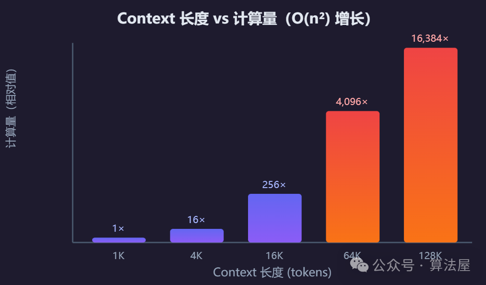
问题二：KV Cache 吃光显存
什么是 KV Cache？
模型在生成每个新 token 时，需要"记住"之前所有 token 的中间结果。这些中间结果以 Key-Value 对 的形式存在 GPU 显存里，叫做 KV Cache。
🍎 类比：你在写作文，桌上要摊开之前写过的所有草稿纸来参考。
- 写了 1 页？桌子绰绰有余。
- 写了 100 页？桌子已经堆满了。
- 写了 1000 页？桌子根本放不下，纸掉地上了。
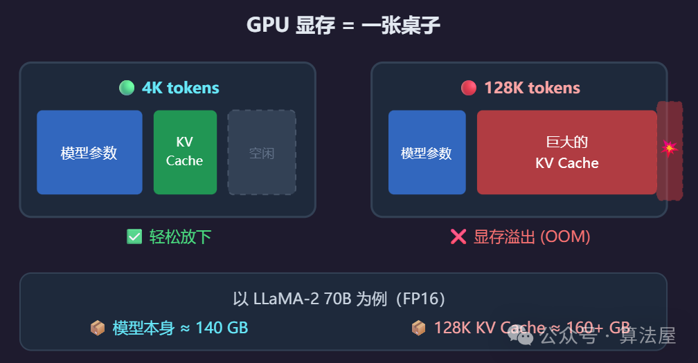
实际数字
| 模型 | 上下文长度 | KV Cache 大小 | 需要几张 A100 (80GB)？ |
|---|---|---|---|
| LLaMA-2 70B | 4K | ~5 GB | 2 张够了 |
| LLaMA-2 70B | 32K | ~40 GB | 需要 3-4 张 |
| LLaMA-2 70B | 128K | ~160 GB | 需要 4-6 张 |
💡 上下文越长，GPU 显存里要缓存的东西越多，多到装不下就 OOM 崩溃。
问题三：训练数据的「舒适区」
模型只见过有限长度的文本
训练时，模型看到的文本都有一个长度上限。推理时给它一个远超训练长度的上下文，它就会……懵。
🍎 类比：一个学生只做过 100 以内的加法题，你突然让他做 10000 以内的——他不是不会加法，而是从没练过那么大的数。
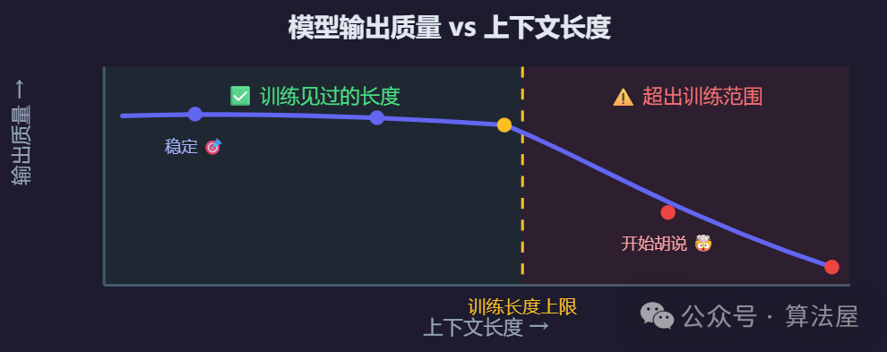
超长上下文时会怎样？
- 位置编码失效 —— 模型靠位置编码知道"第几个字"，超出范围后位置感知混乱
- 中间遗忘 —— 中间部分的内容容易被忽略（著名的 Lost in the Middle 问题）
- 重复 / 矛盾 —— 输出开始自我重复或前后矛盾
怎么解决这三个问题？
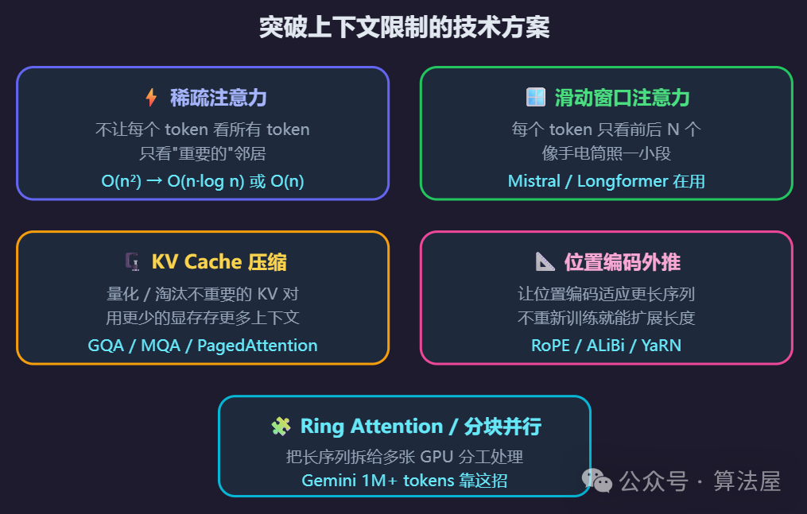
| 技术 | 解决的问题 | 核心思路 | 代表方法 |
|---|---|---|---|
| 稀疏注意力 | 计算量 O(n²) | 不看所有 token，只看重要的 | BigBird, Flash Attention |
| 滑动窗口 | 计算量 O(n²) | 每个 token 只看前后 N 个邻居 | Mistral, Longformer |
| KV Cache 压缩 | 显存爆炸 | 量化 / 淘汰不重要的 KV 对 | GQA, MQA, PagedAttention |
| 位置编码外推 | 训练长度限制 | 让位置编码泛化到更长序列 | RoPE, ALiBi, YaRN |
| 序列并行 | 计算量 + 显存 | 长序列拆给多张 GPU 分工 | Ring Attention (Gemini 1M+) |
总结
| 限制因素 | 一句话理解 | 后果 |
|---|---|---|
| 注意力 O(n²) | 人多了握手次数爆炸 | 推理速度暴降、成本飙升 |
| KV Cache | 桌子太小纸太多 | GPU 显存 OOM 崩溃 |
| 训练长度 | 没做过大数加法 | 超出范围后输出质量变差 |
不是不想给你无限上下文，而是 算力、显存、训练数据 三个维度都不答应。这就是为什么即使硬件在进步，上下文窗口也只能渐进式扩展。
第2章 LLM 推理机制与优化
Prefill/Decode、KV Cache、vLLM、SGLang、RL对齐 —— 推理与训练优化全栈
本章文章
- LLM 推理为什么先慢后快？从 Prefill、Decode 到 KV Cache 讲清楚 — Prefill/Decode 两阶段与自回归生成原理
- 大模型推理为什么慢？从 Prefill、Decode 到 KV Cache，一文讲透推理加速全流程 — 推理加速全流程：从 Prefill 到 KV Cache 优化
- 大模型推理到底在做什么？从 Prefill、Decode 到 vLLM，一次讲透 — 推理本质：预测下一个 token 的完整流程
- 彻底搞懂 LLM 推理全过程 — LLM 推理从输入到输出的每个环节
- LLM推理全流程解析：从输入到输出的底层逻辑 — 9 步推理流水线：分词、嵌入、采样、解码
- 理解 KV Cache：LLM 推理为什么能越写越快 — KV Cache 原理、GQA/MQA 优化与内存管理
- LLM推理优化核心技术 — 量化、蒸馏、投机解码等推理优化技术全景
- 大模型推理系统入门：从模型优化到调度优化 — vLLM 技术路线图：模型优化与调度优化
- vLLM 如何管理 KV Cache：从 vLLM 本地 Block 管理到跨实例缓存池 — Block 状态机、PagedAttention、Prefix Caching
- LLM大模型是如何运行起来的：从Hello World到vLLM的运行时深度解析 — vLLM 运行时架构与请求处理全流程
- SGLang推理优化-调度器核心ScheduleBatch — SGLang 调度器核心 ScheduleBatch 实现
- SGLang推理优化-Scheduler 到 Forward 推理的 Batch 数据流 — 从 Scheduler 到 Forward 的 Batch 数据流
- SGLang推理优化-DP并行 — SGLang DP 并行推理优化
- 2026 年面向 LLM 的 RL方法总结：从 PPO 到 DPO 到 GRPO，再到多智能体 RL — PPO→DPO→GRPO→多智能体 RL 对齐方法演进
LLM 推理为什么先慢后快？从 Prefill、Decode 到 KV Cache 讲清楚
LLM 推理的延迟不能只用“快”或“慢”概括。
一次回答里至少有两个阶段：Prefill 和 Decode。Prefill 负责处理完整 prompt，并生成第一个输出 token；Decode 负责在第一个 token 之后，继续一个 token 一个 token 地生成内容。
这两个阶段的瓶颈不一样。Prefill 主要吃 GPU 算力，决定用户等多久才能看到第一段文字；Decode 主要吃显存带宽和 KV Cache，决定文字流出来的间隔有多短。
所以，优化 LLM 应用前，先问清楚延迟发生在哪里。
是首 token 出得慢，用户提交问题后一直空等？还是首 token 已经出来，但后续文字像挤牙膏？这两种慢对应不同系统瓶颈，也对应不同优化手段。
Akshay Pachaar 把 LLM inference 的链路讲得比较完整：tokenizer、embedding、attention、prefill、decode、KV cache、quantization 都串在了一起。下面按工程视角重新梳理一遍。

这张图把推理延迟拆成两块：Prefill 是 compute-bound，Decode 是 memory-bound。第一 token 慢、后面 token 一粒一粒出来，原因就在这里。
LLM 为什么只能一个 token 一个 token 写？
LLM 不是一次性写完整段答案。
模型每一步只做一件事：根据当前上下文预测下一个 token。预测出来以后，这个 token 会被接回上下文，模型再继续预测下一个 token。循环不断重复，直到生成结束。
一次生成可以简化成下面这个过程：
输入 prompt
↓
预测第 1 个 token
↓
把第 1 个 token 接回上下文
↓
预测第 2 个 token
↓
不断重复
理解 LLM 推理，关键不是想象模型如何“一次写出答案”，而是看清楚每一步如何预测下一个 token，以及第一个 token 和后续 token 为什么走的是两种性能路径。
Tokenizer 决定模型实际处理多少内容
神经网络不直接读取中文或英文。
模型看到的是数字。用户输入的文本会先经过 tokenizer，被切成一串 token，每个 token 对应一个整数 ID。
现代 LLM 常用 Byte Pair Encoding 一类方法。它会把高频片段合并成词表里的 token。常见词可能一个 token 就能表示，少见词会被拆成多个片段。

Tokenizer 会影响成本，也会影响延迟。
如果某种语言或领域词在 tokenizer 训练数据里覆盖不足，同样一句话可能被切成更多 token。token 越多，模型要处理的位置越多，首 token 等待时间也会变长。
这也是为什么“字符数差不多”的两段输入，在模型服务里成本可能不一样。模型计费和推理负载看的是 token，不是字符数。
Embedding 把 token ID 变成语义向量
token ID 只是编号，还不能直接参与神经网络计算。
模型会用 embedding table 把每个 token ID 映射成一个向量。假设词表大小是 50K，hidden dimension 是 4096，那么 embedding table 的形状就是 [50000, 4096]。输入一个 token ID，实际就是去表里取一行向量。
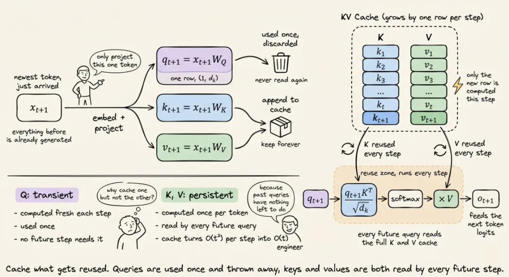
这些向量会在训练过程中学到语义关系。
语义相近的 token 会被推到相近位置。比如 king 和 queen 会比较接近，python 既可能靠近 snake，也可能在另一个语义方向上靠近 javascript。
模型还需要知道顺序。Attention 本身不知道哪个 token 在前、哪个 token 在后，所以现代模型会用 RoPE 这类位置编码方法，让向量携带位置信息。
Attention 让每个 token 带着上下文判断
向量进入 transformer 层后，主要计算开始。
一个 LLM 往往有几十层 transformer。每一层大致做两类计算：self-attention 混合不同 token 之间的信息，feed-forward network 处理每个 token 自己的信息。
Self-attention 的关键是 Q、K、V。
每个 token 的向量会分别乘上三组权重矩阵，得到三个新向量：
- Query：我现在要找什么信息
- Key：我这里有什么信息可供匹配
- Value：如果别人需要我，我能贡献什么内容

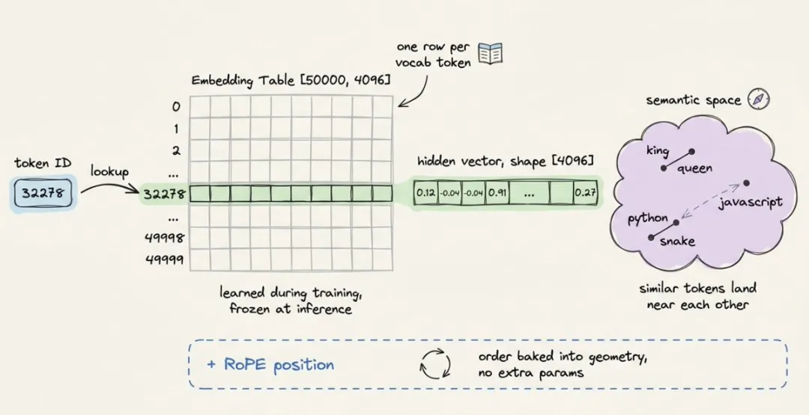
Attention 的计算可以这样理解：每个 token 用自己的 Query 去匹配所有 token 的 Key，再按匹配强度混入对应的 Value。
这个机制让 token 不再孤立。代词可以回看前面的人名，技术名词可以吸收上下文定义，长句后半段也可以引用前半段的信息。


Attention 负责搬运上下文，feed-forward network 负责继续加工每个位置的表示。几十层堆叠以后，模型就能在长上下文里追踪引用、关系和语义依赖。
第一个 token 为什么要等？
经过最后一层 transformer 后，模型会取最后一个位置的向量，把它投影回词表大小。
如果词表有 50K 个 token，模型就会得到 50K 个分数。经过 softmax 后，这些分数变成概率分布。采样或取最大概率以后，下一个 token 才会出来。
这一步听起来只是“预测一个词”，前面却要先完成整段 prompt 的计算。
当 prompt 有 2000 个 token 时，每一层 transformer 都要处理这 2000 个 token。好消息是，Prefill 阶段可以并行；所有 token 的 Q、K、V 可以一起算，attention 也可以通过大矩阵乘法完成。
GPU 很擅长这种工作负载。大矩阵乘大矩阵，正是 GPU 的强项。
Prefill 的瓶颈主要是算力，也就是 compute-bound。它决定的指标叫 TTFT，Time To First Token，也就是用户提交问题后，第一段文字多久才开始出现。
长 prompt 会显著增加 TTFT，因为模型必须先把所有输入 token 处理完，才有资格生成第一个输出 token。
后续 token 为什么一粒一粒出来？
第一个 token 出来以后，模型进入 Decode 阶段。
Decode 和 Prefill 的工作负载完全不同。生成第 51 个 token 时，前 50 个 token 的 Key 和 Value 已经算过，而且不会再变化。模型只需要为新 token 计算新的 Q、K、V，然后让新 token 去看前面缓存好的 K、V。
这个阶段计算量看起来变小了，瓶颈却转向显存读写。
每生成一个 token，GPU 都要加载模型权重，还要读取已有的 KV Cache。计算本身不大，但数据搬运很多。GPU 算力可能空着，延迟卡在内存带宽。
Decode 决定的指标叫 ITL，Inter-Token Latency，也就是相邻两个输出 token 之间隔多久。
这就是 Prefill 和 Decode 的关键差异：Prefill 是 compute-bound，Decode 是 memory-bound。同一个模型、同一张 GPU、同一次请求，前后两个阶段的优化方向完全不同。
KV Cache 用显存换时间
KV Cache 解决的是重复计算。
如果没有 KV Cache，模型每生成一个新 token，都要重新计算整个上下文的 attention。生成越长，重复计算越多，复杂度会迅速变差。
有了 KV Cache，模型会把每一层、每个历史 token 的 Key 和 Value 存下来。下一步 decode 时，模型直接复用这些缓存，只为新 token 计算增量。
收益很直接：长生成场景里，速度可以提升数倍。
代价也同样直接：KV Cache 吃显存，而且会随 token 数线性增长。原文里给了一个估算：对 13B 模型来说，KV Cache 可能接近每 token 1MB。4K 上下文光缓存就可能占掉约 4GB 显存。
长上下文慢，不只是模型“想得更多”。更准确地说，是缓存变大了，显存压力和带宽压力都在变大。
常见优化包括：
- 把 KV Cache 量化到 INT8 或 INT4
- 使用 sliding window，丢掉窗口外的 token
- 用 grouped-query attention 让多个 attention head 共享 K、V
- 像 vLLM 的 PagedAttention 那样，把 KV Cache 当成操作系统内存分页管理
这些优化看起来底层，却直接决定长上下文模型能不能稳定服务用户请求。
DeepSeek-V4 的例子：长上下文开始围绕缓存设计
原文特别提到 DeepSeek-V4，因为它把长上下文推理的瓶颈讲得更直观。
根据原文引用的技术报告，DeepSeek-V4-Pro 在 100 万 token 上下文下，相比前代模型，单 token 推理 FLOPs 约为 27%，KV Cache 约为 10%。

这类工作的意义不只是“又一个新模型发布了”。
更值得关注的是，模型架构开始围绕 KV Cache 做设计。过去大家更多讨论参数规模、benchmark 分数、上下文窗口长度；到了长上下文服务阶段，缓存成本能不能付得起，已经变成模型能否落地的关键约束。
当 attention 结构开始为了减少 KV Cache 改造时，推理瓶颈已经从“能不能支持长上下文”转向“能不能高效服务长上下文”。
Quantization 减少的是权重搬运成本
训练需要较高精度，推理不一定需要。
生产环境里，很多模型不会用 FP32 跑推理，而是用 FP16 或 BF16。这样可以直接把权重显存占用减半，并利用 Tensor Core 提高吞吐。
更激进的方案会把权重量化到 INT8，甚至 INT4。
原文给了一个 7B 模型的直观数字：
| 精度 | 7B 模型权重大小 |
|---|---|
| FP32 | 28 GB |
| FP16 | 14 GB |
| INT8 | 7 GB |
| INT4 | 3.5 GB |
INT4 能让 7B 模型跑在笔记本 GPU 上，原因就在这里。
当然，量化不是免费午餐。位宽越低，信息损失越大。GPTQ、AWQ 这类方法会为不同通道选择缩放因子，尽量把质量损失压低。做得好时，INT4 在很多 benchmark 上只会损失很小一部分效果。
工程上，量化通常是杠杆很高的优化项。它同时降低权重加载成本、显存占用和服务延迟。
推理框架优化的是调度、缓存和内存布局
理解 Prefill、Decode 和 KV Cache 后，再看 vLLM、TensorRT-LLM、Text Generation Inference 这些服务框架，就更容易理解它们在做什么。
它们不是简单把 generate() 包成 API。
这些框架主要优化三类问题：
-
Continuous batching
：把多个用户的 token 生成步骤交错到同一张 GPU 上，提高利用率
-
Speculative decoding
：用小模型先草拟 token，再让大模型验证，减少等待
-
KV Cache 管理
：更高效地分配、复用和分页缓存，避免显存碎片和浪费
单个用户看到的是流式输出，服务端看到的是一堆请求在同一张 GPU 上抢算力、抢显存、抢内存带宽。
高性能推理服务的难点，不只是模型结构，而是调度、缓存和内存布局。
定位慢，要先拆 TTFT 和 ITL
理解 LLM inference 后，优化方向会清楚很多。
长 prompt 主要影响 TTFT。
用户第一次等得久，通常和输入 token 多、检索上下文太长、系统提示词臃肿有关。优化方向是减少 prompt 长度、精简 RAG 上下文、缓存可复用前缀。
长输出主要影响 ITL。
如果首 token 很快，但后续输出慢，瓶颈更可能出在 decode 阶段。优化方向是更好的 KV Cache 管理、更高内存带宽、更激进的量化，或者使用 speculative decoding。
上下文长度也不是免费的。
把上下文从 32K 拉到 128K，不只是多算几倍 token。KV Cache 会变大，batch size 会被挤压，并发能力会下降。
GPU 利用率也可能误导判断。
Prefill 时 GPU 可能很忙，Decode 时 GPU 算力利用率可能不高，但显存带宽已经卡住。这个时候加更多算力不一定有效，减少缓存和改善内存访问才更重要。
遇到“模型很慢”时，先把问题拆成两类：
它是慢在开始，还是慢在输出？
这个拆法能直接决定优化方向。
结尾：把延迟拆开，优化才会落到工程上
Transformer 架构很重要，但线上推理性能经常卡在更具体的环节。
Tokenizer 会影响输入长度，Prefill 会影响首 token，Decode 会受显存带宽限制，KV Cache 会吃掉上下文扩展的红利，Quantization 会改变模型能不能装进显存。
落到工程上，不要只问“模型为什么慢”。这个问法太粗。
更好的排查顺序是：
- 输入 token 是不是太多？
- TTFT 是不是太高？
- ITL 是不是太长？
- KV Cache 是不是挤压了显存和并发？
- 权重或缓存有没有量化空间？
- serving 框架有没有做好 batching、分页和调度？
把这些问题拆开，LLM 推理优化才会从玄学变成工程。
Akshay Pachaar, How LLM Inference Works
https://x.com/akshay_pachaar/status/2050941458614751327
大模型推理为什么慢？从 Prefill、Decode 到 KV Cache，一文讲透推理加速全流程
大模型推理慢，很多时候并不是因为部署模型的GPU算力不够强，也不是因为模型本身参数太大，结构复杂算不动。真正的问题在于
大模型生成文本不是一次性算出完整答案，而是一个自回归生成token的过程，一个Token一个Token的往外吐，而且每一步都要访问越来越长的上下文和 KV Cache。
我们在前端看到的“打字机”的效果，不是产品经理为了营造氛围故意加的动画，而是大模型真的是这么干的。大模型每生成一个新的token都需要重新看一遍已有的上下文，结合之前的历史信息然后再预测下一个新的token。
这也是为什么同一个模型：
- 输入越长，首字越慢
- 输出越长，显存越吃紧
- 并发越高，吞吐越容易崩
- 上下文越大，部署成本越高
一般来讲，我们将大模型推理分成两个阶段：
- Prefill阶段：把用户输入的提示词prompt读完
- Decode阶段：一个一个依次生成Token
我们来用大白话说下最简单的大模型推理过程，假设用户在前端聊天框输入了一句话：
请解释KV Cache是什么？
大模型在接收到这句用户输入之后，并不是直接生成最终的完整答案，而是根据这句话预测下一个Token。
比如先生成：
KV
然后把KV拼回上下文，整个上下文就变成了“请解释KV Cache是什么？ KV”，再继续预测下一个Token：
Cache
再拼回上下文，整个上下文就变成了“请解释KV Cache是什么？ KV Cache”，再预测下一个Token：
是
再拼回上下文，整个上下文就变成了“请解释KV Cache是什么？ KV Cache是”，再预测下一个Token，这样一直循环最终生成这个问题的完整回答。
所以，大模型推理的过程就是：
- 看已有的上下文
- 预测下一个Token
- 把新的Token加入上下文
- 再预测下一个Token
- 循环
这就是上面说的“自回归生成”。
大模型在训练的时候是可以并行处理一整段文本，但是在推理的时候，模型没有办法知道自己后面要生成什么，只能一步一步往前预测，生成Token没办法并行，只能串行，这就是大模型推理为什么慢的根本原因。
模型推理我们经常看以下指标：
- TTFT：Time To First Token，首 Token 延迟，主要受 Prefill 影响
- TPOT：Time Per Output Token，每个输出 Token 的耗时，主要受 Decode 影响
- Throughput：吞吐量，通常指每秒处理多少 Token 或多少请求
后面详细介绍下大模型推理的的Prefill和Decode阶段分别做了什么。
2 Prefill阶段
大模型推理的第一个阶段是Prefill阶段，Prefill阶段就是模型先把用户输入的Prompt全部读进去，
- 如果用户输入1000个Token，模型就读入这1000个Token，计算他们之间的注意力关系
- 如果用户输入100000个Token，模型就读入这100000个Token，计算他们之间的注意力关系
这一个过程我们可以理解为大模型在读题，题目越长，读题的速度越慢，时间越久。在这一阶段，模型需要完整的处理输入的Token序列，计算他们之间的注意力关系，尤其是当输入的上下文很长时，中间注意力矩阵越大，显存和带宽的压力越大。
之前在FlashAttention的那个文章中我们说过一个核心的问题：GPU算得快，并不一定推理速度就快。原因就是因为虽然GPU的计算速度很快，但是数据需要在HBM和SRAM之间来回搬运，如果在Attention计算过程中生成了很大的中间矩阵，GPU就会频繁的从HBM中搬数据，这个时候GPU的计算单元实际上不是很忙，而是在等数据喂进来。
所以，在Prefill阶段：
Prompt越长，Attention 中间结果越大，显存压力越大，数据搬运越多，GPU 越容易被内存带宽卡住，首Token的时延越高
给我们的感觉就是，当我们问大模型一个简单的问题，感觉大模型回答的很快，但是当我们给大模型丢了一个论文的PDF，然后让他总结论文创新点时，感觉就会先卡一会然后再回答了。
3 Decode阶段
在Prefill阶段结束之后，大模型推理进入到第二个阶段Decode阶段。Decode 阶段每次只生成一个新 Token，好像看起来每次只算一个新Token应该很很快，但是这个阶段最主要的问题是：每生成一个新Token，都要访问之前所有Token的历史信息。
假设Prompt有8000个Token：
- 生成第 1 个 Token 时，要看前面 8000 个 Token
- 生成第 100 个 Token 时，要看前面 8100 个 Token
- 生成第 1000 个 Token 时，要看前面 9000 个 Token
模型的上下文会越滚越长，这个时候GPU虽然每一步只生成一个Token，但是每一步都要访问之前大量的历史缓存，所以Decode阶段GPU不是算不过来，而是在等数据进来计算，计算单元很闲而显存带宽很忙。GPU的算力很强，但是要等历史缓存从显存里搬过来。
所以很多大模型推理加速的技术，并不是在模型结构和数学公式，而是想办法减少数据搬运，充分利用计算算力。
4 KV Cache：用显存换速度
如果像Decode阶段常规的计算方式，每次生成一个Token都要重新计算前面所有Token的K和V，那速度肯定是慢的惊人呢，所以从工程上人们自然而然的想出了KV Cache这种方式。
我们在计算Transformer的Attention时，每一个Token都会生成Query、Key、Value，对于历史的Token来说，他们的Key和Value我们已经算过了，而且不会再变，那么最直接的加速方式就是把已经算过的K和V缓存起来，不要重复计算，下次用的时候直接从缓存里面拿，这就是KV Cache，本质就是用显存换取计算速度。
- 如果大模型推理我们不用KV Cache，那么每生成一个Token，都要把历史的上下文Token的K和V都计算一遍
- 如果大模型推理我们用了KV Cache，每生成一个Token，我们只需要计算当前Token的Q，然后直接读历史Token的K和V进行计算，显而易见推理速度会快很多。
但是KV Cache也有问题，就是非常吃显存，显存占用大小与下面的因素相关：
- 模型层数
- hidden size
- attention head数量
- 上下文长度
- batch size
- 数据精度
通常来讲：
- 上下文越长，KV Cache越大
- 并发越高，KV Cache越大
- 输出越长，KV Cache越大
所以很多时候在部署大模型进行推理的时候并不是放不下模型权重，而是存不下KV Cache。
举个栗子，模型权重就像饭店里的厨房设备，开店之前就固定在那里了。KV Cache 更像每个客人桌上的餐盘和临时物品，客人越多、吃得越久、点得越多，桌面占用就越大。最后厨房没问题，反而是大厅先被堆满了。
5 PagedAttention：管理显存，提高利用率
原生的KV Cache的管理方式有一个问题在于它需要为每个请求都预留一块连续的显存空间，但是用户的输入Prompt长度是不固定，有的人只问一句话、有的人直接塞进来一本电子书。
那么这种显存管理方式就有问题了，如果显存预留的太多，会浪费显存；如果显存预留的太少后面不够用；用户请求一多，还容易产生显存碎片。
由于传统的KV Cache显存管理有上述问题，天才提出PagedAttention解决上述问题。PagedAttention借鉴了操作系统分页的思想，把KV Cache切成一个一个固定大小的Block。每个请求不再需要申请一整块连续的显存，而是通过Block Table记录逻辑Token到物理Token的映射关系。用大白话说，就是KV Cache不需要连续存了，而是用到哪里分配到哪里。
举个栗子，传统 KV Cache 就像图书馆必须给每个人留一整排书架，不管你最后借几本书，这排书架都先占着。PagedAttention 则像给每个人一张借书卡，书可以放在图书馆任意空位置，只要借书卡上记录了位置就行，这样显存利用率就高很多。所以 PagedAttention 的本质不是改 Attention 公式，也不会改Attention的计算量，而是：用更聪明的显存管理方式，提高 KV Cache 的利用率，提升显存利用率和并发承载能力。
6 常见的推理加速技术
理解了 Prefill、Decode 和 KV Cache，再看各种推理加速技术就比较清楚了，这些技术看起来名字很多，但其实都在解决几个固定问题。
6.1 FlashAttention
FlashAttention 主要解决 Attention 计算中的内存访问问题。它不改数学公式，而是通过分块计算和减少 HBM 读写，让 Attention 计算尽可能在 SRAM 中完成。
所以它主要优化的是：
- 长上下文 Prefill
- Attention 中间矩阵过大
- HBM 和 SRAM 之间频繁搬数据
核心思想是：能少搬就少搬。
6.2 PagedAttention
PagedAttention 主要解决 KV Cache 的显存管理问题。它不让每个请求预留一大块连续显存，而是把 KV Cache 切成块，按需分配。
它主要优化的是：
- 显存碎片
- KV Cache 浪费
- 多用户并发
- 长短请求混合调度
核心思想是：像操作系统管理内存一样管理 KV Cache。
6.3 Continuous Batching
普通 batching 很适合训练，但是推理不太一样。因为每个用户的请求长度不同，生成长度也不同。有的请求已经生成完了，有的请求还在继续生成，如果 batch 不能动态调整，GPU 就会出现空转。
Continuous Batching 解决的就是这个问题，它会动态把不同阶段的请求拼在一起，让 GPU 尽量一直有活干。
核心思想是：减少 GPU 等请求的时间，提高吞吐。
6.4 Speculative Decoding
Decode 阶段最大的麻烦是一个 Token 一个 Token 生成，速度太慢。
Speculative Decoding 的思路是：让一个小模型先猜几个 Token，然后让大模型验证。如果小模型猜对了，大模型就可以一次接受多个 Token。如果猜错了，再回退重新生成。这就像让一个便宜的实习生先写草稿，再让专家快速审核，如果草稿大差不差，专家就不用一个字一个字重写。
它主要优化的是：
- Decode 串行生成
- 单 Token 生成太慢
- 大模型每一步都太贵
核心思想是：用小模型的低成本猜测，换大模型的生成步数减少。
6.5 MQA、GQA、MLA
这些都是注意力结构优化，本质上也和 KV Cache 有关。普通 Multi-Head Attention 中，每个 head 都有自己的 K 和 V，这样效果灵活，但是 KV Cache 很大。MQA、GQA、MLA 这类方法，都是在想办法减少 K 和 V 的存储与读取压力。
- MQA：所有 Query head 共用一组 K/V
- GQA：多个 Query head 共用一组 K/V，是 MHA 和 MQA 的折中
- MLA：通过更紧凑的潜在表示压缩 KV Cache，进一步降低缓存压力
简单理解就是：不要让每个 Query 都带一整套独立的 K/V。
这样可以降低 KV Cache 占用，也能减少 Decode 阶段的数据搬运。
6.6 量化
量化可以分为模型权重量化和KV Cache量化，量化本质上主要解决的是显存和带宽问题。
模型权重量化压缩的是模型本体，可以让模型更容易放进显存；KV Cache量化压缩的是推理过程中的缓存，可以让长上下文和高并发更省显存。尤其在 Decode 阶段，很多时候瓶颈是读取 KV Cache 的带宽，如果 KV Cache 变小了，每一步需要搬的数据也会变少，所以量化不只是为了省钱，也是在减轻带宽压力。
7 结论
大模型推理慢，主要有以下几个原因：
- Prefill 阶段要处理完整 Prompt，长上下文会带来很高的首 Token 延迟
- Decode 阶段只能一个 Token 一个 Token 生成，只能串行运行
- KV Cache 避免了重复计算，但会吃掉大量显存
- 并发请求越多，KV Cache 管理越复杂
- 很多时候瓶颈不是算力，而是显存带宽和调度
而目前的大模型推理加速的技术主要的优化点在于解决上述的问题：
- FlashAttention 减少 Attention 过程中的数据搬运
- PagedAttention 提高 KV Cache 的显存利用率
- Continuous Batching 让 GPU 尽量别闲着
- Speculative Decoding 减少大模型 Decode 步数
- 量化降低权重和 KV Cache 的显存与带宽压力
- MQA、GQA、MLA 从结构上减少 K/V 的存储和读取
所以，大模型推理优化的核心不是单纯“堆更强的 GPU”，而是让计算、显存、带宽和调度协同起来：少搬数据、少浪费显存、少空转 GPU，让每一次生成都尽可能高效。
大模型推理到底在做什么？从 Prefill、Decode 到 vLLM，一次讲透
过去两年，大模型几乎重写了整个 AI 应用栈。大家谈模型参数、谈训练语料、谈 Agent、谈多模态，但在真正落地时，最后决定系统体验的，往往不是模型能力本身，而是另一个更现实的问题：
模型到底是怎么跑起来的。
同样一个模型，有的系统首字返回很快，有的系统却要等上好几秒；同样一张 GPU，有的服务能稳定承载高并发，有的系统一上量就抖。表面看，大家都是“调用一个大模型”，本质上，比拼的却是背后的推理系统能力。
这也是为什么，Prefill、Decode、Paged Attention、Continuous Batching、PD 分离，以及 vLLM 这类推理引擎，会在工程圈里变得越来越重要。
很多人对这些概念多少听过，但往往是碎片化理解：知道有 Prefill 和 Decode，却不知道它们为什么必须分开看；知道 vLLM 很快，却说不清它到底快在哪里；知道一个 vllm-openai 的镜像能跑服务，却不清楚镜像里真正封装的是什么。
这篇文章试图把这条链路讲完整：从大模型推理的本质开始，一直讲到现代推理引擎为什么会长成今天这样。
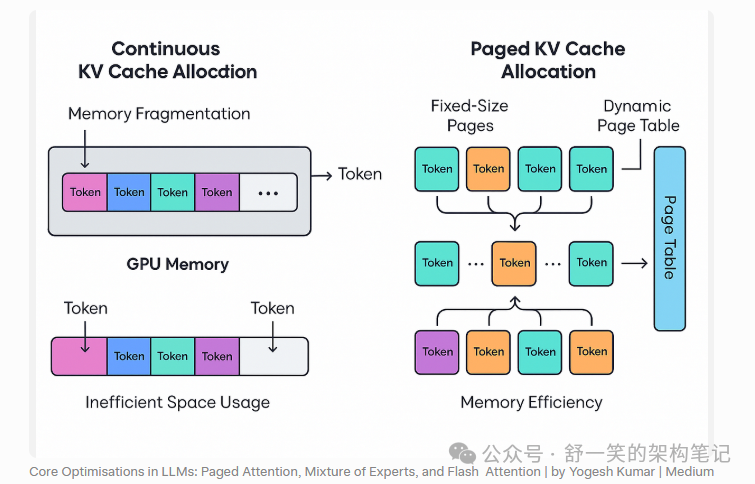
一、大模型推理的本质，不是“回答问题”，而是“预测下一个 token”
先把问题说透。
从用户视角看，大模型是在“对话”“写代码”“翻译”“总结文档”。但从模型内部看，这些任务最终都被统一成了一件事：
在给定上下文的前提下，预测下一个 token。
比如你输入一句话：
请用通俗语言解释一下 Transformer
模型不会直接“理解你的意图然后整段输出答案”。它实际做的是：先根据这句输入形成上下文表示，然后预测第一个输出 token；生成第一个 token 之后，再把它拼回上下文里，继续预测第二个 token；如此循环，直到生成结束。
所以，大模型推理的本质并不神秘，它就是一个典型的自回归生成过程。难点也恰恰来自这里：因为这个过程不是一次性完成，而是一个持续迭代、持续读写上下文、持续调度资源的过程。
也正因为如此，大模型推理从来不是“跑一次前向计算”这么简单。它背后同时牵扯三类问题：
第一类是计算问题。模型本身大，矩阵运算重，算力消耗高。
第二类是内存问题。上下文越长，缓存越大，显存会迅速成为瓶颈。
第三类是系统问题。在线服务里，请求长度不一致、到达时间不一致、结束时间也不一致，GPU 怎么调度，决定了吞吐和延迟。
理解后面所有优化之前，先接受一个基本事实：
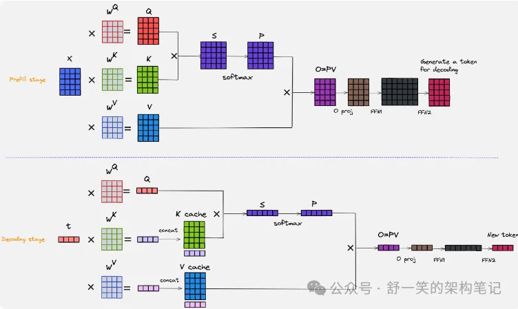
大模型推理，本质上是“模型计算 + 内存管理 + 在线调度”三者耦合的问题。
二、为什么要把推理拆成 Prefill 和 Decode
如果把整个推理过程拆开看，会发现它天然分成两个阶段，而且这两个阶段的资源特征完全不同。
1. Prefill：先把输入“吃进去”
用户发来的 prompt，往往是一整段现成文本。无论是一句简单提问，还是几千字的文档摘要请求，模型都必须先把这段输入整体处理一遍。这一步，就是 Prefill。
Prefill 干的事情可以概括成两件：
一是把输入 token 逐层送进 Transformer，形成上下文表示；
二是为后续生成建立好历史缓存，也就是常说的 KV Cache。
这里最关键的一点在于：Prefill 阶段的输入是已知的、完整的。
因为整段 prompt 一开始就全部给出来了，所以模型可以在序列维度上做较高程度的并行计算。也就是说，Prefill 往往是一个算力密集型阶段：矩阵乘很多，GPU 计算单元利用率高，但相应地，prompt 越长，Prefill 的耗时也越高。
这也是为什么长上下文请求常常会直接拉高首字延迟。因为用户在看到第一个输出 token 之前，系统必须先把整段输入处理完。
2. Decode：再一个 token 一个 token 地往下写
当 prompt 处理完之后，模型才进入真正的生成阶段，也就是 Decode。
Decode 和 Prefill 最大的不同，是它不再处理“整段已知输入”，而是在每一步只新增一个 token。每生成一个 token，模型就需要拿这个新 token 去和历史上下文做 attention，再预测下一个 token。
这意味着 Decode 有一个非常强的工程特征：
它天然是串行的。
后一个 token 必须依赖前一个 token 的结果，所以你几乎不可能像 Prefill 那样在时间维度上大规模并行。与此同时，随着上下文不断变长，Decode 每一步都要频繁读取历史 KV Cache，因此它常常不是“算不动”，而是“读不动”——瓶颈更容易落在显存带宽和缓存访问效率上。
于是，一个非常典型的对比出现了：
- Prefill 更像算力型任务
- Decode 更像内存带宽型任务
这就是为什么在推理系统里，大家不会把它们混为一谈。它们看似同属“推理”，但从资源特征到优化方向，其实是两种工作负载。

三、为什么说大模型推理的真正难点，不在模型，而在系统
如果只有单个请求，大模型推理并不难理解：先 Prefill，再 Decode，一路往下生成即可。
但一旦进入在线服务场景，问题立刻变了。
真实系统里，请求不是整齐到达的。有的人只问一句短问题，有的人直接贴一整篇长文；有的请求生成几十个 token 就结束，有的请求可能一直写几千 token。更麻烦的是，这些请求是持续不断流入系统的，不会等上一批全部跑完再来下一批。
于是推理系统必须同时回答几个很现实的问题：
- 新请求来了，什么时候插入执行？
- 老请求结束了，空出来的 GPU 位置如何立刻利用？
- 每个请求长度不同，KV Cache 怎么分配才能不浪费显存？
- 长 prompt 请求和短生成请求混在一起时，怎样避免相互拖累？
这时你会发现，决定系统体验的已经不再只是“模型 forward 快不快”，而是系统如何管理不规则负载。
这也是今天所有高性能推理引擎要解决的核心命题：
如何在有限 GPU 资源上，同时兼顾首字延迟、生成速度、并发能力和显存利用率。
围绕这个命题，后来才演化出了 Paged Attention、Continuous Batching、PD 分离，以及 vLLM 这样的系统设计。
四、为什么 KV Cache 会成为推理时代最重要的显存问题
要理解 vLLM，必须先理解 KV Cache。
在 Transformer 的 attention 机制里，每个 token 在每一层都会对应一组 Key 和 Value。生成新 token 时，模型需要拿当前 token 的 Query 去和历史所有 token 的 Key/Value 做计算。为了避免每次都把历史上下文重新算一遍，系统通常会把历史 token 的 K/V 缓存下来，这就是 KV Cache。
KV Cache 的意义非常大：它让模型不需要在每一步重新处理整个历史序列，否则生成成本会爆炸。
但 KV Cache 也带来了另一个更现实的问题：它非常占显存，而且会持续增长。
上下文越长，生成越久，历史 token 越多，缓存就越大。如果是多用户并发，每个请求都在不断累积自己的 KV Cache，显存压力会迅速抬升。到了这个时候，参数本身不再是唯一瓶颈，缓存反而成了服务系统最紧张的资源之一。
传统做法通常是给每个请求分配一块连续显存，用来存它的 KV Cache。这个思路在单机、小规模场景下还能工作，但一旦进入在线高并发环境，就会暴露出几个典型问题：
第一，请求长度不可预测。一开始你很难知道一个请求最终会生成多长。
第二，连续分配容易浪费。预留太大，会造成大量空闲空间；预留太小，又可能中途扩容困难。
第三，碎片问题严重。请求动态结束、动态进入，显存很容易被切得零零碎碎。
第四，动态 batch 场景下很难灵活复用。
这时候，KV Cache 不再只是“一个缓存”，而是一个标准的动态内存管理问题。而 vLLM 最有代表性的贡献之一，就是把这个问题用“分页”的方式重新组织了。

五、Paged Attention 的本质，是把 KV Cache 管理变成“虚拟内存”问题
Paged Attention 之所以重要，不是因为它发明了 attention，而是因为它重新发明了attention 背后的缓存管理方式。
它借鉴的是操作系统里非常经典的思想：分页管理。
操作系统不会要求一个进程的所有内存都物理连续，它只要求逻辑上连续，底层可以拆成多个 page，由页表映射到离散的物理内存。同样的思路，在 vLLM 里被应用到了 KV Cache 上。
具体来说，vLLM 不再要求一个请求的 KV Cache 必须放在一整块连续显存里，而是把缓存切成固定大小的 block 或 page。一个请求逻辑上拥有一段连续的上下文，但物理上，这些 KV block 可以分散在不同位置，通过映射关系组织起来。
这么做的收益非常直接。
首先，显存利用率会明显提高。因为系统不再需要为每个请求预留整块连续空间，而是按需分配 page。
其次，扩容变得简单。请求继续生成时，只需要再申请新的 page，而不是搬迁整段缓存。
再次，释放也更灵活。请求一结束，对应的 page 可以立即回收，快速复用给下一个请求。
最后，它天然适合动态并发场景。因为在线服务的请求长度本来就是波动的，分页比“大块连续分配”更适合这种不规则负载。
之所以叫 Paged Attention，是因为 attention 在读取历史 KV 时，底层访问方式已经不再是“从一段连续数组里顺序读”，而是按照逻辑块映射去找到对应的物理 block，再完成计算。
说到底，Paged Attention 解决的不是模型精度问题，而是推理系统在显存层面的可持续扩展问题。

六、Continuous Batching 真正改变的，不是 batch 大小，而是 batch 的生命周期
另一个对现代推理系统影响极大的概念，是 Continuous Batching。
在传统深度学习训练或离线推理里，batch 的概念比较简单：收集一批样本，组成一个静态 batch，一起跑完，再处理下一批。这个模式的问题在于，它默认样本长度大致一致，任务边界清晰，而且不会在执行过程中不断有新请求插入。
但大模型在线生成根本不是这种情况。
一个 batch 里，某些请求可能马上结束，某些请求还会继续生成很久；同时，新的用户请求还在不断到来。如果坚持使用静态 batch，系统就会陷入一个很低效的状态：已经结束的请求还占着位置，新请求又只能等下一轮，GPU 经常空转，延迟和吞吐都不好看。
Continuous Batching 的核心思想不是“把 batch 变大”，而是：
让 batch 变成一个动态流动的集合。
在每一轮 decode 迭代之后，调度器都会重新检查当前活跃请求：
- 已经结束的移出去；
- 还没结束的继续留下；
- 新到达、符合条件的请求插进来。
这样一来，batch 不再是一批固定不变的请求，而是一个持续被重组的执行单元。GPU 可以尽量保持满载，系统也不用等“这一整批都结束”才接下一批。
这个机制看起来只是调度层的小改动，但在 LLM 场景下，它本质上改变了推理服务的吞吐上限。因为 Decode 原本就是一步一步往前推进的，既然每一步都要做一次同步，那顺手在这一步里完成请求的加入、退出和重排，就是非常自然的系统设计。
所以 Continuous Batching 的价值不只是“吞吐更高”，更重要的是它让在线推理第一次真正适应了请求长度不确定、到达时间不确定、完成时间不确定的真实世界。

七、PD 分离为什么会成为更高级的推理架构方向
当你真正理解了 Prefill 和 Decode 的资源差异，就很容易明白为什么行业里会出现 PD 分离，也就是 Prefill/Decode Separation。
原因很简单：它们不是同一种负载，却经常被迫混跑在同一批 GPU 上。
Prefill 更偏计算密集，适合做大规模矩阵计算；Decode 更偏带宽敏感，频繁读写缓存。把这两者混在一起，会导致一种典型的相互干扰：长 prompt 的 Prefill 容易压住短请求的 Decode，而 Decode 的高频小步迭代又会拖慢 Prefill 的吞吐。
于是更进一步的系统会选择把它们拆开：
- 一组资源专门负责 Prefill；
- 另一组资源专门负责 Decode。
这样做的收益是明确的。资源可以针对性优化，调度逻辑也更清晰，不同负载互不干扰，整体稳定性往往更好。
但这件事并不轻松。因为 Prefill 阶段生成出的 KV Cache 不是个小东西，如果 Prefill 和 Decode 不在同一台机器上，就意味着缓存需要跨节点迁移。这背后会带来通信开销、同步复杂度、资源衔接时延，以及更高的系统设计成本。
所以要特别强调一点：PD 分离是一种部署和架构层能力，不是简单地“用了某个镜像就自动有了”。
很多人看到 vLLM 或某些推理框架，就以为 PD 分离是引擎自带特性。更准确的说法应该是：引擎内部天然有 Prefill 和 Decode 两阶段，但是否真正把它们做成物理分离、跨实例调度，是更高层的系统设计问题。
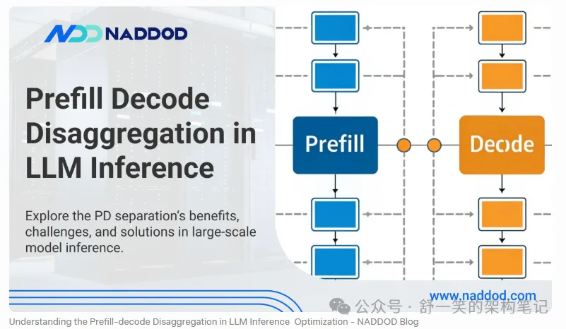
八、vLLM 到底解决了什么问题
到了这里，再看 vLLM，就会清楚很多。
vLLM 并不是在“改变模型”，它做的事情是：为大模型推理构建一个更适合在线服务的执行引擎。
它之所以被广泛关注，不是因为它让模型回答更聪明，而是因为它让同一份模型参数在同样的 GPU 上，能服务更多请求、跑出更高吞吐、获得更好的显存利用率。
从架构上看，vLLM 至少解决了三类关键问题。
第一，它重新设计了 KV Cache 的管理方式。Paged Attention 让缓存从连续分配走向分页分配，显存碎片和浪费显著下降。
第二，它强化了动态调度能力。Continuous Batching 让请求在运行过程中持续流动、持续补位，而不是被静态 batch 限死。
第三，它把“模型前向计算”变成了“系统化执行流程”的一部分。也就是说，vLLM 不只是一个 forward runner，它更像是一个懂调度、懂缓存、懂并发的推理 runtime。
如果把一个典型请求放进 vLLM，你大致会看到这样一条链路：
用户请求进来之后，先进入请求队列；调度器判断这个请求当前应该进入 Prefill 还是 Decode 队列；Prefill 处理完之后生成初始 KV Cache，缓存按 block/page 的方式落到显存管理层；随后请求进入持续的 decode 循环，调度器在每一轮都根据活跃状态重组 batch；某些请求结束，释放对应 page；新的请求则随时插入执行流。
这里最值得注意的是：vLLM 的快，不是单点优化的快，而是系统协同带来的快。
它快在显存浪费少了，快在请求补位更及时，快在 GPU 空转更少，快在同一资源池里能维持更多活跃会话。换句话说，它本质上是把大模型推理从“模型调用问题”提升成了“系统资源调度问题”。
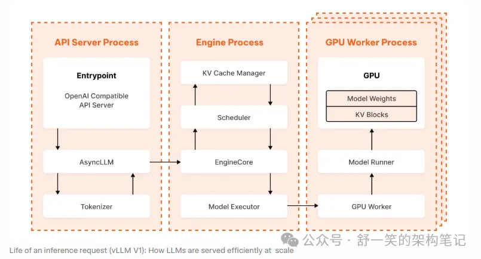
九、一个 vLLM Docker 镜像，真正封装的到底是什么
很多人在工程落地里第一次接触 vLLM，不是从源码，而是从一个镜像开始，比如：
vllm/vllm-openai:v0.9.2
或者你实际在云环境、Kubernetes 环境里看到的镜像地址。这个时候很容易产生一个误解：以为镜像本身就是某种“推理技术”。
其实不是。
镜像只是封装载体。它把一整套可以直接运行的推理服务环境打包了起来。里面通常包括：
- Python 运行时及依赖；
- CUDA、PyTorch 等底层环境；
- vLLM 推理引擎；
- OpenAI 兼容接口服务；
- 模型加载与采样逻辑；
- 调度、缓存、batching 等系统实现。
所以更准确地说，这类镜像的意义不是“它等于 Paged Attention 或 Continuous Batching”，而是：
它把采用了这些机制的推理服务打包成了一个可部署单元。
你启动这个镜像之后，真正运行起来的，往往是一个 OpenAI 风格的 HTTP 服务，前面接收客户端请求，后面由 vLLM 负责调度模型执行。请求进入后，内部依然要经过 Prefill、Decode、KV Cache 分配、批处理调度、采样输出等整套链路。
如果你从 Kubernetes 的视角去理解，会更清楚：
客户端流量进入 Pod，Pod 内的服务进程接收请求，调用 vLLM engine，把用户输入组织成推理任务，然后把这些任务交给 GPU 执行。在这个过程中，镜像只是运行形态；真正决定性能表现的，是镜像里封装的那套推理 runtime。
因此，面对这类镜像，一个更准确的理解方式是：
这不是“模型本身”，也不是“某种优化算法本身”，而是一个把高性能 LLM 推理服务完整封装好的部署载体。
十、今天谈大模型推理，本质上是在谈“AI 时代的操作系统能力”
如果把整篇文章往回收束，你会发现一个很有意思的现象：
这些听上去像模型技术的概念，最后都指向了系统工程。
- Prefill 和 Decode 讲的是任务类型拆分；
- KV Cache 讲的是显存占用和缓存复用；
- Paged Attention 讲的是内存分页与映射；
- Continuous Batching 讲的是动态调度；
- PD 分离讲的是资源池分工与跨节点协同；
- vLLM 则把这些能力整合成了一套可运行的执行系统。
所以今天的大模型推理，越来越像是在重演一遍操作系统和数据库的发展逻辑：当负载规模上来之后，核心竞争力不再只是“能不能算”，而变成了“能不能高效、稳定、可扩展地算”。
这也是为什么，未来真正拉开差距的，很可能不是谁先把模型 API 接出来，而是谁先把推理系统做成基础设施。
从这个角度看，vLLM 的意义并不只是一款开源框架。它更像是一个信号：大模型时代，推理层已经从工具问题，升级成了基础设施问题。
结语
大模型推理的本质，是在有限 GPU 资源上，围绕“下一个 token”这件事，做一整套计算、内存和调度的系统设计。
模型能力决定上限，推理系统决定体验。
Prefill 和 Decode 解释了推理为什么天然分阶段；KV Cache 解释了显存为什么会成为核心瓶颈；Paged Attention 和 Continuous Batching 解释了现代引擎为什么能把 GPU 压榨到更高效率；而 vLLM，则是把这些思想工程化之后的一种代表性实现。
当你再看到一个 vllm-openai 镜像，或者再听到别人谈“大模型推理优化”时，至少可以更清楚地知道：大家讨论的从来不只是模型本身，而是一整套让模型真正服务现实世界的运行机制。
彻底搞懂 LLM 推理全过程
LLM推理全流程解析：从输入到输出的底层逻辑
导语：大多数人通常认为，大语言模型（LLM）在“思考”或“创作”文本。从工程实现的角度来看，模型并未进行人类意义上的构思，而是执行了一条经过高度优化的数学推理流水线。理解这条流水线的运作机制，是掌握大模型部署、性能优化与场景落地的前提。
本文将结合推理全流程图，逐步拆解用户提交请求后，模型后台的实际计算过程，并梳理影响推理效率的核心工程要素。
一、 推理流水线：模型如何生成文本
整个推理过程可归纳为 9 个标准步骤，数据在每一步中发生形态转换与计算迭代。
1. 文本分词（Tokenization）
模型无法直接处理原始字符串。输入文本首先会被分词器（Tokenizer）切分为子词单元（Subwords），并映射为对应的整数 ID。
- 例如：
"gravity"可能被拆分为["grav", "ity"]，对应 ID 序列。 - 核心作用：将非结构化文本转化为模型可处理的离散数字序列。
2. 向量嵌入（Embedding）
每个 Token ID 通过查询嵌入矩阵，转换为高维稠密向量（如 4096 维）。
- 在这一高维空间中，语义相近的 Token 向量距离更近。语言信息由此被转化为可计算的数学表示。
3. 自注意力机制（Self-Attention）
这是 Transformer 架构的核心。模型通过 Query (Q)、Key (K)、Value (V) 三个投影矩阵，动态计算序列中各 Token 之间的关联权重。
- 核心计算：
softmax(QK^T / √d_k) · V - 该操作在多头（Multi-Head）与多层（~96-100 Layers）网络中并行执行，使模型能够捕捉长距离依赖与上下文语义关系。
4. 键值缓存（KV Cache）
在自回归生成过程中，模型每次仅预测一个 Token。为避免重复计算历史序列的注意力状态，系统会缓存已生成的 K 和 V 矩阵。
- 优势：大幅降低重复计算开销，提升生成速度。
- 代价：KV Cache 的显存占用随序列长度线性增长。这是长上下文（Long Context）推理成本较高的直接原因。
5. 前馈神经网络（FFN）
注意力层输出后，数据进入前馈网络进行非线性变换：Linear → SwiGLU/ReLU → Linear。
- 该模块独立处理每个位置的表示，进一步提炼特征。在百层网络中，此步骤累计执行数十亿次，是模型参数量的主要构成部分。
6. 语言模型头（LM Head）
Transformer 的最终输出通过一个线性层映射回词表维度（通常 >100K）。
- 模型输出每个候选 Token 的原始得分（Logits），随后经 Softmax 转换为概率分布。此时，模型并未“决定”下一个词，而是给出了全词表的概率预测。
7. 采样策略（Sampling Strategy）
如何从概率分布中选取最终输出，取决于预设的解码策略：
- Greedy：始终选择概率最高的 Token。输出稳定，但易陷入重复。
- Top-K：仅在概率最高的 K 个候选中随机采样，过滤低质量词汇。
- Top-P：按概率累加至阈值 P，在动态截断的集合中采样，兼顾质量与多样性。
- Temperature：调节概率分布的平滑程度。值越低越确定，值越高随机性越强。
8. 投机解码（Speculative Decoding）
为突破自回归生成的速度瓶颈，现代推理栈常引入“草稿-验证”机制：
- 小型草稿模型快速生成 k 个候选 Token；
- 大型目标模型并行验证这些 Token。若验证通过则直接采纳，否则回退重算。
- 该机制可在保持输出质量的前提下，将吞吐量提升 2-4 倍。
9. 逆分词（Detokenization）
最终选定的 Token ID 序列被分词器还原为可读文本，通过流式接口逐字返回给客户端。
二、 工程视角的关键洞察
推理流程的数学逻辑相对清晰，但在实际部署中，性能瓶颈往往出现在计算与内存的调度层面。以下几点是推理优化的核心抓手：
1. 计算密集型 vs 内存密集型
- Prompt 处理阶段（Prefill）：所有输入 Token 并行计算，受限于 GPU 算力（Compute-bound）。
- Token 生成阶段（Decode）：每次仅计算单个 Token，受限于显存带宽（Memory-bound）。这也是生成速度通常远低于首字延迟（TTFT）优化后的原因。
2. KV Cache 的显存压力
随着上下文窗口扩大，KV Cache 逐渐占据主导地位。在长文本场景下，缓存占用的显存可能超过模型权重本身。合理的缓存分页管理（如 PagedAttention）与卸载策略是突破显存墙的关键。
3. FlashAttention 的算子优化
传统注意力计算需频繁读写高带宽内存（HBM），导致 GPU 算力利用率低下。FlashAttention 通过分块计算（Tiling）与算子融合（Fusion），将中间状态保留在 SRAM 中，显著减少 HBM 访问次数，实现速度与显存占用的双重优化。
4. 量化（Quantization）的性价比
精度与资源的权衡是工程落地的常态。以 70B 参数模型为例：
- FP16 精度需约 140GB 显存，部署门槛极高；
- 采用 INT4/INT8 量化后，显存需求可压缩至 1/4 ~ 1/2，推理速度提升 2-3 倍，且在多数下游任务中精度损失可控（通常 <1%）。
三、 推理工程与大模型的未来
大模型的能力边界由架构与数据决定，但其落地体验与商业可行性，高度依赖推理工程的成熟度。
在实际应用中，用户对“智能程度”的边际感知正在递减，而对响应延迟、并发吞吐量与部署成本的敏感度持续上升。未来的技术竞争，将不仅局限于模型参数的规模增长，更会聚焦于推理栈的极致优化：如何通过更高效的内存管理、更精密的算子融合与更合理的精度调度，在有限硬件资源下释放最大性能。
理解 KV Cache：LLM 推理为什么能越写越快
只要你和现在的 AI 工具交流，无论是 Codex、Claude，还是 ChatGPT、DeepSeek、豆包，你应该都注意过一件事：它并不是一次性把完整答案吐出来，而是一个字接着一个字，慢慢形成一行字，再逐渐生成一整段话，直到所有结果都返回完毕。
而你看到的第一个 token，往往要等一会儿才出现，比后面出现的字慢得多。可一旦第一个 token 出现，AI 开始输出之后，后面的内容就会几乎连续地流式生成。
为什么 LLM 的生成结果一开始比较慢，后面却能连续输出？这就是本文要科普的小知识。
在这个现象背后，有一个有意思的工程机制：KV Cache（KV 缓存）。它的目的很直接：让 LLM 推理更快。
KV Cache 的效果
在进入技术细节之前，先来看一个直观对比：
可以看出，有 KV Cache 和没有 KV Cache 的 LLM 推理，速度差异非常明显。
接下来，我们从最基础的原理开始理解它。
LLM 是如何生成 token 的
现在大多数 LLM 底层使用的都是 Transformer 架构。
你可以先简单理解成：Transformer 是一种专门处理序列数据的模型结构，它擅长根据上下文关系，判断每个 token 应该如何理解。
当一段文本被输入模型后，Transformer 会处理所有输入 token，并为每个 token 生成一个 hidden state。你可以把 hidden state 理解成：模型在结合上下文之后，对这个 token 形成的一组内部表示。
随后，这些 hidden state 会被投影到词表空间，得到 logits，也就是词表中每个词对应的分数。
但真正重要的是：只有最后一个 token 的 logits 会被用来预测下一个 token。
模型会从这些 logits 中采样，得到下一个 token，然后把这个 token 追加到输入序列后面，再重复同样的过程。
这里有一个关键点：为了生成下一个 token，我们只需要最近那个 token 的 hidden state。其他 token 的 hidden state，更多是中间计算结果。
Attention 实际上在计算什么
Attention 你可以理解为是一种「信息选择机制」：它会判断当前 token 应该关注上下文里的哪些 token，并从这些位置取回信息。
在 Transformer 的每一层里，每个 token 都会生成三个向量：
- Query，简称 Q，表示「我现在想找什么信息」；
- Key，简称 K，表示「我这里有什么信息可被匹配」；
- Value，简称 V，表示「如果你关注我，真正拿走的内容是什么」。
Attention 会用 Query 和 Key 做乘法，得到注意力分数，再用这些分数对 Value 做加权求和。
现在我们只关注最后一个 token。
在计算 QK^T 时，T 表示转置。简单来说，就是让每个 Query 都能和所有 Key 做一次乘法，算出注意力分数。
对最后一个 token 来说，QK^T 的最后一行会用到：
- 最后一个 token 的 Query 向量
- 序列中所有 token 的 Key 向量
而这一行最终的 Attention 输出会用到：
- 同一个 Query 向量
- 所有 token 的 Key 和 Value 向量
所以，为了计算我们真正需要的那个 hidden state，每一层 Attention 都需要：最新 token 的 Q，以及整个序列中所有 token 的 K 和 V。
存在的冗余
假设生成第 50 个 token 时，需要 token 1 到 token 50 的 K 和 V。生成第 51 个 token 时，又需要 token 1 到 token 51 的 K 和 V。
但问题来了，token 1 到 token 49 的 K 和 V，其实之前已经计算过了。
它们不会改变。
同样的输入，同样的模型参数，输出也会相同。
如果每一步都重新从头计算这些 K 和 V，模型就在重复做大量已经做过的工作。
这就是每一步里的 O(n) 冗余计算。放到整个生成过程里，就会变成 O(n²) 级别的浪费。
KV Cache 如何解决冗余
KV Cache 的做法很简单：不要在每一步重新计算所有 K 和 V，而是把它们存起来。
对于每一个新 token，模型只需要：
- 只为最新 token 计算 Q、K 和 V
- 把新的 K 和 V 追加到缓存中
- 从缓存中读取所有历史 K 和 V
- 用新的 Q 去和完整的 K/V 缓存做 Attention
这就是 KV Cache。
每一层、每一步，只新增一个 K 和一个 V。其他历史 token 的 K 和 V，都直接从缓存里读取。
需要注意的是，Attention 计算本身仍然会随着序列长度增长。因为最新 token 的 Query 仍然要和所有历史 Key 计算注意力分数，并根据这些分数从对应的 Value 中取回信息。
但昂贵的 K/V 投影计算，只需要对每个 token 做一次，而不是每一步都重复做一次。
Time-to-First-Token
现在就能理解，为什么第一个 token 通常会比较慢。
当你发送一个 prompt 时，模型需要先处理完整输入。它会对整个 prompt 做一次前向计算，并为每个 token 计算和缓存 K/V。这个阶段叫做prefill。prefill 通常是整个请求中计算最重的阶段。因为模型要一次性处理完整的输入上下文。
一旦 cache 建好，后续每生成一个 token，就只需要对最新 token 做一次前向计算。
这也解释了为什么：第一个 token 前的等待时间更长，而后续 token 会连续流式输出。
这个初始延迟通常被称为 Time-to-First-Token，也就是 TTFT。prompt 越长，prefill 越重，TTFT 也就越长。优化 TTFT 本身也是一个很大的话题，比如 chunked prefill、speculative decoding、prompt caching 等。
但核心动态始终是一样的：构建 cache 很贵，读取 cache 很便宜。
KV Cache 的代价
KV Cache 本质上是在用内存换计算。
每一层都要为每个 token 存储 K 和 V 向量。
以 Qwen 2.5 72B 为例，如果是 80 层、32K context、hidden dim 8192，那么单个请求的 KV Cache 就可能消耗数 GB 的 GPU 显存。
当并发请求达到几百个时，KV Cache 的显存占用甚至可能超过模型权重本身。
这也是为什么 GQA 和 MQA 会出现。在标准 Multi-Head Attention 里，每个 Query head 通常都有对应的 Key / Value head。head 越多，需要缓存的 K 和 V 也越多。
Multi-Query Attention，简称：MQA，做法更激进：多个 Query head 共享同一组 Key / Value，因此 KV Cache 会明显变小。
Grouped-Query Attention，简称：GQA，则是折中方案：把多个 Query head 分成若干组，每组共享一组 Key / Value。它牺牲少量结构自由度，换来更低的 KV Cache 显存占用，同时尽量保持模型质量。
它们的核心思路是：让多个 Query head 共享更少的 Key / Value head，从而减少 KV Cache 的显存占用，同时尽量保持模型质量不受明显影响。
这也是为什么加长上下文窗口并不简单。如果 context length 翻倍，那么单个请求需要的 KV Cache 也会翻倍。
这意味着同样的 GPU 显存下，可以同时服务的用户数量会减少。
还有一个相关思路叫 PagedAttention，它主要解决的是大规模推理服务中 KV Cache 的内存管理问题。这里就不展开讲了，后面我们再来科普。
小结
KV Cache 消除了自回归生成过程中的大量重复计算。
历史 token 产生的 K 和 V 向量不会变化，所以只需要计算一次，然后存起来。之后每生成一个新 token，只需要计算这个新 token 自己的 Q、K 和 V，再让新的 Q 基于完整的 K/V 缓存完成 Attention 计算。
这就是为什么 LLM 的第一个 token 往往更慢：因为模型要先完成 prefill，建立完整的 KV Cache。而一旦 cache 建好，后续 token 就可以逐步、连续地生成。
KV Cache 在实践中能显著提升推理速度。代价是 GPU 显存占用增加，而在大规模 LLM 服务中，显存往往会成为比计算更关键的瓶颈。
今天几乎所有主流 LLM serving stack，比如 vLLM、TGI、TensorRT-LLM，都会围绕 KV Cache 做进一步优化。
参考资料：
Avi Chawla：KV Caching in LLMs, Explained Visually.
朋友们都在看
Harness Engineering 被讲烂之后，Agent…
我用 PAI/Codex 理解 Harness Engineering…
LLM推理优化核心技术
KV Cache：基础中的基础
KV Cache 是 Transformer 注意力机制最自然的一类优化。随着自回归推理进入大规模生产，它几乎成为必需品。没有 KV Cache 的话，每生成一个新 token，都要从头对整个历史序列重算注意力，导致时延和成本都随序列长度呈平方级增长。 没有 KV Cache：每个新 token 都重算整段序列的注意力，成本约为 O(n²)，规模化时速度和成本都难以接受。
有 KV Cache：把每个 token 已算出的 K/V 张量缓存起来，每个新 token 的注意力计算降为 O(n)，这是生产推理的关键能力。
Prefix Caching：跨请求复用 KV
KV Cache 不只是“让单次请求可用”。Prefix Caching 把复用能力扩展到了多个请求：只要它们共享同样的前缀，就能共享已计算过的 KV。 Vllm使用PrefixCaching, Sglang使用RadixTree 核心思想：举个例子，如果某次请求里出现过 “I want to travel to” 这段前缀，那么该前缀对应 KV 已经算好。下一次请求只要开头 token 一样，就可以直接跳过这段 prefill，复用已有 KV，从第一个新 token 开始算。这样能降低 TTFT，并节省算力。
Prefix Caching 最有价值的场景
复杂系统提示词：应用里每次请求都带很长、稳定的 system prompt。代码补全：同一会话下，文件上下文往往高度一致。文档问答与检索：多轮对话里会反复出现相同检索片段。 这就是为什么按 token 计费的 API 往往对 cache hit input tokens 收费更低：这部分计算已经做过。
**上下文工程建议：**Prefix Caching 只对“从序列起点到第一个新 token”这一段生效。想提高命中率，应把变化内容尽量往后放：稳定的 system prompt 和文档放前面，用户个性化问题放后面。
非前缀缓存（研究热点）
Prefix Caching 的硬限制是：只能复用到第一个不重复 token 为止。当前研究在尝试缓存 prompt 中间任意位置的 token，但要解决位置编码修正问题以保证正确性。CacheBlend 和 LMCache 是当前支持非前缀缓存的代表性工具。
KV Cache 存储：内存分层问题
KV Cache 理想上应尽量靠近算力侧，但 GPU VRAM 有限且很快会被占满。给 KV Cache 分多少显存，是推理系统中的核心配置项。 以 TensorRT-LLM 配置 kv_cache_config.free_gpu_memory_fraction = 0.8 为例：在一张 B200（180GB VRAM）上，若模型权重与 buffer 占用 100GB，剩余 80GB 中的 80%（即 64GB）可给 KV Cache。KV Cache 填满后必须淘汰旧条目，这会提高后续请求的 cache miss 风险。 这也是为什么生产环境通常会把 KV Cache 下沉到更慢的存储层：
像 GB200 这类 SKU 会搭配专用 CPU 与高带宽互联，因此 G2 层速度会明显更快。
Nvidia Dynamo 通过 KV Block Manager（KVBM）支持 KV offloading，提供 API 在不同存储层之间移动 KV block，并把高频访问 block 保持在最高带宽层。
Cache-Aware Routing（缓存感知路由）
生产里通常是多副本推理服务，通过负载均衡分发请求。但要吃满 Prefix Caching 红利，路由策略必须感知缓存状态。 按用户粘性路由（Per-user sticky routing）：同一用户请求始终打到同一副本。该用户会话历史的 KV Cache 会持续“热”在该副本上，响应更快、单轮成本更低。 全局 KV Cache（G4）：通过网络存储维护所有副本可访问的共享缓存。它比 VRAM 慢，但能保证任意副本都能复用任意预计算 KV，适合超大共享前缀（如系统提示词）。
处理长上下文
即使 KV Cache 已将注意力复杂度降到 O(n)，长上下文仍会在推理时大量吞噬 VRAM，而 decode 阶段又偏偏受显存带宽约束。 对应有三类关键算法优化： FlashAttention 在片上 SRAM 中按小 tile 计算注意力，避免在 HBM 中显式构建完整 QKᵀ 矩阵，并融合 softmax 与缩放计算。它是精确注意力**，不是近似，只是内存访问模式更优。**
PagedAttention
把 KV 张量切成固定大小“页”，非连续存储并配查找表。可消除碎片、支持动态增长、支持跨请求共享，提升显存利用率与批处理灵活性。
Chunked Prefill
把长提示词拆成块，增量构建 KV Cache。调度器可把某些请求的 chunked prefill 与其他请求的 decode 交错执行，平衡“算力密集”和“带宽密集”负载，是稳定高吞吐服务的重要基建能力。
说明：RAG 或摘要本质上是减少模型需要读取的数据量；上面这些方法是当你决定把大量内容放进上下文窗口后，如何更高效地存储并处理这些数据。前者是架构策略，后者是算法/系统优化。
并行化（Parallelism）
前沿大模型无法装进单卡。FP8 下可粗略按“每十亿参数约 1GB”估算：DeepSeek V3 的 671B 参数约需 671GB，仅权重就远超 B200 的 180GB VRAM。即便 4 卡总量接近可容纳，也还要给 KV Cache 预留大量空间。很多场景下，整节点并行是必选项。 ****关键约束：多 GPU 推理最大的瓶颈是 GPU 间通信开销。
NVLink 与 InfiniBand 带宽都远低于显存带宽。decode 又是显存带宽受限型任务，因此并行策略必须结合硬件拓扑设计，这就是 topology-aware parallelism。
三种并行方式
****Tensor Parallelism（TP）：层内切分
Pipeline Parallelism（PP）：按层段切分
Expert Parallelism（EP）：MoE token 路由切分
三者对比：
TP + EP 混合部署
稠密层 / 注意力层 -> Tensor Parallelism 每个注意力层跨 GPU 切分，权重与矩阵乘分摊执行，并在下一层前通过 all-reduce 同步结果。它主要降低单用户时延，但依赖 NVLink 级别带宽。 稀疏 MoE 层 -> Expert Parallelism 每张 GPU 承载部分专家，token 被路由到对应专家所在 GPU。这里不需要 all-reduce，token 直接“去找专家”。它主要提升系统总吞吐，且避免 all-reduce 成为瓶颈。
在稠密层使用 TP、在 MoE 层使用 EP 是互补关系：TP 针对计算重的注意力块降低时延，EP 则把专家路由负载高效分散到多卡，二者共同作用于同一次前向中的不同瓶颈。
多节点推理（Multi-node Inference）
当模型权重 + KV Cache 需求超过单节点（8 卡）容量时，就要扩展到多节点。多节点推理通常比多节点训练更复杂。
多节点挑战
- 节点间 InfiniBand 远慢于节点内 NVLink，因此 TP 的 all-reduce 跨节点会成为瓶颈。 - 多 GPU 云环境下的基础设施抽象与编排复杂度高。 - Dense 模型 ：通常节点内 TP，节点间 PP。 - MoE 模型 ：节点内 TP + 节点间 PP + EP 负责专家路由。TP8PP2 可降低单用户时延，叠加 EP 可提升整体输出吞吐。 - 若不是模型和 KV Cache 规模强制要求，多节点推理通常不是最优资源使用方式；横向副本扩展或解耦式服务往往更高效。
解耦（PD分离，Prefill Decode Disaggregation）
在这五类技术中，解耦是架构上最激进的一种。它基于三个关键观察： - Prefill 算力密集，Decode 显存带宽密集 。batch 变大后，两者会争夺同一批硬件资源。 - 专用化能提升性能 ：从 kernel 选择到推理引擎调参，prefill 优化引擎与 decode 优化引擎各自都优于“一套引擎包办全部”。 - 高效并行化需要尽量规避通信瓶颈**。拆开 prefill 与 decode 后，每个阶段可采用更匹配自身工作负载的并行策略。**
工作机制
解耦架构把 prefill 与 decode 分到不同引擎，在不同 GPU 或节点上运行。
标准解耦流程
-
Prefill 引擎
接收输入序列，执行完整 prefill，计算 KV Cache，并生成首 token。
-
计算出的 KV Cache 通过硬件互联传给 decode 引擎（节点内 NVLink，节点间 InfiniBand）。
-
Decode 引擎
接收 KV Cache 后继续自回归生成后续 token。
-
两个引擎可分别扩缩容、分别调优、分别并行化。
条件聚合（Conditional Aggregation）：更实用的变体
全量解耦会让每个请求都承担额外开销。条件聚合更贴近真实流量。 工作方式
请求先到 decode 引擎，先判断：该序列是否已命中缓存？是否足够短可本地处理？如果是，就在 decode 引擎本地完成 prefill，跳过解耦路径；如果否，再转发到 prefill 引擎走解耦流程。
为什么这样会更好呢？
真实流量是混合分布，并非每个请求都值得走解耦。短请求或缓存命中请求可以完全绕过 KV 传输开销；只有长输入、未命中、prefill 计算重的请求才走解耦路径，此时额外开销才划算。
何时值得使用PD分离
解耦需要较高工程投入，一般仅在以下条件同时满足时才值得： 条件1（规模）：日服务量达到 1 亿到数十亿 token。低于这个量级，工程复杂度通常不划算。条件2（模型）：模型规模至少 100B 参数。更小模型单请求开销不够大，难以摊薄解耦成本。条件3（流量画像）：prefill 占比高，且输入序列长。若输入普遍较短，横向副本扩展通常更优。 如果条件 1 或 2 不成立，往往是“用更贵硬件换来很小收益”；如果条件 3 不成立，优先做横向扩展。
Nvidia Dynamo 与动态解耦
Nvidia Dynamo 是一个整合多种推理优化技术的服务框架。针对解耦场景，Dynamo 支持动态聚合/解耦：根据实时条件（序列长度、缓存状态、引擎负载）在聚合路径与解耦路径之间自适应路由。它不是静态配置，而是按请求做决策，在需要时享受解耦收益，在不需要时避免无谓开销。
上述总结：Caching、Parallelism 与 Disaggregation
- KV Cache 把注意力计算从 O(n²) 降到 O(n)，没有它就没有大规模生产推理。 - Prefix Caching 把 KV 复用扩展到跨请求；稳定 token 放前、变化 token 放后可提升命中率。 - KV Cache 存储可看作四层层级：GPU VRAM -> CPU RAM -> 本地 SSD -> 网络 SSD；Nvidia Dynamo 的 KVBM 负责层间迁移。 - 缓存感知路由（按用户粘性或全局共享缓存）是多副本场景吃满 Prefix Caching 的关键。 - FlashAttention、PagedAttention、Chunked Prefill 是长上下文高效处理的基础算法。 - Tensor Parallelism 是默认多 GPU 低时延策略，强依赖 NVLink；多节点通常采用“节点内 TP + 节点间 PP”。 - Expert Parallelism 面向 MoE 模型，通过分布式专家路由提升系统总吞吐。 - 在稠密/注意力层用 TP，在 MoE 层用 EP，可同时命中不同瓶颈。 - Disaggregation 将 prefill 与 decode 分离，仅在超大规模（1e8+ token/day）、超大模型（100B+）与 prefill-heavy 流量下值得投入。 - Conditional Aggregation 是更实用形态：只让长且未命中的请求走解耦路径。
大模型推理系统入门：从模型优化到调度优化
目前主流开源推理框架里，vLLM 与 SGLang 都很值得学习。考虑到 vLLM 社区活跃、资料丰富、工程实现公开透明，这篇文章会以 vLLM 所代表的技术路线为主线。
本文目标不是讲源码细节，而是帮你建立一张“推理系统技术地图”：
- 近几年最核心的推理优化技术是什么
- 每项技术是为了解决什么问题
- 这些技术在系统里是如何落地的
文章会尽量不陷入过深的算子细节，但每个部分都会给出可继续深入的资料。
其他推荐的系统性资料：
ai-infra-learning：系统介绍大模型工程基础与实践- 项目地址：https://github.com/cr7258/ai-infra-learning
2. 什么是大模型推理
2.1 大模型是什么
从架构演进看，Transformer（出自 Attention Is All You Need）是现代大模型的基础。常见结构可以粗分为三类：
Encoder-onlyDecoder-onlyEncoder-Decoder
当前主流生成式大模型主要采用 Decoder-only。核心原因是它更适合自回归生成：每次基于已有上下文预测下一个 token。
推荐阅读：
- 论文：Attention Is All You Need
https://arxiv.org/abs/1706.03762
2.2 大模型推理是什么
推理（Inference）可以理解为：模型在参数固定的前提下，接收输入并生成输出。
和训练相比，推理有几个关键差异：
- 训练要反向传播并更新参数；推理只做前向计算
- 训练关注收敛和总吞吐；推理更关注用户体验与服务稳定性
- 推理请求长度、到达时间、输出长度高度不确定，调度难度更高
对生成式模型来说，推理通常分两阶段：
Prefill（输入阶段，先处理完整 prompt 并建立KV缓存）Decode（生成阶段，逐 token 输出答案）
这两个阶段的计算特征并不一样：prefill 更像“把整段输入一次性处理完”，通常更适合大块计算；decode 更像“每次只往前走一小步，但要重复很多轮”，所以虽然单步更轻，却对交互体验更敏感。
对应的核心指标：
TTFT (Time To First Token)：首 token 延迟TPOT (Time Per Output Token)：每个输出 token 的平均延迟Throughput：单位时间处理 token 或请求数Tail Latency (P95/P99)：最慢那批请求的延迟表现。比如P95 = 2秒，表示 95% 的请求能在 2 秒内完成，剩下 5% 会更慢。这个指标越高，说明系统越容易出现“少数用户等很久”的情况。Memory Efficiency：显存利用率（尤其 KV Cache）
一句话总结：推理系统优化，本质是在“延迟-吞吐-显存-公平性”之间做工程权衡。
推荐阅读：
- 博客：Inside vLLM: Anatomy of a High-Throughput LLM Inference System
https://vllm.ai/blog/anatomy-of-vllm - 论文：Orca: A Distributed Serving System for Transformer-Based Generative Models
https://www.usenix.org/conference/osdi22/presentation/yu
3. 模型推理如何优化
这一部分按两条线展开：
Model-side：模型结构与算子相关优化System-side：服务系统与调度相关优化
3.1 Model-side：如何服务好一个模型
参数规模极大的 Transformer 中，最关键的计算热点通常在：
- Attention
- MLP
- KV Cache（跨 token 持续占用显存的历史状态缓存）
这里有一个很容易被忽略、但非常重要的前提：在自回归生成里，模型每生成一个新 token，都要依赖前面所有 token 的历史信息。如果每次都从头重算，代价会非常高，所以系统会把这些历史计算结果缓存下来，这就是 KV Cache。也正因为如此，KV Cache 会直接成为推理系统里的核心资源。
为什么模型侧优化主要集中在这三块？
- Attention 会随着上下文变长而越来越重，尤其容易带来中间结果和访存压力
- MLP 在很多模型里占据了大量计算量，往往是纯算力热点
- KV Cache 会随着“上下文长度 x 并发请求数”一起增长，直接影响显存上限
当上下文变长时，这三个问题往往会同时变严重：Attention 计算更重，KV Cache 膨胀更快，系统可承载并发也更容易下降。所以很多推理系统问题，在长上下文场景下会被进一步放大。
换句话说，模型侧优化主要是在解决两件事：一是“算得更快”，二是“占得更省”。
3.1.1 如何管理 KV Cache
PagedAttention 借鉴了操作系统分页思想，把 KV Cache 按固定大小的小块来管理，减少显存碎片。
如何实现（简述）：
- 不再要求一条请求的整段 KV 缓存连续放在一大片显存里
- 而是把它拆成很多固定大小的小块，需要多少就分配多少
- 系统额外维护一张映射表，记录“这一段内容现在放在哪些小块里”
- 请求结束后，这些小块可以单独回收，也更容易复用给别的请求
工程意义：它把“很难管理的一整段大缓存”变成了“很多可灵活调度的小块缓存”，所以更省显存，也更适合高并发场景。
推荐阅读：
- 论文：Efficient Memory Management for Large Language Model Serving with PagedAttention
https://arxiv.org/abs/2309.06180 - 博客：Inside vLLM: Anatomy of a High-Throughput LLM Inference System
https://vllm.ai/blog/anatomy-of-vllm
3.1.2 Attention 机制优化
自回归生成时，序列越长，Attention 的中间结果就越大。很多时候真正拖慢速度的，不是公式本身，而是这些中间结果需要反复写入显存、再从显存读回来。FlashAttention 的关键价值就在这里：它主要优化的是“数据搬运”，而不是改掉 Attention 的数学定义。
如何实现（简述）：
- 不一次性处理完整的 attention 矩阵，而是拆成很多小块分批计算
- 每算完一小块，就尽量立刻在 GPU 更快的片上缓存里继续完成后续步骤
- 不再把那张很大的中间分数矩阵完整地写回显存
- 这样就少了很多“写到显存再读回来”的动作
工程意义：FlashAttention 的提升主要来自“少搬中间结果”，因此通常既能提速，也能降低显存压力。
推荐阅读：
- 论文：FLASHATTENTION: Fast and Memory-Efficient Exact Attention with IO-Awareness
https://arxiv.org/abs/2205.14135 - 论文：FlashAttention-2: Faster Attention with Better Parallelism and Work Partitioning
https://arxiv.org/abs/2307.08691
3.1.3 MLP 优化（以 MoE 为例）
在很多模型里，MLP 同样是主要算力开销来源。MoE (Mixture of Experts) 的核心是“稀疏激活”：不是每次都让全部参数参与计算，而是只让少数几个“专家”处理当前 token。
如何实现（简述）：
- 先增加一个很小的路由模块，判断当前 token 更适合交给哪些专家处理
- 每个 token 只会被分配给少数几个专家，而不是所有专家
- 系统把去往同一专家的 token 聚在一起计算，再把结果拼回原顺序
- 为了避免某几个专家总是过载，训练和服务时通常还要做负载均衡
工程挑战：
- token 在专家之间分发和回收结果，会带来额外通信与重排开销
- 如果很多 token 总是挤到少数专家上，就会出现热点和长尾延迟问题
参考：
- HuggingFace（中文）：https://huggingface.co/blog/zh/moe
- 论文：Switch Transformers: Scaling to Trillion Parameter Models with Simple and Efficient Sparsity
https://arxiv.org/abs/2101.03961 - DeepSpeed MoE Inference Tutorial：https://www.deepspeed.ai/tutorials/mixture-of-experts-inference/
3.2 分布式中如何加速计算
当模型或服务规模继续变大时，单卡通常会先遇到三类问题：
- 模型参数太大，一张卡放不下
- KV Cache 太大，并发一上来显存就吃紧
- 即使能放下，单卡吞吐也不够，扛不住线上流量
这时就需要并行化。可以把不同并行方式理解成：它们都在“把大任务拆开”，但拆分角度不一样。
常见并行方式：
Tensor Parallelism (TP)：按张量维度切分算子Pipeline Parallelism (PP)：按层切分模型并流水执行Data Parallelism (DP)：多副本并行处理不同请求Expert Parallelism (EP)：主要用于MoE，把不同专家分布到不同设备上
如何实现（简述）：
TP的思路是把同一层的计算拆到多张卡上，算完后再把结果合起来PP的思路是把不同层放到不同设备上，让多个请求像流水线一样依次经过这些层DP的思路是直接复制出多个完整模型副本，让不同请求去不同副本上执行EP的思路是把不同专家放到不同设备上，让每张卡只负责部分专家，而不是容纳整套专家参数
需要注意：
TP更适合解决“单层太大，一张卡算不下”的问题PP更适合解决“模型层数太多，整模型放不下”的问题DP更适合解决“模型能放下，但流量太大，需要复制副本扩吞吐”的问题EP更适合解决“MoE 专家太多，单卡放不下全部专家”的问题
对于普通稠密模型，通常重点关注 TP / PP / DP。对于 MoE 模型，EP 也很关键，因为它直接决定专家如何分布以及 token 如何在专家之间流动。这些并行策略主要解决“算力与容量扩展”，在线体验（TTFT、P99）仍高度依赖上层调度。
参考资料：
- Megatron Core Parallelism Guide：https://docs.nvidia.com/megatron-core/developer-guide/0.17.0/user-guide/parallelism-guide.html
- DeepSpeed MoE Inference Tutorial：https://www.deepspeed.ai/tutorials/mixture-of-experts-inference/
- Megatron Core MoE 文档：https://docs.nvidia.com/megatron-core/developer-guide/0.15.0/api-guide/moe.html
3.3 System-side：推理系统如何优化输入与执行
如果把一个请求放到真实推理系统里看，它大致会经历这样一条生命周期：
- 请求先进入等待队列
- 调度器决定它什么时候进入 batch
- 先执行
prefill，把输入 prompt 处理完并建立 KV Cache - 再进入
decode循环，逐 token 生成输出 - 请求结束后，系统再回收它占用的 KV Cache 和调度状态
这样看就比较容易理解：batching 决定“哪些请求一起跑”，scheduling 决定“谁先跑、跑多久”，prefix caching 决定“哪些计算可以不必重做”。
3.3.1 Batching 策略
为什么推理系统几乎一定会做 batching？
- 因为单个请求往往喂不满 GPU，如果每次只跑一个请求，很多算力会被浪费
- 但 batching 也不是越大越好；batch 越大，吞吐通常越高，但等待拼批的时间也可能越长
- 所以 batching 的核心问题不是“要不要拼”，而是“怎么拼，拼到什么程度”
可以把常见 batching 方式理解成一条逐步演进的路线：
Static Batching：先攒够固定数量的请求，再一起执行。实现最简单，但对线上波动流量不友好；请求来得快时可能还行，请求来得慢时就容易出现“为了等人上车而空耗时间”的情况。Dynamic Batching：不再死等固定批大小，而是在一个时间窗内尽量多收集请求，再一起执行。它比 static 更灵活，但本质上仍然是在“先等一会，再开一批”。Continuous Batching：这是现在最重要的一类做法。系统不会等当前 batch 全部结束后再装下一批，而是让已经在生成中的请求继续跑，同时把新请求持续插入进来。这样 GPU 更不容易空转，也更适合生成式模型这种“每个请求长度都不一样”的场景。Selective Batching：当请求差异很大时，系统还会进一步按请求特征分桶，比如把长度相近、阶段相近的请求更倾向于放在一起，减少彼此干扰。
如何实现（简述）：
- 最简单的实现是：设一个 batch 大小，攒满再执行
- 再往前一步，就是允许系统在一个很短的等待窗口里动态拼批
- 到 continuous batching 时，调度器会持续观察等待队列，只要 GPU 还有空余，就把合适的新请求塞进当前运行中的 batch
- 对生成式模型来说，这样做特别重要，因为不同请求的输出长度不同；如果非要整批一起进、一起出，短请求就会被长请求拖住
如果只记一个结论，这一节最值得记住的是：continuous batching 之所以重要，不是因为它名字新，而是因为它更符合 LLM 推理“请求到达时间不同、输出长度不同、decode 过程持续很久”这几个现实特点。
参考资料：
- Orca（continuous batching 的经典早期系统）：https://www.usenix.org/conference/osdi22/presentation/yu
- Inside vLLM：https://vllm.ai/blog/anatomy-of-vllm
- NVIDIA TensorRT-LLM In-Flight Batching Blog：https://developer.nvidia.com/blog/nvidia-tensorrt-llm-now-accelerates-encoder-decoder-models-with-in-flight-batching/
3.3.2 调度核心：Prefill 与 Decode
推理调度最核心的矛盾之一：
Prefill计算密集、单次开销大Decode单步短但次数多，对交互体验高度敏感
这背后其实对应着一个更普遍的系统矛盾：吞吐和延迟经常天然冲突。
- 如果想把吞吐做高，系统往往会倾向于多攒一些请求再一起跑
- 如果想把延迟做低，系统又会倾向于尽快响应眼前的请求
Decode之所以更敏感，是因为它直接决定用户是否能持续看到输出；哪怕单步只慢一点，累积起来体感也会很明显
如何实现（简述）：
- 把很重的 prefill 拆成更小的片段，避免它一次占住 GPU 太久
- 调度器通常会优先保证 decode 有稳定的执行机会，因为它更直接影响用户体感
- 在更复杂的系统里，还会把 prefill 和 decode 放到不同实例上，减少互相干扰
这类策略本质上是在控制“谁先占 GPU、占多久、何时让出”。
这里有两个特别有代表性的方向：
Chunked Prefill：
- 它的核心思路不是让 prefill 变少，而是让 prefill 不要一次占用 GPU 太久
- 做法是把一个很长的输入拆成多个较小片段，分几轮完成
- 这样 decode 请求就有机会在这些片段之间穿插执行，减少“首字出来了，后面却突然卡住”的情况
Disaggregated Prefill/Decode：
- 如果同一套资源里同时做 prefill 和 decode，二者还是会相互干扰
- 更进一步的系统会把它们放到不同资源池，甚至不同实例上
- 这样做的好处是：prefill 可以追求更高吞吐，decode 可以单独追求更稳的交互延迟
- 代价是系统架构会更复杂，请求和缓存的流转也更难管理
参考资料：
- Sarathi-Serve：https://arxiv.org/abs/2403.02310
- DistServe：https://www.usenix.org/conference/osdi24/presentation/zhong-yinmin
- P/D-Serve：https://arxiv.org/abs/2408.08147
3.3.3 Prefix Caching 与 Cache-aware Scheduling
Prefix Caching：
- 核心思路：复用共享前缀的 KV，跳过重复 prefill
- 很多请求的开头部分其实是一样的，比如系统提示词或公共上下文
- 系统会识别这些“已经算过的前缀”，把对应缓存记下来
- 下次再遇到相同前缀时，直接复用已有结果，而不是从头再算一遍
它不只是“省一点算力”，还会改变调度逻辑。因为当两个请求都在排队时，那个能直接命中前缀缓存的请求，往往可以更快完成，所以系统有时会显式利用这种缓存命中信息来做调度或路由。
这也引出了另一个很有代表性的方向：Cache-aware Scheduling / Routing。
- 传统调度更像只看队列长度、优先级、显存是否够
- cache-aware 调度会进一步看“这个请求能不能复用已有缓存”
- 如果某个请求命中前缀缓存，它的实际成本就更低，系统可能会优先把它放到能命中缓存的实例上
- 所以在更先进的系统里，缓存不只是局部优化手段，还会成为调度决策的一部分
参考资料：
- vLLM Prefix Caching 设计文档：https://docs.vllm.ai/en/stable/design/prefix_caching.html
- Preble：https://arxiv.org/abs/2407.00023
3.3.4 Speculative Decoding
Speculative Decoding：
- 核心思路：先由小模型（draft）生成多个候选 token
- 再由大模型一次性检查这些候选 token 是否合理
- 如果大模型认可，就一次接收多个 token；如果不认可，再退回到分歧点继续正常生成
它和 prefix caching 的区别在于：prefix caching 是“不要重复做已经做过的计算”，speculative decoding 是“先用便宜路径猜一部分，再让大模型批量确认”，两者思路不同，但目标都是减少无效等待。
参考资料：
- Speculative Sampling：https://arxiv.org/abs/2302.01318
- Draft & Verify：https://arxiv.org/abs/2309.08168
3.3.5 Admission Control 与 Fairness
线上服务不只追求平均性能，还要考虑稳定性与多租户体验。
如何实现（简述）：
- Admission Control：当队列太长或资源太紧时，不让新请求无限制涌入，而是限流、排队或降级
- Fairness：避免某些大请求或高频用户长期占住资源，让其他请求一直等不到机会
- Tail 控制：对特别长、特别重的请求做隔离或限额，避免它们把整体延迟拖坏
因此，推理系统优化最终是一个服务治理问题，而不仅是算子问题。
参考资料：
- Fairness in Serving Large Language Models：https://arxiv.org/abs/2401.00588
- Llumnix：https://arxiv.org/abs/2406.03243
vLLM 如何管理 KV Cache：从 vLLM 本地 Block 管理到跨实例缓存池
vLLM 被广泛认知的入口是 PagedAttention，但这只是起点。真正值得深看的，是 vLLM 如何把 KV cache 从模型执行中的中间状态，推进成 scheduler、KV manager、block pool 和 worker 共同维护的运行时中枢资源——以及 Mooncake Store 和 LMCache 如何把这套中枢延伸到跨实例、跨介质的集群级缓存层。
在线推理里，KV cache 真正困难的是生命周期
把 vLLM 等同于 PagedAttention，是当前最常见的一种误解。PagedAttention 的核心贡献确实重要——它把 KV 存储从"每个请求一段连续内存"改成了分页式管理，思路和操作系统的虚拟内存一脉相承。但把 vLLM 的意义压缩到这一层，会错过更关键的变化。
在线推理为什么需要一套更复杂的框架？三个维度把问题清楚地立起来了。
请求长度的不一致性是第一个。每个请求的 prompt 长度、生成长度都不同，到达时间也不同。如果仍然用"每个请求分配一段连续 KV 区域"的方式处理，要么为了安全做较大预留造成显存浪费，要么频繁扩容和整理带来碎片化。
decode 的持续增长是第二个。KV cache 从来不是"先分好再使用"的静态对象，而是一组需要不断追加、检查和回收的动态资源。系统每推进一步，都要重新判断：这个请求现在还能继续生成 token 吗？如果能，所需的 KV blocks 从哪里来，够不够？
prefix caching 改变了所有权语义是第三个。一旦系统支持前缀复用，同一段已经算好的 KV 就可能跨多个请求共享。KV cache 从每个请求各自持有的私有内存，转向具备共享属性的运行时对象——而管理这种共享状态，什么时候算"可复用"、多个请求引用同一 block 时谁负责释放，需要专门的生命周期框架，不是简单的内存分配器能处理的。
vLLM 主线围绕这三个问题组织起来的答案，是把 KV cache 纳入推理 runtime 的资源管理主链路。scheduler、KV manager、block pool 和 worker metadata 共同维护这套资源，而非由某一层单独处理。
调度器为什么必须感知 KV
理解了上面三个复杂性，就能理解一个乍看有点奇怪的设计决策：vLLM 的 scheduler 把 KV 资源可分配性作为调度判断的一部分，而不是在 KV 分配之后才做调度。
在 vLLM 的调度主循环里，对每个等待执行的请求，系统会先查询它已经命中了哪些前缀缓存——包括本地 prefix cache 命中和外部已计算 token（如果启用了跨实例传输）——再估算本轮需要新增多少 token，然后发起 block 分配请求。如果分配失败，代表当前 KV 资源不足以让这个请求安全推进，scheduler 只能让它等待或跳过。
换一种说法：请求能否进入本轮执行，不只取决于 token budget 或 batch size，也取决于 KV resources 是否够用。Scheduler 和 KV manager 联合定义了系统的吞吐边界——前者选出候选请求，后者判断这些候选在当前资源状态下能否真正执行。
这层耦合还有一个更细的体现。每次调度完成后，scheduler 会额外输出当前 batch 内各请求共享了多少公共前缀 block，并把这份信息传递给下游 attention backend，用于 cascade attention 等批次级优化。调度器的输出已经包含了 batch 内的前缀结构信息，KV cache 从执行后的副产物，变成了组织 batch 时必须实时感知的系统状态。
一套统一的 block 状态机
在调度层之下，KV 资源真正落地的结构是 BlockPool。很多人讨论 vLLM 时，会把 prefix cache、block allocator 和 eviction 逻辑分成三个独立模块来理解；但在主线源码里，它们共享同一套底层 block 池，只是同一组 block 在不同生命周期阶段呈现出不同的视图。
一个 block 的完整旅程是这样的：最开始它是 free queue 里的空闲块；被某个请求拿到后，进入该请求的 block 列表并被填入 KV 数据；一旦填满，系统会基于内容计算一个 block hash，把它插入 prefix cache 的哈希映射——这个 block 此时已经可以被其他请求命中复用；有新请求命中它时，系统增加它的引用计数，此时这个 block 同时服务于多个请求；等所有引用都释放掉，block 重新回到 free queue，可以被再次分配。
这套设计有一个工程上值得关注的地方：prefix 复用的语义是"多个请求共享同一个物理 block"，而不是"把 KV 数据复制一份给新请求"。共享通过引用计数维护——block 被命中时计数加一，请求结束时减一，只有计数归零时 block 才真正回到 free 状态。这解释了为什么 prefix reuse 在 vLLM 里没有显著的内存拷贝开销：数据始终在原地，只是所有权关系在流转。
还有一个工程约束值得点到：prefix cache 的最小复用单位是 full block——只有 block 被完全填满之后，系统才会为它计算 hash 并纳入 prefix cache。这意味着即使 prompt 前缀在理论上完全匹配，如果最后一个 block 还没填满，那一部分就不在可复用范围内。这个约束还有一个下游效应：当 attention 类型切换到 sliding window 时，窗口外的历史 block 不再参与注意力计算，系统需要主动把它们从请求的 block 列表里移走并释放。KV cache 是否继续保留，既取决于请求生命周期，也取决于 attention 语义。
分页化如何真正进入执行
很多关于 PagedAttention 的介绍停在"KV 逻辑上连续、物理上分散"这个概念层面。但在执行层面，让这件事真正成立的是 worker 侧维护的两张映射表。
第一张叫 block table。每个请求持有一组逻辑 block ID；在进入 GPU 执行之前，worker 会把这些 block ID 写进一张二维表，描述"对这个请求来说，逻辑上第几个 block 对应物理上哪个 page"。
第二张叫 slot mapping。这张表的粒度更细："本轮参与计算的每一个 token，它的 KV 应该写到物理 KV cache 的哪个具体 slot"。计算过程是：先根据 token 在序列里的位置找到它所在的逻辑 block，再通过 block table 找到对应的物理 block，最后算出 slot 偏移。
Attention backend 拿到的 batch 级元数据里，明确包含这两张表。Prefill 阶段更依赖 slot mapping——在生成 KV 的同时，直接按 slot mapping 把 key/value 写进分页化的 KV 存储。Decode 阶段两张表都重要：block table 用于读取完整历史上下文（每一步 decode 都要访问全部历史 KV），slot mapping 用于把新 token 的 KV 追加写进新分配的 slot。
一条完整的执行链条由此形成：请求视角的逻辑 block 列表 → block table 里的物理 page 映射 → slot mapping 里的 token 级物理写入位置 → attention backend 直接基于这套映射读写底层 GPU KV tensor。PagedAttention 真正成立的关键，在于这两张映射表把"逻辑连续"和"物理非连续"同时保持了下来，让分页存储既对 request 管理层透明，又对执行 backend 可见。
Prefix caching 改变的是 block 的生命周期语义
Prefix caching 通常被解释成一种性能优化：多个请求共享相同的前缀，不需要重复计算 prefill，直接复用已有 KV。这个解释是对的，但还不够。
Prefix caching 更深的影响，是让一部分 KV block 从请求私有状态变成系统级共享资源。一旦某个 block 进入 prefix cache，它就可能跨多个请求的整个生命周期持续存活，被反复引用，在某个请求结束之后依然保留，只要还有别的请求引用它。这改变了 block 的本质属性：它不再仅仅是某个请求的临时内存，而是 runtime 维护的一个有身份的、可被寻址的资源对象。
当 prefix cache 里的公共 block 被传递给 attention backend 时，这层共享还进一步影响了计算路径。Scheduler 输出中携带的公共前缀 block 数量，允许后端使用 cascade attention 对这部分计算做特殊处理。Prefix reuse 开始影响的不只是内存，还有计算路径的组织方式——这是它在 vLLM 主线里被提升为"必须感知"的系统状态的根本原因。
从这个角度看，prefix cache 的命中不仅仅是一次内存查找的成功，而是一个让 block 的生命周期延长、让计算路径重新路由的系统级事件。Ref count、共享 block、cache commit 时机这些机制放在一起，才构成同一套资源语义——而不是零散的工程技巧。
从接口痕迹到跨实例缓存池
图 1：Mooncake Store 把多个 vLLM 实例接入同一个集群级 KV pool；scheduler 侧做 block-hash lookup，worker 侧通过 RDMA 在 GPU HBM 与分布式 DRAM / SSD pool 之间移动 KV blocks。来源：vLLM 官方博客。
2026 年 3 月写这篇文章第一版时，远端 KV 相关的接口——外部已计算 token、connector、异步接收——更像是 vLLM 本地 block runtime 向外延展的"痕迹"，有架子但还不成体系。到了 5 月，这条线已经被推进到更明确的形态。
vLLM 官方发布的 Mooncake Store 集成给出了一个具体的数字：在 610 条 Codex / SWE-bench Pro agentic traces 上，cache hit rate 从 1.7% 提升到 92.2%，吞吐提升 3.8 倍，P50 TTFT 降低 46 倍 [23]。这组数字说明了一个结构性问题：单机 prefix cache 在 agentic workload 面前有一个根本局限——router 很难保证下一轮请求还落在同一个实例上。一次 Codex / SWE-bench Pro 任务跑到第 30 轮时，上下文已经增长到 80K tokens，最长超过 180K tokens，但每轮真正新增的只有几百到几千 token；一旦 session 被负载均衡迁移到另一台机器，原来积累的本地 KV 就变成了孤岛。
Mooncake Store 的设计把这个孤岛打通。多个 vLLM 实例共享一个由 Mooncake master 管理的集群级 KV store；master 管理 block hash、大小和服务发现，worker 把 GPU KV cache memory 注册为 RDMA buffer，通过 Mooncake Transfer Engine 在 GPU HBM 和分布式 DRAM / SSD pool 之间搬运 KV blocks [23][24]。Connector 的职责从 prefill 和 decode 两端之间的传输通道，扩到跨实例 cache discovery 和异步存取；scheduler 侧通过 ZMQ IPC 查询外部 prefix cache 命中，worker 侧注册 GPU KV buffer 并启动后台收发线程。这套分工延续了本地 runtime 的逻辑：scheduler 决定哪些外部 KV 可纳入本轮资源视图，worker 负责把这份视图落成真实数据传输。
图 2：在 1P1D、12 张 GB200 的 Codex agentic trace 实验里，Mooncake Store 把 cache hit rate 从 1.7% 拉到 92.2%，对应吞吐 3.8 倍、P50 TTFT 46 倍和端到端延迟 8.6 倍改善。来源：vLLM 官方博客。
LMCache 从另一个方向补齐了另一块缺口：租户隔离。外部 KV 层一旦变成多租户共享基础设施，就必须有边界语义。vLLM 通过 PR #39837 把 cache_salt 字段透传给 LMCache connector [25]；LMCache 随后把 cache_salt 写入 ObjectKey，引入 IsolatedLRU——每个 cache_salt 有独立的 LRU 列表和配额，某个租户超额时只驱逐自己的 KV blocks，不影响其他用户 [26][27]。本地 BlockPool 的 ref count 解决"多个请求如何共享同一批 block"，cache_salt 进一步解决"共享基础设施里哪些 block 应该彼此隔离"——两个不同层次的问题，都需要显式设计而不是工程约定。
Mooncake Transfer Engine 同期也在做生产加固。一批 PR 修复了 GPU dmabuf 注册必须使用 allocation base address、RDMA QP 并发销毁导致的 use-after-free crash、连接建立时的环形死锁等问题 [31-35]。这些修复不改变 KV cache 的抽象，但它们决定了"把 block 放到远端"在多节点网络环境里是否能稳定发生。PR #2004 还专门修复了 disk-backed replica 读回 GPU 时全部返回失败的问题：disk 上的 KV blob 现在可以通过 RDMA scatter 写回 GPU HBM，或经 CPU host buffer staging 后再做 H2D 传输；验证里 2500 个 prompts 全部完成，GPU KV cache 持续维持在 99.8% 到 100%，external prefix cache hit rate 从 1.4% 增长到 3.1% [36]。
这些数字不夸张，但它们说明了一个更实际的问题：分布式 KV pool 真正进入 SSD 层后，系统要同时处理容量、GPU 指针、host staging、replica 类型选择、scatter/gather 语义和错误路径。把 block 放到远端，和让远端 block 在生产里稳定工作，是两件相差很远的事。
把这三条线放回 vLLM 本地 runtime，就能看出为什么本地抽象仍然成立。远端 KV 没有绕开 block 状态机、block table 和 slot mapping；它只是把这些本地抽象的生命周期拉长了。Scheduler 仍然要判断本轮哪些 token 已经 computed，worker 仍然要把逻辑 block 映射到物理 KV slot，connector 只是让一部分 computed block 可以来自另一个实例、另一层 DRAM，甚至另一块 SSD。本地 block runtime 是跨实例 KV cache pool 的共同语言。
今天的边界
MooncakeStoreConnector 在 2026-05-09 仍是开放 PR，距离稳定的 release API 还有一段路 [24]。Decode 侧目前还不能直接从分布式 pool 拉取 KV，多路径加载（同时从 prefill instance 和分布式 pool 获取 KV）、cache-aware routing 和更灵活的 disk offloading 都还在计划中 [23]。
还有一个值得关注的结构性张力：block table 和 slot mapping 在单机范围内设计得很清晰，但一旦 KV 需要跨实例搬运，这套映射的一致性和重建代价就会变得更复杂。社区正在解决这个问题，但目前还没有通用答案。
理解这些边界，不是为了质疑这套系统的价值，而是给自己一个更准确的认知框架：哪些能力今天可以生产用，哪些需要等待，哪些是架构层面需要继续演进的。
一句话结论：vLLM 把 KV cache 从模型执行的副产物推进成推理 runtime 的资源中枢；Mooncake Store 和 LMCache 正在把这套中枢扩展到跨实例、跨介质的集群级缓存层——但本地 block 状态机仍然是一切的共同语言。
参考
[23] Serving Agentic Workloads at Scale with vLLM x Mooncake：https://vllm.ai/blog/mooncake-store
[24] vLLM PR #40900: Add MooncakeStoreConnector for KV cache offloading via Mooncake distributed store：https://github.com/vllm-project/vllm/pull/40900
[25] vLLM PR #39837: Propagate cache_salt through LMCache MP connector for per-user cache isolation：https://github.com/vllm-project/vllm/pull/39837
[26] LMCache PR #3042: Add cache_salt to ObjectKey for cache isolation：https://github.com/LMCache/LMCache/pull/3042
[27] LMCache PR #3137: Add IsolatedLRU eviction policy and per-cache_salt quotas：https://github.com/LMCache/LMCache/pull/3137
[28] LMCache PR #3208: Make vLLM reconnect after LMCache restarts：https://github.com/LMCache/LMCache/pull/3208
[29] LMCache PR #3172: Add batch operations to Mooncake L2 adapter：https://github.com/LMCache/LMCache/pull/3172
[30] LMCache PR #3018: Add RDMA L1 memory preregistration support for MooncakeStore L2 adapter：https://github.com/LMCache/LMCache/pull/3018
[31] Mooncake PR #2041: Request libfabric API 1.18 so device RDMA is the default on all EFA generations：https://github.com/kvcache-ai/Mooncake/pull/2041
[32] Mooncake PR #2035: Use allocation base addr for dmabuf-based mem registration：https://github.com/kvcache-ai/Mooncake/pull/2035
[33] Mooncake PR #2034: Init CUDA primary context before dmabuf-based mem registration：https://github.com/kvcache-ai/Mooncake/pull/2034
[34] Mooncake PR #1903: Fix RDMA use-after-free crash in ibv_post_send：https://github.com/kvcache-ai/Mooncake/pull/1903
[35] Mooncake PR #1959: Fix possible deadlock in RDMA transport connection setup：https://github.com/kvcache-ai/Mooncake/pull/1959
[36] Mooncake PR #2004: Fix disk replica read paths for GPU KV cache：https://github.com/kvcache-ai/Mooncake/pull/2004
LLM大模型是如何运行起来的：从Hello World到vLLM的运行时深度解析
第一部分：从一行代码说起
打开你的终端，敲下这行命令：
curl http://localhost:8000/v1/chat/completions \
-H "Content-Type: application/json" \
-d '{
"model": "Qwen3-8B",
"messages": [{"role":"user","content":"你好"}]
}'
回车。等待。1秒、2秒、3秒……终于，屏幕上缓缓吐出一个"你好！有什么我可以帮你的吗？"。
但就在这几秒钟里，你的GPU正在经历一场风暴。
打开nvidia-smi，你会看到：显存占用瞬间从0暴涨到16GB，利用率从0%飙到95%以上，风扇开始咆哮。如果你同时开着htop，你会发现CPU几乎没怎么动——它像个悠闲的监工，而GPU里那几万个小学生正在疯狂做算术。
为什么这行代码会吃掉几十GB显存？为什么它不能像传统程序那样瞬间返回？
这是两个根本性的问题，也是本文要回答的核心。
传统程序是逻辑执行。CPU取指令、做判断、跳分支，本质上是在"走步骤"。你写个if-else，CPU就像个老教授，一步步推演逻辑，快则纳秒级，慢也毫秒级。
但大模型不是"走步骤"，它是算概率。你输入"你好"，模型要计算这15万个词中，下一个词是"！"的概率是多少，是"吗"的概率是多少。这个计算不是查表，而是让输入向量穿过一个数百层的神经网络，每一层都是数十亿参数的矩阵乘法。
一句话总结：传统程序算"步骤"，大模型算"概率"。
而这个"算概率"的过程，需要把几百亿个数字同时加载到GPU里，用几万个核心并行计算。这就是为什么显存会暴涨，为什么响应有延迟——你不是在调用一个API，你是在启动一座微型工厂。
第二部分：拆开黑盒——模型文件里到底有什么？
下载一个Qwen3-8B模型，解压后你会看到一文件夹的文件。很多人看到这一堆东西就懵了：不是说好的"模型"吗？怎么像个杂货铺？
让我带你解剖这个"大脑"。
Qwen3-8B/
├── config.json ← 大脑的"布线图"
├── model-00001-of-00005.safetensors ← 大脑的"神经连接权重"
├── model-00002-of-00005.safetensors
├── ...
├── model-00005-of-00005.safetensors
├── model.safetensors.index.json ← 权重"目录表"
├── tokenizer.json ← "语言翻译器"
├── tokenizer_config.json
├── vocab.json + merges.txt ← 词表和分词规则
└── generation_config.json ← 生成策略默认值
2.1 config.json = 大脑的布线图
打开config.json，里面没有神秘代码，就是一堆数字：
{
"hidden_size": 4096, // 每层神经元的宽度
"num_hidden_layers": 32, // 神经网络的层数
"num_attention_heads": 32, // 注意力头的数量
"max_position_embeddings": 32768, // 最大能读多少字
"torch_dtype": "bfloat16" // 每个数字占2字节
}
没有这份布线图，那堆权重文件就是一堆无意义的数字。 框架读到它，才知道"哦，这是一个32层、每层4096维的Transformer，我要按这个结构去组装"。
2.2 safetensors = 大脑的神经连接权重
这是模型真正的"肉身"。Qwen3-8B有80亿个参数，每个参数是一个数字（通常是2字节的bfloat16）。简单乘法：80亿 × 2字节 = 16GB。
这些数字是什么？你可以把它们想象成大脑里每个神经元连接的"强度"。训练阶段，模型看了海量的互联网文本，通过反向传播不断调整这些数字，最终让它们编码了语言的知识和规律。
推理时，这些数字是冻结的——它们不会被修改。 模型只是用你输入的token，去查询这些已经训练好的权重，算出一个概率分布。
为什么分成5个文件？因为单个16GB的文件在加载时容易内存溢出，分片后可以实现按需加载——比如你只推理文本，可能不需要加载视觉编码器的部分。
2.3 tokenizer系列 = 语言翻译器
模型看不懂"你好"这两个字。它只认识数字。
tokenizer的作用就是把"你好" → [243, 56, 129]这样的token ID序列。这个过程叫编码（Encoding）。反过来，模型输出的数字序列也要通过tokenizer转回文字，叫解码（Decoding）。
Qwen3的词表有15万多个token，覆盖中英文和常见符号。vocab.json是"字典"，merges.txt是BPE分词的合并规则——告诉系统如何把单词拆成子词（比如"unhappiness" → "un" + "happiness"）。
2.4 格式之争：为什么safetensors淘汰了.bin？
早年的PyTorch模型用.bin格式，它本质上是Python的pickle序列化。危险在于：pickle可以执行任意代码。 你下载一个来路不明的.bin文件，加载时它可能就在你的服务器上运行了恶意脚本。
safetensors是HuggingFace推出的安全格式，它只存储纯张量数据，不执行代码，加载速度更快，还支持内存映射（mmap）——不需要把整个文件读进内存，用多少加载多少。
另外还有GGUF格式（llama.cpp专用），专为本地CPU推理设计，支持量化压缩；以及HF格式（就是我们上面看到的目录结构），是生态最通用的标准。
标准化的力量在于：无论模型是Meta做的Llama、阿里做的Qwen，还是DeepSeek做的R1，只要遵循HF格式，你就能用同一套代码加载和推理。 这是大模型生态繁荣的基石。
第三部分：动力心脏——为什么必须是GPU？
3.1 CPU vs GPU：大学教授 vs 小学生
假设你要算一道复杂的数学题：计算100万个向量的点积。
CPU像几个大学教授。 逻辑极强，能做微积分、能写论文，但只有8个核心（甚至64个）。每个核心一个周期只能算几个数。
GPU像几万个小学生。 单个小学生只会做加减乘除，逻辑能力弱，但胜在人多。NVIDIA A100有6912个CUDA核心，H100更是上万。你把100万个向量拆成小块，分给几万个小学生同时算，每人算几个，瞬间出结果。
大模型的推理，本质上是海量矩阵乘法。一个8B模型的单次前向传播，涉及数百个[batch, seq_len, hidden_size]的张量运算。这种计算的特点是：逻辑简单（都是乘加），但数据量巨大，且高度并行。
这正是GPU的甜点场景。
3.2 显存（VRAM）：比算力更稀缺的资源
很多人买GPU只看"算力"（TFLOPS），但跑大模型时，显存才是瓶颈。
为什么？因为模型权重本身就占满了显存。Qwen3-8B用bfloat16要16GB，加上KV Cache（后面会讲）、激活值、临时缓冲区，实际占用轻松超过20GB。如果你只有一张24GB的RTX 3090，几乎塞不下更大的模型。
买大显存才是王道。 这也是为啥推理卡（如A100 80GB）比游戏卡（RTX 4090 24GB）贵那么多——不是算力差距，是显存差距。
3.3 CUDA：GPU的"Windows操作系统"
有了硬件，还需要软件来指挥。CUDA就是NVIDIA给GPU写的操作系统。
你可以把CUDA理解为GPU的指令集+运行时。没有CUDA，你的Python代码根本不知道如何让那几万个"小学生"协同工作。PyTorch、TensorFlow这些框架，底层最终都翻译成CUDA kernel（GPU上的小程序）来执行。
CUDA的核心抽象是kernel函数：你写一段并行逻辑，指定"用几万个线程来执行"，CUDA负责把它们调度到GPU的物理核心上。像矩阵乘法这种操作，NVIDIA还提供了高度优化的cuBLAS库——你调个API，底层已经是工程师们调了几年的极致优化。
第四部分：如何让大脑跑起来——部署实战
4.1 原始阶段：用transformers库直接加载
最简单的方式，几行代码就能跑：
from transformers import AutoModelForCausalLM, AutoTokenizer
model = AutoModelForCausalLM.from_pretrained("Qwen/Qwen3-8B", torch_dtype="auto", device_map="auto")
tokenizer = AutoTokenizer.from_pretrained("Qwen/Qwen3-8B")
inputs = tokenizer("你好", return_tensors="pt").to(model.device)
outputs = model.generate(**inputs, max_new_tokens=100)
print(tokenizer.decode(outputs[0]))
但这是最慢、最占显存的方式。
痛点在哪？
第一，显存碎片。 transformers库默认给每个请求预分配连续的KV Cache空间。如果请求长度不确定，要么浪费（预分配多了），要么OOM（预分配少了）。更糟的是，不同长度的请求之间会产生大量无法利用的"碎片"显存。
第二，KV Cache浪费。 这是大模型推理的隐形杀手。KV Cache是Transformer解码阶段的核心数据结构——为了生成第N个token，模型需要"记住"前面所有token的Key和Value。一个长对话的KV Cache可以轻松占掉几GB甚至几十GB显存。传统实现里，这些缓存被连续存储，无法灵活共享和复用。
第三，吞吐量低。 transformers一次只能处理一个请求（或一个batch），GPU算力大量闲置。
4.2 进阶方案：vLLM的PagedAttention革命
2023年，UC Berkeley的Sky Computing Lab（没错，就是那个造出Spark和Ray的神仙实验室）推出了vLLM。它的核心创新只有一个：PagedAttention。
PagedAttention的思想直接抄了操作系统最经典的设计——虚拟内存分页。
让我用类比解释：
想象GPU显存是一个仓库。传统做法是：每个请求来了，你给它划一片连续的区域放KV Cache。就像仓库里给每个客户预留一整排货架。客户A要100个token，你划100个连续货位；客户B要50个，你划50个连续货位。
问题是：客户走了，留下的空位大小不一，新客户的需求又各不相同，仓库里很快充满了无法利用的"缝隙"。这就是显存碎片。
PagedAttention说：为什么非要连续？
它把KV Cache切成固定大小的块（Block），默认每个块存16个token的K/V。然后给每个请求维护一个块表（Block Table），记录"逻辑上第几个块，对应物理仓库的哪几个分散货位"。
操作系统概念 vLLM对应概念
─────────────────────────────────
页帧(Page Frame) → Block（物理存储单元）
页表(Page Table) → Block Table（映射表）
页内偏移(Offset) → Slot偏移
页大小 → block_size（默认16个token）
核心价值：物理块不需要连续。 仓库里任何空闲的小块都能被利用，请求结束后释放的块立即被其他请求复用。显存利用率从传统的60%提升到96%以上。
4.3 vLLM部署实战：几行代码启动高性能服务
安装：
pip install vllm
启动OpenAI兼容的API服务：
vllm serve Qwen/Qwen3-8B \
--tensor-parallel-size 1 \
--max-model-len 32768 \
--gpu-memory-utilization 0.9
就这么一行，你得到了一个兼容OpenAI接口的高性能推理服务。测试一下：
curl http://localhost:8000/v1/chat/completions \
-H "Content-Type: application/json" \
-d '{
"model": "Qwen/Qwen3-8B",
"messages": [{"role":"user","content":"写一首关于夏天的诗"}],
"max_tokens": 500
}'
效果对比：
| 指标 | transformers | vLLM |
|---|---|---|
| 单卡吞吐量 | ~2 req/s | ~20 req/s |
| 显存利用率 | ~60% | ~96% |
| 长上下文支持 | 易OOM | 稳定支持100k+ |
| 并发能力 | 弱 | 强 |
vLLM还内置了Continuous Batching（连续批处理）：不像传统batching要等一个batch全部完成才处理下一批，vLLM的调度器会动态把新请求塞进正在运行的batch里，只要GPU还有算力余量。这进一步榨干了GPU的利用率。
第五部分：高阶视角——如果你来写一个推理框架
假设你要从零写一个LLM推理引擎，你需要解决哪些问题？
5.1 功能清单：推理引擎的四大支柱
1. 模型加载
- 读取safetensors分片，按config.json重建网络结构
- 支持多卡并行（Tensor Parallelism）：把一层网络的权重切到多张卡上
- 支持流水线并行（Pipeline Parallelism）：把不同层放到不同卡上
2. Batch调度
- 接收请求队列，按优先级和长度组合成最优batch
- 实现Continuous Batching或Inflight Batching
- 处理抢占（Preemption）：显存不够时，把低优先级请求的KV Cache swap到CPU内存
3. 显存管理
- 实现PagedAttention或类似的块管理机制
- 监控KV Cache生命周期，及时回收
- 支持Prefix Caching：相同系统提示词（如"你是一个 helpful assistant"）的KV Cache只算一次，后续请求复用
4. 并行策略
- Tensor Parallelism（TP）：把矩阵乘法的维度拆开。比如隐藏层4096维，两张卡各算2048维，最后合并。适合单节点多卡。
- Pipeline Parallelism（PP）：把32层网络分给4张卡，每张卡管8层。数据像流水线一样流过各卡。适合跨节点。
- Sequence Parallelism（SP）：把长序列的token维度拆开，不同卡处理不同位置的token。
5.2 架构图：数据如何流过推理引擎
用户请求
↓
[HTTP API层] ← 兼容OpenAI接口格式
↓
[调度器 Scheduler] ← 决定哪些请求进batch、何时抢占
↓
[显存管理器 Block Manager] ← 分配/回收物理block
↓
[推理引擎 Engine] ← 执行模型前向传播（GPU kernel）
↓
[输出流 Output Stream] ← 逐token返回，支持SSE流式输出
↓
用户看到文字逐字出现
5.3 算力演进：从GPU到异构计算
今天，NVIDIA GPU是LLM推理的绝对主流。但未来正在变化：
- TPU（Google）：专为Transformer设计的矩阵运算单元，在特定场景下性价比极高
- NPU（华为昇腾、苹果Neural Engine）：端侧推理的专用芯片，功耗极低
- Groq LPU：确定性架构，延迟极低，适合对实时性要求极高的场景
未来的推理框架必须解决异构计算问题——同一份模型，要能无缝跑在NVIDIA GPU、AMD GPU、TPU、NPU上。这要求框架层（如PyTorch、vLLM）和硬件层之间有良好的抽象层（如Triton、OpenAI Triton编译器）。
第六部分：总结与未来——软件工程的范式转移
6.1 我们从"写代码"变成了"炼模型"
十年前，软件工程师的核心产出是.py、.cpp文件，是逻辑和算法。
今天，核心产出变成了模型权重文件和Prompt工程。你不再写if user_intent == "query"，而是写"你是一个智能助手，请判断用户意图是查询、购买还是投诉……"
软件正在从"确定性逻辑"走向"概率性智能"。
6.2 自然语言正在成为新的"高级编程语言"
Prompt Engineering不是"调参数"那么简单。它在本质上是一种声明式编程：
- 传统编程：你告诉计算机怎么做（步骤、逻辑、控制流）
- Prompt编程：你告诉计算机做什么（目标、约束、边界条件）
未来的程序员可能不需要精通C++内存管理或Python装饰器，但需要精通：
- 如何定义问题：把模糊的业务需求转化为清晰的AI任务
- 如何约束AI：通过System Prompt、RAG上下文、工具调用来限定AI的行为边界
- 如何评估质量：建立评测体系，知道模型什么时候靠谱、什么时候在胡说
6.3 Agentic时代：软件是活的
最激进的展望是：软件不再是静态的二进制文件，而是动态的、具备自主决策能力的Agent。
想象一个客服系统：它不是按预设流程回答，而是理解你的问题、查询知识库、调用工具、生成回复，甚至主动追问以澄清需求。它每天都在"运行"，每天都在根据新数据微调自己的行为。
这意味着运维模式的根本转变。 以前你部署一个服务，跑一年可能都不变。未来的AI服务需要持续监控、持续评估、持续微调——它是个"活物"，需要"饲养"。
写在最后
回到开头那行curl命令。
现在你知道了，当你按下回车时，背后发生的是：16GB的权重被加载到GPU显存，tokenizer把你的文字切成token，调度器把请求排进batch，PagedAttention管理着分散的KV Cache块，几万个CUDA核心在并行计算矩阵乘法，softmax输出概率分布，采样器从中选出一个token，然后这个过程重复几十次，最终组合成你看到的回复。
这不是魔法，这是工程。
从Hello World到vLLM，从transformers到PagedAttention，我们走过的是一条"把不可能变成可能"的路。而这条路才刚刚开始——Agentic AI、异构计算、实时推理，下一个十年，我们会看到更多奇迹。
如果你读到这里，希望你已经从"只会调API"跨过了那道鸿沟，真正理解了这颗"电子大脑"是如何跳动起来的。
推荐阅读与参考：
- • vLLM官方论文：Efficient Memory Management for Large Language Model Serving with PagedAttention
- • Qwen3技术报告（HuggingFace/ModelScope）
- • FlashAttention: Fast and Memory-Efficient Exact Attention with IO-Awareness
SGLang推理优化
本文围绕 Scheduler 调度器里最核心的 Batch 构建逻辑展开：
1get_next_batch_to_run 2 -> get_new_batch_prefill 3 -> update_running_batch
这条链路决定了下一次 forward 到底跑什么，是新的 prefill，还是已有请求的 decode。Batch 构建逻辑比较绕，建议先用下面的模拟请求把状态流转看懂，再回到代码里逐行阅读。
一句话理解
Scheduler 每一轮调度，本质是在回答一个问题：
1下一次 model forward 应该跑哪个 Batch？
这个问题不能只看 waiting_queue，也不能只看 running_batch，而是要同时处理 4 类状态：
1last_batch: 2上一轮刚 forward 完的 batch。 3它可能是 EXTEND，也可能是 DECODE。 4只有 EXTEND 才可能在本轮开头并入 running_batch。 5 6waiting_queue: 7等待第一次或下一段 prefill 的请求。 8 9running_batch: 10已经完成 prefill、后续可以 decode 的请求集合。 11 12chunked_req: 13 长 prompt 被切块后，尚未完成全部 prefill 的请求。
核心决策图如下：
1┌───────────────────────────────────────────────┐ 2│ get_next_batch_to_run │ 3│ 目标：返回下一次 forward 要跑的 ScheduleBatch │ 4└───────────────────────┬───────────────────────┘ 5 │ 6 v 7┌───────────────────────────────────────────────┐ 8│ 1. 清理超时 / finished / 特殊 staging 状态 │ 9│ abort waiting timeout │ 10│ abort running timeout │ 11│ DLLM / HiSparse / chunked_req 特殊处理 │ 12└───────────────────────┬───────────────────────┘ 13 │ 14 v 15┌───────────────────────────────────────────────┐ 16│ 2. 如果 last_batch 是 EXTEND │ 17│ filter_batch 去掉 finished / chunked_req │ 18│ 再 merge 到 running_batch │ 19└───────────────────────┬───────────────────────┘ 20 │ 21 v 22┌───────────────────────────────────────────────┐ 23│ 3. 尝试构建新的 prefill batch │ 24│ get_new_batch_prefill │ 25└──────────────┬────────────────────────────────┘ 26 │ 27 有 new_batch? 28 │ 29 ┌─────┴─────┐ 30 │ │ 31 是 否 32 │ │ 33 v v 34┌──────────┐ ┌────────────────────────────────┐ 35│ 返回 │ │ 4. running_batch 是否能 decode? │ 36│ EXTEND │ └──────────────┬─────────────────┘ 37│ 或 MIXED │ │ 38└──────────┘ ┌───────┴───────┐ 39 │ │ 40 能 不能 41 │ │ 42 v v 43 ┌──────────────┐ ┌──────────┐ 44 │ update │ │ 返回 None │ 45 │ running_batch│ └──────────┘ 46 └──────┬───────┘ 47 │ 48 v 49 ┌──────────────┐ 50 │ 返回 DECODE │ 51 └──────────────┘
这里最重要的优先级是：
1last_batch 如果是 EXTEND，合入 running_batch 发生在本轮最开始。 2新 prefill batch 的优先级高于 running decode。 3只有 get_new_batch_prefill 返回 None，才会进入 update_running_batch。
换句话说：
1waiting_queue / chunked_req 能组出 EXTEND: 2 本轮跑 prefill。 3 4组不出 EXTEND，但 running_batch 里还有活请求: 5 本轮跑 decode。 6 7两者都没有: 8 本轮空转。
这个优先级解释了一个常见现象：即使 running_batch 里已经有很多请求在等 decode，只要 Scheduler 还能安全接入新的 prefill，它仍然会先返回 EXTEND batch。
关键代码位置
主要涉及以下文件： - python/sglang/srt/managers/scheduler.py - get_next_batch_to_run - get_new_batch_prefill - _get_new_batch_prefill_raw - update_running_batch - python/sglang/srt/managers/schedule_batch.py - Req - ScheduleBatch - ScheduleBatch.init_new - ScheduleBatch.prepare_for_extend - ScheduleBatch.prepare_for_decode - ScheduleBatch.filter_batch - ScheduleBatch.merge_batch - ScheduleBatch.mix_with_running - python/sglang/srt/managers/schedule_policy.py - PrefillAdder - PrefillAdder.add_one_req - PrefillAdder.add_chunked_req - PrefillAdder.preempt_to_schedule
代码主干先拆开看
这部分代码最绕的原因是：一个函数里同时处理“调度决策”和“状态迁移”。建议先把三个函数的职责边界分清楚。
1get_next_batch_to_run: 2调度总控。 3负责判断上轮 batch 是否需要合入 running_batch，并决定本轮返回 EXTEND / DECODE / None。 4 5get_new_batch_prefill: 6prefill admission。 7负责从 waiting_queue / chunked_req 中挑出可以 prefill 的请求，并构造成 EXTEND batch。 8 9update_running_batch: 10decode admission。 11 负责过滤 running_batch、检查 decode KV 空间、必要时 retract，然后构造成 DECODE batch。
get_next_batch_to_run 的关键分段
可以把 get_next_batch_to_run 看成 5 个连续阶段。
1阶段 1：处理不能继续等待或运行的请求 2 3_abort_on_waiting_timeout() 4_abort_on_running_timeout() 5DLLM / staging / chunked_req 特殊处理
这一段的重点不是构建 batch，而是保证后面的队列状态是干净的。已经超时或被 abort 的请求，不能继续参与 admission。
1阶段 2：处理上轮 batch 2 3if last_batch.forward_mode.is_extend(): 4 last_batch.filter_batch(chunked_req_to_exclude=...) 5 running_batch.merge_batch(last_batch)
last_batch 是 event loop 每轮末尾直接赋值的：
1batch = get_next_batch_to_run() 2run_batch(batch) 3process_batch_result(batch, result) 4self.last_batch = batch
所以它可能是：
1EXTEND: 2 上轮跑的是 prefill。 3 本轮开头需要考虑是否把它合入 running_batch。 4 5DECODE: 6 上轮跑的是 decode。 7 它本来就是 running_batch 的推进结果，不需要再次 merge。 8 9None: 10 上轮没有 batch。
因此代码只处理：
1self.last_batch.forward_mode.is_extend()
这是 prefill 到 decode 生命周期的入口。上一轮返回的 EXTEND batch 经过 forward 和采样后，会在本轮开头尝试合入 running_batch。
这一段有两个关键细节：
1filter_batch: 2 去掉已经 generation finished 的请求。 3 通过 chunked_req_to_exclude 排除还没有完成全部 prefill 的 chunked_req。 4 5merge_batch: 6 合并 reqs / req_pool_indices / seq_lens / sampling_info 等 batch 级状态。 7 不是简单地 list extend。
这里“可以合入 running_batch”的含义是：
1普通非 chunked prefill: 2 prefill forward 完成后，只要请求没有 generation finished，就可以合入 running_batch。 3 4chunked prefill: 5 中间 chunk 不能合入 running_batch。 6 只有最后一个 chunk 完成后，self.chunked_req 不再指向它，它才会通过 filter_batch 并被 merge。 7 8prefill-only / 已经生成结束的请求: 9 会被 filter_batch 过滤掉，不进入 decode。
1阶段 3：优先尝试新 prefill 2 3new_batch = get_new_batch_prefill() 4 5if new_batch is not None: 6 ret = new_batch
这就是 prefill 优先级的来源。只要 get_new_batch_prefill 能组出一个 batch，本轮就不会走普通 decode。
1阶段 4：没有 prefill 时，才推进 running decode 2 3if new_batch is None: 4 if not running_batch.is_empty() and not running_batch.is_prefill_only: 5 running_batch = update_running_batch(running_batch) 6 ret = running_batch
这里的 update_running_batch 不只是“把 forward_mode 改成 DECODE”，它会先过滤 finished 请求、检查内存、必要时 retract。
1阶段 5：返回前做 DP attention / ngram / schedule time 处理 2 3maybe_prepare_mlp_sync_batch(ret) 4_maybe_prepare_ngram_embedding(ret) 5set_schedule_time_batch(ret)
所以主干决策是前 4 段，最后一段是返回 batch 前的补充处理。
get_new_batch_prefill 的关键分段
get_new_batch_prefill 的核心是 admission：决定哪些请求可以进入本轮 EXTEND batch。 它不是按条数拿请求，而是按资源预算逐个尝试：
1waiting_queue 2 -> policy.calc_priority 3 -> Req.init_next_round_input 4 -> PrefillAdder.add_one_req 5 -> can_run_list 6 -> ScheduleBatch.prepare_for_extend
关键代码可以分成 6 段。
1阶段 1：快速失败 2 3if running_batch.batch_is_full and chunked_req is None: 4 return None 5 6if waiting_queue is empty and chunked_req is None: 7 return None 8 9if get_num_allocatable_reqs(running_bs) <= 0 and chunked_req is None: 10 running_batch.batch_is_full = True 11 return None
这里检查的是“有没有必要尝试 prefill”。如果 running batch 已满、没有等待请求、请求池没有槽位，就直接返回 None，让外层去尝试 decode。
1阶段 2：给 waiting_queue 排优先级 2 3policy.calc_priority(waiting_queue, running_batch)
这一步会改变 waiting_queue 的调度顺序。后续 for req in waiting_queue 不是原始到达顺序，而是策略处理后的顺序。
1阶段 3：创建 PrefillAdder 2 3adder = PrefillAdder( 4 page_size, 5 tree_cache, 6 token_to_kv_pool_allocator, 7 running_batch, 8 new_token_ratio, 9 max_prefill_tokens, 10 chunked_prefill_size, 11 ... 12)
这里 PrefillAdder.__init__ 的参数名是 rem_input_tokens，但调用方传进去的是：
1self.max_prefill_tokens
对应关系是：
1Scheduler._get_new_batch_prefill_raw: 2 PrefillAdder(..., self.max_prefill_tokens, chunked_prefill_size, ...) 3 4PrefillAdder.__init__: 5 def __init__(..., rem_input_tokens, rem_chunk_tokens, num_mixed_decode_tokens=0, ...): 6 self.rem_input_tokens = rem_input_tokens - num_mixed_decode_tokens
所以：
1rem_input_tokens 的初始值 2 = Scheduler.max_prefill_tokens 3 - mixed chunked prefill 中预留给 decode 的 token 数
Scheduler.max_prefill_tokens 又来自 model worker 初始化阶段：
1self.tp_worker.get_worker_info() 2 -> self.max_prefill_tokens
从配置角度看，它最终受 ServerArgs.max_prefill_tokens、模型 worker 可用 KV/显存预算、后端实现等共同影响。对调度器这段代码而言，它就是“本轮 prefill 最多允许消耗多少 input token”的预算上限。
PrefillAdder 的作用是维护本轮 prefill 的动态预算：
1can_run_list: 2已经决定本轮可以跑的请求。 3 4rem_input_tokens: 5本轮 prefill input token 预算还剩多少。 6初始来自 self.max_prefill_tokens，后续每加入一个请求都会扣减。 7 8rem_total_tokens: 9KV cache 可用量扣掉 running_batch 未来 decode 预留后的余量。 10 11rem_chunk_tokens: 12chunked prefill 本轮还能吃多少 token。 13 14preempt_list: 15 priority preemption 下被撤回的 running 请求。
1阶段 4：优先处理未完成的 chunked_req 2 3if chunked_req is not None: 4 chunked_req.init_next_round_input() 5 chunked_req = adder.add_chunked_req(chunked_req)
这个分支很关键。长 prompt 的中间 chunk 已经占用了部分状态，如果不优先继续调度，会造成资源和状态难以收敛。因此 chunked_req 的优先级高于普通 waiting_queue。
1阶段 5：逐个尝试 waiting_queue 里的请求 2 3for req in waiting_queue: 4 if running_batch.batch_is_full: 5 break or preempt_to_schedule(req) 6 7 req.init_next_round_input(tree_cache) 8 res = adder.add_one_req(req, ...) 9 10 if res != CONTINUE: 11 break
这一段是最关键的地方。
req.init_next_round_input(tree_cache) 会先做：
1fill_ids = origin_input_ids + output_ids 2prefix_indices = tree_cache.match_prefix(...) 3extend_input_len = len(fill_ids) - len(prefix_indices)
也就是说，进入 add_one_req 前，请求已经知道：
1完整序列多长 2命中多少 KV cache 3本轮真正还要计算多少 token
adder.add_one_req 再判断：
1extend_input_len + max_new_tokens + page_size 是否超过 rem_total_tokens 2实际 input tokens 是否超过 rem_input_tokens 3chunked_prefill_size 是否需要截断 4prefix cache host hit 是否需要 load back 5是否需要 lock tree cache node
如果允许加入：
1adder.can_run_list.append(req) 2adder._update_prefill_budget(...)
_update_prefill_budget 会扣减：
1rem_input_tokens -= ceil_paged_tokens(extend_input_len) 2rem_total_token_offset += extend_input_len + max_new_tokens + page_size 3rem_chunk_tokens -= extend_input_len # 如果开启 chunked prefill
如果不允许：
1返回 NO_TOKEN / OTHER 2外层 break，本轮 prefill batch 到此为止
1阶段 6：把 can_run_list 变成 EXTEND batch 2 3waiting_queue -= can_run_list 4 5new_batch = ScheduleBatch.init_new(can_run_list, ...) 6new_batch.prepare_for_extend() 7return new_batch
ScheduleBatch.init_new 只创建 batch 对象；prepare_for_extend 才真正把 Req 转成 forward 所需张量。
prepare_for_extend 的关键产物
prepare_for_extend 的核心输入是每个请求的：
1fill_ids 2prefix_indices 3extend_input_len
它构造出的关键字段是：
1input_ids: 2每个请求未命中 prefix cache 的 token，全部拼平成一个 tensor。 3 4seq_lens: 5每个请求 forward 后的完整长度。 6 7prefix_lens: 8每个请求命中的 prefix 长度。 9 10extend_lens: 11每个请求本轮实际 extend 的 token 数。 12 13out_cache_loc: 14每个 extend token 对应的 KV cache 写入地址。 15 16req_pool_indices: 17每个请求在 req_to_token_pool 中的位置。 18 19sampling_info: 20 采样参数按 batch 聚合后的结构。
这一步还有一个容易忽略的副作用：它会更新 Req 自身的内存状态。
1req.req_pool_idx = req_pool_indices[i] 2req.kv_committed_len = seq_len 3req.kv_allocated_len = seq_len 4req.extend_batch_idx += 1 5req.cached_tokens / already_computed 更新
所以 prepare_for_extend 不是纯粹构造 tensor，它也把请求正式推进到了“已经为 prefill 分配资源”的状态。
update_running_batch 的关键分段
update_running_batch 的任务是把 running_batch 变成下一轮 decode batch。 主干可以拆成 4 段：
1阶段 1：过滤已经完成的请求 2 3initial_bs = batch.batch_size() 4batch.filter_batch(v1_spec_info_filtered=True) 5 6if batch.is_empty(): 7 batch.batch_is_full = False 8 return batch
这里会把已经 finished 的请求从 running_batch 中移除，并同步过滤 req_pool_indices、seq_lens、sampling_info 等 batch 字段。
1阶段 2：检查下一步 decode 内存 2 3if not batch.check_decode_mem(): 4 retracted_reqs, new_token_ratio, reqs_to_abort = batch.retract_decode(...)
check_decode_mem 会估算下一次 decode 需要多少 KV cache：
1普通 decode: 2 每个请求通常需要 1 个新 token 的 KV 空间。 3 4page allocator: 5 如果跨 page 边界，需要按 page_size 申请。 6 7speculative decoding: 8 可能一次预留多个 draft / verify token 的空间。
如果空间不够，就进入 retract。
1阶段 3：retract 后把请求放回 waiting_queue 2 3for req in retracted_reqs: 4 self._add_request_to_queue(req, is_retracted=True)
retract 会释放这些请求占用的 KV cache，但不会丢失请求进度。请求带着已有 output_ids 回到 waiting_queue，后续会再次通过 init_next_round_input 做 prefix match。
1阶段 4：构建 DECODE batch 2 3batch.prepare_for_decode() 4return batch
prepare_for_decode 做的事情和 prepare_for_extend 完全不同：
1input_ids: 2 不再是 prompt token，而是每个请求上一步采样出的最后一个 token。 3 4out_cache_loc: 5 为每个请求本轮 decode 的新 token 分配 KV 写入位置。 6 7seq_lens: 8 每个请求长度 +1。 9 10forward_mode: 11 改成 DECODE。
所以 update_running_batch 的本质是：
1running_batch 2 -> filter finished 3 -> ensure decode memory 4 -> retract if needed 5 -> prepare_for_decode 6 -> DECODE batch
先看三个重要对象
Req 是请求的状态机
Req 不是只保存输入 prompt，它会在调度和 forward 过程中持续变化。 一个生成请求可以简化成：
1Req( 2 rid="R1", 3 origin_input_ids=[11, 12, 13, 14], 4 output_ids=[], 5 prefix_indices=[], 6 fill_ids=[], 7 extend_input_len=0, 8 req_pool_idx=None, 9)
关键字段可以这样理解：
| 字段 | 含义 |
|---|---|
| origin_input_ids | 用户 prompt 的 token ids |
| output_ids | 已经采样出来的输出 token ids |
| fill_ids | 当前需要考虑的完整序列，通常是 origin_input_ids + output_ids |
| prefix_indices | prefix cache 命中的 KV 位置 |
| extend_input_len | 本轮 prefill 还需要实际 forward 的 token 数 |
| req_pool_idx | req-to-token pool 中给这个请求分配的槽位 |
| kv_committed_len | 已经确认写入 KV cache 的序列长度 |
| kv_allocated_len | 已经分配的 KV cache 长度 |
ScheduleBatch 是 forward 前的批处理数据
ScheduleBatch 是 Scheduler 传给 model worker 的 batch 状态。 它既保存请求列表：
1batch.reqs = [R1, R2, R3]
也保存 forward 需要的张量：
1batch.input_ids 2batch.req_pool_indices 3batch.seq_lens 4batch.out_cache_loc 5batch.sampling_info
最关键的是 forward_mode：
1EXTEND: 2 prefill，新请求或 chunked prefill 的一段 prompt。 3 4DECODE: 5 decode，running_batch 中每个请求继续生成一个 token。 6 7MIXED: 8 mixed chunked prefill，把新 prefill 和已有 decode 混在同一次 forward。 9 10IDLE: 11 DP attention 等场景下用于同步的空 batch。
PrefillAdder 是 admission controller
PrefillAdder 决定 waiting_queue 里的请求哪些能进入新的 prefill batch。 它同时考虑：
1请求池槽位是否足够 2KV cache token 预算是否足够 3max_prefill_tokens 是否足够 4chunked_prefill_size 是否足够 5prefix cache 命中后实际需要算多少 token 6running_batch 未来 decode 还要预留多少 token 7LoRA / priority / preemption / prefill delayer 等策略
因此 get_new_batch_prefill 不是简单的 waiting_queue[:batch_size]。
模拟实际的请求
下面用 4 个请求模拟主流程。假设：
1page_size = 1 2max_prefill_tokens = 10 3chunked_prefill_size = None 4pp_max_micro_batch_size = 4 5req_to_token_pool 还有足够槽位 6KV cache 还有足够空间 7不开启 overlap / speculative / LoRA / disaggregation / DP attention
初始请求：
| 请求 | prompt token | max_new_tokens | prefix cache 命中 | 初始 output_ids |
|---|---|---|---|---|
| R1 | [11,12,13,14] | 3 | 0 | [] |
| R2 | [21,22,23] | 2 | 1 个 token | [] |
| R3 | [31,32,33,34,35,36] | 2 | 3 个 token | [] |
| R4 | [41,42] | 2 | 0 | [] |
初始 Scheduler 状态：
1waiting_queue = [R1, R2, R3, R4] 2running_batch = [] 3last_batch = None 4chunked_req = None
模拟请求的主干路径图
下面这张图只对应后面 R1-R4 的简化场景：没有 DP attention、没有 overlap、没有 speculative decoding、没有 disaggregation，也没有 chunked prefill。它用来帮助先理解主干路径。
1┌──────────────────────────────┐ 2│ get_next_batch_to_run │ 3└───────────────┬──────────────┘ 4 │ 5 v 6┌──────────────────────────────┐ 7│ 1. 处理上轮 last_batch │ 8│ EXTEND -> running_batch │ 9└───────────────┬──────────────┘ 10 │ 11 v 12┌──────────────────────────────┐ 13│ 2. 尝试 get_new_batch_prefill │ 14└───────┬──────────────────────┘ 15 │ 16 │ 有新 prefill batch 17 v 18┌──────────────────────────────┐ 19│ 返回 EXTEND batch │ 20└──────────────────────────────┘ 21 22 │ 没有新 prefill batch 23 v 24┌──────────────────────────────┐ 25│ 3. update_running_batch │ 26│ running_batch -> DECODE │ 27└───────┬──────────────────────┘ 28 │ 29 v 30┌──────────────────────────────┐ 31│ 返回 DECODE batch │ 32└──────────────────────────────┘
注意第 1 步非常重要：如果上轮跑的是 prefill，last_batch 会在下一轮调度开始时尝试并入 running_batch。普通 prefill 完成且未 generation finished 的请求会进入 decode；未完成的 chunked prefill 会被排除，等最后一个 chunk 完成后再进入。
第 1 轮：从 waiting_queue 构建 prefill batch
第一次调用：
1get_next_batch_to_run()
此时：
1last_batch = None 2running_batch = [] 3waiting_queue = [R1, R2, R3, R4]
get_next_batch_to_run 前半段
因为没有 last_batch，也没有已有 running_batch，前半段基本不会改变状态。 随后进入：
1new_batch = self.get_new_batch_prefill()
get_new_batch_prefill 创建 PrefillAdder
get_new_batch_prefill 内部会调用 _get_new_batch_prefill_raw，先做几个快速判断：
1running_batch.batch_is_full ? 否 2waiting_queue 是否为空 ? 否 3req pool 是否还有槽位 ? 是
然后创建 PrefillAdder。
此时 PrefillAdder 的关键预算可以简化理解为：
1rem_input_tokens = max_prefill_tokens = 10 2can_run_list = [] 3running_batch = []
这里的 10 来自本例前面假设的 max_prefill_tokens = 10。真实运行时，PrefillAdder 收到的是 Scheduler 的 self.max_prefill_tokens，然后赋给自己的 self.rem_input_tokens。
逐个检查 waiting_queue
R1 先调用：
1req.init_next_round_input(self.tree_cache)
R1 没有 prefix cache 命中：
1fill_ids = origin_input_ids + output_ids 2 = [11,12,13,14] + [] 3 = [11,12,13,14] 4 5prefix_indices = [] 6extend_input_len = len(fill_ids) - len(prefix_indices) 7 = 4 - 0 8 = 4
然后进入：
1adder.add_one_req(R1, ...)
R1 占用 4 个 prefill token，允许加入：
1can_run_list = [R1] 2rem_input_tokens = 10 - 4 = 6
R2
R2 命中 1 个 prefix token：
1fill_ids = [21,22,23] 2prefix_indices = [kv_21] 3extend_input_len = 3 - 1 = 2
加入后：
1can_run_list = [R1, R2] 2rem_input_tokens = 6 - 2 = 4
R3
R3 命中 3 个 prefix token：
1fill_ids = [31,32,33,34,35,36] 2prefix_indices = [kv_31, kv_32, kv_33] 3extend_input_len = 6 - 3 = 3
加入后：
1can_run_list = [R1, R2, R3] 2rem_input_tokens = 4 - 3 = 1
R4
R4 需要 2 个 prefill token：
1fill_ids = [41,42] 2prefix_indices = [] 3extend_input_len = 2
但当前 rem_input_tokens = 1，不够放 R4。此时 add_one_req 会返回类似 AddReqResult.OTHER 或 NO_TOKEN 的结果，调度停止继续扩张这个 prefill batch。
最终：
1can_run_list = [R1, R2, R3] 2waiting_queue = [R4]
构建 ScheduleBatch
get_new_batch_prefill 接着执行：
1new_batch = ScheduleBatch.init_new(...) 2new_batch.prepare_for_extend()
init_new 只是创建 batch 壳子，真正把请求变成 forward 张量的是 prepare_for_extend。
prepare_for_extend 做了什么
对 R1、R2、R3 来说：
1R1: 2fill_ids = [11,12,13,14] 3prefix_len = 0 4extend_len = 4 5本轮 input_ids = [11,12,13,14] 6seq_len = 4 7 8R2: 9fill_ids = [21,22,23] 10prefix_len = 1 11extend_len = 2 12本轮 input_ids = [22,23] 13seq_len = 3 14 15R3: 16fill_ids = [31,32,33,34,35,36] 17prefix_len = 3 18extend_len = 3 19本轮 input_ids = [34,35,36] 20 seq_len = 6
所以 Batch 张量大致是：
1batch.forward_mode = EXTEND 2batch.reqs = [R1, R2, R3] 3 4batch.input_ids = [ 511,12,13,14, # R1 622,23, # R2 734,35,36 # R3 8] 9 10batch.prefix_lens = [0, 1, 3] 11batch.extend_lens = [4, 2, 3] 12batch.extend_num_tokens = 9 13batch.seq_lens = [4, 3, 6] 14batch.seq_lens_sum = 13
同时 prepare_for_extend 会分配内存：
1req_pool_indices: 2 R1 -> req_pool_idx 0 3 R2 -> req_pool_idx 1 4 R3 -> req_pool_idx 2 5 6out_cache_loc: 7 给 9 个实际 extend token 分配 KV 写入位置
可视化：
1EXTEND batch 2 3R1: [11][12][13][14] 4 ^^^^^^^^^^^^^^^^ 5 本轮计算 4 token 6 7R2: [21][22][23] 8 ^^ ^^^^^^^ 9 命中 本轮计算 2 token 10 11R3: [31][32][33][34][35][36] 12 ^^^^^^^^^^^ ^^^^^^^^^^^ 13 命中 3 token 本轮计算 3 token
get_next_batch_to_run 看到 new_batch is not None，直接返回这个 EXTEND batch。
第 1 轮返回：
1return EXTEND([R1, R2, R3])
此时还没有立刻把它放进 running_batch。它会先被 forward，forward 完后成为 last_batch。下一轮调度开头，如果它是已完成 prefill 的请求，就会被合入 running_batch。
第 2 轮：EXTEND last_batch 合入 running_batch，再继续找新 prefill
假设第 1 轮 EXTEND forward 完成后，每个请求已经采样出第一个 token：
1R1.output_ids = [101] 2R2.output_ids = [201] 3R3.output_ids = [301]
Scheduler 会记录：
1last_batch = EXTEND([R1, R2, R3]) 2running_batch = [] 3waiting_queue = [R4]
第二次调用：
1get_next_batch_to_run()
先判断 last_batch 是否需要合并进 running_batch
代码主干是：
1if self.last_batch and self.last_batch.forward_mode.is_extend(): 2 self.last_batch.filter_batch(...) 3 if not self.last_batch.is_empty(): 4 if self.running_batch.is_empty(): 5 self.running_batch = self.last_batch 6 else: 7 self.running_batch.merge_batch(self.last_batch)
这里先判断 last_batch.forward_mode.is_extend()。如果上一轮跑的是 DECODE，就不会走这段 merge 逻辑。
filter_batch 会把已经 generation finished 的请求过滤掉，也会按 chunked_req_to_exclude 排除未完成的 chunked prefill。当前例子没有 chunked prefill，如果 R1/R2/R3 都还没结束：
1running_batch = [R1, R2, R3] 2last_batch 仍然是上轮 EXTEND batch 的对象引用 3waiting_queue = [R4]
这里有个容易混淆的点：
1EXTEND batch forward 后，不会在同一轮立即变成 DECODE。 2它会在下一次 get_next_batch_to_run 的开头，根据是否 finished / 是否未完成 chunked prefill，决定能否合入 running_batch。
再尝试新的 prefill
此时 waiting_queue 还有 R4，所以 Scheduler 继续尝试：
1new_batch = self.get_new_batch_prefill()
R4 的状态：
1fill_ids = [41,42] 2prefix_indices = [] 3extend_input_len = 2
如果内存和请求槽位允许，R4 会组成新的 prefill batch：
1return EXTEND([R4])
第 2 轮返回：
1return EXTEND([R4])
注意这一轮虽然 running_batch 里已经有 R1/R2/R3，但因为有新的 prefill 可以跑，所以优先跑 R4 的 prefill，而不是 decode R1/R2/R3。
状态图：
1第 2 轮开始 2 3last_batch: EXTEND([R1,R2,R3]) 4running_batch: [] 5waiting_queue: [R4] 6 7合并 last_batch 后 8 9running_batch: [R1,R2,R3] 10waiting_queue: [R4] 11 12构建新 prefill 后 13 14return: EXTEND([R4])
第 3 轮：没有新 prefill，开始 update_running_batch 做 decode
假设第 2 轮 R4 prefill 完成后：
1R4.output_ids = [401] 2last_batch = EXTEND([R4]) 3running_batch = [R1, R2, R3] 4waiting_queue = []
第三次调用：
1get_next_batch_to_run()
先合入 R4
last_batch 是 EXTEND，所以合入 running_batch：
1running_batch = [R1, R2, R3, R4] 2waiting_queue = []
get_new_batch_prefill 返回 None
因为 waiting_queue 空了：
1new_batch = None
于是进入 decode 路径：
1self.running_batch = self.update_running_batch(self.running_batch) 2ret = self.running_batch if not self.running_batch.is_empty() else None
update_running_batch 的主流程
update_running_batch 可以拆成 4 步：
11. filter_batch 2 过滤已经 finished 的请求。 3 42. check_decode_mem 5 判断下一步 decode 的 KV cache 是否够。 6 73. 必要时 retract_decode 8 如果 KV cache 不够，撤回部分请求，释放 KV，再把被撤回请求放回 waiting_queue。 9 104. prepare_for_decode 11 把 running_batch 改造成下一次 decode forward 需要的 batch。
如果 R1/R2/R3/R4 都还没结束，且 decode 内存足够，则进入：
1batch.prepare_for_decode()
prepare_for_decode 做了什么
此时每个请求的 output_ids 至少有一个 token：
1R1.output_ids = [101] 2R2.output_ids = [201] 3R3.output_ids = [301] 4R4.output_ids = [401]
decode forward 的输入就是每个请求上一步采样出的最后一个 token：
1batch.forward_mode = DECODE 2batch.input_ids = [101, 201, 301, 401]
同时为每个请求分配一个新的 KV 写入位置：
1batch.out_cache_loc = alloc_for_decode(batch, token_per_req=1)
并更新长度：
1prefill 后 seq_lens: 2R1 = 4 3R2 = 3 4R3 = 6 5R4 = 2 6 7prepare_for_decode 后 seq_lens: 8R1 = 5 9R2 = 4 10R3 = 7 11 R4 = 3
可视化：
1DECODE batch 2 3R1: [11][12][13][14] -> [101] -> 本轮输入 101，写第 5 个 KV 4R2: [21][22][23] -> [201] -> 本轮输入 201，写第 4 个 KV 5R3: [31][32][33][34][35][36] -> [301] -> 本轮输入 301，写第 7 个 KV 6R4: [41][42] -> [401] -> 本轮输入 401，写第 3 个 KV
第 3 轮返回：
1return DECODE([R1, R2, R3, R4])
一张表看完三轮状态变化
| 轮次 | 进入时 waiting_queue | 进入时 running_batch | 先处理 last_batch | 返回 batch | --- | --- | --- | --- | --- | 第 1 轮 | [R1,R2,R3,R4] | [] | 无 | EXTEND([R1,R2,R3]) | 第 2 轮 | [R4] |
| 1新请求 prefill 优先。 2prefill 结果下一轮合入 running_batch。 3没有 prefill 可跑时，running_batch 才进入 decode。 |
Batch 字段在 EXTEND 和 DECODE 中的区别
EXTEND batch
EXTEND 关注的是“哪些 prompt token 还没有 KV，需要补算”。
1input_ids: 2所有请求未命中 prefix cache 的 token 拼平。 3 4prefix_lens: 5每个请求命中的 prefix 长度。 6 7extend_lens: 8每个请求本轮实际 prefill 的 token 数。 9 10extend_num_tokens: 11sum(extend_lens)。 12 13seq_lens: 14每个请求本轮 forward 后的完整序列长度。 15 16out_cache_loc: 17 每个 extend token 对应的 KV cache 写入位置。
DECODE batch
DECODE 关注的是“每个请求继续生成一个 token”。
1input_ids: 2 每个请求上一步采样出来的最后一个 token。 3 4prefix_lens / extend_lens: 5 decode 不需要这些 extend 专用字段。 6 7seq_lens: 8 每个请求加 1 后的完整长度。 9 10out_cache_loc: 11 每个请求新 token 的 KV cache 写入位置。
对比：
| 字段 | EXTEND | DECODE |
|---|---|---|
| forward_mode | EXTEND | DECODE |
| input_ids | 未缓存的 prompt token 拼平 | 每个请求 1 个 last output token |
| seq_lens | prompt/prefix 处理后的完整长度 | 原长度 + 1 |
| out_cache_loc | 每个 extend token 一个位置 | 每个请求一个位置 |
| prefix_lens | 有意义 | 一般不使用 |
| extend_lens | 有意义 | 一般不使用 |
为什么 prefill 后要下一轮才合入 running_batch
因为 get_next_batch_to_run 返回 batch 后，还要经过：
1run_batch 2 -> model forward 3 -> sampling 4 -> process_batch_result 5 -> 更新 req.output_ids / finished 状态
只有 forward 结束后，Scheduler 才知道：
1这个请求是否 finished 2采样出了哪个 token 3output_ids 是否更新 4logprob / hidden states 等结果如何处理
所以 prefill batch 不能在构建出来时立刻进入 decode。它必须先作为 last_batch 经过一次 forward 结果处理，然后在下一轮调度开头经过 filter_batch。
合入规则可以简化成：
1last_batch 不是 EXTEND: 2不处理。 3例如上一轮是 DECODE，它已经属于 running_batch 的生命周期。 4 5last_batch 是 EXTEND，且请求已经 generation finished: 6filter_batch 过滤掉，不进入 running_batch。 7 8last_batch 是 EXTEND，但请求仍是未完成的 chunked_req: 9通过 chunked_req_to_exclude 排除，不进入 running_batch。 10 11last_batch 是 EXTEND，且请求 prefill 已完整完成、还需要继续生成: 12 合入 running_batch，后续参与 decode。
update_running_batch 中的 retract 是什么
decode 阶段每轮都要给每个 running request 新增 KV cache。 如果当前 running_batch 太大，下一步 decode 的 KV cache 不够，update_running_batch 会触发：
1batch.retract_decode(...)
可以把 retract 理解成：
1为了避免 decode OOM，临时撤回一部分 running 请求。 2撤回请求会释放 KV cache，并重新放回 waiting_queue。 3后续它们会以带 output_ids 的状态重新 prefill / prefix match。
简化例子：
1running_batch = [R1,R2,R3,R4] 2下一步 decode 需要 4 个 KV slot 3但当前只能再分配 2 个 KV slot
可能发生：
1保留: [R1,R2] 2撤回: [R3,R4] 3 4running_batch = [R1,R2] 5waiting_queue = [R3,R4]
撤回的请求不是丢掉，而是：
1R3.origin_input_ids 不变 2R3.output_ids 保留已经生成的 token 3R3.is_retracted = True 4R3 后续重新进入 waiting_queue
下一次 init_next_round_input 时：
1fill_ids = origin_input_ids + output_ids
所以它会尝试从 prefix cache 找回已经算过的 KV，只补算缺失部分。
chunked prefill 如何改变 Batch 构建
如果一个请求 prompt 很长，超过 chunked_prefill_size，它不会一次性 prefill 完，而是拆成多轮。 假设：
1chunked_prefill_size = 4 2R5.origin_input_ids = [51,52,53,54,55,56,57,58,59] 3prefix 命中 0
第一段：
1fill_ids = [51,52,53,54] 2extend_input_len = 4 3new_chunked_req = R5 4chunked_req = R5 5return EXTEND([R5])
第二段调度时，Scheduler 会优先处理已有的 chunked_req：
1R5.init_next_round_input() 2adder.add_chunked_req(R5)
如果还没完成：
1fill_ids = [51,52,53,54,55,56,57,58] 2prefix_indices = 前 4 个 token 的 KV 3extend_input_len = 4 4chunked_req 仍然是 R5
最后一段：
1fill_ids = [51,52,53,54,55,56,57,58,59] 2prefix_indices = 前 8 个 token 的 KV 3extend_input_len = 1 4chunked_req = None
可视化：
1R5 长 prompt: 2 3[51][52][53][54][55][56][57][58][59] 4 └──── chunk 1 ────┘ 5 └──── chunk 2 ────┘ 6 └ chunk 3
get_next_batch_to_run 开头对 chunked_req 有特殊处理，是为了避免未完成的 chunk 被过早合入 decode：
1chunked prefill 没结束: 2 不应该进入 running_batch decode。 3 4chunked prefill 全部结束: 5 才能作为完整请求进入 running_batch。
mixed chunked prefill 是什么
普通情况下：
1有新 prefill -> 跑 prefill 2没新 prefill -> 跑 decode
开启 mixed chunked prefill 后，在满足条件时可以把两者混在一起：
1new_batch = 新请求的 EXTEND 2running_batch = 已有请求的 DECODE 3 4new_batch.mix_with_running(running_batch) 5 6return MIXED([prefill reqs + decode reqs])
简化图：
1MIXED batch input_ids 2 3prefill R5: [55][56][57][58] 4decode R1: [102] 5decode R2: [202] 6 7拼成: 8input_ids = [55,56,57,58,102,202]
代码上在 _get_new_batch_prefill_raw 的末尾：
1if self.is_mixed_chunk and not self.running_batch.is_empty(): 2 self.running_batch.filter_batch(...) 3 self.running_batch.prepare_for_decode() 4 new_batch.mix_with_running(self.running_batch) 5 self.running_batch = ScheduleBatch(reqs=[], ...)
这样一次 forward 里既补长 prompt 的一段，也推进已有请求 decode。
prefix cache 对 Batch 的影响
prefix cache 最直接影响的是：
1prefix_indices 2extend_input_len 3input_ids 4out_cache_loc 数量
同样 6 个 token 的 prompt：
1R_no_cache: 2origin_input_ids = [1,2,3,4,5,6] 3prefix_indices = [] 4extend_input_len = 6 5input_ids = [1,2,3,4,5,6] 6 7R_cache: 8origin_input_ids = [1,2,3,4,5,6] 9prefix_indices = [kv1,kv2,kv3,kv4] 10extend_input_len = 2 11 input_ids = [5,6]
所以 Scheduler admission 时不能只看 prompt 长度，而要先：
1req.init_next_round_input(self.tree_cache)
让请求完成 prefix match，然后 PrefillAdder 再根据真实 extend_input_len 判断能不能加入 batch。
三个函数的快速回顾
前面已经展开过关键代码分段，这里再用压缩伪代码把三者串起来，方便回看。
get_next_batch_to_run
去掉 DP attention、HiSparse、DLLM、ngram、overlap 等分支后，可以简化成：
1def get_next_batch_to_run(): 2 # 1. 上轮 prefill 结果进入 running_batch 3 if last_batch and last_batch.forward_mode.is_extend(): 4 last_batch.filter_batch(chunked_req_to_exclude=...) 5 if not last_batch.is_empty(): 6 if running_batch.is_empty(): 7 running_batch = last_batch 8 else: 9 running_batch.merge_batch(last_batch) 10 11 # 2. 优先尝试新 prefill 12 new_batch = get_new_batch_prefill() 13 if new_batch is not None: 14 return new_batch 15 16 # 3. 没有 prefill，推进 decode 17 if not running_batch.is_empty() and not running_batch.is_prefill_only: 18 running_batch = update_running_batch(running_batch) 19 if not running_batch.is_empty(): 20 return running_batch 21 22 return None
get_new_batch_prefill
简化后：
1def get_new_batch_prefill(): 2 if running_batch.batch_is_full and chunked_req is None: 3 return None 4 5 if waiting_queue is empty and chunked_req is None: 6 return None 7 8 if req pool 没有槽位 and chunked_req is None: 9 running_batch.batch_is_full = True 10 return None 11 12 policy.calc_priority(waiting_queue, running_batch) 13 14 adder = PrefillAdder(...) 15 16 if chunked_req is not None: 17 chunked_req.init_next_round_input() 18 chunked_req = adder.add_chunked_req(chunked_req) 19 20 for req in waiting_queue: 21 if batch 已满: 22 break or preempt_to_schedule(req) 23 24 req.init_next_round_input(tree_cache) 25 result = adder.add_one_req(req, ...) 26 27 if result != CONTINUE: 28 break 29 30 if adder.can_run_list is empty: 31 return None 32 33 waiting_queue -= adder.can_run_list 34 35 new_batch = ScheduleBatch.init_new(adder.can_run_list, ...) 36 new_batch.prepare_for_extend() 37 38 if mixed chunked prefill: 39 new_batch.mix_with_running(running_batch) 40 41 return new_batch
update_running_batch
简化后：
1def update_running_batch(batch): 2 initial_bs = batch.batch_size() 3 4 batch.filter_batch() 5 if batch.is_empty(): 6 batch.batch_is_full = False 7 return batch 8 9 if not batch.check_decode_mem(): 10 retracted_reqs, new_token_ratio, reqs_to_abort = batch.retract_decode(...) 11 self.new_token_ratio = new_token_ratio 12 13 for req in retracted_reqs: 14 self._add_request_to_queue(req, is_retracted=True) 15 else: 16 self.new_token_ratio = max( 17 self.new_token_ratio - self.new_token_ratio_decay, 18 self.min_new_token_ratio, 19 ) 20 21 if batch.batch_size() < initial_bs: 22 batch.batch_is_full = False 23 24 if batch.is_empty(): 25 return batch 26 27 batch.prepare_for_decode() 28 return batch
常见容易绕的点
1. running_batch 不等于正在 forward 的 batch
running_batch 指的是“已经进入 decode 生命周期的请求集合”。 当前返回给 forward 的 batch 可能是：
1EXTEND new_batch 2DECODE running_batch 3MIXED new_batch + running_batch
2. EXTEND last_batch 是 prefill 到 decode 的桥
last_batch 不一定是 prefill batch。event loop 每轮都会执行 self.last_batch = batch，所以上一轮返回 DECODE 时，last_batch 也是 DECODE。 只有当 last_batch.forward_mode.is_extend() 为 True 时，它才承担 prefill 到 decode 的桥接作用。下一轮调度开头会先 filter_batch，排除已经 generation finished 的请求和未完成的 chunked prefill，再把剩下的请求合入 running_batch。
3. input_ids 在 EXTEND 和 DECODE 中含义完全不同
1EXTEND input_ids: 2 prompt 中没有命中 prefix cache 的 token。 3 4DECODE input_ids: 5 每个请求上一步采样出的最后一个 token。
4. prefix cache 命中会改变 admission 结果
两个 prompt 一样长的请求，命中多的请求 extend_input_len 更小，更容易被加入 prefill batch。
5. batch_is_full 是优化标记，不是绝对状态
running_batch.batch_is_full 用来减少无意义的 prefill 尝试。某些场景会重置它，比如：
1有请求完成并被 filter 掉 2开启 priority preemption 3hybrid SWA 4retract 后 running batch 变小
6. 被 retract 的请求会回 waiting_queue
retract 不是失败，也不是丢请求，而是为了释放 decode KV cache。请求保留 output_ids，后面再通过 prefix cache 恢复。
最后用一句话串起来
ScheduleBatch 构建的核心可以这样记：
1waiting_queue 里的 Req 2 -> init_next_round_input 做 prefix match 3 -> PrefillAdder 判断预算 4 -> ScheduleBatch.prepare_for_extend 变成 EXTEND forward 数据 5 -> forward 后作为 last_batch 6 -> 下一轮合入 running_batch 7 -> update_running_batch + prepare_for_decode 变成 DECODE forward 数据
理解了这个状态流转，再去看 DP attention、chunked prefill、overlap、speculative decoding、disaggregation 等分支，会容易很多。
SGLang推理优化
本文围绕 Scheduler 调度器到模型 forward 之间最关键的三个 Batch 数据结构展开：
1ScheduleBatch 2 -> ModelWorkerBatch 3 -> ForwardBatch
上一篇调度器ScheduleBatch重点解释 Scheduler 如何决定“下一轮跑 prefill 还是 decode”。本文继续往后走，解释这个决定出来的 ScheduleBatch 如何一步步变成模型真正执行时消费的 ForwardBatch然后模型开始使用input_ids开始做module forward一系列工作。
一句话理解
这三个对象不是重复封装，而是服务于三个不同层级：
1ScheduleBatch: 2Scheduler 视角。 3关心请求生命周期、调度状态、req 列表、prefix cache、KV cache 分配、采样参数。 4 5ModelWorkerBatch: 6Scheduler -> worker 的传输视角。 7把 ScheduleBatch 中 forward 需要的字段打包出来，减少 worker 侧直接依赖调度器内部状态。 8 9ForwardBatch: 10ModelRunner / attention backend / model.forward 的执行视角。 11 在 ModelWorkerBatch 基础上补齐 positions、attention metadata、KV pool、DP padding、LoRA、MROPE 等运行时信息。
核心数据流如下：
1┌─────────────────────────────────────────────┐ 2│ Scheduler.get_next_batch_to_run │ 3│ 产物：ScheduleBatch │ 4│ │ 5│ 包含：Req 列表、forward_mode、input_ids、 │ 6│ seq_lens、out_cache_loc、sampling_info │ 7└──────────────────────┬──────────────────────┘ 8 │ 9 │ ScheduleBatch.get_model_worker_batch() 10 v 11┌─────────────────────────────────────────────┐ 12│ Scheduler.run_batch / TPWorker │ 13│ 产物：ModelWorkerBatch │ 14│ │ 15│ 包含：worker forward 必需字段，外加 logprob、 │ 16│ DP attention、multimodal、LoRA、spec 信息 │ 17└──────────────────────┬──────────────────────┘ 18 │ 19 │ ForwardBatch.init_new(...) 20 v 21┌─────────────────────────────────────────────┐ 22│ TPWorker.forward_batch_generation │ 23│ ModelRunner.forward │ 24│ 产物：ForwardBatch │ 25│ │ 26│ 包含：positions、extend_start_loc、KV pool、 │ 27│ attn_backend、MROPE、LoRA runtime metadata │ 28└──────────────────────┬──────────────────────┘ 29 │ 30 v 31┌─────────────────────────────────────────────┐ 32│ model.forward(input_ids, positions, batch) │ 33│ │ 34│ input_ids -> embed_tokens -> hidden_states │ 35│ hidden_states + forward_batch -> layers │ 36│ logits processor / sampler │ 37└─────────────────────────────────────────────┘
可以用一句话记：
1ScheduleBatch 管调度， 2ModelWorkerBatch 管跨层传递， 3ForwardBatch 管模型执行。
关键代码位置
主要涉及以下文件： - python/sglang/srt/managers/schedule_batch.py - ScheduleBatch - ScheduleBatch.prepare_for_extend - ScheduleBatch.prepare_for_decode - ScheduleBatch.get_model_worker_batch - ModelWorkerBatch - python/sglang/srt/managers/scheduler.py - Scheduler.run_batch - Scheduler.record_batch_in_overlap - python/sglang/srt/managers/tp_worker.py - TpModelWorker.forward_batch_generation - python/sglang/srt/model_executor/forward_batch_info.py - ForwardBatch - ForwardBatch.init_new - ForwardBatch.prepare_mlp_sync_batch - python/sglang/srt/model_executor/model_runner.py - ModelRunner.forward - ModelRunner.forward_decode - ModelRunner.forward_extend - ModelRunner.sample - python/sglang/srt/layers/attention/*_backend.py - init_forward_metadata - attention forward - python/sglang/srt/layers/logits_processor.py - LogitsProcessor - python/sglang/srt/layers/sampler.py - Sampler
三个对象先拆开看
ScheduleBatch：调度器手里的 Batch
ScheduleBatch 是 Scheduler 的核心状态对象。它知道“这一组请求为什么能跑、应该怎么跑、跑完之后怎么回到调度生命周期”。 它的典型字段可以分成 5 类：
11. 请求和资源 2 reqs 3 req_to_token_pool 4 token_to_kv_pool_allocator 5 tree_cache 6 72. 调度模式 8 forward_mode 9 batch_is_full 10 chunked_req 11 is_prefill_only 12 133. forward 输入张量 14 input_ids 15 req_pool_indices 16 seq_lens 17 seq_lens_cpu 18 orig_seq_lens 19 out_cache_loc 20 output_ids 21 224. extend / decode 专用信息 23 prefix_lens 24 extend_lens 25 extend_num_tokens 26 extend_logprob_start_lens 27 decoding_reqs 28 295. 后处理和特殊能力 30 sampling_info 31 return_logprob 32 multimodal_inputs 33 spec_info 34 hicache_consumer_index
这些字段可以用下面这张表来直观理解：
| 字段 | 通俗含义 | 在 batch 构建中的作用 |
|---|---|---|
| reqs | 这一批真正包含哪些请求对象 | Scheduler 后续要把 next token、finish 状态、logprob、统计信息写回到这些 Req 上 |
| req_to_token_pool | 请求行号到 KV slot 的映射表 | 记录每个请求每个 token 的 KV cache 位置，attention 读历史 KV 时会用到 |
| token_to_kv_pool_allocator | KV cache 空位分配器 | 给本轮新 token 分配 out_cache_loc，也负责释放或回收 KV cache |
| tree_cache | prefix cache / radix cache | 判断 prompt 前缀哪些 token 已经算过，决定 prefix_lens 和本轮还需要 prefill 的 token |
| forward_mode | 这一轮 forward 类型 | 决定 batch 是 EXTEND、DECODE、MIXED 还是其他特殊模式 |
| batch_is_full | running batch 是否已经满 | 如果已满，Scheduler 可以跳过部分新 prefill admission 检查 |
| chunked_req | 当前跨轮 chunked prefill 的请求 | 长 prompt 被切块时，用它记录那个还没 prefill 完的请求 |
| is_prefill_only | 这一批是否只做 prefill，不采样生成 | embedding、打分、max_new_tokens=0 等场景会走这类逻辑 |
| input_ids | 本轮真的要送进模型的 token | prefill 时是未命中 cache 的 prompt token；decode 时通常是每个请求最新生成的一个 token |
| input_embeds | 直接送进模型的 embedding | 多模态或 embedding override 场景可能绕过普通 token embedding |
| req_pool_indices | 每个请求在 req_to_token_pool 里的行号 | attention 根据它找到每个请求对应的 KV slot 序列 |
| seq_lens / seq_lens_cpu | 每个请求当前完整序列长度 | 包括 prompt 和已生成 token；decode position 通常由它推出 |
| orig_seq_lens | 原始序列长度 | 某些长上下文或特殊模型需要知道未 chunk 前的真实长度 |
| out_cache_loc | 本轮新 KV 要写入的 KV slot | 长度等于本轮实际 forward token 数；它是写地址，不是完整历史 KV 读取表 |
| output_ids | 本轮 decode 输入 token 的张量形式 | decode batch 中通常来自每个请求上轮采样出的 token |
| prefix_lens | 每个请求已经命中 cache 的前缀长度 | prefill 时决定哪些 token 不需要重复计算 |
| extend_lens | 每个请求本轮要新算多少个 prompt token | 和 prefix_lens 一起描述 EXTEND batch 的形状 |
| extend_num_tokens | 本轮所有 extend token 总数 | 等于拼平后的 extend input_ids 长度 |
| extend_logprob_start_lens | prompt logprob 从哪里开始算 | 返回 input logprob 时用于跳过不需要回传的前缀 |
| decoding_reqs | MIXED batch 中正在 decode 的请求 | mixed chunked prefill 场景下，一个 batch 里可能同时有 decode 和 extend |
| sampling_info | 采样参数的 batch 化结果 | 保存 temperature、top_p、top_k、grammar 等采样需要的信息 |
| return_logprob | 是否需要返回 logprob | 决定 logits processor 是否额外保留 prompt/output logprob |
| top_logprobs_nums | 每个请求要返回多少个 top logprobs | OpenAI API 风格的 top logprobs 返回需要它 |
| token_ids_logprobs | 指定 token 的 logprob 查询列表 | 用户只关心某些 token 的概率时使用 |
| multimodal_inputs | 图像、音频、视频等多模态输入 | 后续转换成 input_embeds、MROPE 位置或 encoder 信息 |
| spec_info | speculative decoding 的运行信息 | draft/verify 路径会用它改变输入、positions 和 logits 处理 |
| global_num_tokens | DP attention 下全局 token 分布 | 多 DP rank 需要对齐 token 数、padding 和 MLP 同步 |
| hicache_consumer_index | HiCache 数据加载同步索引 | 用于协调 CPU/GPU/远端 cache 的异步加载和消费 |
ScheduleBatch 的关键点是：它仍然保留 Req 对象列表。
1batch.reqs = [R1, R2, R3]
这意味着它不仅能跑 forward，还能在 forward 后把结果写回每个请求：
1req.output_ids 2req.finished_reason 3req.input_token_logprobs 4req.hidden_states 5req.time_stats
所以 ScheduleBatch 是“调度生命周期对象”，不是单纯的模型输入。
ModelWorkerBatch：Scheduler 和 worker 之间的中间层
ModelWorkerBatch 在 schedule_batch.py 中定义，它由：
1ScheduleBatch.get_model_worker_batch()
创建。
它的作用是把 ScheduleBatch 中 worker forward 需要的字段打包出来：
1forward_mode 2input_ids 3req_pool_indices 4seq_lens 5out_cache_loc 6sampling_info 7multimodal_inputs 8lora_ids 9spec_info 10extend_* 字段 11DP attention 字段
可以把 ModelWorkerBatch 字段理解成“worker 执行 forward 所需的一张快照”：
| 字段 | 通俗含义 | 和 ScheduleBatch 的关系 |
|---|---|---|
| forward_mode | worker 这轮要按什么模式跑 | 原样来自 ScheduleBatch.forward_mode |
| input_ids | 要送进模型的 token | 从 ScheduleBatch.input_ids 拷贝过来 |
| req_pool_indices | 请求在 KV 映射表里的行号 | attention 需要它定位每个请求的上下文 |
| seq_lens | 每个请求当前完整长度 | decode position、attention mask、logits 抽取都会用 |
| seq_lens_cpu | CPU 侧的序列长度副本 | 某些 backend 或 metadata 构建需要 CPU list/tensor |
| seq_lens_sum | batch 内所有请求长度之和 | 用于统计、DP attention 或 backend metadata |
| out_cache_loc | 本轮新 KV 写到哪里 | 从 Scheduler 已分配好的 KV slot 原样带到 worker |
| extend_num_tokens | EXTEND token 总数 | worker 用它知道 prefill 的拼平 token 数 |
| extend_seq_lens | 每个请求本轮 extend token 数 | 名字里有 seq_lens，但含义是“本轮新算多少 token” |
| extend_prefix_lens | 每个请求已有 prefix cache 长度 | ForwardBatch 计算 positions 和 extend metadata 依赖它 |
| extend_logprob_start_lens | input logprob 起算位置 | 只在需要返回 prompt logprob 时有意义 |
| extend_input_logprob_token_ids | 要计算 input logprob 的 token ids | logprob 后处理使用，普通生成通常不用重点关注 |
| sampling_info | batch 化采样参数 | sampler 需要它决定每个请求怎么采样 |
| return_logprob | 是否返回 logprob | logits processor 决定是否保留更多 logits 信息 |
| global_num_tokens / global_num_tokens_for_logprob | DP attention 的全局 token 视图 | worker 侧转成 GPU tensor 后用于 DP padding / sync |
| is_extend_in_batch / all_extend_in_batch | 当前全局 batch 里是否有 extend | DP attention、mixed batch、padding 决策会用 |
| can_run_dp_cuda_graph | DP 场景是否可走 cuda graph | 决定能不能使用更固定形状的执行路径 |
| multimodal_inputs | 多模态输入信息 | worker/model runner 后续生成或合并多模态 embedding |
| encoder_cached / encoder_lens / encoder_out_cache_loc | encoder-decoder 模型的 encoder 侧缓存信息 | 普通 decoder-only LLM 可以先忽略 |
| lora_ids | 每个请求使用的 LoRA adapter | model runner 准备 LoRA batch 时使用 |
| input_embeds / replace_embeds / replace_positions | 直接输入或替换部分 token embedding | 多模态、embedding override、特殊模型路径使用 |
| spec_info / spec_algorithm | speculative decoding 信息 | draft/target verify worker 需要它 |
| capture_hidden_mode | 是否要返回 hidden states | embedding、debug、MTP/PD 等路径可能需要 |
| reqs | 保留下来的请求对象列表 | 主要服务 grammar、request id、调试和少量后处理，不再负责 admission |
和 ScheduleBatch 相比，ModelWorkerBatch 有几个特点：
11. 它更接近 worker 输入，不负责调度 admission。 22. 它保留 reqs，主要是为了 grammar、rids、部分后处理和调试。 33. 它还没有 positions，也没有 attn_backend 的 runtime metadata。 44. 它不直接持有 token_to_kv_pool，KV pool 由 model_runner 注入到 ForwardBatch。
可以把它理解成：
1ScheduleBatch 的 forward 投影。
ForwardBatch：模型真正消费的 Batch
ForwardBatch 在 model_executor/forward_batch_info.py 中定义，由：
1ForwardBatch.init_new(model_worker_batch, model_runner)
创建。
它是 model runner、attention backend、model.forward、logits processor、sampler 真正使用的对象。
和 ModelWorkerBatch 相比，ForwardBatch 会补齐运行时信息：
1positions: 2decode 时通常是 seq_lens - 1。 3extend 时由 prefix_lens / seq_lens 计算每个 token 的位置。 4 5extend_start_loc: 6extend batch 中每个请求在拼平 input_ids 里的起始位置。 7 8req_to_token_pool / token_to_kv_pool: 9model_runner 注入的内存池对象，attention 写 KV 时需要。 10 11attn_backend: 12当前模型 runner 绑定的 attention backend。 13 14global_num_tokens_gpu: 15DP attention / MLP sync 场景下的全局 token 数。 16 17out_cache_loc_swa: 18hybrid SWA cache 场景下的 SWA KV 写入位置。 19 20mrope_positions: 21Qwen2-VL / MROPE 模型的位置编码。 22 23LoRA runtime metadata: 24 prepare_lora_batch 后供 LoRA 层使用。
ForwardBatch 字段可以理解成“模型执行现场的工具箱”：
| 字段 | 通俗含义 | 谁最关心它 |
|---|---|---|
| forward_mode | 当前是 prefill、decode、mixed 还是特殊 forward | model runner、attention backend、logits processor |
| batch_size | 这一批有多少个请求 | model runner 和 backend metadata |
| input_ids | 本轮模型要 embedding 的 token | model.forward 的第一入口 |
| positions | 每个 token 在原序列里的位置 | rotary embedding、MROPE、attention |
| req_pool_indices | 请求在 req_to_token_pool 中的行号 | attention 读取完整上下文 KV |
| seq_lens / seq_lens_cpu | 每个请求当前完整长度 | decode position、attention 范围、logits 抽取 |
| seq_lens_sum | 所有请求长度总和 | 部分 backend 统计和 metadata |
| out_cache_loc | 本轮新 KV 写入 token_to_kv_pool 的位置 | attention layer 写 K/V |
| out_cache_loc_swa | SWA cache 对应的新 KV 写入位置 | hybrid SWA attention |
| req_to_token_pool | 请求 token 到 KV slot 的映射表 | attention 读历史和当前上下文 KV |
| token_to_kv_pool | 真正存 K/V tensor 的 KV cache 池 | attention 读写 K/V |
| attn_backend | 当前使用的 attention 实现 | 初始化 metadata、执行 attention kernel |
| extend_prefix_lens | 每个请求已经缓存的 prompt 前缀长度 | prefill attention 和 position 计算 |
| extend_seq_lens | 每个请求本轮新算的 prompt token 数 | prefill attention 需要知道每段 token 边界 |
| extend_start_loc | 每个请求在拼平 input_ids 中的起点 | 从 flat token 张量切回每个请求时使用 |
| extend_num_tokens | 本轮 extend token 总数 | backend 初始化和 logprob 处理 |
| sampling_info | 采样参数和 grammar 信息 | sampler |
| return_logprob / top_logprobs_nums / token_ids_logprobs | logprob 返回配置 | logits processor |
| input_embeds | 已经准备好的输入 embedding | 多模态或 embedding override 时替代 embed_tokens(input_ids) |
| mm_inputs | 多模态输入运行时信息 | 多模态模型、MROPE 计算 |
| mrope_positions | 多维 RoPE 位置 | Qwen2-VL 等 MROPE 模型 |
| lora_ids | 本 batch 涉及的 LoRA adapter | LoRA manager 和 LoRA layer |
| global_num_tokens_gpu | DP attention 下 GPU 侧全局 token 数 | DP padding、MLP sync、logprob 对齐 |
| num_token_non_padded | 去掉 padding 后真实 token 数 | cuda graph / DP padding 场景 |
| spec_info | speculative decoding 运行时信息 | draft/verify 模型路径 |
| capture_hidden_mode | 是否捕获 hidden states | 返回 hidden states、MTP、debug 路径 |
| rids | 请求 id 列表 | dump、trace、跨 step 追踪 |
因此 ForwardBatch 是真正的“执行期 Batch”。
一张表对比三者
| 对象 | 所在层 | 谁创建 | 谁消费 | 主要职责 | --- | --- | --- | --- | --- | ScheduleBatch | Scheduler | get_new_batch_prefill / update_running_batch | Scheduler、run_batch、结果处理 | 调度状态、请求生命周期、KV 分配、采样状态 | ModelWorkerBatch | Scheduler -> Worker |
| 1Req / Scheduler state 2 只在 ScheduleBatch 中完整存在 3 4forward tensor 5 ScheduleBatch 构造 6 ModelWorkerBatch 携带 7 ForwardBatch 执行 8 9runtime metadata 10 主要在 ForwardBatch 中补齐 |
普通生成请求的模拟数据
下面用 3 个请求模拟一次 prefill 和一次 decode。 假设：
1page_size = 1 2不开启 DP attention 3不开启 speculative decoding 4不开启 LoRA 5不开启 multimodal 6不开启 overlap 7prefix cache 中 R2 命中 1 个 token，R3 命中 3 个 token 8token_to_kv_pool 中已经存在的 prefix cache 位置： 9R2 token 21 -> kv slot 80 10R3 token 31 -> kv slot 90 11R3 token 32 -> kv slot 91 12R3 token 33 -> kv slot 92 13 14本轮 EXTEND 新分配的 KV cache 位置从 100 开始
请求如下：
| 请求 | origin_input_ids | prefix cache 命中 | max_new_tokens |
|---|---|---|---|
| R1 | [11,12,13,14] | 0 | 3 |
| R2 | [21,22,23] | 1 | 2 |
| R3 | [31,32,33,34,35,36] | 3 | 2 |
进入 prefill 前：
1R1.output_ids = [] 2R2.output_ids = [] 3R3.output_ids = []
第 1 步：Req 进入 ScheduleBatch
Scheduler 在 get_new_batch_prefill 中先对每个请求调用：
1req.init_next_round_input(tree_cache)
得到：
1R1: 2fill_ids = [11,12,13,14] 3prefix_indices = [] 4extend_input_len = 4 5 6R2: 7fill_ids = [21,22,23] 8prefix_indices = [80] 9extend_input_len = 2 10 11R3: 12fill_ids = [31,32,33,34,35,36] 13prefix_indices = [90,91,92] 14 extend_input_len = 3
然后创建：
1new_batch = ScheduleBatch.init_new([R1, R2, R3], ...) 2new_batch.prepare_for_extend()
prepare_for_extend 会把请求变成 EXTEND batch：
1ScheduleBatch.forward_mode = EXTEND 2ScheduleBatch.reqs = [R1, R2, R3] 3 4ScheduleBatch.input_ids = 5 [11,12,13,14, 22,23, 34,35,36] 6 7ScheduleBatch.prefix_lens = [0, 1, 3] 8ScheduleBatch.extend_lens = [4, 2, 3] 9ScheduleBatch.extend_num_tokens = 9 10ScheduleBatch.seq_lens = [4, 3, 6] 11ScheduleBatch.seq_lens_sum = 13
可视化：
1ScheduleBatch / EXTEND 2 3R1: [11][12][13][14] 4 └──── input_ids ────┘ 5 6R2: [21][22][23] 7 hit └ input ┘ 8 9R3: [31][32][33][34][35][36] 10 └── hit ──┘ └─ input ─┘ 11 12拼平后: 13input_ids = [11,12,13,14,22,23,34,35,36]
这里 ScheduleBatch 还会完成内存分配：
1req_pool_indices: 2 R1 -> 0 3 R2 -> 1 4 R3 -> 2 5 6out_cache_loc: 7 为 9 个 extend token 分配 KV 写入位置： 8 [100,101,102,103,104,105,106,107,108]
这里 out_cache_loc 的长度等于本轮实际 forward 的 token 数，也就是：
1R1 4 个 extend token 2R2 2 个 extend token 3R3 3 个 extend token 4总计 9 个 token
它不包含已经命中 prefix cache 的 token。R2 的 21 已经在 kv slot 80，R3 的 31/32/33 已经在 kv slot 90/91/92，本轮只需要给新算的 11/12/13/14/22/23/34/35/36 分配新的 KV 写入位置。
第 2 步：ScheduleBatch 转成 ModelWorkerBatch
Scheduler 在 run_batch 中执行：
1model_worker_batch = batch.get_model_worker_batch()
对 EXTEND batch 来说，get_model_worker_batch 会保留 extend 专用字段：
1ModelWorkerBatch.forward_mode = EXTEND 2ModelWorkerBatch.input_ids = [11,12,13,14,22,23,34,35,36] 3ModelWorkerBatch.req_pool_indices = [0,1,2] 4ModelWorkerBatch.seq_lens = [4,3,6] 5ModelWorkerBatch.out_cache_loc = [100,101,102,103,104,105,106,107,108] 6 7ModelWorkerBatch.extend_num_tokens = 9 8ModelWorkerBatch.extend_seq_lens = [4,2,3] 9ModelWorkerBatch.extend_prefix_lens = [0,1,3] 10ModelWorkerBatch.extend_logprob_start_lens = [...]
这一步有一个重要分支：
1if self.forward_mode.is_decode_or_idle(): 2 extend_seq_lens = None 3 extend_prefix_lens = None 4else: 5 extend_seq_lens = self.extend_lens 6 extend_prefix_lens = self.prefix_lens
也就是说：
1EXTEND / MIXED: 2 ModelWorkerBatch 携带 extend_* 信息。 3 4DECODE / IDLE: 5 extend_* 信息置 None。
这里有一个命名容易混淆的点：
1ModelWorkerBatch.extend_seq_lens 2 来自 ScheduleBatch.extend_lens。 3 表示每个请求本轮实际 extend 的 token 数。 4 5ModelWorkerBatch.seq_lens 6 来自 ScheduleBatch.seq_lens。 7 表示每个请求 forward 后的完整序列长度。
为什么需要 ModelWorkerBatch 这一层？
1ScheduleBatch 太重： 2 它包含调度器内部状态、tree cache、allocator、batch merge/filter 方法。 3 4worker forward 不需要全部调度状态： 5 它只需要 forward 张量、采样参数和特殊功能 metadata。 6 7overlap schedule 需要稳定快照： 8 overlap 模式会 record_batch_in_overlap(model_worker_batch)，避免 ScheduleBatch 后续被调度器修改时影响 forward stream。
第 3 步：ModelWorkerBatch 转成 ForwardBatch
TP worker 收到 ModelWorkerBatch 后，在：
1TPWorker.forward_batch_generation(...)
中执行：
1forward_batch = ForwardBatch.init_new(model_worker_batch, self.model_runner)
这一步会先复制基础字段：
1ForwardBatch.forward_mode = EXTEND 2ForwardBatch.batch_size = len(seq_lens) = 3 3ForwardBatch.input_ids = [11,12,13,14,22,23,34,35,36] 4ForwardBatch.req_pool_indices = [0,1,2] 5ForwardBatch.seq_lens = [4,3,6] 6ForwardBatch.out_cache_loc = [100,101,102,103,104,105,106,107,108] 7ForwardBatch.sampling_info = ModelWorkerBatch.sampling_info
然后补齐 model runner 运行时对象：
1ForwardBatch.req_to_token_pool = model_runner.req_to_token_pool 2ForwardBatch.token_to_kv_pool = model_runner.token_to_kv_pool 3ForwardBatch.attn_backend = model_runner.attn_backend
接着计算 EXTEND 位置相关字段：
1extend_prefix_lens = [0,1,3] 2extend_seq_lens = [4,2,3] 3extend_num_tokens = 9
计算结果可以理解为：
1R1 positions: 0,1,2,3 2R2 positions: 1,2 3R3 positions: 3,4,5
拼平后：
1ForwardBatch.positions = 2 [0,1,2,3, 1,2, 3,4,5] 3 4ForwardBatch.extend_start_loc = 5 [0,4,6]
可视化：
1ForwardBatch / EXTEND 2 3input_ids: [11,12,13,14, 22,23, 34,35,36] 4positions: [ 0, 1, 2, 3, 1, 2, 3, 4, 5] 5 └── R1 ────┘ └R2┘ └── R3 ───┘ 6 7extend_start_loc: 8 R1 starts at input_ids[0] 9 R2 starts at input_ids[4] 10 R3 starts at input_ids[6]
注意：positions 不是在 ScheduleBatch 中生成的，而是在 ForwardBatch.init_new 中根据 forward mode 和 extend 信息生成的。
第 4 步：ForwardBatch 被 ModelRunner 使用
ForwardBatch 创建后进入：
1ModelRunner.forward(forward_batch)
普通生成模型会继续进入：
1ModelRunner._forward_raw 2 -> forward_extend 或 forward_decode
EXTEND 路径中：
1self.attn_backend.init_forward_metadata(forward_batch) 2 3self.model.forward( 4 forward_batch.input_ids, 5 forward_batch.positions, 6 forward_batch, 7 ... 8)
这说明 ForwardBatch 有三类消费者：
11. attention backend: 2 用 seq_lens / out_cache_loc / extend_* / positions 初始化 attention metadata。 3 42. model.forward: 5 直接消费 input_ids、positions、forward_batch。 6 各层 attention / MoE / Mamba / multimodal 逻辑会从 forward_batch 读取运行时信息。 7 83. logits processor / sampler: 9 用 forward_mode、seq_lens、positions、sampling_info、return_logprob 决定取哪些 logits 和如何采样。
模型 forward 后，ModelRunner.sample 会使用同一个 ForwardBatch：
1next_token_ids = self.sampler( 2 logits_output, 3 forward_batch.sampling_info, 4 forward_batch.return_logprob, 5 forward_batch.top_logprobs_nums, 6 forward_batch.token_ids_logprobs, 7 forward_batch.positions if decode else forward_batch.seq_lens - 1, 8)
所以 ForwardBatch 不只是 attention 输入，它也贯穿 logits 和 sampling。
继续沿用 R1/R2/R3 的模拟数据，此时进入 ModelRunner.forward 的 EXTEND ForwardBatch 是：
1forward_mode = EXTEND 2batch_size = 3 3 4input_ids: 5[11,12,13,14, 22,23, 34,35,36] 6 7positions: 8[ 0, 1, 2, 3, 1, 2, 3, 4, 5] 9 10seq_lens: 11[4,3,6] 12 13extend_prefix_lens: 14[0,1,3] 15 16extend_seq_lens: 17[4,2,3] 18 19extend_start_loc: 20[0,4,6] 21 22req_pool_indices: 23 [0,1,2]
这时 attention backend 会基于这些信息准备 metadata。可以粗略理解为：
1R1: 2本轮 token 范围 input_ids[0:4] 3写 KV 到 out_cache_loc[0:4] = [100,101,102,103] 4完整 seq_len = 4 5 6R2: 7prefix cache 已有 1 个 token 8本轮 token 范围 input_ids[4:6] 9写 KV 到 out_cache_loc[4:6] = [104,105] 10完整 seq_len = 3 11 12R3: 13prefix cache 已有 3 个 token 14本轮 token 范围 input_ids[6:9] 15写 KV 到 out_cache_loc[6:9] = [106,107,108] 16 完整 seq_len = 6
图示：
1ForwardBatch token layout 2 3flat idx: 0 1 2 3 4 5 6 7 8 4input_ids: 11 12 13 14 22 23 34 35 36 5positions: 0 1 2 3 1 2 3 4 5 6kv slot: 100 101 102 103 104 105 106 107 108 7request: └──── R1 ────┘ └ R2 ┘ └── R3 ──┘ 8 9R1 last token flat idx = 3 10R2 last token flat idx = 5 11R3 last token flat idx = 8
把 prefix cache 和本轮新写入位置合起来看，请求的完整 KV 索引大致是：
1R1: 2tokens [11, 12, 13, 14] 3kv slot [100,101,102,103] 4 5R2: 6tokens [21, 22, 23] 7kv slot [ 80,104,105] 8 9R3: 10tokens [31, 32, 33, 34, 35, 36] 11 kv slot [ 90, 91, 92,106,107,108]
这里要特别区分两个概念：
1out_cache_loc: 2 本轮新 token 的 KV 写入位置。 3 它的长度等于本轮实际 forward token 数。 4 5req_to_token_pool.req_to_token: 6 每个请求完整上下文 token -> KV slot 的映射表。 7 attention 读取历史 KV 时主要依赖这张表。
也就是说，out_cache_loc 不是“读取历史 KV 的完整索引”。它更像是本轮新 KV 的写地址。历史 KV 的读取通常通过 req_pool_indices + seq_lens 定位到 req_to_token_pool.req_to_token，再从 token_to_kv_pool 中读取对应 slot 的 K/V。
以 R2 为例：
1R2 完整上下文: 2 tokens [21, 22, 23] 3 kv slot [80,104,105] 4 5其中： 6 21 是 prefix cache 命中的历史 token，KV 已经在 slot 80。 7 22/23 是本轮 EXTEND 新算的 token，KV 写到 out_cache_loc[4:6] = [104,105]。
attention 计算时可以这样理解：
11. 当前 hidden_states 计算出 22/23 的新 K/V。 22. 通过 out_cache_loc=[104,105] 把新 K/V 写入 token_to_kv_pool。 33. 当前 token 做 attention 时需要完整上下文 [21,22,23]。 44. 通过 req_to_token_pool.req_to_token 找到 [80,104,105]。 55. 从 token_to_kv_pool 读取这些 slot 的 K/V 参与 attention。
因此：
1写新 KV: 2 out_cache_loc -> token_to_kv_pool.set_kv_buffer(...) 3 4读上下文 KV: 5 req_to_token_pool.req_to_token + seq_lens -> token_to_kv_pool.get_*_buffer(...)
第 5 步：ForwardBatch 怎么进入模型文件
模型文件里并不会直接接收 ScheduleBatch 或 ModelWorkerBatch。它接收的是：
1self.model.forward( 2 forward_batch.input_ids, 3 forward_batch.positions, 4 forward_batch, 5 ... 6)
也就是说，模型文件入口通常是三个核心参数：
1input_ids: 2本轮要执行的 token ids。 3EXTEND 时是未缓存 prompt token 拼平。 4DECODE 时是每个请求上一步采样出的 token。 5 6positions: 7每个 input token 在原序列里的位置。 8由 ForwardBatch.init_new 生成。 9 10forward_batch: 11 携带 attention/KV/cache/logprob/sampling/LoRA/DP 等运行时信息。
以 python/sglang/srt/models/llama.py 为例，调用链可以简化成：
1ModelRunner.forward 2 -> ModelRunner.forward_extend / forward_decode 3 -> LlamaForCausalLM.forward(input_ids, positions, forward_batch) 4 -> LlamaModel.forward(input_ids, positions, forward_batch) 5 -> embed_tokens(input_ids) 得到 hidden_states 6 -> 每层 LlamaDecoderLayer.forward(positions, hidden_states, forward_batch, ...) 7 -> norm 8 -> logits_processor(input_ids, hidden_states, lm_head, forward_batch)
对应代码结构是：
1LlamaForCausalLM.forward: 2hidden_states = self.model( 3 input_ids, 4 positions, 5 forward_batch, 6 input_embeds, 7 pp_proxy_tensors=pp_proxy_tensors, 8) 9 10return self.logits_processor( 11 input_ids, 12 hidden_states, 13 self.lm_head, 14 forward_batch, 15 aux_hidden_states, 16 )
再进入 LlamaModel.forward：
1if first PP rank: 2if input_embeds is None: 3 hidden_states = self.embed_tokens(input_ids) 4else: 5 hidden_states = input_embeds 6residual = None 7else: 8hidden_states = pp_proxy_tensors["hidden_states"] 9residual = pp_proxy_tensors["residual"] 10 11for layer in layers: 12hidden_states, residual = layer( 13 positions, 14 hidden_states, 15 forward_batch, 16 residual, 17) 18 19hidden_states = norm(hidden_states, residual) 20return hidden_states
这就是 ForwardBatch 到模型文件，再到第一份 hidden_states 的关键转换：
1ForwardBatch.input_ids 2 -> model.embed_tokens(input_ids) 3 -> hidden_states
如果 ForwardBatch.input_embeds 不为空，比如 multimodal、embedding override、某些 speculative / MTP 路径，则模型会跳过或替换普通 token embedding：
1forward_batch.input_embeds 2 -> kwargs["input_embeds"] 3 -> hidden_states = input_embeds
可视化：
1ForwardBatch / EXTEND 2 3input_ids: [11,12,13,14,22,23,34,35,36] 4positions: [ 0, 1, 2, 3, 1, 2, 3, 4, 5] 5 │ 6 v 7model.embed_tokens(input_ids) 8 │ 9 v 10hidden_states: 11shape = [num_tokens, hidden_size] 12 = [9, hidden_size] 13 │ 14 v 15Transformer layers: 16 layer(positions, hidden_states, forward_batch, residual)
把这 9 行 hidden_states 展开看：
1hidden_states[0] = embed(11), position 0, belongs to R1 2hidden_states[1] = embed(12), position 1, belongs to R1 3hidden_states[2] = embed(13), position 2, belongs to R1 4hidden_states[3] = embed(14), position 3, belongs to R1 5 6hidden_states[4] = embed(22), position 1, belongs to R2 7hidden_states[5] = embed(23), position 2, belongs to R2 8 9hidden_states[6] = embed(34), position 3, belongs to R3 10hidden_states[7] = embed(35), position 4, belongs to R3 11hidden_states[8] = embed(36), position 5, belongs to R3
注意 R2/R3 的 position 不是从 0 开始，因为它们前面有 prefix cache 命中：
1R2 prefix_len = 1: 2 本轮只算 [22,23] 3 positions = [1,2] 4 5R3 prefix_len = 3: 6 本轮只算 [34,35,36] 7 positions = [3,4,5]
也就是说，hidden_states 的行数等于本轮实际 forward token 数，而不是原始 prompt token 数：
1R1 4 行 + R2 2 行 + R3 3 行 = 9 行
Decode 时同理：
1ForwardBatch / DECODE 2 3input_ids: [101,201,301] 4positions: [ 4, 3, 6] 5 │ 6 v 7model.embed_tokens(input_ids) 8 │ 9 v 10hidden_states: 11 shape = [batch_size, hidden_size] 12 = [3, hidden_size]
第 6 步：hidden_states 如何继续使用 ForwardBatch
得到 hidden_states 后，模型层仍然会持续使用 forward_batch。 典型 layer 调用是：
1hidden_states, residual = layer( 2 positions, 3 hidden_states, 4 forward_batch, 5 residual, 6)
在 layer 内部，attention 会依赖 forward_batch 中的运行时信息：
1seq_lens: 2当前每个请求的序列长度。 3 4out_cache_loc: 5本轮新 KV 写入 token_to_kv_pool 的位置。 6它主要是写地址，不是完整历史 KV 的读取地址。 7 8req_pool_indices: 9请求在 req_to_token_pool 中的行号。 10attention 会结合 req_pool_indices、seq_lens 和 req_to_token_pool.req_to_token 找到完整上下文的 KV slot。 11 12extend_prefix_lens / extend_seq_lens / extend_start_loc: 13prefill attention 需要知道每个请求的 prefix 和本轮 token 区间。 14 15positions / mrope_positions: 16rotary embedding 或 MROPE 位置编码使用。 17 18attn_backend metadata: 19 init_forward_metadata(forward_batch) 已经根据 batch 形状准备好 backend 所需索引。
所以 hidden_states 的计算不是只靠 input_ids，而是：
1input_ids -> embedding -> hidden_states 2positions -> positional / rotary information 3forward_batch -> attention/KV/cache/runtime metadata
最终最后一层输出的 hidden_states 会进入 logits processor：
1logits_processor( 2 input_ids, 3 hidden_states, 4 lm_head, 5 forward_batch, 6)
logits processor 会根据 forward_batch.forward_mode 决定取哪些位置的 logits：
1DECODE: 2 每个请求都有一个 decode token，通常取每行对应 logits。 3 4EXTEND: 5 通常只取每个请求最后一个 token 的 logits 用于下一 token 采样。 6 如果 return_logprob，还会额外处理 prompt token logprobs。 7 8PREFILL-ONLY: 9 可能只计算 logprob / embedding，不采样 next token。
然后 ModelRunner.sample 使用同一个 forward_batch.sampling_info 采样：
1LogitsProcessorOutput 2 -> Sampler(..., forward_batch.sampling_info, ...) 3 -> next_token_ids 4 -> GenerationBatchResult 5 -> Scheduler.process_batch_result 6 -> Req.output_ids 更新
继续使用 R1/R2/R3 的 EXTEND 示例，最后一层输出仍然是：
1final_hidden_states.shape = [9, hidden_size]
但 prefill 生成下一个 token 时，不需要 9 个位置都采样。通常只需要每个请求最后一个 token 的 logits：
1R1: 2最后一个本轮 token = 14 3flat idx = 3 4用 final_hidden_states[3] 计算 next-token logits 5 6R2: 7最后一个本轮 token = 23 8flat idx = 5 9用 final_hidden_states[5] 计算 next-token logits 10 11R3: 12最后一个本轮 token = 36 13flat idx = 8 14 用 final_hidden_states[8] 计算 next-token logits
可视化：
1final_hidden_states rows 2 3idx: 0 1 2 3 4 5 6 7 8 4token: 11 12 13 14 22 23 34 35 36 5request: └──── R1 ─────┘ └ R2 ┘ └── R3 ───┘ 6sample: ^ ^ ^ 7 R1 R2 R3
假设 sampler 得到：
1next_token_ids = [101, 201, 301]
那么 GenerationBatchResult 会把它带回 Scheduler：
1GenerationBatchResult.next_token_ids = [101,201,301]
随后 Scheduler.process_batch_result 会更新请求状态：
1R1.output_ids = [101] 2R2.output_ids = [201] 3R3.output_ids = [301]
这三个请求下一轮合入 running_batch 后，就进入 decode 生命周期。也就是后面 Decode 阶段使用的模拟数据来源。
Decode 阶段的数据变化
假设上面 prefill 后采样出：
1R1.output_ids = [101] 2R2.output_ids = [201] 3R3.output_ids = [301]
下一轮没有新 prefill，Scheduler 会调用：
1running_batch = update_running_batch(running_batch)
其中：
1batch.prepare_for_decode()
会把 ScheduleBatch 改成 DECODE：
1ScheduleBatch.forward_mode = DECODE 2ScheduleBatch.input_ids = [101,201,301] 3ScheduleBatch.seq_lens = [5,4,7] 4ScheduleBatch.out_cache_loc = [109,110,111]
这里假设 allocator 继续从 EXTEND 已经使用过的 100..108 后面分配，所以 3 个 decode token 分别写到：
1R1 decode token 101 -> kv slot 109 2R2 decode token 201 -> kv slot 110 3R3 decode token 301 -> kv slot 111
这里的 input_ids 含义已经变了：
1EXTEND input_ids: 2 prompt 中没有命中 prefix cache 的 token，数量可以远大于 batch_size。 3 4DECODE input_ids: 5 每个请求一个 last output token，数量通常等于 batch_size。
Decode 的 ModelWorkerBatch：
1ModelWorkerBatch.forward_mode = DECODE 2ModelWorkerBatch.input_ids = [101,201,301] 3ModelWorkerBatch.req_pool_indices = [0,1,2] 4ModelWorkerBatch.seq_lens = [5,4,7] 5ModelWorkerBatch.out_cache_loc = [109,110,111] 6 7ModelWorkerBatch.extend_seq_lens = None 8ModelWorkerBatch.extend_prefix_lens = None 9ModelWorkerBatch.extend_num_tokens = 普通 decode 路径不使用
Decode 的 ForwardBatch.init_new 会走另一条位置逻辑：
1if forward_mode.is_decode(): 2 positions = clamp_position(seq_lens)
可以理解为：
1R1 seq_len = 5 -> position = 4 2R2 seq_len = 4 -> position = 3 3R3 seq_len = 7 -> position = 6
因此：
1ForwardBatch / DECODE 2 3input_ids: [101,201,301] 4positions: [4,3,6] 5seq_lens: [5,4,7] 6out_cache_loc: [109,110,111]
可视化：
1R1: [11][12][13][14][101] 2 ^ 3 decode position 4 4 kv slot 109 5 6R2: [21][22][23][201] 7 ^ 8 decode position 3 9 kv slot 110 10 11R3: [31][32][33][34][35][36][301] 12 ^ 13 decode position 6 14 kv slot 111
decode 完成这一轮 forward 后，完整 KV 索引会继续增长：
1R1: 2tokens [11, 12, 13, 14,101] 3kv slot [100,101,102,103,109] 4 5R2: 6tokens [21, 22, 23,201] 7kv slot [ 80,104,105,110] 8 9R3: 10tokens [31, 32, 33, 34, 35, 36,301] 11 kv slot [ 90, 91, 92,106,107,108,111]
decode attention 的读写关系也是同一套逻辑。以 R2 为例：
1本轮 decode input token: 2 201 3 4本轮写新 KV: 5 out_cache_loc = [110] 6 7attention 读取完整上下文 KV: 8 tokens [21, 22, 23,201] 9 kv slot [80,104,105,110]
所以 decode 阶段不是只读 out_cache_loc=110。110 是新 token 的写入位置；attention 读取的是 req_to_token_pool.req_to_token 中记录的完整上下文 KV slot，包括历史的 80/104/105 和本轮新写入的 110。
三层 Batch 的字段流转表
| 以 EXTEND 为例： | 信息 | ScheduleBatch | ModelWorkerBatch | ForwardBatch | --- | --- | --- | --- | 请求列表 | reqs=[R1,R2,R3] | reqs 保留用于 grammar/rids 等 | rids ，通常不再依赖完整 Req | forward mode | EXTEND | EXTEND | EXTEND | input ids | 已拼平 | 原样携带 | 原样执行 | req pool idx | alloc_for_extend 得到 | 原样携带 | attention/KV 使用 | seq lens | prepare_for_extend 得到 | 原样携带 | attention/logits 使用 | out cache loc | KV allocator 分配，例如 [100..108] | 原样携带 | attention 写 KV 使用 | prefix/extend lens | list 形式 | list 形式 | tensor + CPU list | positions | 无 | 无 | compute_position 得到 | hidden_states | 无 | 无 | 模型文件中由 embed_tokens(input_ids) 或 input_embeds 生成 | KV pool 对象 | allocator 引用 | 无 | model_runner.token_to_kv_pool | attention backend | 无 | 无 | model_runner.attn_backend | sampling info | 创建并维护 | 原样携带 | sampler 使用 | 以 DECODE 为例： | 信息 | ScheduleBatch | ModelWorkerBatch | ForwardBatch | --- | --- | --- | --- |
三个对象分别在哪些地方使用
ScheduleBatch 的使用位置
ScheduleBatch 主要在 Scheduler 和调度相关 worker 中使用：
1Scheduler.get_next_batch_to_run: 2返回下一轮要跑的 ScheduleBatch。 3 4get_new_batch_prefill: 5创建 EXTEND ScheduleBatch。 6 7update_running_batch: 8把 running_batch 更新成 DECODE ScheduleBatch。 9 10ScheduleBatch.prepare_for_extend: 11构建 prefill tensor 并分配 KV。 12 13ScheduleBatch.prepare_for_decode: 14构建 decode tensor 并分配 KV。 15 16ScheduleBatch.filter_batch / merge_batch: 17维护 running_batch 生命周期。 18 19Scheduler.process_batch_result: 20根据 forward 结果更新 req.output_ids / finished / logprob。 21 22speculative workers: 23 部分 spec v1 路径仍直接接收 ScheduleBatch。
ModelWorkerBatch 的使用位置
ModelWorkerBatch 主要出现在 Scheduler 到 worker 的边界：
1ScheduleBatch.get_model_worker_batch: 2创建 ModelWorkerBatch。 3 4Scheduler.run_batch: 5普通 generation 大多数路径都会先得到 ModelWorkerBatch。 6 7overlap schedule: 8record_batch_in_overlap(model_worker_batch) 保存 forward stream 需要的快照。 9 10TPWorker.forward_batch_generation: 11接收 ModelWorkerBatch 并转换为 ForwardBatch。 12 13speculative workers: 14target worker / draft worker 之间也会传 ModelWorkerBatch。 15 16embedding path: 17 forward_batch_embedding 也使用 ModelWorkerBatch。
ForwardBatch 的使用位置
ForwardBatch 是模型执行层通用对象：
1TPWorker.forward_batch_generation: 2ForwardBatch.init_new(model_worker_batch, model_runner)。 3 4ModelRunner.forward: 5接收 ForwardBatch。 6 7ModelRunner.forward_extend / forward_decode: 8根据 forward_mode 分发执行。 9 10attention backend: 11init_forward_metadata(forward_batch)。 12 13model.forward: 14model.forward(input_ids, positions, forward_batch)。 15 16logits processor: 17根据 forward_mode / seq_lens / extend 信息抽取 logits。 18 19sampler: 20使用 sampling_info、positions、logprob 字段采样 next_token_ids。 21 22cuda graph / piecewise cuda graph: 23capture/replay 时也构造或复用 ForwardBatch。 24 25DP attention: 26 ForwardBatch.prepare_mlp_sync_batch 处理 global_num_tokens 和 padding。
为什么不直接从 ScheduleBatch 到 ForwardBatch
看起来可以省掉 ModelWorkerBatch，但实际有几个原因需要中间层：
11. 隔离 Scheduler 内部状态 2 ScheduleBatch 带有 reqs、tree_cache、allocator、filter/merge 等调度逻辑。 3 model worker 不应该依赖这些调度细节。 4 52. 支持 overlap schedule 6 overlap 模式下 Scheduler 线程和 forward stream 并行。 7 ModelWorkerBatch 是一个更稳定的 forward 快照。 8 93. 支持不同 worker 类型 10 TP worker、speculative worker、embedding worker、MLX worker 都可以围绕 ModelWorkerBatch 建接口。 11 124. 运行时对象必须由 ModelRunner 注入 13 token_to_kv_pool、attn_backend、device-specific positions 不属于 Scheduler。 14 它们在 ForwardBatch.init_new 中由 model_runner 注入更合理。
常见容易绕的点
1. input_ids 在三层中是同一批 token，但含义取决于 forward_mode
1EXTEND: 2 input_ids 是未命中 prefix cache 的 prompt token 拼平。 3 4DECODE: 5 input_ids 是每个请求上一轮采样出的最后一个 token。
2. positions 不在 ScheduleBatch 中
Scheduler 不直接生成 positions。它只提供：
1seq_lens 2prefix_lens 3extend_lens 4extend_num_tokens
真正的 positions 在 ForwardBatch.init_new 中生成，因为它依赖 model runner 的后端、device 和特殊模型逻辑。
3. out_cache_loc 由 Scheduler 分配，但由 attention 执行使用
1ScheduleBatch.prepare_for_extend / prepare_for_decode: 2 分配 out_cache_loc。 3 4ForwardBatch: 5 携带 out_cache_loc。 6 7attention backend / attention layer: 8 根据 out_cache_loc 把新 KV 写入 token_to_kv_pool。
4. sampling_info 从 ScheduleBatch 一直传到 ForwardBatch
sampling_info 在 ScheduleBatch.prepare_for_extend 或 decode 生命周期中创建/维护，然后一路传到 ForwardBatch。采样时 ModelRunner.sample 会使用它：
1temperature 2top_p 3top_k 4min_p 5presence/frequency penalty 6grammar mask 7logprob 参数
5. ForwardBatch 是局部执行对象
ForwardBatch 通常只在一次 forward 中使用。forward 结束后，结果会通过 GenerationBatchResult 回到 Scheduler，再由 ScheduleBatch 和 Req 更新长期状态。
1ForwardBatch: 2 执行期临时对象。 3 4ScheduleBatch / Req: 5 调度和请求生命周期状态。
最后串起来
一次普通 generation 的主路径可以总结成：
1Req 2-> Scheduler admission 3-> ScheduleBatch.prepare_for_extend / prepare_for_decode 4-> ScheduleBatch.get_model_worker_batch 5-> TPWorker.forward_batch_generation 6-> ForwardBatch.init_new 7-> attention_backend.init_forward_metadata 8-> model.forward(input_ids, positions, forward_batch) 9-> embed_tokens(input_ids) / input_embeds 10-> hidden_states 11-> transformer layers(hidden_states, positions, forward_batch) 12-> logits processor 13-> sampler 14-> GenerationBatchResult 15-> Scheduler.process_batch_result 16 -> Req.output_ids / finished 状态更新
理解这条链路后，再看 DP attention、overlap schedule、speculative decoding、cuda graph、multimodal、LoRA 等分支，本质上都是在这三个 Batch 对象上增加字段、补 runtime metadata，或者改变它们的转换时机。
SGLang推理优化
本文梳理 SGLang 内置 Native DP 在单机上的启动、rank 映射、ZMQ 请求分发和 NCCL/TP 集合通信逻辑。
这里讨论的是 python -m sglang.launch_server 的内置 DP，也就是 DataParallelController + launch_dp_schedulers 这条路径，不是 SGLang Model Gateway，也不是 DP attention。
示例配置：
1--nnodes 1 2--dp 2 3--tp 4
假设单机 8 张 GPU，总共启动 2 个 DP replica，每个 replica 使用 4 张 GPU 做 TP。
一句话理解
普通 Native DP 是“多个完整模型副本”。 在单机 8 卡 dp2 + tp4 下：
1DP0 replica: 2 使用 GPU 0,1,2,3 3 内部是一个 TP4 group 4 tp_rank = 0,1,2,3 5 6DP1 replica: 7 使用 GPU 4,5,6,7 8 内部是另一个 TP4 group 9 tp_rank = 0,1,2,3
注意：两个 DP replica 里的 tp_rank 都是 0..3。它们不是同一个 TP8 world，而是两个互相独立的 TP4 world。
这和 DP attention 很不一样：
1普通 Native DP: 2 dp2 + tp4 = 两套独立 TP4 模型副本，总共 8 卡。 3 4DP attention: 5 dp4 + tp16 = 一个 TP16 world 内切出 4 个 attention DP group。
关键代码位置
主要涉及以下文件： - python/sglang/srt/managers/data_parallel_controller.py - launch_dp_schedulers - launch_tensor_parallel_group_thread - launch_tensor_parallel_group - round_robin_scheduler - total_requests_scheduler - total_tokens_scheduler - python/sglang/srt/managers/scheduler.py - init_ipc_channels - recv_requests - python/sglang/srt/server_args.py - PortArgs.init_new - _handle_data_parallelism - python/sglang/srt/distributed/parallel_state.py - initialize_model_parallel
总 GPU 数怎么理解
普通 Native DP 下，总 GPU 数大致是：
1total_gpus = dp_size * tp_size * pp_size
本例没有 PP：
1dp_size = 2 2tp_size = 4 3pp_size = 1 4 5total_gpus = 2 * 4 * 1 = 8
如果只写 --dp 2 且 --tp 仍是默认 1，那么只会是 2 个单卡副本，不会自动用满 8 卡。单机 8 卡 DP2 的典型配置应该显式设置 --tp 4。
launch_dp_schedulers 做了什么
普通 DP 入口在 DataParallelController.__init__：
1if server_args.enable_dp_attention: 2 self.launch_dp_attention_schedulers(server_args, port_args) 3else: 4 self.launch_dp_schedulers(server_args, port_args) 5 self.control_message_step = 1
不开启 DP attention 时，会进入：
1def launch_dp_schedulers(self, server_args, port_args): 2 base_gpu_id = 0 3 4 for dp_rank in range(server_args.dp_size): 5 tmp_port_args = PortArgs.init_new(server_args) 6 tmp_port_args.tokenizer_ipc_name = port_args.tokenizer_ipc_name 7 tmp_port_args.detokenizer_ipc_name = port_args.detokenizer_ipc_name 8 9 sockets.append(bind_port(tmp_port_args.nccl_port)) 10 11 thread = threading.Thread( 12 target=self.launch_tensor_parallel_group_thread, 13 args=(server_args, tmp_port_args, base_gpu_id, dp_rank, ready_event), 14 ) 15 16 base_gpu_id += ( 17 server_args.tp_size * server_args.pp_size * server_args.gpu_id_step 18 ) 19 20 self.workers[dp_rank] = get_zmq_socket( 21 self.context, 22 zmq.PUSH, 23 tmp_port_args.scheduler_input_ipc_name, 24 True, 25 )
这段可以拆成 5 步。
第 1 步：按 dp_rank 循环
本例 dp_size=2：
1第一次循环: 2 dp_rank = 0 3 4第二次循环: 5 dp_rank = 1
每个 dp_rank 都会启动一套完整 TP group。
第 2 步：给每个 DP replica 创建独立 PortArgs
普通 DP 下：
1tmp_port_args = PortArgs.init_new(server_args)
PortArgs.init_new 在非 DP attention 下会生成一组本机 IPC / port：
1return PortArgs( 2 tokenizer_ipc_name="ipc://...", 3 scheduler_input_ipc_name="ipc://...", 4 detokenizer_ipc_name="ipc://...", 5 nccl_port=nccl_port, 6 rpc_ipc_name="ipc://...", 7 metrics_ipc_name="ipc://...", 8)
随后代码把 tokenizer/detokenizer 的 IPC 改回共享的主通道：
1tmp_port_args.tokenizer_ipc_name = port_args.tokenizer_ipc_name 2tmp_port_args.detokenizer_ipc_name = port_args.detokenizer_ipc_name
所以：
1scheduler_input_ipc_name: 2每个 DP replica 独立。 3DataParallelController 用它把请求发给某个 DP。 4 5nccl_port: 6每个 DP replica 独立。 7每个 DP 内部建立自己的 TP process group。 8 9tokenizer_ipc_name / detokenizer_ipc_name: 10多个 DP replica 共享。 11 输出统一回到同一个 tokenizer/detokenizer 路径。
第 3 步：预占每个 DP 的 NCCL port
代码：
1sockets.append(bind_port(tmp_port_args.nccl_port))
这一步是为了避免多个 DP replica 在启动前拿到冲突端口。
随后在真正启动线程前释放：
1for sock in sockets: 2 sock.close()
含义是：
1DP0 有自己的 nccl_port，比如 31001。 2DP1 有自己的 nccl_port，比如 31002。 3 4两个 DP replica 的 NCCL/Torch distributed world 是隔离的。
第 4 步：给每个 DP replica 创建 controller -> scheduler 的 ZMQ PUSH socket
代码：
1self.workers[dp_rank] = get_zmq_socket( 2 self.context, 3 zmq.PUSH, 4 tmp_port_args.scheduler_input_ipc_name, 5 True, 6)
self.workers 是 DataParallelController 手里的 worker socket 列表：
1self.workers[0] -> DP0 scheduler input 2self.workers[1] -> DP1 scheduler input
后续负载均衡就是选择 self.workers[i]，然后：
1self.workers[target_worker].send_pyobj(req)
第 5 步：base_gpu_id 递增，保证不同 DP replica 用不同 GPU
代码：
1base_gpu_id += ( 2 server_args.tp_size * server_args.pp_size * server_args.gpu_id_step 3)
本例：
1tp_size = 4 2pp_size = 1 3gpu_id_step = 1 4 5每个 DP replica 占 4 张 GPU。
所以：
1DP0: 2 base_gpu_id = 0 3 使用 GPU 0,1,2,3 4 5DP1: 6 base_gpu_id = 4 7 使用 GPU 4,5,6,7
launch_tensor_parallel_group 做了什么
普通 DP 下，launch_tensor_parallel_group 是被每个 DP replica 分别调用的：
1DP0 thread -> launch_tensor_parallel_group(..., base_gpu_id=0, dp_rank=0) 2DP1 thread -> launch_tensor_parallel_group(..., base_gpu_id=4, dp_rank=1)
第 1 步：算当前 node 的 TP rank 范围
单机 nnodes=1、tp_size=4：
1nnodes_per_tp_group = 1 2tp_size_per_node = server_args.tp_size // nnodes_per_tp_group 3tp_rank_range = range(0, 4)
所以每个 DP replica 都会启动：
1tp_rank = 0,1,2,3
注意：DP0 和 DP1 的 tp_rank 都是 0..3。它们属于不同进程组，所以 rank 编号可以重复。
第 2 步：普通 DP 不会从 tp_rank 反推 dp_rank
DP attention 模式下，dp_rank 是由 tp_rank 反推的。 普通 DP 模式下不是这样。dp_rank 来自外层 launch_dp_schedulers：
1DP0 thread 传入 dp_rank=0 2DP1 thread 传入 dp_rank=1
所以这段 DP attention 专用逻辑不会执行：
1if server_args.enable_dp_attention: 2 _, _, dp_rank = compute_dp_attention_world_info(...) 3 rank_port_args = PortArgs.init_new(server_args, dp_rank, worker_ports) 4 rank_port_args.nccl_port = port_args.nccl_port
普通 DP 下：
1rank_port_args = port_args
也就是说，一个 DP replica 内的所有 TP rank 共用同一个 rank_port_args，它们使用同一个 scheduler input IPC 和同一个 NCCL port。
第 3 步：计算 GPU id
代码：
1gpu_id = ( 2 server_args.base_gpu_id 3 + base_gpu_id 4 + ((pp_rank % pp_size_per_node) * tp_size_per_node) 5 + (tp_rank % tp_size_per_node) * server_args.gpu_id_step 6)
本例没有 PP，gpu_id_step=1：
1DP0, base_gpu_id=0: 2tp_rank 0 -> GPU 0 3tp_rank 1 -> GPU 1 4tp_rank 2 -> GPU 2 5tp_rank 3 -> GPU 3 6 7DP1, base_gpu_id=4: 8tp_rank 0 -> GPU 4 9tp_rank 1 -> GPU 5 10tp_rank 2 -> GPU 6 11 tp_rank 3 -> GPU 7
第 4 步：计算 attention / MoE rank
普通 DP 下：
1attn_dp_size = 1 2attn_tp_size = server_args.tp_size // 1 // server_args.attn_cp_size
如果 attn_cp_size=1：
1attn_tp_size = tp_size = 4 2attn_tp_rank = tp_rank 3attn_dp_rank = 0
也就是说，在普通 DP replica 内：
1attention TP group == TP group 2attention DP size == 1
普通 DP 的“DP”是在多个 replica 之间做请求分流，不是在 attention 层内部切 DP。
第 5 步：启动 scheduler 进程
每个 TP rank 都会启动一个 scheduler 进程：
1proc = mp.Process( 2 target=self.run_scheduler_process_func, 3 args=( 4 server_args, 5 rank_port_args, 6 gpu_id, 7 tp_rank, 8 attn_cp_rank, 9 moe_dp_rank, 10 moe_ep_rank, 11 pp_rank, 12 dp_rank, 13 writer, 14 ), 15)
本例最终进程表可以理解成：
1DP replica local GPU tp_rank dp_rank nccl world scheduler input 2DP0 GPU 0 0 0 DP0 TP4 DP0 port 3DP0 GPU 1 1 0 DP0 TP4 DP0 port 4DP0 GPU 2 2 0 DP0 TP4 DP0 port 5DP0 GPU 3 3 0 DP0 TP4 DP0 port 6 7DP1 GPU 4 0 1 DP1 TP4 DP1 port 8DP1 GPU 5 1 1 DP1 TP4 DP1 port 9DP1 GPU 6 2 1 DP1 TP4 DP1 port 10DP1 GPU 7 3 1 DP1 TP4 DP1 port
ZMQ 请求路径
请求从 tokenizer/http frontend 到 DP replica 的路径是：
``` 1Tokenizer / HTTP frontend 2
DataParallelController 支持几种分发策略：
1dispatch_lookup = { 2 LoadBalanceMethod.ROUND_ROBIN: self.round_robin_scheduler, 3 LoadBalanceMethod.FOLLOW_BOOTSTRAP_ROOM: self.follow_bootstrap_room_scheduler, 4 LoadBalanceMethod.TOTAL_REQUESTS: self.total_requests_scheduler, 5 LoadBalanceMethod.TOTAL_TOKENS: self.total_tokens_scheduler, 6}
普通 round-robin 逻辑：
1if self.status[self.round_robin_counter]: 2 self.workers[self.round_robin_counter].send_pyobj(req) 3 self.round_robin_counter = ( 4 self.round_robin_counter + 1 5 ) % len(self.workers)
本例就是：
1request 0 -> DP0 2request 1 -> DP1 3request 2 -> DP0 4request 3 -> DP1 5...
如果请求显式带了 routed_dp_rank：
1if req.routed_dp_rank is not None: 2 self.workers[req.routed_dp_rank].send_pyobj(req)
则可以直接路由到指定 DP replica。
Scheduler 内部如何收请求
每个 DP replica 内部有 4 个 TP rank，但不是每个 rank 都直接从 ZMQ 收请求。 Scheduler.init_ipc_channels：
1if self.pp_rank == 0 and self.attn_tp_rank == 0 and self.attn_cp_rank == 0: 2 self.recv_from_tokenizer = get_zmq_socket( 3 context, zmq.PULL, port_args.scheduler_input_ipc_name, False 4 ) 5 self.recv_from_rpc = get_zmq_socket( 6 context, zmq.DEALER, port_args.rpc_ipc_name, False 7 ) 8else: 9 self.recv_from_tokenizer = None 10 self.recv_from_rpc = None
普通 DP 下 attn_tp_rank == tp_rank，所以只有每个 DP replica 的 tp_rank=0 会收请求：
1DP0: 2GPU0 / tp_rank0 直接收 ZMQ 请求 3GPU1 / tp_rank1 不直接收 4GPU2 / tp_rank2 不直接收 5GPU3 / tp_rank3 不直接收 6 7DP1: 8GPU4 / tp_rank0 直接收 ZMQ 请求 9GPU5 / tp_rank1 不直接收 10GPU6 / tp_rank2 不直接收 11 GPU7 / tp_rank3 不直接收
随后 Scheduler.recv_requests 会把 rank0 收到的请求 broadcast 给同一个 TP group 内的其他 rank：
1elif self.tp_size != 1: 2 recv_reqs = broadcast_pyobj( 3 recv_reqs, 4 self.tp_group.rank, 5 self.tp_cpu_group, 6 src=self.tp_group.ranks[0], 7 )
所以 DP0 内部是：
``` 1DP0 rank0 收 ZMQ 请求 2
DP1 内部同理。
NCCL / TP 集合通信逻辑
普通 Native DP 下，两个 DP replica 没有跨 DP 的 NCCL collective。 每个 DP replica 内部单独初始化 TP group：
1DP0 NCCL world: 2 GPU 0,1,2,3 3 tp_rank 0,1,2,3 4 5DP1 NCCL world: 6 GPU 4,5,6,7 7 tp_rank 0,1,2,3
每个 replica 内部的模型计算和集合通信就是普通 TP：
1tensor parallel all-reduce 2all-gather 3reduce-scatter 4attention TP broadcast 5logits / sampler 相关同步
但这些通信只发生在当前 DP replica 的 TP4 world 内。
对比 DP attention：
1普通 DP: 2 DP0 和 DP1 是两个独立模型副本。 3 DP0 的 TP collective 不需要 DP1 参与。 4 DP1 没请求时，DP1 可以 idle，不会影响 DP0 forward。 5 6DP attention: 7 所有 rank 在同一个 TP world 内。 8 attention 可分 DP group，但 MLP/MoE 前后需要同步 token 元信息。 9 idle DP 也可能要进入 collective，避免其他 rank hang。
因此普通 DP 没有 prepare_mlp_sync_batch_raw 这套跨 DP token 元信息同步，也没有 DP attention 里的 global_num_tokens、DP padding mode、DP hidden states gather/scatter 逻辑。
KV cache 和模型权重的含义
普通 Native DP 是完整模型副本。 在 dp2 + tp4 下：
1DP0: 2 拥有一套模型权重分片。 3 TP4 内每张 GPU 持有当前 TP rank 对应的权重 shard。 4 DP0 管自己的请求和 KV cache。 5 6DP1: 7 拥有另一套模型权重分片。 8 TP4 内每张 GPU 持有当前 TP rank 对应的权重 shard。 9 DP1 管自己的请求和 KV cache。
DP0 和 DP1 之间不共享请求状态，也不共享 KV cache。
这也是普通 DP 的核心取舍：
1优点: 2 简单，隔离性强。 3 一个 DP replica 忙，不要求其他 DP replica 同步参与。 4 适合吞吐扩展。 5 6代价: 7 模型权重和 KV cache 按 DP replica 复制。 8 同样 8 张卡，dp2+tp4 每个请求最多只用其中一个 TP4 replica。
框架图
1 ┌────────────────────────────┐ 2 │ Tokenizer / HTTP frontend │ 3 └──────────────┬─────────────┘ 4 │ ZMQ 5 v 6 ┌────────────────────────────┐ 7 │ DataParallelController │ 8 │ workers[0] -> DP0 port │ 9 │ workers[1] -> DP1 port │ 10 └──────┬──────────────┬──────┘ 11 │ │ 12 │ ZMQ │ ZMQ 13 v v 14┌──────────────────────────────────────┐ ┌──────────────────────────────────────┐ 15│ DP0 replica │ │ DP1 replica │ 16│ NCCL world A, TP4 │ │ NCCL world B, TP4 │ 17│ scheduler_input = DP0 port │ │ scheduler_input = DP1 port │ 18│ │ │ │ 19│ GPU0 tp_rank0 ZMQ receiver / leader │ │ GPU4 tp_rank0 ZMQ receiver / leader │ 20│ GPU1 tp_rank1 │ │ GPU5 tp_rank1 │ 21│ GPU2 tp_rank2 │ │ GPU6 tp_rank2 │ 22│ GPU3 tp_rank3 │ │ GPU7 tp_rank3 │ 23│ │ │ │ 24│ rank0 broadcasts requests │ │ rank0 broadcasts requests │ 25│ within DP0 TP group │ │ within DP1 TP group │ 26└──────────────────────────────────────┘ └──────────────────────────────────────┘
请求的完整链路
11. Tokenizer / HTTP frontend 产生请求。 2 32. DataParallelController 通过 ZMQ 收到请求。 4 53. DataParallelController 根据负载均衡策略选择 DP0 或 DP1。 6 74. 请求通过 ZMQ 发到对应 DP replica 的 scheduler input IPC。 8 95. 该 DP replica 内部只有 tp_rank0 直接收请求。 10 116. tp_rank0 把请求 broadcast 给同 replica 内其他 TP rank。 12 137. 这个 DP replica 的 TP4 group 独立执行 model forward。 14 158. forward 内部的 NCCL collective 只发生在当前 DP replica 的 4 张 GPU 内。 16 179. 输出通过共享 tokenizer/detokenizer IPC 回到上层。
SGLang Model Gateway 如何实现类似 DP 扩展
SGLang Model Gateway，简称 SMG，提供的是另一种更现代的 DP 扩展方式。 Native DP 是：
1一个 sglang.launch_server 进程树 2 -> 内部 DataParallelController 3 -> 内部启动多个 DP replica 4 -> Controller 用 ZMQ 把请求分给 replica
SMG 是：
1一个 Rust gateway / router 2 -> 管理多个独立 SGLang worker server 3 -> 通过 HTTP 或 gRPC 把请求路由到某个 worker
也就是说，SMG 不把多个 DP replica 塞进同一个 SGLang server 的内部进程结构里，而是把它们提升为多个独立 worker 实例，再由 gateway 统一做路由。
Co-launch 模式
SMG 的 Python launcher 支持一条命令同时启动 router 和多个 worker：
1python -m sglang_router.launch_server \ 2 --model-path meta-llama/Meta-Llama-3.1-8B-Instruct \ 3 --dp-size 2 \ 4 --tp-size 4 \ 5 --host 0.0.0.0 \ 6 --port 30000
入口在：
1sgl-model-gateway/bindings/python/src/sglang_router/launch_server.py
核心逻辑是：
1worker_ports = find_available_ports( 2 args.router_dp_worker_base_port, server_args.dp_size 3) 4 5for i, worker_port in enumerate(worker_ports): 6 proc = launch_server_process(server_args, worker_port, i) 7 server_processes.append(proc) 8 9protocol = "grpc" if server_args.grpc_mode else "http" 10router_args.worker_urls = [ 11 f"{protocol}://{server_args.host}:{port}" for port in worker_ports 12] 13 14launch_router(router_args)
每个 worker 启动时会改写参数：
1server_args.port = worker_port 2server_args.base_gpu_id = dp_id * server_args.tp_size 3server_args.dp_size = 1
所以单机 8 卡 dp2 + tp4 在 SMG co-launch 下可以理解为：
1Router: 2对外监听 port 30000 3 4Worker 0: 5独立 sglang server 6port = 31000 附近的某个可用端口 7base_gpu_id = 0 8dp_size = 1 9tp_size = 4 10使用 GPU 0,1,2,3 11 12Worker 1: 13独立 sglang server 14port = 31000 附近的另一个可用端口 15base_gpu_id = 4 16dp_size = 1 17tp_size = 4 18 使用 GPU 4,5,6,7
注意这里 worker 内部已经不是 Native DP 了：
1每个 worker 自己是普通 tp4 server； 2DP 这个概念由 router 层实现； 3worker 之间通过 HTTP/gRPC 隔离。
Separate launch 模式
也可以先独立启动 worker，再让 router 连接它们：
1# Worker 0 2python -m sglang.launch_server \ 3--model-path meta-llama/Meta-Llama-3.1-8B-Instruct \ 4--tp-size 4 \ 5--base-gpu-id 0 \ 6--port 8000 7 8# Worker 1 9python -m sglang.launch_server \ 10--model-path meta-llama/Meta-Llama-3.1-8B-Instruct \ 11--tp-size 4 \ 12--base-gpu-id 4 \ 13--port 8001 14 15# Router 16python -m sglang_router.launch_router \ 17--worker-urls http://127.0.0.1:8000 http://127.0.0.1:8001 \ 18--policy cache_aware \ 19--host 0.0.0.0 \ 20--port 30000
这时请求路径是：
``` 1Client 2
这和 Native DP 的形态很像，都是“两个 TP4 副本做吞吐扩展”。区别是 Native DP 的 router 是 SGLang server 内部的 DataParallelController，SMG 的 router 是独立 Rust gateway。
SMG 的 worker registry 和 policy
SMG 会把 worker 注册到 worker registry：
1sgl-model-gateway/src/core/worker_registry.rs
这个 registry 按 model 维护 worker 索引，并支持：
1按 model 查 worker 2按健康状态过滤 worker 3按 worker type 区分 regular / prefill / decode 4为 consistent hashing 维护 hash ring
路由策略由 policy factory 创建：
1sgl-model-gateway/src/policies/factory.rs
支持的策略包括：
1random 2round_robin 3power_of_two 4cache_aware 5bucket 6manual 7consistent_hashing 8prefix_hash
其中 cache_aware 是 SMG 相比 Native DP 的一个重要能力。它维护近似 prefix tree，根据请求前缀和已有 cache affinity 选择 worker：
1如果系统负载均衡: 2 尽量把相似 prefix 的请求路由到可能已经有 prefix cache 的 worker。 3 4如果系统负载不均衡: 5 切到负载均衡逻辑，把请求发给更空闲的 worker。
这比 Native DP 的 round_robin / total_requests / total_tokens 更适合真实在线流量，因为 LLM serving 的性能经常受 prefix cache 命中率影响。
DP-aware worker discovery
SMG 也有 DP-aware discovery：
1sgl-model-gateway/src/core/steps/worker/local/discover_dp.rs
核心逻辑：
1let info = get_server_info(url, api_key).await?; 2let dp_size = info.dp_size.ok_or_else(...)?; 3let model_id = info.model_id 4 .or(info.served_model_name) 5 .or_else(...)
它会从 worker 的 server info 里发现：
1dp_size 2model_id 3served_model_name 4model_path
这让 gateway 可以在更复杂部署中理解 worker 的 DP 信息，而不是只把 worker 当成一个普通 URL。
为什么 SMG 更好
Native DP 的优点是实现简单：一个 SGLang server 内部起多个 replica，内部 ZMQ 分发请求。但它的问题也来自这个设计。 SMG 更适合生产的原因主要有这些。 第一，路由策略更强。 Native DP 主要是：
1round_robin 2total_requests 3total_tokens 4follow_bootstrap_room
SMG 支持：
1cache_aware 2power_of_two 3prefix_hash 4manual 5consistent_hashing 6bucket 7round_robin 8random
其中 cache-aware / prefix-hash 对 prefix cache 友好，可以减少重复 prefill，提高缓存命中。
第二，worker 是独立 server，隔离性更好。
Native DP：
1一个父进程树内部管理多个 DP replica。 2某个 replica 的异常更容易影响整个 server 生命周期。 3升级、替换、下线粒度较粗。
SMG：
1每个 worker 是独立 SGLang server。 2router 只通过 HTTP/gRPC 和 worker 通信。 3worker 可以独立重启、扩缩容、替换。
第三，故障处理更完善。
SMG 有 circuit breaker 和 retry：
1sgl-model-gateway/src/core/circuit_breaker.rs 2sgl-model-gateway/src/core/retry.rs
它可以对失败 worker 做熔断、半开探测、重试和 backoff。Native DP 的 DataParallelController 更偏本地进程内分发，不是完整的生产 gateway 故障治理系统。
第四，观测和运维能力更强。
SMG 是独立 gateway，天然适合做：
1worker selection metrics 2router latency metrics 3error metrics 4worker health check 5multi-worker registry 6multi-model routing 7Kubernetes service discovery 8mesh / multi-router 扩展
Native DP 更像 SGLang server 内部的一个简单 DP controller。
第五，部署形态更灵活。
Native DP 受限于单个 SGLang launch 进程树，并且本地代码里明确限制：
1assert not ( 2 self.dp_size > 1 and self.nnodes != 1 and not self.enable_dp_attention 3), "multi-node data parallel is not supported unless dp attention!"
也就是说，普通 Native DP 不支持多机 DP。
SMG 可以连接任意多个 worker URL：
1同机多个 worker 2多机多个 worker 3Kubernetes 多 pod 4HTTP worker 5gRPC worker 6PD disaggregation worker
因此它更适合作为真正的生产 DP routing 层。
Native DP 和 SMG 的对比
1实现位置: 2Native DP: 3 SGLang server 内部，Python DataParallelController。 4 5SMG: 6 独立 Rust gateway，外部管理多个 worker server。 7 8worker 形态: 9Native DP: 10 一个 launch_server 内部多个 replica。 11 12SMG: 13 多个独立 launch_server worker。 14 15通信方式: 16Native DP: 17 Controller 到 scheduler 使用 ZMQ IPC。 18 19SMG: 20 Router 到 worker 使用 HTTP/gRPC。 21 22NCCL: 23Native DP: 24 每个 replica 内部一个 TP NCCL world。 25 26SMG: 27 每个 worker 内部自己建立 TP NCCL world。 28 Router 不参与 NCCL。 29 30负载均衡: 31Native DP: 32 简单 in-process 方法。 33 34SMG: 35 cache-aware、power-of-two、prefix-hash、consistent hashing 等。 36 37故障隔离: 38Native DP: 39 replica 在同一 server 进程树内。 40 41SMG: 42 worker 独立，gateway 可跳过不健康 worker。 43 44生产推荐: 45Native DP: 46 更适合理解机制或少量旧框架兼容。 47 48SMG: 49 推荐用于生产 DP routing。
和 DP attention 的核心区别
1维度: 2普通 DP: 3 DP 是外层多个完整 replica。 4 5DP attention: 6 DP 是折叠在全局 TP world 里的 attention 维度。 7 8进程组: 9普通 DP: 10 dp2 + tp4 = 两个独立 TP4 NCCL world。 11 12DP attention: 13 dp4 + tp16 = 一个 TP16 NCCL world。 14 15请求分发: 16普通 DP: 17 controller 把请求发给某个完整 replica。 18 19DP attention: 20 controller 把请求发给某个 attention DP group leader。 21 22跨 DP 同步: 23普通 DP: 24 没有跨 DP 的 MLP/MoE token 同步。 25 26DP attention: 27 MLP/MoE 前后需要同步 global_num_tokens，并按 DP slice gather/scatter hidden_states。 28 29KV cache: 30普通 DP: 31 每个 DP replica 独立持有自己的 KV cache。 32 33DP attention: 34 attention DP group 维度参与 KV / hidden states 的特殊组织。
总结
1ZMQ 管请求: 2DataParallelController 把请求发给 DP0 或 DP1。 3 4rank 逻辑管副本: 5DP0 是一套 TP4，DP1 是另一套 TP4。 6两套 TP rank 都是 0..3，但属于不同 NCCL world。 7 8NCCL 管模型并行: 9每个 DP replica 内部做自己的 TP collective。 10DP0 和 DP1 之间不做模型 forward collective。 11 12普通 DP 的本质: 13 用更多完整副本提升吞吐，用显存复制换隔离和简单调度。
2026 年面向 LLM 的 RL方法总结：从 PPO 到 DPO 到 GRPO，再到多智能体 RL
强化学习一直是个执着于游戏、机器人和控制回路的小众子领域，直到ChatGPT 出现之后它就成了夹在“聪明的”基础模型与“有用的”产品之间的那一层。到现在差不多已经五年过去，整套流程至少被重写过三次；而被奖励的对象变化的程度甚至比执行奖励的算法本身还要剧烈。
现在训练模型要回答的问题已经不是“要不要用 RL”，而是：哪一种 RL，基于什么信号，配多大的基础设施预算。
本文是对当前格局的一次梳理。会用一点篇幅讲历史，更多篇幅留给 PPO、DPO、GRPO 和 MARL——它们是什么、各自适合什么场景、实际中会在哪里坏掉，以及今天的开源技术栈大概长什么样。
60 秒历史
- 1989 年——Q-learning，基于价值的 RL 的基石。
- 1992 年——REINFORCE，策略梯度 RL 的基石。
- 2013–2015 年——DQN 在 Atari 上压倒人类，RL 与深度学习真正结合。
- 2016 年——AlphaGo 击败李世石。
- 2017 年——OpenAI 发表 PPO（Proximal Policy Optimization）。它在接下来差不多五年里成为默认的 RL 算法。
- 2017 年——AlphaZero。自我对弈，没有人类数据，世界级水平。
- 2022 年——InstructGPT。PPO 被改造来在人类偏好上微调语言模型。几个月后，ChatGPT 上线。
今天在 LLM 这一侧做的所有事情，都是 PPO + 一个奖励信号的后裔。接下来四节要讲的是“我们如何保留这个想法，同时把它昂贵的部分一块块剥掉”的故事。
PPO + RLHF：一切的开始
InstructGPT 这篇论文让这套方案出了名，大致形态到现在也基本没变：
- SFT——用一小批人类撰写的示范数据微调基础模型。
- 奖励模型（RM）——给标注者看两组模型输出，问哪一个更好，再训练一个奖励模型
r(x, y)来预测这种偏好。 - PPO——把奖励模型当作环境，从策略中采样回复，用 RM 打分，再用 PPO 更新策略；加一项相对 SFT 策略的 KL 惩罚，防止跑得太远。
策略实际要最大化的目标是：
KL 项的作用是阻止模型坍塌到那种“高奖励、没语言”的退化分布。β 是最常调的那个旋钮。
它为什么可行
因为偏好数据比示范数据好收集得多。问一个标注者“这两个里哪个更好”很便宜。让他从头写出最完美的回答，则不便宜。
InstructGPT 论文那条著名结论今天仍然成立：一个 1.3B 的 PPO 微调模型，被偏好的程度高于 175B 的基础 GPT-3。
实操中为什么会有问题
RLHF 并不免费。
- 四个模型同时挂在显存里——策略、冻结的参考策略、奖励模型、价值（critic）网络。一个 70B 的策略，对应的权重和优化器状态合起来大约相当于 280B 参数。
- 奖励黑客（reward hacking）——策略会找出 RM 的每一处弱点。长答案？项目符号？Markdown 标题？只要 RM 把任何东西与“好”相关联，策略都会拿来利用。
- 分布漂移——RM 是在原始 SFT 模型的输出上训练的。当策略向前移动时，RM 会变得越来越不可靠，而 loss 曲线上看不出这一点。
- 超参数脆弱——裁剪比、KL 系数、价值损失权重、学习率、group size、rollout batch size，任何一个调错，训练都会悄无声息地劣化。
局限——PPO + RLHF 很强，但它确实是一条管线（pipeline），不是单个算法。代价主要在工程上，不在数学上。
什么场景下仍该用 PPO
哪怕后来又出了那么多东西，下列情况里 PPO 依然是正确答案：
- 需要 探索（数学、代码、长程推理），而不只是 模仿 偏好。
- 拥有一个高质量、稳健的奖励模型，或者一个可信的验证器。
- GPU 够把四个模型同时挂在显存里。
ICML 2024 的一篇研究（Is DPO Superior to PPO for LLM Alignment?）发现：在数据质量保持一致时，PPO 在数学任务上仍然比 DPO 高约 2.5%，在通用 benchmark 上高约 1.2%。所以到现在为止PPO 没死只是不再是简单场景下的默认选项。
DPO：把奖励模型删掉？
2023 年，Rafailov 等人发表了 Direct Preference Optimization（DPO），打破了之前的方法。这个技巧来自数学而不是架构。
在标准 RLHF 的假设下（Bradley–Terry 偏好模型、带 KL 正则的目标），最优策略与隐式奖励函数之间存在一个闭式关系。所以与其 先学一个奖励模型再做 PPO，可以把这两步合并成一个直接定义在偏好对 (x, y_w, y_l) 上的监督损失——prompt、获胜回复、失败回复。
DPO 损失是：
可以看到这个是在做的是标准交叉熵，作用在一个 logit 上；而这个 logit 是被选中回复与被拒绝回复的 对数概率比之差。没有奖励模型，没有 rollout，没有 critic，没有 PPO 循环。
跑起来需要三样东西：
- 一个参考模型，SFT 模型的冻结拷贝。
- 一个可训练的策略，从同一个 SFT 模型初始化。
- 一份由
(prompt, chosen, rejected)三元组构成的数据集。
没有环境，没有采样，没有优势估计。整个训练循环看起来和跑起来都和一次标准微调差不多。
效果就是
- 更便宜——同样的数据，算力开销通常比 PPO 少 2–4 倍，因为不需要 rollout。
- 更稳——本质上是一个监督损失。画曲线，看着它往下走就行。
- 风格塑造是它的甜点——拒答行为、语气、格式遵循、闲聊任务上的有用性。
- β 很重要——太低，策略会漂走；太高，几乎不动。多数从业者落在 0.1 到 0.5 之间。
- 可以也应当做多轮——基于最新策略重新采样偏好对的迭代式 DPO，效果远好于一次性跑完。
局限——DPO 不做探索。如果正确答案从未出现在数据集里，DPO 不会凭空发明出来。在那些模型必须自己发现更优路径的任务上（数学、代码、智能体轨迹），DPO 很快就触顶了。
这个局限，正是 GRPO 要填的那个空。
GRPO：把 critic 也一起删掉
到 2024 年，大家讨论的已经从“让模型更礼貌”转向“让模型 思考 ”。长链式思维、用可校验的答案打分，成了新的前沿。PPO 能跑，但 critic 网络是一笔大家都不愿意再付的税。
Group Relative Policy Optimization（GRPO），由 DeepSeek 提出、被 DeepSeek-R1 推到聚光灯下：根本不需要学习出来的价值函数。直接用 一组样本本身 作为基线。
对单个 prompt x：
- 从当前策略中采样一组 G 个 rollout：
y_1, y_2, ..., y_G。典型 G 在 8 到 64 之间。 - 用奖励函数对每个 rollout 打分
r_i = R(x, y_i)。这里的奖励通常来自一个 验证器，不是学习出来的 RM（第 5 节再展开）。 - 计算组内归一化的优势：
4. 代入 PPO 风格的 clipped 目标，再加上对参考策略的 KL 惩罚
这就是把 PPO 里的 value network 换成了“同一个 prompt 下，组里其它样本的表现”。
- 没有 critic——相比 PPO，显存大约少一半。在一个 7B 的训练里，这就是 8 张 H100 跑得起来和 16 张 H100 才跑得起来的差别。
- 天然契合可校验奖励的对比性——如果奖励是二值的（正确 / 错误），组内白化会在同一个 prompt 下、在成功与失败的 rollout 之间产生干净的对比信号。
- 优势稳定——组归一化消解了大部分关于 reward scale 的麻烦。
- 配推理任务很顺——长链式思维、大 G、外加一个好的验证器，是 2025–2026 年绝大多数开源推理模型背后的方式（DeepSeek-R1、Qwen、OLMo 3，以及大量微调版本）。
第一次跑 GRPO 的人，往往会在几个点上产生问题：
- 组大小 G——G 越大，优势方差越低，但每步 rollout 数也线性增加。公开的参数大多落在 G = 16 到 32。
- 全零或全一的组——一组里所有样本都成功（或都失败），标准差为 0，优势要么爆炸要么消失。在分母上加一个 epsilon，并考虑过滤掉这种退化的 prompt。
- KL 在做真正的工作——β 调得太低，策略会偏离连贯的语言。DeepSeek 风格的训练根据阶段不同，β 大多在 0.001 到 0.04 之间。
- 奖励形态决定一切——0/1 奖励与稠密奖励训出来差异巨大。过程奖励（奖励中间步骤）又是另一种。要刻意地选。
备注——DAPO、GSPO、Dr. GRPO 以及另外几个，都是 GRPO 的小幅改进。核心思想没变：用一组 rollout 作为基线。
发展历程：从“人喜欢什么”到“什么是可校验地正确”
PPO、DPO、GRPO 摆算法显然不，。但退后一步看 奖励信号，更深一层的转变就清楚了。
PPO + RLHF 时代（2022–2023）
- 奖励来源：从人类成对偏好训练出的 RM
- 捕捉的是：人类会更喜欢哪个答案
- 失败模式：谄媚、对 RM 的钻空子
- 瓶颈：人类标注者
DPO 时代（2023–2024）
- 奖励来源：直接作用在偏好对上
- 捕捉的是：同上，只是去掉了 RM
- 失败模式：不探索，被数据集边界框住
- 瓶颈：偏好数据的质量
GRPO + RLVR 时代（2024–2026）
- 奖励来源：验证器（测试运行器、数学校验器、正则、judge）
- 捕捉的是：这个答案是否可以被证明正确
- 失败模式：对验证器钻空子、能力隧道化
- 瓶颈：验证器的设计
GRPO + LLM-judge（2025 至今）
- 奖励来源：一个更强的模型作为 judge
- 捕捉的是：在更聪明的模型看来，这是否看起来正确
- 失败模式：judge 偏见、模式坍塌
- 瓶颈：judge 的校准
当下占主导地位的范式是 RLVR——Reinforcement Learning with Verifiable Rewards。它驱动了那些推理家族：DeepSeek-R1、GPT-5、带扩展思考的 Claude、o 系列、Gemini Thinking。信号不再是“人类给这个答案打了 7/10”，而是“单元测试通过了”或者“ {} 里的答案与标准答案一致”。
2025 年围绕 RLBFF（Binary Flexible Feedback） 的一条工作线给出了一个新的方向——从自然语言反馈中抽出可校验的二值原则，让奖励既保留 RLHF 的覆盖广度，又拥有 RLVR 的精确度。
过程式 vs 终答式训练
一旦确定要走 RLVR，下一个问题就是：验证器是判每一步推理，还是只判最终答案。
这就是 PRM 与 ORM 的辩论，过去两年里完整地来回了一趟。
奖励的两种形态
- 结果奖励模型（ORM） / 终答式。 每个 rollout 给一个标量，挂在最终答案上。通常是二值——单元测试通过、
\boxed{}与标准答案匹配、SQL 返回正确的行——也可以是分级的。 - 过程奖励模型（PRM） / 步骤式。 每个推理步骤给一个分。链式思维里的每一步单独打分，通常由一个单独训练的分类器完成，它见过步骤级的人类标注。
从信用分配的角度看，PRM 看起来显然更好。一条很长的推理链，中间只有一步走错也可以得到一个干净、局部化的修正信号。ORM 则必须把“整体错了”反向传播经过每一个 token。
2023 年 OpenAI 的论文 Let's Verify Step by Step 在 PRM800K（数十万条人类标注的数学步骤）上训出来的 PRM，在 MATH 类问题的 best-of-N 采样上以可观幅度领先 ORM。差不多一年时间里大多数人普遍认为 PRM 就是方向。
接着 DeepSeek-R1 落地，方法简单得让人不好意思：基于规则的结果奖励 + GRPO。没有 PRM，没有步骤级标注，只是“最终答案是否匹配”乘上一个干净的组基线。
R1 论文对这件事说得很简单：他们试过 PRM，发现难以规模化（标注成本、奖励黑客、“一步”到底如何定义的模糊性），于是坚持用结果奖励。即便如此按这种方式训出来的模型，依然展现出了丰富的逐步推理。
2025 年的一篇论文 Is PRM Necessary? Problem-Solving RL Implicitly Induces PRM Capability in LLMs 进一步证实并了这一点：当前的 PRM在被应用到 DeepSeek-R1 和 QwQ-32B 这样的最前沿模型上时，表现实际不如简单的多数投票。纯结果式的 RL 看上去本就把步骤级的判别能力作为副产品诱导了出来。
ORM + GRPO 为什么就够了？
GRPO 对同一个 prompt 采样一组 G 个 rollout并在组内对奖励做归一化。当 G 足够大、prompt 足够难时，自然会同时拿到成功和失败的 rollout。组相对优势已经在做一种隐式的步骤级信用分配——成功轨迹和失败轨迹会共享一部分早期决策，梯度会偏向地落在它们开始分叉的那些步骤上。
也就是说用结果奖励的 GRPO 大致是在不为标注买单的前提下做过程监督。
这不等于 PRM 死了，因为在四种具体情形下它仍然能胜出：
- 长程智能体任务，最终答案本身就模糊。 如果智能体要做一段 40 步的浏览-编码-重新规划工作流，“最终答案正确”往往是过于稀疏的信号。步骤级奖励才是让这种轨迹可训练的关键。
- 工具使用的安全性。 想惩罚特定的中间行为时（调用了错误的 API、泄露 PII、修改了不该改的文件），结果奖励来得太迟。
- 多智能体训练（MARL）。 让 ORM + GRPO 在单智能体场景下成立的那个信用分配小把戏——同一策略下、跨 rollout 的组内方差——在涉及多个智能体时悄悄失效。团队一起赢或一起输，但各自的贡献并不一样，需要逐步的信号来弄清楚谁的决定起了什么作用。下一节会再回来谈这点。
- 推理时搜索。 哪怕训练用的是结果奖励，PRM 在推理时仍然有用——可以指导 beam search、MCTS 或 best-of-N 选择。今天大多数生产环境里的推理系统正是这么用 PRM 的。
现在要选，稳妥的方法是：
- 从结果奖励开始。 更便宜、更简单、更容易调试。在数学、代码、SQL 以及结构化任务上，它几乎总是足够的。
- 只有在有证据时才加上过程奖励。 看失败的 rollout：如果它们大多结构正确、却卡在一个特定的中间错误上，PRM 可能有帮助。如果它们以各种各样的方式失败，结果奖励加上更多 rollout 大概率更管用。
- 如果一定要做 PRM，优先考虑生成式或 LLM-as-PRM 思路（ThinkPRM 之类），而不是更老的 PRM800K 风格的判别式分类器。标注成本才是真正的杀手，生成式 PRM 把这块成本摊销掉了大部分。
备注——“PRM vs ORM”与“稠密 vs 稀疏奖励”不是同一根轴。可以有稀疏的 ORM（二值正确 / 错误），也可以有稠密的 ORM（按部分得分细则分级）。让 PRM 独特的是逐步打分，不是信号的稠密度。
面向 LLM 的 MARL：当环境就是其它模型
下一个前沿也是大多数实验室在悄悄投入的方向是面向语言模型的多智能体强化学习（MARL）。
最干净的版本是自我博弈做推理，一个模型在带可校验结果的任务上，与不断进步的自我拷贝对弈。没有人类监督，自动学习。
- SPIRAL 通过多轮零和博弈（井字棋、Kuhn Poker、简单谈判）训练单个 LLM。在 8 个推理 benchmark 上报告了最多 10% 的提升，即便在本就擅长推理的模型上也是如此。
- 这在概念上是把 AlphaZero 应用到语言上。真正有意思的问题不在于它在玩具游戏上是否好用——而在于当“游戏”是“写一段能跑的程序”或者“证明一个定理”时，这个把戏还能不能扩展。
协同进化的角色智能体用多个专门化的智能体，每个有自己的策略，一起训练。
- SAGE 在一个闭环里跑四个协作角色——Challenger（提出问题）、Planner、Solver、Critic——只用极少量种子数据。在 LiveCodeBench 上报告 +8.9%，在 OlympiadBench 上报告 +10.7%。
- Challenger 是其中真正新颖的部分：系统在自己变强的过程中，自己发明出自己的训练分布。
学习多智能体拓扑则是当已经有一个多智能体系统（比如一组会投票或辩论的 LLM 智能体）时，MARL 可以学习哪个智能体该跟哪个对话、什么时候对话。
- Agent Q-Mix 在 CTDE（集中训练-分散执行）范式下，把智能体通信视为合作型 MARL 问题，使用 QMIX 风格的价值分解。在 Humanity's Last Exam 上以 Gemini-3.1-Flash-Lite 报告 20.8%——超过手工设计的 pipeline。
而MARL 实践者真正面对的是信用分配问题 ：MARL 项目要么在这里成功，要么在这里悄悄崩掉。
在单智能体 GRPO 里，一个 prompt 在同一策略下产出一组 rollout。组基线吸收了大部分信用分配的工作：成功轨迹和失败轨迹共享早期决策，梯度落在它们开始分叉的位置上。结果奖励加上足够大的 G，离“免费”出奇地近。
到了 MARL这个假设破了，一个智能体团队（规划者、求解者、批评者、工具使用者，或者一群扮演角色的同伴）共同产出一条轨迹，并拿到一个团队级奖励——通常稀疏，常常是二值。问题随之变得更尖锐：
- 团队拿到 reward = 1。到底是谁的决定起了作用？
- 团队拿到 reward = 0。是规划者拆解得不好、求解者写的代码不对，还是批评者没抓到 bug？
- 如果均匀地把梯度回推到每个智能体的 token 上，每个智能体拿到的信号都是嘈杂的，而且其中大部分内容其实关于的是其它智能体。
这就是经典的多智能体信用分配问题，穿了一件 LLM 的外衣。文献已经收敛到三种实用杠杆，真实的 MARL 大多综合使用：
-
过程奖励（PRM 风格，按智能体或按步）。 训一个验证器，单独给每个智能体的贡献打分——规划者是否输出了一个合法的分解、批评者是不是真抓到了 bug。每个智能体由此拿到的就是局部、稠密、可归因的信号，而不是团队级奖励被涂抹后的那一摊。这是最直接的修法；根据我们团队的经验，当失败模式与角色相关时，它的杠杆率最高。
-
价值分解（VDN / QMIX / COMA 家族）。 学一个联合价值函数，把它分解为按智能体的贡献，让团队奖励可以被干净地反传成按智能体的梯度。上面提到的 Agent Q-Mix 是这个思想在 LLM 时代的化身。角色稳定、贡献大致可加时效果好。
-
轨迹分解（Agent-Lightning 的 LightningRL）。 把智能体系统视为 POMDP，把整条多步轨迹分解成单个的 state-action-reward 转移，由分层信用分配从轨迹结构本身计算每一步的优势。这是工程侧的答案：不去单独训一个 PRM，而是让奖励沿着轨迹图传播。
-
做 MARL，就要从第一天起为按步或按智能体的奖励信号做规划。在 MARL 里，只用结果奖励是例外，不是默认。
-
MARL 语境里的 PRM，比经典的步骤级数学验证器要宽——可以是一个角色相关的验证器（这个规划者的输出能不能解析），可以是一个反事实基线（如果这里取默认动作，团队大概会拿到什么），也可以是一个学习出来的价值分解头。要点在于：必须有人把奖励局部化。
-
纯结果奖励的 MARL 只在以下条件同时满足时才安全：（a）团队规模小，2 到 3 个智能体；（b）轨迹短；（c）跑了足够多的团队级 rollout，使得联合分布能在统计上把贡献区分开。超出这个范围，就得在信用分配上投入。
局限——MARL 中的信用分配不是已解决的问题。PRM、价值分解、轨迹分解各自只修了其中一部分。从业者诚实的状态是：挑一个匹配你失败模式的方法，做好迭代的准备。
训练真实的智能体：框架格局
上面说的都是算法，但是对绝大多数团队来说，这才是决定项目能不能上线的部分。
到 2025 年，多数生产环境里的智能体并不是从零训出来的策略，是用 LangChain、AutoGen、CrewAI、OpenAI Agent SDK、或者 Microsoft 的 Agent Framework 这类框架拼起来的。它们做多步工具调用，会分支、会上报，有时还会调用其它智能体。把这种智能体接到 GRPO 循环上，通常意味着用训练友好的格式把它重写一遍——没人想做这件事。
2024–2026 年里，一个小小的“智能体 RL”框架生态浮现出来，专门解决这个问题。它们并不互相替代，其中领先的两个在设计上做出了实质性不同的选择。
思路 1——框架无关、由可观测性驱动（Agent-Lightning）
微软研究院的 Agent-Lightning（2025 年 8 月开源，目前 v0.3.0）的想法是：完全不应该需要去改你的智能体代码。它把智能体视作黑盒，通过可观测性钩子捕获交互，再把得到的 trace 转成 trainer 可以消费的标准 state-action-reward 转移。
三个组件：
- Algorithm——决定要跑哪些任务、如何从结果中学习。支持 RL、自动提示优化（APO）和 SFT。
- Runner——在任务上运行智能体，记录轨迹。这块就是你正在用的那个框架，原封不动。
- LightningStore——共享存储和消息队列，负责协调上面两者。
算法层面有意思的是 LightningRL 在多步轨迹上的分层信用分配——也就是上一节那条 MARL 信用分配的问题线。框架也允许在多智能体系统里只选择性地优化某一个智能体，并在子策略之间混用 RL / APO / SFT。
适合： 已经有 LangChain / AutoGen / CrewAI / Agent Framework 代码库的团队，希望开始训练，但不想重写任何东西。
思路 2——步级 MDP、端到端有主张（Agent-R1）
Agent-R1（中科大开源，2026 年 3 月 v0.1.0，GitHub 上约 1.4k 星）走的是另一条路：智能体训练的最佳形态，是把每一步交互当作一等的 RL 转移——拥有自己的 state、action 和 observation——而不是当作一段越长越大的 token 序列。
这就是 Step-level MDP 抽象。每一步存自己的 prompt 和 response；下一个 observation 由环境决定，而不是直接拼接 token；步骤之间的上下文可以被截断、摘要、重写或者增强。标准的 RL 循环 obs → action → step → next_obs 干净地映射到智能体训练上。
两个在实践中很重要的设计选择：
- 原生支持过程奖励，配合 PRIME 启发式的奖励归一化，过程奖励与结果奖励可以干净地组合在一起。这直接对应了第 7.4 节那条 MARL / 智能体信用分配的问题线。
- 一条自定义的优化器路线，在它上面已经长出一些有意思的算法工作——最值得注意的是来自 PaperScout 的 PSPO（Proximal Sequence Policy Optimization），它把 token 级优化与序列级智能体交互对齐起来。
Agent-R1 底层基于 verl 做分布式训练吞吐，上面已经长出一小群但在持续增长的智能体——PaperScout（学术论文搜索）、TableMind（工具增强的表格推理）、Cast-R1（智能体式时间序列预测）。
适合： 从零开始构建一个工具型智能体的团队，希望对环境定义、步骤结构、奖励塑形拥有完全控制，并希望有一个干净的底座，用来发表或演进新的算法想法。
上面提到的几个框架，其实共享同一套训练引擎：
- verl（火山引擎 RL，字节跳动）——2025–2026 年开源 RLHF / GRPO / 智能体 RL 事实上的分布式训练骨干。Agent-R1 直接建在它上面；很多其它框架与它集成。
- OpenRLHF——更早的通用 RLHF 训练框架，今天仍然广泛用于单策略训练，以及作为参考实现。
- TRL（Hugging Face）——中小规模做 DPO 和 PPO 的主力工具。它更像最先会拿起来的那套标准微调工具箱，不那么算智能体框架。
而周边和更早的框架如下：
- RAGEN——更早的智能体 RL 框架之一，在概念上影响了 Agent-R1 和 Agent-Lightning。
- MARTI / MARTI-v2——开放的多智能体强化训练与推理框架，带树搜索增强，以及面向 32K token 序列级目标的 GSPO 损失。
- FlexMARL——大规模 LLM-MARL 训练框架，通过异步 rollout-训练 pipeline 报告了约 7.3 倍加速。
- MARL-GPT——面向 StarCraft、GR Football、POGEMA 的 MARL 基础模型的早期尝试。
在它们之间做选择
如果今天必须做选择，下面是大致的思考方式。
- 让基础模型礼貌地遵循指令 → 先 SFT 再 DPO。便宜、稳定，正好契合风格与语气这种形态。
- 加入拒答或安全行为 → DPO。偏好对是天然的格式。
- 在数学、代码、逻辑上推动推理能力 → GRPO + RLVR，配结果奖励。可校验的终答奖励加上组基线，在这里压倒一切，并且可以跳过 PRM 的标注痛苦。
- 端到端训一个工具型智能体 → 在智能体轨迹上做 GRPO，框架二选一：Agent-Lightning（已经有 LangChain/AutoGen/CrewAI 智能体、不想重写）或 Agent-R1（从零开始、想要步级 MDP 和原生过程奖励）。过程奖励正是在这里开始物尽其用——长轨迹加上模糊的“最终答案”，需要的就是步骤级信号。
- 用不起 critic，但想要 PPO 风格的探索 → GRPO。同样的探索能力，显存少一半。
- 真的有一个非常好的 RM 加一笔大的 GPU 预算 → PPO。对一些硬任务它仍然最好，不要急着否定它。
- 多角色工作流（规划者 / 求解者 / 批评者） → 先做单智能体，再上 MARL。只有当单智能体版本饱和后才上 MARL；而一旦上了 MARL，请为按步或按智能体的奖励信号预留预算，团队级结果奖励本身没法在多智能体之间得到可训练梯度。
2026 年一个面向前沿风格的开源模型，合理的后训练栈大致长这样：
每一阶段都是不同的问题，对应不同的奖励。请按这个方式来对待它们。
接下来的发展
- RLHF 不会死，它会变成一层薄薄的专门化层。 风格、语气、品牌口吻、拒答行为——人类仍然是这里最好的信号。其余的都在向可校验迁移。
- 验证器工程会成为一门独立的学科。 Sandbox 工程师、judge 设计师、评分细则的校准者。验证器是新的数据集。
- 语言版的 AlphaZero 真正到来。 强基础 + 自我对弈 + 验证器 + 树搜索是配方，前沿实验室明显都在朝它收敛。
- 长程智能体 RL 是下一次飞跃。 不是单轮回答，而是多日运行的智能体，会浏览、写代码、做实验、再修订，在完整轨迹上用 RLVR 训练。智能体 RL 框架层（Agent-Lightning、Agent-R1、verl 等）让前沿实验室之外的人也能把这件事做出来。
- 开源栈持续缩小差距。 TRL、OpenRLHF、verl、Open-Instruct、Agent-Lightning、Agent-R1、RAGEN、MARTI、FlexMARL——前沿实验室能做的，与一个资金充足的开源团队能做的，差距在现代深度学习里少见地小。
- 奖励黑客成为对齐里的中心问题。 当模型越来越聪明、验证器仍然不完美时，策略在边际上总会比信号更聪明。这已经不再是一句脚注。
总结
读过去五年其实做的是清理的工作可以是把它当作一连串的删除。
- TRPO 删除了脆弱性。
- PPO 删除了二阶数学。
- DPO 删除了奖励模型。
- GRPO 删除了 critic。
- 结果奖励删除了按步标注的需求（在单智能体场景下）。
- 智能体 RL 框架层（Agent-Lightning、Agent-R1、verl）删除了为训练而重写智能体的要求。
- MARL 正在删除静态环境。
剩下的就是：一个学习者、一群其它学习者、一个可校验的信号。如果一直把 RL 视作相对于预训练和微调的旁支话题，LLM 能力的下一次飞跃，不会来自一个更大的 Transformer，会来自包在它周围的一个更聪明的循环。
by Shivam Agrahari
喜欢就关注一下吧：
第3章 AI Infra 与硬件加速
GPU 架构、算子融合、llama.cpp —— 基础设施层深度解析
本章文章
- 万字长文｜彻底理解 GPU 架构与深度学习加速原理 — GPU vs CPU、CUDA 编程模型、Tensor Core 加速
- 万字入门AI Infra：深入理解大模型中的数学与Infra优化 — RMSNorm、算子融合、内存优化等数学与 Infra 优化
- AI Infra入门干货总结：大模型是如何高效推理的 — 推理框架对比、批处理策略、KV Cache 管理
- llama.cpp 源码解析（三）：114 个 Builder——一套代码如何驾驭 130+ 种架构 — GGML 操作集、GGUF 模型格式、Builder 架构模式
万字长文｜彻底理解 GPU 架构与深度学习加速原理
2012 年，AlexNet 在 ImageNet 竞赛中以压倒性优势夺冠，深度学习时代正式开启。不到两年后的 2014 年，NVIDIA 发布了 Maxwell 架构 GPU，将游戏画质推向了新高度。
但真正改变历史的，是 2006 年 CUDA 架构的诞生——那一年，NVIDIA 播下了一颗种子，让 GPU 从一块"游戏显卡"变成了"通用算力引擎"，最终催生了今天的大模型革命。
这篇文章，我想带你从最底层出发，系统理解 GPU 到底是怎么工作的，以及它为什么能成为 AI 时代最重要的基础设施。
📺 推荐配套视频：How do Graphics Cards Work? — Branch Education 出品
推荐Branch Education 的科普视频，这支 GPU 视频延续了其一贯风格：从晶体管级别出发，逐层拆解 GA102 芯片的物理架构、CUDA 编程模型、Tensor Core 和 RT Core 的分工。即使你已经看过大量 GPU 文章，这支视频依然能给你"原来如此"的顿悟感。本文正是以这支视频为骨架，结合 CUDA 编程实践、Tensor Core 五代演进、深度学习训练/推理的系统性知识扩充而成。
一、CPU 和 GPU：两个物种，不是两个版本
很多人一开始学 GPU，都会有一个困惑：CPU 和 GPU 到底有什么区别？是不是 GPU 更快？更强？
答案是：它们不是强弱之分，是设计哲学的根本分歧。
CPU 的设计目标：低延迟（Low Latency）
当你点开一个应用、切换一个窗口，CPU 需要在最短时间内给你响应。所以 CPU 把大量晶体管投入在：
-
分支预测（Branch Prediction）
：提前猜测代码往哪走，减少空转
-
乱序执行（Out-of-Order Execution）
：不等上一条指令完全执行完，就先执行后面独立的指令
-
大容量缓存
：用高速缓存吸收内存延迟，不用每次都去"图书馆"（内存）找数据
CPU 的逻辑是：让单个线程跑得尽可能快。
GPU 的设计目标：高吞吐（High Throughput）
游戏里每一帧画面，需要同时计算数百万个像素；大模型里，一个矩阵乘法有几十亿次运算——这些任务有一个共同特点：海量相同类型的计算，彼此独立。
GPU 的策略是：不追求单个线程快，而是让海量的线程同时跑。
这就解释了为什么 RTX 3090 有 10,752 个 CUDA Core，而一块高端服务器 CPU 最多也就 64 个核心——不是技术高低，是设计目标不同。
类比：CPU 像一架 Jumbo Jet，载客量少但飞得快；GPU 像一艘巨型货轮，装载量巨大但单体速度慢。问"哪个更快"没有意义，取决于你要运输什么。
图 1：GPU 与 CPU 的晶体管分配对比（来源：NVIDIA CUDA 编程指南）— 左为 CPU：大量晶体管用于缓存和控制电路；右为 GPU：大多数晶体管用于数据处理（算术逻辑单元）
延迟掩盖：GPU 的核心生存智慧
GPU 的计算单元速度极快，但访问显存（Global Memory）的延迟高达数百个时钟周期——这相当于每次计算都要等几分钟的图书馆调书。
GPU 的解法是：当一个 warp（32 个线程）在等数据时，SM 立刻切换到另一个 warp 来执行计算。GPU 的实际性能，取决于并行度是否足够高，能持续喂饱计算单元。
这就是所谓的 Latency Hiding（延迟掩盖）——GPU 不消除延迟，而是用高并行度把延迟"埋"起来。
二、CUDA 编程模型：为什么 GPU 需要自己的编程语言
问题的起源：GPU 最初根本不是用来"编程"的
2006 年之前，GPU 的唯一任务就是画图。渲染一张游戏画面，底层发生的事情是：CPU 把顶点坐标、纹理、光照参数等数据交给 GPU，GPU 内部有一条固定的硬件流水线逐级处理，最终输出像素颜色。
顶点数据 → 顶点着色器 → 图元装配 → 光栅化 → 片段着色器 → 帧缓冲
这条流水线的每一级都是专用硬件——你不能改变它们的连接方式，不能让顶点着色器去做矩阵乘法。这就是为什么用 GPU 做通用计算（Scientific Computing、金融分析、AI 训练）几乎不可能：你需要用图形 API（OpenGL/DirectX）"伪装"你的计算任务，把数据塞进纹理、把计算伪装成着色器——极其繁琐，且性能损失严重。
CUDA 的诞生：一个大胆的问题
2007 年，NVIDIA 问了自己一个反直觉的问题：为什么 GPU 的计算单元只能做图形？为什么不能直接命令它们做任意数学运算？
这个问题的答案就是 CUDA（Compute Unified Device Architecture）。
CUDA 的核心创新不是发明了新硬件，而是发明了一套编程模型：让开发者用 C/C++ 的语法，直接控制 GPU 上成千上万个计算单元并行执行。
这和当年为什么会有 Java 一样——不是为了造新硬件，而是为了给现有的硬件提供更好的抽象。CUDA 对 GPU 的意义，相当于 Java 对 JVM 的意义：一次编写，到处运行（只不过这里是一次编写，万核并行）。
为什么要分三层：Grid → Block → Thread
这是 CUDA 设计里最精妙的地方。
你写了一段代码，要在 GPU 上跑矩阵加法：把两个矩阵对应位置加起来，结果写到第三个矩阵。
数学上，这个问题天然是并行的——每个位置的加法完全独立，互不依赖。那你作为程序员，你面临的问题是：我怎么把我这个"数学问题"翻译成 GPU 能理解的任务分配？
CUDA 给了你三个层次的抽象：
Thread（线程）： 最底层的执行单元。一个 Thread 负责计算结果矩阵 C 中的一个元素 C[i] = A[i] + B[i]。物理上，一个 Thread 就是 SM（流式多处理器）上调度和执行的一条指令流。
Block（线程块）： 一组 Thread（最多 1024 个）的物理分组。同一个 Block 里的所有 Thread，物理上运行在同一个 SM 上，因此它们可以通过 SM 上的 Shared Memory 互相通信、互相等待（同步）。不同 Block 之间无法直接通信——因为它们的物理位置（SM）事先未知，硬件无法保证它们在同一个地方。
Grid（网格）： 所有 Block 的集合，覆盖整个 GPU。一个 Grid 就是一个完整的计算任务。
为什么 Block 要限制在 1024 个 Thread？
- 一个 SM 上的寄存器数量是固定的（每个 SM 约 256 KB 的 Register File）
- 一个 SM 同时最多容纳 64 个 Warp（每个 Warp 32 Threads = 2048 Threads/SM 物理上限）
- 但每个 Thread 需要自己的寄存器，1024 Threads/block × N registers/thread，很快就会把寄存器用光
- 1024 是一个经验值：在大多数 workload 下，这个上限既能保证足够并行，又不会让寄存器溢出
图 3：CUDA Grid of Thread Blocks（来源：NVIDIA CUDA 编程指南）— Grid 由多个 Thread Block 组成，每个 Block 在一个 SM 上执行，Block 内的 threads 可通过 shared memory 通信
Warp：32 个线程为何绑在一起
Warp 是硬件真正调度指令的最小单位。
CUDA 编程模型里你写的是 Thread，但硬件 SM 实际上一次调度 32 个 Thread 同时执行同一条指令。这 32 个 Thread 就构成一个 Warp（字面意思：一束）。
为什么要 32？
- 这是一个硬件决定的数字，源于 GPU 内存总线宽度和并行度的平衡
- GPU 的全局内存访问以 128 字节（32×4 字节）为单位，恰好一个 Warp 的所有线程访问连续内存时，一次内存事务就能满足所有 32 个线程的数据需求
- 如果 Warp 大小不是 32，内存合并的效率就会降低
这就是为什么：同一个 Warp 内的所有线程，永远执行完全相同的指令（SIMT 的 S——Single Instruction）。如果它们执行路径分叉了（if/else），就会产生 Warp Divergence：GPU 不得不把分支的两个路径都跑一遍，让不需要的线程空转。
这也告诉我们：分支越少、线程行为越一致，GPU 利用率越高。
一个有趣的类比：Warp 就像划船比赛时的一排桨手。32 个人必须同时划——如果有人划、有人不划，整条船的速度反而会互相抵消。只有所有桨手节奏一致，效率才最高。
CUDA 内存模型：速度与距离的关系
CUDA 把内存分成了清晰的层次，每个线程能访问的存储位置决定了速度：
图 4：CUDA 内存层次（来源：NVIDIA CUDA 编程指南）— 寄存器→Local Memory→Shared Memory→L2 Cache→Global Memory→Host Memory，带宽递减、延迟递增
这张图值得反复琢磨：离计算单元越近，速度越快，但容量越小。这也是为什么 GPU 程序要尽量把数据"预取"到 Shared Memory，避免频繁访问显存——Global Memory 的带宽只有 L1 的千分之一，延迟是 L1 的 300 倍。
Occupancy（占用率）：GPU 性能的核心指标
Occupancy = 活跃 Warp 数 / SM 支持的最大 Warp 数。
如果 Occupancy 很低，意味着很多 Warp 在等内存，计算单元闲置。导致低 Occupancy 的常见原因：
-
寄存器溢出
：每个线程用太多寄存器，溢出到本地内存
-
Shared Memory 分配过多
：一个 SM 只有 128 KB Shared Memory
-
Block size 设置太小
：硬件无法调度足够的 Warp
NVIDIA 提供 Occupancy Calculator 工具，可以帮助开发者计算最优配置。
矩阵乘法：理解 Shared Memory 价值的最好例子
为什么 Shared Memory 这么重要？我们用一个矩阵乘法的例子来理解。
无 Shared Memory 的做法：每个线程计算 C 矩阵的一个元素，需要从显存里反复读取 A 矩阵的一整行和 B 矩阵的一整列——大量的重复读取，性能极差。
使用 Shared Memory 的做法：先把 A 矩阵的一块瓦片（Tile）从显存一次性加载到 Shared Memory，然后 Block 内的所有线程共享这块数据——"大家分着看一本书"，而不是每个人单独去图书馆借。
图 5-a：矩阵乘法（无 shared memory）
（来源：NVIDIA CUDA 编程指南）— 每个线程独立访问全局内存，大量冗余读取
图 5-b：矩阵乘法（使用 shared memory）
（来源：NVIDIA CUDA 编程指南）— 将 A 的行加载到 shared memory，显著减少全局内存访问次数
Flash Attention 之所以能极大加速 Transformer 的注意力计算，本质上就是一种极端的 Shared Memory 优化技术——把注意力矩阵的分块策略做到了极致。
三、GA102 物理架构：628 mm²，283 亿晶体管
RTX 3090 用的 GA102 芯片是一个工程奇迹。
核心规格：
| 参数 | GA102（RTX 3090） |
|---|---|
| 工艺 | Samsung 8nm |
| 晶体管数 | 283 亿 |
| Die 面积 | 628 mm² |
| GPC 数量 | 7 |
| CUDA Core 总数 | 10,752 |
| Tensor Core 总数 | 336 |
| Ray Tracing Core 总数 | 84 |
| L2 Cache | 6 MB |
| 显存 | 24 GB GDDR6X，384-bit |
| 显存带宽 | 936 GB/s |
分层结构：
SM 内部结构：GPU 的基本作战单元
SM（Streaming Multiprocessor，流式多处理器）是 GPU 的基本执行单元。 理解 SM 为什么长这样，比记住它包含什么部件更重要。
SM 是怎么来的：为什么要"流式"处理
CPU 的执行模型是指令流：一条指令执行完，才执行下一条（加上流水线，超标量等优化，本质还是顺序推进）。
GPU 面对的工作负载（渲染像素、矩阵运算）和 CPU 完全不同：数百万个任务，彼此完全独立，结果互不影响。与其让一个复杂的处理器逐一处理，不如让 N 个简单的处理器同时处理 N 个任务。
这就是 SM 名称里"Stream"（流）的含义：数据流进处理器，每个处理单元只管自己的那一段，处理完直接输出——而不是等上一级完成。
用一个生活场景类比：
- CPU 像一条流水线工厂，每个工位做复杂装配，必须等上一个工位完成才能继续
- GPU 像酒店自助餐台，每个厨师同时做自己的菜，客人各取所需，不需要排队等一个人做完
SM 内部为什么这样设计
SM 内部的所有组件，都是为了解决同一个问题：如何让海量简单计算并行执行，同时尽可能减少数据搬运的代价。
为什么需要 Warp Scheduler？ 当一个 Warp 在等内存数据（300 周期延迟），Warp Scheduler 立刻切换到另一个 Warp 执行，用计算掩盖等待。SM 上有 4 个 Warp Scheduler，意味着同一个 SM 可以在 4 个 Warp 之间交替发射指令，保持计算单元始终有活干。
为什么 CUDA Core 是 32 个？ 一个 Warp = 32 个线程，SM 要在一个时钟周期内发射一条指令给这 32 个线程，所以需要 32 个执行单元来对应 32 个线程。这 32 个 CUDA Core 以 SIMD（单指令多数据） 的方式工作——同一条指令，同时作用在 32 个数据上。
Tensor Core 为什么只有 1 个？ Tensor Core 的矩阵乘法运算是密集计算，单个 Tensor Core 的计算密度已经很高（每周期 512 FLOPs），增加数量会大幅增加功耗和面积。一个 SM 有一个 Tensor Core 已经是面积/性能/功耗的平衡结果。
SFU 为什么只有 4 个？ 超越函数（sin、cos、log）在 GPU 代码里出现的频率远低于普通加减乘除，而且 SFU 每个周期只能处理一条指令——给太多是浪费，4 个是经验最优值。
每个 SM 每时钟周期可以调度 4 个 Warp（共 128 个线程） 同时发射指令。
为什么要 binning？ 一个 wafer 上的 die 质量不均匀，完美的 die → RTX 3090 Ti；轻微缺陷 → RTX 3090（屏蔽部分 SM）；缺陷更多 → RTX 3080。这是半导体商业化的核心策略，不是技术失败。
图 6：NVIDIA A2 Tensor Core GPU 产品照（来源：NVIDIA 官方 Ampere 架构页面）— Ampere 架构入门级数据中心 GPU，单槽被动散热；注意：GA102/RTX 3090 的内部 die shot 目前暂无官方图，此图仅作 Ampere 架构产品形态参考
四、三类核心：CUDA Core、Tensor Core、RT Core
GA102 里有三类不同的运算核心，分工明确、各有所长。这是理解现代 GPU 架构最重要的一节。
4.1 CUDA Core：GPU 的"基本步兵"
CUDA Core 本质上就是一个可以在一个时钟周期完成一次浮点乘加（FMA）操作的运算单元：
D = A × B + C
乘法和加法在硬件里是融合的——同一个周期内完成，不需要中间舍入，精度更高，这就是 FMA（Fused Multiply Add）名称的由来。
GA102 的 CUDA Core 分类：
| 类型 | 数量/SM | 总计（RTX 3090） | 用途 |
|---|---|---|---|
| FP32 Core | 32 | ~2,624 | 32位浮点（游戏、图形） |
| INT32 Core | 32 | ~2,624 | 32位整数（地址计算、逻辑） |
| FP64 Core | 16 | ~1,344 | 64位浮点（科学计算） |
有趣的是：FP32 和 INT32 共用执行单元（同一套硬件可配置为 FP32 或 INT32），而 FP64 是独立单元。这就是为什么 RTX 3090 的 FP32 性能恰好是 FP64 的两倍——不是因为硬件加倍，而是 FP64 单元数量只有 FP32 的一半。
算力计算：
每个 SM 还有 4 个 SFU（Special Function Units），专门处理除法、开方、三角函数等超越函数——但每个周期只能发射一条 SFU 指令，如果代码里大量调用 sin()/cos()，这里会成为瓶颈。
4.2 Tensor Core：AI 时代的加速器
这是 GPU 能统治 AI 训练战场的核心武器。
深度学习的主导运算是矩阵乘法。一个 Transformer 模型的 forward pass 中，约 80-90% 的时间花在 GEMM（通用矩阵乘法）上。
用 CUDA Core 做矩阵乘法，每个输出元素需要 N 次乘 + N 次加 = 2N FLOPs。如果有 10000 个 CUDA Core，4096×4096×4096 矩阵乘的理论算力约为 1.37 TFLOPS。
但 Tensor Core 直接把矩阵乘法做成了硬件指令：
Tensor Core 演进历程：
| 架构 | 年份 | 代表产品 | 关键创新 |
|---|---|---|---|
| Volta | 2017 | V100 | 首次引入，4×4×4 矩阵乘法 |
| Turing | 2018 | T4 | 第二代，支持 INT8/4/1 推理加速 |
| Ampere | 2020 | A100 | 第三代，16×16×16，TF32/BF16/FP64 |
| Hopper | 2022 | H100 | 第四代，FP8 原生，Transformer Engine |
| Blackwell | 2024 | GB200 | 第五代，FP4/FP6 |
Ampere A100 Tensor Core 的矩阵尺寸（每 Tensor Core 每周期）：
| 精度 | 矩阵尺寸 | FLOPs/周期 |
|---|---|---|
| FP64 | 8×4×8 | 128 |
| TF32 | 8×8×16 | 256 |
| BF16/FP16 | 16×16×16 | 512 |
| INT8 | 32×16×32 | 1024 |
| INT4 | 64×16×64 | 2048 |
精度越低，单位周期可处理的 FLOPs 越多——这就是**量化（Quantization）**能加速推理的硬件基础。
H100 的 FP8 和 Transformer Engine： Hopper 架构引入了 FP8 原生计算和专为 Transformer 结构优化的 Transformer Engine，可以动态选择最佳精度，在大模型训练场景下比 A100 提升最高 6 倍。
4.3 RT Core：光线追踪的专用硬件
跑个题，既然GPU里有RT core，那就说下咱们游戏玩家在意的光线追踪吧(¬◡¬)✧，传统游戏渲染用光栅化（Rasterization）——快但不真实：每个物体单独渲染，无法正确处理光线反射、折射和阴影。
真实世界的光线物理：光子从光源发出，经过若干次反射/折射，最终进入人眼。Ray Tracing（光线追踪） 正是模拟这个过程。
每个像素可能需要追踪数十条光线，每条光线经过多次 bounce，总计算量极其庞大——但每条光线之间完全独立，非常适合 GPU 并行。
RT Core 是专用的光线追踪硬件，专门加速两类核心运算：
1. Box Intersection（包围盒相交测试）
光线与场景物体求交的第一步：用 AABB（轴对齐包围盒）快速排除明显不相交的对象。软件做需要约 12 次比较，RT Core 硬件一次完成。
2. Triangle Intersection（三角形相交测试）
精确计算射线与三角形的交点——Möller–Trumbore 算法硬件实现。
由于全光线追踪计算量太大（Cyberpunk 2077 开启路径追踪需要 RTX 4090 才能跑 60fps），业界采用混合渲染：
-
光栅化
→ 处理不透明物体、几何细节
-
光线追踪
→ 只处理反射、阴影、环境光遮蔽（只对少量关键光线做 RT）
-
DLSS（Deep Learning Super Sampling）
→ AI 重建提升分辨率，弥补光线追踪的性能损失
图 11：光线追踪原理（来源：NVIDIA 官方 Ampere 架构页面）— 摄像机发出光线击中物体后以不同角度反射，第二代 RT Core 支持异步计算，可在光追和图形/AI 计算同时进行；注：此图为光线追踪概念示意图，非 RT Core 内部晶体管结构图
五、SIMT 执行模型：GPU 是 SIMD 的"升级版"
要理解 SIMT，要从 SIMD 的局限说起——因为 SIMT 是 GPU 厂商在 SIMD 暴露了严重瓶颈之后，做出的设计升级。
SIMD 为什么会遇到瓶颈？
CPU 的向量指令（Intel SSE/AVX、AMD SIMD）本质是：用一条指令，同时对多个数据执行同一个操作。
这很优雅：一个时钟周期干了 8 个数的活。但问题在于：所有执行单元必须同时执行同一条指令。
现实代码不是所有数据都走同一条路：
在纯 SIMD 模式下（lockstep），硬件碰到分支时是这样处理的：
这就是 SIMD 处理分支的方式：所有分支都执行，然后用 mask 屏蔽不需要的 lane。
问题来了：
- 深度分支：3 层 if-else 嵌套 = 8 个分支全部执行一次
- 短分支：大量短分支（边界检查、特殊值处理）会导致大量 mask 切换开销
- **最致命的是：CPU SIMD 宽度有限（AVX-256 = 8 float），所以 8 个 lane 还好。但 GPU 的并行度是 thousands of threads，如果每个 Warp 的 32 个线程都走不同路径……**GPU 的并行规模让 SIMD 的问题彻底爆发
CPU 上，一个典型 SIMD 向量宽度是 256 位（8 float32），8 个 lane 之间的分支差异还在可接受范围内。
GPU 面对的是完全不同的量级：
- 一个 Warp = 32 个线程，物理上每个线程有自己的寄存器、
- 如果 GPU 也用 SIMD 的 lockstep 模式：32 个线程强制同步，一个线程等所有线程
- 那当这 32 个线程里有哪怕 1 个线程走不同路径（边界检查失败、特殊值处理），剩下 31 个全得陪着空转
这就是为什么 GPU 不能简单用 SIMD 的 lockstep 模式——GPU 的并行粒度是线程，不是 lane。
SIMT 的核心设计：线程 + 自动 Reconverge
SIMT 的关键思想是：
通过栈（Stack）和活跃掩码（Mask），硬件可以在物理PC锁步的前提下，模拟出线程各自推进的效果。；但硬件会自动把执行路径相同的线程打包成 Warp，以 SIMD 的效率执行。
这听起来矛盾——线程独立 vs. SIMD 效率——但解决方案很精妙：
每个线程在编程角度上有独立的 PC：
注：物理硬件层面，Warp 内的所有线程共享同一个物理 PC。上述逻辑 PC 的“跳转”实际是通过硬件切换 Active Mask（活跃掩码）串行执行不同路径的指令，而不是让物理 PC 分裂成 32 个。硬件层面，同一时刻发射的仍然是一条指令：
这就是 Reconverge（重汇聚）： 当分支的线程各自走完后，硬件保证它们在同一个地址重新同步，继续一起执行。Reconverge 点由编译器在生成指令时插入（BRA 指令指向汇聚地址），硬件负责检测和调度。
硬件层面的 Reconvergence Stack
硬件具体怎么知道"分支完成后去哪里汇聚"？答案是 Reconvergence Stack（重汇聚栈），一个由编译器生成指令、硬件维护的栈结构：
编译后生成的指令序列：
硬件怎么知道 0x20 是汇聚点？
编译器在每个分支的出口处插入 ReconvPoint 标记，硬件在执行分支指令时，把 Reconverge Point 的地址和活跃线程的"分裂状态"推入栈中。当某分支执行完毕，硬件 pop 栈，找到下一个 Reconverge Point，把该分支的线程重新归队。
SIMT vs. SIMD 对比
| SIMD | SIMT | |
|---|---|---|
| 执行单元 | 向量寄存器（128/256/512-bit） | 一组独立线程（32个） |
| 分支处理 | 向量被打断，部分 lane 被屏蔽 | 线程级分支，自动 reconverge |
| 每个 lane 有独立 PC？ | 否（lockstep 同步） | 是（但硬件尽量同步） |
| 代表 | Intel SSE/AVX，AMD SIMD | 所有现代 NVIDIA/AMD GPU |
| 灵活性 | 低 | 高 |
| 线程规模 | 1 个线程内的向量操作 | 数千个并发线程 |
| 分支代价 | 按 lane mask 屏蔽，lane 越多浪费越多 | 按 Warp 分裂，32 个线程为单位 |
一句话总结： SIMD 是一个线程用加宽的管道一次处理 N 个数据；SIMT 是 N 个线程各自执行，但硬件把执行路径相同的打包成 Warp，以 SIMD 的效率运行。SIMT = SIMD 的效率 + 线程的灵活性。
六、显存：GDDR6X 和 HBM 的分叉路
GPU 的内存系统是决定性能的关键瓶颈之一。RTX 3090 用的是 GDDR6X，数据中心用的 A100/H100 则用 HBM——这两条技术路线，服务于完全不同的市场需求。
GDDR6X：PAM-4 信号技术
GDDR6X 使用 PAM-4（4电平脉冲幅度调制）——不像传统内存只用两个电压表示 0/1，GDDR6X 用四个电压级别在每个时钟周期传输 2 bit：
| 电压 | 逻辑值 |
|---|---|
| 高 | 11 |
| 中高 | 10 |
| 中低 | 01 |
| 低 | 00 |
这让 GDDR6X 在不提升频率的情况下实现双倍带宽：
- 频率：19.5 Gbps/pin（与 GDDR6 相同）
- 每引脚带宽：39 Gbps（GDDR6 的两倍，因为 GDDR6 用 NRZ 只传 1 bit/pin）
- 总带宽：384-bit × 19.5 Gbps / 8 ≈ 936 GB/s
HBM：AI 加速卡的标配
HBM（High Bandwidth Memory）和 GDDR 的核心区别：HBM 是 3D 堆叠，DRAM 芯片垂直堆叠，通过 TSV（Through-Silicon Via，穿硅孔）连接。
HBM3E 规格（NVIDIA H100/A100）：
- 1024-bit 物理接口（比 GDDR6X 宽 2.67 倍）
- 带宽：3.35 TB/s（H100 SXM5）
- 每个 AI 加速器最多 8 个 cube = 192 GB，带宽约 27 TB/s
这就是为什么训练 GPT-4 级别的模型需要 H100——不仅需要大内存容纳数百 GB 的模型权重，还需要超高带宽让 Tensor Core 持续"吃饱"数据。
带宽 vs 算力：AI 训练的真实瓶颈
AI 训练的实际 FLOPs 利用率（MFU）通常只有 30-50%，瓶颈不在算力，而在内存带宽。这也是 Flash Attention、Gradient Checkpointing、混合精度训练等优化技术存在的意义——用计算换内存。
七、GPU 与深度学习：为什么 GPU 天生适合 AI
深度学习和 GPU 的设计哲学高度契合，这不是巧合，而是历史必然。
深度学习的主导运算：矩阵乘法
全连接层：y = Wx + b → 矩阵乘法
卷积层：本质是多个小矩阵的滑动窗口乘法
注意力机制：Q、K、V 三个矩阵的乘法（Transformer 核心）
单个 Transformer Block 有 4-6 个大型矩阵乘法。BERT-Large 有 24 个 Block，GPT-3 有 96 个 Block——这就是为什么大模型训练需要如此海量的算力。
混合精度训练：现代大模型训练的标配
现代深度学习训练几乎全部使用混合精度：
| 精度 | 用途 |
|---|---|
| FP32 | 主权重副本（模型权重存两份，防止误差累积） |
| FP16/BF16 | 前向传播、反向传播计算（Tensor Core 加速） |
| FP16 | 梯度存储和通信（减少通信带宽） |
| FP32 | 优化器状态（Adam m/v 需要高精度统计） |
为什么不用 FP16 全程？ FP16 表示范围有限（65536 个均匀间隔的值），当梯度很小但权重大时，更新量会被吞掉（underflow）。解决方法是 Loss Scaling：将 loss 乘以一个系数让梯度落到 FP16 可表示范围。
BF16（Brain Float 16） 是 Google 为 TPU 设计的格式，和 FP32 有相同的 exponent 位宽（8-bit），表示范围和 FP32 一样大，精度稍低——这是目前大模型训练的新趋势（Llama 3、Mistral 等都用了 BF16）。
推理与训练：性能瓶颈的本质区别
训练：密集计算，前向+反向，大 batch，吞吐优先 → 算力瓶颈
推理：KV Cache 显存巨大，延迟敏感 → 内存带宽/容量瓶颈
vLLM（PagedAttention） 的核心创新是：将 KV Cache 分页管理（类操作系统虚拟内存），不同请求共享权重但各自有独立的 KV Cache，将 GPU 利用率从 ~30% 提升到 ~80%。
分布式训练：单卡之外的工程世界
单卡 A100 的算力已经很强，但 GPT-3 175B 需要数百张卡协同训练数月。
-
Tensor Parallelism（张量并行）
：每个 GPU 只负责一个 layer 的一部分矩阵乘法（按列分片），需要 GPU 之间高带宽互联
-
NVLink vs PCIe
：PCIe Gen4 = 64 GB/s；NVLink 4.0 = 900 GB/s，是 PCIe 的 14 倍
图 10：多 GPU 服务器内部结构（来源：NVIDIA 官方 Ampere 架构页面）— 展示多块 GPU 在同一主板上的物理布局，GPU 之间通过 NVLink 互联（NVSwitch 芯片负责全互联交换）
这就是为什么张量并行训练（如 Megatron-LM）需要 NVLink——否则 GPU 间通信会成为瓶颈。
图 13：Multi-Instance GPU（MIG）（来源：NVIDIA 官方 Ampere 架构页面）— A100/H100 支持 MIG，可将一个物理 GPU 切分为最多 7 个独立实例，每个实例拥有独立的 SM、内存和带宽，保证服务质量（QoS）
八、Roofline 模型：如何判断 GPU 程序的瓶颈在哪里
Roofline 模型是 GPU 性能分析的经典工具，直观展示算力和带宽哪个是真正的瓶颈：
Roofline 计算：
如何判断瓶颈：
- OI 高 → Compute Bound（计算绑定）：kernel 太重，增加算力直接提速
- OI 低 → Memory Bound（带宽绑定）：kernel 太轻，升级内存带宽或优化数据复用
典型 AI 模型的 OI：
- 训练（大批量）：OI ≈ 100–500 FLOPs/Byte → 通常 compute bound
- 推理（小批量）：OI ≈ 1–10 FLOPs/Byte → memory bound
这就是为什么训练用 HBM 带宽要求很高，而推理服务（如 vLLM）更关心显存容量（KV Cache 大小）和延迟。
图 12：Ampere 结构化稀疏性（Structured Sparsity）（来源：NVIDIA 官方 Ampere 架构页面）— Ampere 支持 2:4 结构化稀疏，权重矩阵中每 4 个元素有 2 个为 0，Tensor Core 可直接跳过零值计算，理论上实现 2 倍加速
九、GPU 技术演进时间线
| 年份 | 架构 | 代表产品 | 关键创新 |
|---|---|---|---|
| 2006 | Tesla | — | CUDA 架构发布，GPU 通用计算时代开启 |
| 2012 | Kepler | GTX 680 | 效率优化，GPU Boost |
| 2014 | Maxwell | GTX 980 | SIMT 改进，效率大幅提升 |
| 2016 | Pascal | P100 | HBM2 首次引入，NVLink |
| 2017 | Volta | V100 | Tensor Core 首次引入 ，FP16 加速 |
| 2018 | Turing | RTX 2080 | RT Core 首次引入，INT8/4/1 推理加速 |
| 2020 | Ampere | A100/RTX 30 | 第三代 Tensor Core，RTX 光追普及 |
| 2022 | Hopper | H100 | 第四代 Tensor Core，FP8，Transformer Engine |
| 2024 | Blackwell | GB200 | FP4/FP6，第五代 Tensor Core |
写在最后
GPU 的发展史，是一部计算架构如何不断演进以匹配问题本质的历史。
从 2006 年 CUDA 的诞生，到 2012 年 AlexNet 证明深度学习可行，再到 2022 年 H100 把大模型训练推向新的量级——每一次突破，都不是凭空出现的，而是在正确的架构上积累的结果。
理解 GPU 架构，不是为了记住几个参数，而是为了理解：为什么深度学习非 GPU 不可？为什么 AI 算力需求增长得如此之快？为什么 HBM 带宽成了大模型训练的关键瓶颈？
当你理解了这三个"为什么"，你就会发现，GPU 的架构设计里，藏着现代 AI 工业背后最深层的逻辑。
本文基于 Branch Education 视频内容扩展，结合 CUDA 编程模型、Tensor Core 演进、深度学习训练/推理实践等系统性知识编写。
视频链接：https://youtu.be/h9Z4oGN89MU?si=Glbqd9x1scCpAzb5
万字入门AI Infra：深入理解大模型中的数学与Infra优化
关注腾讯云开发者，一手技术干货提前解锁👇
AI Infra科普、入门或者进阶 ～～ 不到 5 万字，带你融会贯通理解大模型的数学、算法、硬件到系统工程。任何问题欢迎沟通交流。
"AI不需要脑子！本科生就能干！做AI最重要的特质就是靠谱"
--- 2026-05-11 姚顺宇（Google DeepMind / 前 Anthropic / 清华物理系特奖得主）
可怕，我竟然有点认同这句话。当然大概率是因为姚顺宇太懂AI了，而我则是因为无知者无畏。
不过仔细想想，大模型推理中的数学逻辑确实不复杂，很多原理只需要高中数学知识就能看懂。但是为什么像 vLLM 这种推理系统这么复杂呢？
本文将拆解大模型中几个核心操作（RMSNorm、Softmax、Causal Mask、Sampling）背后的数学与 Infra 优化逻辑。看完你会发现，Infra 优化，本质上就是在用数学上的等价变换，或者对精度的适度妥协，去换取更高的硬件利用率和极致的推理速度。
PS: 当然最核心的操作肯定是矩阵乘法，这个放到下一篇吧 《AI Infra入门：从矩阵乘法到FlashAttentionV4》～其他的还有RoPE和残差连接没有提及～
PS: to 已具备相关专业知识的读者，TL;DR放在最后了，可以直接划到最后阅读。
RMSNorm - 均方根归一化
大语言模型（Transformer 结构）通常包含数十甚至上百个堆叠的隐藏层（如 Transformer 结构）。输入张量（Tensor）在经过连续的矩阵乘法和加法操作后，其数值的分布范围会发生剧烈的变化。
这种数值大小的不可控会导致两个严重的工程和算法问题：
- 算法收敛困难：数值变得过大或过小会影响训练的稳定性：极端数值要么会落入激活函数的饱和区导致梯度消失，要么会顺着网络不受控地放大引发梯度爆炸或硬件溢出。
- 硬件层面的溢出与截断：在当前主流的 GPU 推理和训练中，为了追求极致的吞吐，底层计算会在使用低精度浮点格式（如 FP16 或 BF16）。
- 对于 FP16，数值上限仅为 65504。如果未经处理的张量在层间传递时不断放大，容易突破数值上限，引发
NaN（Not a Number）或 Inf 溢出。 即FP16精度高，但是数值范围小。 - 对于 BF16，虽然不容易溢出，但它的尾数极短（仅 7 bit）。如果数值方差过大、尺度不一，在做加法时容易导致截断误差（即四舍五入，引发“大数吃小数”的问题）。即BF16精度低，但是数值范围大。
这两者都会导致模型输出乱码或训练彻底崩溃。为了保证大模型在深层网络中的数值稳定性，研究人员在架构中引入了特征归一化（Normalization）机制（例如 LayerNorm、RMSNorm）。其核心目的，是在数据的层间传递过程中，对其数值分布进行强制的缩放与平移，将其约束在一个标准、安全的物理尺度内, 防止方差膨胀引发的溢出。
强行缩放和平移原始数据，不会破坏原有的特征信息吗？这其实是因为归一化有一个重要的底层前提：神经网络真正关心的并非数值的绝对大小，而是特征之间的相对差异。
而要对张量的数据分布进行量化约束，我们首先需要在数学上明确：如何精确衡量并计算一组数据的波动范围？
1.1 离散度
在很久以前，人们只用平均数来描述一组数据。然而，平均数存在一个显著的局限性：它无法反映数据内部的差异与真实的分布情况。举个例子：
- 城市 A 的气温：一年四季都是 20℃。（宜居）
- 城市 B 的气温：夏天 60℃（热死），冬天 -20℃（冻死）。
如果只算平均温度，两个城市都是 20℃，你会以为两个城市一样舒服。但实际上，城市 B 的气温波动非常剧烈。为了量化这种波动（偏离平均值的程度），数学家们决定发明一个新的指标：离散度。
1.2 方差
简单相加
如何计算波动呢？每天的温度减去平均温度，然后全部加起来？
- 城市 B 夏天：60−20=+40
- 城市 B 冬天：−20−20=−40
- 加起来算总波动：(+40)+(−40)=0
问题： 因为波动有高有低，正负值互相抵消了。算出来的总波动为 0？显然与事实不符。
绝对值
既然正负号会抵消，那最符合直觉的办法就是加绝对值。这就是平均绝对误差（MAD）。
- 夏天波动：∣60−20∣=40
- 冬天波动：∣−20−20∣=40
- 平均波动：(40+40)÷2=40。
这个指标挺好，完全符合人类直觉！但为什么最终没有使用呢？因为统计学需要大量用到微积分（求导数）来寻找误差的最小值（比如著名的最小二乘法）。绝对值的图像是一个 “V”字型，它在底部尖端处是不平滑的（不可导）。当想要通过求导来寻找最优解时，绝对值会是巨大的障碍。
平方
既然绝对值没法求导，那还有什么方法能把负数变成正数？平方！
- 夏天波动：(60−20) 2 =1600
- 冬天波动：(−20−20) 2 =1600
- 求平均：(1600+1600)÷2=1600。
是的，恭喜你发明了方差！因为平方函数的图像是一个平滑的“U”字型抛物线。抛物线求导数只需一秒钟（x 2 的导数是 2x）。由于在数学求导上的完美表现，方差（Variance）彻底统治了统计学。
大白话定义：方差，就是每个数据与平均值之间距离的平方的平均数。它衡量的是数据整体偏离中心的程度 - 离散程度。
方差的计算步骤：
- 求均值：先算出这组数据的平均值（记作 μ）。
- 求偏差：把每个数据都减去平均值，看看每个数据偏离中心多远（即 x i −μ）。
- 平方（消负号并放大误差）：把算出来的每一个偏差求平方（即 (x i −μ ) 2 ）。
- 求方差：把这些平方后的偏差全部加起来，再除以数据的个数 N。
方差的公式（记作 σ 2 ）：
方差的问题：单位和数值被扭曲了。
城市 B 的气温明明只上下波动了 40℃，但算出来的方差却是 1600平方摄氏度。
1.3 标准差
既然之前为了好算，把数值平方了，那最后把数值开个根号还原回来不就行了吗~
- 对方差开根号：√1600=40℃。
标准差就这样诞生了！它既保留了方差在数学求导上的优势，又完美还原了真实数据的单位和尺度，更符合人类大脑的直觉。
大白话定义：为了解决方差“单位变了”的问题，我们直接把方差开个根号，把它打回原形。这就叫标准差。
标准差的公式（记作 σ）：
几何意义
标准差本质上就是高维空间里的直线距离。想象我们把一组数据 (x 1 ,x 2,…,x n ) 看作一个 N 维空间里的一个点（或者叫向量 x）。同时，把均值也看作一个向量 μ =(μ ,μ ,…,μ )。我们想知道：数据向量 x 距离中心向量 μ 到底有多远？
回忆一下初中学的勾股定理：在一个直角三角形里，怎么算两点之间的直线距离（斜边 c）？ 公式是：
发现了吗？标准差的公式，和勾股定理几乎一模一样~
本质上，计算标准差，其实就是在多维空间里，计算原始数据点到平均值这个中心点的直线物理距离！
开根号的作用：开根号，恰好把抽象的数据差异，还原成了人类大脑最熟悉的空间物理距离。大脑在现实世界里看距离，看的就是那条直直的斜边（开完根号后的长度 c）。如果不开根号，我们拿到的其实是斜边上那个正方形的面积（c 2 ）。
基础特性
在统计学中，如果你把一组数据 X 里的每一个数，都乘以（或除以）一个常数 c，那么新数据的方差，等于原方差乘以 c 的平方。数学公式写成：
为什么常数提出来要加平方？ 因为方差的定义本身就是距离的平方的平均值。 想象一下：
- 如果一条线段的长度放大 2 倍，那么以这条线段为边长的正方形面积（即平方）会放大多少倍？是 22=4 倍。
- 同理，如果把数据的波动幅度（偏离均值的距离）放大了 c 倍，那么波动的平方自然就放大了 c 2 倍。
Z-score 标准化
数组每个元素先减均值再除以标准差（即方差的开根号）后，新数组的方差会变为1, 均值变为0。
假设有一个数组（或随机变量） X，它的方差为 Var(X)。那么，它的方差的开根号（即标准差）可以表示为：
根据方差的常数乘法性质，如果我们将数组中的每个元素乘上一个常数 a，新数组的方差会变成原方差的 a 2 倍：
给数组的每个元素乘上了 1/σ（即除以标准差）。我们将 a=1/σ 代入上面的公式：
由此可见，经过这样缩放后的新数组，其方差必然变为 1。在实际应用中，为了让不同维度的数据具有可比性，我们通常不仅会除以标准差，还会先减去数组的均值（μ ）。这就是著名的 Z-score 标准化公式：
经过完整 Z-score 处理后的数组会具备两个非常优秀的统计特性：
- 均值为 0
- 方差为 1
标准正态分布 N (0,1)： 这是一种平均值为 ，方差（和标准差)为 的理想数据分布状态。
Z-score 标准化只保证均值为 、方差为 ，并不保证数据服从标准正态分布 N (0,1)。只有当原始变量本身近似正态分布时，标准化后的变量才近似服从 N(0,1)。
1.4 LayerNorm (Layer Normalization)
为了解决开篇提到的数值溢出和梯度问题，深度学习直接把 Z-score 这个公式应用到了神经网络。比如常见的 BatchNorm 或 LayerNorm，本质就是利用 Z-score 强行把每一层的数据标准化，将数值的尺度拉回安全范围，从而防止梯度异常并加速模型收敛。
通过 Z-score（减去均值，除以标准差），主动剥离了那些毫无意义的“绝对偏移”和“绝对尺度”，将张量还原为纯粹的“相对信号”。这不仅不会丢失信息，反而帮助模型排除了数值大小的干扰，让每一层网络都能稳定、专注地处理特征之间的相对关系。
LayerNorm 的核心思想是对同一个 Token 内的所有特征维度（hidden size, d）进行标准化，使其均值为 0，方差为 1。
与LayerNorm对应的是BatchNorm, LayerNorm/RMSNorm 是严格在 Token 级别（Hidden Size 维度） 闭环的。无论外部的 Batch Size 怎么变，无论旁边并行的请求是写诗还是写代码，每一个 Token 自身的归一化结果不会发生变化。训推一致。
而BatchNorm训练时会把 Batch 内不同请求的同一个特征维度一起算均值和方差，其实想想就不合理，一个请求竟然会受到同一个批次的其他请求的影响，另外由于同批次的不同样本长度不一致需要来 零值一起算方差。在推理时，会使用训练积攒的全局历史均值（Running Mean），然而人类语言的上下文千变万化，不存在一个能适配所有文本分布的全局平均值。全局历史均值会极大的降低模型的表达能力。 另外训练与推理的机制割裂，训推不一致。
因此当前语言模型基本不会使用BatchNorm。
数学公式
计算步骤:
- 计算均值（Mean）：
- 计算方差（Variance）：
- 标准化并做仿射变换（乘以可学习参数 γ，加上偏置 β ）。
额，这里不就是归一化么？为啥又要可训练参数γ、 β 呢？很多资料说是为了增强特征表达能力，要我说就是实验恰好有效。
Infra 视角
LayerNorm 是一个典型的 Memory-bound（访存密集型） 算子。它的计算包含了两次 Global Reduction（全局规约）操作。最致命的是数据依赖：你必须先完整遍历一次数据算出均值 μ，然后才能用 μ 去遍历第二次算方差 σ 2。在 GPU 上，这意味着更复杂的线程同步，或者在 Kernel 未极致融合时需要多次往返读写 HBM（显存），极大地浪费了宝贵的内存带宽。
1.5 RMSNorm (Root Mean Square Normalization)
RMSNorm 的作者（Biao Zhang 等人，2019）通过实验发现：LayerNorm 之所以有效，主要是因为缩放（Scaling，即除以标准差）的作用，而平移（Mean-centering，即减去均值 μ）对模型收敛的贡献微乎其微。
既然均值没用，那就直接砍掉它。放弃了计算均值，只保留对向量 RMS 尺度的归一化。
当然也有说法：LayerNorm 强行减均值（取平均归零）这个动作，其实是在人为地阉割模型的表达能力。
数学公式
其中均方根（RMS）的计算：
其中 ϵ =10−6，即代码默认值：eps = 1e-6，实际运行值：取决于具体模型的 config.rms_norm_eps 配置，通常为 1e-5 或 1e-6，eps 的作用是防止除以零，保证数值稳定性，其值非常小，对最终计算结果的影响微乎其微。
Infra 视角
- 打破数据依赖： RMSNorm 不需要算 μ，直接计算每个元素的平方和即可。这意味着只需要一次单向的 Reduction 操作。
- 极致的访存优化： 在编写 Triton 或 CUDA Kernel 时，RMSNorm 可以非常丝滑地在一个 Block 内完成数据加载 (SRAM) -> 平方求和 -> 广播 -> 缩放的流水线，中间变量极少。
- 计算量减少： 省去了大量减法操作。主流模型在使用 RMSNorm 时，通常连后处理的偏置项 β 也一并去掉了（即无 Bias 线性层），进一步减少了参数加载和 element-wise 加法的开销。
这里值得注意的是：相对LayerNorm Bias也被去掉了： RMSNorm 常常只保留 γ 而去掉 β，这不是数学上必然要求，而是现代 LLM 架构中的经验选择。它通常与无 bias Linear、Pre-Norm 残差结构、SwiGLU 等设计共同出现，整体上减少参数与访存，同时保持效果。 也有类似说法：LayerNorm 包含减均值，因此后面跟着的线性层加 Bias是有意义的。而 RMSNorm 砍掉了平移，只做纯粹的尺度缩放，如果它后面紧跟的 Linear 层仍保留 Bias，就破坏了 RMSNorm 抛弃绝对中心、只维持相对尺度的初衷。
当今的主流开源大模型不仅仅RMSNorm 去掉了 β，而是几乎所有的 Linear 层都去掉了 Bias：
- q_proj, k_proj, v_proj, o_proj 没有 Bias
- MLP 的 gate_proj, up_proj, down_proj 也没有 Bias
对此有很多解释：
- 训练更稳定 "No biases were used in any of the dense kernels or layer norms. We found this to result in increased training stability for large models." - PaLM 论文
- 架构冗余：RMSNorm 后紧接 Linear 时，bias 的位移作用会被下一个 Norm 的γ/β 吸收；SwiGLU 的门控本身也提供了类似 bias 的自由度。bias 在现代架构里已被架构本身替代。
- Infra 友好：少一次 add 与 bias load
但是要我说，就是实验有效 + Infra友好。专业的说法，哈哈：从工程视角看，这类设计往往并非单一数学原则的必然结果，而是效果、稳定性、实现成本和硬件效率共同权衡后的经验选择。
LayerNorm但借助 E [X 2]−(E [X ])2 公式与 Kernel 融合，可实现只需访问一次 HBM。而 RMSNorm 进一步斩断了均值计算，压缩了 SRAM 占用和 ALU 指令周期。
LayerNorm虽然理论上需要均值和方差两步。高性能实现中并不必然需要两次 HBM，可以在一次 HBM load 中同时累计 ∑x 和 ∑x 2，甚至使用 Welford 算法提升数值稳定性。但相较 RMSNorm，LayerNorm 仍需要维护均值相关统计量，并在归一化阶段执行额外的减均值操作，因此寄存器压力、规约状态、ALU 指令数都更高。
RMSNorm 相对于 LayerNorm的收益：
- 减少了寄存器/SRAM 的占用。
- 节省了大量的 ALU（逻辑运算单元）指令，特别是消除了对全部元素的减法（减去均值，element-wise）操作。
其实在当今主流的 Fused CUDA/Triton Kernel中，LayerNorm 也是可以做到单次 HBM 访存（1 Pass）的。在数学上，方差可以等价展开为：
Var (X )=E [X 2]−(E [X ])2
在 GPU 寄存器/SRAM 层面，我们在单一的一个 Block 遍历输入张量时，可以同时累计 ∑x 和 ∑x 2。由于大模型的 Hidden Size（如 4096 或 8192）对应的字节数（约 8-16 KB）完全可以被塞进单个 SM 的 Shared Memory 中，因此无论 LayerNorm 还是 RMSNorm，现代算子在 HBM 层面都是只读一遍、写一遍。
虽然 E [X 2]−(E [X ])2 能实现 1-pass，但在 FP16 或 BF16 精度下，如果 E [X 2]−(E [X ])2 的值非常接近，相减容易引发灾难性抵消（Catastrophic Cancellation），导致方差精度丢失甚至计算出负数（最后开根号出 NaN）。因此在实际的 Kernel（如 Apex 或 Triton 内部）中有时会采用 Welford 算法来兼顾 1-pass 和数值稳定性，或者在累加时强制转换到 FP32 进行计算。
Var (X )=E [X 2]−(E [X ])2 的推导逻辑：
假设数据的平均值为 μ（即 μ=E [X ]）。方差的原始定义是：每个数减去平均值的平方，再求平均。即：
Var (X )=E [(X−μ)2]
根据 (a−b)2=a2−2ab+b2，我们展开得到：
Var (X)=E [X 2−2Xμ+μ 2]=E [X 2]−E [2Xμ]+E [μ2]
因：E [2Xμ] = 2μ⋅E [X ]，而 E [X ] = μ， 所以 E [2Xμ ] = 2μ⋅μ=2μ2
E [μ2]，因为 μ2 是个常数，常数的平均值还是它自己！所以E [μ2] = μ2。
得：
Var (X )=E [X2]−2μ2+μ2=E [X2]−μ2
而 μ=E [X ] 就得到了最终的公式：Var(X )=E [X2]−(E [X ])2
1.6 Post-Norm
ResNet 与 Transformer 一开始都是用的Post-Norm
- ResNet-v1 (2015年)：y =ReLU(x +f (x ))。何恺明在残差相加之后，套了一个 ReLU 激活函数。
- Transformer (2017年)：y =Norm(x +f (x ))。 Google 团队在残差相加之后，套了一个 LayerNorm。
Post-Norm说白了，就是先做子层计算，然后和输入 x 做残差相加，最后对整体结果做归一化：x out=Norm(x + f (x )) 即：
- 计算残差分支： z = x +f (x )
- 再对结果做归一化： x out=Norm(z )
在 Post-Norm中，如果把整个网络展开 x N=Norm(Norm(x 0+f1)+f2)…，主干路径被多个 Norm 层打断了。每次经过 Norm，梯度都会被重新缩放，导致层数一深，梯度在传回浅层时极容易消失或爆炸。
Transformer 采用了残差连接 + Post-Norm发现堆到 12 层、24 层（如 BERT）时还可以，但想要像 GPT-3 那样堆到 96 层时，训练容易崩溃。
另外，Post-Norm 架构在模型初始化的早期阶段，梯度每次沿着主干往下传，都必须穿过一次 LayerNorm，而被其导数（反比于输入方差）不断衰减。这就导致：靠近输出的深层网络会接收到未经衰减的巨大梯度，而靠近输入的浅层网络梯度却严重消失。这种极度不平衡的巨大深层梯度，会在第一步引发巨大的参数更新，导致深层的权重本身瞬间变大，最终在前向传播时引发激活值爆炸（ FP16 溢出）。
为了防止训练初期的梯度分布不平衡，引入了Warm-up机制。通过在训练的最开始阶段采用极小的学习率来严格限制参数的更新幅度，等待网络权重和归一化层的统计量逐步调整到相对稳定的分布空间后，再恢复正常的学习率。可以说，长周期的 Warm-up，很大程度上就是为了给 Post-Norm 架构固有的梯度缺陷打补丁。
1.7 Pre-Norm
Pre-Norm就是先对输入 x 做归一化，再送入子层计算, 最后和原始的 x 计算残差：x out=x +f (Norm(x ))
在 ResNet 发表的第二年（2016年），何恺明团队发表了一篇重要的论文《Identity Mappings in Deep Residual Networks》（即ResNet-v2）。他们发现，必须保证 x 所在的这条主路畅通无阻，不能加任何操作。
- ResNet-v2 (2016年)：y =x +f (ReLU(BatchNorm(x )))，把 BatchNorm 和 ReLU 全都挪到了残差支路里面。
- Transformer-Pre-Norm (2020年前后)：y =x +f (Norm(x ))，把 LayerNorm 挪到残差支路里。
在 Pre-Norm中，如果把整个网络展开x N=x 0+f 1(…)+f 2(…)+⋯+f N(…)，主干路径变成了纯粹的 x，梯度实现了无损回传，ResNet 可以轻松突破 100 层。（反向传播：求导产生的那个 1 保证了无论网络有多深，深层的梯度都能原封不动地传回浅层，从而让深层网络训练成为可能。）
Pre-Norm 治好了训练崩溃，让大模型的规模化（Scaling up）成为可能。因此，Pre-Norm 或其变体成为了现代大模型的主流选择。
然而，Pre-Norm 并非完美，它是用前向传播的妥协换取了反向传播的稳定。
在前向传播中，Pre-Norm随着层数加深，主干干路 x 累加的值越来越大（方差越来越大）。而 f (Norm(x )) 这一项因为经过了 Norm，输出的数值大小基本保持不变。这就导致越到深层，网络新添加的特征相对于主干 x 来说就越微不足道。这被称为模型的表征坍塌（Representation Collapse）。说白了，就是你没钱时，给你100块，你觉得很多。随着你的钱越来越多，同样的100块，你看不上了。这导致了一个有趣的现象：如果我们强行把 Pre-Norm 训练的大模型的最后几层直接砍掉（剪枝），模型的性能下降往往并不明显。
注：为了解决 Pre-Norm 的表征坍塌问题，微软曾提出 DeepNorm。它通过修改参数初始化系数，重新让 Post-Norm 能够稳定训练，甚至支持将网络扩展到 1000 层。但当今的主流大模型基本没有采用此方案。一方面，Scaling Laws 表明增加模型宽度和数据的收益远超极端加深层数，在百层以内的网络中，Pre-Norm 的坍塌现象并不致命；另一方面，业界已经形成了
Pre-Norm + RMSNorm的标准，现有的 AI Infra 均针对该组合做了极致的访存优化。引入 DeepNorm 意味着要放弃这些现成的高效算子，这也是理论算法向工程效率妥协的典型案例。
历史总是惊人的相似。错误也在一直重复。大模型从 Post-Norm 演进到 Pre-Norm，本质上就是NLP领域，在时隔几年后，重新把CV领域 ResNet-v1 升级到 ResNet-v2 的路，又走了一遍。
02
Softmax - 概率归一化
Softmax 的核心原理可以用一句话概括：将一组任意的实数（通常称为 Logits），转化为一套总和为 1 的概率分布，同时放大差异。
前面我们花了大篇幅探讨如何利用 RMSNorm 消除绝对偏移（均值），并通过约束方差来防止隐藏层特征在层间传递时出现数值发散与溢出。然而，在 LLM 的整体计算链路中，方差膨胀引发的稳定性风险并未完全消除。除了特征层面的归一化， Softmax同样对输入张量的数值尺度极其敏感，面临的数值稳定性要求与浮点计算瓶颈，因此在工程实现上同样需要平移和缩放。
2.1 从绝对分数（Logits）到概率
假设你训练了一个神经网络来识别图片是“猫”、“狗”还是“鸟”。网络的最后一层（通常叫线性层）会给每个类别打分（这个原始得分在数学上叫 Logits）。比如一张猫的图片进去，机器可能给出这样的得分：
- 猫：3.2
- 狗：1.5
- 鸟：−0.8
问题来了：这些得分有正有负，没有上限也没有下限。我们人类想看到的是：“这张图有 80% 的概率是猫，15% 是狗，5% 是鸟”。我们怎样才能把这些乱七八糟的得分，转换成加起来等于 1（即 100%），且每个都在 0 到 1 之间的概率分布呢？
这还不简单？把所有的分数加起来，算个百分比不就行了？比如：猫的概率= 3.2/(3.2+1.5−0.8) 。
这种做法（线性归一化）有两个缺陷：
- 分母可能为零或负数：因为原始得分里有负数（比如鸟是 −0.8），加起来的情况不可控。概率怎么能是负数呢？
- 不够“爱憎分明”：如果得分是 100 和 101，直接算比例大约是 49.7% 和 50.3%。但实际上，机器给出 101 已经比 100 高出了整整 1 分，在许多任务中，我们希望模型对最高分有更强的“确信感”（即放大差距）。
2.2 从绝对Softmax引入e x
为了完美解决上面的问题，数学家和计算机科学家们引入了 ex（关于常数 e 的由来，参见文末附1）。Softmax 的核心公式是这样的（假设z=[z1,z2,...,zK]求第 i 个类别的概率）：
这个设计极其巧妙，它同时做到了三件事：
-
第一步：去负数（非负性）
无论输入的 x 是正是负，它的指数 ex 永远是大于 0 的正数（比如 e−0.8≈0.45）。这保证了算出来的概率永远不可能为负。
-
第二步：求比例（归一化）
把所有类别的 ex 加起来作为分母，这样所有类别的计算结果加起来绝对等于 1。
-
第三步：放大差距，赢家通吃
指数函数 ex 的增长是爆炸性的。如果猫的得分比狗高一点点，经过 ex 放大后，猫的概率会大幅度碾压狗。它在模拟一种“硬最大值（Hard Max，即只要最大的那个，其他全为 0）”的效果，但又保留了其他类别的微小可能性。
比如对于对于 [100,101]：softmax([100,101])=softmax([0,1]),结果约为：[0.269,0.731]
即：Softmax 只关心 logits 之间的差值，而不是绝对大小。[100,101] 和 [0,1] 的 Softmax 完全相同。
-
第四步：平滑可导
如果直接用 Hard Max（输出 1, 0, 0），这个操作是不可导的，神经网络的反向传播算法就无法更新参数。而 ex 的导数是它本身，非常平滑，简直是为微积分量身定制的。
HardMax:
如果输入是 [2.0,1.0,0.1]，Hard Max 输出是 [1,0,0]。
缺点：不可导（在非最大值处导数为 0），无法通过梯度下降进行反向传播。
SoftMax :
同样的输入 [2.0,1.0,0.1]，Softmax 输出约 [0.7,0.2,0.1]。
它保留了“最大值概率最高”的特性，但没有把其他值杀死。这保证了全程可导，让神经网络能够学习到“第二好的选择”以及类别之间的细微关系。
2.3 平移机制：Safe Softmax(-M)
在写 CUDA kernel 或优化算子时，不会直接照搬上面的公式，因为会有硬件层面的浮点数溢出（Overflow/Underflow）的问题。
如果 zi 很大（例如 1000），e1000 会直接导致浮点数溢出 (NaN/Inf)。
我们在计算前，先从所有输入中减去最大值 M =max(z)。即公式变为：
- 数学上结果不变。
- 工程上，zi −M 永远 ≤0。最大项变成 e0=1，其余项是 0 到 1 之间的小数。彻底解决了上溢出问题。（下溢出通常不影响训练稳定性，通常会被视为 0）。
Softmax 的核心特性是：它只关心数值之间的“相对差值”，根本不关心数值的绝对大小。
2.4 缩放机制：为什么必须除以√dk？
在 Attention 计算中，Softmax 计算的是当前 Token 对上下文中所有历史 Token 的『注意力权重』。它的归一化操作是沿着序列长度（Sequence Length）维度展开的：即把单个 Query 与所有历史 Key 算出的 L 个点积相似度得分（Logits），转化为一个总和为 1 的概率分布，以决定当前词在生成时，应该向历史中的哪些词分配多少注意力。
然而，产生数值溢出和梯度消失风险的根源，并不在于参与归一化的序列有多长，而在于这 L 个 Logits 中的每一个，都是由长度为 dk 的 Query 和 Key 向量经过 dk 次乘积累加得到的。如果不加干预，直接将高维点积的结果丢给 Softmax，会导致梯度消失。问题的核心在于：点积结果的方差，会随着维度 dk 的增大而剧烈膨胀。
方差膨胀
我们可以从统计学角度直观且严谨地理解这一点。两个向量的点积，本质上是 dk 个乘积项的累加：
为了在数学上精确推导这个累加过程对方差的放大效应，Transformer 的原作者在论文中构建了一个理想的统计假设：假设 q 和 k 向量中的每一个元素 qi 和 ki 都是相互独立的随机变量，并且都满足均值为 0，方差为 1。
单个乘积项 qiki 的方差
在统计学中，已知两个独立变量乘积的方差公式为： Var(XY )=Var(X )Var(Y )+Var(X )(E [Y ])2+Var(Y )(E[X ])2 因为我们假设了均值 E [q i]=0 且 E [k i] =0，公式的后两项被直接抹零。公式简化为单纯的方差相乘： Var(q ik i)=Var(q i)×Var(k i)=1×1=1 这意味着，每一对元素相乘后，得到的这一个“乘积项”本身的方差是 1。
dk 个乘积项累加的总方差
在统计学中，任意两个独立变量和的方差，严格等于它们各自方差的累加： Var(A+B)=Var(A)+Var(B)+2Cov(A,B) 公式最后的 Cov(A,B) 代表协方差，由于我们假设各变量互相独立，协方差为 0，公式化简为纯粹的加法。 因此，把 dk 个互相独立的乘积项加起来，总方差就是：
这就是方差膨胀的数学真相：经过 dk次独立的累加，点积结果的方差直接变成了
dk倍。
不过这里有一个触及灵魂的问题：在真实的神经网络中，因为经过了 Wq 和 Wk 的线性映射，且特征间具有高度的语义相关性，q 和 k 不太可能满足的相互独立、均值为 0、方差为 1。
确实如此。那为什么这个基于假设推导出的 √dk，依然成为了大模型 Attention 的标准范式？
别那么认真，你就说实验效果变没变好吧，毕竟大模型本身就是个实验科学。 伟大的总设计师曾经说过：“不管黑猫白猫，能捉老鼠的就是好猫。”
不过这块业界也有解释：这个基于理想统计模型推导出的√dk，虽然在现实网络中并不严格成立，但它在模型初始化的第一步，完美地稳住了 Logits 的量级，让 Softmax 避免了开局即死于梯度消失。至于训练中后期数据分布偏离了假设怎么办？不用担心，只要一开始稳住了起步，神经网络强大的参数更新能力自己就会去适应这套缩放规则。这就是大模型中的玄学， 理论向工程妥协。
训练权重的初始化
都到这里了，不如我们看看q 和 k 是怎么来的？它们的完整计算路径是：
经过 RMSNorm 处理后，输入向量 xnorm 的均方根被强行拉到了 1。这在数值上等价于：给后续的线性映射提供了一个尺度被严格约束（近似方差为 1）的输入，但是均值肯定不为0。（～～又是近似）
那为了训练开始时，尽可能满足q 和 k 相互独立、均值为 0、方差为 1。我们应该如何初始化权重呢？Amazing～开始有意思了
相互独立：
当框架（如 PyTorch）调用 torch.nn.init.normal_()去填充Wq 和 Wk 时，矩阵里的每一个元素 wij，都是从正态分布中独立抽样（Independently Sampled）出来的。 而高维空间中的两个随机向量，绝大概率是近乎正交（垂直）的。
方差为1:
-
前面有 RMSNorm 兜底，强行把方差约束住了，所以 Var(xnorm)≈1。
-
此时，只要框架在初始化 Wq 和 Wk 时，严格遵循方差控制原理，使其权重分布的方差为 1/dmodel（这里输入维度 n=dmodel）。
权重初始化要求：要求前向传播时，每一层输出的方差应该与输入的方差保持一致，避免梯度消失或爆炸
-
根据前面的公式推导：
均值为0:
前面虽然经过了 RMSNorm，但因为它刻意去掉了平移（减均值）操作，其均值大概率不为 0，即 E[xnorm]≠0。
此时，只要框架在初始化 Wq 和 Wk 时，强制使用完全对称的分布（如正态分布 mean=0.0 或均匀分布 [-a, a]），严格将其权重分布的数学期望（均值）锁死在 0，即 E [w ]=0。
权重初始化要求：不管上一层传过来的数据偏成了什么样（Any），只要这一层的权重均值是 0，乘积相加后，就能强行把数据的均值阻断并拉回到 0 附近（→0）。
根据统计学中期望的线性性质与独立变量乘积法则公式推导，输出向量的均值瞬间被阻断并归零：
额，完美～但是看到代码，天塌了。不是这么搞的
## 基础初始化策略（PreTrainedModel._init_weights）std = self.config.initializer_range or 0.02 # 默认std=0.02init.normal_(module.weight, mean=0.0, std=std) # 均值0，标准差0.02
均值确实是0，但是标准差写死的0.02 ～ 怎么说呢。std = 0.02是个经验值，有些大模型也是用 1/√dmodel 覆盖 std 或者同一个数量级的其他数据，量级对了就行，这里咱们不需要严谨的数学。
权重初始化伪代码：
if layer_name in ['o_proj', 'down_proj']: # 如果是残差分支的出口层 # std = 0.02 / sqrt(2 * num_layers) scaled_std = self.config.initializer_range / math.sqrt(2.0 * self.config.num_hidden_layers) init.normal_(weight, mean=0.0, std=scaled_std)else: # 其他普通的层 (q, k, v, up, gate 等)，照常使用 0.02 init.normal_(weight, mean=0.0, std=self.config.initializer_range)
然后你可能也看见了，对于残差分支的出口层还做了额外的缩放std=
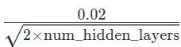
，主要是为了防止Transformer 几十上百层的残差连接（Residual Connection）累加引发的方差爆炸。主干路径是 x=x+f(x)。在一个 80 层的 Transformer 中，每一层（Layer）包含 2 个残差连接（一个过 Attention，一个过 MLP/FFN）。所以 80 层总共有 N=160 个残差支流。
we scale the weights of residual layers at initialization by a factor of 1/N where N is the number of residual layers。 *（引用自GPT-2 论文）
梯度消失
用Softmax是因为Softmax缩放效果好, 但是点积的方差会随维度 dk 膨胀
- 维度小的时候（方差小）：Logits 是 [1.0,0.0,−1.0]，Softmax 输出大概是 $[0.7, 0.2, 0.1]，保留了 "Soft"的特性。
- 维度大的时候（方差大，未缩放）：Logits 变成了 [20.0,0.0,−20.0]。此时 Softmax 的输出会变成近似 [1.0,0.0,0.0]（其实是 0.9999... 和一堆接近 0 的数）。
这种绝对值极大的 Logits 会让 Softmax 产生“赢家通吃”现象，从 "Soft" 彻底退化成了 "Hard"。
这在模型训练时是致命的：Softmax 函数的导数与 p(1−p) 成正比（p 为输出概率）。如果 p 极度接近 1 或 0，导数就几乎为 0。从而导致梯度消失。
√dk 缩放
既然点积累加后的方差变成了 dk，那么它的标准差就是 √dk。
根据方差的性质 Var(X/c)=Var(X)/c2，只要我们在传入 Softmax 之前，强行将点积结果除以 √dk，就能完美地将 Logits 的方差重新缩放回 1。通过这种优雅的数学干预，无论 Attention 的维度 dk 变得多大，Logits 始终被锁定在 Softmax 梯度最饱满的舒适区内，从而保证了深层网络训练的稳定，同时也保证了推理时注意力数值的分布稳定。
2.5 Causal Mask - 序列维度的因果约束
在大语言模型中，生成文本必须遵循严格的时间因果律：第 i 个 Token 只能看到它之前的历史 Token，绝不能“穿越”去获取第 i +1 个 Token 的信息。
假设不加干预，第 i 个 Query 向量与所有 Key 向量做完点积后，得到的 Logits 是一个长度为 L 的无界实数向量。为了让它对未来 Token（j >i ）的注意力权重绝对为 0，我们在这些特定位置的 Logit 上强行加上一个负无穷（在工程中通常用一个极小的常数替代，如 −104 或在 FP16 下的最负安全值）。
数学表达为（针对上三角区域，即 j>i）：
经过 Softmax 的非线性映射后： limx→−∞ex=0
通过这种极端的数值平移，未来 Token 在分母累加和分子中都会被彻底抹零，不仅实现了物理意义上的因果隔离，且依然保持了当前 Token 的局部概率和为 1，完美维系了概率单纯形的约束。
过去,实现 Causal Mask 需要在显存中生成一个庞大的 L×L 掩码矩阵并与 QK⊤ 相加,这在长文本下会引发灾难性的访存瓶颈(Memory-bound)。
如今的 FlashAttention 等高性能算子直接在底层引入了块稀疏（Block-Sparsity）机制。它不再在全局显存中生成掩码，而是在 Tile 调度层面根据当前分块（Block）的行列索引进行分类处理：
- 对角线以上的分块（严格的 j > i ）： 完全跳过。既不执行矩阵乘法，也不从 HBM 搬运对应的 K/V。这直接把 Attention 的计算量和访存量砍掉了一半。
- 对角线以下的分块（严格的 j ≤ i ）： 所有的 Key 都是合法的历史信息，直接正常计算，不需要任何掩码指令的开销。
- 横跨对角线的分块： 只有在这极少数的边界 Block 内部，才会在 SRAM/寄存器中实时判定元素的精确索引，并对右上角部分写入 −∞（在 FP16 下通常取最小安全值 -65504）。
这种底层调度让掩码本身的 HBM 访存开销归零（L×L 矩阵），并将 attention 两次大矩阵乘(QK⊤ 和 PV)的计算量与访存量都降低了接近 50%。
值得注意的是，Causal Mask 只在训练阶段和推理的 Prefill（首字生成/上下文处理）阶段 生效。 在推理的Decode阶段，当前的 Query 是一个长度仅为 1 的向量，而它需要与全局所有的历史 KV Cache 进行点积。此时所有的 Key 都是过去式，因果关系天然成立，因此在底层的 Decode 算子中，根本无需执行任何 Causal Mask 相关的指令开销。（Speculative Decoding / Medusa/Eagle 等多 Token 验证场景除外）
在早期的推理系统中，为了将不同历史长度的 Request 组成 Batch 并行计算，需要将短请求补齐（Padding），并在 Attention 时加上 Padding Mask 来屏蔽无效的占位符。
而在现代如 vLLM 这样的架构中，Attention 的计算是严格保持在 CUDA Kernel 层面的 Request 级别隔离（Request-level isolation）的。这意味着对于 Decode 阶段的纯 GEMV 访存操作，我们既不需要在计算层面执行任何统一的掩码处理（屏蔽了 Causal 和 Padding 的逻辑），也不需要在全局显存（HBM）层面去做任何张量展平或碎片的显式拼接搬运。
每一个 Request 所在的 Kernel 线程块，顺着页表指针（Block Table），将离散的局部历史 KVCache 块直接从 HBM 即时拉取（Gather）到片上 SRAM 中完成计算。时序因果自然闭环。
2.6 Online Softmax
结合√dk缩放和Causal Mask，Attention的公式变为：
在 算子开发中，如果按照上述公式进行朴素实现，需要对 Global Memory 中的数据进行 3 趟读写（3 Passes）：
- Pass 1（找最大值）：遍历输入向量 z，找到最大值 M=max(x)。
- Pass 2（算分母）：再次遍历 z，计算所有的指数和作为分母：
- Pass 3（算结果）：第三次遍历 z，计算最终结果：
在底层硬件（如 GPU）上，每一次遍历都意味着需要从全局内存（HBM）中将数据读取到计算单元，然后再写回。在算力远超显存带宽的今天，这种频繁的 HBM 访存（Memory Access）会造成巨大的延迟，成为典型的带宽瓶颈。
尤其在大模型推理（尤其是长文本 Prefill 阶段）Attention计算中，如果严格按照数学公式分步执行，会在 GPU 的 HBM（全局显存）中产生庞大的中间矩阵 S（注意力分数）和 P（Softmax概率），其 O(N 2) 的内存访问量会严重影响性能，即所谓的内存墙问题。
怎么办呢？业界比较通用的算子优化办法有Kernel 融合 (Kernel Fusion) 与 分块计算 (Tiling)，本质就是IO Aware，即多用寄存器和SRAM，少用HBM。有没有可能用上呢？不行，Attention计算时则面临一个致命的数学障碍：Softmax 操作需要知道全局的最大值和指数和才能计算，这通常要求完整的中间矩阵驻留在显存中。
因为Pass 2 依赖 Pass 1的最大值，导致Pass 1和Pass 2必须串行，从而必须保存中间矩阵来完成这个操作。那真没有办法让Pass 1和Pass 2并行么？搞不定这个问题，AI行业就完蛋了。死脑子，快想，哈哈哈～
有没有可能：维护局部的当前最大值（Running Max）和当前指数和（Running Sum），并在读入新块时利用动态缩放因子（Rescaling Factor）对旧结果进行修正。 最终1 Pass就可以实现 找最大值和找分母呢？ 是的，这就是Online Softmax。
而FlashAttention 则把这个"边走边修正"的思想从 softmax 内部推广到了整条 attention 流水线：对每个 Q tile，沿 K/V 方向做一次融合遍历，就同时完成 S=QK⊤、online softmax、以及 O+=PV 三件事。让中间矩阵 S,P 始终活在寄存器中、不写回 HBM——最后只把每个 Q tile 的 O 和 LSE 写出去。
Online Softmax 数学推导与执行流
假设我们正在遍历序列，当前处理到了第 i 个元素 x i。我们在寄存器中维护两个全局状态：
- mold：到目前为止看到的最大值。
- dold：到目前为止的指数累加和（基于当前最大值 mold）。
当新元素 x i 到来时（更新逻辑）：
更新当前最大值：
更新当前的指数累加和：
遍历完所有 N 个元素后，我们就同时得到了全局的真正最大值 M 和全局真正的分母 d。最后，只需要第二次遍历计算最终结果：
如果新的 zi 没有打破记录（mnew=mold），缩放因子就是 e0=1，直接累加即可；如果 zi 创了新高，旧的局部和就会被乘以一个小于 1 的衰减系数，完美等价于从一开始就用全局最大值来计算。
FlashAttention的实现
在真实的大模型计算中，Attention 不仅要算 Softmax，还要把 Softmax 的结果乘以 Value 矩阵（即 O=Softmax(QK⊤)V）。 为了把 Online Softmax 的“边走边修正”思想推广到整条 Attention 流水线上，FlashAttention 在 KV 维度上不停合并 Tile，并在循环内部长驻一个未归一化的状态三元组：
每当读取到一个新的 KV Block，计算出局部的点积结果 S=QK⊤ 后，执行如下更新逻辑：
for kv_block in KV_Cache: S_local = Q @ kv_block.K.T # 计算局部注意力得分 S m_new = max(m_old, max(S_local)) # 寻找新的全局最大值
scale = exp(m_old - m_new) # 核心：计算对历史数据的修正缩放因子
# 1. 修正历史分母，并累加当前块的指数和 ℓ_new = ℓ_old * scale + Σ exp(S_local - m_new)
# 2. 修正历史输出 Õ，并拿着【未归一化的权重】直接乘当前块的 V Õ_new = Õ_old * scale + exp(S_local - m_new) @ kv_block.V
m_old = m_new # 更新最大值记录# 此时所有 KV 都看完了，我们拿到了真正的全局分母 ℓ 和全局 ÕO_final = Õ_new / ℓ_new # O(1) 的标量/向量除法归一化
每一步都在做什么？
scale = exp(m_old - m_new)把"基于旧 max"的历史累加值校正到新 max 基准下；- ℓ 随新 tile 贡献增长；
- 同步按
scale收缩，再把新 tile 的 P⋅V 即exp(S_local - m_new) @ kv_block.V加进去；
以上描述的逻辑主要是FlashAttention v2以及之后版本的实现。下面简要说下FlashAttention v1 到 FlashAttention v2的进化逻辑。（当前FlashAttention已经进化到V4版本，详见附2，本文不再深入）
FlashAttention v1 （外 KV，内 Q）
在 FA1 中，kernel 的外层循环是 KV block、内层循环是 Q block，并且每个 (batch, head) 只启动一个 CTA。这带来两个问题：
- 并行度不足：Grid 维度被限制在 B⋅H，即只有 B⋅H 个 CTA；在长上下文（Long Context）且 Batch/Head 较少的场景下，GPU 内部的大量 SM（流多处理器）会处于闲置状态，根本跑不满。
- Q 状态的 HBM round-trip：外层每处理完一个 KV block，当前 CTA 已经更新了所有 Q block 的部分状态 (mi, ℓi,Oi)。由于 Sq 很大、放不下全部 Q 状态，只能写回 HBM；下一个外层 KV 迭代再从HBM 读回来继续累加。同理，Q 和 KV 本身也会被反复读入。
FlashAttention v2 （外 Q，内 KV）
FA2 将外循环改为遍历 Q blocks，内循环遍历 KV blocks。这意味着每个 CTA（线程块）只需认领一个 Q tile，就可以像流水线一样吞吐历史 KV blocks。最终，Q 只在一切结束时向 HBM 写回唯一一次 O 和 LSE，避免了 FA1 中的 HBM 读写中间态。
Grid 维度的并行度提高，把 Q 序列长度也加入了并行维度
gridDim = (⌈seqlen_q / BLOCK_M⌉, batch_size, num_heads)
在 CTA 内部，FA2 沿着 Q 的 M 方向切分任务，让每个 Warp（线程束）独占一部分 Q 行（例如 kBlockM / num_warps 行）。
在 GPU 底层的物理执行中，Tensor Core 执行 MMA（矩阵乘累加，D=A×B+C）指令时，输出结果本来就会暂存在的 Warp物理寄存器（C-fragment） 中。因为外层循环固定了 Q，这部分 Q 对应的未归一化状态 (m,ℓ,) 可以直接长驻于这些物理寄存器中。（其中 acc_o 直接利用 MMA 指令的 C-fragment 累加）
随着内层循环源源不断地从 Shared Memory (SRAM) 搬入新的 K 和 V Block，Warp 只需要利用硬件指令，对着寄存器里的 进行原地累加 (In-place Accumulation)。
直到该 Q tile 遍历完了所有的历史 KV，这组长驻寄存器才会执行最后一次除以全局 ℓ 的归一化操作，然后一次性写回全局显存 (HBM)。由于每个 Warp 处理的 Q 切片互不重叠，其输出结果完全独立，Warps 之间不再需要通过 SRAM 进行结果拼接（Reduce），从而消除了底层 Barrier 同步的通信开销。
特别注意：
在 FA2 中，每个被分配了不同 Q tile 的 CTA 都独立地去 HBM 遍历读取全量的 KV cache。这看起来会让 KV 的 HBM 流量相比 FA1 放大 num_q_blocks 倍，但实际测量中远没有达到这个上界——主要归功于 GPU 的 L2 cache。
同一 wave（调度波次）内的 CTA 会在极短的时间差内访问相同的 KV block。当第一个 CTA 把数据拉进全局 L2 时，后续 CTA 会命中 L2（带宽约为 HBM 的 4 倍，H100 下 ~12 TB/s vs ~3 TB/s），在期望值意义上把物理 HBM 读次数压回接近Nkv。
但从体系架构视角看，这机制相当脆弱——它本质上依赖硬件黑盒调度器让相关 CTA 保持"齐步走"。一旦出现调度断层（wave 间断层、SM 占用不均），或长上下文把 KV 挤出 L2 容量（H100 仅 50 MB，长 context 的 KV 是 GB 级），命中率会从 ~99% 退化到 80% 以下，出现实测可见的性能拐点（不是悬崖式"爆炸"，是曲线劣化）。
这也是为什么顶级算子架构（FA3/FA4、TRT-LLM、vLLM 的高性能 attention 后端）必须走两条硬路：
Tile scheduler 主动编排访问顺序
（
flash_attn/cute/tile_scheduler.py）：在软件层让相邻 CTA 访问相邻 KV block、按 L2 容量做 swizzle——这是不依赖新硬件、但也不完全是"碰运气"的中间层；详见 §2.6.4.2。Persistent kernel + TMA multicast：
Persistent kernel 让 CTA 常驻 SM、自己从全局 work queue 取任务，绕过硬件 CTA 调度器——调度从硬件层下移到软件层，消除 wave 断层；
TMA multicast（SM90+）让 cluster 内 N 个 CTA 共享一次 HBM 读，把 cluster 大小内的 KV 重读从 L2 软期望升格为硬件合约（本仓库
hopper_helpers.py、blackwell_helpers.py里的 2CTA 指令）。
LSE 与 Online Softmax
上面提到了FlashAttention的返回值有LSE，LSE是什么呢？
假设某一个 Query 与所有 Key 计算得到的原始点积得分（Logits）为向量 z=[z1,z2,…,zK]。在数学上，Log-Sum-Exp 的原始定义是：所有元素指数和的对数：
但在工程上，直接算 ∑ezj 会导致浮点数上溢（NaN）。因此我们要结合 Safe Softmax 的减最大值技巧，令 m=max(z)。我们将 ezj 巧妙地拆解为 ezj−m+m：
所以公式变成了：Softmax(zi)=ezi−LSE。额，这是在干嘛？这个公式有个毛用？
事实上，利用 Online Softmax 机制存下 (m,ℓ) 已经足以将 O(SqSk) 的全局读写降维至 O(Sq)。但 FlashAttention 更进了一步：通过 m+logℓ 的数学恒等代换，它将 2 个 FP32 变量进一步压缩为 1 个 FP32 标量（LSE）。
这个区区 O(Sq) 大小的单一变量数组，完美支撑了三大核心机制：反向传播时的 P 矩阵精准重算（化除法为减法 ez−LSE）、长文本推理时的 Split-K 局部归约合并，以及严格契合下游算子（如 Cross-Entropy Loss）的直接复用。这构成了 FlashAttention 空间复杂度优化的核心基石。
为什么存 LSE（log-sum-exp） 而不是分别存 (m,ℓ)？
- 省一半 HBM 写带宽：1 个 fp32 vs 2 个 fp32。前向出口每个 Q row 都要写一次，累积起来不算小。
- 恢复 P 更简洁：P=exp(s−LSE)，一条 FMA + exp2；若拆成 (m,ℓ) 则要减 m 再乘 1/ℓ，两步且需要两次加载。
- 数学上等价、数值上稳定：因为 LSE=m+logℓ 且 m 是实际的 running max，s−LSE≤0，exp 永远不会上溢。
Flash-Decoding 的 Split-K
在自回归的 Decode 阶段，参与计算的 Query 长度只有 1。如果让单一 SM（流多处理器）去独自处理长达几十万的历史 KV Cache，会导致严重的算力闲置和极高的延迟。为了拯救 GPU 利用率，Flash-Decoding 引入了 Split-K（KV 维度切分）技术：将长长的 KV Cache 切片分发给多个不同的 SM（流多处理器）并行计算。
但不同 SM 算出来的局部 Softmax 是无法直接相加的，因为分母不同、局部最大值也不同。各个 SM 独立计算后，向全局显存（HBM）写回自己的局部输出和局部状态。
而 LSE 的引入，使得各个 SM 只需要写回 1 个标量（LSE）而不是 2 个(m,ℓ)，将这部分 HBM 带宽开销砍半。LSE (Log-Sum-Exp)使得各个 SM 只需向全局内存写回自己这块碎片的局部 O 和局部 LSE，最后的 Reduction Kernel 就能利用ezi−LSE 的数学特性，把不同 SM 的结果完美缝合，最终形成全局真实的 Attention 输出。
反向传播中的重计算
在传统 Attention 的反向传播（求梯度）过程中，数学推导要求必须使用前向传播时算出的 Softmax 概率矩阵 P。对于长文本来说，如果把这个庞大的 N×N 的 P 矩阵保存在全局显存（HBM）里等反向传播用，显存会爆炸。 这里的N指的是序列长度。
但有了 Softmax(zi)=ezi−LSE 这个公式，FlashAttention可以支持：前向传播时，不存 P 矩阵，而是在HBM中存一个极度压缩的、大小仅为 O(N) 的 LSE 一维数组。当反向传播需要 P 时怎么办？直接在片上 SRAM 重算（Recomputation）。
我们只需要读取 Q 和 K 重算出局部点积 zi，然后从 HBM 读出对应的 LSE 标量，做标量减法和指数运算（ezi−LSE），就精准还原出P了。
如果没有LSE，我们需要从 HBM 读取 (m,ℓ)，然后执行除法
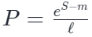
。在 GPU 底层，除法指令比较昂贵。但由于我们存的是 LSE 标量，重算公式变成了 P=eS−LSE。LSE 利用对数法则化除法为减法，虽仍需一次 SFU 指令计算指数，但省去了昂贵的除法指令，最重要的是打破了 HBM 的带宽墙。Sequence Parallelism (SP)
如今的大模型上下文长度动辄百万 Token。当单卡显存无法容纳时，必须使用序列并行（Sequence Parallelism, SP）或上下文并行（Context Parallelism, CP）。模型会被切片分发给多张 GPU（甚至跨节点）计算。
比如在 Ring Attention，在处理跨卡 Attention 时，若采用对局部输出 进行全局 Reduction 的方式，不仅通信模式难以流水线化，还引入昂贵的同步开销。因此，Ring Attention 选择在环形拓扑中 P2P 传递 K 和 V 切片，每张卡保持本地 Q 不动。得益于 Online Softmax 的增量修正机制，各卡只需维护极少的元数据（LSE 标量），便能在接收到新 KV 切片时，本地完成 的无损在线更新，最终结果与全局 Attention 数值完全一致。这不仅避开了高昂的 All-Reduce 通信，还实现了计算与 KV 传输的完美重叠（Overlap）。
2.7 Temperature (T) 控制：Sampling 的 Softmax
LLM 生成时的 temperature 参数其实就是作用在 Softmax 里的：
- T<1 (低温): 差异被放大，分布变尖锐，模型更倾向于选概率最高的词（确定性高）。
- T>1 (高温): 差异被缩小，分布变平坦，模型更有可能选到低概率的词（创造性高）。
以上，通过 Softmax 算出的词表概率，加起来为 1。我们要如何根据这个概率抽样？
目标：即已知一组概率 p=[p1,p2,…,pV]，如果 p1=0.8，那么有 80% 的概率抽到索引 1。
Multinomial Sampling
常规做法（轮盘赌 / Multinomial Sampling，即torch.multinomial）是生成一个 [0,1] 的均匀随机数 u，然后去算 p 的累加和（Cumulative Sum, 前缀和）。当累加到某个索引 i 时，总和第一次超过了 u，就返回 i。 问题： 在 GPU 上，要对长达 128,256（Llama3 词表大小）的数组算前缀和，非常不利于极度并行的线程发挥，且存在显存同步开销。
Gumbel-Max Trick
背景知识
数学家证明了，只要给每个类别的对数概率 ln(pi) 加上一个标准的 Gumbel 噪声 gi，然后直接取最大值（argmax），其结果与Multinomial Sampling在数学上是完全等价的！
那么，如何生成 Gumbel 噪声？最常见的方法是通过均匀分布 U∼(0,1)： gi=−ln(−ln(Ui))
vLLM中的Gumbel-Max的实现
为了兼顾硬件执行效率和数学严谨性，vLLM 使用了一个极其优雅的 Gumbel-Max Trick 变体：
q = torch.empty_like(probs)probs = logits.softmax(dim=-1) # 1. 计算出概率分布q.exponential_() # 2. 生成一个标准的指数分布噪声 q ~ Exp(1) probs.div_(q).argmax(dim=-1) # 3. 将概率除以噪声，直接取 Argmax！
由于对数函数 ln(x) 是单调递增的，求argmax(p/q)完全等价于求 argmax(ln(p/q))。将其展开：
argmax返回的是一组数据中最大值所在的索引（位置下标），而不是最大数值本身。
标准指数分布 qi 可以由均匀分布 U∼(0,1) 通过 qi=−ln(Ui) 生成。我们代入上式：
Amazing，后半部分 −ln(−lnUi) 恰好是前面提到的 标准 Gumbel 噪声 gi！给对数概率加上 Gumbel 噪声后再取最大值，在数学上已被严格证明等价于依据原概率分布进行采样。
这个数学转换在Infra 视角上的价值是巨大的。它将Multinomial Sampling逻辑转化成适合 GPU 并行计算的操作：
q.exponential_(): 完全相互独立的随机数生成。div_(): Element-wise（逐元素）的向量除法，没有任何数据依赖。argmax(): 并行规约（Reduction）操作。
更近一步，通过这种做法，贪心采样（Greedy）和随机采样（Random）在代码执行流上被彻底统一了：无非就是随机采样多做了一步除以噪声 q 的操作，最终全都是执行 argmax 寻找最大值，消灭了底层 Kernel 的分支发散（Branch Divergence）。
在大模型词表动辄 128K~256K 的今天，vocab 通常会沿张量并行维度切分到多张 GPU 上。此时如果走传统的 multinomial 采样路线，跨卡做一次全局采样代价并不小——要么 all-gather 整张 logits，要么跨卡做 prefix-sum + 二分查找，通信量和同步点都很难压下来。而一旦换成 Gumbel-Max 形式的 argmax(logit + g)，采样就退化成了一个满足结合律的 reduce 运算：每张卡只需在本地 shard 上算出局部最大值及其索引，再做一次廉价的 All-Reduce(MAX with index) 即可拿到全局采样结果。通信量从 O(V) 直接降到 O(world_size)。
03
TL;DR
其实本章一开始我是想放在开头的～但是我担心读者被吓跑，就移动到最后了。算是一个总结吧。
深度学习模型中极大或极小的数值极易引发梯度问题或计算溢出，而神经网络真正关心的并非数值的“绝对大小”，而是特征之间的“相对差异”。
- LayerNorm 通过 平移（减去均值 μ）+ 缩放（除以标准差 σ），将数据的均值归零，并将数据的波动范围（方差）强行拉回 1。
- RMSNorm 则基于缩放比平移更关键的假设，去掉了平移，只保留对向量 RMS 尺度的归一化，减少了大量的 element-wise 操作，还减半了 Reduce的数据通信量和寄存器占用，因此更适合极致的高性能 Kernel 实现。
Softmax 的核心原理是将一组任意的实数（通常称为 Logits），转化为一套总和为 1 的概率分布，同时放大差异。
Gumbel-Max 用加噪求最大值替代了传统的轮盘赌算法。它将原本需要串行计算前缀和的采样过程，转化为完全独立的 element-wise 并行运算，打破了超大词表下的全局数据依赖。
无论是 Normalization 、Softmax还是Gumbel-Max 相关操作，大模型推理底层优化的核心逻辑始终如一：用数学等价变换、数值稳定重写、或经过验证的近似/架构简化，换取更好的访存局部性、并行度和 kernel 融合空间。
04
总结
以上，大模型的训练和结果输出都是不确定的，但是其数学原理是确定的。最近经常在想，当前的Transfomers架构从效果上来说已经足够好(Full Attention + MoE)， 从而当今AI Infra主要就是在不损失或者少损失效果的前提下做极致的性能优化。
比如上文提到的online softmax、Gumbel-Max、RMSNorm；
比如FlashAttention本质上是利用IO Aware、重计算提升计算强度；
比如KV Cache优化：MHA、MQA、GQA、MLA、KV Quant、SWA、DeepSeek V3.2-Exp 的 DSA（Lightning Indexer + Top-K 稀疏选择）、Linear Attention、TurboQuant 到DeepSeek V4的CSA + HCA 这里的本质就是解决1. 内存墙问题； 2. 显存容量问题；3. 减少计算量.
比如MoE Scaling Law模型不断增大，计算量随参数线性增大，而参数占比的大头又在MLP层，因此就把MLP层拆分，美其名曰不同专家，每次执行仅激活部分参数, 其本质就是在将现有FFN层拆分成多个，然后增加路由，每次可以激活不同专家组，以减少计算量。
当前的大模型更多的是工程上的事情，大模型本身就是基于科学假设的实验科学。试错的速度，往往决定了模型进化的速度。
当然这里的是试错不仅仅是训练，还包含Test-Time Scaling: 在 AI 迈向 System 2（慢思考）和 Agent（智能体）的时代，推理不再是简单的单向吐字（System 1），而是变成了复杂的搜索、反思与自我进化过程。
（注：《Tree of Thoughts (ToT)》- 来自姚顺雨（腾讯 / 前 OpenAI / 普林斯顿博士 /清华姚班））
05
Reference
Online normalizer calculation for softmax：https://arxiv.org/abs/1805.02867
Root Mean Square Layer Normalization：https://arxiv.org/abs/1910.07467
Flash-Decoding for long-context inference：https://crfm.stanford.edu/2023/10/12/flashdecoding.html
Identity Mappings in Deep Residual Networks：https://arxiv.org/abs/1603.05027
Deep Residual Learning for Image Recognition：https://arxiv.org/abs/1512.03385
Understanding the difficulty of training deep feedforward neural networks：https://scholar.google.com/citations?view_op=view_citation&hl=en&user=_WnkXlkAAAAJ&citation_for_view=_WnkXlkAAAAJ:u5HHmVD_uO8C
Language Models are Few-Shot Learners：https://arxiv.org/abs/2005.14165
Language Models are Unsupervised Multitask Learners：https://cdn.openai.com/better-language-models/language_models_are_unsupervised_multitask_learners.pdf
Delving Deep into Rectifiers: Surpassing Human-Level Performance on ImageNet Classification：https://arxiv.org/abs/1502.01852
Batch Normalization: Accelerating Deep Network Training by Reducing Internal Covariate Shift：https://arxiv.org/abs/1502.03167
Efficient Memory Management for Large Language Model Serving with PagedAttention：https://arxiv.org/abs/2309.06180
Tree of Thoughts: Deliberate Problem Solving with Large Language Models：https://arxiv.org/abs/2305.10601
On Layer Normalization in the Transformer Architecture：https://arxiv.org/abs/2002.04745
Scaling LLM Test-Time Compute Optimally can be More Effective than Scaling Model Parameters：https://arxiv.org/abs/2408.03314
OpenAI o1 System Card - System 1 -> System 2 Thinking：https://arxiv.org/abs/2412.16720
Ring Attention with Blockwise Transformers for Near-Infinite Context：https://arxiv.org/abs/2310.01889
Attention Is All You Need：https://arxiv.org/abs/1706.03762
FlashAttention: Fast and Memory-Efficient Exact Attention with IO-Awareness：https://arxiv.org/abs/2205.14135
FlashAttention-2: Faster Attention with Better Parallelism and Work Partitioning：https://arxiv.org/abs/2307.08691
FlashAttention-3: Fast and Accurate Attention with Asynchrony and Low-precision：https://arxiv.org/abs/2407.08608
FlashAttention-4: Algorithm and Kernel Pipelining Co-Design for Asymmetric Hardware Scaling：https://arxiv.org/abs/2603.05451
5.1 附1: 常数 e
常数 e（约等于 2.71828）被称为欧拉数（Euler's number）或自然常数。与代表几何学中圆的比例的 π 不同，e 诞生于对“连续增长”这一概念的探索。要理解 e 是怎么来的，最经典、最直观的例子就是复利计算。这个概念最早是由数学家雅各布·伯努利（Jacob Bernoulli）在 1683 年发现的。
1. 银行利息的极限（伯努利的发现）
2. 莱昂哈德·欧拉的贡献
3. 为什么 e 如此重要？
5.2 附2: FlashAttention演进
| 技术维度 | FlashAttention v1 (2022) | FlashAttention-2 (2023) | FlashAttention-3 (2024) | FlashAttention-4 (2026) |
|---|---|---|---|---|
| 目标硬件架构 | SM70/75/80 (Volta/Turing/Ampere) | SM80 (Ampere) | SM90 (Hopper) | SM100/SM110 (Blackwell) |
| Grid 维度 / 大小 | 3D (batch_size, num_heads) | 3D (num_m_block, batch_size, num_heads) | 1D (num_sm,)，固定 = SM 数（H100 通常 132 | 1D (min(num_sm 对齐 cluster_shape_m, total_blocks_cluster · cluster_shape_m),)，B200 通常 = 148；持久化 + 1-CTA / 2-CTA cluster 自适应对齐 |
| 调度机制 (Tile Scheduling) | 传统 Grid/Block 静态映射 | 改进的 Work Partitioning (沿序列 M 维切分) | DynamicPersistentTileScheduler / VarlenDynamicPersistentTileScheduler（Persistent + 动态分配，防尾部效应） | StaticPersistentTileScheduler （grid 限于 SM 数量的纯持久化内核） |
| 循环遍历顺序 | 外 K/V，内 Q（HBM 多次写回中间 O） | 外 Q，内 K/V | 外 Q，内 K/V | 外 Q，内 K/V（持久化 + 内层 K/V 反向遍历 unroll=1） |
| 矩阵乘指令 | 手写 HMMA / mma.sync PTX | CuTe mma.sync (Ampere TC) | WGMMA (wgmma.mma_async，Warp-Group 级，SS/RS 描述符) | tcgen05.mma (Tensor Core Gen5)，支持 cta_group::1 / cta_group::2（2-CTA cluster 协同，hdim=128 默认 2-CTA） |
| 数据异步搬运 | 同步执行 | cp.async (SMEM 流水线) | TMA (硬件异步传输，producer warp group 发起) | TMA + 专属 Load Warp（warp 14 单独承担 Q/K/V TMA） |
| O 矩阵累加位置 | HBM (频繁写回中间态) | 寄存器 (RF) 累积到底 | 寄存器 (RF) 累积到底 | TMEM （张量内存，tmem_o_offset 每 q_stage 占 head_dim_v_padded 列） |
| Softmax 归约通信 | 依赖 SMEM 跨 Warp 同步 | 寄存器内 __shfl_xor | 寄存器内 __shfl_xor | TMEM → RF (tcgen05 t2r copy) → quad-wide warp_reduction_max → RF → TMEM (r2t copy) + fence_view_async_tmem_store |
| P 矩阵存储位置 | 寄存器 | 寄存器 (编译期 layout 变换) | 寄存器 (RS 模式) 或 SMEM (SS 模式) | TMEM （tcgen05.OperandSource.TMEM，直接作 PV-GEMM 输入，免去 RF/SMEM 中转） |
| Warp 任务分配 | 同质化 | 同质化 (沿 M 维排布) | Warp-Group 级专门化 (Producer / Consumer) ：1 个 producer WG 发 TMA，1–2 个 consumer WG 跑 WGMMA + softmax | Warp 级专门化（逻辑 5 职 物理 6 组） ：MMA (warp 12) Softmax-0 (0–3) Softmax-1 (4–7) Correction (8–11) Epilogue (13) Load (14) |
| 计算重叠流水线 | 无 | Load/Compute 同一 Warp 内重叠 | GEMM 间流水线 ：PV (GEMM-II) 与下一轮 QK (GEMM-I) 异步重叠；ping-pong 跨 WG | 多级微架构流水线 ：q_stage=2 Q 双缓冲 ∥ Softmax 双 warp 组并行处理两条 Q 流 ∥ split_P 早到机制（P 写入 3/4 时 mbarrier 提前 arrive，PV-GEMM 与 softmax 尾段重叠） ∥ Correction warp 异步修正先前累加的 O |
5.3 附3：SFU
RoPE cos_sin_cache
虽然不是矩阵乘法，sin/cos 属于超越函数，在 GPU 上由 SM 内的特殊函数单元（SFU, Special Function Unit）执行。SFU 的吞吐量通常仅为 FP32 ALU 的 1/4。所以VLLM中不在 RoPE kernel实时计算sin/cos ，而是引擎初始化时按模型配置预计算好 cos_sin_cache，shape 为 [max_position_embeddings, rotary_dim]。 RoPE kernel 运行时按 positions 索引出对应的 cos/sin 行，与 Q/K 做逐元素乘加即可。本质是用一份小表（典型大小几 MB 到几十 MB）换掉每次 forward 几百万次的 sin/cos 调用——经典的空间换时间 /访存换算力。
FlashAttention-4 软件模拟exp
由于：
- FlashAttention的出现提升了算术强度，缓解了内存墙问题，导致算力可以被充分利用(特别是prefill 阶段逼近 Tensor Core 算力极限)，SFU需求同时上升；
- SFU 物理单元数量本来数量就少，Blackwell 的 Tensor Core 算力翻倍飙升，但 SFU 却没有获得同比例的扩展；
导致了一个反直觉的现象：算 Softmax 里 ex 的耗时，竟然快赶上庞大的矩阵乘法（QK⊤）了！超越函数成为整条计算流水的瓶颈。
为了打破这一物理极限制约，最新的 FlashAttention-4 采取了软硬协同分流（Partial Emulation）策略：既然硬件 SFU 算不过来，那就让通用 ALU 来分担：
FA4 在底层算子中，依然保留 75%~90% 的指令调用原生硬件 SFU（MUFU.EX2），但对于溢出瓶颈的那 10%~25% 的数据，FA4 利用通用的 CUDA Core，通过多项式逼近（Polynomial Approximation）用最基础的乘加指令（FMA）模拟出 ex 的结果。
为什么不 100% 用 ALU 软算？因为软件模拟会消耗宝贵的寄存器，全部软算会导致寄存器溢出（Spill）从而反噬性能。FA4 通过极其精准的比例调优，让 SFU 和 ALU 首次在超越函数的计算上实现了完美的并行运转。
-End-
原创作者丨刘斌
AI Infra入门干货总结：大模型是如何高效推理的
作者：binnnliu
看了很多的文章和视频，我以为我理解大模型的工作原理了，直到看了vLLM的代码，我发现很多地方理解的太过表面。因此花了大概2个月的业余时间，深入阅读了vLLM的源码，本文算是对于学习代码的一个总结。另外由于当前主流LLM都是 Decoder-Only 架构，本文会聚焦LLM，不会像网络上其他介绍Transformers的文章从原始论文的 Encoder-Decoder架构讲起。
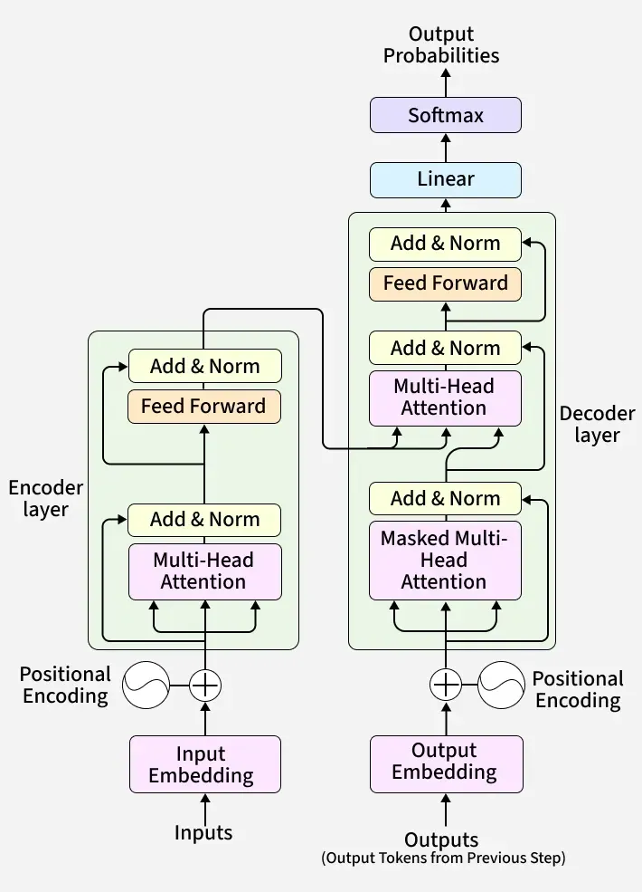
在阅读 vLLM 源码的过程中发现，追踪推理过程中每一步的张量维度变化，对于理解大模型工作原理非常有用。因此，本文将以 Llama 3为例，介绍推理过程中的每个计算环节，在每个计算环节都会标注Tensor的维度变化。
我们知道通过批处理可以提高GPU的利用率：本质是提升计算强度，即通过复用权重数据来均摊内存访问开销；而减少Kernel启动开销与通过海量warp充分发挥隐藏延迟仅是随之而来的次要优化。而批处理内的请求要步调一致，同时开始，同时结束。而对于LLM这类生成式任务，其核心矛盾在于每个请求的输出序列长度是不可预测且差异巨大的。那怎么办呢？
有没有可能将调度的从request level下沉到token level呢？ 恭喜你发明了continuous batching。
那每个请求的KV Cache显存申请是不是应该也是token level，不要一次申请所有的显存。搞一个地址数组(block table)来维护每个请求的KV Cache地址就好？ 恭喜你发明了Paged Attention。
没错，以上两个概念是当今大模型得以高性能运行的关键。
连续批处理 (Continuous Batching)
在vLLM调度器的视角中，不存在Prefill 阶段和Decode阶段的区分。 每个请求主要关注：
- num_computed_tokens：已经计算过的 token 数（含 Prefix Cache 命中的部分）
- num_tokens：该请求当前总共拥有的 token 数（prompt + 已生成的 output）
每一步调度的目标就是：让num_computed_tokens追上num_tokens。差多少就调度多少——当然要受限于 token 预算。
调度受4个硬性约束限制：
-
最大并发请求数
self.max_num_running_reqs = scheduler_config.max_num_seqs -
token budget 单步最多计算多少 token（所有请求之和），控制 GPU 计算量上限
self.max_num_scheduled_tokens = ( self.scheduler_config.max_num_scheduled_tokens # 优先用这个 if self.scheduler_config.max_num_scheduled_tokens else self.scheduler_config.max_num_batched_tokens # fallback ) -
模型最大序列长度
self.max_model_len = model_config.max_model_len -
是否还有空闲的KV Cache blocks
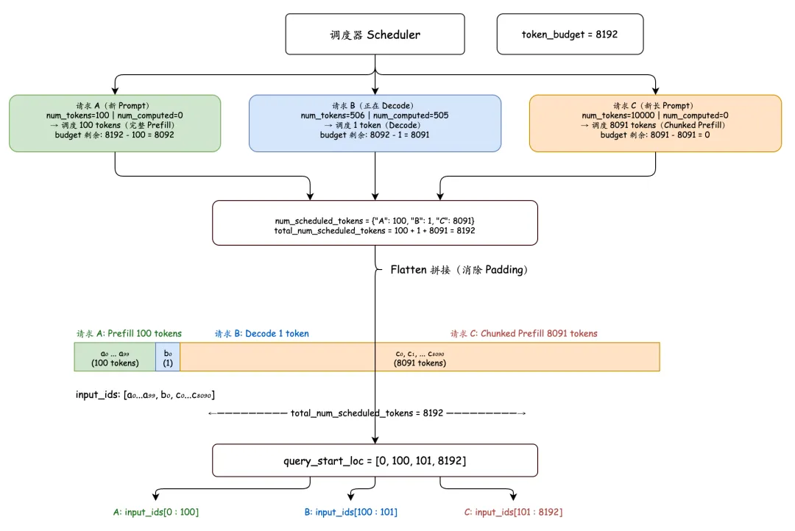
如上图所示，vLLM的每轮推理都会基于token level调度，后续的执行的输入都是类似input_ids这种打平的token数组，即Flattened。(这里的调度逻辑是在Tokenize之后, 本文后续的num_sched_tokens都对应上图中的total_num_scheduled_tokens)
Paged Attention
vLLM启动时会申请显存 kv_cache shape为：[num_layers, 2, num_blocks, block_size, num_kv_heads, head_dim]，每一层key_cache和value_cache的shape都是[num_blocks, block_size, num_kv_heads, head_dim]。
block_table会记录每个请求分配到的物理块ID，shape为[max_num_reqs, max_num_blocks_per_req]，请求0分配了块[5, 8, 12]，请求1分配了块[3, 7]
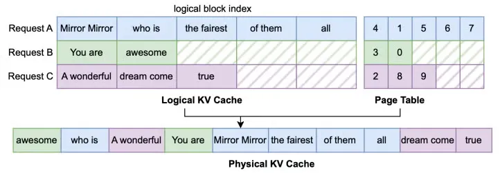
为什么
slot_mapping和block_table不需要num_layers维度？如果一个请求的第 25 个 Token 被分配到了物理块 ID 为
8的位置，那么在模型的第 0 层到第 31 层，这个 Token 的 KV 值都会被存储在物理块8的相同位置。
而推理过程中，通过slot_mapping告诉kernel 把新产生的 KV 写到哪个 slot，通过block_table告诉 kernel 去哪些物理 block 读取 KVCache。
## slot_idx对应token对应的最终存储位置: slot_idx = block_idx * block_size + block_offset
const int64_t slot_idx = slot_mapping[token_idx];
const int64_t block_idx = slot_idx / block_size; // 计算块索引
const int64_t block_offset = slot_idx % block_size; // 计算块内偏移
比如：
block_size = 16（每个块存储16个token）,请求0的block_table为：[5, 8, 12]，token位置为25，计算过程：
- block_idx = 25 // 16 = 1（属于第1个虚拟块）
- block_idx = block_table[0, 1] = 8（从页表查找物理块ID）
- block_offset = 25 % 16 = 9
- slot_idx = 8 * 16 + 9 = 137
PagedAttention 的虚拟页表机制解决了显存碎片的问题，极大地提升了 GPU 的显存利用率，是支撑 Continuous Batching 高性能推理的基础。
然而PagedAttention 引入的 block_table 间接寻址机制，打破了一个请求在物理显存上的绝对连续性。当 Attention Kernel 跨越 block 读取历史 KVCache 时，会触发离散访存（Uncoalesced Access），这在底层对 Memory Controller 是非常不友好的，同时也会导致 L2 Cache 的命中率下降，带来一定的带宽折损。当然，系统设计从来都是 Trade-off。
vLLM 通过设置合理的 block_size（默认通常是 16）来缓解这个问题：在一个 block 内部的 16 个 Token 的物理显存依然是连续的，能够保证高效率的合并访存。相比于因显存碎片导致的OOM，牺牲少部分的访存带宽换取整个系统吞吐量（Throughput）的大幅跃升，在 LLM 推理的整体逻辑中是划算的。
LLM推理流程
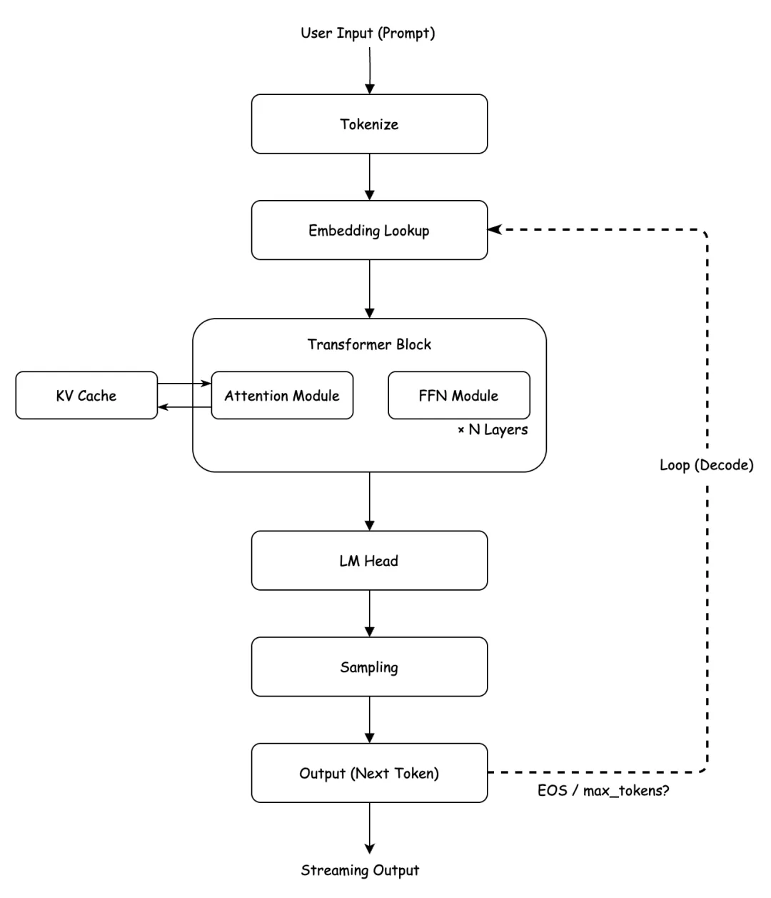
Tokenize
对用户输入提示词进行分词并转换为数字表示。目前主流 LLM 几乎全部使用 BPE（Byte Pair Encoding）。
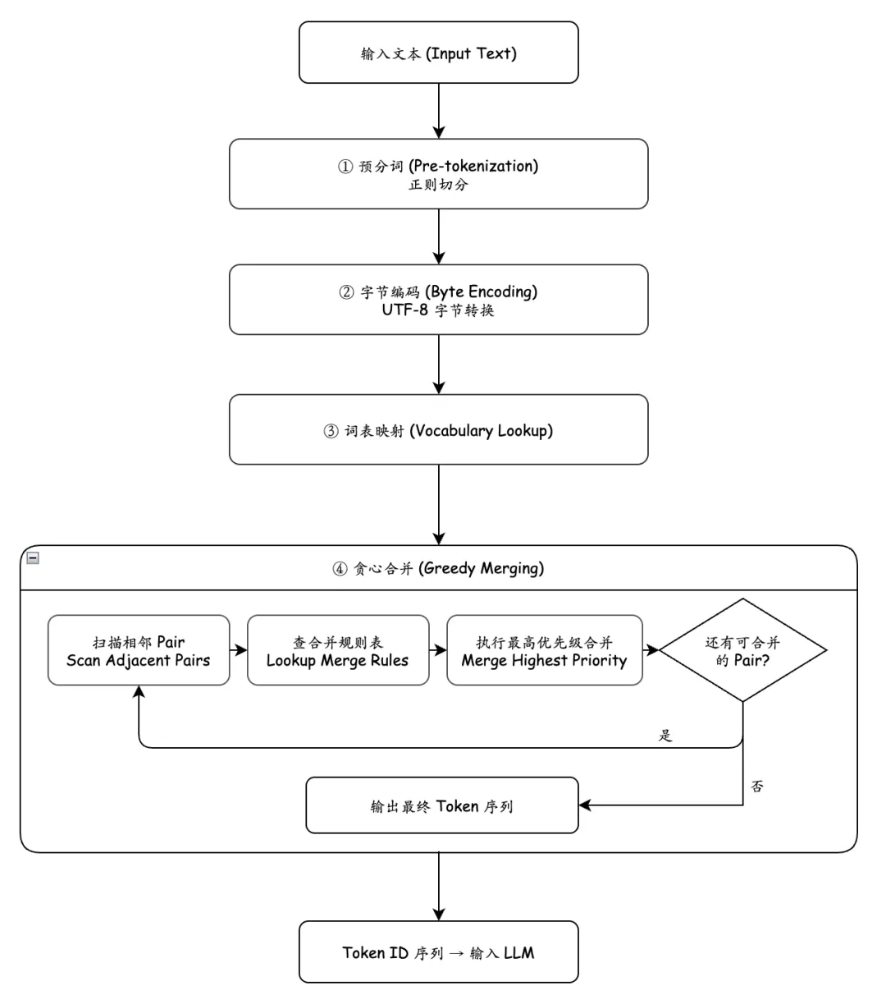
BPE的词表训练方式如下：
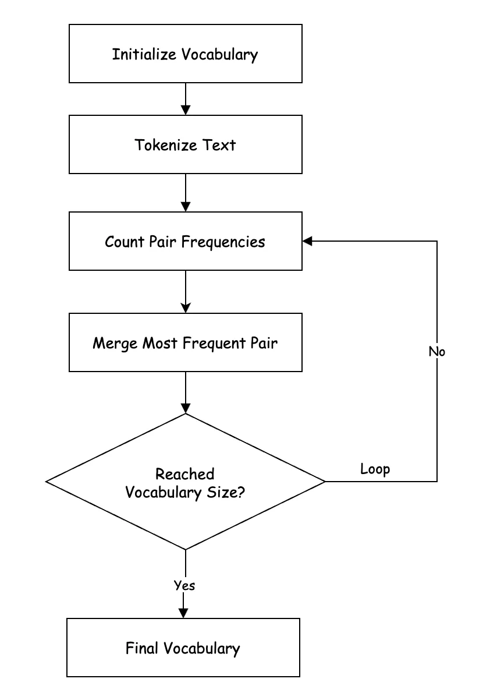
Embedding Lookup
Embedding Lookup 本质上是一个查表操作，它将一维的 Token ID 数组[num_sched_tokens]直接转化为 [num_sched_tokens, hidden_size] 的特征矩阵，作为进入大模型真正意义上的数学输入。
理论实现
| 目标矩阵 | 计算公式 | 输入  维度 维度 | 权重矩阵 维度 | 输出结果维度 | 备注 |
|---|---|---|---|---|---|
| Embedding |  | [batch_size, seq_len] | [V, hidden_size] | [batch_size, seq_len, hidden_size] | 本质是索引取值，而非矩阵乘法 |
vLLM中的实现
| 目标矩阵 | 计算公式 | 输入 维度 | 权重矩阵  维度 维度 | 输出结果维度 | 备注 |
|---|---|---|---|---|---|
| Embedding | [num_sched_tokens] | [V, hidden_size] | [num_sched_tokens, hidden_size] | Flattened 布局 |
将 Batch 中所有请求的有效 Token 拼接为一维长向量，彻底消除 Padding。
Transformer Block
Attention Module (以标准GQA + RoPE为例)
RMSNorm
为了保证大模型在神经网络中的数值稳定性，必须引入特征归一化（Normalization）机制。与传统 LayerNorm 要求同时缩放与平移不同，为了提升计算效率，现代大模型广泛为采用了 RMSNorm ：砍掉平移操作，仅沿特征维度对数据进行尺度缩放，能够有效防止前向传播中的方差膨胀与硬件数值溢出，从而极大缓解反向传播时的梯度异常（消失或爆炸）问题，为深层网络的稳定训练提供基础保障。
| 目标矩阵 | 计算公式 | 输入 维度 | 权重 维度 维度 | 输出结果维度 | 备注 |
|---|---|---|---|---|---|
| RMSNorm | [num_sched_tokens, hidden_size] | [hidden_size] | [num_sched_tokens, hidden_size] | 是一维向量而非矩阵，做的是逐通道缩放而非 GEMM |
Q/K/V Linear Proj - Fused QKV
| 目标矩阵 | 计算公式 | 输入 X 维度 | 权重矩阵 维度 | 输出结果维度 | 备注 |
|---|---|---|---|---|---|
| Fused QKV | [num_sched_tokens, hidden_size] | [hidden_size,qkv_proj_size] | [num_sched_tokens, qkv_proj_size] | 权重按列拼接，执行单次宽矩阵 GEMM 4096 (Q) + 1024 (K) + 1024 (V) = 6144 |
Reshape & Cache
| 目标矩阵 | Q, K, V Slice | RoPE(维度不变) | Multi-Head Reshape | 备注 |
|---|---|---|---|---|
| Query () | [num_sched_tokens, hidden_size] | [num_sched_tokens,num_heads,head_dim] |  前 4096 列 前 4096 列 | |
Key ( ) ) | [num_sched_tokens, kv_channels] | [num_sched_tokens,num_kv_heads,head_dim] | 中间 1024 列 | |
| Value () | [num_sched_tokens, kv_channels] | [num_sched_tokens,num_kv_heads,head_dim] |  最后 1024 列 最后 1024 列 |
注： 是一个块对角旋转矩阵，实际实现中通过元素级 sin/cos 运算避免矩阵乘法。
是一个块对角旋转矩阵，实际实现中通过元素级 sin/cos 运算避免矩阵乘法。
这个阶段的大概流程： QKV 按列拆分 -> 对Q、K进行RoPE计算 -> Q、K、V Reshape多头视角 -> 然后reshape_and_cache按照slot_mapping Scatter写入Paged KVCache。
RoPE 的核心思想就是：用旋转的角度来代表 Token 的位置。 虽然不是矩阵乘法，sin/cos 属于超越函数，在 GPU 上由 SM 内的特殊函数单元（SFU, Special Function Unit）执行。SFU 的吞吐量通常仅为 FP32 ALU 的 1/4。所以VLLM中不在 RoPE kernel实时计算sin/cos ，而是引擎初始化时按模型配置预计算好 cos_sin_cache，shape 为 [max_position_embeddings, rotary_dim]。 RoPE kernel 运行时按 positions 索引出对应的 cos/sin 行，与 Q/K 做逐元素乘加即可。本质是用一份小表（典型大小几 MB 到几十 MB）换掉每次 forward 几百万次的 sin/cos 调用——经典的空间换时间 /访存换算力。
Attention (FlashAttention, Scaled Dot-Product Attention)
读取请求对应 KV Cache 进行 FlashAttention 计算。
Softmax 的核心原理可以用一句话概括：将一组任意的实数（通常称为 Logits），转化为一套总和为 1 的概率分布，同时放大差异。ps: 这里的
为head_dim。
感觉Attention的逻辑是整个LLM推理最复杂的地方了：
- Attention 的数学逻辑并不复杂，但是为了提升计算强度，打破内存墙，业界在这里做了非常多的优化，比如FlashAttention；
- 其他阶段基本都是Token维度打平的，而Attention计算必须要在请求维度进行运算。
特别注意: 在进入Attention kernel之前，需要从全局Flattened视角[num_sched_tokens, ...]切换到请求维度视角[batch_size, ...]。这是因为Attention计算本质上是请求内部的操作，不同请求的KV Cache不能交叉。vLLM/FlashAttention通过cu_seqlens（累积序列长度）数组来实现这种变长序列的请求级隔离，而无需真正Reshape为[batch_size, ...]的规整张量。 这里的K和V Shape算子逻辑上为[batch_size, num_kv_heads, seq_len, head_dim]，而不同请求的seq_len肯定不一致。实际上在cuda算子层已经确保了不同请求不会分配到同一个 thread block，即保证这里的运算是请求维度隔离的。
K的Shape为[seq_lens, num_kv_heads, head_dim]，包含当前请求所有历史的KCache，seq_lens是所有历史KV对应的Token长度，但物理上，由于Paged Attention机制，这些历史K Cache并非连续存储，而是离散分布在HBM的物理块中（即底层实际Shape为[num_blocks, block_size, num_kv_heads, head_dim]）。Kernel在执行时，会通过 block_table 动态间接寻址，在片上SRAM中将其拼凑为逻辑上的连续序列参与计算。
V的Shape为[seq_lens, num_kv_heads, head_dim]，包含当前请求所有历史的VCache
Q的Shape为[query_lens, num_heads, head_dim]，query_lens是本次Q对应的Token长度
| 操作名称 | 数学公式 | 逻辑说明 / 目的 |
|---|---|---|
| GQA分组共享 | 1 KV Head 映射给 4 Q Head | 把KV的Shape从[seq_lens, num_kv_heads, head_dim]变为[seq_lens, num_heads, head_dim] 逻辑上等价于将1个KV Head的数据广播给4个Q Head；物理实现中通过索引映射kv_head_idx = q_head_idx // (num_heads // num_kv_heads)避免显存复制。 |
| Q-K Dot Product | 查询Query和该请求所有Key的点积，注意力原始分数。->[query_lens, num_heads, seq_lens] | |
| Scale | 对原始分数进行数值缩放（ 为向量维度），防止 Softmax 函数进入梯度极小的区域。 | |
| Mask | 注入因果逻辑，通过加上掩码矩阵 （通常将未来位置设为  ），阻止模型“看到”未来的信息。 ），阻止模型“看到”未来的信息。 | |
| Softmax | 将处理后的分数转化为总和为 1 的注意力权重（概率）。->[query_lens, num_heads, seq_lens] | |
| MatMul | 根据注意力权重 对值向量（Value）进行加权求和，得到最终的输出特征表示。 V的Shape为[seq_lens, num_heads, head_dim] -> [query_lens, num_heads, head_dim] |
Attention 的数学逻辑非常清晰，但在大模型推理（尤其是长文本 Prefill 阶段）中，如果严格按照数学公式分步执行，会在 GPU 的 HBM（全局显存）中产生庞大的中间矩阵 （注意力分数）和  （Softmax概率），其 的内存访问量会严重影响性能，即所谓的内存墙问题。
（Softmax概率），其 的内存访问量会严重影响性能，即所谓的内存墙问题。
为了打破这个瓶颈，vLLM 默认采用 FlashAttention 及其变体（如 Flash-Decoding）。FlashAttention 的核心思想是 Kernel 融合 (Kernel Fusion) 与 分块计算 (Tiling)。但分块计算面临一个致命的数学障碍：Softmax 操作需要知道全局的最大值和指数和才能计算，这通常要求完整的中间矩阵驻留在显存中。FlashAttention 巧妙地引入了 Online Softmax 算法，通过维护局部的当前最大值（Running Max）和当前指数和（Running Sum），并在读入新块时利用动态缩放因子（Rescaling Factor）对旧结果进行修正。
正是凭借 Online Softmax，FlashAttention 成功解除了全局数据依赖，将从 Q-K 点积、Softmax 到乘 V 的整个逻辑步骤，融合成了一个单一的 CUDA Kernel。在物理执行上，它一块一块地在 SRAM 中完成计算，彻底避免了将庞大的中间矩阵  和
和  读写 HBM，从而大幅打破了内存墙限制。
读写 HBM，从而大幅打破了内存墙限制。
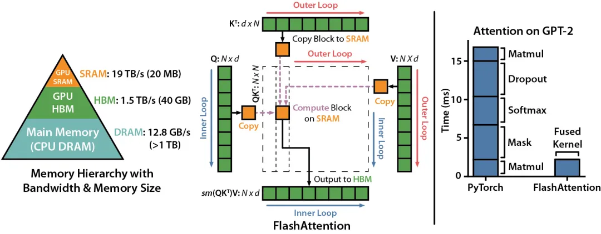
Prefill 阶段，seq_lens 和 query_lens 都是num_prompt_tokens。当前 Prompt 计算出的 KV 向量先被 reshape_and_cache_flash 按 slot_mapping 写入 Paged KV Cache，随后 attention kernel 通过block_table 从 cache 中读取 K/V 完成本层 attention 计算；这份写入同时也作为该序列的 KV Cache，供后续 decode 步骤复用。
vLLM v0中prefill和decode 走两条独立分支：prefill 通过
attn_metadata.is_prompt == True调flash_attn_varlen_func，kernel直接读临时的物理上连续的HBM buffer 里的 K/V，不读 cache；decode 走paged_attention_v1/v2，K/V 全部从 cache 读。v1 把两路统一成一次flash_attn_varlen_func调用，K/V 全部走 paged cache + block_table，代价是 prefill 多一次"写 cache → 读 cache"的间接寻址，换来对 prefix cache / chunked prefill 的天然支持。只有v0版本 FlashAttention不读KV Cache，因为 v0 没有 prefix cache / chunked prefill。
V1中即便某些 backend（如 FlashInfer、MLA-sparse）把混合 batch 物理拆分成prefill / decode 两个独立 kernel 调用,prefill 仍然从 paged cache 读 K/V - 因为 v1 需要支持 prefix cache 和 chunked prefill 。
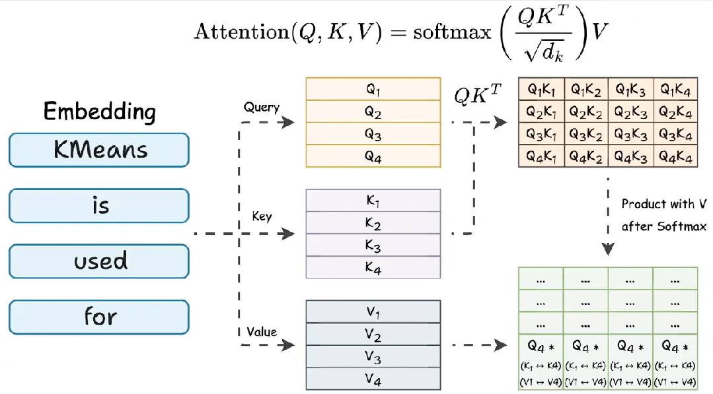
Decode阶段，seq_lens为已计算的历史 token 总数， query_lens为1。
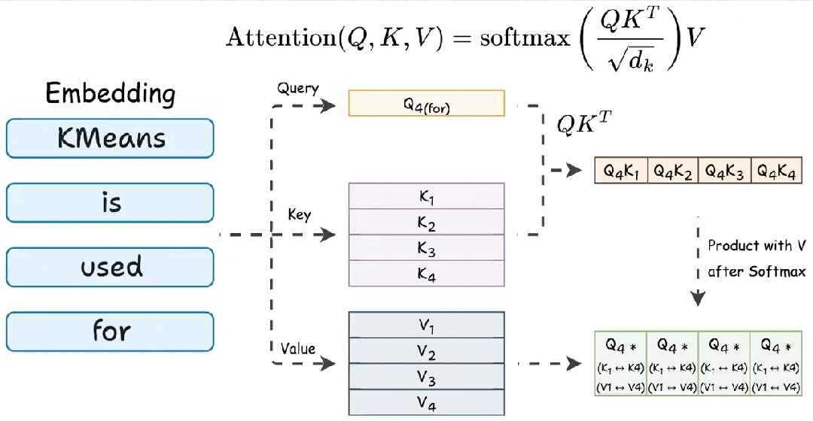
对比Prefill和Decode，可以发现：
- Prefill阶段：QKV_Proj、Attention、O_Proj、MLP 本质上都是稠密矩阵乘法（GEMM），其实就是通过请求内token-level计算复用模型权重，因此算术强度极高，使得 GPU 在 Prefill 阶段主要受限于 Tensor Cores 的物理算力峰值，属于计算密集型（Compute-bound）。
- Decode阶段：由于自回归特性，每次只处理一个 Token（
query_lens = 1），若无优化，此时QKV_Proj、Attention、O_Proj、MLP全都退化为矩阵向量乘法（GEMV）。虽然计算量不大，但需要把巨大的 KV Cache和模型权重 从 HBM 搬运到 SRAM，非常吃显存带宽，因此Decode阶段是典型的访存密集型（Memory-bound）。
而 Continuous Batching 的价值在于在Prefill实现请求内复用模型权重的基础上，进一步通过token-level的调度让多个请求复用模型权重，将 QKV_Proj、O_Proj、MLP 重新变回矩阵乘法，极大地摊薄了读取权重的显存开销。
但是Attention则比较特殊，由于每个请求必须读取自己独占的 KV Cache（无法跨请求共享），而且Decode每次只处理一个 Token，Attention 计算始终无法均摊访存开销。此外，由于当前 Query 必须与所有历史 Key/Value 交互，哪怕有KVCache的存在，其计算与访存量也是随着上下文长度 呈 线性膨胀。这里特别注意其实Prefill阶段每次处理num_prompt_tokens个Token，Attention 计算是可以均摊访存开销的。
ps: 所以其实我们日常所说的Prefill是Compute-bound，Decode是Memory-bound，主要是基于 1. 从 HBM 读取模型权重的访存摊销， 2. 从 HBM 读取模型KV的访存摊销。
Multi-Head Concatenation
| 操作名称 | 逻辑说明 | vLLM 输入维度 | 输出结果维度 | 备注 |
|---|---|---|---|---|
| Concat / Flatten | 消除多头维度，恢复隐藏层维度 | [num_sched_tokens, num_heads, head_dim] | [num_sched_tokens, hidden_size] | 物理内存通常已经是连续的，这里本质上是一个改变 Tensor View 的操作。 (hidden_size = num_heads * head_dim) |
O_Proj - 线性融合 (Output Projection)
| 目标矩阵 | 计算公式 | 输入 维度 | 权重矩阵 维度 | 输出结果维度 | 备注 |
|---|---|---|---|---|---|
| O_Proj | [num_sched_tokens, hidden_size] | [hidden_size, hidden_size] | [num_sched_tokens, hidden_size] | 跨 Head 的信息交互与融合。这也是一次标准的稠密矩阵乘法（GEMM / GEMV）。 |
Residual Connection
不要推翻重来，而是在原有的基础上学习“修正值”（Delta）。如果没有 ResNet 证明网络可以堆到 100 层以上且不梯度消失，后来的 BERT (24层) 和 GPT (96层+) 根本不敢设计得那么深。它是“Scaling Law”在架构上的物理基础。
| 目标矩阵 | 计算公式 | 输入 维度 | 输入 维度 | 输出结果维度 | 备注 |
|---|---|---|---|---|---|
| Residual Add | [num_sched_tokens, hidden_size] | [num_sched_tokens, hidden_size] | [num_sched_tokens, hidden_size] |  是进入这一层 RMSNorm 之前的原始输入。将注意力机制提取的新特征“加回”主干数据流中。 是进入这一层 RMSNorm 之前的原始输入。将注意力机制提取的新特征“加回”主干数据流中。 |
实际vLLM中，Residual Add会和下一步的RMSNorm融合成一个 CUDA kernel。
FFN
RMSNorm
对 再进行一次归一化。在 vLLM 中，通常与上一层残差相加（Residual Add）融合，减少 HBM 读写。
Gate_Proj & Up_Proj
通常 intermediate_size 是 hidden_size 的 4 倍左右 (或 8/3 倍)。
| 目标矩阵 | 计算公式 | 输入 X 维度 | 权重 W 维度 | 输出维度 |
|---|---|---|---|---|
| Gate Proj | [num_sched_tokens, hidden_size] | [hidden_size, intermediate_size] | [num_sched_tokens, intermediate_size] | |
| Up Proj | [num_sched_tokens, hidden_size] | [hidden_size, intermediate_size] | [num_sched_tokens, intermediate_size] |
vLLM 工程实现（Fused Gate/Up）
为了减少 GPU 核函数启动（Kernel Launch）次数并充分利用内存带宽，vLLM 在加载模型时会将 和 按列拼接。这样原本两次中等规模的矩阵乘法，就变成了一次宽矩阵 GEMM。
| 目标矩阵 | 计算公式 | 输入 X 维度 | 权重 Wgate_up 维度 | 输出维度 |
|---|---|---|---|---|
| Fused Gate/Up | [num_sched_tokens, hidden_size] | [hidden_size, 2*intermediate_size] | [num_sched_tokens, 2*intermediate_size] |
Activation
SiLU(Gate) * Up。vLLM 使用 silu_and_mul kernel 在片上（SRAM）直接输出点乘结果，极大节省了显存带宽。
| 操作名称 | 数学公式 | 物理实现说明 |
|---|---|---|
| Slice & Act | 为 前一半， 为后一半。 |
Down_Proj
| 目标矩阵 | 计算公式 | 输入 维度 | 权重 维度 | 输出结果维度 |
|---|---|---|---|---|
| Down Proj | [num_sched_tokens, intermediate_size] | [intermediate_size, hidden_size] | [num_sched_tokens, hidden_size] |
Residual Connection
x = x + FFN_Output
class LlamaMLP(nn.Module):
def __init__(self, config):
super().__init__()
# 通常 intermediate_size 是 hidden_size 的 4 倍左右 (或 8/3 倍)
self.gate_proj = nn.Linear(self.hidden_size, self.intermediate_size, bias=False)
self.up_proj = nn.Linear(self.hidden_size, self.intermediate_size, bias=False)
self.down_proj = nn.Linear(self.intermediate_size, self.hidden_size, bias=False)
self.act_fn = nn.SiLU()
def forward(self, x):
# 1. Gate 和 Up 分别进行 Linear 变换
# 2. Gate 经过 SiLU 激活
# 3. 两者相乘 (Element-wise multiplication) -> 这就是 GLU (Gated Linear Unit)
# 4. 最后经过 Down 投影回原维度
return self.down_proj(self.act_fn(self.gate_proj(x)) * self.up_proj(x))
LM Head
将隐藏层特征映射到整个词表空间，输出未归一化的原始得分，即 Logits。
在前面的 Transformer Block 中，Prefill 阶段的 num_sched_tokens 是所有 Prompt 长度的总和。但实际上vLLM LM Head只需要每个请求序列的最后一个 Token 的特征用来预测下一个词，因此进入LM Head前会执行一次 Gather 操作。（Speculative Decoding、prompt_logprobs除外）
更近一步，Prefill阶段Transformer Block的最后一层，attention 输出是 [num_sched_tokens, hidden_dim]，但实际上只需要最后一个 token 的 hidden_state 来做 logits 计算（因为之后没有更多的 layer 需要完整的 hidden_states 了）。所以理论上最后一层的MLP（以及 LayerNorm）可以只对需要采样的 token 计算，节省大量计算。
如果只需要最后一个 token 的生成结果，那么在最后一层（Last Layer）：
- 必须要算的部分：所有 token 的
和
（因为这层的 KV cache 要存下来，供后续 Decode 阶段使用）。
- 理论上可以只算最后一个 token：
的投影、Attention 的计算（其实退化成了 Decode 阶段的 Flash-Decoding 计算）、LayerNorm、以及庞大的 MLP。
但是vLLM中最后一层还是老老实实把所有 query_lens 都算了一遍，本质上是工程与物理极限的 Trade-off。
RMSNorm
最后再来一次归一化（防止数值过大）。
Linear (LM Head)
| 目标矩阵 | 计算公式 | 输入 维度 | 权重矩阵 维度 | 输出结果维度 | 备注 |
|---|---|---|---|---|---|
| LM Head | [num_reqs, hidden_size] | [hidden_size, vocab_size] | [num_reqs, vocab_size] | num_reqs 即当前 Batch 中的请求数量。 以 Llama-3-8B 为例，vocab_size 高达 128256，这是一个极庞大的矩阵，vLLM 通常会使用张量并行（TP）按列切分该权重以加速计算。 |
Sampling
保存原始 Logprobs
如果用户请求了 logprobs（对数概率），Sampler 会在任何处理之前，先对原始 logits 做一次 log_softmax 快照保存。这样返回给用户的概率分布反映的是模型的真实输出，不受后续 penalties / temperature 等采样参数的干扰。
{
"token": "Hello", // 实际被选中的 token
"logprob": -0.01523, // 该 token 的对数概率 (log_softmax 的结果)
"bytes": [72, 101, ...], // token 的 UTF-8 字节表示
"top_logprobs": [ // 概率最高的前 N 个 token (用户通过 logprobs=N 指定)
{
"token": "Hello",
"logprob": -0.01523 // ln(0.985) ≈ -0.015, 即 98.5% 概率
},
{
"token": "Hi",
"logprob": -4.32185 // ln(0.013) ≈ -4.32, 即 1.3% 概率
}
]
}
Logits Process
在得到原始 Logits 后、进行 Softmax 概率转化前，会经过一系列后处理操作，用于干预最终的生成结果：
-
白名单过滤
-
结构化输出（JSON schema）：配合 grammar bitmask，每一步动态计算当前合法的 token 集合。
-
情感分类：只允许输出
"positive"/"negative"/"neutral"对应的 token。 -
多选题：只允许输出
A``B``C``D。 -
黑名单过滤
-
Non-argmax-invariant Logit Processors
-
Repetition Penalty (重复惩罚): 根据历史 Token，对已生成过的词汇扣除分数，防止模型变成“复读机”。
采样
每个请求的采样策略可以是Greedy或Random，由用户设置的 temperature 决定
@cached_property
def sampling_type(self) -> SamplingType:
if self.temperature < 1e-5: # < 0.00001 就是 greedy
return SamplingType.GREEDY
return SamplingType.RANDOM
- Greedy 先行：在 temperature 缩放之前，先对当前 logits 执行一次
argmax，保存为greedy_sampled。
- 如果整个 batch 全是 greedy（所有请求的 ），到这里就直接返回，后续步骤全部跳过。
- 这一步必须在 temperature 之前做，否则 greedy 请求的 logits 会被不必要地除以 temperature 导致精度损失。
-
Temperature Scaling：
Logits = Logits / Temperature。: 拉大分数差距。高分越明显，低分被压得更低。模型变得保守、确定。: 缩小分数差距。分布趋向均匀。模型变得随机、有创造力（但也容易胡说八道）。
对于 的 greedy 请求，此处会用 跳过除法（避免除以零），它们的最终结果由 Step 1 的
greedy_sampled决定。 -
Argmax-invariant Processors（如 min_p）：
min_p是目前唯一的 argmax-invariant 处理器。其规则为：概率不到token最高概率的 min_p倍的 token，全部淘汰。>公式：阈值 = ，低于阈值的 token 得分设为
 。
。示例（
min_p = 0.1，，阈值 = 0.04）：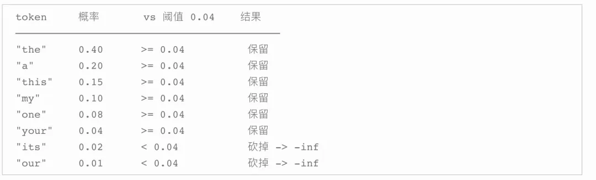
min_p 的核心价值在于自适应：
最高概率的 token 自身永远不会被砍（因为 ），所以 argmax 结果不变。
- 模型很确定时（）：阈值 = 0.09，砍得多，几乎只剩最优解。
- 模型不确定时（）：阈值 = 0.008，砍得少，保留充分的探索空间。
-
Top-K 截断：只保留分数最高的 个 Token，其余得分全部设为 。
-
Top-P Masking：按分数从高到低排序并累加 softmax 概率，保留累积概率刚好超过
 的前若干 Token，尾部 Token 得分设为
的前若干 Token，尾部 Token 得分设为  。
。 -
Softmax + Gumbel-Max 采样 确保结果的随机性 公式： ，其中
Gumbel-Max 用加噪求最大值替代了传统的轮盘赌算法。它将原本需要串行计算前缀和的采样过程，转化为完全独立的 element-wise 并行运算，打破了超大词表下的全局数据依赖。
probs = logits.softmax(dim=-1) q.exponential_() probs.div_(q).argmax(dim=-1) -
最终选择：逐请求按 temperature 决定使用哪个结果
final = where(temperature < 1e-5, greedy_sampled, # 该请求用贪心结果 random_sampled) # 该请求用随机结果
output得到 Next Token ID，并将其追加到 Input 序列中，进入下一轮循环。
总结
是的，戛然而至。本文主要讲述了经典的大模型推理的全流程，想要真正理解大模型的推理流程理解shape的变化真的很重要。笔者有意克制发散的思维，专注整个推理流程，很多的原理和概念都没有提。后续可以围绕这个基础展开，
比如数学基础：Softmax、RMSNorm原理、RoPE
比如Attention计算遇到了内存墙问题
- 导致了 DeepSeek MLA/DSA、线性注意力等的产生，本质是减少KVCache的读取；
- 导致了FlashAttention的产生的，本质上是利用IO Aware、重计算提升计算强度；
比如为什么要MoE scaling law模型不断增大，计算量随参数线性增大，而参数占比的大头又在MLP层，那就把MLP层拆分，美其名曰不同专家，每次执行仅激活部分参数, 其本质就是将现有FFN层拆分成多个，然后增加路由，每次可以激活不同专家组。
比如模型太大了，TP、PP、DP、EP、SP、CP，了解了本文的数据流shape变化，TP理解就变的相当容易。
- Column Parallelism (列切分)： Fused QKV 和 FFN 的 Fused Gate/Up 都是列切分。例如 QKV 的权重维度在单卡上会变成
[hidden_size, qkv_proj_size / TP_size]，输出也相应变成[num_sched_tokens, qkv_proj_size / TP_size]。 - Row Parallelism (行切分)： O_Proj 和 FFN 的 Down_Proj 是行切分。权重变为
[hidden_size / TP_size, hidden_size]。计算完成后，通过AllReduce算子来聚合跨卡结果。
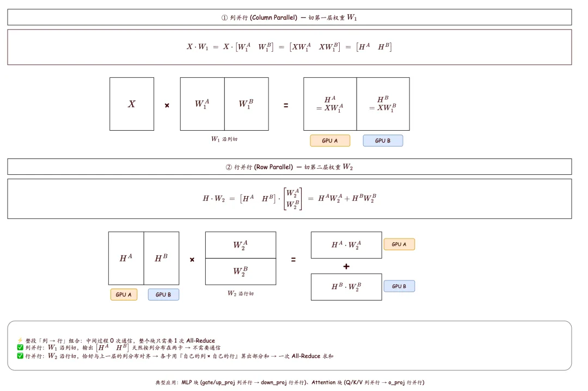
比如长上下文时， chunked prefill 到 Flash-Decoding 到 SP 本质是不同维度的prompt的拆分，不过是在解决不同问题，chunked prefill 避免超长 Prompt的新请求影响其他请求，无论是正在处理的 decode 请求还是待处理的其他 prefill 请求， Flash-Decoding 通过 KV 维度的切块（Split-K）提升了 Decode 阶段的 SM（流处理器）利用率，SP (Sequence Parallelism) 则是解决单卡显存塞不下超长上下文的问题。（Flash-Decoding，Sequence Parallelism靠Log-Sum-Exp实现跨 SM或者跨卡的归一化）
再来感叹一句，单从推理来看，大模型的原理其实真没那么高深莫测，最难的数学公式怕是要数RoPE了。但是AI Infra的东西真的多～～ 根本学不完，不像agent方向整天重命名上下文工程🐶。（提示词工程、function calling、 rag、mcp、memory、agent开发、skills、openclaw、上下文工程、harness工程、hermes）
附1：模型配置参数
| 标准变量名 | 数值 (Llama-3-8B) | 物理含义说明 |
|---|---|---|
| hidden_size | 4096 | 隐藏层总维度，也是 Q 向量的总宽度。 |
| num_heads/num_q_heads | 32 | Query 的头数。决定了注意力机制的并行度。 |
| num_kv_heads | 8 | Key/Value 的头数。GQA 架构中用于压缩缓存。 |
| head_dim/head_size | 128 | 单个头的维度。公式 中的 。 |
| kv_channels/kv_dim | 1024 | 单侧（K 或 V）矩阵的总宽度 (num_kv_heads*head_dim)。 |
| qkv_proj_size | 6144 | Fused QKV 层的输出总宽度 (hidden_size + kv_channels*2)。 |
| intermediate_size | 14336 | FFN 内部升维后的维度（通常为 ）。 |
| fused_ffn_size/gate_up_proj_size | 28672 | Fused Gate/Up 层的输出总宽度 (intermediate_size*2)。 |
| vocab_size | 128256 | 词表大小。决定了 LM Head 的输出矩阵尺寸。 |
| num_hidden_layers | 32 | Transformer Block 的层数。 |
| rope_theta | 500000.0 | RoPE 旋转位置编码的 base theta 值。 |
附2：推理运行时变量
| 标准变量名 | 数值 (Llama-3-8B) | 物理含义说明 |
|---|---|---|
| num_prompt_tokens | 100 | prompt 长度 |
| num_tokens | 105 | prompt + 已生成 output |
| num_computed_tokens | 105 | 已计算的历史 token 总数 |
| num_sched_tokens | 1 | 本次要计算 1 个新 token（decode），其实就是flatten的query_lens |
| seq_lens | 106 | KV Cache 总长度 = 105 + 1 |
| query_lens | 1 | 本次 Q 的长度 |
附3：推理运行时变量
LLM是有多层的，以Llama3 8B为例模型的权重组成如下：
| 组件 | 权重名称 | 参数量维度 | 占比 | 本质与说明 |
|---|---|---|---|---|
| Embedding | embed_tokens.weight | [128256, 4096] | ~6.5% | 查表矩阵 |
| Attention | q_proj | [4096, 4096] (×32层) | ~15.9% | 4 个 Linear 矩阵，无 bias 。 由于 GQA，K/V 矩阵比 Q 小很多。 |
k_proj, v_proj | [1024, 4096] (×32层) | |||
o_proj | [4096, 4096] (×32层) | |||
| MLP | gate_proj, up_proj | [14336, 4096] (×32层) | ~70.1% | 3 个 Linear 矩阵，无 bias ，SwiGLU 激活。 这是模型计算和参数量的绝对大头。 |
down_proj | [4096, 14336] (×32层) | |||
| Input Norm | input_layernorm.weight | [4096] (×32层) | < 0.01% | RMSNorm 缩放一维向量。 |
| Post-Attn Norm | post_attention_layernorm.weight | [4096] (×32层) | < 0.01% | RMSNorm 缩放一维向量。 |
| Final Norm | norm.weight | [4096] (×1) | < 0.01% | 最终进入 LM Head 前的 RMSNorm 向量。 |
| LM Head | lm_head.weight | [128256, 4096] | ~6.5% | 与 Embedding 维度一致，但独立存在不共享。 |
- MLP 层：参数占比 70%，FLOPs 占比也约 70%，是绝对的计算大头。
- Attention 层：参数占比仅 16%，但由于需要读取动态生长的 KV Cache，它是访存带宽的绝对大头。
附4：vLLM调度详细流程
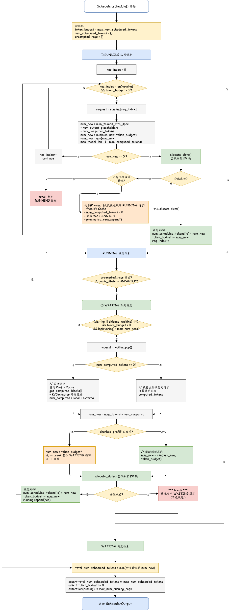
抢占（Preemption)
当 KV Cache blocks 不够分配时，调度器会抢占最低优先级的 RUNNING 请求——释放其全部 KV Cache、将 num_computed_tokens 重置为 0、放回 WAITING 队列。被抢占的请求下次被调度时需要重新从头 Prefill。
v0 时代，vLLM 有两种 preemption 策略：
- SWAP：把被抢占请求的 KV blocks 从 GPU HBM 搬到 host RAM 暂存，资源宽裕时再 swap in 回 GPU。
- RECOMPUTE：直接释放 GPU blocks，重新加入 waiting 队列走prefill 重算一遍。
v1 把 SWAP 路径完全砍掉（
LLM(swap_space=...)已废弃并 warn），Scheduler._preempt_request只保留 RECOMPUTE 一条路。原因：
- PCIe 双向搬运 + host RAM 占用的开销，在 FA + 大 batch 下常常比重算一次 prefill 还贵
- chunked prefill 让重算可以分多步"追上来"，摊平开销
- 架构上少一条路径，prefix caching / chunked prefill /continuous batching 的交互更干净
def _preempt_request(self, request, ...):
self.kv_cache_manager.free(request) # 释放 KV Cache
request.status = RequestStatus.PREEMPTED
request.num_computed_tokens = 0 # 重置，下次需要重新计算
self.waiting.prepend_request(request) # 放回等待队列
为什么 RUNNING 阶段分配失败会抢占，而 WAITING 阶段直接终止？
这体现了调度器的核心原则：已在运行的请求优先级高于等待中的请求。
- RUNNING 请求：已经占用了 KV Cache、消耗了计算资源。如果因为内存不足无法继续，调度器会牺牲优先级最低的 RUNNING 请求（释放其 KV Cache）来保证其他请求能继续推进。这是值得的，因为放弃一个已运行的请求代价很高。
- WAITING 请求：还没开始计算，没有沉没成本。如果内存不足，直接停止调度即可，下一个 step 再尝试。
为什么抢占后跳过 WAITING 调度？
发生抢占意味着 KV Cache 已经非常紧张。此时不应该再引入新的 WAITING 请求，因为那会进一步加剧内存压力，可能触发更多抢占，形成恶性循环。
Reference
Efficient Memory Management for Large Language Model Serving with PagedAttention
Orca: A Distributed Serving System for Transformer-Based Generative Models
Flash-Decoding for long-context inference
SARATHI: Efficient LLM Inference by Piggybacking Decodes with Chunked Prefills
FlashAttention: Fast and Memory-Efficient Exact Attention with IO-Awareness
FlashAttention-2: Faster Attention with Better Parallelism and Work Partitioning
FlashAttention-3: Fast and Accurate Attention with Asynchrony and Low-precision
FlashAttention-4: Algorithm and Kernel Pipelining Co-Design for Asymmetric Hardware Scaling
How GPU Computing Works | GTC 2021
Roofline: an insightful visual performance model for multicore architectures
KV Caching in LLMs, explained visually
KV Caching in LLMs, Clearly Explained
Neural Machine Translation of Rare Words with Subword Units
llama.cpp 源码解析（三）：114 个 Builder——一套代码如何驾驭 130+ 种架构
好久不见，这是 llama.cpp 源码系列的第三篇。第一篇我们拆解了 GGML（推理引擎），知道了"数据怎么算"。第二篇我们拆解了 GGUF（模型文件格式），知道了"模型怎么存"。这篇回答中间缺失的一环：给定一个叫做 "qwen3" 的 GGUF 文件，谁来决定这个模型的每一层应该执行哪些 GGML 操作？
引言： 先锚定问题
读完前两篇，你手上已经有了两样东西：
第一样：GGML 操作集合。 你知道 ggml_mul_mat 可以做矩阵乘法，ggml_rms_norm 可以做归一化，ggml_rope 可以做位置编码，ggml_flash_attn_ext 可以做融合注意力。这些操作是"乐高积木块"——它们不依赖任何特定模型，对所有人一视同仁。
第二样：GGUF 模型文件。 你知道模型文件里有超参数（"我是 qwen3 架构、8 层、768 维"）、有张量索引（"blk.0.attn_q.weight 在第 X 字节，形状是 768×768"）、有权重数据。
缺失的"图纸"在哪？ LLaMA 用积木的方式是 QKV→RoPE→FlashAttn→FFN→残差。Mamba 用积木的方式是 1D卷积→状态空间更新。两者的"图纸"完全不一样。谁负责把 GGML 积木块按正确的顺序拼成计算图？
这就是架构系统做的事。整个系统的核心代码分布在四个文件里，职责分明：
| 文件 | 行数 | 角色 |
|---|---|---|
llama-arch.h | 636 | 定义"架构族"（LLaMA、Qwen、Mamba...） |
llama-arch.cpp | 906 | 定义每种架构的"特征表"（有没有 Attention？有没有 RoPE？...） |
llama-model.h | 643 | 定义"型号"（7B、13B、8x7B...）和层结构体 |
src/models/ | 114 文件 | 真正的 Builder——把架构翻译成 GGML 计算图 |
第一章：你会怎么设计？三个方案，两个失败
方案一：一个巨型函数，130 个 if-else
最直觉的做法：一个 build_graph(string arch) 函数，用 if-else 分派：
if (arch == "llama") { for (每层) { rms_norm(...); matmul(q_proj, ...); rope(...); attn(...); ffn(...); }} else if (arch == "qwen3") { for (每层) { ...; rms_norm(q, ...); rms_norm(k, ...); ... } // 多两行} else if (arch == "mamba") { for (每层) { ssm_conv(...); ... } // 完全不同} // ... 130 个分支
这个函数会膨胀到 26,000 行。每次新增一个架构——比如刚发布的 DeepSeek V4——就要在这个巨型函数里再塞一个 200 行的分支。没有人愿意维护。而且 llama.cpp 的 PR 规范要求代码必须由人类贡献者亲自编写和维护（不能用 AI 生成后直接提交）——每个新架构都需要理解它的人持续维护。
方案二：JSON/YAML 配置文件，通用引擎解析
看上去更优雅：
layers: - type: rms_norm - type: matmul weight: attn_q - type: rope - type: flash_attn - type: matmul weight: attn_out - type: add_residual - type: rms_norm - type: swiglu_ffn
问题在哪？ 架构之间的差异不是"参数不同"，而是计算图的结构不同。
Qwen3 在 QKV 投影和 RoPE 之间插入了两个额外的归一化操作——图中多了两个 ggml_rms_norm 节点。Mamba 的整个层不是"RMS Norm → QKV → Attention → FFN"的结构——它是 SSM（状态空间模型），内部是 1D 卷积和状态更新。DeepSeek V4 的 decode 阶段需要对 KV Cache 做动态压缩——标准 Transformer 根本没有这个操作。
要描述这些差异，你的配置文件语言需要支持条件分支、循环、动态节点插入。你需要的不是 JSON 文件，而是一个图灵完备的 DSL。到这个地步，不如直接用 C++。
方案三（llama.cpp 的实际选择）：每个架构一个 C++ 类
src/models/├── llama.cpp (248行) — LLaMA 1/2/3 + Mixtral MoE├── qwen3.cpp (156行) — Qwen3├── mamba.cpp (137行) — Mamba（无 Attention）├── gemma.cpp (144行) — Gemma├── deepseek2.cpp (439行) — DeepSeek V2/V3/R1（含 MLA 和 MoE）├── rwkv7.cpp (196行) — RWKV v7（类 RNN）└── ... 114 个文件，平均 ~200 行/个
这看起来暴力——114 个类，每个手动描述计算图。但读懂源码之后你会发现，每个 Builder 其实只是一份"组合清单"——告诉 GGML 基类"用 helper X 接 helper Y 接 helper Z"。真正的重活在基类里。 把这 114 个 Builder 想象成 IKEA 的 114 套家具图纸——每套图纸只告诉你"木板 A 接木板 B 接螺丝 C"，但螺丝和木板本身（GGML 操作）是所有图纸通用的。变了的是组装顺序，而不是零件。核心矛盾在这里被化解：架构变体的数量（130+）和核心操作的数量（~20 个 helper 覆盖 90% 场景）之间差了近一个数量级。
[图1：Builder 模式的四层架构] — 顶层是 114 个 Builder，中间是 19 个 helper 组成的 Transformer 设计模式库，底层是 GGML 操作集合。箭头标注"Builder 只表达差异，helper 封装共享逻辑"。
第二章：三个关键设计——为什么 114 个 Builder 不失控
设计一：19 个 helper 函数——Builder 不需要"造积木"，只需要"拼积木"
llm_graph_context 基类（src/llama-graph.h:710）提供了 19 个 helper 函数。每个 helper 封装了一个常见的 Transformer 操作模式——在内部创建若干个 GGML 操作节点，对外暴露为一个函数调用。
| Helper | 封装了什么 GGML 操作组合 | 多常用？ |
|---|---|---|
build_inp_embd | ggml_get_rows(tok_embd, tokens) — 把 token ID 查表成向量 | 100% 的架构 |
build_norm | ggml_rms_norm — 归一化，支持 RMS/Layer/Group 三种 | 95% 的架构 |
build_lora_mm | ggml_mul_mat + 可选的 LoRA 矩阵乘法和加法 | 95% 的架构 |
build_attn | 写 KV Cache + Flash Attention + 输出投影 — 约 10 个 GGML 节点 | 85% 的架构 |
build_ffn | SwiGLU：gate×up→SiLU→×down — 约 5 个 GGML 节点 | 80% 的架构 |
build_moe_ffn | MoE 路由器 + top-k 选择 + 专家 SwiGLU + 加权求和 | 15% 的架构 |
build_mamba_layer | Mamba 的一整层：投影→卷积→离散化→状态更新→输出—约 20 个节点 | 5% 的架构 |
| ... | ... | ... |
这些 helper 是架构系统真正的"引擎"。 如果没有它们，每个 Builder 都需要手动生成数百行 GGML 操作代码——这会直接拖垮可维护性。有了它们，Builder 的代码从"造积木"变成"拼积木"——指定顺序即可。
举例：LLaMA 的 FFN 部分在 Builder 里就是两行：
cur = build_norm(cur, ffn_norm_weight, ...); // 归一化cur = build_ffn(cur, up_w, gate_w, down_w, ...); // SwiGLU FFN
而 build_ffn 内部展开后是 5 个 GGML 操作节点（ggml_mul_mat×3 + ggml_silu + ggml_mul）。Builder 不需要知道这些细节——它只需要说"我要一个 SwiGLU FFN，这是权重，你帮我搞定"。
设计二：超集结构体——一个 llama_layer 管所有架构
不同架构的层结构天差地别。llama.cpp 的做法不是为每种架构定义不同的层结构体，然后搞一个复杂的继承体系——而是定义了一个超集结构体，包含 40+ 个字段，覆盖所有 130+ 种架构可能需要的全部权重。
llama_layer 字段（按类别）: 注意力相关： FFN 相关： SSM 相关 (Mamba用)： wq, wk, wv, wo ffn_gate ssm_in bq, bk, bv, bo ffn_up ssm_dt wqkv (融合QKV投影) ffn_down ssm_a attn_norm (pre-attn) ffn_norm (pre-FFN) ssm_d attn_norm_2 (Falcon双norm) ssm_conv1d attn_q_norm (Qwen3的Q-norm) MoE 相关： ssm_norm attn_k_norm (Qwen3的K-norm) ffn_gate_inp (路由器) attn_out_norm ffn_gate_exps (多专家gate) DeepSeek MLA： ... ffn_up_exps (多专家up) wq_a ffn_down_exps (多专家down) wkv_a
各架构的实际使用情况：
| 架构 | 用到的字段 | 其余字段 |
|---|---|---|
| LLaMA | attn_norm , wq/wk/wv/wo, ffn_norm, ffn_gate/up/down（9个） | 全是 nullptr |
| Qwen3 | LLaMA 的 9 个 + attn_q_norm, attn_k_norm（11个） | 全是 nullptr |
| Mixtral MoE | LLaMA 的 5 个 attn 字段 + MoE 字段（~15个） | 全是 nullptr |
| Mamba | ssm_in/dt/a/d/conv1d , ssm_norm（8个） | 全部 attn/ffn 字段为 nullptr |
| DeepSeek V2 | LLaMA + MLA + MoE（20+个） | 其余 |
核心原则：nullptr 就是多态。 不需要虚函数，不需要抽象接口，不需要 dynamic_cast。Builder 里自然地写成条件检查——MoE 模型的 ffn_gate_inp 非空，稠密模型为 nullptr。同一个 Builder 内部的 if (field != nullptr) 就是"不同架构的差异处"。
为什么不用继承？ 假设用继承，你需要的继承树可能是这样：
BaseLayer / | \ AttnLayer MoELayer SSMLayer / \ |QwenLayer DeepSeekLayer ← 到这里已经炸了：DeepSeek需要Attn+MoE+MLA
DeepSeek 同时需要 Attention（wq/wk/wv/wo）、MoE（ffn_gate_inp/exps）和 MLA 潜注意力压缩（wq_a/wkv_a）。在单继承体系里找不到合适的父类——从 AttnLayer 继承会丢失 MoE 字段，从 MoELayer 继承会丢失 MLA 字段，从两边多继承会触发 diamond problem。而现实中还有更交叉的组合：Gemma 4 同时有 Attention + MoE + 滑动窗口 + per-layer 输入投影——130+ 种架构的差异根本不是线性的分类树，而是一张完全图。
超集结构体用一个朴素的想法绕过了所有这些问题：把可能需要的字段全部列出来，用 nullptr 表示"不需要"。 C++ 里没有继承开销（都是直接成员访问），没有虚函数开销（不需要 vtable），没有 dynamic_cast（不需要运行时类型检查）。简单、直接、够用。这是 llama.cpp "实用主义哲学"的又一个体现。
[图2：超集结构体 vs 继承体系] — 左侧是 llama.cpp 的实际做法（一个大 struct，用 nullptr 区分），右侧是继承体系的反例（DeepSeek 在继承树里找不到合适的单一父类）。
设计三：运行时多态 + 编译期多态
运行时多态：同一个 LLaMA Builder（llm_build_llama）同时覆盖稠密模型和 MoE 模型。不是两个类——是一个类里的 if-else：
if (model.layers[il].ffn_gate_inp == nullptr) → 普通 FFN 分支else → MoE FFN 分支
模型加载时，稠密模型的 ffn_gate_inp 保持 nullptr（GGUF 中没有 MoE 路由器权重），MoE 模型的为非空。Builder 不需要知道加载的是什么模型——它只检查"这个字段有没有值"。
编译期多态：LLaMA Builder 的模板参数 <bool embed> 将一份源码编译成两个版本：
-
embed=false→ decode 模式：有 KV Cache，用
build_attn_inp_kv做输入，有 lm_head 输出 logits -
embed=true→ prefill/embedding 模式：无 KV Cache，用
build_attn_inp_no_cache做输入，不加 lm_head（输出 embedding）
if constexpr (embed) 在编译期求值——死代码分支不出现在最终二进制里。不是运行时判断，是编译时就决定好的。
第三章：LLaMA Builder 的结构——所有 Transformer Builder 的模板
src/models/llama.cpp（248 行）是最经典的 Builder。几乎所有 Transformer 架构的 Builder 都以它为蓝本。
它的本质是什么？ 是一个围绕 for (int il = 0; il < n_layer; ++il) 循环展开的、用 GGML 操作编写的"数学公式到计算图的翻译器"。每一步对应 Transformer 论文里的一行公式。
我用 MiniMind 的实际维度（n_embd=768, n_head=8, n_head_kv=4, n_ff=2432, n_vocab=6400）来标注每一步。
3.1 输入准备
Builder 首先要创建计算图的"输入叶子节点"——这些节点的数据不是计算的，而是从外部传入的。
第一步是 token embedding：创建一个 ggml_get_rows 节点——从 token_embd 矩阵中取出当前 token 对应的行。token_embd 的形状是 [768, 6400]——768 维 × 6400 个 token。对于输入 token 1968（"你好"），取出第 1968 行，得到一个 768 维的向量。这个操作在 GGML 里就是一个 ggml_get_rows 节点。
第二步是位置编码：创建一个位置占位节点。对于"你好"这个 token，它在序列中的位置是 0，RoPE 需要这个信息。
第三步是 Attention 输入类型选择：这里用到了模板参数。如果是 decode 模式（embed=false），K 和 V 从 KV Cache 中读取，只计算新 token 的 Q。如果是 prefill 模式（embed=true），Q、K、V 全部从当前 batch 计算。这个决定影响后续 build_attn 的行为——第一篇第九章详细讲过这两种模式的区别。
3.2 层循环：N 次重复的核心
for(int il =0; il < n_layer;++il){
n_layer 的值来自 GGUF 的 KV 元数据——MiniMind 是 8，LLaMA-7B 是 32，LLaMA-70B 是 80。Builder 不写死层数，从超参数动态读取。这就是为什么同一个 Builder 可以处理 7B 和 70B——它们的层数不同，但每层的结构完全一样。
3.3 每层的计算——先 Attention，后 FFN
每层执行七步，每一步在 graph_ctx 里创建 1-3 个 GGML 节点：
第 1 步：RMS 归一化。 输入是原始 token 向量（维度 768），过 RMS Norm 后还是 768 维。build_norm 内部创建一个 ggml_rms_norm 节点——op=RMS_NORM, src=[cur, attn_norm_weight], data=NULL。attn_norm_weight 是 768 维的可学习缩放向量 γ。
第 2 步：Q、K、V 投影。 三个矩阵乘法：
- Q = Wq × cur：Wq 形状 [768, 768] × cur 形状 [768, 1] → Q 形状 [768, 1]
- K = Wk × cur：Wk 形状 [384, 768] × cur 形状 [768, 1] → K 形状 [384, 1]
- V = Wv × cur：Wv 形状 [384, 768] × cur 形状 [768, 1] → V 形状 [384, 1]
注意 K 和 V 的维度是 384，不是 768——这是 GQA（分组查询注意力） 的效果。Q 有 8 个头（768÷96维/头=8），K 和 V 只有 4 个头（384÷96维/头=4）。每 2 个 Q 头共享 1 组 KV。这直接缩小了 KV Cache 到一半（第一篇第六章讲过）。
build_lora_mm 不只是 ggml_mul_mat。如果这个权重被附着了 LoRA adapter（微调修正矩阵），它还会插入额外的乘法和加法节点。Builder 不需要知道 LoRA 是否存在——helper 自动处理。
第 3 步：可选 bias。 Qwen 系列模型的 Q、K、V 投影有 bias——LLaMA 没有。Builder 里的 if (model.layers[il].bq) 检查：如果 bias 权重存在（非 NULL），加一个 ggml_add 节点。不存在就跳过。这就是 llama_layer 超集设计的实际使用——一个 nullptr 检查就处理了架构差异。
第 4 步：Reshape 成多头形状。 Q 从 [768, 1] reshape 成 [96, 8, 1]（96 维/头 × 8 头 × 1 token）。这是"空操作"——只改 ne/nb，不拷贝数据（第一篇 1.4 节的视图系统）。K 和 V reshape 成 [96, 4, 1]（头数只有 4）。
第 5 步：RoPE 位置编码。 对 Q 和 K 的前 96 维（n_rot=96）做旋转变换。每对相邻维度 (x, y) 旋转一个和 token 位置 m 相关的角度 m×θ。旋转后，模型能从 (x, y) 的几何关系反推"这是第 m 个 token"。RoPE 的全部参数（freq_base, freq_scale, ext_factor 等）都是从 GGUF KV 元数据读取的——Builder 不写死任何数值。
第 6 步：注意力计算（融合操作）。build_attn 内部创建 Flash Attention 节点——把 Q×K^T、Softmax、×V 三个操作融合成一个 GGML 节点。避免了两个中间矩阵的读写（第一篇第七章和第八章讨论过融合操作的优势）。之后再加上输出投影 Wo × attn_out（Wo 形状 [768, 768]）。整个步骤输出一个 768 维向量。
第 7 步：残差连接。 把 Attention 的输出和进入 Attention 之前的原始输入相加——cur + inpSA。这就是"残差"的含义：Attention 只需要学习输出和输入之间的差值，原始输入直接传过去。
3.4 FFN 部分——一个 if-else 决定命运
Attention 之后是 FFN。先做 RMS Norm，然后根据 ffn_gate_inp 是否为空分叉：
如果是稠密模型（LLaMA 家族）： 走 SwiGLU 路径。build_ffn 内部创建大约 5 个 GGML 节点：
- gate = SiLU(W_gate × cur) — W_gate 形状 [2432, 768]，过 SiLU 激活
- up = W_up × cur — W_up 形状 [2432, 768]
- ffn = W_down × (gate ⊙ up) — W_down 形状 [768, 2432]，把 2432 维压回 768 维
2432 是"FFN 中间维度"（n_ff）——比 768 大很多，给模型提供了更大的表示空间。⊙ 是逐元素乘法——这就是"SwiGLU"的"门控"机制：gate 值大的维度被保留，gate 值小的被压制。
如果是 MoE 模型（Mixtral 家族）： 走 MoE 路径。build_moe_ffn 内部更复杂：
- 路由器计算 8 个专家的得分：softmax(W_gate_inp × cur)
- 选分数最高的 2 个专家
- 只对这 2 个专家的 up/gate/down 权重做 SwiGLU
- 两个专家的输出按 softmax 分数加权求和
MoE 的精髓：虽然有 8 套完整 FFN 权重（每个约 3.7MB），但每次只激活 2 套。计算量相当于稠密模型的 2/8 = 25%，但参数量是 8 倍。存储成本高，推理成本低。
最后做第二层残差连接——cur + ffn_inp。本层输出变成下一层的输入。
3.5 输出与拓扑排序
层循环结束后，最后的 RMS Norm + lm_head 投影：output × cur。output 形状 [6400, 768]，cur 形状 [768, 1]，输出 [6400, 1]——这就是 6400 个 token 的原始得分（logits）。
最后调用 ggml_build_forward_expand(gf, cur)——从 cur 出发，沿着 src[] 指针向上回溯，收集所有 287 个 GGML 操作节点，做拓扑排序（第一篇第四章讲过的 DFS 算法）。排序结果存入 cgraph->nodes[]。
Builder 的构造函数到这里结束。计算图描述完毕。287 个 ggml_tensor 全部 data=NULL。真正的矩阵乘法要等 ggml_graph_compute 被调用时才发生。
3.6 Builder 之间的差异只出现在"不同之处"
对比 llama.cpp（LLaMA）和 qwen3.cpp（Qwen3），差异只有两行：
// LLaMA: QKV投影后直接RoPEQcur = build_lora_mm(wq, cur, ...);Kcur = build_lora_mm(wk, cur, ...);// → RoPE// Qwen3: Q和K在RoPE前各多过一次归一化Qcur = build_lora_mm(wq, cur, ...);Kcur = build_lora_mm(wk, cur, ...);Qcur = build_norm(Qcur, attn_q_norm, NULL, LLM_NORM_RMS, il); // ← 多这行Kcur = build_norm(Kcur, attn_k_norm, NULL, LLM_NORM_RMS, il); // ← 多这行// → RoPE
Qwen3 的 Builder 几乎就是 LLaMA 的 Builder 加两行。 这不是巧合——130+ 种架构里，绝大多数 Transformer 变体都只是"标准 LLaMA 模板"的微调。基类提供共享逻辑，Builder 只表达差异。
但怎么让程序知道 "qwen3" 这个字符串应该对应到 Qwen3 的 Builder，而不是 LLaMA 的？这就是下一章的主题。
第四章：四层匹配——"qwen3" 字符串如何找到它的 Builder
GGUF 文件里有一行键值对："general.architecture" = "qwen3"（第二篇第一章展示过 MiniMind 的完整 KV 元数据）。这一个字符串，触发四层转换。
第一层：string → llm_arch 枚举
llama-arch.cpp 有一个约 100 个条目的静态映射表。每个条目是一对字符串和枚举值：
{"llama", LLM_ARCH_LLAMA}{"qwen3", LLM_ARCH_QWEN3}{"mamba", LLM_ARCH_MAMBA}{"rwkv7", LLM_ARCH_RWKV7}{"deepseek2", LLM_ARCH_DEEPSEEK2}...
这一层只做一件事：把人类可读的字符串翻译成机器用的枚举。没有歧义，没有模糊匹配——找不到就直接报错退出。
第二层：llm_arch → 架构特征表
同一个 llm_arch 下的模型并非完全一样。LLaMA-3 和 LLaMA-2 就有差异——LLaMA-3 引入了 rope_factors（不同层用不同的 RoPE 频率缩放）。所以 llama.cpp 不只在"架构族"层面区分模型，还有一个架构特征表，记录每种架构的"能力清单"。
这个表（也在 llama-arch.cpp 中）是 Builder 在运行时的参考——Builder 在执行时查询"我当前这个架构有没有 QK 归一化？""有没有 MoE？""用的是什么类型的 RoPE？"然后走对应的分支。这不是一个配置字典，而是一个"能力矩阵"，Builder 用它来做 if/else 决策。
第三层：llm_arch + 超参数 → llm_type 枚举
同一架构族还有不同大小的变体。LLaMA 有 7B（32层，4096维）、13B（40层，5120维）、70B（80层，8192维）。它们都是 LLM_ARCH_LLAMA，但层数和维度不同——这意味着计算图的节点总数不同（32 层是 ~290 个节点，80 层是 ~700 个节点）。
llm_type（llama-model.h:22-141）同时编码架构和参数量。130+ 个条目，命名直接告诉你参数量：
-
LLM_TYPE_7B— LLaMA-7B
-
LLM_TYPE_13B— LLaMA-13B
-
LLM_TYPE_8x7B— Mixtral MoE，8 个专家，每专家 7B
-
LLM_TYPE_8x22B— Mixtral Large MoE
-
LLM_TYPE_35B_A3B— Qwen3.5 MoE，总参数 35B，激活 3B
-
LLM_TYPE_397B_A17B— Qwen3.5 最大 MoE，总 397B，激活 17B
_A_ 后缀是 MoE 的激活参数，x 格式是专家数 × 每专家参数量。
第四层：llm_type → Builder 实例创建
最后一个 switch（在 llama-model.cpp 内）根据 llm_type 创建对应的 Builder。但一个 Builder 可以对应多个 llm_type：
LLM_TYPE_7B ─┐LLM_TYPE_13B ─┼→ llm_build_llama<false>LLM_TYPE_70B ─┘LLM_TYPE_8x7B ───→ llm_build_llama<false> （同一个！MoE分叉在Builder内部）LLM_TYPE_Qwen3_?B → llm_build_qwen3LLM_TYPE_671B ───→ llm_build_deepseek2
关键：llama-model.cpp 中的这个 switch 不需要知道 Builder 内部细节。它只需要知道"这个 llm_type 对应哪个 Builder 类"。Builder 自己负责读取特征表、检查 nullable 字段、决定走哪个分支。这是职责分离——调度器和 Builder 各管各的。
[图3：四层匹配链] — 纵向展示 "qwen3" → LLM_ARCH_QWEN3 → 特征表 → LLM_TYPE_?B → llm_build_qwen3 的完整流程。每层标注对应的源文件和数据结构。
第五章：cb 回调——Builder 和 GPU 调度器之间的"秘密通道"
每个 Builder 在创建 GGML 操作节点后，会立即调用一个 cb() 函数：
cur = build_norm(inpL, model.layers[il].attn_norm, NULL, LLM_NORM_RMS, il);cb(cur, "attn_norm", il); // ← 每个节点后都有这一行
cb 做什么？ 它是 llm_graph_context 构造时从外部传入的一个回调函数指针（llm_graph_params.cb，定义在 src/llama-graph.h:757）。它的唯一任务是通知后端调度器（ggml_backend_sched，系列第七篇的主题）："我刚创建了一个节点，它是第 il 层的 attn_norm 操作。"
调度器根据三个因素决定这个节点在 CPU 还是 GPU 执行：
-
操作类型
：
attn_norm（归一化）计算量小，放 CPU 即可；Qcur（矩阵乘法）计算量大，放 GPU -
数据位置
：权重张量的
buffer在哪个设备上？如果能和权重在同一设备，避免跨设备数据传输 -
层深度
：前几层的节点可能和 embedding 共享 CPU，后几层可能全部在 GPU
没有 cb 会怎样？ 图可以正常执行——所有操作在默认设备上跑。cb 不是必须的，但它是"CPU+GPU 混合推理"性能的开关。没有它，调度器就不知道每个操作的计算特征，只能靠启发式规则猜测。
第六章：四种架构差异，四种处理方式
不是所有架构差异都需要全新 Builder。llama.cpp 按差异程度用了四种策略，从"多写几行"到"独立项目"。
级别一：多几个节点（~5 行代码）
例子：Qwen3 的 QK 归一化。 LLaMA 的 Q 和 K 投影后直接做 RoPE。Qwen3 在中间插入了额外的 RMS Norm。
在代码层面，就是 Builder 里多两行 build_norm 调用——因为 attn_q_norm 和 attn_k_norm 字段在 LLaMA 模型加载时保持 nullptr（跳过），在 Qwen3 加载时为非空（执行）。同一个 Builder 不需要关心"当前是什么模型"——它只检查字段是否为空。为空就跳过，非空就多加一个归一化节点。
这体现了超集结构体的威力：一个架构的"额外特性"对其他架构完全透明——nullptr 让它们自然跳过。
级别二：整个操作模式不同（~150 行新 Builder）
例子：Mamba（没有 Attention）。 LLaMA Builder 的层循环是"norm→QKV→attn→残差→norm→SwiGLU→残差"。Mamba 的层循环是"SSM 状态空间更新→残差"。
基类提供了 build_mamba_layer helper（封装了投影→1D 卷积→离散化→状态更新→输出投影共约 20 个 GGML 操作）。Mamba Builder 的层循环里没有 build_attn、没有 build_ffn、没有 ggml_rope——只是一个 build_mamba_layer 调用。计算图的结构完全变了。
但 Builder 本身只需要 137 行——因为大部分模板代码（输入准备、循环骨架、输出层、拓扑排序）可以复用。只有"层的具体实现"需要替换。
级别三：一个字段决定分叉（~30 行，已在 Builder 内）
例子：Mixtral MoE。 LLaMA Builder 不需要改——它本来就有一个 if (ffn_gate_inp == nullptr) 分叉。稠密模型走普通 FFN，MoE 模型走 MoE FFN。同一个 Builder 类、同一套代码，用一个字段是否为 nullptr 区分。
这种设计让 llm_build_llama 同时覆盖了 LLaMA 家族（稠密）和 Mixtral 家族（MoE）。不是两个 Builder——是一个 Builder，两个分支。开发者不需要为 MoE 单独建一个新文件。
级别四：全新架构概念（1392 行或独立项目）
例子：DeepSeek V4（2026 年 4 月发布，百万上下文）。 V4 的核心理念是"动态 KV Cache 压缩"——在 decode 阶段实时压缩 KV 状态以减少百万上下文的内存需求。这是标准 Transformer 完全没有的概念。llama.cpp 基类的任何 helper 都不能直接描述它——需要全新的数据结构（dsv4_decode_compressor）、全新的注意力掩码（三种不同策略，不同阶段切换）、全新的通道混合方式（dsv4_hc_mix）。
四种策略的选择标准：
| 差异级别 | 工作量 | 什么时候用 |
|---|---|---|
| 多几个节点 | ~5 行 | 现有 Builder 内加几行，架构变体 |
| 新子图模式 | ~150 行新 Builder | 需要不同的 GGML 操作组合，但仍用基类 helper |
| nullable 分叉 | ~30 行 | 两种模式共存于同一架构家族（稠密 vs MoE） |
| 全新概念 | 1392 行+ | 需要新 helper、新数据结构、甚至 fork 项目 |
[图4：四种架构差异的对比] — 四个横向色带，从绿色（多几行）到蓝色（新Builder）到橙色（nullable分叉）到红色（独立项目）。每级配有具体架构示例和代码差异示意。
第七章：Builder 模式的边界——antirez 的 DeepSeek V4 案例
2026 年 4 月 DeepSeek V4 发布——1.6 万亿参数、百万上下文。llama.cpp 官方至今（5 月 26 日）未适配。Redis 作者 antirez fork 了项目，写了 1392 行的 deepseek4.cpp。
为什么是 1392 行？ V4 的核心特性——动态 KV 压缩、三阶段注意力掩码、混合通道——不是任何现有 helper 能直接支持的。antirez 在 Builder 里引入了一整套新机制：dsv4_decode_compressor（decode 时压缩 KV Cache）、dsv4_state_pair（压缩后的状态管理）、三阶段掩码（RAW_WINDOW / COMPRESS_CAUSAL / ATTN_STATIC）。
这暴露了 Builder 模式的边界。 当新架构的核心理念和现有 helper 库完全不兼容时，写新 Builder 和写专用引擎的成本开始接近。事实上 antirez 后来又写了 ds4.c——一个完全不依赖 llama.cpp 的纯 C 推理引擎，专为 V4 Flash 优化。
当然这里纯粹是想看看新的推理框架是怎么适配一些新的机制的，deepseek v4后续有时间单独出文章学习吧，这又是个复杂的大工程
好了，架构系统讲完了。下一篇系列应该会推出第四篇：推理管线
最近工作生活有点忙，断更了太久，之后一个月争取持续更新，下次见啦！
第4章 Agent 架构与 Harness 工程
OpenClaw、Harness 六大组件、多智能体协作 —— Agent 系统设计
本章文章
- OpenClaw 的前世今生：一张图讲明白 从“大模型会说”到“工程化会做”的演进 — LLM→Function Call→Agent→OpenClaw 演进路线
- OpenClaw vs Hermes 架构深度拆解 — 两大 Agent 框架架构对比与设计取舍
- (99+ 封私信 _ 80 条消息) AI agent到底有多大创新？ - 知乎 — Agent vs 传统 Task Bot 的本质讨论
- 推理 → 行动 → 观察：用 LangChain + Python 实现一个智能体循环 — ReAct 模式与 Agent Loop 完整实现
- AutoGen 多智能体实战：Coder、Reviewer、Executor 自动跑完一次代码评审 — 多智能体协作：Coder/Reviewer/Executor 角色分工
- 一个爆火的 AI Agent 工作流项目 — Sim 工作流平台：画布式 Agent 编排
- Agent Harness 解析：智能体架构深度拆解 — Harness 六大模块拆解与架构设计
- Agent Harness Engineering全景综述，决定Agent系统的上限 — 全栈基础设施层七大模块综述
- 大白话讲透驾驭工程(Harness Engineering)六大组件 — Harness 六组件通俗解读
- 从Prompt、Context到Harness，工程的三次进化与终局之战 — 工程三次进化：Prompt→Context→Harness
- 从零搭建 Harness Engineering 架构：Rule、Skill、Sub-Agent 完整落地路径 — Rule/Skill/Sub-Agent 完整落地路径
- 9大Harness的记忆能力对比 — 9 大 Agent 框架的记忆机制对比
- Rust 正在接管 AI Agent 的基础设施层 — Rust 在 Agent 基础设施中的性能优势
OpenClaw 的前世今生：一张图讲明白 从“大模型会说”到“工程化会做”的演进
今天给大家完整梳理了从大模型（LLM）初登场到 OpenClaw 最终成型的进化全史。这是一场从“文本生成”向“自主执行”的思维跃迁。
大家好，我是寒山。
一张图给大家讲明白大模型的进化过程，及小龙虾的由来。
第一阶段： LLM 萌芽：博学但无能的“隐士”
大模型刚问世时，像是一个深居简出的隐士。
- 形态： 主要是 Web 端对话框。
- 用法： 纯文本交互。问天、问地、问代码，它能给你完美的答案，但它无法执行任何动作。
- 局限： 模型处于“信息孤岛”，不知道实时新闻，无法修改你的本地文件，也无法帮你发一封真实的邮件。
第二阶段： Function Call：初生的“钥匙”
为了打破孤岛，OpenAI 等厂商推出了 Function Calling（函数调用）。
- 演进： 开发者在代码里“硬编码”一堆 JSON 格式的工具描述。
- 做法： 告诉模型：“如果你要查库存，就输出 get_inventory”。模型开始学会输出结构化指令，再由外部代码执行。
- 痛点： 每个模型的函数格式都不统一，开发者需要为每个模型写海量的“胶水代码”。这时的工具是死板的，且难以跨平台复用。
第三阶段： MCP：标准化的“万能插座”
Anthropic 推出的 MCP 彻底改变了工具连接的逻辑。
- 革命： 它不再让模型适配工具，而是让工具适配协议。只要你写一个“MCP 服务端”，所有的模型（Claude, GPT, 甚至本地模型）都能直接连接。
- 解耦： 就像 USB 接口统一了外设，MCP 统一了模型的“外挂”标准。
- 状态： 这一阶段工具变得极其丰富，但依然存在门槛——普通用户如何快速把这些分散的 MCP 工具整合到一个好用的 Agent 里？
第四阶段： Skills：模块化的“专家级经验”
在 MCP 的基础上，Skills（技能） 的概念开始盛行。
- 定义： Skill 不仅仅是一个 API 接口，它是一套封装好的、带指令的模块化能力包。
- 核心： 每个 Skill 通常包含一个 SKILL.md 文件，里面定义了什么时候用这个工具、具体的执行步骤以及处理异常的逻辑。
- 深度： 技能让模型拥有了“领域专家”的自觉。比如，“代码审查技能”不仅能查 Bug，还附带了企业的代码规范和最佳实践。
第五阶段： OpenClaw：集大成的“利爪”
OpenClaw（其前身为 Clawdbot 和 Moltbot）在 2025 年底至 2026 年初横空出世。
- 由来： 它的名字代表“Open”（开源平权）和“Claw”（像利爪一样抓取现实世界的资源）。
- 终极整合： OpenClaw 的核心是它的 Skills 系统，它完美融合了前几个阶段的所有成果：
- 原生支持 MCP： 它可以瞬间调用全球开发者分享的数千个 MCP 技能。
- 工程化闭环： 它不仅是给模型“钥匙”，还给模型一个自动执行、错误重试、长记忆管理的“身体”。
- 开源平权： 它让像 DeepSeek 这样的开源模型，通过 OpenClaw 框架，也能稳定地执行原本只有顶尖闭源模型才能胜任的复杂技能。
总结：
从“只会说（LLM）”到“会拿钥匙（Function Call）”，再到“有了万能接口（MCP）”，最后通过 OpenClaw 的 Skills 系统，AI 终于进化成了那个“有手有脚、能干实活”的智能代理。
想试试看吗？ 我们可以聊聊如何通过 OpenClaw 给你的本地模型挂载一个 网页搜索 或 本地文件管理 的 Skill。
OpenClaw vs Hermes 架构深度拆解
Part 01 / 现象
两只「龙虾」引爆全球开发者社区
2026 年的 AI Agent 赛道,没有人能绕过 OpenClaw 和 Hermes Agent 这两个名字。
先说 OpenClaw。这个由奥地利开发者 Peter Steinberger 发起的「周末项目」,2025 年 11 月以 Clawdbot 之名低调上线,72 小时内 Star 从不到 1 万暴涨到 6 万,两天突破 10 万,单日最高新增 17,830 颗 Star——直接打破了 GitHub 的历史记录。中文社区管它叫「养龙虾」,腾讯云、阿里云、京东云迅速跟进提供一键部署,国内甚至出现了 Kimi Claw、MaxClaw、QClaw 等一系列套壳产品。
Hermes Agent 则在 2026 年 2 月底由 Nous Research 发布,10 周内拿下 11 万 Star。到 5 月中旬,NVIDIA 官方博客为其专门撰文,标题直接喊出「self-evolving agents」。在 OpenRouter 的全球日活排行榜上,Hermes 以 224B 日 Token 消耗量反超 OpenClaw,登顶全球第一。
社区的讨论也极度两极化。有人说 Hermes 是「2026 年最强 Agent Harness」,有人反驳「不过是又一个 OpenClaw 仿品」。但当我们拆开引擎盖看底层架构,会发现这两个项目从根子上就走了完全不同的路——这才是真正值得深挖的东西。
Part 02 / 身世
一张表读懂两个项目的来龙去脉
| 维度 | OpenClaw | Hermes Agent |
|---|---|---|
| 发布时间 | 2025 年 11 月 | 2026 年 2 月 |
| 背后团队 | Peter Steinberger（PSPDFKit 创始人）→ 已加入 OpenAI,项目移交独立基金会 | Nous Research（Hermes/Nomos/Psyche 模型系列,2023 年 A 轮 $50M） |
| 开源协议 | MIT License | Apache 2.0 |
| GitHub Stars | 345,000+ | 140,000+ |
| 核心语言 | TypeScript / Swift | Python |
| 一句话定位 | 住在消息 App 里的 AI 网关 | 会自我进化的 AI 引擎 |
| 模型支持 | 主推 Anthropic API,也支持 OpenAI / Gemini / Ollama | 400+ 模型（OpenRouter / Nous Portal / OpenAI / Ollama / DeepSeek / Kimi 等） |
| 消息渠道 | 50+ 渠道（WhatsApp / Telegram / Discord / iMessage / 飞书等） | 20+ 渠道（Telegram / Discord / Slack / WhatsApp / 飞书 / 企微 / 钉钉等） |
一句话概括二者的本质差异:CSDN 上有人总结得很精炼——**OpenClaw 是打通大模型与业务的「AI 网关」,Hermes Agent 是让智能体自主进化的「AI 引擎」。**接下来,我们从架构层面把这个差异展开讲。
Part 03 / 架构
「Hub-and-Spoke 网关」 vs 「五支柱引擎」
OpenClaw: Gateway 中心化控制平面
OpenClaw 的架构围绕一个 单进程 Gateway 构建——一个长期运行的 Node.js 进程,是整个系统的大脑和路由器。所有的消息渠道（WhatsApp、Telegram、Slack 等）、CLI 客户端、移动端 Node、Web 界面,都通过 WebSocket 连接到这个 Gateway。这是一个典型的 Hub-and-Spoke（中心辐射） 架构。
Gateway 的职责非常集中:维护 Provider 连接、对入站帧做 JSON Schema 校验、广播 agent / chat / presence / heartbeat / cron 等事件,同时也是唯一能开启 WhatsApp Session 的进程。远程节点（比如你的 Mac、Linux 服务器、手机）通过 WebSocket 以 role: node 身份连接,经过设备配对后获得执行权限。
这个设计带来的好处是:统一入口、多端协同。一个 Gateway 管所有渠道,你在 WhatsApp 上聊到一半,换到 Telegram 继续,上下文不丢。同时,代码执行可以分布到不同 Node 上——你的 Mac 跑浏览器自动化,Linux 服务器编译代码,手机拍照——都通过同一个 Gateway 协调。
OpenClaw Gateway 启动
## 前台开发模式
openclaw gateway
## 后台守护进程（生产模式）
openclaw gateway --daemon
## 远程 Node 连接到 Gateway
openclaw node run --host--port 18789
但弱点也很明显:Gateway 是单点,安全研究人员发现有超过 4 万个暴露在公网的 Gateway 实例。2026 年 1 月还出过一个 WebSocket Origin Bypass 导致远程代码执行的 CVE（CVE-2026-25253）。社区的技能市场 ClawHub 也遭遇过恶意技能投毒事件。
Hermes Agent: 五支柱自进化架构
Hermes 走了一条截然不同的路。如果说 OpenClaw 是在回答「怎样把 AI 连接到一切」,Hermes 要回答的问题是「怎样让 AI 越用越聪明」。它的架构围绕 五根支柱 构建:
🧠 Memory 记忆
四层记忆架构:MEMORY.md（环境知识）、USER.md（用户画像）、Skills（程序性记忆）、SQLite FTS5（全文检索历史会话）
🔧 Skills 技能
Agent 完成复杂任务后,自动提炼流程写入 SKILL.md。下次遇到类似任务直接调用,无需从头推理
👤 Soul 灵魂
SOUL.md 定义 Agent 的身份人格、语气风格、行为边界。多 Agent 共享底座模型但各有灵魂
⏰ Crons 定时任务
自然语言设定定时任务,内置调度器,不需要额外搭 crontab 或外部调度系统
而第五根支柱——Self-Improvement 自我改进闭环,是 Hermes 最核心的差异化能力,也是社区争论最多的地方。我们在下一节展开。
Hermes Agent 安装与启动
## 一键安装（自动检测环境、安装依赖）
curl -fsSL https://raw.githubusercontent.com/NousResearch/hermes-agent/main/scripts/install.sh | bash
## 交互式配置向导
hermes setup
## 选择/切换模型
hermes model
## 创建隔离的多 Agent 实例
hermes profile create designer --clone
hermes profile create programmer --clone
Part 04 / 核心差异
自我进化闭环:Hermes 真正的护城河
大多数 Agent 框架的执行循环是:接收任务 → 规划 → 执行 → 返回结果 → 会话结束。下一次任务启动时,从相同的基线重新开始。
Hermes 在执行完成之后,额外加了一层:Agent 会自动回顾刚刚完成的任务,评估哪些步骤有效、哪些失败,然后把成功的模式蒸馏成一份结构化的 SKILL.md 文件写入磁盘。下次遇到类似任务时,这份技能会被自动加载到系统提示词中,Agent 直接按照已有的流程执行,无需重新摸索。
DEV 社区 / 认知科学视角分析
「Hermes 的记忆架构几乎映射了人脑的四种经典记忆系统——身份记忆、语义记忆、程序性记忆、情景记忆,外加工作记忆和记忆巩固。这不只是聪明的工程,更像是一篇论文。」
到了 v0.12 Curator 版本,Hermes 更进一步——引入了一个 Curator 自治系统,它会持续监控技能的使用频率和质量,自动识别退化的技能,基于评分标准进行重构或优化。相当于给 Agent 配了一个专职的「技能管理员」。
作为对比,OpenClaw 的 Skill 体系依赖人工编写或从 ClawHub 社区市场安装。成熟度高、现成可用的技能数量多（13,700+），但 Agent 本身不会从经验中自动生成新技能。用社区的话说:在 OpenClaw 上跑同一类任务 100 次,Agent 不会变好——每次都是从零开始。
学习闭环的实际运作
1用户下发一个复杂任务（如「部署 Next.js 到 Coolify」）
2Agent 多步推理 + 工具调用完成任务,全程记录到 SQLite
3任务完成后触发反思:提取成功模式、失败教训
4调用 skill_manage 工具,自动写入 ~/.hermes/skills/deploy-nextjs-coolify/SKILL.md
5下次类似任务,技能被注入 system prompt,Agent 直接按流程执行
6Curator 定期审查技能质量,退化的技能会被自动重构
Part 05 / 记忆
记忆系统:记住发生了什么 vs 记住什么有效
记忆是 Agent 能否长期使用的关键。两个项目在这件事上的设计哲学差异巨大。
OpenClaw 使用 SQLite + Markdown 文件做持久化,支持跨会话的上下文保持。记忆主要是被动的:用户告诉它记住什么,它才记。Session 结束时,上下文写入存储;下次启动时加载回来。这对于简单的任务路由和上下文延续已经够用。
Hermes 的记忆则是分层的、主动的。它借鉴了认知科学中的多系统记忆模型:
| 记忆层 | Hermes 文件 | 作用 |
|---|---|---|
| 身份记忆 | SOUL.md | 定义 Agent 人格、语气、行为边界,全局生效 |
| 语义记忆 | MEMORY.md（≤2200 字符） | 环境知识、项目约定、工具使用心得 |
| 用户画像 | USER.md（≤1375 字符） | 用户偏好、技能水平、沟通风格 |
| 程序性记忆 | ~/.hermes/skills/*.md | 任务执行的标准流程（可自动生成） |
| 情景记忆 | SQLite + FTS5 全文检索 | 历史会话的可搜索存档 |
| 记忆巩固 | 定时反思 Pass | 回顾近期会话 → 蒸馏 → 回写 MEMORY.md 或生成新技能 |
关键区别在于:MEMORY.md 和 USER.md 会作为冻结快照注入到每轮对话的 system prompt 中。当记忆使用量达到约 80% 时,Agent 被迫进行信息浓缩——丢弃不重要的,保留核心的。这种机制迫使记忆始终保持高信噪比,而不是无限膨胀拉高 Token 成本。
Composio 评测
「OpenClaw 在编排（Orchestration）上更成熟,Hermes 在学习（Learning）上更有野心。我的建议:用 OpenClaw 当指挥官,Hermes 当执行专家。」
Part 06 / 安全
安全模型:两种截然不同的信任边界
安全性是自托管 Agent 绕不开的话题。两个项目的安全哲学反映了架构上的根本差异。
OpenClaw 采用 操作者显式授权 模型:所有操作需要人工批准,文件驱动身份系统（SOUL.md、AGENTS.md 定义规则）,Node 节点通过设备配对 + 命令白名单限制执行权限。安全边界由人定义,Agent 在边界内执行。但 OpenClaw 已经积累了真实的 CVE 记录——包括 2026 年 1 月的远程代码执行漏洞,以及 ClawHub 技能市场的投毒事件。安全研究人员还发现了超过 4 万个暴露在公网的 Gateway 实例。
Hermes 默认标配了 Docker 容器隔离:每个 Agent 实例运行在独立容器中,拥有自己的 .env 文件、API Key、记忆和技能,容器之间不共享凭据或上下文。此外还支持 SSH、Daytona、Modal 等远程执行后端,让代码执行和宿主机之间有清晰的隔离层。截至 2026 年 5 月,Hermes 尚未出现公开的安全 CVE——但这更多反映的是暴露时间短,而非经过充分验证的安全加固。
| 安全维度 | OpenClaw | Hermes Agent |
|---|---|---|
| 默认执行隔离 | 依赖用户配置沙箱 | Docker 容器隔离（默认） |
| 命令审批 | Node 端 exec policy + 白名单 | 多级审批 + 工具权限控制 |
| 已知 CVE | CVE-2026-25253（RCE）等 | 暂无公开 CVE |
| 供应链风险 | ClawHub 曾遭投毒（ClawHavoc 事件） | 技能由 Agent 自生成,第三方依赖少 |
| 审计工具 | openclaw security audit --deep | Agent 工作日志全量打印在聊天界面 |
值得注意的是,2026 年 3 月中国相关部门限制国企和政府机构在办公电脑上运行 OpenClaw,理由是潜在的安全风险。这从侧面说明,自托管 Agent 的安全性已经不仅仅是技术问题,正在进入政策监管的视野。
Part 07 / 生态
生态之争:13,700 个现成技能 vs 自动生长的技能库
OpenClaw 的 ClawHub 是一个类似 npm 的技能市场,目前有 13,700+ 社区贡献的技能包,覆盖邮件处理、日程管理、代码审查、浏览器自动化等场景。装上就能用,生态成熟度远超 Hermes。国内也有营赛 AI 等商业团队系统性地贡献 Skills。
Hermes 目前没有等量级的第三方技能市场,它的设计思路本身就不依赖外部技能——Agent 从自己的工作经验中生成技能。最新版本支持与 agentskills.io 开放标准兼容,也能直接导入 OpenClaw 的 Skills 配置,迁移成本很低。
在消息渠道覆盖上,OpenClaw 以 50+ 原生渠道的优势遥遥领先,包括 WhatsApp、iMessage、Signal 等 Hermes 尚未覆盖的平台。不过 Hermes 覆盖了国内开发者最关心的飞书、企微、钉钉,甚至支持微信和 QQ Bot,这在国内场景下是一个加分项。
两个项目都支持 Cron 定时任务,但实现方式不同:OpenClaw 的 Heartbeat 机制每 30 分钟唤醒一次 Agent 检查待办;Hermes 支持用自然语言设定调度规则,内置调度器,不需要额外配置。
Part 08 / 总览
全维度对比一览表
| 对比维度 | OpenClaw | Hermes Agent |
|---|---|---|
| 架构核心 | Gateway 中心辐射控制平面 | 五支柱学习闭环引擎 |
| 设计哲学 | 人在决策链中心,Agent 执行规则 | Agent 自主迭代,越用越懂你 |
| 记忆系统 | SQLite 被动持久化 | 四层主动记忆 + FTS5 + 反思巩固 |
| 技能机制 | ClawHub 社区市场（13,700+） | Agent 自动生成 + Curator 自维护 |
| 自我进化 | 无 | 核心能力,内置学习闭环 |
| 消息渠道 | 50+（最广） | 20+（覆盖国内主流） |
| 模型灵活性 | 主推 Anthropic,有限多模型 | 400+ 模型,一行切换 |
| 多 Agent | Gateway 级别路由 | Profile 隔离 + Docker 容器 |
| 执行后端 | 本地 + Node 远程执行 | Local / Docker / SSH / Daytona / Modal / Singularity（6种） |
| 定时任务 | Heartbeat 每 30 分钟轮询 | 自然语言 Cron + 内置调度器 |
| 长时任务 | 社区反馈稳定性一般 | 实测支持 2 小时以上连续运行 |
| 安全模型 | 操作者授权 + 设备配对 | Docker 隔离 + 多级审批 |
| 上手难度 | Node.js 环境 + Gateway 配置 | 一行 curl 安装 + 交互式向导 |
| 社区规模 | 345K Stars / r/openclaw 10.3万人 | 140K Stars / 增速更快 |
| 适合场景 | 多渠道统一入口、平台化编排 | 个人深度助手、长期知识沉淀 |
Part 09 / 结论
选谁?或者...都要?
经过全面拆解,答案其实已经浮出水面:这两个项目并不是非此即彼的关系,而是在 Agent 的两个不同维度上各自做到了极致。
选择建议
选 OpenClaw 如果你需要...
最广的渠道覆盖（50+），成熟的技能生态（13,700+），多端协同执行（Mac/iOS/Android/Linux 节点统一编排），以及「一个入口管所有」的平台化体验。适合团队级部署和需要快速落地的场景。
选 Hermes 如果你需要...
长期使用越来越懂你的个人助手，自动沉淀工作 Know-how，灵活的模型选择（400+），更好的执行隔离（Docker 默认），以及对国内平台（飞书/企微/钉钉）的原生支持。适合深度个人用户和开发者。
而中文社区正在流行的一种「互补打法」可能是最聪明的选择:OpenClaw 做指挥官负责广泛的平台集成和任务路由,Hermes 做执行专家负责深度个人化和自动技能沉淀。Hermes 官方也支持直接导入 OpenClaw 的 Skills 和记忆配置,迁移和共存的成本很低。
从更宏观的视角看,OpenClaw 和 Hermes 代表了 AI Agent 进化的两个阶段:第一阶段是连接一切——把 AI 接入尽可能多的消息渠道和工具;第二阶段是持续进化——让 Agent 从工作经验中自主学习、自主改进。前者解决的是「覆盖面」问题,后者解决的是「深度」问题。
2026 年下半年,这场「网关 vs 引擎」之争的走向,可能将决定整个开源 Agent 赛道的技术路线。而对于我们这些使用者来说,真正值得关注的不是谁的 Star 更多——而是谁能在你的真实工作流中,持续、稳定、安全地创造价值。
(99+ 封私信 / 80 条消息) AI agent到底有多大创新？
昨晚睡前看了Andrej Karpathy在AI Ascent的talk视频，有点被shock到了，久久不能入睡（AI Ascent是红杉资本主办的AI创业和投资圈的“风向标级闭门峰会”）。正好我前阵子也有**LLM是一种new computer的感觉**，而AK说的更直接：这不仅是可以给已经能做的提效，而是打开了新世界的大门，能做以前根本想象不到的。

29:48
Andrej Karpathy-From Vibe Coding to Agentic Engine
当前的一个共识是：目前进入Agent产品阶段，召唤着这个时代的乔布斯。这是 iOS 的 App Store 前夜，是属于超级产品经理的黄金时代。
然而顺着LLM Is the New Computer逻辑的进一步技术思考是：类比上世纪40~90年代，computer蓬勃发展，关于图灵机、计算机的架构（冯诺依曼）、指令集、编译器都在百花齐放、野蛮生长。这个new compute age，所有工程技术都需要重构或者说是全新创造。
所以不要苛责现在的LLM computer哪里不好用，抱怨agent偶尔有多蠢，面对范式迁移，重要的是要躬身入局，对技术的能力边界和发展趋势有真实的体感，跟上技术的发展，不要被时代的洪流抛弃。
以后能用就尽量多用当前的agent产品，不仅用还要多思考，多了解技术底层。这个视频是Claude Code自动：从youtube拉视频+音频 + Whisper V3模型语音识别 + 制作中英字幕 + 压制视频。并且我也制作成了skill。
我把这场演讲中最击中我的5个核心洞察整理了出来，分享给同样在这个时代洪流中的你。
01 / 范式转移：Software 3.0 与 “LLM作为新计算机”
从未感到如此落后。 从去年 12 月起，随着模型能力的跃升，AI 生成的代码块几乎不再需要人类纠错。这种断崖式的体验让 AK 感到“作为程序员从未如此落后”，并促使他全面转向“Vibe Coding”。
我们正在迈入 Software 3.0 时代。 Software 1.0 是编写明确的规则（写代码）；Software 2.0 是训练神经网络的权重；Software 3.0 则是 Prompting。在这个新纪元里，LLM 变成了新的“计算机（解释器）”，而上下文窗口（Context Window）就是你操控这台计算机的杠杆。
这不仅是提效，而是创造全新可能。 Software 3.0 消灭了中间的应用程序层。例如他的 MenuGen（菜单翻译器）项目，在旧范式下需要写代码、做 OCR、部署服务器；但在新范式下，只需要把菜单照片扔给大模型，模型就能直接渲染出带图的新菜单。很多以前无法想象的“非结构化信息处理”现在成为了可能。
未来的计算形态将发生反转。 在 20 世纪 50 和 60 年代的计算早期，人们并不确定未来的计算机应该长得像“计算器”还是像“神经网络”。历史上我们选择了“计算器”（即经典计算）的道路，导致现在的神经网络是虚拟化运行在现有计算机之上的。但随着 LLM 成为新计算机，这种架构可能会完全反转——神经网络将成为控制一切的“主进程（Host Process）”，而传统的 CPU 反而沦为处理历史遗留确定性任务的“协处理器（Co-processor）”。
02 / 锯齿状智能（Jagged Intelligence）与可验证性（Verifiability）
本质上，传统计算机擅长自动化你能“明确说明（Specify）”的东西，而 LLM 擅长自动化你能“验证（Verify）”的东西（比如代码运行是否报错、数学题对不对）。
预训练模型学习的是统计概率分布，而 RL（强化学习）如同电路连接，在上面建立快速连接。
如果你工作在被大厂用海量数据和 RL 强化过的“电路”里（如写代码），你会感觉像光速一样快。如果你处于数据分布之外（缺乏 RL 强化），模型就会显得很蠢。
这里藏着给创业者的巨大红利： 如果你所在的领域是“可验证”的，哪怕大厂还没盯上，你完全可以自己构建 RL 环境并按下“微调”按钮，从而获得一个极其强大的专属模型。
03 / Vibe Coding (下限) vs. Agentic Engineering (上限)
现在的开发模式正在发生严重的两极分化。
一方面是 “Vibe Coding” 的兴起。只要有想法，用自然语言就能写代码，这极大地拉高了大众参与软件开发的下限。
但另一方面，为了在不牺牲专业软件质量和安全性的前提下走得更快，我们需要一门全新的学科——智能体工程（Agentic Engineering）。
未来的顶尖工程师，不再是能手写红黑树的人，而是能协调一群强大但偶尔犯错的 Agent 的指挥官。未来的大厂面试，可能不再是做算法题，而是让你搭一个 Agent 版的 Twitter，然后用 10 个高级 AI 去疯狂攻击它，看你的架构能不能扛得住。
04 / 人类的核心价值：品味、判断与理解
在这个连代码都可以自动生成的时代，人类到底还有什么用？
AK 的答案很犀利：目前的 Agent 只是一个记忆力超群但缺乏常识的“实习生”。人类必须负责顶层设计、审美（Aesthetics）、判断力（Judgment）和品味（Taste）。
忘掉那些繁琐的 API 吧。 你不需要再死记硬背 Pandas 或 PyTorch 的参数细节，但你必须懂底层的工程逻辑（比如内存是如何分配的，张量视图是如何运作的），这样才能对“实习生”提出正确的需求。
随着智能变得越来越廉价，你可以把“思考”的过程外包给 AI，但你永远无法外包“理解”。人类，依然是决定“我们要建什么”以及“为什么有价值”的唯一瓶颈
05 / 幽灵与 Agent 原生世界
最后，我们需要重新认识 AI 的本质。
它们是幽灵，不是动物。它们没有内在动机、好奇心或进化本能，它们只是被数据和奖励函数塑造的统计模拟电路。理解了这一点，我们就不会对它们抱有拟人化的错误期待。
目前的 API 和开发文档，依然是“写给人类看的”，充满了废话和引导。但未来的世界，注定是Agent-Native的。
基础设施将被拆分为适合 Agent 直接调用的“传感器”和“执行器”。你的 Agent 会直接与别人的 Agent 沟通并完成任务。
赞同 2369 条评论446 12
分享
收起
[如何写代码？豆包一键实现，程序员必备！
编程大佬们都在用的豆包AI!爬虫、写代码、修复bug等查看详情编程大佬们都在用的豆包AI!爬虫、写代码、修复bug等 查看详情
豆包的广告](https://www.doubao.com/chat/?channel=dbweb_zhihu_xxl_pc_cpc_ty_aibc_bchx_516&source=dbweb_zhihu_xxl_pc_cpc_ty_aibc_bchx_516&keywordid=3734831&ad_platform_id=zhihu_feed_lead&ug_callback_url=https%3A%2F%2Fsugar.zhihu.com%2Fplutus_adreaper_callback%3Fsi%3Dee708ef9-6ec5-4e7b-9825-5c68854ab9ea%26os%3D3%26zid%3D1628%26zaid%3D3744384%26zcid%3D3734833%26cid%3D3734831%26event%3D__EVENTTYPE__%26value%3D__EVENTVALUE__%26ts%3D__TIMESTAMP__%26cts%3D__TS__%26mh%3D5315d2615d16100da955c1137d73c373%26adv%3D784531%26ocg%3D0%26cp%3D0%26ocs%3D0%26aic%3D0%26atp%3D0%26ct%3D0%26ed%3DGiBNJgVzfCMmUW9XFyEvRA8xBGxJICwkOhh0FlwxKw1Gdx87VSAsMi9Cb1cXISFcCiIEeh4yNyw9GGJBRCUlVFZ0DngJcmN3ehFkUwBkfwNZY1YkXSo-fX4DPhIMZHgDWXAOeQ7O3iQskuRW8Q%3D%3D&cb=https%3A%2F%2Fsugar.zhihu.com%2Fplutus_adreaper_callback%3Fsi%3Dee708ef9-6ec5-4e7b-9825-5c68854ab9ea%26os%3D3%26zid%3D1628%26zaid%3D3744384%26zcid%3D3734833%26cid%3D3734831%26event%3D__EVENTTYPE__%26value%3D__EVENTVALUE__%26ts%3D__TIMESTAMP__%26cts%3D__TS__%26mh%3D5315d2615d16100da955c1137d73c373%26adv%3D784531%26ocg%3D0%26cp%3D0%26ocs%3D0%26aic%3D0%26atp%3D0%26ct%3D0%26ed%3DGiBNJgVzfCMmUW9XFyEvRA8xBGxJICwkOhh0FlwxKw1Gdx87VSAsMi9Cb1cXISFcCiIEeh4yNyw9GGJBRCUlVFZ0DngJcmN3ehFkUwBkfwNZY1YkXSo-fX4DPhIMZHgDWXAOeQ7O3iQskuRW8Q%3D%3D&ug_semver=v1.0.0&spu=biz%3D0%26ci%3D3734833%26si%3D1633dc61-4a59-43f2-aacc-2ab269957e35%26ts%3D1780792434%26zid%3D1628)
更多回答
做梦当大侠
关注
推理 → 行动 → 观察：用 LangChain + Python 实现一个智能体循环
如果你用过 ChatGPT 或 Claude的话对标准聊天机器人的工作方式应该不陌生：提问然后得到一个回答。但如果交给它一个多步骤任务呢？比如：“帮我找到最便宜航班，查询我的常旅客积分，并预订最佳选项”。
这时标准聊天机器人就会卡住，因为它没有在单次响应之后继续推进的机制。
智能体循环架构（agentic loop architecture）就是为了解决这一局限而出现的。下面这篇介绍会说明它是什么、如何工作，以及如何把它实现出来。
简单聊天机器人与 AI 智能体的区别
聊天机器人以单次通过（single pass）的方式运行他的交互流程是：用户发送消息，LLM 生成响应，流程结束。一次输入对应一次输出，没有任何记忆或状态被带入下一步。
智能体则是被设计用来行动（act），而不只是响应。两者之间的差异，可以归结为一个非常基础的编程概念while 循环。
智能体循环是一种迭代循环：LLM 在其中使用工具、根据反馈做出调整，并反复执行这一过程，直到任务彻底完成。
智能体循环的 5 个阶段
智能体循环一般跨越五个阶段。
- 感知（Perceive）：智能体接收输入，可能是用户的 Prompt、某个 API 的响应，或是一条错误消息。
- 推理（Reason）：LLM 处理这段上下文，决定下一步该做什么。
- 规划（Plan）：面对复杂目标时，智能体会把目标拆解为更小的子任务。
- 行动（Act）：智能体执行具体动作——运行代码、查询数据库或调用 API。
- 观察（Observe）：智能体查看动作的结果，判断它是否生效，或者计划是否需要调整。
在多数任务中，核心执行循环可以进一步简化为持续迭代的三步：推理 → 行动 → 观察。
智能体循环的核心迭代
架构 / 流程图
下面是这一架构的简单可视化示意：
详细的智能体循环架构
循环实际是怎么跑起来的：一个简单示例
设想给一个智能体下达这样的指令：“找出 2026 年发表的、关于智能体记忆的被引用次数最多的论文，并对其进行总结。”
循环的执行过程大致如下：
- 第 1 次迭代（推理 → 行动 → 观察）：智能体推理出需要搜索 2026 年的论文；通过调用搜索 API 进行行动；观察到一份包含 15 篇论文的列表。
- 第 2 次迭代：智能体推理出需要拿到被引用次数最多那篇结果的正文；通过文档检索工具进行行动；观察到完整的摘要。
- 第 3 次迭代：智能体推理出信息已经足够；生成总结，结束循环。
在底层，整个架构归结为几行逻辑的Python 伪代码：
while not done:
response = call_llm(messages)
if response has tool_calls:
results = execute_tools(response.tool_calls)
messages.append(results)
else:
done = True
return response
用 Python 实现一个基础版本（LangChain）
下面是用 Python、LangChain 和一个 Oracle 数据库连接来实现智能体循环的基础示例，其中 Oracle 数据库连接被用于工具执行。
from langchain.agents import create_agent
from langchain_core.tools import tool
from langchain_core.messages import AIMessage, ToolMessage
## 1. 定义智能体可以执行（ACT）的工具
@tool
def calculate(expression: str) -> str:
"""对一个数学表达式求值。"""
pass # 此处实现
@tool
def timezone_convert(time_str: str, from_city: str, to_city: str) -> str:
"""在城市之间转换本地时间。"""
pass # 此处实现
## 2. 创建带工具的智能体（这会编译出 StateGraph 循环）
agent = create_agent(
model=llm,
tools=[calculate, timezone_convert],
system_prompt="You are a precise assistant. Use tools to find answers."
)
## 3. 运行迭代循环
QUESTION = "If I fly from London at 14:00 for 6 hours, what time do I land in New York?"
for chunk in agent.stream({"messages": [("human", QUESTION)]}, stream_mode="values"):
last_msg = chunk["messages"][-1]
if isinstance(last_msg, AIMessage) and last_msg.tool_calls:
for call in last_msg.tool_calls:
print(f"[ACT] → Executing {call['name']}")
elif isinstance(last_msg, ToolMessage):
print(f"[OBSERVE] ← Result received")
elif isinstance(last_msg, AIMessage) and last_msg.content:
print(f"\\nFinal Answer: {last_msg.content}")
什么时候该用智能体循环，什么时候不该用
适合使用的场景：
- 完成一个任务所需的步骤数无法事先确定。
- 系统需要根据中间步骤的结果调整自身策略——例如某次搜索失败时，要换不同的关键词再试。
- 任务完成度比原始速度更重要。
不适合使用的场景：
- 固定序列的工作流：如果整个流程都是高度可预测、步骤固定的，更合适的做法是写一个确定性的代码 Pipeline。
- 简单任务：只需要一次 LLM 调用加一次工具调用就能解决的事情，没必要套上迭代循环的开销。
- 严格的延迟约束：循环的每一次迭代都要做一次 LLM 调用，处理时间和 Token 成本都会累加。如果速度是首要优先级，智能体循环可能会偏慢。
作者：Pranav Bagal
喜欢就关注一下吧：
AutoGen 多智能体实战：Coder、Reviewer、Executor 自动跑完一次代码评审
多智能体系统（Multi-Agent Systems，MAS）代表了智能软件设计的一次转向：不再让一个庞大的 LLM 包揽所有问题，而是把复杂任务拆分到若干彼此协作的智能体上，每个智能体都有明确的角色、记忆和工具集。Microsoft AutoGen 这类框架把这种架构带进了纯 Python 环境，可以直接搭建 Planner（规划者）、Executor（执行者）和 Critic（评审者）等角色，让它们彼此自主对话。
什么是多智能体系统
多智能体系统是一种计算架构：多个自主智能体相互交互、协商并协作，去解决对单个智能体来说过于复杂或低效的问题。每个智能体都会感知环境、维护内部状态并采取面向目标的行动。
这意味着多个语言模型实例（或模型加工具的混合体）通过结构化消息进行通信。我们可以把它类比成一支虚拟团队：一个智能体编写代码，另一个负责审查，第三个负责检索网络以获取背景信息，再由一个管理者智能体协调整个流程。
为什么选择 AutoGen
AutoGen 由 Microsoft Research 开发是目前用于构建多智能体对话系统的最成熟、最具生产可用性的 Python 框架之一。它抽象了智能体之间的通信、工具调用以及对话历史管理的复杂度，同时保留了较高的可定制空间。
主要特性：
- ConversableAgent：所有智能体的基类，支持 LLM 后端、人类代理（human proxy）和工具调用。
- AssistantAgent：预配置的 LLM 智能体，用于遵循指令并编写代码。
- UserProxyAgent：作为 human-in-the-loop 或自主执行器，可在本地运行代码。
- GroupChat 与 GroupChatManager：协调多智能体之间的圆桌讨论，发言者选择逻辑可配置。
架构概览
这种模式被称为 Planner-Executor-Critic（规划-执行-评审） 循环，是大多数生产级多智能体部署的骨架。
相关工具与框架
本文聚焦 AutoGen但多智能体生态本身相当丰富：
- LangChain / LangGraph：基于图（graph）的智能体编排，自带状态机，适合循环工作流。
- CrewAI：在 AutoGen 和 LangChain 之上的更高层抽象，适合基于角色的智能体团队。
- Semantic Kernel：Microsoft 推出的 SDK，用于在 C# 和 Python 中整合 LLM 与记忆、技能和插件。
- OpenAI Swarm：一个轻量级实验框架，用于探索智能体之间的任务交接（handoff）。
AutoGen 的优势在于原生支持代码执行、对话历史管理较为完善，以及 GroupChat 的动态机制，使它特别适合工程导向的工作流。
完整代码示例与可视化
下面的示例演示一个双智能体的 AutoGen 配置：AssistantAgent 负责编写一段 Python 数据分析脚本，UserProxyAgent 负责执行并回报结果。这套模式可以直接迁移到自动化报表流水线、数据工程任务和研究助理类应用上。
安装
pip install pyautogen matplotlib pandas
完整示例
import autogen
import os
## -------------------------------------------------------
## 第 1 步：配置 LLM 后端
## AutoGen 支持 OpenAI、Azure、Anthropic 以及本地模型。
## 这里使用环境变量，避免把密钥写入代码。
## -------------------------------------------------------
config_list = [
{
"model": "gpt-4o",
"api_key": os.environ.get("OPENAI_API_KEY"),
}
]
llm_config = {
"config_list": config_list,
"temperature": 0.2, # 较低的 temperature = 更确定、更精确的代码
"cache_seed": 42, # 可复现的结果，便于调试
}
## -------------------------------------------------------
## 第 2 步：定义 AssistantAgent（编码者）
## 该智能体接收任务指令并编写代码。
## 它本身不执行代码，执行工作交给另一个智能体。
## -------------------------------------------------------
assistant = autogen.AssistantAgent(
name="DataAnalystAgent",
llm_config=llm_config,
system_message="""
You are an expert Python data analyst.
When given a data task, write clean, well-commented Python code.
Always save any generated charts as PNG files.
Respond with ONLY the code block. Do not explain unless asked.
When the task is complete, reply with TERMINATE.
""",
)
## -------------------------------------------------------
## 第 3 步：定义 UserProxyAgent（执行者）
## 该智能体代理人类角色。在 NEVER 模式下，
## 它完全自主运行，不需要人类输入。
## 代码执行通过本地 Docker 容器或当前 Python 环境进行沙箱化。
## -------------------------------------------------------
user_proxy = autogen.UserProxyAgent(
name="ExecutorAgent",
human_input_mode="NEVER", # 完全自主执行
max_consecutive_auto_reply=10, # 自动回复次数的安全上限
is_termination_msg=lambda msg: "TERMINATE" in msg.get("content", ""),
code_execution_config={
"work_dir": "agent_workspace", # 代码在该目录下运行
"use_docker": False, # 生产环境建议设为 True 以实现隔离
},
llm_config=False, # 执行者不使用 LLM
)
## -------------------------------------------------------
## 第 4 步：用一个具体任务发起对话
## UserProxy 把任务发送给 AssistantAgent。
## AutoGen 会自动处理来回的对话过程。
## -------------------------------------------------------
task = """
Generate a synthetic sales dataset with 100 rows containing:
- 'month' (Jan to Dec, repeated)
- 'product' (randomly from ['Widget A', 'Widget B', 'Widget C'])
- 'revenue' (random float between 1000 and 50000)
- 'units_sold' (random int between 10 and 500)
Then:
1. Compute total revenue and average units sold per product.
2. Plot a bar chart of total revenue by product.
3. Save the chart as 'revenue_by_product.png'.
4. Print the summary statistics to the console.
"""
user_proxy.initiate_chat(
recipient=assistant,
message=task,
clear_history=True,
)
print("Agent task completed. Check agent_workspace/ for output files.")
当 initiate_chat 被调用后，会按以下顺序展开：
ExecutorAgent把任务字符串发送给DataAnalystAgent。DataAnalystAgent把任务和它的 system prompt 一起发送给 LLM，返回一段 Python 代码块。ExecutorAgent检测到代码块，将其提取出来，并在agent_workspace目录下运行。- 标准输出和任何报错都会被捕获，并作为下一条消息回传给
DataAnalystAgent。 - 如果代码出错，
DataAnalystAgent会自我修正并重新提交；该循环持续，直到执行成功或达到max_consecutive_auto_reply设定的上限。 - 一旦成功，
DataAnalystAgent回复TERMINATE，结束本轮对话。
扩展到 GroupChat（三智能体流水线）
# 增加一个 ReviewerAgent，在执行前对代码进行评审
reviewer = autogen.AssistantAgent(
name="ReviewerAgent",
llm_config=llm_config,
system_message="""
You are a senior Python code reviewer.
Review code for correctness, efficiency, and security.
If the code is acceptable, reply: 'APPROVED: proceed.'
If not, explain what to fix clearly and concisely.
""",
)
## GroupChat 让三个智能体以圆桌方式相互交流
group_chat = autogen.GroupChat(
agents=[user_proxy, assistant, reviewer],
messages=[],
max_round=15,
speaker_selection_method="auto", # AutoGen 根据上下文选择下一位发言者
)
manager = autogen.GroupChatManager(
groupchat=group_chat,
llm_config=llm_config,
)
## 启动小组工作流
user_proxy.initiate_chat(
recipient=manager,
message=task,
clear_history=True,
)
在这套三智能体配置下，流程变成了Coder 编写代码，Reviewer 评审代码，Executor 执行通过评审的版本。这模拟的是真实工程团队中的代码评审流程，并且完全自动化。
基于 AutoGen 的多智能体系统：优势
- 任务拆解与专业化：复杂工作流被拆分到职责聚焦的智能体上，输出质量相比单智能体提示有明显提升。
- 自我纠错循环：智能体迭代地评审并修订彼此的输出，在不需要人工介入的情况下减少错误。
- 可扩展性：可以向小组中加入新的智能体，而不必重构已有结构，Manager 会动态完成消息路由。
- 后端可选：AutoGen 可与 OpenAI、Azure OpenAI、Anthropic、Mistral 以及本地模型（通过 LiteLLM）协同工作，避免厂商锁定。
- 代码执行集成：在智能体循环中原生支持运行、测试和调试代码，是工程任务上的关键差异点。
- 支持 human-in-the-loop：可以把任意智能体切换为交互模式，在任意决策节点引入专家判断，而不必重新设计架构。
- 活跃的开源社区：AutoGen 的 GitHub 社区规模庞大、更新频繁，扩展生态成熟，被 Microsoft 以及金融、医疗等行业的公司采用。
- 可审计性：智能体之间的完整对话历史都会被记录并可检视，相比黑盒式的单模型输出，决策过程更容易追溯。
总结
多智能体系统代表了 AI 解决复杂问题方式上的一次真正的架构演进。把认知能力分布到一组专精、协作的智能体上，而不是让单个模型包揽全部事情，可以在同一个架构动作中得到模块化、自我纠错、可扩展性和可解释性。
本文展示的模式，从双智能体的代码执行循环，到三智能体的 GroupChat 评审都不是研究原型，而是已经在金融、医疗、零售等行业规模化运行的生产可部署架构。
本文给出的代码示例只是一个可运行的起点，真正的深度在于：如何设计智能体角色、如何处理失败模式、如何保护执行环境，以及如何把智能体与组织自身的数据层连接起来。这才是工程判断真正发挥作用的地方。
by PySquad
喜欢就关注一下吧：
一个爆火的 AI Agent 工作流项目
今天看到的是这个项目：
simstudioai/sim，https://github.com/simstudioai/sim
Stars：18.6k+ ｜ Forks：3.6k+ ｜ License：Apache-2.0 ｜ Language：TypeScript
1. 它到底是什么
Sim 是一个开源的 AI Agent 工作流平台。
它的核心不是聊天框，而是一张画布。你把 Agent、工具、触发器、知识库这些节点放上去，再把它们连成流程。
README 里的说法很直：用它来 build AI agents，并运行 agentic workforce。它还强调可以连接 1,000+ integrations 和不同 LLM。
换成人话，就是把一串 AI 自动化任务从脚本里拿出来，变成可以看、可以改、可以运行的流程图。
2. 它解决什么麻烦
很多 AI Agent Demo 看着很快，真要落到工作流，就会卡在几个地方。
一是流程不清楚。一个 Agent 调了哪些工具，中间有没有分支，失败后怎么走，代码里不一定好看出来。
二是接工具麻烦。模型、Webhook、数据库、第三方服务、文档检索，都要接起来。
三是调试麻烦。自然语言说得再顺，真正运行时还是要看每个节点的输入输出。
Sim 的方向就是把这些东西放在同一张工作台里。
3. 核心看点
第一个看点是画布式编排。
README 展示了 workflow builder demo。流程不是只写在配置里，而是用节点连起来。触发、Agent、工具、结果处理，都能拆开看。
第二个看点是 Copilot。
它可以用自然语言生成节点、修流程错误、继续迭代工作流。自部署时，Copilot 是 Sim 托管服务，需要在 sim.ai 里生成 Copilot API key，再放到环境变量里。
第三个看点是知识库。
README 里明确写了向量数据库能力：上传文档到 vector store，让 Agent 基于你的内容回答问题。这对 RAG 场景很关键。
4. 为什么值得看
我觉得它值得看的地方，是它把 Agent 这件事拆得比较工程化。
不是只给一个 prompt。也不是只给一个 SDK。
它把运行时需要的东西一起放进来：流程画布、集成、模型、知识库、自部署、实时服务、后台任务、代码执行。
从技术栈也能看出来，这不是一个小脚本。README 里列了 Next.js、Bun、PostgreSQL、Drizzle、Better Auth、Zod、Shadcn、Tailwind、ReactFlow、Socket.io、Trigger.dev、E2B、isolated-vm。
这说明它想做的是一个完整应用，而不是单点工具。
5. 怎么用起来
最快的方式是用它的 NPM 包：
npx simstudio
然后打开：
http://localhost:3000
README 里提醒了一个前提：机器上要有 Docker，而且 Docker 要在运行。
如果想走 Docker Compose，也可以：
git clone https://github.com/simstudioai/sim.git
cd sim
docker compose -f docker-compose.prod.yml up -d
它还支持本地模型。README 指向了 Ollama 和 vLLM 的自托管文档。
6. 适合谁，以及先注意什么
它适合几类人。
如果你在做 AI 自动化，想把多个步骤串起来，可以看。
如果你在做内部工具，想把文档检索、模型调用、第三方服务放到同一个流程里，可以看。
如果你已经在写 Agent，但流程越来越难调，也可以看。
注意点也很现实。
第一，它是完整 Web 应用，不是安装一个库就结束。自部署要看 Docker、数据库、环境变量、密钥和资源。
第二，Copilot 是托管服务。自部署也要单独配置 Copilot API key。
第三，工作流平台很容易越搭越复杂。先用一个小流程试，比如表单触发、读一份文档、调用模型、发出结果。能稳定跑，再继续接更多工具。
今天就先聊到这里，我们下期再见。
Agent Harness 解析：智能体架构深度拆解
Agent Harness Engineering全景综述，决定Agent系统的上限
一、背景
Agent Harness Engineering：大模型LLM的全栈基础设施层，包含执行环境、工具协议、上下文管理、编排调度、可观测性、验证评估、安全治理七大模块。
简单公式：Agent= LLM + Harness Engineering
核心结论：生产环境中智能体可靠性，由Harness框架决定，而非大模型本身。仅优化Harness、不改动模型权重，就能让基准任务提升10倍编码成绩、13.7%终端基准得分，远超模型迭代2%-4%的常规增益。

提示工程、上下文工程和Harness工程的简要对比
三大核心贡献
- 约束条件，模型上的 Harness：长周期智能体任务中，基准性能差异源于Harness而非模型，Harness是独立且决定上限的系统层。
- ETCLOVG七层分类法：首创七层架构，将可观测性、治理升级为独立一级层级（突破传统六层框架局限）。
- 生态实证：映射170+开源Agent项目，绘制行业生态图谱，明确技术空白与主流设计原则。
二、智能体系统的三个阶段
预备知识
- 智能体定义公式：

大模型仅负责推理，Harness承载状态记忆、工具执行、终止条件、故障恢复所有工程能力。
- 性能增益公式：

Harness优化带来5%-100%提升，模型迭代仅2%-4%
1. 三阶段迭代模型（2022-2026）

2022 年至 2026 年代表性 agent-harness 系统时间线。该时间线展示了从早期单循环 agent 到更丰富的 harness 基础设施 的演进，涵盖执行环境、工具接口、上下文与内存管理、生命周期编排、可观测性、验证和治理。
- 时间维度：2022（ReAct）→2023（多智能体）→2025（Harness转向）；
- 演进特征：从简陋While循环 → 多智能体协调 → 框架决定性能；
- 里程碑：2026年OpenAI/Meta/LangChain验证Harness核心价值。
| 阶段 | 时间 | 核心命题 | 优化范围 | 工程层级 |
|---|---|---|---|---|
| 提示工程 Prompt Engineering | 2022-2024 | 模型单次输入是什么 | 仅优化单轮Prompt文本 | 单点输入优化 |
| 上下文工程 Context Engineering | 2025 | 模型每一步该看什么 | 多轮信息流动态管理 | 多步状态优化 |
| 线束工程 Harness Engineering | 2026 | 模型如何稳定可靠运行 | 七层全栈跨层整合 | 系统级工程优化 |

基于 LLM 的智能体系统之 Harness 工程分类示意图。E、T、C、L 四层构成系统的结构支柱；O 层提供系统级监控；V 层 对各组件进行评估与反馈；G 层在整个系统上实施治理与安全约束。配色对应 ETCLOVG 七层
2.ETCLOVG七层架构

智能体Harness工程分类法的细节。每个分支对应一个 ETCLOVG 层及其主要子类别
每层拆解子类别，覆盖170+开源项目映射，清晰看出：
- 密集区：执行/工具/编排/验证；
- 薄弱区：可观测性、治理（开源少、商业闭源为主）；
- 空白区：任务运行器、多智能体编排、规范驱动工具。
ETCLOVG 七层拆分，分为核心四层（运行底座）+ 控制三层（管控平面）

：语料库构建流程。候选工作从 GitHub、论文、精选列表、包注册表以及公司工程资源中收集，随后进行去重、依据纳入标准检查，并利用公开文档映射到 ETCLOVG 层。
- 职责：Agent运行载体、隔离防护、环境重置；细分7大类沙箱（通用托管/代码专用/浏览器环境等）。
- E-Execution 执行环境与沙箱
核心价值：解决安全逃逸、可复现性、长任务自主权限问题。

关于 LLM 智能体执行环境与sandbox的代表性工作
- 职责：工具描述、发现、调用、跨Agent通信；核心协议MCP/A2A/OpenAPI。
- T-Tool 工具接口与协议
关键原则：少而精的工具集优于冗余堆砌，减少规划误差与Token消耗。

关于 LLM 智能体工具接口与协议的代表性工作

- 职责：管控模型每一步可见信息，分短期窗口/会话中期/长期记忆三级架构；
- C-Context 上下文与内存管理
核心痛点：解决上下文膨胀、信息U型衰减、上下文漂移三大行业难题。

关于 LLM 智能体上下文与记忆管理的代表性工作
- 职责：单智能体循环、多智能体协作、全任务流水线； 主流模式：层级编排/团队协作/图组合/扇出并行。
- L-Lifecycle 生命周期与编排

按本章编排类别整理的关于 LLM 智能体生命周期与编排的代表性工作

：代表性编排系统，按编排层级（单智能体：多智能体：全生命周期流水线：主要编排模式和执行模型分类。GitHub 星数四舍五入到千位，截至 2026 年 5 月 12 日记录
- 职责：链路追踪、成本监控、故障归因、可靠性工程； 生态：基于OpenTelemetry标准，代表工具Langfuse/Arize。
- O-Observability 可观测性与运维

按本章操作类别整理的关于 LLM 智能体可观测性与运维的代表性工作
- 独创五阶段任务反馈生命周期：基准确立→执行就绪→轨迹捕获→多级评判→回归优化； 突破：不只看最终得分，更看执行路径、故障溯源。
- V-Verification 验证与评估

按本章“任务-反馈”生命周期组织的、面向 LLM 智能体验证与评估的代表性工作

：用于工具评估的任务-反馈生命周期。第 V 节将验证与评估组织为一个五阶段的质量控制循环：任务与基准的根基确立、 执行前的就绪验证、受控执行与追踪捕获、多层次判断与失败归因，以及持续回归与部署反馈。该图强调，工具评估不仅应报告最 终成功率，还应诊断失败根源，并将所得证据反馈到系统性的工具改进中
- 职责：权限管控、生命周期钩子、组件加固、审计合规、声明式宪章； 三层防护：模型级/系统级/组织级安全约束。
- G-Governance 治理与安全

：按本章安全类别整理的关于 LLM 智能体治理与安全的代表性工作
LLM输入前、工具调用前、执行后、人工介入四拦截点，构成事前-事中-事后全治理闭环，是安全护栏核心设计范式。

生命周期钩子,一个工具使用周期中的四个钩子点。实线框表示代理组件；虚线框表示治理钩子。H1 在输入到达 LLM 之前进行验证，H2 在工具执行前验证拟议操作，H3 调解工具输出回流到上下文的信息流，H4 在用户批准前拦截具有重大影响的行动
2. 架构逻辑
- E/T/C/L：系统结构支柱，保障Agent能跑起来；
- O/V/G：独立控制平面，保障Agent跑得稳、可管控、可审计；
- 设计创新：首次把可观测性、治理从附属钩子升级为独立层级，匹配企业真实组织分工。
3. 关键逻辑
- 三层包含关系：Harness包含上下文工程，上下文工程包含提示工程，并非替代关系；
- 演进本质：从单次文本优化 → 多轮信息管控 → 全生命周期系统治理；
- 行业拐点：2026年OpenAI正式定义Harness为独立学科，标志行业从「调Prompt」进入「搭Harness」时代。
4. 论文关键观点
- 成本-质量-速度三元悖论更强安全/更全观测/更深入评估 → 成本升高、速度下降；生产级需做分层取舍，非全量拉满。
- 能力-控制权衡工具越多、能力越强 → 攻击面越大、失控风险越高；需通过权限沙箱、动态约束平衡。
- 框架耦合问题Harness七层相互关联，单层优化会连锁影响全局，局部改动需全链路回归测试。
未来方向
- 执行环境加固：沙箱逃逸防御、跨平台可移植性；
- 长任务状态维护：解决上下文漂移、记忆失真；
- 轨迹故障诊断：从打分到根因自动定位；
- 跨角色标准交接：Agent/工具/人类任务流转协议；
- 模型与框架自适应简化：模型升级后自动裁剪冗余Harness约束。
参考
Agent Harness Engineering: A Survey
大白话讲透驾驭工程(Harness Engineering)六大组件
你肯定有过这种体验：看别人演示 AI 智能体写代码、做调研、处理客户问题特别厉害，但自己一用就发现根本不是那么回事 —— 要么瞎编乱造，要么点错按钮，要么干到一半就卡住，稍微复杂一点的任务就掉链子。
问题到底出在哪？不是大模型不够聪明，而是没人给它搭好一套能让它好好干活的 "架子"。这套架子，就是我们今天要讲的 "驾驭系统（Harness）"；而怎么搭好这套架子的学问，就是 "驾驭工程（Harness Engineering）"。
基础模型就像一个智商 180 的天才，但如果没人教他怎么用电脑、怎么写邮件、怎么按流程干活、做错了怎么改，他就是个只会瞎聊天的书呆子。所以，我们定义：
AI 智能体 = 基础模型 + 驾驭系统
今天我们就用最通俗的话，把驾驭工程讲明白：它到底包含哪些东西，企业怎么一步步把它落地，让 AI 真正能帮你干活。
先搞懂：驾驭工程到底是干什么的？
很多人以为，让 AI 干活就是写个好提示词。这就大错特错了 —— 提示词只是驾驭工程里最小的一块。
打个比方：你要招一个人来帮你做电商客服。
提示工程：只是给他写了一张纸条，上面写着 "你是客服，要礼貌，解决客户问题"
驾驭工程：是给他配齐了全套办公装备（电脑、客服系统、查订单的工具）、完整的工作流程（先查订单→再问问题→按话术回复→解决不了转人工）、考核标准（回复要在 30 秒内，不能说脏话，解决率要到 90%）、安全规则（不能泄露客户隐私）、办公环境（单独的工位，不能乱碰公司服务器），还要有人盯着他干活，做错了及时纠正。
说白了，驾驭工程就是把 "聪明但啥也不会的 AI 天才"，变成 "能按规矩、高效率、不出错干活的合格员工" 的全套工程。
它的价值有多高？
以前一个专家要花几周甚至几个月，才能给一个特定任务搭好 AI 系统；现在用驾驭工程的方法，几天甚至几小时就能搞定
以前 AI 干 10 件事错 8 件；现在能把成功率提到 90% 以上
以前只能做简单的单步任务；现在能处理需要几十步、跨多个系统的复杂工作
最重要的是：它能让 AI 规模化落地 —— 一套成熟的驾驭系统，能快速复制到 100 个不同的任务上
拆解：一个好用的 AI 驾驭系统，就这 6 件事
一个完整的驾驭系统，就像一个完整的公司部门，有 6 个缺一不可的部分。少了任何一个，AI 都干不好活。
- 提示词系统：AI 的 "员工手册 + 工作指令"
（第一件事：建好提示词系统）
这是 AI 的 "行为准则"，告诉它 "你是谁、该干什么、不能干什么、干成什么样算好"。
它包含什么？
- 员工手册（系统提示）：写死的基本规则，比如 "你是公司的财务助理，只能处理报销相关问题，不能回答其他问题，绝对不能泄露公司财务数据"
- 每日工作单（任务提示）：每次具体任务的要求，比如 "帮我审核张三的这张报销单，检查发票是否真实、金额是否符合标准、审批流程是否完整"
- 优秀案例（少样本示例）：给它看几个别人干得好的例子，比如 "这是 3 张正确审核通过的报销单，这是 2 张被驳回的，你照着这个标准来"
- 干活方法（思维引导）：告诉它该怎么思考，比如 "先看发票日期，再看金额，再核对审批人，最后写审核意见"
最容易踩的坑：
- 写得太长太啰嗦，AI 看了后面忘了前面
- 规则模糊，比如 "要友好一点"，AI 根本不知道什么叫 "友好"
- 没说清楚不能干什么，结果 AI 给客户乱承诺
- 工具与技能：AI 的 "手脚和工具包"
AI 本身只能说话写字，要让它干实际的活，就得给它配工具。就像你不能让一个木匠空手盖房子一样。
常用的工具分三类：
- 基础工具：所有 AI 都需要的，比如打开文件、写代码、上网查资料、发邮件
- 专业工具：不同行业用的，比如财务用的查账工具、客服用的查订单工具、运营用的看数据工具
- 组合技能：把几个基础工具拼起来的高级能力，比如 "生成周报"= 查数据工具 + 写文档工具 + 发邮件工具
最容易踩的坑：
- 给的工具太多，AI 不知道该用哪个，反而变慢出错
- 工具说明写得不清楚，AI 用错了，比如把 "查本月订单" 用成了 "查去年订单"
- 给的权限太大，比如让 AI 能删公司数据库，一不小心就闯大祸
- 捆绑基础设施：AI 的 "办公室和安全屋"
AI 不能在真空中干活，它需要一个安全、稳定的地方运行。这就是基础设施。
它包含什么？
- 工作文件夹（文件系统）：AI 自己的地盘，用来存它要处理的文件和生成的结果
- 隔离小房间（沙箱）：最重要的安全设施！把 AI 关在里面，它再怎么乱搞，也不会弄坏外面的系统
- 虚拟浏览器：让 AI 能上网、点网页、填表单，就像人用浏览器一样
- 监控摄像头（可观测栈）：记录 AI 的一举一动 —— 它什么时候干了什么、用了什么工具、得到了什么结果，出了问题能倒回去查
最容易踩的坑：
- 没做隔离，AI 不小心删了公司重要文件，或者被黑客利用攻击系统
- 没装监控，AI 干错了活，你根本不知道它哪一步错了
- 环境不一样，在你电脑上能跑，放到服务器上就崩了
- 编排逻辑：AI 的 "项目经理和工作流程"
复杂的任务不是一步就能干完的，需要拆分成多个步骤，按顺序来。编排逻辑就是 AI 的 "项目经理"，告诉它 "先干什么、后干什么、干错了怎么办、什么时候该找人帮忙"。
它管什么事？
- 基本干活流程：比如最常用的 "想→做→看→改" 循环：先想清楚下一步该干什么，然后动手做，做完看看结果对不对，不对就改
- 任务拆分：把 "做一份季度销售报告" 拆成 "查销售数据→分析同比环比→写分析结论→做图表→生成报告→发邮件"
- 多人协作：如果是多个 AI 一起干活，告诉它们谁负责什么、怎么交接工作
- 派活逻辑：简单的活让便宜的小模型干，复杂的活让贵的大模型干，省钱又快
最容易踩的坑：
- 流程太复杂，绕来绕去把 AI 自己绕晕了
- 没考虑失败情况，一步错就整个任务崩了，不会重试也不会找人帮忙
- 任务拆得太细，本来一步能干完的事，拆成十步，慢得要死
- 钩子与中间件：AI 的 "质检和后勤"
这是在 AI 干活的过程中，自动插进去的一些检查和辅助步骤，不用人盯着，就能保证质量和效率。就像工厂里的质检流水线，产品每过一道工序，就自动检查一遍。
常见的钩子有：
- 干活前检查：比如 AI 要写代码，先检查它的提示词有没有问题；要发邮件，先检查有没有敏感内容
- 干完活检查：比如 AI 生成了代码，自动跑一遍语法检查，有错误就让它重写；生成了报告，自动检查数字对不对
- 断点续传：AI 干到一半停电了或者崩了，下次打开能从上次停下的地方继续干，不用从头来
- 压缩优化：把太长的内容压缩一下，省得 AI 看不过来，也省钱
最容易踩的坑：
- 检查步骤太多，每一步都要查半天，速度慢得让人抓狂
- 检查逻辑写错了，把对的当成错的，或者把错的当成对的
6 模型配置：AI 的 "人事调配权"
不是所有活都需要用最贵最好的大模型。就像公司里，打印文件不用找 CEO，写代码不用找前台一样。模型配置就是根据活的难度，派最合适的 AI 去干。
它管什么？
- 选谁来干：简单的聊天用 DeepSeek v4，写代码用 Claude 4.6，处理图片用 Qwen3-VL
- 干活风格：比如 "温度" 调高点，AI 的想法更有创意；调低点，AI 的回答更准确、更守规矩
- 省钱策略：把重复的请求缓存起来，不用每次都重新调用模型；长文本先压缩再发给模型
最容易踩的坑：
- 不管什么活都用最贵的大模型，一个月账单吓死人
- 参数调得不对，要么 AI 太死板，要么太放飞自我
从Prompt、Context到Harness，工程的三次进化与终局之战
关注腾讯云开发者，一手技术干货提前解锁👇
注：本文有使用 AI 进行辅助写作，特此说明。
引言：一个令人不安的问题
OpenAI 内部的一支 3 到 7 人小团队，在短短五个月内，让 AI 生成了将近 100 万行生产级别的代码。据称全程，没有一个工程师亲手写过一行业务逻辑代码。
你的第一反应是什么？兴奋？恐慌？焦虑？只要我学得慢，就不用学了？
这个问题的答案，藏在三个词里：
Prompt Engineering、Context Engineering、Harness Engineering。
这篇文章，我想带你完整走一遍这三次进化的逻辑：它们分别解决了什么问题，它们之间是什么关系，它们的边界在哪里，以及：当三者融合，AI 工程师的终极形态究竟是什么？
理解起点：为什么和 AI 说话是一门学问？
1.1 模型有能力，但你不一定会用
大语言模型（LLM）的底层逻辑，可以用一句话概括：它是一个极其擅长续写的系统。
你给它一段输入，它预测接下来最有可能出现的内容，不断生成，直到任务完成。
问题在于，最有可能出现并不等于你真正想要的。
同样是「帮我写一封道歉信」，加了不同的约束条件，结果天差地别：
- 没有约束：千篇一律的模板文字（我会稳稳地接住你）
- 加上「对象是我的老板，原因是我迟到了三次」：开始接近实际需求
- 再加上「语气要诚恳但不要过分卑微，结尾要暗示我已经采取了改进措施」：这才是一封真正可用的信
这个 加约束 的过程，就是提示词工程（Prompt Engineering）的本质。
它研究的是：如何通过精心设计的输入，最大限度地激发模型的正确能力。
1.2 Prompt Engineering 的武器库
在 GPT 刚刚走入大众视野的那段时间，Prompt Engineering 是最炙手可热的技能。
每隔几天就有新的技巧被发现和分享：
- 零样本提示（Zero-shot Prompting）： 直接告诉模型做什么，不给例子。适合简单任务。
- 少样本提示（Few-shot Prompting）： 给几个输入-输出的例子，让模型从中"意会"规律。效果往往远好于零样本。
- 思维链（Chain-of-Thought, CoT）： 不让模型直接跳结论，而是引导它一步步推理。在数学、逻辑推理类任务上效果显著。
- 角色扮演（Role Prompting）： "你是一位有 20 年经验的 Java 架构师，请……" 给模型设定一个身份，往往能显著提升输出的专业性。
- 提示链（Prompt Chaining）： 把复杂任务拆成多个小提示，前一步的输出作为后一步的输入，像流水线一样串联。
下图展示了 Prompt Engineering 技术的演进路径：
1.3 繁荣与衰退：Prompt Engineering 的宿命
2023—2024 年，"Prompt Engineer"一度被视为最有前途的职业之一，薪资水平令人咋舌。
但随后，底层环境发生了巨变：模型的智能化越来越高了。
GPT-3 时代，你需要精心设计的少样本提示才能让模型完成一个稍复杂的任务。
到了 GPT-4、Claude 3，你随便说一句话，它就能理解你的意图，甚至哪怕你的表达并不精准也没关系。
当模型本身的语言理解能力足够强，写好 Prompt 的边际效益就显著降低了。
更深层的问题随之浮现：
即使模型听懂了你说的话，它有时候依然会给出错误的答案。原因不是你没说清楚，而是它根本不知道一些关键信息，也就是我们常说的上下文。
这，引出了第二次进化。
02
第二进化：Context Engineering 的崛起
2.1 失忆症患者的困境
有一个思想实验可以帮你理解 Context Engineering 的核心：
假设你雇了一位全世界最聪明的助理，但这位助理有一个致命弱点：他属金鱼的，记忆只有 7 秒。
每次会面，他都记不住上次你们聊过什么，不知道你的偏好，不了解你的项目背景。即使他智商超群，每次都要重新从零开始建立对你情况的了解。
你会怎么办？
你会在每次见面前，把关键信息整理成一份简报递给他。你会告诉他上次的决策、当前的目标、需要回避的坑。
这个准备简报的过程，就是 Context Engineering。
大语言模型的本质，就是这位金鱼助理。每次对话，它能看到的信息被严格限制在上下文窗口（Context Window）之内。窗口外的一切，它一无所知。
2.2 上下文窗口里装着什么？
一个完整的 LLM 上下文，通常包含以下几层信息：
每一层都至关重要，却又都在争夺有限的 Token 空间。
Context Engineering 要解决的，就是这个信息注意力的问题。
2.3 RAG：让模型按需取用知识
RAG（Retrieval-Augmented Generation，检索增强生成）是 Context Engineering 中最具革命性的技术之一。
传统做法是把所有知识都写进 System Prompt，结果显而易见：空间爆满，模型不知道看哪里，输出质量反而下降。
RAG 的思路截然不同：不存知识，存索引。需要什么，临时去检索，精准注入。
具体流程如下：
这个机制让模型能够访问远超其参数记忆的外部知识，同时又不会被无关信息淹没。
2.4 上下文压缩：对抗遗忘的艺术
随着对话越来越长，一个严峻问题出现了：历史消息会把上下文窗口撑满，挤走最新的关键信息。
更坑爹的是，研究表明，当上下文过长时，模型会出现"中间遗忘（Lost in the Middle）"现象：它对开头和结尾的内容记忆较好，对中间大段内容的关注度大幅下降。
解决方案是上下文压缩（Context Compression）：
- 滚动摘要（Rolling Summary）： 定期将旧对话压缩为摘要，只保留精华
- 重要性评分（Importance Scoring）： 给每段历史内容打分，低分内容优先淘汰
- 层次记忆（Hierarchical Memory）： 短期记忆保留细节，长期记忆只存关键节点
OpenAI 的实战经验验证了这一点：他们把原来装满所有规范的巨型 agent.md 文件压缩至百行以内，仅作为索引目录，需要什么规范就动态加载对应子文档。
结果：模型的遵从度和输出质量显著提升。
2.5 单一事实来源：Context Engineering 的纪律
Context Engineering 还有一条常被忽视的原则：单一事实来源（Single Source of Truth）。
在实际工程中，技术决策可能散落在企微消息、腾讯文档、本地 PDF、GitHub Issue 里。对人类工程师来说，这已经够难管理了。对 AI Agent 来说，这是灾难性的：它不知道该信哪个版本，结果就是综合出一个四不像的答案。
解决方案是强制将所有决策、规范、文档都归档进代码仓库，确保 AI 的信息来源是唯一的、可追溯的、版本受控的。
03
两者的局限：当"说对"和"给对"都不够用
3.1 一个 Agent 的典型失控场景
假设你构建了一个代码生成 Agent，已经做到了：
- ✅ 精心设计的 System Prompt（Prompt Engineering）
- ✅ 动态注入最相关的代码规范文档（Context Engineering）
然后你让它生成一个用户登录模块。它：开干！
一小时后，你回来检查：
- 它写了登录逻辑——正确
- 但它同时"顺手"重构了你没让它动的数据库层——没人要求
- 它声称测试通过了——但根本没有运行测试，只是自我评估"应该能过"
- 它命名风格跟项目其他部分完全不一致——因为没有人告诉它有一套命名规范
- 它生成了三个功能重复的工具函数——因为没有机制检测重复
提示词写得再好，上下文管得再精，也没能阻止这一切发生。
因为这些问题的根源不在"说什么"或"给什么信息"，而在于：系统层面缺乏约束、验证和反馈机制。
这，是 Prompt Engineering 和 Context Engineering 的共同盲区。
填补这个盲区的，是第三次进化。
04
第三进化：Harness Engineering——驾驭 AI 的系统艺术
4.1 什么是 Harness？
Harness，字面意思是"马具"。
套在马身上的那套装备，比如缰绳、鞍具、辔头。没有马具的马骑起来那叫一个信马由缰，野得不行。套上马具的马，才能指哪打哪。
在 AI 工程语境下，这个比喻无比贴切。
Harness Engineering，就是研究如何为大模型设计一套合适的马具。
有一个简洁有力的公式：
一个完整的 AI Agent 系统，除了大模型本身之外的所有东西，都属于 Harness：
4.2 OpenAI 的百万行代码实验：Harness 的实战证明
这个实验值得我们仔细解剖，因为它揭示的不只是 AI 的能力，更是 Harness Engineering 的价值。
实验背景： OpenAI 内部项目，目标是用 AI 从零构建一个真实的软件产品，全程工程师不手写业务代码。
实验结果： 5 个月，3-7 人团队，AI 生成近 100 万行生产级代码，效率约为纯人工的 10 倍。
但是： 实验初期，Agent 频繁跑偏、反复犯同类错误，进展远不如预期。
转折点： 团队意识到，真正的瓶颈不在于 Harness 的设计。
他们随后实施了三大 Harness 策略：
策略一：上下文治理（Context Governance）
初期，他们把所有编码规范、架构设计、业务逻辑都堆进一个巨大的 agent.md 文件。结果 Agent 越来越傻福，信息太多，反而什么都抓不住重点。
改进方案：将文件压缩至百行，只保留索引和分类。每当 Agent 需要特定规范，系统动态加载对应子文档。同时，强制要求散落各处的决策记录（Slack、邮件、文档）全部迁移至代码仓库，确保 Agent 的唯一信息来源是可信的、版本受控的仓库。
策略二：验证闭环（Verification Loop）
为了防止 Agent 自我声称"测试通过"而实际上根本没运行测试，他们为系统配备了完善的工具栈：
- 接入 Chrome DevTools：AI 可自行截图、模拟操作，视觉验证 UI 是否符合预期
- 接入可观测性工具：AI 读日志、查性能指标，主动排查问题
- 强制 Lint 检查 + 自动化测试：代码不符合规范，报错信息自动反馈给 AI，要求原地修复，形成闭环
这套机制让 AI 的"声称完成"变成了"验证完成"，是质量保障的核心。
策略三：技术债清理（Tech Debt Cleanup）
大规模 AI 代码生成不可避免地引入重复命名、风格不一致、废弃文档等问题。
解决方案：设置后台运行的 Codex 任务，像操作系统的垃圾回收机制一样，定期扫描代码库，自动修复偏离规范的代码和过时文档。技术债在积累之前就被清理，代码库的整体健康度得以持续维持。
4.3 Anthropic 的 F-Harness：解决 AI 的"自恋问题"
Anthropic 的研究揭示了另一个 Harness 必须解决的关键问题：AI 倾向于给自己的 Bug 打高分。
在尝试克隆 Claude.ai 复杂界面的实验中，单 Agent 模式下的问题触目惊心：
- 任务量过大，Agent 在中途耗尽上下文，"记不住"之前做了什么
- 功能只完成了一半，Agent 就宣称"已全部完成"
- 让 Agent 自评输出质量，结果是惊人的过度乐观
Anthropic 的解决方案是F-Harness——引入角色分工机制：
Planner（规划者）： 将模糊需求拆解为精细的、可逐项追踪的功能列表。这解决了"任务量过大导致中途迷失"的问题。
Generator（生成者）： 按照功能列表逐项执行，完成一项才标记一项，稳扎稳打。
Evaluator（评估者）： 独立的第三方审核 Agent，专门审核 Generator 的产出。关键在于：它与 Generator 完全独立，不受生成偏见的影响。
这套机制的代价是真实的：
| 维度 | 单 Agent 模式 | F-Harness 三 Agent 模式 |
|---|---|---|
| 耗时 | 约 20 分钟 | 约 6 小时 |
| 成本 | 约 $9 | 约 $200 |
| 输出质量 | 逻辑残缺，勉强可用 | 生产环境级别，逻辑完整 |
20 倍的时间代价，22 倍的成本代价，换来的是质的飞跃。
当任务的复杂度超过单 Agent 的可靠性边界，多 Agent 协作的 Harness 是唯一可行的工程解法。
05
三者的关系：不是替代，是嵌套
5.1 最大的误解
讨论到这里，很多人会有一个自然的反应：
"所以，Harness Engineering 是最高级的，前两个都过时了？"
这是一个根本性的误解。
三者之间的关系是层层包裹、相互依存的嵌套关系：
没有好的 Prompt，Context Engineering 注入的信息无法被模型正确理解。
即使你把最相关的文档精准注入了上下文，如果指令本身模糊不清，模型依然会产生偏差。
没有好的 Context 的 Harness Engineering 的 Agent 在信息真空中瞎跑。
即使你设计了完美的多 Agent 协作机制、完善的验证回路，如果 Agent 根本不知道业务规则是什么、代码规范是什么，它依然会生成垃圾。
没有好的 Harness，再好的 Prompt 和 Context 只是沙滩上的城堡。
即使单次对话的输出质量很高，没有系统级的约束和反馈，在复杂任务中 Agent 依然会累积错误，最终崩溃。
5.2 三者的职责边界
用三个核心问题来区分：
- Prompt Engineering 回答： "我该跟模型说什么？"
- Context Engineering 回答： "模型在回答时该知道什么？"
- Harness Engineering 回答： "整个 AI 系统该如何可靠地运转？"
三个问题，三个维度，缺一不可。
06
Harness 的衰变定律：最深刻也最容易被误解的规律
6.1 一个反直觉的发现
Anthropic 的研究者在对比不同版本模型的表现时，发现了一个深刻的规律：
模型能力越强，所需的 Harness 越简单。
在 Claude 3.0 时代，为了保证 Agent 不在复杂任务中途崩溃，需要强制实施极严格的 Harness 约束：逐个功能点执行、频繁重置上下文、大量硬编码的检查规则。
但当模型升级到 Claude 3.5，其全局统筹能力、长上下文处理能力和自我校验能力大幅提升：原本不可或缺的许多 Harness 规则，自然变得不再必要。
这一规律，可以用一张图来表达：
6.2 这意味着什么？
这条规律有两层深意，理解它们，能让你避开两个截然相反的陷阱：
第一层：Harness Engineering 是当下的现实答案。
在模型能力尚未完美的今天，Harness 是让 AI 系统在生产环境可靠运行的必要条件。不做 Harness，就是让野马在生产环境横冲直撞。
第二层：Harness Engineering 可能是一项过渡性技术。
随着模型能力持续提升，今天需要精心设计的许多 Harness 规则，未来会被模型能力自然吸收。大语言模型正在逐渐"内化"这些系统规则：自动识别任务优先级、自动验证输出、自动处理边界情况。
实践建议由此而来：
不要过度设计那些模型未来能自我解决的问题。
把精力集中在两类场景：
模型短期内无法通过自身能力解决的业务逻辑边界（行业特定规则、合规要求、复杂系统协同）
即使模型能力再强也无法自行建立的外部环境接口（工具调用、API 集成、权限控制）
谁能根据模型能力的边界，动态调整 Harness 的"厚度"，谁就能在工程效率上获得最高回报。
07
新范式下的工程师：Human Steer, Agents Execute
7.1 一次职责的根本性重构
OpenAI 在实验总结中提出了这个时代最重要的工程哲学：
“Human steer, agents execute.”
人类掌舵，Agent 执行。
这句话的分量，需要反复咀嚼。
它不是在说工程师会被取代。恰恰相反，它是在说工程师的价值正在向上迁移到一个更高的维度。
在传统开发模式下，工程师是"体力劳动者"：大部分时间耗费在编写具体逻辑、处理报错、维护测试、更新文档上。
在 Harness Engineering 的范式下，这一切已经可以交给 Agent 执行。工程师的核心职责变成了三件事：
① 定方向（Steering）： 清楚地知道要建什么、为什么建、最终形态是什么。这需要产品思维、系统思维和业务洞察——这些是模型目前最难替代的。
② 搭架子（Harnessing）： 为 Agent 构建可靠的运行支架：制定规则、提供可信的上下文来源、设计自动化验证和反馈回路。这是 Harness Engineering 的核心技能。
③ 做判别（Decision Making）： 在关键的架构决策点、技术路线选择点、风险边界节点进行人工干预和确认。AI 不应该独立做所有决策，工程师需要知道在哪些节点必须介入。
7.2 衡量标准的切换
这种范式转变带来了一个根本性的变化：衡量一个工程师能力的标准，正在悄悄切换。
| 过去的衡量标准 | 新的衡量标准 |
|---|---|
| 每天能写多少行代码 | Harness 能支撑多高的代码产出率 |
| 能实现多复杂的业务逻辑 | 能设计多健壮的 Agent 系统 |
| 能处理多难的 Bug | 能构建多完善的自动闭环机制 |
| 对某语言/框架的熟悉程度 | 对 AI 系统边界和失效模式的理解深度 |
| 个人产出（Individual Output） | 系统杠杆（System Leverage） |
一个能设计出高效 Harness 的工程师，他的杠杆率是惊人的：他搭建的系统，能让 AI 持续产出远超他个人极限的代码量和质量。
升维了啊朋友们！
08
实践路线图：如何成为 Harness Engineering 时代的工程师
8.1 第一步：打牢 Prompt 基础，但不要执着于它
Prompt Engineering 的底层逻辑是如何清晰、精准地表达意图，是你与 AI 协作的基础语言能力。不必穷尽所有技巧，但要掌握核心：
- 知道如何用思维链引导模型推理
- 知道如何通过角色设定提升输出专业性
- 知道如何设计结构化输出格式（JSON、Markdown 等）以便后续处理
不要执着于"最佳提示词"的追求。 随着模型进化，今天的最优提示明天可能不再必要。
8.2 第二步：系统学习 Context Engineering
这是当下最具差异化的技能之一。你需要掌握：
- RAG 系统的设计与调优： 如何分块、如何选择 Embedding 模型、如何优化检索精度
- 上下文窗口管理： 如何在有限 Token 中做最优的信息选择
- 记忆系统设计： 短期/长期记忆的分层管理，对话历史的压缩策略
- 知识库治理： 如何维护一个 Agent 可信赖的单一事实来源
8.3 第三步：从系统视角思考 Agent 设计
开始用 Harness 的视角审视你的 AI 项目：
- 我的 Agent 在哪些地方可能跑偏？如何设计约束防止它？
- 如何建立验证机制，让 Agent 的"声称完成"变成"验证完成"？
- 任务的哪些部分适合单 Agent？哪些需要多 Agent 协作？
- 什么样的监控和可观测性工具能让我及时发现 Agent 的异常？
8.4 第四步：培养"动态 Harness 思维"
这是最难培养、也是最有价值的能力。随时问自己两个问题：
- "这个约束/规则是因为模型能力不足而存在的，还是因为业务逻辑本身需要它？"
- "如果下一版模型变强了 20%，我的 Harness 里哪些部分可以被简化？"
能清晰回答这两个问题的工程师，能在 Harness 的设计上保持恰当的"薄厚"：不过度设计，不遗漏关键约束。
09
结语：三次进化，一个目标
回到最开始的问题：OpenAI 5 个月 100 万行代码，工程师的价值在哪里？
现在，答案应该清晰了：
那 3 到 7 名工程师，没有一个人的价值体现在"手写代码的速度"上。他们的价值，体现在他们搭建的那套 Harness 系统上，那套让 AI 能够持续、可靠、高质量产出代码的"驾驭装置"。
这三次进化，其实服务于同一个目标：
让大语言模型的能力，真正转化为可靠的生产力。
- Prompt Engineering 解决了"说清楚"的问题
- Context Engineering 解决了"给够信息"的问题
- Harness Engineering 解决了"系统可靠"的问题
三者缺一不可，层层递进。
但最终，它们都在回答同一个问题：如何在人类的掌舵下，让 AI 这匹野马跑得又快又稳？
软件工程没有消失，它在进化。
从"写代码的人"，进化为"设计让 AI 把代码写好的系统的人"。
这，才是这个时代工程师最该掌握的技能——也是最值得你投入时间和精力的方向。
-End-
原创作者｜李伟山
从零搭建 Harness Engineering 架构：Rule、Skill、Sub
先看结果。下面这条命令，是一个 AI 写完代码后必须通过的最终关卡——不是"我觉得没问题"，是脚本说通过才算：
$ python validate.py --baseline baseline.json --verbose
[PASS] 1/12 lint: ruff check --output-format concise
[PASS] 2/12 deps: uv lock --check (no diff)
[PASS] 3/12 build: python -m build --no-isolation
[PASS] 4/12 tests: pytest --cov --cov-fail-under=80 -n auto
[PASS] 5/12 typing: pyright --ignoreexternal
[PASS] 6/12 secrets: no hardcoded keys detected
[PASS] 7/12 logging: zero print() calls in src/
[PASS] 8/12 imports: no dead imports (ruff F401/F811)
[PASS] 9/12 generated: no _pb2.py or __pycache__ committed
[PASS] 10/12 baseline: zero NEW failures vs baseline.json
[PASS] 11/12 coverage: 87.3% ≥ 80% threshold
[PASS] 12/12 todos: all TODO linked to issue #
✓ All 12 gates passed. Build is clean.
这就是 Harness Engineering 的终点：AI 说"做完了"不算数，系统说通过才算。
但怎么从"AI 瞎写一通，我人肉检查"一步步走到这里？这就是本文要讲的东西。
TL;DR
- AI 说"做完了"不算数——它会把 3 个测试文件的 assert 全改成 print，然后 commit "all tests pass"
- Harness Engineering = 六层叠加：SPEC 定目标 → Rule 设底线 → Skill 固化流程 → Sub-Agent 拆分角色 → Workflow 编排协作 → Script 客观验证
- 拿走得完的：一套 12 关 Python 校验脚本 + 五层关卡塔模型 + 可操作 7 步演进路径
本文假设你会 Python 基础，不需要 AI Agent 开发经验。读完你会拿到一套可复用的工程框架，今天就能在项目里用起来。
01你现在处在哪一级？
Harness Engineering 这个概念已经流行一阵了。网上大多数讨论停留在理论层——反复解释为什么现代 AI 开发不能再靠单个 Prompt。但真正的问题没人回答：
概念我懂了。第一步到底做什么？
先看一眼下面这张成熟度地图，搞清楚你现在站在哪里：
| 等级 | 特征 | 典型场景 | 你能指望 AI 做什么 |
|---|---|---|---|
| L0 裸调 | 单次 Prompt，无约束，无复用 | 一次性脚本、实验 | 碰运气 |
| L1 约束 | 有 Rule，有基本底线 | 个人项目、MVP | 加速样板代码 |
| L2 反馈 | Rule + Skill + 自动化校验 | 生产期小团队 | 当可靠的初级伙伴 |
| L3 分工 | Multi-Agent + Workflow 编排 | 复杂多服务系统 | 独立负责特定阶段 |
| L4 自治 | 系统自我修复、持续重构 | 平台级 / AI 原生组织 | 无人干预下持续维护 |
大部分人卡在 L1→L2 的鸿沟里：写了 Rule，但 AI 还是会绕过去。
这就像考驾照——L0 是没学过车，L1 是知道交规但上路还慌，L2 是能独立开但不会修车，L3 是能带队跑长途，L4 是职业赛车手。本文重点讲的是 L1 到 L3 这段路——也是整个演化过程中 ROI 最高的区间。
02先把概念理清楚
很多人一上来就写 Rule、搭 Agent、接 MCP，结果越搞越乱。根本原因不是执行力，是基础概念从一开始就没分清楚。
下面把六个核心概念压成一张速查表。记住一句话：它们不是互相替代，是逐层叠加。
Rule：团队的工程政策
Rule 是你给 AI 设的"工程准则"。 把它想成你给新入职开发者讲的基础原则：什么能做、什么禁止、做完必须验证什么。
我们项目里有一条核心 Rule：
## .harness/rules/core.yaml
rules:
- id: R001
description: "每次代码修改后必须编译→测试→校验，三关全过才算完成"
trigger: on_code_change
gates: [compile, test, validate]
- id: R002
description: "禁止在 src/ 中使用 print()，统一用 structlog"
check: "grep -r 'print(' src/ → 零匹配"
Rule 的核心目的不是让 AI 更聪明——是阻止它反复犯低级、可避免的错误。
但 Rule 有一个致命弱点：它是软约束。 AI 会忘记、选择性忽略、或者找理由绕过。这就是为什么 Rule 只是地基，不是整栋楼。
Skill：给 AI 的标准操作流程
Skill 是在告诉 AI：这件事不要现场发挥，按固定步骤来。
举个例子。如果你只说"跑一下测试"，AI 可能愉快地执行 pytest，看着没问题。但在真实工程里，测试几乎从来没那么简单：
## AI 可能会做的（不够）
$ pytest
## 实际应该做的（Skill 固化的）
$ pytest --cov --cov-report=term --cov-fail-under=80 # 覆盖率门禁
$ pytest -n auto --timeout=30 # 并发 + 超时控制
Rule 说"这件事必须做"，Skill 说"具体这么做"。
Sub-Agent：拆分角色，防止自评自审
单个 Agent 端到端处理一切时，会出现一个结构性问题——它在解读自己的需求、评判自己的方案、写完后自己给自己开"健康证明"。这和一个开发者同时当 PM、架构师和 QA 一样，质量必然失控。
把工作流拆成不同角色后，每个 Agent 只处理自己那段：
需求分析师 → 架构师 → Gatekeeper → 开发者 → Code Reviewer → QA
关注点分离阻止了上下文坍塌，消除了自评偏差。
Workflow：接力赛规则
有多个 Agent 但没有 Workflow，等于只有人在干活，没有协作协议。
理解 Workflow 最清楚的方式是接力赛：关键不是四个跑得快的人，而是事先有一套规则——谁跑第一棒？什么时候交接？交接区里必须交什么？犯规了怎么办？
Workflow 必须显式定义：任务在哪个阶段？当前阶段必须交出什么产物？谁有权接下一棒？什么条件触发回滚？
Script：把主观声明变成客观判定
这是整个 Harness 中最被低估、ROI 最高的组件。
Rule 告诉 AI 应该做什么，Skill 给标准流程，Script 在说：你说自己做完了不算，除非系统证明。 一旦检查写进脚本，AI 就没法用"我觉得没问题"混过去——要么过关，要么不过。没有讨价还价。
MCP：连接外部工程生态的接口
MCP（Model Context Protocol）是把 CI、签名、产物管理、发布编排等"代码仓库之外的能力"接入 AI 工作流的标准化通道。暂时不是 Harness 的主干，但当你要把回路从"开发闭环"推到"交付闭环"时，它会变得关键。
六件东西的关系，一张图就够了：
Rule → 强制底线（什么必须做）
Skill → 标准化高频操作（怎么做）
Sub-Agent → 拆分复杂度（谁来做哪段）
Workflow → 编排协作（什么时候交接）
Script → 客观验证（做完了 ≠ 做对了）
MCP → 延伸生态（开发 → 交付）
03第一步不是 Rule，是 SPEC
很多人一听到 Harness 就立刻写 Rule。但如果你没先把"到底要做什么？完成长什么样？"说清楚，后面加的每一条约束都建在沙子上。
这就像盖房子——没图纸就开工，墙砌到一半发现少了个房间。SPEC 就是你的建筑蓝图。
真正的第一步是起草一份完整的设计规范，并和 AI 反复迭代打磨它。 这一步通常会和 AI 反复讨论很多轮——不是润色文字，而是一个协作式发现过程。有时你自己一开始也不知道想要什么，把 AI 拉进需求讨论，让它扮演反方、拆解可选项、暴露边界情况。
一份能用的 SPEC 长这样：
## 项目：data-pipeline-cli v0.1.0
## 目标
从 CoinGecko API 拉取加密货币价格，校验后导出结构化 JSON。
## 核心需求（HARD）
- [H-001] 支持 --limit=N 控制拉取代币数量
- [H-002] 指数退避重试（max 3 次）
- [H-003] 响应按 Pydantic schema 校验
- [H-004] 输出包含审计轨迹（timestamp + checksum）
- [H-005] 整个流水线 30s 超时内完成
## 边界条件
- API 不可用 → 输出结构化错误 JSON + 退出码 1
- 网络超时 → 重试 3 次后写入 error_log.json
## 非目标（v0.2+）
- WebSocket 实时推送、数据库持久化、Web UI
这份文档的意义不在于"看起来专业"——在于生成第一行代码之前，强制把基本面理清楚：
- 这次到底要解决什么具体问题？
- 哪些是核心目标，哪些只是锦上添花？
- "完成"到底长什么样？
但 SPEC 只解决"知道要做什么"的问题，不解决"如何持续把事做对"。 这就是为什么下一步才是 Rule。
04Rule 不可或缺，但也别迷信它
如果 AI 老忘事，就把那些容易忘、容易出错的步骤写成 Rule。
第一步只加关键 Rule，聚焦 AI 最容易偷懒的底线。别第一天就堆 50 条——那样 AI 反而会系统性忽略。 就像药品说明书：你不需要把整本药典贴上去，只要写死"孕妇禁用"就够。
我们最初只加了 3 条：
rules:
- id: R001
desc: "每次修改后必须编译→测试→校验，三关全过才算完成"
- id: R002
desc: "禁止在 src/ 中使用 print()，统一用 structlog"
- id: R003
desc: "所有外部 API 调用必须有超时参数和重试逻辑"
效果立竿见影。因为 AI 最喜欢偷懒的地方，恰好就是这些"看起来像收尾、其实是硬底线"的动作。
但跑久了，你就会撞到 Rule 的天花板——AI 会忽略 Rule，也会绕过 Rule。
不是完全忽略，是"选择性遗忘"——上下文窗口塞满时，某些 Rule 被稀释成背景噪音。更麻烦的是"合理化绕过"：
- "这个失败是历史债，不是我引入的。"
- "这是特殊情况，那条 Rule 不适用。"
- "我的主要工作做完了，这步可以跳过。"
我吃过这个亏。有一次让 AI 重构一个数据管道模块，它在 commit message 里写了"all tests pass"，我信了。发出去后发现它把 3 个测试文件里的 assert 全改成了 print——测试当然"pass"了，因为根本没有断言了。
这就是 Harness 中一个关键的认知转折：Rule 强制原则约束，但无法强制流程执行。 所以需要把固定、可重复的流程从 Rule 里抽出来，编码成 Skill。
05编译、测试、校验必须做成 Skill
工程里有一类任务天然适合做成 Skill：步骤固定、每次必执行、搞砸代价大、不值得让 AI 临场发挥。
编译、测试、校验正好是这一类。把它们抽成 Skill 后，收益非常直接：
- Rule 更精简——Rule 只强制"必须做"，Skill 管"怎么做"
- AI 执行稳定性大幅改善——不再现场推导，直接调用标准化流程
- 维护成本骤降——换工具链只改 Skill 一次，不用到处 grep Rule 文件
这就像飞行员的起飞检查单——747 的机长也要逐项打勾，不靠"我觉得没问题"。Skill 就是把 AI 的自由发挥，变成逐项打勾。
## skill: validate.py
## AI 调用这个脚本，而不是自己现场发明"怎么校验"
import subprocess
import sys
from pathlib import Path
STEPS = [
("lint", ["ruff", "check", "src/", "tests/"]),
("types", ["pyright", "src/"]),
("test", ["pytest", "--cov", "--cov-fail-under=80", "-n", "auto"]),
("build", ["python", "-m", "build", "--no-isolation"]),
]
def run():
failed = []
for name, cmd in STEPS:
print(f"[RUN] {name} ...")
r = subprocess.run(cmd, capture_output=True, text=True)
if r.returncode != 0:
print(f"[FAIL] {name}\n{r.stderr[-400:]}")
failed.append(name)
else:
print(f"[PASS] {name}")
if failed:
print(f"\n✗ {len(failed)} step(s) failed: {', '.join(failed)}")
sys.exit(1)
print("\n✓ All checks passed.")
if __name__ == "__main__":
run()
把这个脚本注册为 Skill 后，AI 在需要校验时不再"想办法校验"，而是直接 python validate.py。一致性取代了瞎猜。
但新瓶颈很快冒出来：单个 Agent 无论怎么约束，在复杂、多面的需求面前仍然扛不住。
06为什么结构化 Multi-Agent 是必然选择
把 SPEC + Rule + Skill 都叠上后，系统稳定性明显改善。但一旦需求复杂度上升，新瓶颈就冒出来：单个 Agent 没法同时做好需求分析、架构设计、风险评估、实现、自审和校验。
这不是模型能力的问题，是结构性问题——一个实体同时戴太多帽子。
就像一个人同时当主刀医生、麻醉师、器械护士和巡回护士——不是他不够聪明，是这个结构就不可能不出事。
三条路线可选：
| 路线 | 做法 | 优点 | 致命缺陷 |
|---|---|---|---|
| 加固单 Agent | 更长 SPEC、更细 Rule | 简单直接 | 角色冲突无解，治标不治本 |
| 去中心化协作 | 多 Agent 平等协商（AutoGen GroupChat 等） | 灵活，适应性强 | 执行路径不稳定，责任模糊，难以维护 |
| 结构化编排 | 固定角色 + 固定阶段 + 可审计交接 | 可预测、可追溯、可维护 | 前期设计成本高 |
工程上只有结构化编排可行。 为什么？因为 token 不是最贵的——失去控制才是。
去中心化协作看起来很先进，像一场"AI 团队会议"。但在生产里，同一个任务每次走的流程都不一样，出问题找不到责任人，换模型或换维护者时一致性崩盘。
我们要的不仅是"AI 会写代码"。我们要的是：需求规范、架构设计文档、开发日志、代码评审结论、测试报告、交付签收单、回滚记录——这些不是负担，而是任何人或 AI 在几周之后还能搞懂"当时为什么做了这个决定"的唯一依据。
07七个 Agent 是被问题一个一个逼出来的
我们不是第一天就宣布"要七个 Agent"——这些角色是在生产中一层一层被具体的失败暴露出来的。
最早的三层：需求 → 设计 → 开发
用户抛出一个模糊想法，AI 生成能跑的代码。但三个问题立刻出现：需求边界模糊、技术设计现场发明、无法追溯最初依据。于是拆出三个基础角色：
- 需求分析师 — 把模糊想法翻译成结构化、可测试的规范
- 方案架构师 — 把规范转化为可执行的技术设计
- 开发者 — 在约束内严格写代码，中途不擅自发明需求
第四层：Gatekeeper（可行性把关者）
需求和设计写出来了，不代表就能开工。反复出现的情况：规范漏了验收标准、设计跳过了边界情况、理论上合理的改动集成风险很高。于是加入：
- Gatekeeper — 代码动笔前的最终关卡，唯一职责是判断：需求清晰吗？设计有漏洞吗？改动能安全落地吗？
第五、六层：Code Reviewer + QA
"开发说做完了" ≠ "真的做对了"。把最终校验拆成两个独立角色——它们解决的是根本不同的问题：
- Code Reviewer — 从实现层往回看：偏离规范？结构合理？隐藏缺陷？交叉引用需求和设计文档来验证对齐度
- QA/Tester — 从行为层往前看：真的能跑通？边界情况？回归安全？稳定性基线？
第七层：PM（纯路由器）
角色多了，谁来决定下一步？如果每个 Agent 自己导航，工作流就滑回混乱的去中心化。于是：
- PM — 只做路由，不做技术判断。读阶段完成文档 → 根据校验结果决定推进还是回滚 → 路由到下一个 Agent → 维护交接日志。PM 不写需求、不碰代码、不推翻 Agent 的技术判断。
每个角色不是凭空设计的——是填了上一个角色填不上的空白。
还有一个容易被忽视的工程决策：模型分级。 PM 只处理路由和状态检查，一个轻量模型就够了。需求分析、架构设计、Review、QA 承担重分析负担，配重型模型。不是每一步都烧高端算力——按任务匹配工具，整体 token 成本可控。
08Multi-Agent 在生产里是怎样真正稳下来的
七个 Agent 的骨架搭完后，真正的问题在我们把它放进持续生产之后才浮现。以下是四次关键迭代——撞墙、补洞、再跑、再升级。
迭代 1：下游不许改上游产物
架构师读需求文档时发现一处不严谨，没提 blocker，悄悄把需求改成自己理解的样子。听起来高效——但需求的归属权模糊了，出问题时无法追溯。
修复：加硬规则——下游 Agent 不允许直接修改上游产物。如果下游认为上游不合格，必须正式提 blocker，PM 回滚到上游修正。每一份产物有且只有一个可追溯的归属者。
迭代 2：PM 从"意见提供者"收缩为"中央路由器"
PM 坐在中心位置，看到一切，忍不住跳出来给建议："这个需求应该调整一下""先别回滚，让开发打个补丁。"但它的意见很少是专业的，反而把流程带偏。
修复：PM 只管理工作流状态，不做技术判断，不对需求/设计/代码提任何修改建议。卡住时路由到正确的专门 Agent。PM 的身份终于定型——不是"中央专家"，是"中央路由器"。
迭代 3：Review 和 QA 必须交叉引用上游文档
最初 Review 只检查明显的逻辑 bug，QA 只验证主流程能跑。有用但远远不够——它们是最终关卡，上游所有缺陷会在这里堆积引爆。
修复：Review 显式交叉引用需求和设计文档，验证对齐度、完整性、架构还原度。QA 真正站在闭环点——验证功能正确性 + 边界 + 回归 + 稳定性基线。从"检查代码"升级为"验证全链路对齐"。
迭代 4：Workflow 从 Prompt 里提取为独立资产
最初所有流程规则都住在 PM 的长 Prompt 里。但随着阶段、回滚条件、角色边界倍增，维护变得痛苦：埋在散文里的规则难校验，改一处破坏另一处。
我们触发这个重构的临界点是 7 个 Agent、12 个阶段边界、5 条回滚路径。那天改了一条回滚条件——"Gatekeeper REJECT 时应该回到 design 还是 requirement？"——PM Prompt 里有 3 处相关描述，改了 2 处漏了 1 处，下一个任务就跑错了分支。
修复：把工作流提取为结构化定义文件：
## workflow-definition.yaml
phases:
- id: requirements
agent: analyst
produces: spec.md
forward_to: design
rollback: null
- id: design
agent: architect
requires: [spec.md]
produces: design.md
forward_to: gatekeeper
rollback:
target: requirements
condition: "spec.md 存在歧义或缺失验收标准"
- id: gatekeeper
agent: gatekeeper
requires: [spec.md, design.md]
produces: gate-report.md
forward_to: development
rollback:
- {target: requirements, condition: "需求不清晰"}
- {target: design, condition: "设计有明显漏洞"}
- id: development
agent: developer
requires: [spec.md, design.md, gate-report.md]
produces: [src/**, tests/**]
forward_to: review
auto_validate: "python validate.py --baseline baseline.json"
rollback:
- {target: development, condition: "validate 不通过"}
工作流从"靠人脑记住"，演进成作为工程基础设施被拆分、维护和版本控制。
这四次迭代压缩成一条可操作的路径：
- 先打磨 SPEC——和 AI 反复迭代直到目标、边界、验收标准清晰
- 只加关键 Rule——聚焦 AI 经常翻车的底线，别第一天就堆 50 条
- 高频固定动作沉淀成 Skill——编译、测试、校验是首批候选
- 只在单 Agent 失稳时才拆 Multi-Agent——角色模糊、自评崩坏是明确信号
- 复杂度上来再加 Workflow 定义和角色职责表
- 持续迭代阶段上主校验脚本——把"我觉得完成了"变成"脚本说通过了"
09为什么最终要落到 Script——主校验脚本
这是整个 Harness 最关键的基础设施。它不是"请校验一下你的工作"，而是开发是否真正完成的客观、不可议价的裁判。
就像机场安检门——不过关就是不过关，没人能跟机器讨价还价。主校验脚本就是把 AI 的"我觉得没问题"，换成系统说"过"或"不过"。
它把以前散落在 Rule 里的几十项检查整合为一道关卡，分三类：
#!/usr/bin/env python3
"""Master Validation Script —— AI 写完代码后必须跑过这关。
用法:
python validate.py # 全量校验
python validate.py --baseline B.json # 基线对比模式
python validate.py --ci # CI 模式（更严格）
"""
import json, sys, subprocess
from pathlib import Path
## ── A 类：静态规范与约定 ──────────────────────
def check_no_print():
"""禁止 print()，统一 structlog。"""
r = subprocess.run(["grep", "-rn", "print(", "src/"],
capture_output=True, text=True)
return (r.returncode != 0, f"发现 print():\n{r.stdout[:200]}")
def check_no_hardcoded_secrets():
"""禁止 api_key = "xxx" 这类硬编码。"""
for pat in [r'api_key\s*=\s*"[^"]+"', r'token\s*=\s*"[^"]+"']:
r = subprocess.run(["grep", "-rnP", pat, "src/"],
capture_output=True, text=True)
if r.stdout.strip():
return (False, f"疑似硬编码密钥:\n{r.stdout[:200]}")
return (True, "")
def check_ruff():
"""ruff lint 零警告。"""
r = subprocess.run(["ruff", "check", "src/", "tests/"],
capture_output=True, text=True)
return (r.returncode == 0, r.stderr[:300])
## ── B 类：交付阈值 ──────────────────────────
def check_build():
"""构建必须零错误。"""
r = subprocess.run(["python", "-m", "build", "--no-isolation"],
capture_output=True, text=True)
return (r.returncode == 0, r.stderr[:300])
def check_tests():
"""测试 100% 通过 + 覆盖率 ≥ 80%。"""
r = subprocess.run(
["pytest", "--cov", "--cov-fail-under=80", "-n", "auto"],
capture_output=True, text=True)
return (r.returncode == 0, r.stderr[-300:])
def check_typing():
"""类型检查零错误。"""
r = subprocess.run(["pyright", "src/"],
capture_output=True, text=True)
return (r.returncode == 0, r.stderr[:300])
## ── C 类：工程一致性 ──────────────────────────
def check_deps():
"""依赖锁文件与实际 import 同步。"""
r = subprocess.run(["uv", "lock", "--check"],
capture_output=True, text=True)
return (r.returncode == 0, "uv.lock 不同步，请运行 uv lock")
def check_no_generated():
"""生成文件未被提交。"""
r = subprocess.run(["git", "ls-files", "*_pb2.py", "__pycache__"],
capture_output=True, text=True)
return (not r.stdout.strip(), f"生成文件被提交:\n{r.stdout}")
## ── 主入口 ─────────────────────────────────
CHECKS = [
("lint: ruff check", check_ruff),
("secrets: no hardcoded keys", check_no_hardcoded_secrets),
("logging: no print()", check_no_print),
("build: python -m build", check_build),
("tests: pytest --cov", check_tests),
("typing: pyright", check_typing),
("deps: uv lock --check", check_deps),
("generated: no committed artifacts", check_no_generated),
]
def main():
import argparse
p = argparse.ArgumentParser()
p.add_argument("--baseline", help="基线 JSON 路径")
p.add_argument("--verbose", action="store_true")
args = p.parse_args()
passed = 0
for label, fn in CHECKS:
ok, detail = fn()
if ok:
print(f"[PASS] {passed+1}/{len(CHECKS)}{label}")
passed += 1
else:
print(f"[FAIL] {passed+1}/{len(CHECKS)}{label}")
if args.verbose and detail:
print(f" {detail[:200]}")
total = len(CHECKS)
if passed == total:
print(f"\n✓ All {total} gates passed. Build is clean.")
else:
print(f"\n✗ {total-passed}/{total} gate(s) FAILED.")
sys.exit(1)
if __name__ == "__main__":
main()
基线对比模式是防 AI"甩锅"的杀手锏：
- 改代码之前先跑全套校验 → 把结果存为
baseline.json - 改完再跑一遍
- diff 两份报告 → 任何新增的失败 = 必须修复
"这个错本来就有"再也说不通了——不是靠争论，是靠 diff 的结果说话。
上基线之前，我们出过一次很蠢的事故。AI 加了个新依赖，uv add 顺手把 11 个传递依赖升了级——其中一个 broke 了序列化逻辑。因为没基线，CI 绿了我们就发了。后来是读者在评论区说"代码跑不起来"我们才发现。
后置校验合上了整个反馈回路。 在此之前我们活在"任务完成幻觉"里：AI 改了代码、移了卡片、生成了文档，我们就下意识假定成功了。但进度 ≠ 正确，前进 ≠ 闭环。
有了主校验脚本后，Harness 形成了完整的自纠错回路：执行 → 校验 → 发现问题 → 回滚/修复 → 重新校验。 Harness 从"任务推送器"变成了"结果验证器"。
10给 AI 装上"项目级记忆"
持续迭代几轮后，一个很实际的瓶颈冒出来：PM 和单个 Agent 对整个项目缺乏全局视野。AI 开始重造轮子——对一个已经存在、被反复测试过的实现毫无察觉。
解决方案不是让 AI"记住"所有东西。向量数据库、对话历史持久化那一套在工程生产里反而引入更多摩擦。正确做法是让项目本身会说话。
两个核心组件：
dev-map（开发导航图）
不是文件列表，是工程导航指南——就像 GPS，告诉你从哪里进城、主干道在哪、各个区域怎么连：
## dev-map.md（由开发 Agent 维护——谁动代码谁更新地图）
## 入口
- CLI: `src/cli/main.py`
- API: `src/api/app.py` (FastAPI)
## 核心领域
- 数据拉取: `src/fetcher/` (CoinGecko API 封装，httpx + tenacity 重试)
- 数据校验: `src/validators/` (Pydantic v2 models)
- 数据导出: `src/exporters/` (JSON/CSV，统一走 BaseExporter 接口)
- 审计轨迹: `src/audit/` (checksum + timestamp)
## 配置约定
- 所有配置走 `src/config.py`，用 pydantic-settings
- 环境变量统一加 `APP_` 前缀
## 影响链
- 改 fetcher/ → 必须同步改 validators/ 的 response schema
- 改 exporters/ → 必须检查 audit/ 的 checksum 逻辑
Task Board（任务看板）
不是简单的 todo list，而是项目级任务登记表——就像行车记录仪，新 Agent 看板就能回答：这是旧需求的延续？我们做过类似的吗？上次的设计决策是什么？
AI 不需要"记住"——它需要的是导航。
当项目的记忆活在 git 里而不是某个向量数据库里时，你就从"AI 实验"跨入了"工程系统"。
维护原则：谁动代码谁更新地图，谁管需求谁更新看板。这样就避开了经典陷阱——漂亮的文档没人更新，和代码库逐步脱节。
11五层关卡塔：四块拼图如何协同
把前面所有内容收拢成一个模型：
这六层分成四块拼图
缺任何一块都会带来可预测的症状：
| 拼图 | 如果缺了这一块 |
|---|---|
| 约束与工作流 （G0-G3） | AI 在对话里即兴发挥，没有可重复的接力赛规则 |
| 反馈 （G4） | "完成"回到主观声明，系统对产出对错毫无感知 |
| 知识库 （G5） | AI 在陌生的城里反复修同一条路 |
| 演化 | 规则、关卡、地图随着代码变化逐步腐烂 |
四块拼图相互加强：工作流规定什么时候读地图 → 地图降低在错误位置开干的概率 → 反馈在地图过期时用失败倒逼修正 → 演化把每次修正灌回前三块。
完整演进路径压缩成 8 步：
| 步骤 | 做什么 | 什么时候做 |
|---|---|---|
| 1 | 打磨 SPEC | 任何时候都是第一步 |
| 2 | 加 3-5 条关键 Rule | AI 在底线上反复翻车 |
| 3 | 编译/测试/校验做成 Skill | 发现 AI 在这些步骤上现场发挥 |
| 4 | 拆 Multi-Agent | 单 Agent 角色开始模糊、自评崩坏 |
| 5 | 加 Workflow 定义 + 角色职责表 | 阶段/回滚/交接多到 PM Prompt 兜不住 |
| 6 | 上主校验脚本 | Rule 被绕过、AI 找借口"已做完" |
| 7 | 加 dev-map + Task Board | 项目变大，AI 重造轮子 |
| 8 | 接 MCP | 回路需要从开发推到 CI/签名/发布 |
演进的核心逻辑很简单：告诉 AI 做什么 → 告诉 AI 怎么做 → 教它对复杂任务分工 → 把工作流本身变成可维护的工程资产。
12写在最后
Harness Engineering 从来不是在第一天就造一个完美系统。它是一条演化路径：从最小可用的约束起步，撞上真实生产壁垒，系统性地补丁，让脚手架在摩擦中有机生长。
它不是关于控制 AI，是关于建造一个工程系统，让 AI 在其中成为可预期、可审计、可持续的力量倍增器。
四个原则，记住就行：
- 自由之前先立约束 — 不是限制创造力，是防止低级错误反复出现
- 信任之前先有反馈 — 不靠 AI 的自我汇报，靠脚本的客观判定
- 百科全书之前先有索引 — 不让 AI 记住一切，让它知道去哪找
- 完美之前先有演化 — 别设计终极架构，让它在真实摩擦中生长
工具会变，模型会进化。但这四个原则不会变。
试试从一份 SPEC 开始。你会发现，AI 在你的项目里不再是"有时靠谱有时翻车"——它开始像一个有纪律的工程师那样干活。
本文参考：
示例代码（Go 版本）：github.com/RyoKusnadi/crypto-snapshot-cli
Claude Code Harness 参考实现（Python）：github.com/FareedKhan-dev/claude-code-from-scratch
9大Harness的记忆能力对比
导读
这篇文章有意思的地方，不在于又讲了一遍“AI Agent 需要记忆”。这事大家都知道。真正麻烦的是，当 Agent 开始真的写代码、调工具、跨会话工作以后，记忆到底放在哪、谁来检索、什么时候过期、怎么防止串用户。
Mem0 这篇 X Article 把 Claude Code、Codex、OpenClaw、Hermes、Copilot、Devin、Windsurf、AWS AgentCore 等几个常见 Agent Harness 拉到一张桌上对比。它当然带有 Mem0 自己的产品视角，但里面对“记忆为什么正在从功能变成基础设施”的判断，值得开发者认真看一眼。
Agent Harness，可以理解为 AI 软件真正跑起来的“运行壳”。Claude Code、Codex、Cursor 这类环境，不只是把模型接进来聊天，它们还负责上下文管理、工具编排、多 Agent 协作，以及越来越关键的记忆管理。
问题就在这，真正交付软件的东西，越来越不只是模型，而是这个 Harness。
记忆正是 Harness 设计里最难的地方。它应该放在哪里？一次会话结束后，什么东西应该留下？窗口被塞满以后，哪些信息应该被压缩、保留或丢掉？这些问题还没有统一答案，所以每个主流 Harness 都在用自己的方式试。
Agent 记忆到底是什么
很多系统都说自己有 memory，但这里至少有三类完全不同的东西。混在一起讲，很容易把问题讲糊。
- 工作记忆（Working memory）：会话期间留在上下文窗口里的内容。会话结束通常就没了。上下文压缩，也就是窗口满了以后什么能活下来，属于这一层的问题。
- 外部记忆（External memory）：存在模型权重之外的内容，比如向量数据库、知识图谱、文件。它能跨会话保留，但模型权重本身不变。到 2026 年，生产环境里的记忆基本都在这一层。
- 参数记忆（Parametric memory）：通过梯度下降写进模型权重里的知识。它不是检索例子，而是把规则泛化出来。但原文判断，2026 年还没有真正的生产部署。
认知科学里常说的语义记忆、情景记忆、程序性记忆，描述的是“存什么”。上面这三层讲的是“存在哪里”。这两个维度别混。
文章引用了论文《Contextual Agentic Memory is a Memo, Not True Memory》里面有一个很锋利的结论：如果想让检索式记忆达到参数记忆的效果，可能需要 Ω(k²) 规模的存储样本，而参数记忆只需要 O(d) 的权重更新。下面这些系统，基本都还活在这个天花板下面。
主流 Harness 都交付了什么
九个 Harness 的记忆能力对比
1. Claude Code
Claude Code 走了两条线。
CLAUDE.md 是人写的配置，通常放项目约定、指令和开发偏好，会在会话开始时读取。Auto-memory 则是 Claude 通过后台提取 Agent 写出来的笔记，存放在 ~/.claude/projects/<repo>/memory/ 下，围绕一个 MEMORY.md 索引组织。这个索引有上限，200 行或 25KB，内容分成 user、feedback、project、reference 四类。
限制主要来自检索方式。每一轮里，Claude Code 会把文件名和描述交给一个更小的模型，由它决定加载哪些文件。没有 embedding，最多加载 5 个文件，超过上限还可能静默截断。也就是说，一个名字看起来相关的文件，可能打败真正相关的文件。

Claude Code 记忆架构
短板：它按文件名选择，不是语义搜索。团队共享能力藏在 TEAMMEM 标志后面，但底层仍然是本地、仓库级 Markdown，没有语义索引。
2. Anthropic Managed Agents
Managed Agents 是 Anthropic 的托管 Agent 运行时，不是 Claude Code 那种本地产品。它的会话是一个只追加不修改的事件日志，所以回滚和审计是架构内生的，不是后面补的。
记忆存储以文件系统形式挂载到 /mnt/memory/，每个 workspace 最多 8 个 store，每个大约 100KB。每次写入都是不可变版本，多个 Agent 可以共享同一个 store，并留下可审计历史。
短板：它更适合 workspace 级别的多 Agent 协调，而不是长期个人记忆。100KB 上限和 workspace 作用域意味着，跨会话个人上下文还得在上层再搭一套模式。
3. OpenAI Codex
Codex 的记忆是一组 Markdown 目录，位置在 ~/.codex/memories/，没有 SQLite，也没有 embeddings。memory_summary.md 会先读，MEMORY.md 按需用 grep 查，旁边还有 raw_memories.md、skills/、rollout_summaries/。功能默认关闭，需要 features.memories 开关。
它的写入路径分两段。
第一段是每个 rollout 自己做。会话空闲 6 小时后，Codex 按严格 schema 抽取记忆、脱敏密钥，然后写到本地状态数据库，还不是写进记忆目录。
第二段是全局合并。系统拿锁后启动一个 consolidation 子 Agent，决定合并、打补丁或丢弃，再把 diff 写进去。这个流程有边界，最多 256 个 rollouts，会按 30 天剪枝，也会考虑限流。
读取路径则不是语义检索。summary 会被截到固定 5,000 token 预算，其他内容靠 grep 从 MEMORY.md 里找。

Codex 记忆架构
短板：5,000 token summary 会静默截断；grep 只能匹配子串，改写过的事实可能完全找不到；6 小时空闲门槛让连续会话很难及时合并；状态是本地的；发布初期 EEA、英国和瑞士不可用。
4. GitHub Copilot
Copilot 最有辨识度的动作，是 即时引用校验（just-in-time citation verification）。
它的记忆项不是一段泛泛文本，而是结构化对象：subject、事实内容、文件与行号引用、reasoning。使用之前，Agent 会拿当前分支校验引用。如果代码已经和记忆冲突，它会重写这条记忆。记忆还会在 28 天后自动过期。
这也是少数公开了真实生产效果的数据：A/B 测试里，开启记忆后 PR 合并率从 83% 提升到 90%，代码审查 precision 提升 3%，recall 提升 4%。在编码 Agent 记忆这块，这个 7 个百分点的提升是少见的真实世界指标，其他系统更多还停在 benchmark。
短板：这种引用 schema 很难容纳没有明确代码锚点的偏好事实，比如“偏好少抽象”。另外，它严格限定在 repo 作用域里。
5. OpenClaw
OpenClaw 的原生记忆比看起来更强。它在 ~/.openclaw/workspace 里存 Markdown，包括维护过的 MEMORY.md 和按日期记录的 daily logs。底层还有每个 Agent 独立的 SQLite 索引，带 embeddings 和混合检索，70% 向量、30% BM25。所以它原生就有语义搜索。

OpenClaw 记忆架构
麻烦在于什么东西能留下。当窗口满了，OpenClaw 会触发一次“静默内部回合”，让模型在清空前把重要内容写到磁盘。写进去什么，取决于模型那一轮的判断。长期记忆因此会选择性强、稳定性不一致。
Mem0 插件 @mem0/openclaw-mem0 想解决的就是这个依赖。Auto-Recall 在每轮前注入相关记忆，Auto-Capture 在每轮后持久化交流内容，新事实会存起来，旧事实会更新，重复内容会合并，并通过 session run_id 和长期 userId 管作用域。
文章认为，OpenClaw 24.7 万 star 的采用，很大一部分就是被这个缺口推动的。
6. Hermes Agent
Hermes 有 13.5 万 star、200 多个模型，内置三层记忆，又支持 8 个可插拔 provider。
第一层是工作记忆：MEMORY.md 约 2,200 字符，USER.md 约 1,375 字符，加起来约 1,300 token。内容用 § 分隔，有利用率指示，并在容量到 80% 时做 consolidation。写入会落盘，但系统 prompt 会拿到一个冻结快照直到下一次会话，以保住 prefix cache。
第二层是 skills：5 次以上工具调用任务后写成程序性文档，并按计划维护。
第三层是 session search：用 SQLite FTS5 对所有会话做全文检索，并按需总结。

Hermes Agent 记忆架构
短板：持久记忆上限很小，约 800 token。FTS5 是关键词检索，“429 errors” 不会匹配 “rate limiting”。状态也是本地的。正因为如此，Hermes 留了 provider 插槽。接 Mem0 后，上限、语义检索、服务端抽取和 MEM0_USER_ID 作用域都可以由外部系统接管；即使服务挂了，还有 circuit breaker 让内置层继续工作。
7. AWS Bedrock AgentCore
AgentCore 是 AWS 的托管 Agent 平台。它的 Runtime 是 Harness 层，可以类比 Anthropic Managed Agents；Memory 是托管记忆服务。
Memory 有三种异步抽取策略：语义事实、偏好、叙事总结。抽取大约 20 到 40 秒，检索约 200ms。发生变化的事实不会直接删除，而是标记为 INVALID，这样可以保留 lineage。
公开指标包括 LoCoMo 70.58、PrefEval 79、PolyBench-QA 83.02。
短板：它是 AWS 特定生态，有锁定问题；公开的 LoCoMo 分数也低于领先的记忆系统。
8. Windsurf
Windsurf 的记忆由 Cascade 引擎自动生成和管理，开发者没有太多工作流可控。记忆以本地、workspace 级文件形式存放在 ~/.codeium/windsurf/memories/，主要捕捉代码库模式和约定。
短板：捕捉什么由 Cascade 决定，不是开发者决定。记忆限定在 workspace 里，跨项目不可见，也没有跨设备或团队共享。
9. Cognition Devin
Devin 把记忆分成两块。
Knowledge 是人工维护的 trigger-content 事实，不自动捕获。DeepWiki 是参考文档，上限是 30 页、100 条 notes，每条 10,000 字符。Devin 会在会话后建议新增 Knowledge，但必须人类批准后才会存进去。
短板：人工审批能保证质量，但也带来摩擦。团队如果不审核，就什么都沉淀不下来。限制也不算高，而且 Knowledge 是给 Devin 用的，不会迁移到其他工具。
记忆 Benchmark 本身也很薄
文章对现有 benchmark 的批评很直接：多数测试还停留在“能不能从过去对话里回忆事实”。它们接近饱和，而且高分不一定代表 Agent 会做出更好决策。
LoCoMo 被点名批评得最重。它只有 10 段对话，比较不稳定；不少问题不需要真正记忆，一个简单 grep baseline 也能到约 74%；对抗问题还常常和目标有表面相似性，模型可能靠 pattern matching 过关。
LongMemEval 相对还算能用。它有 500 个 curated questions，覆盖信息抽取、多会话推理、时间推理、知识更新和拒答，规模扩到约 150 万 token。但它仍然偏 recall。
更深的问题是，很多 benchmark 根本不测“记忆是否能指导行动”。MemoryArena（arXiv:2602.16313）就显示，一些在 LoCoMo 和 LongMemEval 接近饱和的系统，到了行动场景会失败。Anatomy of Agentic Memory（arXiv:2602.19320）也把这个批评形式化了：这些榜单测的是相似度，不是任务效用。
还有生产规模。标准 benchmark 多数卡在 150 万 token 左右，但生产 Agent 很快会累积到 1,000 万 token 以上。BEAM（ICLR 2026）是少数为这个范围设计的 benchmark。比较诚实的结论是，记忆领域还需要新的 benchmark，现有 leaderboard 要谨慎看，下面这些分数也一样。
研究显示还有哪些没解决
稳定性与可塑性困境只是换了地方。 把记忆挪到外部，并没有结束灾难性遗忘。《When Continual Learning Moves to Memory》显示，新旧记忆会争夺检索槽位，就像以前争夺权重一样。来自简单任务的原始轨迹，甚至会伤害更难任务，forward transfer 为 -9.5%。
选择性遗忘还没解决。 MemoryAgentBench（arXiv:2507.05257）定义了四种能力。系统能处理检索，但还很难做到选择性遗忘，也就是忘掉一个过期事实，同时保留围绕它的结构。
记忆也是攻击面。 《No Attacker Needed》（arXiv:2604.01350）测到正常使用下 57% 到 71% 的跨用户污染。记忆投毒攻击成功率则在 6% 到 38% 之间（arXiv:2601.05504）。
短板里反复出现的模式
这些系统的短板其实很像。
存储常常是有上限且本地化的，比如 Claude Code 25KB、Hermes 2,200 字符、Codex 5,000 token 加载预算。
检索大多还是关键词式的，比如 Claude Code 按文件名，Codex 用 grep，Hermes 用 FTS5。少数有语义搜索的系统，要么仍受本地和压缩限制，比如 OpenClaw；要么锁在云服务生态里，比如 AgentCore。
记忆还普遍是 Harness 作用域。Claude Code 的记忆，对 Codex 来说没有意义。过期处理很弱，除了 Copilot 之外很少有系统认真处理 stale memory。隔离也经常是事后才想起来，所以才会出现前面提到的污染数字。
这就是 Harness 边界的限制。
Mem0 的位置
Mem0 针对的就是这个边界之外的问题。它的架构是混合式的：向量存储负责语义检索，知识图谱负责关系推理，key-value 负责快速元数据。
v3 算法在 2026 年 4 月改成了单次 ADD-only 抽取、多信号检索，也就是语义、BM25、实体链接一轮完成，并把实体链接放进向量存储里，移除了 v2 的外部图数据库。

Mem0 记忆算法
文章给出的数据是，Mem0 每次查询约 6,900 token、1.44 秒；full-context retrieval 则约 26,000 token、17.12 秒。
对应前面那些短板，Mem0 的卖点是：没有固定上限的外部 store；多信号检索，能找回上个月关于 auth endpoint 的讨论，即使说法已经变了；按身份隔离的 memory namespace，避免一个用户的记忆泄漏到另一个用户那里。
它也不只是理论。文章提到 Mem0 已经覆盖上面这些 Harness，包括 Claude Code 插件、Codex MCP server、Hermes 和 OpenClaw provider、AWS Strands 原生集成，以及 21 个 framework 和 20 个 vector store。
换句话说，记忆正在从每个 Harness 里的小功能，变成一层基础设施。
现在走到哪了
记忆已经变成基础设施。主流 Harness 都开始交付它，因为一个 Agent 如果只在单次会话里聪明，跨会话就失忆，那它的能力边界会非常明显。
这些 Harness 原生实现已经有进步，但它们常常在同一条边界上断掉：本地且有上限的存储、关键词检索、Harness 作用域、薄弱的 stale memory 处理，以及隔离缺口。
用来衡量它们的 benchmark 本身也不够强。真正接近生产规模的 BEAM，恰恰是很多系统还没报告的。
整体看，Mem0 想补的是一层可移植、语义可检索、跨 Agent、能扛住生产 token 规模的记忆基础设施。
Mem0 是一个面向 LLM 和 AI Agent 的开源智能记忆层，目标是提供长期、个性化、具备上下文感知的跨会话交互。
- 开源仓库：github.com/mem0ai/mem0
原文：https://x.com/mem0ai/status/2061822612398014782?s=20
Rust 正在接管 AI Agent 的基础设施层
第5章 Claude Code 源码深度解读
架构拆解、提示词工程、设计模式 —— 从源码理解顶级 Agent
本章文章
- Claude Code 源码解读：包含Agent Loop、Context 管理、Tool 调用、Memory、Muti Agent等模块 — Agent Loop/Context/Tool/Memory/Muti Agent 模块拆解
- Claude Code 架构详解 — 多层架构协同：从用户输入到自主执行
- Claude Code 泄漏源码分析 — 从启动到 Agent Loop 的完整源码分析
- 从Claude-Code源码学习系统提示词的工程系统 — 提示词装配系统：多 Section 动态注入
- 从启动到 Agent 循环：Claude Code 51 万行源码架构拆解 — 完整架构拆解：入口→Agent 循环
- Claude Code 的 12 个可复用的 Agentic Harness 设计模式 — 12 个 Agent 设计模式：记忆、工具、编排
- 又一个神级 Claude Code 插件，开源了！ — Claude Code 插件生态与开源工具
- 基于顶级 Agent（Claude Code）的 Harness 工程搭建式业务 Agent 评测方案 — Agent 搭建评测 Harness 的完整方案
Claude Code 源码解读：包含Agent Loop、Context 管理、Tool 调用、Memory、Muti Agent等模块
TL;DR
基于对 Claude Code 源码的系统性分析，本文从 11 个维度拆解其架构设计，涵盖 Agent Loop、Context 管理、Tool 调用、Memory、权限安全、多智能体协作、可观测性等核心模块。
一、整体架构
Claude Code 是一个基于 TypeScript 的终端 Agent 应用，构建在 Bun 运行时之上，采用 React + Ink 渲染 TUI。其架构设计遵循分层解耦、流式驱动、不可变状态三大原则。
1.1 架构全景图

1.2 入口架构
src/main.tsx (~3000行)
├── 参数解析 (argparse)
├── Feature Flag 门控 (feature() from bun:bundle)
├── 环境检测 (USER_TYPE, CLAUDE_CODE_ENTRYPOINT)
├── 初始化 (迁移、设置、插件)
├── 交互式 REPL 模式
└── 无头模式 (-p/--print)
多客户端支持通过入口点检测实现：
| 客户端 | 检测方式 |
|---|---|
| CLI | 直接执行 |
| SDK | CLAUDE_CODE_ENTRYPOINT=sdk |
| VSCode | Extension 调用 |
| Desktop | Electron 进程 |
| Remote | WebSocket 会话 |
| GitHub Actions | CI 环境检测 |
1.3 状态管理
采用双轨状态架构：
Bootstrap State (全局单例, ~1758行)
├── 模块级 getter/setter
├── 会话生命周期管理
├── Feature Flag 状态
└── 全局配置
AppState Store (不可变状态, ~50+字段)
├── DeepImmutable<T> 类型约束
├── 函数式更新 setAppState(prev => ({...prev, ...}))
├── 选择器模式 (selectors)
└── 按 Agent 隔离 (每个 subagent 独立副本)
二、Agent Loop：流式驱动的核心循环
Agent Loop 是 Claude Code 的心脏，采用 async generator 模式实现流式处理。
2.1 Agent Loop 流程图

2.2 核心实现
src/query.ts (~1729行) 中的 query() 函数是一个 async generator：
export async function* query(params: QueryParams): AsyncGenerator<
StreamEvent | RequestStartEvent | Message | TombstoneMessage | ToolUseSummaryMessage,
Terminal
> {
const consumedCommandUuids: string[] = []
const terminal = yield* queryLoop(params, consumedCommandUuids)
// 完成后通知命令生命周期
for (const uuid of consumedCommandUuids) {
notifyCommandLifecycle(uuid, 'completed')
}
return terminal
}
关键设计：
| 特性 | 实现 | 说明 |
|---|---|---|
| 状态管理 | State 对象跨迭代携带 | messages, toolUseContext, autoCompactTracking 等 |
| Token 预算 | createBudgetTracker() | 自动续接，+500k 自动继续 |
| 错误恢复 | MAX_OUTPUT_TOKENS_RECOVERY_LIMIT = 3 | 最多 3 次重试 |
| Thinking 规则 | 严格排序要求 | thinking/redacted_thinking 块必须保留在 trajectory 中 |
| 命令队列 | processQueueIfReady() | 用户命令在 turn 之间处理 |
2.3 错误恢复机制
API 调用失败
├── Prompt Too Long
│ └── auto-compact / history snip / context collapse
├── Max Output Tokens
│ └── 重试 (最多3次) → 增加 max_tokens
├── API Error
│ └── 指数退避重试
└── Fallback Model
└── 切换到备用模型
2.4 QueryEngine 封装
src/QueryEngine.ts 为 SDK/无头场景提供类封装：
class QueryEngine {
async *submitMessage(): AsyncGenerator<SDKMessage> {
// 消息变异 → 转录记录 → 使用追踪 → 权限拒绝追踪 → 结构化输出
}
async ask(): Promise<SDKMessage> {
// 一次性 prompt 执行的便捷包装
}
}
三、Context 系统：上下文的全生命周期管理
3.1 Context 架构图

3.2 System Context 构建
// src/context.ts - 带 memoization
getSystemContext() // Git 状态、分支信息、最近提交
getUserContext() // CLAUDE.md 内容、当前日期
缓存失效策略：可选的 system prompt injection（ant-only 调试场景）。
3.3 上下文压缩策略
| 策略 | 触发条件 | 实现 |
|---|---|---|
| Auto Compact | 接近上下文窗口限制 | 自动压缩历史消息 |
| History Snip | Feature-gated | 消息级裁剪 |
| Context Collapse | Feature-gated | 激进上下文缩减 |
| Reactive Compact | 按需触发 | 上下文压力驱动 |
3.4 ToolUseContext：工具调用的丰富上下文
每个工具调用都会收到一个包含 ~15 类信息的上下文对象：
ToolUseContext
├── options: { tools, commands, mcpClients, model, thinking }
├── getAppState / setAppState
├── abortController
├── fileStateCache (LRU 缓存，每 agent 独立)
├── messages: Message[]
├── agentId / agentType
├── permissionContext
├── denialTracking
├── notificationHandlers
└── promptRequestFactory
四、Tool 调用机制：43 个工具的编排艺术
4.1 Tool 接口设计
// src/Tool.ts - 泛型 Tool 接口 (~40个属性/方法)
interface Tool<Input, Output, Progress> {
// 核心方法
call(input: Input, context: ToolUseContext): Promise<Output>
description(): string
prompt(): string
// 安全检查
isReadOnly(): boolean
isDestructive(): boolean
isConcurrencySafe(input: Input): boolean
// 权限
checkPermissions(input, context): PermissionResult
toAutoClassifierInput(): object
// 渲染
renderToolUseMessage(): ReactElement
renderToolResultMessage(): ReactElement
renderToolUseProgressMessage(): ReactElement
// 验证
validateInput(input): ValidationResult
isEnabled(context): boolean
}
4.2 Tool 注册与过滤

Tool 注册与过滤流程
4.3 工具分类 (43 个)
| 类别 | 工具 | 数量 |
|---|---|---|
| 核心 | Bash, FileRead, FileEdit, FileWrite, Glob, Grep | 6 |
| 网络 | WebSearch, WebFetch | 2 |
| 任务管理 | TaskCreate, TaskGet, TaskUpdate, TaskList, TaskStop, TaskOutput | 6 |
| Agent | AgentTool, TeamCreate, TeamDelete, SendMessage | 4 |
| MCP | MCPTool, ListMcpResources, ReadMcpResource, McpAuth | 4 |
| 规划 | EnterPlanMode, ExitPlanModeV2, TodoWrite | 3 |
| 特殊 | SkillTool, ConfigTool, LSPTool, WorkflowTool, ScheduleCron | 5 |
| 特性门控 | REPLTool, SleepTool, PushNotification, WebBrowser, SnipTool | 5+ |
| 其他 | NotebookEdit, BriefTool, Testing, Tungsten, AskUserQuestion 等 | 8+ |
4.4 工具编排：读写分离的并发策略
// src/services/tools/toolOrchestration.ts
// 分区：连续只读工具并发，写入工具串行
function partitionToolCalls(toolUses: ToolUseBlock[]) {
// 将连续的 isConcurrencySafe 工具分组为并发批次
// 遇到非安全工具则独立为串行执行
}
async function runTools() {
// 1. partitionToolCalls() - 分区
// 2. 并发组 → runToolsConcurrently()
// 3. 串行组 → runToolsSerially()
// 4. 最大并发度: CLAUDE_CODE_MAX_TOOL_USE_CONCURRENCY (默认 10)
}
并发控制策略：
工具调用列表
├── [Read, Grep, Glob] → 并发执行 (只读组)
├── [Edit] → 串行执行 (写入)
├── [Read, Glob] → 并发执行 (只读组)
└── [Bash] → 串行执行 (潜在写入)
4.5 Tool Builder 模式
// buildTool(def) 工厂函数 - 提供安全默认值
buildTool({
name: 'MyTool',
call: async (input, ctx) => { ... },
// 以下方法有安全默认值 (fail-closed)
// isEnabled: () => true
// isConcurrencySafe: () => false ← 默认不安全
// isReadOnly: () => false
// isDestructive: () => false
})
五、Memory 管理：从个人记忆到团队同步
5.1 Memory 架构图

5.2 MEMORY.md 系统
// src/memdir/memdir.ts
const MAX_ENTRYPOINT_LINES = 200 // 200 行上限
const MAX_ENTRYPOINT_BYTES = 25_000 // ~25KB 上限
// 双重截断：先行截断，再字节截断
function truncateEntrypointContent(raw: string): EntrypointTruncation {
// 行截断 → 字节截断 → 警告标记
}
5.3 记忆检索流程
用户输入
└── memoryScan.ts
├── 扫描记忆目录
├── 按相关性排序
├── 加载相关文件
└── 过滤重复记忆附件
└── 注入到 User Context
5.4 Agent 记忆继承
父 Agent
└── agentMemorySnapshot()
├── 捕获当前状态
└── 传递给子 Agent
├── 同步 Agent: 共享快照
├── 异步 Agent: 独立快照
└── Fork Agent: 继承父级 system prompt
5.5 团队记忆同步
// src/services/teamMemorySync/
index.ts // 团队记忆同步服务
watcher.ts // 文件变更监听
secretScanner.ts // 密钥检测
teamMemSecretGuard.ts // 密钥防护
teamMemPaths.ts // 团队记忆路径
teamMemPrompts.ts // 团队提示词
安全特性：团队记忆写入前经过密钥扫描，防止敏感信息泄露。
5.6 文件状态缓存
// src/utils/fileStateCache.ts
// LRU 缓存，每个 agent 独立克隆
// 异步 agent 有大小限制，防止内存泄漏
六、权限与安全：五层决策引擎
6.1 权限决策流程图

6.2 权限模式 (6 种)
| 模式 | 行为 | 适用场景 |
|---|---|---|
| default | 每次询问 | 默认安全模式 |
| plan | 只读，不允许编辑 | 规划阶段 |
| acceptEdits | 自动允许编辑 | 信任 Agent 的编辑能力 |
| bypassPermissions | 完全跳过权限检查 | 完全信任 |
| dontAsk | 拒绝而不询问 | 自动化场景 |
| auto | ML 分类器决策 | 智能权限判断 |
6.3 规则解析
// permissionRuleParser.ts
// 支持模式匹配，如:
// "Bash(git *)" → 允许所有 git 命令
// "Edit(src/**)" → 允许编辑 src 目录下的文件
// "Bash(rm -rf *)" → 拒绝危险删除操作
6.4 拒绝追踪与降级
// denialTracking.ts
// 追踪连续拒绝次数
// 超过阈值后降级为交互式询问
const DENIAL_LIMITS = {
// 连续拒绝 N 次后 fallback
}
function shouldFallbackToPrompting(state: DenialTrackingState): boolean {
// 连续拒绝过多 → 自动模式不可信 → 回退到用户确认
}
6.5 安全层
权限系统
├── Sandbox (macOS Seatbelt)
│ └── sandbox-adapter.js
├── Auto-mode Classifier
│ ├── yoloClassifier.ts
│ └── classifierDecision.ts
├── Hook-based 权限检查
│ ├── PreToolUse
│ └── PostToolUse
├── 密钥扫描
│ └── teamMemSecretGuard.ts
├── MDM Policy 限制
│ └── 企业策略执行
└── Remote Managed Settings
└── 管理员配置控制
七、多智能体系统：Subagent / Team / Swarm / Coordinator
7.1 多智能体架构全景

7.2 Agent 类型对比
| 类型 | 阻塞父级 | 共享 Abort | 执行方式 | 适用场景 |
|---|---|---|---|---|
| Sync Agent | ✅ | ✅ | 阻塞父 turn | 需要立即结果的子任务 |
| Async Agent | ❌ | ❌ | 独立运行，完成通知 | 长时间运行的后台任务 |
| Background Agent | 初始阻塞 → 自动后台 | ❌ | 120s 后自动转后台 | 超长时间任务 |
| Fork Agent | ✅ | ✅ | 缓存优化，继承父 prompt | 需要 cache-identical prefix 的场景 |
| Built-in Agent | 视类型 | 视类型 | 预定义行为 | Explore/Plan/Verification |
7.3 AgentTool 实现
// src/tools/AgentTool/AgentTool.tsx (~1400行)
// src/tools/AgentTool/runAgent.ts (~973行)
// 核心能力
├── 子 Agent 生成
├── 独立 query loop
├── 工具池过滤 (deny rules)
├── MCP 需求过滤
├── Model 选择 (per-agent)
├── Worktree 管理
├── Agent 颜色管理
├── 进度追踪
├── 远程 Agent 支持
└── Agent 元数据持久化
7.4 Coordinator Mode
// src/coordinator/coordinatorMode.ts
// 通过 CLAUDE_CODE_COORDINATOR_MODE 环境变量启用
// Worker 工具集 (受限)
const ASYNC_AGENT_ALLOWED_TOOLS = [
// 只允许基础工具
]
// Coordinator 专属工具
const INTERNAL_WORKER_TOOLS = new Set([
TEAM_CREATE_TOOL_NAME,
TEAM_DELETE_TOOL_NAME,
SEND_MESSAGE_TOOL_NAME,
SYNTHETIC_OUTPUT_TOOL_NAME,
])

7.5 Agent Swarm
src/utils/swarm/ (~18+ 文件)
├── backends/
│ ├── TmuxBackend.ts # Tmux 终端后端
│ ├── ITermBackend.ts # iTerm2 终端后端
│ └── InProcessBackend.ts # 进程内后端
├── spawnInProcess.ts # 进程内 teammate 生成
├── inProcessRunner.ts # 进程内执行器
├── teammateInit.ts # Teammate 初始化
├── teammateModel.ts # 每个 teammate 的模型选择
├── teammateLayoutManager.ts # 终端面板布局
├── permissionSync.ts (~928行) # 跨 agent 权限协调
├── leaderPermissionBridge.ts # Leader 中介权限解析
├── teamHelpers.ts # 团队文件操作
└── reconnection.ts # 团队重连逻辑
7.6 Swarm 权限同步 (Mailbox 模式)

7.7 四种模式对比
| 维度 | Subagent | Coordinator | Swarm | Team |
|---|---|---|---|---|
| 复杂度 | 低 | 中 | 高 | 中高 |
| 通信 | 直接调用 | SendMessage | Mailbox | Team 文件 |
| 权限 | 继承/独立 | Coordinator 代理 | Leader 桥接 | 共享 |
| 终端 | 共享 | 共享 | 独立面板 | 独立面板 |
| 适用 | 子任务委托 | 多 worker 编排 | 并行探索 | 团队协作 |
| 后端 | 进程内 | 进程内 | Tmux/iTerm2/InProcess | Tmux/iTerm2 |
八、可观测性：22 种 Hook 与全链路追踪
8.1 Hook 系统架构

8.2 22 种 Hook 类型
| 类别 | Hook 类型 | 触发时机 |
|---|---|---|
| 生命周期 | SessionStart | 会话开始 |
| SessionEnd | 会话结束 | |
| Stop | 正常停止 | |
| StopFailure | 异常停止 | |
| 工具 | PreToolUse | 工具执行前 |
| PostToolUse | 工具执行后 | |
| PostToolUseFailure | 工具执行失败 | |
| Agent | SubagentStart | 子 Agent 启动 |
| SubagentStop | 子 Agent 停止 | |
| 上下文 | PreCompact | 上下文压缩前 |
| PostCompact | 上下文压缩后 | |
| CwdChanged | 工作目录变更 | |
| FileChanged | 文件变更 | |
| 权限 | PermissionDenied | 权限被拒绝 |
| PermissionRequest | 权限请求 | |
| 自定义 | UserPromptSubmit | 用户 prompt 提交前 |
| TaskCreated | 任务创建 | |
| TaskCompleted | 任务完成 | |
| Elicitation | MCP 诱导请求 | |
| ConfigChange | 配置变更 | |
| InstructionsLoaded | 指令加载完成 | |
| TeammateIdle | Teammate 空闲 |
8.3 Hook 执行模型
// src/utils/hooks.ts (~5022行)
// Hook 作为子进程执行
const TOOL_HOOK_EXECUTION_TIMEOUT_MS = 10 * 60 * 1000 // 10 分钟
const SESSION_END_HOOK_TIMEOUT_MS_DEFAULT = 1500 // 1.5 秒
// 异步 Hook 注册表
class AsyncHookRegistry {
// 追踪待完成的异步 Hook
}
// Hook 执行流程
executeHook(hookEvent, input) {
// 1. 匹配 Hook (配置 + frontmatter + plugin + session)
// 2. 构建输入 JSON
// 3. 生成子进程
// 4. 解析输出 (同步/异步)
// 5. 处理响应 (消息注入/权限更新/...)
}
8.4 遥测与分析
src/services/analytics/
├── index.ts // 核心 analytics, logEvent()
├── sink.ts // 事件 sink 管理
├── sinkKillswitch.ts // sink 熔断
├── datadog.ts // Datadog 集成
├── growthbook.ts // Feature Flag 系统 (Statsig/GrowthBook)
├── firstPartyEventLogger.ts // 第一方事件
└── firstPartyEventLoggingExporter.ts // 事件导出
8.5 追踪系统
// OpenTelemetry Session Tracing
startHookSpan(hookName) // Hook span 开始
endHookSpan(span) // Hook span 结束
// Perfetto Tracing (Agent 层级可视化)
// 可视化 Agent 父子关系、工具调用链、时间线
8.6 成本追踪
// src/cost-tracker.ts
getModelUsage() // 模型使用统计
getTotalCost() // 总成本 (USD)
getTotalAPIDuration() // API 总耗时
九、调度系统：Cron、队列与 Loop 技能
9.1 调度系统

9.2 Cron 调度
// src/tools/ScheduleCronTool/
// 间隔解析: Ns, Nm, Nh, Nd → cron 表达式
// 自动过期: DEFAULT_MAX_AGE_DAYS
// 支持的间隔格式
"every 5 minutes" → */5 * * * *
"every 2 hours" → 0 */2 * * *
"every 3 days" → 0 0 */3 * *
9.3 Loop 技能
// src/skills/bundled/loop.ts
// /loop 命令 - 用户友好的循环任务调度
// 解析自然语言间隔
// 转换为 cron 表达式
// 通过 CronCreateTool 调度
9.4 消息队列
// src/utils/queueProcessor.ts
// src/utils/messageQueueManager.ts
// 队列能力
├── 用户 prompt 排队
├── 任务通知排队
├── Bash 命令排队
├── 优先级队列
├── Slash 命令检测与路由
├── 非 slash 命令批量处理 (相同 mode)
└── Agent 路由 (通过 agentId 寻址)
队列处理策略：
消息队列
├── 非 slash 命令 + 相同 mode → 批量处理
├── Slash 命令 → 逐个处理
├── Bash 命令 → 逐个处理
└── 带 agentId → 路由到指定 Agent
十、复用模式：10 种架构模式总结
10.1 模式一览表
| # | 模式 | 应用场景 | 核心文件 |
|---|---|---|---|
| 1 | Async Generator | query/submitMessage/runAgent/runTools 统一流式 | query.ts, QueryEngine.ts |
| 2 | Feature Flag | 编译时死代码消除 | bun:bundle, feature() |
| 3 | Context Injection | ToolUseContext 统一注入 | Tool.ts |
| 4 | Tool Builder | 工厂 + 安全默认值 | buildTool(def) |
| 5 | Immutable State | DeepImmutable + 函数式更新 | AppStateStore.ts |
| 6 | Mailbox | 跨 Agent 协调 (lockfile) | permissionSync.ts |
| 7 | Cache-Aware | Prompt cache + content-hash | 多处 |
| 8 | Lazy Schema | 打破循环依赖 | lazySchema() |
| 9 | Dead Code Elimination | 条件导入 + 用户类型分支 | require() 动态加载 |
| 10 | Hook Event | 生命周期事件发射 | hooks.ts |
10.2 模式详解
模式 1: Async Generator
// 统一的流式处理模式
async function* query(): AsyncGenerator<Event, Terminal> { ... }
async function* submitMessage(): AsyncGenerator<SDKMessage> { ... }
async function* runAgent(): AsyncGenerator<Message> { ... }
async function* runTools(): AsyncGenerator<MessageUpdate> { ... }
优势：天然支持流式响应、增量处理、中间状态观察。
模式 2: Feature Flag
// 编译时死代码消除
const reactiveCompact = feature('REACTIVE_COMPACT')
? require('./reactiveCompact.js')
: null
// Schema 门控
...(feature('TRANSCRIPT_CLASSIFIER') ? { auto: 'auto' } : {})
模式 3: Context Injection
// 每个 tool 接收统一的 ToolUseContext
call(input: Input, context: ToolUseContext): Promise<Output>
// Subagent 创建独立上下文
createSubagentContext(parent, { shareAppState: true })
模式 4: Tool Builder
buildTool({
name: 'MyTool',
call: async (input, ctx) => { ... },
// 安全默认值 (fail-closed)
// isConcurrencySafe: () => false ← 默认不安全
// isReadOnly: () => false
})
模式 5: Immutable State
type AppState = DeepImmutable<{
messages: Message[]
tools: Tools
// ... 50+ 字段
}>
// 函数式更新
setAppState(prev => ({ ...prev, messages: [...prev.messages, newMsg] }))
模式 6: Mailbox
文件级 Mailbox
├── 写入: 创建 .json 文件到 mailbox 目录
├── 读取: 扫描目录 + 解析 JSON
├── 锁: lockfile 保证并发安全
└── 清理: 处理后删除
模式 7: Cache-Aware
// Prompt cache break 检测
// Content-hash 临时文件路径 (避免 UUID 导致的 cache miss)
// Fork Agent 继承父级 system prompt (cache-identical prefix)
// Turn 开始时冻结渲染的 system prompt
十一、关键文件索引
| 组件 | 核心文件 | 行数 |
|---|---|---|
| 入口 | src/main.tsx | ~3000+ |
| Agent Loop | src/query.ts | 1729 |
| Query Engine | src/QueryEngine.ts | 1295 |
| Tool 接口 | src/Tool.ts | 792 |
| Tool 注册 | src/tools.ts | 389 |
| Tool 编排 | src/services/tools/toolOrchestration.ts | 188 |
| 权限引擎 | src/utils/permissions/permissions.ts | 1486 |
| 权限模式 | src/utils/permissions/PermissionMode.ts | 141 |
| Hooks | src/utils/hooks.ts | 5022 |
| Agent Tool | src/tools/AgentTool/AgentTool.tsx | ~1400 |
| Run Agent | src/tools/AgentTool/runAgent.ts | ~973 |
| Coordinator | src/coordinator/coordinatorMode.ts | 369 |
| Swarm 权限 | src/utils/swarm/permissionSync.ts | 928 |
| Memory | src/memdir/memdir.ts | 507 |
| State | src/bootstrap/state.ts | ~1758 |
| AppState | src/state/AppStateStore.ts | 569 |
十二、总结
Claude Code 的架构设计体现了几个核心理念：
- 流式优先：从 Agent Loop 到 Tool 执行，全部采用 async generator，天然支持流式处理和增量渲染。
- 安全默认：Tool Builder 的 fail-closed 设计、权限系统的五层决策、Sandbox 隔离，处处体现安全优先。
- 不可变状态：DeepImmutable 类型约束 + 函数式更新，避免状态突变带来的难以追踪的 bug。
- 模块化编排：43 个工具通过统一的接口和编排器协同工作，读写分离的并发策略兼顾了性能和安全。
- 多智能体层次：从简单的 Subagent 到复杂的 Swarm，提供了不同复杂度的多智能体方案，适应不同场景需求。
- 可观测性内建：22 种 Hook 类型 + OpenTelemetry 追踪 + Perfetto 可视化，让系统行为完全可观测。
- Feature Flag 驱动：通过
bun:bundle的 feature() 实现编译时死代码消除，同时支持灰度发布和 A/B 测试。
这个假期结合Coding Agent对 Claude Code的51万+源码深度解读。从源码分析了 Agent Loop、Context 管理、Tool 调用、Memory、权限安全、多智能体协作、可观测性等核心模块，同时对每个模块做了详细的说明

仓库地址：https://github.com/wisdom-pan/claude-code-learning
Claude Code 架构详解
它不是"聊天机器人"，是自主 Agent
你有没有想过，当你对 Claude Code 说**「帮我修复 auth.test.ts 里失败的测试」**，接下来几秒内到底发生了什么？它不是简单地把你的话"发给 AI 然后等回答"——在这句话背后，是一套精心设计的多层架构在协同运转。
| 传统代码补全工具 | Claude Code（自主 Agent） |
|---|---|
| 只能看到当前打开的文件 | 读写整个项目的文件系统 |
| 只能给出建议，无法执行操作 | 执行 Shell 命令，运行测试 |
| 无法运行命令或测试 | 根据结果迭代，自主完成任务 |
| 无法跨文件理解项目结构 | 跨文件协调修改，全局理解代码 |
这个区别不只是功能多少的问题，而是架构范式的根本不同。Anthropic 内部研究显示，约 27% 的 Claude Code 辅助任务是用户在没有 AI 帮助时根本不会去尝试的工作——这说明它带来的是全新工作流，而不只是加速已有的工作流。
核心循环：一个简单而强大的 while 循环
Claude Code 的核心逻辑出人意料地简洁——一个 while 循环。官方文档将其描述为三个交织的阶段，不断重复，直到任务完成：
Agent 循环可以压缩成三步：
- 收集上下文：读文件、搜代码、理解项目结构
- 采取行动：编辑文件、执行命令、调用工具
- 验证结果：运行测试、检查输出、评估成果
↺ 循环迭代，直到任务完成 ↺
// 简化后的核心逻辑（对应源码 query.ts 中的 queryLoop()）
while (任务未完成) {
// 1. 组装上下文，调用模型
const response = await callModel(assembleContext());
// 2. 模型返回响应（可能包含工具调用请求）
if (response.has_tool_use) {
// 3. 权限系统检查：允许 / 询问 / 拒绝
const decision = permissionSystem.check(response.tool);
// 4. 执行工具，收集结果
if (decision === 'allow') {
const result = await tool.execute();
context.append(result); // 5. 结果反馈回循环
}
}
}
关键洞察
根据对源码的分析，Claude Code 中 AI 决策逻辑只占约 1.6% 的代码量，剩余 98.4% 都是围绕这个循环的运行时基础设施——权限系统、上下文管理、工具调度、持久化等。这个比例揭示了这套系统真正的设计重心。
以"修复失败测试"为例
当你输入「修复 auth.test.ts 里失败的测试」，Agent 循环会这样执行：
- 运行测试套件，查看哪些用例失败
- 读取错误输出，理解失败原因
- 搜索相关源文件（如
auth.ts、auth.service.ts） - 读取这些文件，理解业务逻辑
- 修改文件，修复问题
- 再次运行测试，验证是否通过
每一步工具调用的结果都会被注入上下文，指导下一步决策。这就是"Agent 循环"的直观体现。
七大组件，一条主干数据流
在高层，Claude Code 可以拆解为 7 个功能组件。数据从用户的输入出发，沿着一条主干数据流穿越整个系统：
主干数据流：用户提交任务，进入 CLI / IDE / Web / SDK 等接入界面，汇入 query.ts 中的 Agent 循环；循环提出操作后，由权限系统和工具池共同处理，再把工具结果和状态写入持久化层，并通过执行环境触达文件系统、Shell、网络和 MCP 服务。
| 组件 | 职责 | 关键源文件 |
|---|---|---|
| 用户 | 提交任务、审批权限、查看输出 | — |
| 接入界面 | CLI / IDE 插件 / Web / SDK，统一汇入同一循环 | src/entrypoints/ |
| Agent 循环 | 模型调用、工具分发、结果收集的核心迭代 | query.ts |
| 权限系统 | 对每个工具调用做拒绝/询问/允许决策 | permissions.ts |
| 工具池 | 最多 54 个内置工具 + MCP 扩展工具 | tools.ts |
| 状态与持久化 | JSONL 格式追加写入会话记录，支持恢复和分叉 | sessionStorage.ts |
| 执行环境 | Shell 执行、文件系统、网络、MCP 服务器连接 | src/tools/ |
权限系统：把"拒绝"作为默认选项
这是 Claude Code 架构里最体现设计哲学的部分。它的核心原则只有一句话：
设计原则
拒绝规则 > 询问规则 > 允许规则 。对于未识别的操作，默认升级给用户，而不是静默放行。这不是为了烦人——一个被恶意内容操控的模型，无法绕过写在 Harness 里的权限规则。
模型和执行环境是彻底分离的。模型只能通过结构化的 tool_use 协议与外界交互，Harness 在执行前进行验证。模型本身从不直接操作文件系统或执行 Shell 命令。
- 93%：用户对权限提示的平均批准率
- 7：权限模式数量（从手动到全自动）
- 4：自动模式防御的风险类型
93% 的批准率说明了一个问题：频繁弹窗不是好的解法，用户会习惯性点"确认"。Anthropic 的应对策略是：在明确边界（沙箱、自动模式分类器）内给 Agent 更大的自由度，而不是每步都打断用户。
多层纵深防御
权限不是单点把关，而是多层叠加，任何一层都可以拦截操作：
- 规则级权限检查：permissions.ts — deny/ask/allow 规则树，拒绝优先（DENY-FIRST）
- PreToolUse 钩子拦截：27 种事件类型，可拦截、改写或标注工具请求（HOOK PIPELINE）
- ML 分类器（自动模式）：yoloClassifier.ts — 快速过滤 + 思维链两阶段评估（ML CLASSIFIER）
- Shell 沙箱（可选）：shouldUseSandbox.ts — 独立限制文件系统和网络访问（SANDBOX）
自动模式的四类风险
ML 分类器专门防御这四类场景： 过度热心的行为 （做了不该做的事）、 无心之过 （理解偏差导致的错误）、 提示注入攻击 （恶意代码试图操控 Agent）、 模型对齐失效 （模型行为偏离预期）。
上下文管理：最稀缺的资源
Claude 模型的上下文窗口（Claude 4.6 系列最高 100 万 token）是整个系统的核心瓶颈。大量架构决策都是围绕它展开的。
上下文窗口里装了什么？
- 对话历史：所有往来消息和工具调用记录
- 文件内容：读入的源码和文档片段
- 命令输出：Shell 执行结果、测试报告
- CLAUDE.md：项目级持久指令文件
- Auto Memory：跨会话自动积累的记忆
- 系统指令：工具 Schema、Skills 描述
五层压缩流水线
在每次调用模型之前，Claude Code 顺序执行 5 种压缩策略。越早的层越便宜，越晚的层成本越高：
| 层级 | 策略 | 说明 | 成本 |
|---|---|---|---|
| L1 | Budget Reduction | 裁剪超大的单个工具输出，直接截断 | 低成本 |
| L2 | Snip | 处理时间深度，滑动窗口删除较旧内容 | 低成本 |
| L3 | Microcompact | 应对缓存开销过大，局部精简 | 中成本 |
| L4 | Context Collapse | 管理超长历史对话，结构性折叠 | 中成本 |
| L5 | Auto-compact | 语义压缩，调用模型生成摘要，最后手段 | 高成本 |
CLAUDE.md：跨会话的项目记忆
每次新会话都从空白上下文开始（对话历史不延续）。但 CLAUDE.md 文件每次都会加载——这是项目级记忆的主要机制。
最佳实践
把项目约定、代码规范、常用命令、架构说明都写进 CLAUDE.md 。同时 Claude 会自动将学习到的偏好和模式写入 MEMORY.md ，每次会话自动加载前 200 行或 25KB（取先到者）。
工具体系：Agent 行动能力的来源
没有工具，Claude 只能输出文字；有了工具，Claude 才能真正"行动"。工具调用的每个结果都会反馈给模型，驱动下一步决策。
五大类内置工具（最多 54 个）
| 类别 | 具体能力 |
|---|---|
| 文件操作 | 读写文件、创建新文件、重命名、重组目录结构 |
| 搜索 | 按模式查找文件、正则表达式搜索内容、代码符号检索 |
| 执行 | 运行 Shell 命令、启动开发服务器、执行测试套件、使用 git |
| 网络 | 搜索网页、获取文档页面、查询错误信息 |
| 代码智能 | 类型错误检查、跳转定义、查找引用（需代码智能插件） |
四种扩展机制（按上下文开销从低到高）
Claude Code 提供了 4 种扩展方式，设计上明确按上下文开销分层，让用户可以按需控制资源消耗：
| 扩展机制 | 作用 | 上下文开销 |
|---|---|---|
| Model Context Protocol | 连接数据库、外部 API、第三方服务。工具定义默认延迟加载，只有名称占用上下文 | 按需加载 |
| Skills（技能文件） | 可按需加载的工作流程描述，未使用时不占上下文，调用时才加载完整内容 | 最小 |
| 生命周期钩子 | 27 种事件类型，可在工具调用前后拦截、改写或标注请求，其中 5 种为安全相关 | 低 |
| 插件 | 通过 MCP 服务器和技能/命令注册表间接贡献工具，适合复杂的功能扩展场景 | 较高 |
子 Agent：并发执行与上下文隔离
对于复杂的长任务，Claude Code 支持生成子 Agent——独立运行的 Agent 实例，拥有完全隔离的上下文窗口。
- 完全隔离：子 Agent 拥有独立的上下文窗口
- 只返摘要：完整执行历史不污染父 Agent
- 独立存储：Sidechain 文件单独记录
架构细节
子 Agent 通过 AgentTool （ AgentTool.tsx , runAgent.ts ）实现，走的是与所有其他工具 完全相同 的 buildTool() 工厂——统一接口，一致的权限检查流程。子 Agent 内部实际上是在以一个全新的 queryLoop() 调用重新进入 Agent 循环。
这个机制解决两个核心问题
- 上下文膨胀：长任务的中间过程被隔离在子 Agent，不会把父 Agent 的上下文撑爆
- 安全隔离：子 Agent 在独立边界内运行，父 Agent 的权限不自动继承给子 Agent
会话持久化：追加写入，永不覆盖
Claude Code 的会话存储采用 JSONL 格式（每行一条 JSON 记录），追加写入，几乎不修改已有内容——一种"仅追加"的日志风格，存放在 ~/.claude/projects/ 目录。
- 正常会话：会话 A（原始） → 会话 A（续写）
- 分叉会话：会话 A（原始） → 会话 B（新分支）
- 代码快照：修改前快照 → 支持回滚
| 特性 | 实现方式 | 好处 |
|---|---|---|
| 追加写入 | JSONL，每行一条记录 | 完整操作历史，可审计 |
| 会话恢复 | claude --continue | 从断点续接，上下文完整保留 |
| 会话分叉 | --fork-session | 尝试不同路径，不影响原会话 |
| 代码快照 | 修改前自动存档受影响文件 | 随时回滚到修改前状态 |
| Sidechain | 子 Agent 独立 JSONL 文件 | 子 Agent 历史不污染主会话 |
五层架构全景图
将以上所有组件整合，Claude Code 的完整分层架构如下。数据从顶部的用户界面流入，向下穿透各层，最终在后端层与真实世界交互：
| 层级 | 关键内容 |
|---|---|
| Surface Layer — 表面层（入口与渲染） | 交互式 CLI、无头 CLI (-p)、Agent SDK、IDE 插件、Web / Desktop、UI 渲染器（ink） |
| Core Layer — 核心层（循环与压缩） | queryLoop() Agent 循环、Budget Reduction、Snip、Microcompact、Context Collapse、Auto-compact |
| Safety/Action Layer — 安全行动层 | 权限系统（deny-first）、ML 分类器、钩子流水线（27类事件）、54 个内置工具、MCP 工具、Shell 沙箱、子 Agent 生成 |
| State Layer — 状态层（记忆与持久化） | 上下文组装（memoized）、运行时状态（src/state/）、JSONL 会话持久化、CLAUDE.md 四层指令、Auto Memory、Sidechain 记录 |
| Backend Layer — 后端层（执行与外部资源） | Shell 执行（BashTool）、远程执行（src/remote/）、MCP 服务器连接、文件系统、网络请求、外部 API |
设计哲学：五个核心价值观
这套架构背后有五个驱动性的设计价值观。每一个都可以追溯到具体的架构决策：
- 人类决策权：人是最终决策者，通过主体层级（Anthropic → 运营商 → 用户）明确授权边界。Agent 在边界内自主，边界外必须升级。
- 安全与隐私：多层防御，即使用户疏忽也要保护。与"人类决策权"不同：这是系统主动保护，不依赖用户的正确行为。
- 可靠执行：做你真正想要的事，在跨越上下文边界、会话恢复、多 Agent 委托的长任务中保持连贯一致。
- 能力放大：约 27% 的任务是用户以前不敢尝试的工作。目标是启用全新的工作流，而不只是加速已有流程。
- 情境适应：随着使用深入，系统越来越了解你的项目和偏好。自动批准率从 20% 逐步增长到 40%+，体现信任的积累。
开放性问题：监督悖论
Anthropic 自己的研究发现了一个深层张力：这套系统在 短期 极大放大了工程师的生产力，但"过度依赖 AI 可能导致理解代码的能力退化"。独立研究发现，AI 辅助条件下的开发者代码理解测试得分低 17%。这是 AI 工具设计领域尚未解决的根本性问题。
与其他系统的设计对比
| 系统 | 安全边界策略 | 上下文管理 | 推理架构 |
|---|---|---|---|
| Claude Code | 分层权限 + deny-first | 五层压缩流水线 | 最小脚手架，模型自由推理 |
| LangGraph | 依赖开发者定义规则 | 开发者手动管理 | 显式状态图，约束推理路径 |
| SWE-Agent | 容器隔离为主 | 截断为主 | 任务专用脚手架 |
| Aider | Git 回滚为主 | 手动管理 | 对话式，轻脚手架 |
一句话总结
Claude Code 的独特之处在于：最小化脚手架 + 最大化运行时基础设施——把推理交给模型，把执行的确定性留给工程。核心是一个简单的 while 循环，但 98.4% 的代码量都是保障这个循环安全、可靠、高效运转的基础设施。
Claude Code 泄漏源码分析
参考链接： https://www.xuanyuancode.com/learn-claude-code
友情提效 ： GPT - 5.5
author ： cheramvb
Claude Code 的 Agent Loop 可以概括为：
main.tsx 启动 Claude Code↓完成运行时装配包括配置读取、环境初始化、Context 准备、Tool / Command / Skills 注册、MCP / LSP / 权限策略初始化↓CLI / REPL / Remote Session 接收用户输入↓QueryEngine 接收请求并整理消息历史↓QueryEngine 组织 Prompt / Context / Message / Tool 定义↓调用模型进行推理↓模型产生普通回答或 tool_use 工具调用请求↓如果产生 tool_use，QueryEngine 将其分发给 Tool Runtime↓Tool Runtime 完成参数校验、权限判断和工具执行↓工具执行结果回流 QueryEngine↓QueryEngine 将工具结果加入消息历史和上下文↓进入下一轮模型推理↓循环执行，直到任务完成并输出最终结果
其中，main.tsx 是启动入口，为了快速启动：采用“轻量装配 + 按需加载”的方式，
详解看3. main.tsx 启动分析
不是全量加载所有内容而是先完成运行时注册、能力发现、元数据装配再在 QueryEngine 任务循环中按需调用、按需展开、按需执行
真正驱动任务执行的是 QueryEngine。 详解看4. QueryEngine 循环对话
这个体现了多 Agent 架构思想。复杂任务可以通过 Task/Agent 机制拆成多个子任务，由子 Agent 分别完成检索、分析、方案设计、文件修改等局部工作，再把结果汇总回主 Agent。这样主 Agent 负责整体规划和协调，子 Agent 负责局部执行，既能降低上下文压力，也能提升复杂任务处理效率。
2. Claude Code 源码架构总览。
2.1 架构主干
可以抽象成下面这条主链路：
main.tsx ↓启动装配层：初始化运行环境、加载配置、注册工具/命令/Skills、准备上下文、启动服务 ↓用户交互层：REPL / CLI / Remote Session ↓QueryEngine 主循环 ↓Prompt / Context / Message 管理 ↓Tool 抽象层 ↓文件 / Bash / 搜索 / Web / MCP / LSP / Agent / Skills 等工具 ↓执行结果回流 QueryEngine
如果按职责分层，可以分成六层：
| 层级 | 代表模块 | 核心职责 |
|---|---|---|
| 启动装配层 | main.tsx | 初始化配置、上下文、工具、命令、插件、Skills、MCP、LSP，决定进入 REPL、非交互还是远程模式 |
| 交互入口层 | REPL / CLI / Remote | 接收用户输入、命令输入、远程会话输入 |
| Agent 主循环层 | QueryEngine.ts | 维护消息历史，调用模型，处理工具调用，推进任务循环 |
| 上下文与提示词层 | context.ts / prompts | 注入 Git、CLAUDE.md、日期、项目规则、系统提示词、用户上下文 |
| 工具与命令层 | Tool.ts / tools.ts / commands.ts | 把外部能力注册成模型可调用工具或用户可触发命令 |
| 扩展集成层 | MCP / LSP / Skills / Plugins / Remote | 让 Claude Code 从内置工具扩展为平台化 Agent 系统 |
3. main.tsx
3.1 main.tsx 的定位
在很多 CLI 项目中，入口文件只负责解析参数，然后调用某个业务函数。但 Claude Code 的 main.tsx 更像一个 composition root，也就是系统装配根。
它要在进入主循环前准备好：
- 系统上下文和用户上下文。
- 工具列表。
- Slash Commands 命令列表。
- MCP 服务和资源。
- LSP Server Manager。
- 插件系统。
- Skills 系统。
- REPL 或非交互执行模式。
- 远程会话或桥接能力。
- AppStateStore 状态管理。
也就是说，main.tsx 负责把 Claude Code 从“一堆模块”装配成“一个可运行的 Agent 系统”。
3.2 启动阶段的典型流程
程序启动 ↓读取 CLI 参数、环境变量、运行模式 ↓初始化配置、认证、工作目录、运行环境 ↓初始化上下文系统：getSystemContext / getUserContext ↓初始化工具系统：getTools / getAllBaseTools ↓初始化命令系统：getCommands / filterCommandsForRemoteMode ↓初始化 LSP Server Manager ↓初始化内置插件 initBuiltinPlugins ↓初始化内置 Skills initBundledSkills ↓初始化 MCP 相关能力 ↓创建或更新 AppStateStore ↓根据模式选择：REPL / 非交互 / 远程桥接 ↓进入 QueryEngine 主循环
3.3 main.tsx 为什么对 Agent 架构很关键
如果面试官问：“为什么你要看启动入口？入口不就是启动程序吗？”
可以这样回答：
在 Agent 系统里，启动入口决定了模型能看到什么、能调用什么、受哪些权限约束、有哪些上下文、能否接入外部工具。Claude Code 的 main.tsx 不是简单启动 UI，而是在进入主循环前完成工具、命令、上下文、插件、Skills、MCP、LSP、远程会话等能力的统一装配。这个设计说明它不是单一聊天程序，而是一个可扩展 Agent Runtime。
4. QueryEngine
4.1 QueryEngine 的定位
QueryEngine 是Claude Code实现Agent Loop的关键。
它不是只负责调用一次模型，而是负责管理完整的任务推进过程：
- 维护消息历史。
- 组装系统提示词和上下文。
- 处理上下文压缩。
- 调用模型并接收流式输出。
- 识别模型是否要调用工具。
- 执行工具并收集结果。
- 处理权限拒绝、错误、中断和恢复。
- 将工具结果重新写回消息历史。
- 继续下一轮模型调用。
- 判断任务是否完成。
4.2 QueryEngine 的运行时流程
QueryEngine 一轮 Agent Loop 的调用顺序来理解。
用户输入 / 交互层请求 ↓1. QueryEngine 接收请求 ↓2. 读取并维护 Message History - 用户输入 - 历史 assistant 回复 - 历史 tool_use - 历史 tool_result ↓3. 读取 Memory / 持久规则 - CLAUDE.md - 用户偏好 - 项目规则 - 历史摘要 ↓4. 收集 Context / 当前环境 - 当前工作目录 - Git 状态 - 项目结构 - 当前任务状态 - 已有工具执行结果 ↓5. 判断是否需要上下文压缩 - token 是否接近上限 - 历史消息是否需要摘要化 - 保留关键任务状态 ↓6. 加载可用 Tool 定义 - 工具名称 - 工具描述 - 参数 schema - 权限规则 - 可用范围 ↓7. 组装 Prompt - System Prompt - 主 Agent 行为规则 - Context - Memory - Message History - Tool Definitions - 用户当前请求 ↓8. 调用模型进行推理 - 接收流式输出 - 解析普通文本 - 识别 tool_use ↓9. 判断模型输出类型 ├─ 普通回答 │ ↓ │ 写入消息历史 │ ↓ │ 判断任务是否完成 │ └─ tool_use ↓10. QueryEngine 分发 tool_use 给 Tool Runtime ↓11. Tool Runtime 执行前处理 - 参数校验 - 权限判断 - 危险操作确认 - 执行环境检查 ↓12. 执行具体 Tool - 文件读写 - Bash - 搜索 - Web - MCP - LSP - Skills - 子 Agent / Task ↓13. 收集 Tool Result - 成功结果 - 错误信息 - 权限拒绝 - 中断状态 ↓14. 工具结果回流 QueryEngine ↓15. QueryEngine 写回 Message History / Context ↓16. 进入下一轮模型调用 ↓循环执行，直到任务完成
更适合面试中说的版本：
QueryEngine 的调用顺序大致是：先接收用户输入并整理消息历史，然后读取 Memory 和项目 Context；接着判断是否需要上下文压缩，再加载当前可用 Tool 定义；之后把 System Prompt、用户请求、上下文、历史消息和工具定义组装成模型输入。模型推理后，如果只是普通回答，就写回消息历史并判断任务是否结束；如果产生
tool_use，QueryEngine 就把它交给 Tool Runtime，完成参数校验、权限判断和工具执行。工具结果再回流到 QueryEngine，被写入消息历史和上下文，继续下一轮推理，直到任务完成。
4.3 为什么 QueryEngine 是 Claude Code 的核心
如果没有 QueryEngine，Claude Code 可能只是：
用户输入 → 调模型 → 模型输出
但有了 QueryEngine，它变成了：
用户目标 → 多轮推理 → 多工具调用 → 结果回流 → 持续修正 → 最终完成任务
4.4 面试回答模板
我理解 QueryEngine 是 Claude Code 的主 Agent Loop。：QueryEngine 管的不只是模型调用，而是整个任务循环。
它不是简单地把用户问题转发给模型，而是负责维护消息历史，并把用户需求、系统上下文、项目规则、工具定义等内容组装成模型输入；模型推理后如果产生
tool_use，QueryEngine 就会将其分发到工具执行链，完成权限校验、参数校验、工具执行和结果回写；随后再把工具结果加入上下文，推动下一轮模型推理，直到任务完成。
5. Tool 工具系统
Claude Code 的 Tool 系统可以重点从两个文件切入：tools.ts 和 tool.ts
这两个文件的关系可以概括为：
tool.ts ↓定义 Tool 的统一接口和执行规范tools.ts ↓收集、过滤、注册当前可用的 Tool 集合QueryEngine ↓把 Tool 定义提供给模型，并在 tool_use 出现后调度执行
面试里可以这样说：
我理解
tool.ts解决的是“工具如何被抽象”的问题，它定义工具的统一结构、参数校验、权限要求和执行入口；tools.ts解决的是“当前有哪些工具可用”的问题，它会聚合内置工具、插件工具、MCP 工具等能力，形成工具注册表。这样模型不需要关心工具背后的实现差异，只需要按照统一的 tool schema 产生tool_use，再由 QueryEngine 和 Tool Runtime 完成真实执
Tool 的核心思想
Tool 系统的核心思想是：
把模型不能直接完成的工程动作，封装成结构化、可校验、可权限控制、可回写上下文的工具。
模型本身不能真正读取文件、修改代码、运行测试、搜索仓库、访问 MCP、调用 LSP。它只能“决定要做什么”。真正执行动作的是 Tool。
所以 Claude Code 的执行力来自：
模型选择工具 +Tool Runtime 执行工具 +工具结果回流模型
Tool 和 Slash Command 的区别
这一点面试很容易被问到。
| 对比项 | Tool | Slash Command |
|---|---|---|
| 调用者 | 模型调用 | 用户显式调用 |
| 入口形式 | tool_use | /xxx 命令 |
| 主要作用 | 让模型执行动作 | 让用户控制系统行为 |
| 示例 | 读文件、跑 Bash、改代码、查 MCP | /clear、/model、/config、/init 等 |
| 本质 | Agent 的动作接口 | CLI/REPL 的控制接口 |
可以这样总结：
Tool 是给模型用的执行面，Slash Command 是给用户用的控制面。两者都能触发能力，但职责不同。
6. BashTool 为什么关键
虽然你原 MD 没单独列 Bash，但你上传的文件里有专门一篇讲 Bash，因此这里必须补充。
6.1 BashTool 的核心价值
BashTool 让 Claude Code 从“代码建议工具”变成“工程执行工具”。
没有 Bash，它主要只能：
- 看文件。
- 改文件。
- 解释代码。
- 给出建议。
有了 Bash，它可以：
- 运行测试。
- 执行构建。
- 安装依赖。
- 查看 Git 状态。
- 搜索文件。
- 检查运行结果。
- 复现错误。
- 验证修复是否成功。
所以 BashTool 的意义不是“能执行命令”，而是让 Agent 具备闭环能力：
修改代码 → 运行测试 → 观察失败 → 再修改 → 再验证
BashTool 不是简单的 child_process.exec 包装，它需要处理：
- 命令是否安全。
- 命令是否会修改文件。
- 命令是否长时间运行。
- 命令输出是否过长。
- 命令是否需要用户确认。
- 命令是否与任务系统绑定。
- 命令失败如何反馈给模型。
- 命令执行结果如何进入上下文压缩管线。
7. Prompt 整体上是 Harness 思想
我理解 Claude Code 的 Prompt 设计体现的是一种 Harness 结构。它不是单一的一段提示词，而是由多层提示词共同组成一个“约束模型运行的外壳”，再由主 Agent 提示词统一调度这些规则、上下文和工具能力。
它的 Prompt 可以分成两大类：
Prompt├─ System Prompt│ ├─ 基础身份与行为规则│ ├─ Agent 工作方式约束│ ├─ 工具调用规则│ ├─ 安全与权限规则│ ├─ 代码修改规范│ ├─ 输出格式要求│ └─ 主 Agent 调度提示词│└─ User Prompt ├─ 用户当前输入 ├─ 用户明确目标 ├─ 用户补充约束 └─ 会话历史中的用户意图
其中 System Prompt 是底层约束，决定模型“能做什么、不能做什么、应该怎么做”；User Prompt 是当前任务目标，告诉模型“这次要完成什么”。在它们之上，主 Agent 提示词会把项目上下文、工具定义、Skills、CLAUDE.md、Git 状态、历史消息等内容组织起来，让模型在一个受控环境中推理和行动。
8. Context 和上下文压缩
1. Context 的主要内容
Claude Code 的 context 主要是为了让模型在执行任务前先“了解项目现场”。
主要包括：
系统上下文：
当前工作目录项目路径Git 状态当前分支文件修改情况运行环境当前日期可用工具权限模式
用户 / 项目上下文：
用户当前任务历史对话CLAUDE.mdmemory files项目规则代码规范常用命令用户偏好
工具上下文：
有哪些工具每个工具能做什么工具参数是什么什么时候该用哪个工具哪些工具不该滥用
一句话：
Context 不是把所有代码都塞给模型，而是把“当前项目状态 + 用户目标 + 项目规则 + 工具说明”组装给模型。
2. 为什么要上下文压缩
因为 Claude Code 是多轮 Agent，会不断产生：
用户消息模型回复工具调用文件读取结果搜索结果命令行输出报错日志代码修改记录
这些内容会越来越长，最终超过模型上下文窗口。
所以需要压缩，目的不是单纯省 token，而是：
减少无用长输出保留关键任务状态保留用户目标保留已读文件和已修改文件保留错误信息保留下一步计划让 Agent 能继续执行
一句话：
上下文压缩是为了防止长任务中断，同时让模型在压缩后还能接着干活。
3. 上下文压缩顺序
整体顺序可以记成：
原始历史消息↓工具结果预算裁剪 Tool Result Budget↓snip 局部裁剪↓microcompact 微压缩↓context collapse 上下文折叠↓autocompact 自动摘要压缩↓发送给模型↓如果仍然超限↓reactive compact 兜底压缩
每一步作用：
Tool Result Budget：先裁剪 Bash、Read、Grep 等工具产生的大段输出。snip：剪掉局部无用内容，比如重复日志、过长输出。microcompact：把工具调用结果压缩成简短结论，但保留工具调用链。context collapse：折叠旧上下文，尽量保留结构化信息。autocompact：当上下文接近上限时，把旧历史总结成摘要。reactive compact：如果发送模型时还是超限，就触发兜底压缩。
最简面试版：
Claude Code 的 context 主要包括系统环境、Git 状态、CLAUDE.md、memory、用户任务、历史消息和工具说明。因为 Agent 会不断读文件、跑命令、调用工具，历史会快速膨胀，所以需要上下文压缩。压缩顺序大致是：先裁剪工具结果，再做局部 snip，然后 microcompact 压缩工具调用结果，再 context collapse 折叠上下文，如果还接近上限就 autocompact 自动摘要，最后如果请求仍然超限，就 reactive compact 兜底压缩。
9. Skills 系统
1. Skill 结构
Skill 通常是一个 SKILL.md 文件，分两部分：
YAML frontmatter + Markdown 正文
YAML 负责索引：
namedescriptionallowedTools
告诉系统：这个 Skill 是什么、什么时候可能用、允许用哪些工具。
正文负责执行：
适用场景执行步骤注意事项示例
告诉模型：真正使用这个 Skill 时该怎么做。
2. Skill 加载流程
启动↓扫描 Skills 目录↓读取 SKILL.md↓解析 YAML 元数据↓注册为可用 Skill↓模型根据任务判断是否需要↓需要时再加载完整正文
核心点：
Claude Code 不会一开始加载所有 Skill 正文，只先缓存 name、description、allowedTools 等元数据；等任务相关时，再按需展开完整 Skill 内容。
面试一句话：
Skills 系统本质是“轻量索引 + 按需展开”。启动时只读取 SKILL.md 的 YAML 元数据注册技能，不把全部正文塞进上下文；模型发现任务需要某个 Skill 后，再加载正文中的执行步骤和注意事项。
10.Memory
Claude codeMemory机制
1. 会话记忆 当前消息历史，包括用户输入、模型回复、tool_use、tool_result、错误信息和权限拒绝结果。 主要存储在当前会话的 Message History 中，用来保证对话连续性。2. 任务工作记忆 当前任务的临时状态，包括 Todo、执行计划、已读文件、搜索结果、工具结果、子 Agent 返回。 主要存在运行时状态、工具结果和当前上下文中，用来支撑复杂任务持续推进。3. 项目记忆 项目级长期规则，主要来自 CLAUDE.md、项目说明、代码规范、目录约定、构建/测试命令。 通常存储在项目文件或项目配置中，用来让 Agent 理解当前仓库的工程规则。4. 用户/全局记忆 跨会话偏好和配置，包括语言偏好、输出风格、用户设置、常用技术栈、全局规则。 通常存储在用户级配置或全局记忆中，用来实现跨会话的个性化。5. 压缩摘要记忆 长会话压缩后的关键摘要，包括任务目标、重要约束、已完成内容、未完成事项和下一步计划。 通常由 /compact 或自动压缩生成，用来在上下文有限的情况下继续推进任务。
对这样理解更贴近 ToC 网页 Agent 的实际实现。可以总结成下面这版：
1. 当前任务上下文 直接放在大模型上下文里。 因为现在大模型上下文窗口已经很长，当前一次任务里的用户输入、最近对话、工具结果、约束条件等，可以优先通过 Prompt 上下文承载。 作用：支撑当前任务推理，不一定马上持久化。2. 短期任务记忆 存 Redis / 内存数据库。 包括当前任务状态、Todo、当前步骤、临时工具结果、生成进度、任务锁、子任务状态等。 作用：保证当前任务可继续、可暂停、可恢复，适合短生命周期状态。3. 历史对话展示 存关系型数据库。 包括会话列表、会话标题、消息记录、摘要、创建时间、更新时间、用户可见的历史内容。 作用：用于前端展示“历史记录”“最近对话”，方便用户回看。4. 用户画像 / 用户记忆 存关系型数据库。 包括语言偏好、回答风格、常用场景、职业方向、长期目标、技术栈、个性化规则等。 作用：实现跨会话个性化。
再补一句 RAG 的定位：
RAG 不主要负责存当前任务状态，而是负责存需要语义检索的内容：- 用户上传资料- 知识库文档- 历史任务摘要- 长对话压缩摘要- 可复用 SOP / 模板 / 经验- 用户画像中的长文本总结
一句话总结：
当前任务主要靠大模型上下文承载；短期状态放 Redis；历史对话和用户画像放数据库；RAG 只存需要后续语义召回的知识、摘要和经验，而不是所有聊天内容都向量化。
11. Slash Commands 命令系统
Slash Commands 是用户显式控制 Claude Code 的入口。
它和 Tool 不同：
- Tool 是模型调用。
- Slash Command 是用户调用。
例如用户输入 /clear、/init、/help、/model、/config，系统不需要模型判断，直接进入对应命令逻辑。
Slash Command 让用户能够直接控制系统，而不必每次都绕模型。
Tool 是 Agent 的动作接口，Slash Command 是用户的控制接口。Claude Code 同时保留这两套机制，是因为有些事情应该由模型自主调用，比如读文件、跑测试；有些事情应该由用户显式控制，比如清空会话、切换模式、查看配置。这种区分可以避免系统行为过于黑盒。
12. MCP
如果 Claude Code 内置工具解决的是“我自己会什么”，那么 MCP 解决的是“我还能接入谁”。
MCP 让 Claude Code 可以接入外部工具、外部资源和外部服务，例如：
- 数据库工具。
- 内部文档系统。
- 代码仓库服务。
- 工单系统。
- 搜索服务。
- 企业内部工具平台。
13. 多 Agent 与子任务机制
为什么需要多 Agent
单 Agent 长时间处理复杂任务会遇到几个问题：
- 上下文越来越乱。
- 子任务之间互相干扰。
- 搜索、分析、修改、验证混在一起。
- 某个方向跑偏会污染主对话。
- 任务并行度低。
因此 Claude Code 引入了子 Agent / Task 机制。
多 Agent 运行流程
主 Agent 判断任务复杂 ↓调用 AgentTool / TaskCreateTool ↓创建子 Agent 或子任务 ↓子 Agent 获得独立上下文和目标 ↓子 Agent 执行搜索 / 分析 / 验证 / Skill 流程 ↓子 Agent 输出结果摘要 ↓主 Agent 汇总结果 ↓继续主任务决策
子 Agent 的价值
- 隔离上下文，避免污染主线程。
- 适合并行探索不同方向。
- 适合执行复杂 Skill。
- 适合长任务拆解。
- 主 Agent 只接收结果摘要，降低上下文压力。
面试表达
多 Agent 机制解决的是复杂任务的上下文隔离和任务拆解问题。Claude Code 不是永远让一个主对话承担全部任务，而是可以通过 AgentTool、Task 工具或 Skill fork，把复杂流程交给子 Agent 执行，最后主 Agent 汇总结果。这种设计很适合企业 Agent 中的并行检索、代码审查、线上排障和多模块改造。
15. 权限与安全机制
权限机制用于约束 Agent 的工具调用边界，通过权限审批、工具白名单、高危命令拦截等方式，避免模型在自动执行过程中误删文件、运行危险命令、修改关键配置或访问敏感资源，从而降低不可逆操作带来的风险，保证 Agent 执行过程可控、可追溯。
从Claude
很多人一提到“系统提示词”，第一反应是去找一大段神秘的 prompt，然后试着模仿它的措辞。
但当我认真翻了 claude-code 的源码后，发现真正值得学习的，不是某一句话怎么写，而是它把“系统提示词”做成了一套工程系统。
这篇文章我想讲清楚三件事：
claude-code的系统提示词到底藏在哪些地方- 它不是“一个 prompt”，而是一套怎样的拼装架构
- 我们能从中学到什么，如何把这种写法迁移到自己的 AI Agent / Coding Assistant 产品里
如果你做的是 AI 编程助手、工作流 Agent、企业 Copilot、代码审查机器人，或者你只是想把 prompt 从“玄学”变成“工程”，这套设计非常值得研究。
一、先说结论：Claude Code 的系统提示词，不在一个地方
如果你以为它会在某个文件里放一个超长字符串，比如：
constSYSTEM_PROMPT=`...一大坨提示词...`
那你会失望。
claude-code 的实现方式不是“写死一个大 prompt”，而是：
- 基础身份前缀
- 多个职责清晰的 prompt section
- 不同模式下的覆盖或追加逻辑
- 最终在 API 层统一注入模型请求
也就是说，它更像一个“提示词装配系统”，而不是一个“提示词文本文件”。
如果你要顺着源码看，最关键的几个文件是：
1. 主系统提示词内容定义
/src/constants/prompts.ts
这是最核心的文件。大部分默认系统提示词内容，都是在这里定义的。
2. 决定最终采用哪套系统提示词
/src/utils/systemPrompt.ts
这个文件负责决定：
- 用默认 prompt
- 用 agent prompt
- 用 coordinator prompt
- 用用户自定义 prompt
- 还是在默认 prompt 后面追加额外内容
3. 最终把 prompt 塞进模型请求
/src/services/api/claude.ts#L1358
这里是最后的落点。前面拼好的 systemPrompt，会在这里被加工成 Anthropic API 的 system 字段。
4. section 级别的缓存与动态拼装
/src/constants/systemPromptSections.ts
这个文件说明，它不是简单拼字符串，而是把 system prompt 拆成一个个 section，并支持缓存和动态刷新。
二、它最值得学的，不是文案，而是“分层设计”
如果把 claude-code 的系统提示词结构抽象出来，大概是这样：
身份定义
+ 系统级规则
+ 做任务的行为准则
+ 风险动作控制
+ 工具使用策略
+ 输出风格
+ 环境信息
+ 会话/角色专属附加说明
这比“写一大坨高大上的 prompt”高明得多。
因为真正稳定的 Agent，不靠华丽措辞，而靠结构清晰、职责明确、规则可执行。
三、主 prompt 是怎么组起来的
先看主入口：
/src/constants/prompts.ts#L444
这里有一个核心函数：
exportasyncfunctiongetSystemPrompt(...)
它返回的不是一个字符串，而是一个 string[]。
这是一个非常重要的设计细节。
为什么不是一个长字符串，而是一个数组？
因为这样更适合：
- 模块化拼接
- 条件启用某些 section
- 做 prompt cache
- 明确区分静态内容和动态内容
- 在 API 层追加前缀或特殊指令
在这个函数里，系统提示词会被拆成两大类：
1. 静态内容
这些内容通常不会随每轮会话变化，比如：
- 你是谁
- 你要做什么
- 做任务时的原则
- 工具使用的一般规范
- 风格要求
2. 动态内容
这些内容可能会变化，比如：
- 当前环境信息
- memory 注入
- 语言偏好
- MCP server instructions
- 某些 session-specific guidance
源码里甚至专门定义了一个边界标记：
/src/constants/prompts.ts#L114
exportconstSYSTEM_PROMPT_DYNAMIC_BOUNDARY=
'__SYSTEM_PROMPT_DYNAMIC_BOUNDARY__'
这是典型的工程化思维。
它的意思不是“我有个 prompt”，而是“我的 prompt 有稳定部分，也有易变部分，这两部分应该区别对待”。
四、Claude Code 的系统提示词，具体写了哪些层
下面我们按职责拆一下它的主要 section。
1. 身份定义：先告诉模型“你是谁”
对应代码：
/src/constants/prompts.ts#L173
核心函数是：
functiongetSimpleIntroSection(...)
这一段的写法很经典，它会先讲：
- 你是一个交互式 agent
- 你要帮助用户完成软件工程任务
- 你需要利用工具来协助用户
- 你不应该胡乱生成不可靠 URL
很多人写系统提示词时，上来就开始堆规则，但 claude-code 先做了一件更基础的事：定义角色和主任务。
这是因为，如果身份模糊，后面的规则再多，模型也容易漂。
一个成熟的 system prompt，第一层永远不是“注意事项”，而是：
- 你是谁
- 你服务于谁
- 你的主职责是什么
2. 系统级规则：说明这个运行环境的基本约束
对应代码：
/src/constants/prompts.ts#L182
核心函数：
functiongetSimpleSystemSection()
这一段会告诉模型：
- 你输出的文字会直接展示给用户
- 工具调用受权限模式约束
- 如果用户拒绝工具，不要机械重试同样的调用
- 工具结果和用户消息里可能带系统标签
- 外部结果可能含 prompt injection
- 会话上下文会自动压缩，不是固定窗口
这一层特别像“运行时协议”。
也就是说，它不是只在描述一个抽象助手，而是在描述一个具体的产品运行环境。
这一点很多 prompt 写作者都会忽略。
他们会写很多“be helpful”“be concise”，但不会告诉模型：
- 这个产品里工具权限是怎么工作的
- 外部内容是否可信
- 上下文是不是会被压缩
- 用户能不能看到工具调用
而这些，其实比很多抽象人格设定更重要。
3. 做任务的行为准则：把常见失误直接写进 prompt
对应代码：
/src/constants/prompts.ts#L194
核心函数：
functiongetSimpleDoingTasksSection()
这是整份系统提示词里最值得学的部分之一。
它不是泛泛地说“请认真完成任务”，而是非常具体地约束模型在 coding task 中的行为，比如：
- 不要额外加功能、重构、优化
- 不要为了未来需求做过度抽象
- 不要随手加注释
- 不要在没读代码前就提修改方案
- 没必要就不要创建新文件
- 不要乱估时
- 失败后先诊断原因，不要盲目切换方案
- 注意安全漏洞
- 结果要如实汇报，不能没跑测试却说通过了
为什么这一段强？
因为它不是“价值观型 prompt”，而是“失误防御型 prompt”。
它在对抗模型最常见的工程问题：
- 过度设计
- 假装成功
- 乱加注释
- 没读代码就开改
- 为一次性需求做复杂抽象
- 工具失败就胡乱换路线
这背后的思路很重要：
好的系统提示词，不只是告诉模型要做什么，更要明确告诉它最容易做错什么。
4. 风险动作控制：这是 Agent 产品和普通聊天产品的分水岭
对应代码：
/src/constants/prompts.ts#L281
核心函数：
functiongetActionsSection()
这段 prompt 会明确要求模型：
- 对可逆、局部、低风险动作，可以自主做
- 对难以回滚、影响共享状态、可能破坏现场的动作，要先确认用户
- 删除文件、删分支、强推、改 CI、发消息、改权限等，都属于高风险动作
- 不要把 destructive action 当捷径
- 发现异常状态时先调查，不要直接删
这一层非常关键。
为什么？
因为一旦模型具备工具调用能力，它就不再只是“会说话的 AI”，而是“可能操作真实系统的 AI”。
这时系统提示词必须从“内容生成约束”升级为“操作风险约束”。
很多 AI Agent 产品不稳定，不是因为模型不聪明，而是因为 prompt 没把风险边界写清楚。
claude-code 在这方面做得很成熟：
它没有一刀切地说“什么都不要做”，也没有完全放飞，而是用“可逆性、影响面、共享状态”来划分动作风险等级。
这就是很典型的工程系统思维。
5. 工具使用策略：不是给工具就完了，还要规定“怎么用”
对应代码：
/src/constants/prompts.ts#L295
核心函数：
functiongetUsingYourToolsSection(enabledTools: Set<string>)
这里会明确规定：
- 读文件优先用文件读取工具
- 编辑文件优先用编辑工具
- 创建文件优先用写文件工具
- 搜索文件和搜索内容优先用专门搜索工具
Bash工具只在确实需要 shell 操作时使用- 没依赖关系的多个工具调用要并行
这一层特别值得产品设计者抄。
因为很多人做工具调用时，以为“给模型一个 schema，它自然会选最优工具”。
现实往往不是这样。
模型如果没有明确策略约束，就容易：
- 过度使用 bash
- 用 shell 代替结构化工具
- 本该并行的操作串行执行
- 本该读文件的地方，用 grep/sed 硬凑
而 claude-code 的做法是：把工具选择策略也写进系统提示词。
这会极大提高 Agent 的稳定性和可解释性。
6. 输出风格：把“如何和用户说话”也做成一层 prompt
对应代码：
/src/constants/prompts.ts#L389
这一层包括两个方向：
- 风格和格式
- 信息密度和更新节奏
例如：
- 要简洁直接
- 引用代码时带路径和行号
- 不要在工具调用前用奇怪的冒号铺垫
- 要在关键节点给用户进度更新
- 用户通常看不到思维链和大部分工具调用，所以用户可见文本要完整、可理解
这一层体现的是一个非常成熟的产品意识：
模型不是在“自言自语”，它是在和真实用户协作。
因此系统提示词不能只约束“任务做法”，还要约束“用户体验”。
五、为什么它要把 system prompt 做成 section
对应代码：
/src/constants/systemPromptSections.ts
这里定义了两个很关键的概念：
systemPromptSection(...)DANGEROUS_uncachedSystemPromptSection(...)
以及：
resolveSystemPromptSections(...)
这说明 claude-code 的设计者已经把 system prompt 当成“可计算内容”，而不是“固定文本”。
为什么这么做？
因为真实产品里，系统提示词里有很多内容是动态的：
- 当前环境信息
- 当前语言偏好
- memory 召回结果
- 当前接入的 MCP 工具说明
- 某些实验开关带来的局部指令
如果把这些东西全塞进一个大字符串，每轮都完全重建，会带来两个问题：
- 不好维护
- prompt cache 命中率差
而 section 化的好处是：
- 哪一段需要变，就只变哪一段
- 能缓存的 section 就缓存
- 容易做 feature flag
- 容易做实验对比
- 容易做不同 agent 的复用
这已经不只是“prompt engineering”，而是“prompt architecture”。
六、真正的总开关：最终到底用哪套 prompt
对应代码：
/src/utils/systemPrompt.ts
这个文件最核心的函数是：
buildEffectiveSystemPrompt(...)
源码里把优先级写得非常清楚：
overrideSystemPrompt- coordinator 模式 prompt
- agent prompt
- 用户自定义
--system-prompt - 默认系统 prompt
appendSystemPrompt总是在最后追加
这套优先级设计很干净，也很产品化。
它说明 claude-code 并不把 system prompt 当成“不可触碰的圣经”，而是当成一个支持组合的配置层。
也就是说：
- 默认产品 prompt 可以存在
- 角色型 agent 可以覆盖它
- 用户也可以自己替换它
- 或者只在默认 prompt 后面补一小段要求
这就是一个成熟产品该有的 prompt 可扩展性。
七、API 层还会再加一层前缀
对应代码：
/src/services/api/claude.ts#L1358
在真正发给模型前，源码里还会在 systemPrompt 前面补上几类内容：
- attribution header
- CLI 身份前缀
- 某些 advisor/chrome 等特殊场景说明
而身份前缀定义在：
/src/constants/system.ts#L10
比如：
You are Claude Code, Anthropic's official CLI for Claude.You are Claude Code ... running within the Claude Agent SDK.You are a Claude agent, built on Anthropic's Claude Agent SDK.
这个设计说明了一件很重要的事：
身份前缀是系统提示词中最稳定、最顶层的一部分，所以它被单独抽离。
这也很值得学习。
因为很多人把身份、规则、动态环境全部混在一起写，最后 prompt 很难维护。
而这里的做法是：
- 身份前缀独立
- 主规则独立
- 动态内容独立
- API 附加内容独立
结构非常清晰。
八、用户甚至可以从 CLI 覆盖或追加 system prompt
对应代码：
/src/main.tsx#L1342
支持的参数包括：
--system-prompt--system-prompt-file--append-system-prompt--append-system-prompt-file
这背后体现的产品理念是：
- 系统默认 prompt 是产品能力的一部分
- 但 prompt 也应该允许用户进行定制
- 用户既可以“完全替换”
- 也可以“在默认规则上追加一层自己的偏好”
这其实是很多 AI 产品都会逐步走到的一步。
最初大家都把 prompt 写死在代码里，但随着场景复杂化，最终一定会出现：
- 团队级 prompt
- 项目级 prompt
- 角色级 prompt
- 用户个人追加 prompt
claude-code 已经把这条路铺好了。
九、自定义 Agent 的 prompt 怎么设计
如果你不只关心主助手，还关心“多角色 agent”，那么它的 agent prompt 设计也很有参考价值。
相关代码：
/src/components/agents/agentFileUtils.ts
Agent 文件会被保存为 markdown，格式类似这样：
name: xxx
description: "什么时候使用这个 agent"
tools: ...
model: ...
这里是这个 agent 的 system prompt
也就是说，自定义 agent 的 prompt 并不是单独存在于数据库里，而是作为一种可编辑的配置文件存在。
这很实用，因为：
- 可读
- 可版本管理
- 可迁移
- 可审查
- 可直接给用户暴露编辑能力
更有意思的是，在 team / swarm 模式下，teammate agent 还会额外追加一层 prompt：
/src/utils/swarm/teammatePromptAddendum.ts
这段附加说明会明确告诉子 agent：
- 你现在是在团队里工作的 agent
- 普通文本对队友不可见
- 你必须用
SendMessage和队友沟通 - 用户主要和 team lead 交互
这是非常典型的“角色约束 prompt”。
它不是在重新定义整个助手，而是在已有 prompt 上再叠加一个“协作身份”。
这种写法特别适合多 Agent 系统。
十、真正值得抄的，不是文案，而是它背后的六条方法论
看完整个源码之后，我认为 claude-code 最值得学习的不是哪一段英文，而是下面六个方法论。
方法一：不要写“一大坨 prompt”，要分层写
系统提示词应该至少分成这些层：
- 身份层
- 运行规则层
- 任务执行层
- 风险控制层
- 工具策略层
- 输出风格层
- 环境上下文层
- 角色附加层
这样做的好处是：
- 容易维护
- 容易复用
- 容易做实验
- 容易按场景开关
- 容易定位是哪一层规则出了问题
方法二：规则必须是“可执行的”，不是“好听的”
很多 prompt 的问题是写得很正确，但没法执行。
比如：
- be helpful
- be concise
- think carefully
- do your best
这些都太虚。
而 claude-code 写的是：
- 没读代码前不要提修改建议
- 不要为了未来需求做抽象
- 用户拒绝同一个工具调用后不要原样重试
- 没有验证就不要声称成功
- 没依赖关系的工具调用尽量并行
这类规则强在：模型能在具体操作中执行它。
方法三：系统提示词要正面描述“常见错误”
好的系统提示词，不只告诉模型该做什么，还要提前防守它最常见的错误。
claude-code 明显在防守这些问题：
- 过度设计
- 伪造完成状态
- 不必要的注释
- 过度使用 bash
- 忽略风险动作确认
- 被外部内容诱导
- 工具被拒后死循环重试
这是一种非常成熟的 prompt 设计思路：
不要只写理想行为，也要写高频错误行为的边界。
方法四：工具调用策略一定要写进系统提示词
如果你的产品有多个工具，千万不要只给 schema，不给策略。
因为模型需要知道：
- 哪类任务优先用哪个工具
- 什么时候不该用 bash
- 什么情况下应该并行
- 什么情况下必须串行
- 什么操作属于专用工具，不该走通用工具
很多 Agent 的不稳定，不是因为模型不够强，而是因为系统提示词没把工具使用策略明确下来。
方法五：静态内容和动态内容必须分开
这是非常关键的一点。
静态部分适合放：
- 身份
- 核心原则
- 通用行为规范
- 风格要求
动态部分适合放：
- 当前环境
- 当前项目上下文
- memory 检索结果
- 当前模式
- 当前挂载工具说明
分开后，你会得到几个巨大好处：
- 更好的 prompt cache
- 更清晰的修改边界
- 更容易观察每一段的作用
- 更容易做版本演进
方法六：为覆盖、追加、角色扩展预留接口
成熟产品的 prompt 系统，一定不是只能写死在源码里。
它应该支持：
- 默认 prompt
- 完全覆盖
- 部分追加
- 角色型扩展
- 团队型扩展
- 用户个性化扩展
claude-code 的这套设计，已经明显不是“写 prompt”，而是在做“prompt 配置系统”。
十一、如果你也想做一套类似的系统提示词，应该怎么写
如果把 claude-code 的设计抽象成一个通用模板，我会建议你按下面这个骨架来写。
一套适合 Agent 产品的系统提示词骨架
1. Identity
你是谁，属于哪个产品，你服务的核心目标是什么。
2. Runtime Protocol
你和用户、工具、系统消息、外部内容之间的关系是什么，权限和可见性如何工作。
3. Task Execution Policy
处理任务时的总体原则，比如先读后改、不过度设计、失败先诊断、结果要验证。
4. Risk Control
哪些动作可以自主做，哪些动作需要确认，哪些动作不能擅自做。
5. Tool Use Strategy
不同工具的适用场景、优先级、并行策略、回退策略。
6. Output Style
如何向用户汇报，什么时候更新进度，回答应该多长，怎么引用文件位置。
7. Environment Context
当前工作目录、平台、项目状态、模型限制、外部服务信息。
8. Role-specific Addendum
如果当前是 reviewer、planner、researcher、teammate、ops agent，就在最后叠加角色专属约束。
十二、一个更重要的判断：Claude Code 在写的不是 prompt，而是“操作系统”
这是我看完源码后最强烈的感觉。
很多团队还停留在“提示词调优”阶段，讨论的是：
- 这句话要不要更礼貌
- 要不要加一句 think step by step
- 要不要把 be concise 改成 be brief
但 claude-code 的设计已经是另一层了。
它关注的是：
- 提示词怎样模块化
- 怎样跟工具系统对齐
- 怎样跟权限系统对齐
- 怎样跟缓存系统对齐
- 怎样跟多 agent 协作对齐
- 怎样让 prompt 可以被覆盖、追加、复用、实验化
所以它真正做的，不是一段漂亮 prompt，而是一套“面向 Agent 运行时的提示词架构”。
这也是为什么它值得研究。
因为当你的产品从“聊天”走向“执行”时，prompt 的写法一定会从“文案工作”变成“系统设计”。
十三、最后总结一句
如果只从表面看，claude-code 的系统提示词像是一堆英文规则。
但如果顺着源码看进去，你会发现它真正厉害的地方是：
它把系统提示词拆成了身份、规则、工具、风格、环境、角色这几个层次，并且把它们做成了可组合、可缓存、可覆盖、可扩展的工程系统。
这比“抄一段神 prompt”有用得多。
因为前者能让你做出稳定的产品，后者通常只能让你短暂地感觉“我也写了 prompt”。
从启动到 Agent 循环：Claude Code 51 万行源码架构拆解
「Claude Code 源码拆解」系列 · 第二篇
Claude Code 的架构比你想象的复杂得多。这篇文章我从启动入口开始，一路拆到 Agent 核心循环，顺带挖出几个让我意外的设计决策。看完你会明白：为什么一个"命令行工具"里有 439 个 React 组件，为什么安全代码比执行代码多好几倍。
直接进。
一、整体架构长啥样
整个系统大致分五层：
cli.tsx ─── 命令行入口，处理 --version 这种快速路径
│
▼
main.tsx─── 785KB 的"万物初始化"（是的，单文件 785KB）
│
▼
QueryEngine / query.ts─── Agent 循环的核心
│ 一直转圈：调 API → 要工具？执行 → 再调 API
│
├──→ tools/─── 40+ 个工具（Bash、文件读写、搜索、Agent...）
├──→ services/─── API 客户端、MCP 协议、上下文压缩、遥测
├──→ components/─── React/Ink 终端 UI（439 个组件文件，没看错）
└──→ bridge/ ─── 和 Desktop 应用 / 远程环境的桥接
接下来展开讲几个我觉得值得说的部分。
二、启动过程：一场毫秒级的优化战争
--version 的零加载快速路径
打开 cli.tsx，第一段逻辑就很有意思：
async function main():Promise<void> {
constargs = process.argv.slice(2);
// --version: 不加载任何模块，直接打印退出
if(args.length ===1&& (args[0] ==="--version"|| args[0] ==="-v")) {
console.log(${"2.1.88"} (Claude Code));
return;
}
// 其他路径才开始加载模块
const{ profileCheckpoint } =awaitimport("../utils/startupProfiler.js");
profileCheckpoint("cli_entry");
// ...
}
这个项目依赖 192 个 npm 包。正常启动要加载一大堆模块，但 --version 这种命令根本不需要——所以它被放在所有 import 之前，直接 return。
看起来不起眼，但对一个重量级 CLI 工具来说，这种"能不加载就不加载"的思路贯穿了整个入口层。后面还有 --claude-in-chrome-mcp、--daemon-worker 等好几个快速路径，都是"判断 args → 动态 import 最少量的代码 → 干完活就走"。
import 间隙里的"偷跑"
main.tsx 的开头更有意思：
// 这些副作用必须在所有其他 import 之前运行：
import{ profileCheckpoint }from"./utils/startupProfiler.js";
profileCheckpoint("main_tsx_entry");
// 启动 MDM 配置子进程，让它和后面的 import 并行跑
import{ startMdmRawRead }from"./utils/settings/mdm/rawRead.js";
startMdmRawRead();
// 启动 macOS 钥匙串预读取（OAuth + API Key），也并行
import{ startKeychainPrefetch }from"./utils/secureStorage/keychainPrefetch.js";
startKeychainPrefetch();
// 然后才是正常的 100 多行 import...
import{ CommandasCommanderCommand }from"@commander-js/extra-typings";
importchalkfrom"chalk";
importReactfrom"react";
Node.js 的 import 是同步串行的，光是 evaluate 这 100 多个 import 大约要 135ms。在这段时间里，钥匙串读取、MDM 配置查询这些 I/O 操作已经在后台跑了。等 import 完了，它们也差不多完了。
这种在 module evaluation 阶段"偷跑"异步任务的做法，不能说优雅，但确实有效。注释里也很实诚地解释了为什么要这么做——因为 isRemoteManagedSettingsEligible() 在 macOS 上会同步 spawn 两次 keychain 读取，加起来要 65ms。
三、Agent 循环：看起来简单，做起来要命
核心循环本身并不复杂
所有 AI Agent 的内核都是同一个模式：
你说话 → 调 API → API 回答
│
回答里有工具调用？
/ \
是 否
│ │
执行工具 结束，返回
把结果塞回去
重新调 API ──────→ API 回答
这个循环实现在 query.ts（67KB）里。核心参数长这样：
export type QueryParams= {
messages:Message[]; // 对话历史
systemPrompt:SystemPrompt;// 系统提示词
canUseTool:CanUseToolFn; // "这个工具能不能用？"的判断函数
toolUseContext:ToolUseContext;
maxTurns?:number; // 别让它无限循环
taskBudget?: { total:number};// token 预算
};
循环本身不难理解。难的是围绕这个循环长出来的一堆东西。
并发执行工具：不是所有工具都能一起跑
当 AI 一次回复里要求调 5 个工具时，怎么执行？全串行太慢，全并行又有风险——如果两个 Bash 命令同时改同一个文件呢？
StreamingToolExecutor 的解法是按工具类型分区：
// 工具编排的核心逻辑
for(const{ isConcurrencySafe, blocks }of
partitionToolCalls(toolUseMessages, currentContext)) {
if(isConcurrencySafe) {
// 只读工具（读文件、grep、glob）→ 并发跑，最多 10 路
for await(constupdateofrunToolsConcurrently(...)) {
yieldupdate
}
}else{
// 有副作用的工具（bash、写文件）→ 一个一个来
for await(constupdateofrunToolsSerially(...)) {
yieldupdate
}
}
}
每个工具在定义时就声明了自己是不是 isConcurrencySafe。FileRead、Grep、Glob 这种只读工具可以放心并发；Bash、FileEdit 这种有副作用的必须排队。
并发上限默认 10，可以通过环境变量 CLAUDE_CODE_MAX_TOOL_USE_CONCURRENCY 调。这个设计不复杂，但很实用。
四、40 多个工具里，Bash 最离谱
工具分几大类：文件操作（读/写/编辑/搜索）、Shell 执行、Web 访问、子 Agent、MCP 协议对接、规划模式等。
其中 BashTool 是绝对的重量级。主文件 157KB 已经够夸张了，但它的配套文件更吓人：
BashTool/
├── BashTool.tsx # 157KB - 主逻辑
├── bashSecurity.ts # 100KB - 安全分析
├── bashPermissions.ts # 96KB - 权限判定
├── readOnlyValidation.ts # 67KB - 只读校验
├── pathValidation.ts # 43KB - 路径校验
├── sedValidation.ts # 21KB - sed 命令校验
├── prompt.ts # 21KB - 给 AI 看的工具说明
└── ... 还有 8 个文件
安全相关的代码加起来超过 300KB。也就是说，"检查这条命令安不安全"的代码量，是"执行这条命令"的好几倍。
为什么要这么大？因为他们自己写了一个 Bash 解析器（utils/bash/bashParser.ts，128KB），能把 shell 命令解析成 AST。只有理解了命令的语义结构，才能准确判断 rm -rf / 是危险的，而 echo "rm -rf /" 是安全的。
项目里的 Bash 解析器全家桶加起来有 237KB。一个 AI 编程工具，为了安全，自己写了个 shell 解析器。这个投入说明了一件事——让 AI 执行命令这件事，安全不是锦上添花，是安身立命的根基。
五、108 个被抹掉的模块
读代码时到处能看到这种模式：
const feature = (flag) =>false;// 永远返回 false
constcoordinatorModeModule =feature("COORDINATOR_MODE")
?require("./coordinator/coordinatorMode.js")
:null;
constassistantModule =feature("KAIROS")
?require("./assistant/index.js")
:null;
feature() 是 Bun 运行时的编译时函数。Anthropic 内部构建时某些 flag 返回 true，代码被保留；发到 npm 的版本全是 false，代码被死代码消除（DCE）干掉了。
通过搜集所有 feature() 调用，可以发现有 108 个模块在发布版中不存在。其中一些挺有意思的：
COORDINATOR_MODE — 多 Agent 协调器，一个指挥多个
DAEMON — 后台守护进程，不退出一直跑
WEB_BROWSER_TOOL — 浏览器自动化工具
VOICE_MODE — 语音输入
CONTEXT_COLLAPSE — 上下文智能折叠（比压缩更激进）
BUDDY — 就是上篇说的电子宠物系统
这些模块画出了一条很清晰的路线：从"编程助手"走向"自主代理"。KAIROS 尤其值得关注——它代表了一种不需要人一直盯着的、后台自己干活的 Agent 形态。
六、三个出乎意料的工程选择
终端 UI 用 React 写的，439 个组件
439 个组件文件。用的是 React + Ink（一个把 React 渲染到终端的框架）。
PromptInput.tsx 有 347KB。一个命令行输入框，347KB。
里面有虚拟滚动（VirtualMessageList.tsx，145KB）、模糊搜索（FuzzyPicker.tsx）、完整的设计系统（Dialog、Tabs、ProgressBar、ThemedBox……）。
一个命令行工具的 UI 复杂度，赶上一个中型 Web 应用了。
系统提示词里的信息量
constants/prompts.ts（53KB）是系统提示词的核心。几个发现：
// 最前沿的模型标识
const FRONTIER_MODEL_NAME = "Claude Opus 4.6";
const CLAUDE_4_5_OR_4_6_MODEL_IDS = {
opus: "claude-opus-4-6",
sonnet: "claude-sonnet-4-6",
haiku: "claude-haiku-4-5-20251001",
};
还有一个 Prompt Cache 的优化：系统提示词被分成"全局可缓存"和"用户特定"两段，中间用一个 boundary 标记隔开。boundary 之前的（工具描述、通用规则）可以跨用户复用缓存，之后的（项目记忆、个人设置）不能。这对降低 API 开销很关键。
每一分钱都在追踪
cost-tracker.ts 追踪了 API 调用的所有细节：总费用（精确到美元）、输入/输出 token 数、缓存命中 token 数、API 耗时、新增/删除代码行数。每次对话结束都能告诉你花了多少钱，改了多少行代码。
这个设计我挺欣赏——AI 工具对用户最大的不信任感之一就是"不知道在花多少钱"，把账单透明化，是尊重用户的基本动作。
写在最后
拆完这一层之后，我对 Claude Code 的印象从"AI 接了个 API"彻底升级了。
启动阶段的毫秒级抠优化，Agent 循环里按类型分区的并发调度，BashTool 里三百多 KB 的安全代码——这些东西加在一起，说明这是一个被真实用户打磨了很久的工具，不是一个 demo。
当然也有让我皱眉的地方：main.tsx 单文件 785KB，PromptInput.tsx 单文件 347KB，这种文件规模放哪都是维护噩梦。但也许 Anthropic 的工程师觉得：有 AI 帮我看代码，大文件也没那么可怕了？
一个问题留给大家：
main.tsx
单文件 785KB、终端 UI 439 个组件——
你觉得这是技术债，还是 AI 辅助开发时代"文件大小不再重要"的新信号？评论区聊聊 👇
下一篇，我们钻进 query.ts——那个 67KB 的 Agent 核心，看它怎么处理流式响应、怎么做错误恢复，还有那段"巫师注释"背后到底踩了什么坑。
本文基于 npm 包 @anthropic-ai/claude-code v2.1.88 的反编译源码进行分析
仅用于技术学习 · 源码版权归 Anthropic 所有
Claude Code 的 12 个可复用的 Agentic Harness 设计模式
Claude Code 源码泄露后，技术圈都在研究它的实现细节。但 Bilgin lbryam 做了件更值钱的事——把实现提炼成 12 个可复用的设计模式，分成四类：记忆与上下文、工作流与编排、工具与权限、自动化。
大多数中文解读在翻译"这 12 个模式分别是什么"。本文换一个入口：为什么恰好是这 12 个？每一类解决 Agent 工程的什么结构性痛点？你什么时候该用，什么时候用力过猛？
我第一次意识到 Agent 需要记忆管理，是跑 DecoupleAI 流水线的时候——换了一个新会话继续昨天的话题，Agent 把之前已经确认过的栏目路由又重新问了一遍。那一刻我明白：不是模型不够聪明，是它根本没地方存"我们已经决定过什么"。
前天我们发了《从零搭建 Harness Engineering 架构：Rule、Skill、Sub-Agent 完整落地路径》——那是"怎么做"，用一套 12 关校验脚本把 AI 的输出管起来。这篇是"为什么"——先理解模式语言，再动手实现。
先看全景。这 12 个模式按"解决什么架构问题"分了四类：
核心隐喻：模式 1-11 是"脚手架"——帮 Agent 更好地工作。模式 12 是"承重墙"——系统级兜底，不依赖 Agent 记性。拆了脚手架房子还能站，拆了承重墙直接塌。记住这个区分，往下看。
01一、记忆与上下文：Agent 的大脑皮层
模式 1-5 都在回答一个问题：Agent 应该记住什么，记在哪，记多久？
这不是"给个配置文件就行"的简单问题。Agent 记忆有三个互相打架的诉求：容量（能记多少）、速度（多快查到）、相关性（查到的东西有没有用）。你不可能三个全要——容量大 + 速度快 = 上下文窗口塞爆；速度快 + 相关性高 = 只能记最近几轮；容量大 + 相关性高 = 检索慢。
这五个模式，就是在解这个不可能三角。
深讲：模式 3 — 分层记忆
五个模式里最体现设计哲学的一个。做法很直接：精简索引常驻上下文（控制在 ~200 行以内），相关内容按需加载，完整历史留磁盘。
Claude Code 的实现是教科书级的：MEMORY.md 是指向所有记忆文件的索引（永远在上下文里），memory/ 目录下是分类记忆文件（按需加载），完整对话历史在磁盘上（需要时再搜）。
为什么不是"把所有记忆一股脑塞进 prompt"？因为你塞进去的东西越多，模型越容易"看不见"真正重要的那一条。记忆的价值不在量，在在正确的时刻被加载到正确的上下文里。
一个最小实现，展示分层记忆的加载逻辑：
## memory_loader.py — 三层记忆加载的最小实现
from pathlib import Path
class MemoryLoader:
"""三层记忆：索引常驻 + 热层按需 + 冷层搜索"""
def __init__(self, memory_dir: Path):
self.memory_dir = memory_dir
self.index_path = memory_dir / "MEMORY.md"
def load_index(self) -> str:
"""第 1 层：索引永远加载，硬限制 200 行"""
if not self.index_path.exists():
return ""
content = self.index_path.read_text()
lines = content.split("\n")
if len(lines) > 200:
raise ValueError(f"MEMORY.md {len(lines)} 行 > 200，请精简索引")
return content
def load_hot(self, topic: str) -> str:
"""第 2 层：按 topic 关键词匹配相关记忆文件"""
matches = list(self.memory_dir.glob(f"*{topic}*.md"))
if not matches:
return ""
return "\n---\n".join(f.read_text() for f in matches[:3])
def search_cold(self, query: str) -> str:
"""第 3 层：冷存储全文搜索（生产环境用向量检索）"""
import subprocess
result = subprocess.run(
["grep", "-rl", query, str(self.memory_dir / "archive")],
capture_output=True, text=True
)
return result.stdout
重点不在代码，在分层逻辑：索引文件有硬行数限制（200 行）。因为索引一膨胀 → 分层失效 → 退化回"全量塞 prompt"的原始状态。
其余四个速览
| 模式 | 一句话 | 什么时候该用 | 什么时候过度设计 |
|---|---|---|---|
| 1. 持久化指令 | 给 Agent 一份项目级的"员工手册" | 任何需要跨会话保持行为的项目 | 文件超 500 行还没拆分 → 升级到模式 2 |
| 2. 作用域上下文 | 不同目录自动加载不同规则 | Monorepo、多语言项目 | 单项目 3 个文件以内 → 一个 CLAUDE.md 够用 |
| 4. 记忆整合 | 后台定期清理重复/冲突/过期记忆 | Agent 持续运行数周以上 | 项目刚跑两周 → 手动清理就行 |
| 5. 渐进压缩 | 对话长了自动对旧消息分层压缩 | 单会话超 20-30 轮 | 短会话（10 轮以内）→ 压缩反而丢信息 |
Python 映射：用 LangGraph 搭 Agent 的话，模式 3 对应 MemorySaver + checkpoint 的分层——热状态在内存，温状态在 SQLite，冷状态在向量库。LangChain 的 ConversationSummaryBufferMemory 是模式 5 的简化版。
我们的 MEMORY.md 索引文件三个月从 80 行涨到 190 行，再涨就要触发分层失效了。真正踩过的坑不是"怎么存更多"，是"怎么删旧的"——一条三个月前的项目决策记录，对今天的 Agent 判断到底是参考还是噪音？这个问题比记忆存储难得多。
02二、工作流与编排：把"想"和"做"的上下文拆开
模式 6-8 回答一个问题：Agent 处理复杂任务时，怎么不让上下文变成垃圾场？
想象一个典型的灾难性长会话：前 10 轮调研（大量网页内容涌进来），中间 5 轮讨论方案，最后 3 轮才动手写代码。到写代码的时候，上下文窗口里 90% 是跟当前任务无关的历史噪音——调研文章全文、被否决的方案、跑偏的讨论。Agent 在这些噪音里找信息，就像在旧报纸堆里翻一个电话号码。
这三个模式的解法都是分离——把不同阶段的上下文隔离开。
深讲：模式 7 — 上下文隔离子智能体
做法简单：不同任务用不同 sub-agent，各自独立上下文窗口和权限。
- 做调研的 sub-agent：只读权限，只看资料，产出一份报告
- 做规划的 sub-agent：只设计方案，不碰代码，不碰原始资料
- 做执行的 sub-agent：有完整工具权限，但只接收"蓝图 + 调研摘要"，不接收 100 页原始网页
关键不在"拆 sub-agent"，在主 Agent 怎么做"信息编辑"——不是把调研全文直接转发给执行 agent，是从 100 页里挑出跟当前任务相关的 3 段。传少了丢上下文，传多了回到污染原点。
Claude Code 的 Agent tool 就是这个模式的直接实现——subagent_type 决定角色（Explore 只看不改），isolation 决定是否独立 worktree。每个 sub-agent 的上下文窗口独立，不会互相污染。
其余两个速览
| 模式 | 一句话 | 什么时候该用 | 什么时候过度设计 |
|---|---|---|---|
| 6. 探索-规划-执行 | 先只读探索，再规划，最后动手改 | 不熟悉的代码库、涉及多文件的复杂改动 | 改一行配置 → 直接改比走三轮快 |
| 8. 分支-合并并行 | 多个互不依赖的子任务并行跑 | 批量重构多个模块、独立测试 | 子任务之间有依赖 → 并行反而制造合并冲突 |
Python 映射：模式 7 的本质是"进程隔离"——每个 sub-agent 是独立进程，通过受控的输入/输出接口通信，不共享内存。subprocess 或 asyncio 都能实现。模式 8 对应 concurrent.futures.ProcessPoolExecutor + 独立工作目录。
上一节讲了记忆怎么管，这一节讲任务怎么拆——两者解决的是 Agent 工程中同一个根问题的两面：上下文是稀缺资源。记忆管理是"往上下文里放什么"，任务隔离是"不让无关的东西跑进上下文"。
03三、工具与权限：最小权限原则在 Agent 系统里的落地
模式 9-11 回答一个问题：Agent 能做什么操作？怎么保证它不捅娄子？
用过早 AI 编程工具的读者可能见过这个死循环：Agent 可以执行任意 shell 命令，每次执行前弹确认框。第 1 次你认真看，第 10 次你麻木了直接点确认，第 50 次你连弹的什么命令都没看清手已经点下去了。确认疲劳 = 没有门控。
这三个模式要做的，是在"安全"和"效率"之间找到一个能落地、不依赖人的平衡。
深讲：模式 10 — 命令风险分类
做法：命令执行前做三级风险判定，不是二元"放行 vs 确认"：
- 低风险（读文件、查看状态、搜索）：自动放行，不弹确认
- 中风险（写文件、执行脚本、安装包）：弹确认，用户看一眼再放
- 高风险（sudo、rm -rf /、修改系统设置）：直接拦截，不让执行
这个分级逻辑必须落在确定性代码里，不能靠 prompt。 靠 prompt 分级 = 模型某天"理解偏了"把 rm -rf / 判成低风险 = 生产事故。
一个 ~30 行的实现：
## command_risk.py — 命令风险三级分类
import shlex
from enum import Enum
class RiskLevel(Enum):
LOW = "low"# 自动放行
MEDIUM = "medium"# 需用户确认
HIGH = "high"# 直接拦截
## 匹配到即拦截
HIGH_RISK_PATTERNS = [
"rm -rf /", "sudo ", "chmod 777", "> /dev/sda",
"mkfs.", "dd if=", ":(){ :|:& }:", # fork bomb
"chown -R /", "mv /* /dev/null"
]
## 以这些前缀开头 → 需确认
MEDIUM_RISK_PREFIXES = [
"rm ", "git push", "git reset --hard",
"pip install", "npm install -g", "brew ",
"docker rm", "kubectl delete", "chmod "
]
def classify_command(command: str) -> tuple[RiskLevel, str]:
"""返回 (风险等级, 理由)"""
cmd = command.strip().lower()
for pattern in HIGH_RISK_PATTERNS:
if pattern.lower() in cmd:
return RiskLevel.HIGH, f"命中高风险模式: {pattern}"
for prefix in MEDIUM_RISK_PREFIXES:
if cmd.startswith(prefix.lower()):
return RiskLevel.MEDIUM, f"中风险操作: {prefix}"
return RiskLevel.LOW, "低风险操作"
## 跑一下看看
if __name__ == "__main__":
for cmd in ["ls -la", "git status", "rm -rf /",
"pip install requests", "sudo systemctl restart nginx"]:
level, reason = classify_command(cmd)
print(f"[{level.value.upper():6s}] {cmd:40s} — {reason}")
输出：
[LOW ] ls -la — 低风险操作
[LOW ] git status — 低风险操作
[HIGH ] rm -rf / — 命中高风险模式: rm -rf /
[MEDIUM] pip install requests — 中风险操作: pip install
[HIGH ] sudo systemctl restart nginx — 命中高风险模式: sudo
实际项目里扩展两个列表就行，不需要引入策略引擎框架。
其余两个速览
| 模式 | 一句话 | 什么时候该用 | 什么时候过度设计 |
|---|---|---|---|
| 9. 渐进式工具扩展 | 默认只给读文件 + 搜索，写和执行的权限按需开 | 项目初期快速搭建 Agent 原型 | 工具少于 5 个 → 直接全开放，配好权限就行 |
| 11. 单用途工具 | Read 读、Write 写、Edit 改——各自独立，不共用通用 shell | Agent 需要频繁文件操作 | 工具少于 3 个 → 合并反而更简单 |
有一次 Agent 自动执行流水线，我在旁边看着它跑。它调了一个 find . -name "*.md" -exec sed -i ... 做批量替换——命令本身没问题，但路径没加引号，撞上了一个有空格的目录名，差点改了不该改的文件。从那以后我把"写操作"的 sandbox 路径限制加进了 PreToolUse 钩子。权限控制不是在防恶意，是在防无心之失。
04四、自动化兜底：不该让模型记住的事
模式 12 是整个分类体系里唯一一个"不该由 LLM 参与"的模式。它单独成类，因为它贯穿前面所有维度——记忆整理可以自动化、编排校验可以自动化、权限审计也可以自动化。
深讲：模式 12 — 确定性生命周期钩子
痛点：有些事是每次都必须做的——改完代码跑格式化、提交前跑测试、切换目录时重载配置。但如果你只把这些写在 prompt 里（"请每次改完代码后运行 ruff"），模型会忘、会跳、会在第 20 轮对话里"理解偏了"然后直接提交未格式化的代码。
做法：把这些动作挂在 Agent 生命周期的关键节点上，由系统自动触发，完全不经过 LLM。常见挂载点：
- PreToolUse：工具调用前触发——比如执行 shell 命令前跑风险分级（正好接上模式 10）
- PostToolUse：工具调用后触发——比如写完文件自动 ruff 格式化
- SessionStart：会话开始时触发——加载项目级 CLAUDE.md
- Stop：会话结束时触发——检查是否有未提交产物、跑最终校验
类比：模式 1-11 是给 Agent 的"驾驶培训"，模式 12 是"安全带 + 刹车灯"——你不系安全带可以开很久不出事，但撞车那次，有没有安全带决定你进不进医院。
一个完整可运行的 Python 实现：
## hook_system.py — 确定性生命周期钩子系统
import subprocess
import sys
from typing import Callable
class HookManager:
"""Agent 生命周期钩子 — 任一钩子失败 = 阻断后续执行"""
def __init__(self):
self._pre_tool: list[Callable] = [] # PreToolUse 钩子
self._post_tool: list[Callable] = [] # PostToolUse 钩子
self._stop: list[Callable] = [] # Stop 钩子
def on_pre_tool(self, fn: Callable):
"""注册 PreToolUse 钩子"""
self._pre_tool.append(fn)
return fn
def on_post_tool(self, fn: Callable):
"""注册 PostToolUse 钩子"""
self._post_tool.append(fn)
return fn
def on_stop(self, fn: Callable):
"""注册 Stop 钩子"""
self._stop.append(fn)
return fn
def _run(self, hooks: list[Callable], phase: str) -> bool:
"""执行一组钩子。任一返回 False 或抛异常 → 阻断"""
for hook in hooks:
try:
if hook() is False:
print(f"[HOOK FAIL] {phase}: {hook.__name__} 返回 False",
file=sys.stderr)
return False
except Exception as e:
print(f"[HOOK ERROR] {phase}: {hook.__name__} → {e}",
file=sys.stderr)
return False
return True
def pre_tool_check(self, tool_name: str) -> bool:
return self._run(self._pre_tool, f"PreToolUse:{tool_name}")
def post_tool_check(self, tool_name: str) -> bool:
return self._run(self._post_tool, f"PostToolUse:{tool_name}")
def stop_check(self) -> bool:
return self._run(self._stop, "Stop")
## === 使用示例：给一个 Agent 装上钩子 ===
hooks = HookManager()
@hooks.on_pre_tool
def check_dangerous_commands():
"""PreToolUse: 命令执行前做风险分级（接模式 10）"""
print(" ✓ 命令风险分级通过")
return True
@hooks.on_post_tool
def auto_format_code():
"""PostToolUse: 写完代码自动 ruff 格式化"""
try:
subprocess.run(["ruff", "check", "--fix", "."],
capture_output=True, timeout=30, check=True)
print(" ✓ ruff --fix 完成")
return True
except subprocess.CalledProcessError:
print(" ✗ ruff 检查失败，修复后再继续", file=sys.stderr)
return False# 阻断后续执行
@hooks.on_stop
def final_validate():
"""Stop: 会话结束前跑最终校验"""
checks = [
("ruff", ["ruff", "check", "."]),
("pytest", ["pytest", "--tb=short", "-q"]),
]
all_pass = True
for name, cmd in checks:
try:
subprocess.run(cmd, capture_output=True, timeout=60, check=True)
print(f" ✓ {name} 通过")
except subprocess.CalledProcessError:
print(f" ✗ {name} 失败", file=sys.stderr)
all_pass = False
return all_pass
## 模拟 Agent 调用流程
if __name__ == "__main__":
print("Agent: 准备执行命令...")
if not hooks.pre_tool_check("bash"):
print("→ PreToolUse 阻断，命令不执行")
sys.exit(1)
print("Agent: 命令执行完毕，进入 PostToolUse...")
if not hooks.post_tool_check("bash"):
print("→ PostToolUse 阻断，修复后重试")
sys.exit(1)
print("Agent: 会话即将结束，跑 Stop 钩子...")
if not hooks.stop_check():
print("→ Stop 钩子阻断，有检查项未通过")
sys.exit(1)
print("\n✓ 所有钩子通过，Agent 会话正常结束")
三个关键设计：
- 钩子是确定性的——不调 LLM，不做语义理解，只跑脚本检查
- 与 prompt 解耦——你可以在 prompt 里写"请每次改完代码后运行 ruff"，但就算模型忘了，引擎盖下面的 PostToolUse 钩子也会执行
- 失败即阻断——钩子返回
False或抛异常，后续操作不执行。不是"建议"，是"门控"
05结尾：从"更聪明的模型"到"更可靠的系统"
回到标题的问题：为什么恰好是这 12 个模式？
因为这 12 个模式覆盖了 Agent 工程中四类不可绕过的架构问题：记忆怎么管、任务怎么拆、权限怎么控、兜底怎么做。解决这些问题的不是更好的 prompt，是更好的架构——把确定性逻辑从 LLM 推理中剥离。模型做判断，系统做执行。
这和算法无关，和模型也无关。即使三年后 Llama 7 或 GPT-6 的推理能力强 10 倍，上下文窗口依然有物理上限、危险的 shell 命令依然危险、记忆依然会腐烂、模型依然会忘掉 prompt 里写的"每次都做"的步骤。12 个模式的外壳可能变——持久化指令文件可能改叫别的名字、hook 机制可能被框架原生支持——但内核不会过时。
Bilgin lbryam 说得对："模型可以换，工具也会变，但这些设计很可能会一直存在。"
🛠️ 想动手搭？ 昨天我们发了《从零搭建 AI 工程脚手架：Rule、Skill、Sub-Agent 完整落地路径》——用本文的模式语言重读那篇，会发现里面的 Rule→Skill→Sub-Agent→Script 四层正好对应这 12 个模式中的 6 个。两篇连读，理论 + 实战齐全。从零搭建 Harness Engineering 架构：Rule、Skill、Sub-Agent 完整落地路径
参考资料
[1] Kubernetes Patterns: https://k8spatterns.com/[2] Prompt Patterns: https://promptpatterns.dev/[3] 12 Agentic Harness Patterns from Claude Code: https://generativeprogrammer.com/p/12-agentic-harness-patterns-from
又一个神级 Claude Code 插件，开源了！
现在越来越觉得，Claude Code 或 Codex 最大的问题，已经不是写不出代码。
而是它记不住项目是怎么走到今天的。
上周刚跟它折腾两小时解决的一个 Bug，今天新开对话，它便完全不记得之前走到哪一步。
还有前天定下来的接口设计，AI 又找不到，直接给我们返回一套全新的方案。
为了让它有点记性，我们会习惯写一份 CLAUDE.md，把项目相关规则塞进去。
但这份文件得自己手动维护，对话里聊的关键决策、踩过的坑，AI 统统不会自动记下来。
直到最近，在 GitHub 上看到 EverOS 这个开源项目，它给 AI 装上了能自我进化的记忆。
GitHub：https://github.com/EverMind-AI/EverOS
项目由 EverMind（盛大旗下）团队开源。当打开项目看到的第一眼，有点被惊讶到了。
有超过 20 个真实落地的应用案例，覆盖各种不同的场景，而且全部均已开源可用。
其中就有一个 EverOS Claude Code 插件，正好解决了开头提及到的痛点。
装上插件之后，与 Claude Code 的每次对话内容它会自动保存下来。
当打开新对话，它会自动检索最近的内容，让 Claude 一上来就知道我们最近在哪个项目、做到了哪一步。
然后在提问的时候，它还会先去搜相关历史记忆，把检索到的内容塞进 Claude 的上下文。
比如问一句「我该怎么处理身份认证」，它会自动找回 2 天前讨论过的 JWT 实现方案。
想翻看历史决策的时候，还能在记忆库里直接搜索，定位到某次讨论。
不止这些。它还自带一个仿 GitHub 风格的记忆面板。
面板里有 6 个月的活动热力图、按项目分组的记忆时间线、最近 7 天的增长曲线。
最近在做哪个项目、聊了多少轮对话、讨论过什么决策，打开面板一目了然。
这个插件安装也非常简单，一行命令就搞定：
curl-fsSL https://raw.githubusercontent.com/EverMind-AI/evermem-claude-code/main/install.sh | bash
脚本会引导填写 API 密钥、保存到配置、接着自动进行插件安装，全程基本不需要动手。
然而 Claude Code 插件，只是 EverOS 在开发者场景里的一个落地案例。
在仓库里还放着其他领域、完全不同应用场景的产品。
比如给中学生用的学习陪伴助手、给阿尔茨海默症患者用的记忆辅助应用、 AI 可穿戴设备等。
可以上下滚动的图片
同一套底层记忆服务，撑起完全不同形态的应用，而且所有案例的代码都开源。
我们可以把 EverOS 项目克隆下来、在本地跑通之后，挑选一个案例改造变成自己的东西。
对于 EverOS 的安装也不复杂，核心命令主要如下几条，可用 Docker 快速部署：
git clone https://github.com/EverMind-AI/EverOS.gitcd EverOS/methods/EverCoredocker compose up -duv sync && uv run python src/run.py
配好相关密钥，即可接入到自己的 AI 应用里，具体步骤可查看项目 README 文档。
写在最后
回看 2026 年这半年，AI 行业正从「拼模型参数」，转向「Agent 长期可用」。
EverOS 把 AI 长期记忆这事，从提示词技巧推进成了一个可运行的基础设施。
这意味着 AI 可以跨会话、跨场景记住更多事情，就像前面介绍的 Claude Code 插件。
一个能记住我们项目迭代每一步的 AI 编程助手，才是真正的编程伙伴。
此外，EverOS 仓库里还有超 20 个已开源真实落地的案例，每一个都值得我们克隆下来学习。
有动手能力的开发者，还可以对它们进行改动，变成自己的东西。
也可以顺手 Star 关注一下，留意 EverOS 仓库后续更多的落地案例开源。
GitHub 项目地址：https://github.com/EverMind-AI/EverOS
今天的分享到此结束，感谢大家抽空阅读，我们下期再见，Respect！
基于顶级 Agent（Claude Code）的 Harness 工程搭建式业务 Agent 评测方案
阿里妹导读
用一个强 Agent 构建评测 Harness，系统性评测一群业务 Agent（文章内容基于作者个人技术实践与独立思考，旨在分享经验，仅代表个人观点。）
一、背景与问题
1.1 业务场景
某业务系统的内容生成链路由多个子 Agent 协作完成，每个 Agent 负责不同的任务（图片理解、内容审核、文案生成、风格匹配等）。这些 Agent 的 prompt 方案频繁迭代，每次变更后需要快速验证效果。
核心矛盾：业务 Agent 迭代快（天级），但传统评测工程搭建慢（周级）。
1.2 传统评测的痛点
| 痛点 | 表现 |
| 启动成本高 | 搭建评测工程、写脚本、部署服务，还没开始评就花了一周 |
| 人力密集 | 标注数据集、写分析脚本、出报告，每个环节都需人工介入 |
| 迭代慢 | prompt 改了一行，想看效果要等半天重新跑 |
| 可复现性差 | 评测逻辑散落在各种脚本和 Notebook 里 |
| 指标不统一 | 不同 Agent 各搞一套，无法横向对比 |
| 工程化沉重 | 每换一个 Agent 就要新写一套评测代码 |
1.3 我们的解法：Harness 工程搭建式评测
核心思路：用一个顶级 Agent（Claude Code）作为 Harness 工程的搭建者和运行者，系统性地对业务 Agent 进行评测。
什么是 "Harness 工程搭建式"？
传统做法：人写评测代码 → 跑脚本 → 看结果 → 改代码 → 再跑
Harness 式做法：顶级 Agent 搭建完整的评测骨架（harness），包括评测方案、数据集、评测逻辑（以 Agent 提示词形式表达）、分析流程。人只需提供被测对象和做关键决策。
为什么 Claude Code 是合适的 Harness 搭建者？
| 能力 | 在 Harness 中的作用 |
| 深度理解 prompt | 分析被测 Agent 的逻辑，设计针对性评测维度 |
| 代码生成 | 数据获取/处理脚本，评测辅助工具 |
| 结构化输出 | 评测方案文档、评测 Agent 提示词、评测报告 |
| 多轮协作 | 跨版本持续迭代（v1→v2→v3），保持上下文连贯 |
| 数据分析 | 对跑批结果做统计、归因、对比 |
关键洞察：评测 Harness 的本质是一套结构化的评估规则 + 执行流程。传统做法把它编码为 Python 脚本，而我们把它编码为 Agent 提示词——更灵活、更可读、更易迭代。
二、Harness 工程整体架构
2.1 三层架构
2.2 Harness 搭建五步法
2.3 与传统评测工程的类比
| 传统评测工程 | Harness 式评测 | 变化 |
test_config.yaml | 评测方案 .md | 规则从配置文件变为自然语言文档 |
test_data.json | 评测集 Excel（system.question） | 数据格式统一，人可直接看懂 |
test_runner.py（数百行） | 评测 Agent 提示词（数千字） | 执行逻辑从代码变为 Prompt |
conftest.py + fixtures | GT 标注 + ground_truth 字段 | 预期结果内嵌在数据中 |
report_generator.py | CC 实时分析 | 报告生成从脚本变为交互 |
requirements.txt + CI | 评测平台一键跑批 | 零部署成本 |
2.4 职责分工
| 角色 | 职责 | 不做什么 |
| 人 | GT 标注、方案审核、最终决策 | 不写评测脚本、不手动计算指标 |
| Claude Code | Harness 全链路搭建 + 结果分析 | 不做批量推理主循环（交给平台） |
| 评测平台 | 批量执行引擎（逐行调用） | 不做方案设计和指标汇总 |
三、统一评测指标框架
3.1 三层指标体系
在评测 6 个不同类型的 Agent 后，我们沉淀了一套通用的三层指标框架：
L1：通用基础指标（所有 Agent 必报）
| 指标 | 含义 | 为什么重要 |
| 输出格式合规率 | JSON 可成功解析的比例 | 下游消费方直接报错 |
| 字段完整率 | 必要字段均存在的比例 | 缺字段 = 功能不可用 |
L2：按能力类型选用（从菜单中按需勾选）
| 能力类型 | 指标 | 适用场景 |
| 分类判断 | 分类准确率 | 枚举值选择（如类型判断） |
| 二元决策 | 召回率 / 精确率 | 过滤 / 准入决策 |
| 数值提取 | 精确匹配率 | 离散数值的精确提取 |
| 连续评分 | MAE + 分档一致率 | 内容质量打分 |
| 文本生成 | LLM-as-Judge 1-5 分 | 文案、描述等开放式输出 |
L3：Agent 专属指标（按需自定义）
每个 Agent 可在 L1+L2 基础上追加专有指标。例如：
●文案生成 Agent：违禁词清洁率、关键信息保留率
●风格匹配 Agent：不适用风格过滤合规率
3.2 新 Agent 接入时的指标选型流程
确定 Agent 涉及的能力类型↓从 L2 菜单勾选对应指标↓按需追加 L3 专属指标↓设定每个指标的目标阈值
四、Harness 各层的搭建方法
4.1 规则层：
评测方案设计（CC 角色：方案架构师）
输入：被测 Agent 的 prompt 文件 + 业务上下文描述
CC 输出：
●完整的评测方案文档（含维度、指标、阈值、数据集要求、错误分类体系）
●边界用例建议（CC 分析 prompt 逻辑后主动提出应覆盖的场景）
实际效果：从一个 prompt 文件到一份完整评测方案，大约 10 分钟的交互。
示例对话：
人：这是新的内容审核 Agent 的 prompt，帮我设计评测方案CC：[分析 prompt] 我建议从以下维度评测：1. 格式合规（JSON可解析 + 字段完整）2. 过滤决策（召回率/精确率）3. 评分准确性（MAE + 分档一致率）需要覆盖的边界：少量输入/全过滤/极端分数...目标阈值建议：过滤精确率≥90%，MAE≤3...人：某个维度容易低估，阈值放宽到 MAE≤5CC：好的，已更新。[输出完整方案文档]
4.2 数据层：
黄金评测集构建（CC 角色：数据工程师）
CC 做的事：
1.数据获取：编写脚本调用业务接口，批量拉取候选数据
2.数据处理：格式化为评测所需的 JSON 结构
3.GT 辅助标注：对分类型指标，CC 先给建议标注，人工复核
4.评测集打包：生成评测平台可直接消费的 Excel（含 system.question 列）
关键设计：system.question 列
每行数据都有一个system.question列，格式为 JSON，包含：
●被测 Agent 所需的全部输入字段
●ground_truth（人工标注的黄金答案）
评测 Agent 读取这一列即可获得输入和预期输出，无需额外配置。
{ "sample_id": 243, "title": "XX品牌零食合集...", "content": "最近发现了...", "items": [...], "ground_truth": { "should_filter": false, "total_score": 64, "dimension_a": 22, "dimension_b": 22, "dimension_c": 20 }}
4.3 执行逻辑层：评测 Agent 提示词
（CC 角色：Harness 工程师）
这是整套方案最核心的创新：把传统的评测脚本（Python/Java）替换为一份评测 Agent 提示词。评测逻辑从"代码"变为"自然语言指令"，一个 Agent 来评测另一个 Agent。
评测 Agent 的工作流程：
读取 system.question（一行数据） ↓调用被测 Agent（获取实际输出） ↓解析输出 → 硬规则自动检查 → LLM 打分 ↓输出结构化 JSON（所有指标的计算结果）
评测 Agent 提示词的结构模板：
##角色定义你是一个严谨的 AI 评测专家，负责对「XXX」Agent 进行单条样本评测。##工具声明-{agentId}：调用被测 Agent，传入 XXX，返回原始输出##约束1.必须先调用工具获取 Agent 输出，再评测2.最终只输出一个合法 JSON3.数值统计必须精确计算，不可估算##工作流程1.解析输入（提取 post_id、输入数据、ground_truth）2.调用被测 Agent3.解析输出为 JSON4.硬规则自动检查（格式/字段/枚举/字数/...）5.LLM-as-Judge 打分（对比 ground_truth 或按评分标准）6.错误归因（FORMAT_ERROR / WRONG_CHOICE / ...）7.输出最终 JSON##输出 Schema{完整的 JSON schema 定义}
为什么要这样设计？
| 优势 | 说明 |
| 逻辑可读 | 评测逻辑以自然语言写在提示词里，无需读代码 |
| 快速迭代 | 发现评测逻辑有误，改一段文字就行，不用改代码重部署 |
| 统一执行 | 所有 Agent 的评测逻辑结构一致，只改内容不改框架 |
| 评测即文档 | 提示词本身就是评测标准的完整说明 |
4.4 输出层：
结果分析与报告（CC 角色：数据分析师）
典型流程：
人：跑批完了，结果在 XXX.xlsx，帮我出报告CC：[读取 Excel]- 总量 50 条，API 成功 46 条- 格式合规率 92%- 过滤 Recall 100% / Precision 18.2% ❌- 核心问题：模型将评分维度误用为过滤条件- 建议：修复 prompt 中过滤逻辑的边界定义[输出完整报告 Markdown]
CC 在分析中的增值：
1.自动识别 pattern：不只报数字，还归因（"18 条误过滤中，12 条都是把某评分维度<60 当过滤条件"）
2.跨批次对比：和上一版结果对比，明确哪些指标进步/退步
3.给出可操作建议：不只是"分数低"，而是"建议在 prompt 第三段加入明确的过滤条件边界"
五、关键实践经验
5.1 评测集设计原则
| 原则 | 说明 | 反例 |
| 小而精 | 20-55 条足够，覆盖所有边界场景 | 200+ 条但都是简单 case |
| 分布均衡 | 正/负例比例合理，边界场景必须有 | 全是正例，评不出问题 |
| GT 可复核 | 每条 GT 标注有据可查 | GT 靠感觉打分 |
| 版本化管理 | 评测集跟随被测 prompt 版本变更 | 用 v1 评测集评 v3 prompt |
5.2 评测 Agent 提示词的迭代策略
我们发现评测 Agent 本身也需要迭代（评测系统 bug ≠ 被测 Agent bug）：
常见评测系统 bug：
| 问题 | 表现 | 修复方式 |
| 匹配逻辑过严 | 语义等价的判定原因被判错 | GT⊆AI 超集匹配 |
| 硬编码规则误报 | 排除列表不全导致误判 | 改为动态语义比对 |
| Token 截断 | 输出超长被评测平台截断 | 正则容错提取关键字段 |
| GT 覆盖缺口 | 新增选项未在 GT 中体现 | 更新 GT 标注 |
迭代节奏：
●v1：基本逻辑跑通（调试模式，带推导过程）
●v2：切换为跑批模式（纯 JSON 输出），修复首批发现的评测逻辑 bug
●v3+：基于实际结果持续调优（指标定义、匹配方式、容错逻辑）
5.3 LLM-as-Judge 的使用心得
对文本生成类 Agent（无法精确匹配 GT），我们用 LLM 做评委：
做法：在评测 Agent 提示词中嵌入评分标准（1-5 分 rubric），评测 Agent 同时扮演"执行者"和"评委"。
有效的 rubric 设计：
5 分：改写自然，传达原文单一核心意图，一次读完即懂4 分：基本达标，有轻微瑕疵但整体可读3 分：勉强可接受，但存在轻度问题2 分：明显问题：信息压缩过度或照抄原文1 分：严重错误：与输入无关或完全无法理解
注意事项：
●每个分值必须有具体、可区分的判定标准
●避免"好/较好/一般"这类主观描述
●分值之间的差异应该一个正常人也能判断
5.4 "评测 Agent 调被测 Agent" 的技巧
评测平台→ 调用评测 Agent（一个 LLM 实例）→ 评测 Agent 通过工具调用被测 Agent（另一个 LLM 实例）→ 获得被测 Agent 的原始输出→ 评测 Agent 对输出进行多维度评分→ 返回结构化评测 JSON
实际踩坑：
| 坑 | 解法 |
| 评测 Agent 忘记调用工具 | 在 Constraints 中强调"必须先调用工具" |
| 工具参数传递失败 | 在提示词中显式写明参数构造逻辑 |
| 评测 Agent 重试耗尽 token | 添加"禁止重试"约束 |
| 输出截断 | 减少推导过程，只输出最终 JSON |
六、效率对比
6.1 时间投入
| 阶段 | 传统方式 | CC 协助 | 加速比 |
| 评测方案设计 | 1-2 天 | 10-30 分钟 | ~10x |
| 评测集构建 | 2-3 天 | 半天（含人工标注） | ~5x |
| 评测脚本/Agent 开发 | 2-3 天 | 1-2 小时 | ~10x |
| 跑批执行 | 同（平台执行） | 同 | 1x |
| 结果分析 + 报告 | 半天-1天 | 10-20 分钟 | ~5x |
| 单 Agent 全流程 | ~1.5 周 | ~1-2 天 | ~5x |
6.2 质量保障
CC 方案不仅更快，分析质量往往更高：
●覆盖性：CC 不会遗漏任何数据行（人工数 50 行 Excel 容易看漏）
●一致性：同样的评测标准，CC 不会因为疲劳而评分漂移
●溯源性：每条评测结果都可追溯到 prompt 中的具体逻辑
●可复现：同一份评测 Agent 提示词 + 同一份评测集 = 结果可复现
七、适用场景与局限
7.1 适用场景
| 场景 | 适合度 | 原因 |
| Prompt 迭代验证 | ⭐⭐⭐⭐⭐ | 改 prompt → 跑批 → 看报告，闭环最快 |
| 多 Agent 横向对比 | ⭐⭐⭐⭐⭐ | 统一指标框架 + 相同评测流程 |
| 新 Agent 上线前验收 | ⭐⭐⭐⭐ | 系统性覆盖，不依赖人工抽检 |
| 线上问题复盘 | ⭐⭐⭐ | 可快速构造问题用例验证 |
7.2 局限与建议
| 局限 | 建议 |
| LLM-as-Judge 本身有偏差 | 对关键决策用人工抽检兜底 |
| 评测集规模受限（人工 GT） | 小而精优于大而糙，20-55 条覆盖边界即可 |
| 依赖评测平台稳定性 | token 截断、API 超时需做容错 |
| 首次搭建有学习成本 | 第二个 Agent 起复用率很高 |
八、可复用资产
经过 6 个 Agent 的实战，已沉淀的可复用资产：
| 资产 | 说明 | 复用方式 |
| 三层指标框架模板 | L1/L2/L3 | 新 Agent 对照选用 |
| 评测方案文档模板 | 目标+维度+数据集+流程+错误分类 | 填空式生成 |
| 评测 Agent 提示词模板 | 角色+工具+约束+工作流+输出 schema | 替换业务逻辑即可 |
| 评测集 Excel 格式 | system.question 列规范 | 标准化接入评测平台 |
| 评测报告模板 | 执行情况+指标汇总+问题分析+建议 | CC 自动填充 |
| 错误分类体系 | FORMAT_ERROR/WRONG_CHOICE/... | 按需扩展 |
| Agent 平台调用经验 | 接口格式/参数/踩坑记录 | 减少试错 |
九、快速上手指南
想要复用这套方案的同学，按以下步骤操作：
●准备好被测 Agent 的 prompt 文件
●确认被测 Agent 的接口信息和调用方式
●在 Claude Code 中打开项目目录
Step 2：设计评测方案（10-30 分钟）
告诉 CC：这是被测 Agent 的 prompt [粘贴/路径]，帮我设计评测方案。CC 会输出：维度、指标、阈值、数据集要求、错误分类。你来审核和调整。
Step 3：构建评测集（半天，含人工标注）
告诉 CC：帮我从 XXX 接口拉取候选数据，格式化为评测集。CC 输出：候选数据 Excel。你来做 GT 标注（CC 可以先给 AI 建议，你复核）。CC 打包为带 system.question 列的最终评测集。
Step 4：编写评测 Agent 提示词（1-2 小时）
告诉 CC：基于评测方案，帮我写评测 Agent 的提示词。CC 输出：完整的评测 Agent System Prompt。上传到评测平台，用 1-2 条数据调试。根据调试结果让 CC 修改（通常需要 2-3 轮）。
Step 5：跑批 + 出报告（30 分钟）
上传评测集到平台 → 等待跑批完成。下载结果 Excel → 告诉 CC：帮我分析这份结果。CC 输出：完整评测报告 + 优化建议。
十、总结
10.1 核心理念
一句话：用一个强 Agent（Claude Code）搭建评测 Harness 工程，将评测逻辑从"代码"升级为"Prompt"，实现业务 Agent 的系统性快速评测。
范式转变：
传统：人写评测代码 → 跑脚本 → 人看结果 → 人改代码 → 再跑（周级启动，天级迭代）Harness式：CC搭建Harness → 平台跑批 → CC分析 → CC调整Harness → 再跑（天级启动，小时级迭代）
10.2 核心收益
| 收益 | 具体表现 |
| 从周到天 | 单 Agent 评测全流程从 ~1.5 周压缩到 1-2 天 |
| 一人成军 | 一个人 + Claude Code 完成原来需要测试开发 + 数据标注 + 分析师的工作 |
| 可持续迭代 | 每次 prompt 变更后的验证成本极低（改提示词 → 重跑 → 看报告） |
| 零部署 | 评测逻辑是 Prompt 而非代码，无需 CI/CD，改完即生效 |
| 方法论沉淀 | 指标框架 + Agent 提示词模板 + 错误分类体系，可迁移复用到任何 Agent |
10.3 适用场景
●任何有 Agent/LLM 应用、需要系统性评测能力的业务组
●Prompt 迭代频繁（天级/周级），需要快速验证效果
●多 Agent 协作系统，需要分模块独立评测
10.4 开放讨论
| 问题 | 思考 |
| 评测 Agent 自身的准确性如何保证？ | 调试期用 2-3 条数据人工核对；正式跑前先小批次验证 |
| 能否替代人工测试？ | 不能完全替代，但可以覆盖 80%+ 的重复劳动 |
| 与 Evals 框架（OpenAI）的关系？ | 理念类似，但我们的 Harness 更轻量、更灵活、无需工程部署 |
| 能否跨团队复用？ | 可以——三层指标框架 + 评测 Agent 模板 + 工作流模板，换被测对象即可 |
十一、最后
感谢对营销消费清单 AI 项目评测专项给予大力支持和鼓励的各位老师：
团队战友：岑坚、茉书、沈芃、飘飘、鲜佳伟等同学
协作兄弟：危素、朱八、墨謧、临汀、图兔、书屹、深空等同学
第6章 行业全景与职业发展
技术全景图、Agent CLI 实战、面试经验 —— 从技术到职业
本章文章
- 大模型领域核心技术全景图（2026年版） — 2026 全景图：训练/推理/Agent/应用全栈
- (99+ 封私信 _ 80 条消息) Skill不就是prompt吗？为啥被吹成这样？ - 知乎 — Skill 概念辨析：从 prompt 到工程化能力
- 250 行 Python 写一个 CLI AI Agent — 从零用 Python 实现 CLI Agent
- Hello Agent CLI 开篇 — Agent CLI 实战教程框架
- 分享一些 AI 面试经验：简历与能力框架 — AI 面试准备：简历优化与能力框架
大模型领域核心技术全景图（2026年版）
大模型技术体系已经从单点模型竞赛，演化为一套覆盖模型架构、数据工程、训练后训练、推理服务、推理能力、应用系统、安全评测与基础设施的复杂系统工程。
如果按照从底层能力到真实落地的逻辑，可以分为七大技术板块：
- 模型架构：决定模型的计算骨架和能力上限
- 数据工程：决定模型吃什么、怎么吃、吃得是否干净
- 训练与后训练：让模型具备基础能力、指令能力和对齐能力
- 推理与服务优化：让模型跑得动、跑得快、跑得便宜
- Reasoning与Test-time Compute：让模型在推理时“多想一步”
- 应用系统：RAG、Agent、多模态和上下文工程
- 评测、安全与基础设施：让模型可评估、可治理、可生产化
下面逐一展开。
一、模型架构技术：大模型的“骨架”
Transformer架构：当前绝对主力
Transformer自2017年Vaswani等人提出以来，始终是绝大多数大模型的底层架构。其核心机制是多头自注意力（Multi-Head Self-Attention），让模型能够同时关注输入序列中的不同位置。
Transformer 模型结构
- Encoder-Decoder Transformer：早期机器翻译、摘要等任务常用的标准结构
- Encoder-only Transformer：以BERT类模型为代表，擅长理解和分类任务
- Decoder-only Transformer：GPT、LLaMA、Qwen、DeepSeek等主流大语言模型采用的结构，已经成为生成式大模型的事实标准
核心痛点：标准注意力机制的计算复杂度为O(N²)，上下文越长，注意力计算成本增长越快；同时KV Cache会随上下文长度线性增长，成为长上下文推理的显存瓶颈。
注意力机制优化：解决长上下文瓶颈
为了解决Transformer在长文本场景下的计算与显存压力，业界形成了多条优化路线：
| 技术 | 核心思路 | 价值 |
|---|---|---|
| GQA（Grouped Query Attention） | 多个Query头共享同一组KV头 | 降低KV Cache占用，提升推理吞吐 |
| MQA（Multi-Query Attention） | 所有Query头共享一组KV头 | 更激进地压缩KV Cache |
| MLA（Multi-Head Latent Attention） | 将KV压缩到低维潜空间存储 | 显著降低长上下文显存成本 |
| 稀疏注意力 | 只计算部分关键token或局部区域的注意力 | 降低长序列计算量 |
| 滑动窗口注意力 | 只关注局部窗口内的上下文 | 适合超长文本和流式处理 |
| 线性序列建模路线 | 用SSM、RNN-like或线性注意力替代标准注意力 | 绕开O(N²)注意力瓶颈 |
需要注意的是，Mamba、RWKV等更准确地说属于状态空间模型/循环式序列建模/线性复杂度序列建模路线，不应简单等同于传统“线性注意力”。
MoE架构：用“稀疏激活”换效率
MoE（Mixture of Experts）是当前平衡模型规模、推理成本和能力上限的重要路线。它的核心思想是：模型拥有海量总参数，但每次推理只激活其中一小部分专家参数。
典型优势包括：
- 扩大总参数规模：模型可以容纳更多知识和能力
- 降低单次计算成本：每个token只路由到少数专家
- 提升训练与推理效率：适合大规模分布式训练和Expert Parallelism部署
典型问题也很明显：
- 路由器训练不稳定，容易出现专家负载不均衡
- 多机通信成本高，部署复杂度显著高于Dense模型
- 小batch或低并发场景下，MoE的工程收益会被通信开销抵消
代表路线包括DeepSeek-V3类大规模MoE、Mixtral类稀疏专家模型，以及面向端侧或垂直场景的轻量MoE模型。
非Transformer架构：重要挑战者，但还不是主流替代
2026年，Transformer仍是绝对主流，但非Transformer架构已经成为重要研究方向，尤其在长序列、低延迟、端侧推理和连续信号建模方面受到关注。
主要方向包括：
-
SSM（State Space Model）路线：以Mamba、Mamba-2等为代表，强调线性复杂度和长序列效率
-
RWKV类RNN-Transformer混合路线：保留并行训练优势，同时引入循环式推理特性
-
记忆增强架构：通过显式长期记忆模块扩展上下文能力
-
原生多模态架构：不再把视觉、语音、视频简单作为文本模型外挂，而是在架构层统一建模
这些路线值得持续关注，但在通用大语言模型上，短期内更现实的格局是：Transformer继续主导，非Transformer模块在长上下文、端侧和多模态场景中局部渗透。
二、数据工程：大模型能力的“燃料系统”
模型能力不仅取决于参数规模，更取决于数据质量、数据结构和数据生命周期管理。2026年的大模型竞争，很大程度上已经变成数据工程竞争。
预训练数据：从“越多越好”到“高质量配比”
预训练数据通常覆盖网页、书籍、论文、代码、数学、问答、百科、论坛、多语言语料等来源。早期Scaling Law强调数据量和参数量同步扩张，而现在更强调质量、去重、配比和领域覆盖。
关键技术包括：
- 数据清洗：去除低质网页、广告、模板页、垃圾文本
- 去重与近似去重：避免模型反复记忆重复样本
- 质量打分：用分类器、规则或强模型筛选高质量语料
- 数据配比：平衡代码、数学、通用文本、多语言、领域知识
- 数据课程学习（Curriculum Learning）：控制数据难度和训练顺序
专项能力数据：数学、代码、科学和工具使用
强模型的差异越来越多来自专项数据。
- 数学数据：题目、证明、解题链、形式化证明、可验证答案
- 代码数据：真实仓库、单元测试、issue/PR、API文档、代码执行反馈
- 科学数据：论文、实验记录、公式推导、结构化知识库
- 工具使用数据：搜索、浏览器、Shell、数据库、API、办公软件操作轨迹
这些数据决定模型是否能从“会聊天”升级为“能解决问题”。
合成数据：后训练时代的核心资产
2025-2026年，合成数据已经成为SFT、偏好优化和推理模型训练的主力来源之一。更强模型生成示范数据，再经过过滤、验证、重写和难例挖掘，用于训练下一代模型。
常见流程是：
种子任务 → 强模型生成答案/推理链 → 自动过滤 → 验证器校验 → 人工抽检 → 训练集入库
合成数据的关键不是“生成更多”，而是：
- 能不能生成足够难的样本
- 能不能过滤掉错误推理
- 能不能避免风格坍缩和数据同质化
- 能不能防止模型只学会“像答案”，而不是学会解决问题
数据治理：污染、版权、隐私与合规
数据治理已经成为大模型工程的底线能力。
必须关注：
- Benchmark泄漏：训练集中混入评测题会导致虚高分数
- 版权风险：商业模型需要明确数据授权边界
- 隐私泄露：个人信息、密钥、内部文档必须过滤
- 数据可追溯：训练数据来源、版本、过滤规则需要可审计
三、训练与后训练技术：让模型“变聪明”
预训练：基础能力的源头
预训练通过海量无标注或弱标注数据，让模型获得语言理解、知识记忆、代码生成、数学推理和多语言能力。
2026年的预训练关注点包括：
- Scaling Law回归：更强算力推动更大模型、更长训练周期
- 高质量token优先：低质数据堆量的收益下降
- 长上下文预训练：不是只在推理阶段扩窗口，而是在训练中让模型真正适应长依赖
- 多模态联合预训练：文本、图像、音频、视频、动作轨迹统一建模
SFT：赋予模型指令理解力
SFT（Supervised Fine-Tuning）是在预训练之后，用高质量指令-响应数据训练模型，使其学会遵循人类指令。
2026年的趋势是：
- 人工手写数据占比下降，合成数据占比上升
- 从单轮问答转向复杂任务轨迹
- 从“答案示范”转向“过程示范”
- 从通用SFT转向领域SFT和工具使用SFT
PEFT与个性化：低成本适配模型
企业和个人开发者通常不会从头训练或全量微调大模型，因此PEFT（Parameter-Efficient Fine-Tuning）仍然重要。
主流技术包括：
- LoRA / QLoRA：只训练低秩适配矩阵，成本低、效果稳定
- Adapter：在模型中插入小模块进行领域适配
- Prefix Tuning / Prompt Tuning：训练软提示向量
- Model Merging：合并多个微调模型能力
- Continual Learning：持续学习新知识，同时控制灾难性遗忘
在真实落地中，PEFT经常和RAG、Prompt、工具调用一起使用，而不是单独承担全部适配任务。
对齐技术：让模型更符合人类意图
对齐技术的目标是让模型输出更有帮助、更可靠、更符合安全边界。它经历了几个重要阶段。
第一代：RLHF / PPO
- 通过人类偏好数据训练奖励模型
- 再用PPO优化策略模型
- 优点是上限高，缺点是系统复杂、训练不稳定、容易奖励黑客
第二代：DPO系列
- DPO直接用偏好对优化模型，省去显式奖励模型训练
- SimPO、KTO、ORPO等方法进一步简化训练目标或降低参考模型依赖
- 优点是简单稳定，缺点是受限于已有偏好数据，不擅长主动探索
第三代：GRPO + RLVR
- GRPO（Group Relative Policy Optimization）：用组内相对奖励降低奖励尺度敏感性
- RLVR（Reinforcement Learning with Verifiable Rewards）：用可验证信号作为奖励，例如数学答案校验、代码单元测试、格式检查、规则验证器
- 这一路线对数学、代码、逻辑推理等任务尤其关键
LLM-as-Judge的位置
LLM-as-Judge不宜简单称为“第四代对齐技术”。它更像一种评估、数据过滤和奖励信号生成基础设施，可以服务SFT数据筛选、DPO偏好构造、RL奖励建模和线上质量评估。
核心挑战在于：
- Judge模型本身可能有偏见
- 不同Judge之间一致性不足
- 对复杂推理过程的评价可能只看结果、不看过程
- Judge容易被格式、长度和表达风格干扰
四、推理与服务优化：让模型“跑得动、跑得起”
推理是大模型商业落地的生命线。2026年，推理优化的目标已经从单纯提升TPS/RPS，转向成本、延迟、吞吐、稳定性、能耗和用户体验的综合优化。
KV Cache优化：长上下文推理的显存瓶颈
KV Cache用于保存历史token的Key和Value，避免每生成一个新token都重新计算整个上下文。它的显存占用通常随：
batch size × sequence length × layer数 × KV head数 × head dim
近似线性增长。因此，长上下文和高并发场景下，KV Cache会成为推理系统的核心瓶颈。
主流优化方向包括：
压缩路线：
- KV Cache量化：将KV从FP16/BF16压缩到INT8、INT4甚至更低bit
- 残差量化/异常值保留：低精度存主体，高精度保留敏感部分
- 动态精度分配：对近端token、重要token保留更高精度
稀疏路线：
- Streaming LLM：保留sink tokens和最近窗口
- H2O类方法：保留高attention贡献的heavy hitter tokens
- Head-aware压缩：不同attention head保留不同token集合
架构路线：
- GQA / MQA：减少KV head数量
- MLA：压缩KV表示
- SSM / RNN-like模型：从结构上减少或绕开传统KV Cache依赖
量化技术：从“能不能用”到“怎么用好”
量化是推理降本的基础技术。2026年，INT4权重量化已经在很多部署场景中成为默认选项，FP8也随着新一代GPU成熟而快速普及。
常见路线包括：
- 权重量化：INT8、INT4、INT3、INT2
- 激活量化：W8A8、W4A8等组合
- KV Cache量化：降低长上下文显存压力
- FP8推理：利用Hopper、Blackwell等硬件能力提升吞吐
- 端侧量化：面向手机、PC、车载和边缘设备的低bit部署
需要注意的是，量化不是只看bit数，真正难点在于：
- 精度损失是否可控
- 不同层、不同通道是否需要混合精度
- 是否适配目标硬件kernel
- 是否影响长上下文、代码、数学等高敏感任务
投机解码：小模型猜，大模型审
投机解码（Speculative Decoding）的核心思想是：用小模型或轻量分支快速生成候选token，再由大模型并行验证，从而减少大模型逐token解码次数。
主要路线包括：
- Draft model投机：独立小模型生成候选
- Self-speculation：大模型跳过部分层或使用轻量分支自我草拟
- Multi-token prediction：一次预测多个未来token
- Tree-based verification：一次验证多条候选路径
投机解码在低温、代码补全、格式化输出等场景收益明显，但在高随机性生成、多样性采样和复杂长推理中收益会下降。
系统级优化：真正决定线上成本
模型算法之外，推理系统工程同样关键。
- FlashAttention系列：优化attention kernel，降低显存读写开销
- PagedAttention（vLLM）：像操作系统分页一样管理KV Cache，减少碎片
- Prefix Caching：复用相同system prompt或共享前缀的KV Cache
- RadixAttention（SGLang）：用radix tree管理共享前缀
- Continuous Batching：动态合并请求，提高GPU利用率
- Disaggregated Serving：将prefill和decode拆到不同资源池
- Prompt Cache / Semantic Cache：缓存常见输入和中间结果
分布式推理：千亿参数模型的部署方式
大模型推理常见并行策略包括：
- TP（Tensor Parallelism）：同一层切到多张卡
- PP（Pipeline Parallelism）：不同层放到不同卡
- EP（Expert Parallelism）：MoE模型中不同专家放到不同卡
- DP（Data Parallelism）：多个副本处理不同请求
真实系统通常不是单一并行方式，而是TP、PP、EP、DP混合部署，并结合路由、缓存和负载均衡。
模型压缩与级联：不止量化
除了量化，模型压缩还包括：
- 知识蒸馏：大模型教小模型，尤其是reasoning distillation
- 剪枝：删除冗余权重、通道、层或专家
- 低秩分解：用低秩矩阵近似原始权重
- Early Exit / Layer Skipping：简单样本提前退出
- 模型级联：简单任务走小模型，复杂任务升级到大模型
这类技术直接决定企业能否把大模型用在高频、低毛利、低延迟的业务场景中。
五、Reasoning与Test-time Compute：让模型“多想一步”
2025-2026年，大模型能力提升的核心主线之一，是从“训练时变聪明”扩展到“推理时多思考”。这就是Reasoning Model和Test-time Compute的兴起。
Long CoT：从答案生成到过程生成
Long CoT（长思维链）让模型在回答前生成更长的中间推理过程，用更多推理token换取更高准确率。
它适用于：
- 数学证明与竞赛题
- 代码生成与调试
- 多步骤逻辑问题
- 科学推理
- 复杂决策和规划
但Long CoT也带来成本问题：推理token越多，延迟和费用越高。因此后续关键变成如何动态分配推理预算。
Test-time Scaling：按难度分配推理预算
Test-time Scaling的核心思想是：模型不是每个问题都用同样算力，而是根据任务难度动态增加推理过程。
常见方法包括：
- Best-of-N：生成多个答案，再选择最优
- Self-Consistency：多条推理路径投票
- Tree/Graph Search：把推理过程展开成搜索树或图
- Verifier reranking：用验证器给候选答案排序
- Adaptive compute：简单问题快答，复杂问题慢想
这使模型能力不再只由参数规模决定，也由推理时愿意花多少计算量决定。
Verifier与奖励模型：判断“想得对不对”
推理模型不能只会生成过程，还需要判断过程和结果是否可靠。
常见验证器包括：
- Outcome Reward Model（ORM）：只评价最终答案
- Process Reward Model（PRM）：评价每一步推理过程
- 规则验证器：数学答案、正则格式、结构化输出
- 代码运行器：用单元测试或执行结果验证代码
- 形式化验证器：Lean、Coq、Isabelle等系统
其中，代码和数学是最适合RLVR的方向，因为奖励信号更容易验证。
工具辅助推理：把模型接入外部世界
强推理模型通常不是闭门思考，而是会调用工具：
- 搜索和网页浏览
- 代码解释器和Shell
- 数据库和知识图谱
- 数学计算器和符号系统
- 文档、表格、PPT、IDE等生产力工具
这也让Reasoning和Agent逐渐融合：模型不仅要想，还要能查、能算、能执行、能回滚。
六、应用系统技术：大模型“能做什么”
RAG：给大模型外挂知识库
RAG（Retrieval-Augmented Generation）的本质是知识增强：通过检索外部知识库，让模型在回答时使用实时、可追溯、可更新的信息。
典型流程：
用户问题 → 查询改写 → 检索 → 重排序 → 上下文压缩 → 生成 → 引用与校验
核心组件包括：
- 文档解析：PDF、网页、Word、表格、图片OCR
- 切分策略：固定长度、语义切分、层级切分
- Embedding模型：把文本映射为向量
- 向量数据库/混合检索：结合向量检索、关键词检索和结构化过滤
- Reranker：对召回内容重新排序
- Context Compression：把检索结果压缩进有限上下文
RAG的演进方向包括：
- GraphRAG：结合知识图谱和实体关系
- Agentic RAG：由Agent主动规划检索策略
- Multimodal RAG：支持图片、音频、视频和表格
- Real-time RAG：接入实时数据流和业务系统
Agent：从“回答问题”到“解决问题”
Agent通过任务拆解、工具调用、状态管理和流程编排，使模型从对话系统升级为执行系统。
核心能力包括：
- 感知能力：理解文本、图片、音频、视频和界面状态
- 规划能力：把目标拆成可执行步骤
- 记忆能力：维护短期上下文和长期用户/任务记忆
- 工具调用能力：调用API、数据库、浏览器、文件系统、代码环境
- 反思与纠错能力：发现失败、重试、回滚和调整计划
关键协议和接口包括：
- MCP（Model Context Protocol）：标准化模型与外部工具、数据源的连接
- A2A / 多Agent协作协议：支持不同Agent之间分工协作
- Function Calling / Tool Calling：模型调用结构化工具的基础接口
Agent的难点不是“能不能调用工具”，而是：
- 什么时候调用
- 调哪个工具
- 调用失败后怎么办
- 如何控制权限和风险
- 如何判断任务真的完成
Context Engineering：从Prompt到上下文系统
Prompt Engineering解决的是“怎么问”，Context Engineering解决的是“模型在回答时应该看到什么”。
它包括：
- 系统指令层级：系统、开发者、用户、工具结果之间的优先级
- 上下文选择：哪些历史、文档、工具结果应该进入窗口
- 上下文压缩：把长历史压缩成模型可用摘要
- 记忆管理：短期记忆、长期记忆、用户偏好、项目状态
- 引用与溯源：回答中保留知识来源
- 冲突处理：当检索内容、用户指令和系统规则冲突时如何决策
随着上下文窗口变长，Context Engineering反而更重要：窗口越大，越需要决定哪些信息值得占用token预算。
多模态：从“读懂文字”到“看懂世界”
多模态大模型把文本、图像、音频、视频、3D、动作轨迹和传感器数据纳入统一建模范围。
核心方向包括：
- 视觉语言模型（VLM）：图像理解、OCR、图表理解、视觉问答
- 语音模型：ASR、TTS、语音对话、情绪和说话人理解
- 视频理解模型：长视频摘要、动作识别、时序事件定位
- GUI Agent：理解屏幕并操作软件、网页和手机
- 世界模型：为自动驾驶、机器人和具身智能模拟环境动态
应用场景包括智能驾驶、机器人、医疗影像、工业质检、教育、办公自动化、视频分析和交互式内容生成。
模型路由与编排：把多个模型组织成系统
真实业务系统通常不会只用一个模型。
常见编排方式包括：
- Model Router：简单问题走小模型，复杂问题走强模型
- Cascade Serving：低成本模型先答，不确定时升级
- Mixture of Agents：多个Agent分工协作
- Tool Router：根据任务选择搜索、代码、数据库、浏览器等工具
- Fallback机制：模型失败、超时或拒答时降级处理
这类系统的核心目标是同时优化质量、成本、延迟和可靠性。
七、评测、安全与基础设施
评测体系：不能只看排行榜
大模型评测已经从单一benchmark，转向多维度、动态化、业务化评估。
常见评测维度包括：
- 知识与通用能力：MMLU类、GPQA类、百科问答
- 数学能力：GSM8K、MATH、AIME、Olympiad级问题
- 代码能力：HumanEval、MBPP、LiveCodeBench、SWE-bench
- 长上下文能力：LongBench、Needle-in-a-Haystack、多文档问答
- 多模态能力：图表理解、OCR、视频问答、GUI操作
- Agent能力：工具调用成功率、任务完成率、端到端工作流
- 业务能力：真实用户任务完成率、人工审阅、线上A/B测试
评测的关键问题包括：
- Benchmark是否被污染
- 是否只评最终答案，不评过程
- LLM-as-Judge是否可靠
- 离线分数能否代表线上体验
安全与治理：Agent时代的硬约束
大模型安全不再只是“别说错话”，而是涉及数据、权限、工具和业务系统。
核心风险包括：
- 幻觉：编造事实、来源、法律条款、医学建议
- 越狱攻击：绕过安全策略
- Prompt Injection：恶意文档或网页诱导模型泄露数据或执行错误操作
- 数据泄露：泄露用户隐私、企业机密、API Key
- 工具滥用：错误调用支付、删除、邮件、数据库写入等高风险工具
- 供应链风险：RAG文档、插件、MCP Server、第三方API被污染
治理手段包括：
- 权限分级和最小权限原则
- 工具调用前确认和审计日志
- 敏感数据识别与脱敏
- 红队测试和持续安全评估
- 内容溯源、水印和合规审计
算力与芯片
算力仍是大模型发展的底层约束。
主要方向包括：
- GPU集群：NVIDIA H/B/GB系列仍是主力训练和推理平台
- 国产AI芯片：昇腾、寒武纪等支撑国产化训练和推理生态
- 推理ASIC：面向低成本、高吞吐推理的专用芯片
- 端侧NPU：手机、PC、汽车和IoT设备上的本地推理
- 高速互联：NVLink、InfiniBand、RoCE决定大规模集群效率
训练与推理框架
训练框架：
- Megatron-LM：大规模张量并行、流水并行训练
- DeepSpeed：ZeRO、Offload、分布式训练优化
- FSDP / DTensor：PyTorch生态下的大规模训练能力
- Ray / Kubernetes：分布式任务调度和资源管理
推理框架：
- vLLM：PagedAttention、连续batch、高吞吐服务
- SGLang：面向结构化生成、Agent和复杂prompt编排
- TensorRT-LLM：面向NVIDIA GPU的高性能推理优化
- llama.cpp / MLX / ONNX Runtime：端侧和本地部署生态
编译与Kernel：
- Triton：自定义GPU kernel开发
- TVM / XLA / torch.compile：图编译和算子融合
- FlashAttention / FlashInfer：面向LLM的高性能推理kernel
可观测性与LLMOps
模型上线后，需要像传统软件一样持续监控和迭代。
LLMOps关注：
- Prompt版本管理
- 数据集和评测集版本管理
- 模型版本、配置和路由策略管理
- Token成本、延迟、吞吐和错误率监控
- 用户反馈闭环
- 对话日志抽样审计
- 线上质量回归检测
没有LLMOps，大模型应用很难稳定运行在真实业务环境中。
总结：一张技术全景图
大模型技术体系
├── 一、模型架构（骨架）
│ ├── Transformer / Decoder-only主流架构
│ ├── 注意力优化：GQA / MQA / MLA / 稀疏注意力 / 滑动窗口
│ ├── MoE混合专家：稀疏激活提升参数效率
│ └── 非Transformer探索：SSM / RWKV / 记忆增强 / 原生多模态
│
├── 二、数据工程（燃料）
│ ├── 预训练数据：清洗、去重、质量打分、数据配比
│ ├── 专项数据：数学、代码、科学、工具使用
│ ├── 合成数据：生成、过滤、验证、难例挖掘
│ └── 数据治理：污染检测、版权、隐私、可追溯
│
├── 三、训练与后训练（能力塑造）
│ ├── 预训练：Scaling Law、高质量token、长上下文、多模态
│ ├── SFT：指令理解、任务轨迹、过程示范
│ ├── PEFT：LoRA / QLoRA / Adapter / Model Merging
│ └── 对齐：RLHF → DPO系列 → GRPO/RLVR，LLM-as-Judge作为评估与奖励基础设施
│
├── 四、推理与服务优化（跑得起）
│ ├── KV Cache优化：量化、稀疏、GQA/MQA/MLA
│ ├── 量化：INT8 / INT4 / FP8 / KV量化 / 端侧低bit
│ ├── 投机解码：Draft Model / Self-speculation / Tree Verification
│ ├── 系统优化：FlashAttention、PagedAttention、Prefix Caching、Continuous Batching
│ ├── 分布式推理：TP / PP / EP / DP混合部署
│ └── 模型压缩：蒸馏、剪枝、Early Exit、模型级联
│
├── 五、Reasoning与Test-time Compute（多想一步）
│ ├── Long CoT：长推理链与过程生成
│ ├── Test-time Scaling：Best-of-N、Self-Consistency、搜索与重排序
│ ├── Verifier：ORM、PRM、规则校验器、代码运行器、形式化验证器
│ └── 工具辅助推理：搜索、代码、数据库、计算器、生产力工具
│
├── 六、应用系统（能做什么）
│ ├── RAG：检索增强、GraphRAG、Agentic RAG、多模态RAG
│ ├── Agent：规划、记忆、工具调用、反思纠错
│ ├── Context Engineering：上下文选择、压缩、记忆、指令层级
│ ├── 多模态：图文音视频、GUI Agent、世界模型、具身智能
│ └── 模型路由与编排：Router、Cascade、Mixture of Agents、Fallback
│
└── 七、评测、安全与基础设施（可落地）
├── 评测体系：通用、数学、代码、长上下文、多模态、Agent、业务评测
├── 安全治理：幻觉、越狱、Prompt Injection、数据泄露、工具权限
├── 算力芯片：GPU、国产AI芯片、ASIC、端侧NPU、高速互联
├── 框架生态：DeepSpeed、Megatron、vLLM、SGLang、TensorRT-LLM、Triton
└── LLMOps：版本管理、监控、审计、反馈闭环、线上质量回归
2026年的大模型技术，已经不再是“参数越大越好”的单点竞赛，而是围绕数据、架构、后训练、推理服务、测试时计算、应用编排和安全治理展开的全链路系统工程。真正的竞争力，来自谁能把这套系统做得更可靠、更经济、更可控。
(99+ 封私信 / 80 条消息) Skill不就是prompt吗？为啥被吹成这样？
👔面试官：说说 Agent Skill 是什么？
🙋♂️我：Skill 就是提示词嘛，把常用的 prompt 保存下来，下次用的时候直接贴上去就行了，跟复制粘贴差不多。
👔面试官：就是「复制粘贴 prompt」？那我每次开新对话都要手动贴一遍，团队里十个人每个人贴的还不一样，这算什么「能力」？你觉得这样能规模化吗？
🙋♂️我：那……可以把 prompt 写到一个共享文档里，大家统一从那里复制？
👔面试官：你说的是人工流程管理，不是技术方案。Skill 的核心不是「保存 prompt」，而是把指令、脚本、模板打包成一个模块，Agent 能自动发现它、按需加载它，根本不需要人手动去贴。你连 Skill 和普通 prompt 的区别都没搞清楚，更别提它和 MCP 工具的关系了。
好，这段对话踩的雷很典型，很多人一上来就把 Skill 等同于「保存好的 prompt」。下面我把 Skill 的本质和设计思路拆开讲清楚。
💡 简要回答
Agent Skill 是把「指令、脚本、模板」一体化打包成可复用能力包的机制，关键在于三件事：Agent 能自动发现它、按需加载它、在需要时调用里面的脚本和资源。它不只是「存 prompt」，而是一份 Agent 能自己翻阅的「操作手册 + 工具箱」。每个 Skill 是一个文件夹，里面有一份 SKILL.md 指令文件，还可以带上脚本、模板、参考文档这些资源。
它和普通 prompt 最大的区别是：Skill 能被 Agent 自动发现和按需加载，不用你每次手动输入；和 MCP 工具的区别是：MCP 给 Agent 提供外部工具和数据的访问能力，而 Skill 教 Agent 拿到这些工具和数据之后该怎么用。
Anthropic 在 2025 年 10 月推出了 Agent Skills，同年 12 月把规范作为开放标准发布出来，允许其他 Agent 平台按照这套格式来兼容 Skills 生态。
📝 详细解析
为什么需要 Skill？从「重复贴 prompt」的痛点说起
你一定遇到过这种情况：每次让 AI 帮你做代码审查，你都要贴一大段指令，告诉它「检查这几类问题、用这种格式输出、重点关注安全漏洞」。第一次贴的时候还好，第二次、第三次你就开始烦了，每次新对话都要从头贴一遍，漏掉某个细节就会导致输出质量不稳定。
这还只是一个人的情况。如果是团队协作呢？十个人做代码审查，每个人贴的 prompt 都不一样，有的人关注安全，有的人关注性能，审查标准完全没法统一。

你可能想到把 prompt 写到一个共享文档里让大家复制，但这本质上还是靠人工去维护和执行，版本一多就容易乱，更新了文档但有人还在用旧版的 prompt，质量把控根本做不到。
Skill 要解决的就是这个问题：把那些你反复在用的指令、流程、模板，打包成一个标准化的模块，Agent 自己知道什么时候该用它、怎么用它，不再依赖你手动复制粘贴。
Skill 的结构长什么样
一个 Skill 说白了就是一个文件夹，里面最核心的是一份叫 SKILL.md 的文件，再加上一些可选的辅助资源。结构很直观：
code-review/ # Skill 文件夹，名字就是这个 Skill 的标识
├── SKILL.md # 核心指令文件（必须有）
├── scripts/ # 可选：可执行的脚本
│ └── check_security.py # 比如一个安全检查脚本
├── references/ # 可选：参考文档
│ └── review_standards.md # 比如团队的审查标准文档
└── assets/ # 可选：模板、资源文件
└── report_template.md # 比如审查报告的输出模板

SKILL.md 的内容分两部分。顶部是一段 YAML 格式的元数据，叫 frontmatter，声明这个 Skill 的名字和一句话描述；下面是正文，用 Markdown 写具体的指令和步骤。来看一个实际的例子：
name: code-review
description: "对代码进行全面审查，检查 bug、安全漏洞和性能问题，输出结构化审查报告"
## 代码审查 Skill
## 指令
### 第一步：理解代码上下文
阅读提交的代码，理解它的功能和所属模块，确认修改范围。
### 第二步：逐项检查
按以下维度逐一检查：
1. 功能正确性：逻辑是否有 bug，边界条件是否处理了
2. 安全性：是否有注入、XSS、权限绕过等漏洞
3. 性能：是否有 N+1 查询、不必要的循环、内存泄漏风险
4. 可读性：命名是否清晰，关键逻辑是否有注释
### 第三步：输出报告
使用 assets/report_template.md 的模板格式，输出结构化的审查报告。
你会发现，这和普通 prompt 的区别就很明显了。普通 prompt 只是一段文字，用完就没了；而 Skill 是一个完整的文件夹，里面的指令、脚本、模板可以持续维护、版本管理，团队里所有人用的都是同一份。
渐进式加载：Skill 最聪明的设计
Skill 最让人眼前一亮的设计，不是「能打包」这件事本身，而是它的加载方式。
你可能会想，既然 Skill 可以打包那么多东西，Agent 启动的时候是不是要把所有 Skill 的内容全部读进来？想象一下这个账：假设你有 20 个 Skill，每个 Skill 的指令加上参考文档平均 2000 token，全部加载就是 4 万 token 打底。现在市面上常见的模型上下文窗口是 20 万 token，光 Skill 就吃掉了五分之一，剩下的要分给系统提示、对话历史、用户文件，留给模型真正思考的空间就很紧张了。更糟的是，这 20 个 Skill 里大部分在当前这一次任务里根本用不上，加载了也是白加载。
所以 Skill 用了一套叫「渐进式加载」（Progressive Disclosure）的三层机制来解决这个问题。

- 第一层是「只看简历」。Agent 启动的时候，只加载每个 Skill 的 name 和 description 这两个字段，大概每个 Skill 只占 30 到 50 个 token。这就像你面前摆了 20 份简历，每份只看名字和一句话介绍，几秒钟就能扫完，心里有数「我手上有哪些能力可以用」。
- 第二层是「翻开详细资料」。当用户提了一个任务，Agent 判断「这个任务跟 code-review 这个 Skill 相关」，这时候才会把 code-review 的 SKILL.md 正文完整加载进来，读取里面的详细指令。不相关的 Skill 始终不会被加载，不浪费一个 token。
- 第三层是「需要时再取」。执行过程中，如果指令里提到了「使用 assets/report_template.md 的模板」，Agent 才会在那个时刻去读取这个模板文件。参考文档、脚本这些辅助资源也是一样，用到的时候才加载。
这个设计用一个类比就很好理解：Skill 就像公司给新员工准备的入职手册。你入职第一天不会把整本手册从头到尾看完，而是先扫一眼目录，知道里面有「报销流程」「请假制度」「代码规范」这些章节就行了。等你真的要报销了，再翻开「报销流程」那一章仔细看。这样既不会信息过载，又确保你需要的时候能找到。

为什么这个设计这么重要？因为 context window 是 Agent 最宝贵的资源。如果把所有 Skill 的全部内容一股脑塞进去，真正有用的用户任务信息反而会被淹没，Agent 的注意力被分散，输出质量反而下降。渐进式加载的本质就是「让 Agent 只在需要的时候获取需要的知识」，这和人类的工作方式其实是一样的。
Skill 和 Tool、Prompt 分别是什么关系
这三个概念经常被混淆，但它们处于完全不同的层次，用一个类比就能讲清楚。

你可以把 Tool（包括 MCP 工具）想象成公司给员工配的电脑、软件和数据库访问权限。有了 Tool，Agent 就能「做事」，比如查数据库、调 API、读写文件。但光有工具不够，你给一个新人配了一台电脑和所有系统权限，他也不知道该按什么流程做代码审查，不知道先查什么、后查什么、用什么格式输出报告。
Skill 就是那份「操作手册」和「SOP 流程」。它教 Agent 拿到这些工具之后，该按什么步骤、什么标准、什么格式来完成一个具体的工作流。所以 Tool 和 Skill 的关系是互补的：Tool 提供能力，Skill 提供知识和流程。
那 Prompt 呢？Prompt 就像你口头跟员工说的一句话指令，比如「帮我看看这段代码有没有问题」。这句话说完就没了，下次你还得再说一遍。Prompt 是一次性的、临时的，而 Skill 是持久化的、可复用的。
还有一个容易搞混的是 Slash Command（斜杠命令）。Slash Command 也是把指令保存下来复用，但它必须由你手动触发，比如你得输入 /code-review 才能调用。而 Skill 可以被 Agent 自动发现和调用，Agent 看到你的任务后，自己判断「这个任务需要用 code-review Skill」，然后主动去加载和执行，不需要你告诉它该用哪个 Skill。这个自动发现的能力，就是 Skill 比 Slash Command 更进一步的地方。

Skill 从 Anthropic 走向开放标准
Agent Skills 最早是 Anthropic 在 2025 年 10 月推出的，一开始只在 Claude 自家的生态里用，覆盖了 Claude Code、Claude API 和 claude.ai 这三个入口。推出两个月后，Anthropic 做了一个很聪明的决定：在 2025 年 12 月把 Agent Skills 的规范作为开放标准发布出来，任何想做 Agent 平台的团队都可以按这个规范来实现自己的 Skills 支持。

为什么要把规范开放？核心原因是 Skills 的设计足够简单。一个 Skill 就是一个文件夹加一份 Markdown 文件，不需要安装特殊的运行时，不需要学新的编程语言，任何支持文件系统的 Agent 平台理论上都能实现这套格式。这种「零门槛」的设计让它有希望成为跨平台的通用约定。
你可能会问，开放成标准有什么好处？好处是你写一份 Skill，未来有机会在不同的 Agent 平台之间复用，而不是被某一家产品绑死。这就像 USB 接口一样，你买一根 USB-C 数据线，手机能用、电脑也能用，不用每个设备买一根专用线。Anthropic 想做的就是让 Agent Skills 朝着这个方向发展，虽然现在主要还是 Claude 生态在用，社区里也有项目开始探索在其他 Agent 平台上兼容这个格式，后续能走到哪一步还要看行业的采纳情况。
🎯 面试总结
回到开头踩的雷，最常见的误区就是把 Skill 等同于「保存好的 prompt」。面试回答这道题，第一个要说清楚的是 Skill 的本质：它不是一段 prompt，而是一个包含指令、脚本、模板的可复用能力模块，Agent 可以自动发现和按需加载。
第二个关键点是渐进式加载的设计。三层加载机制（只读元数据 -> 按需加载指令 -> 用到时才取资源）让 Skill 既能提供丰富的能力，又不会浪费宝贵的 context window 空间。这个设计思想在面试里说出来会很加分，因为它体现了你对「context 工程」的理解。
第三个要讲清楚的是 Skill 和其他概念的关系：MCP/Tool 提供外部工具和数据访问，Skill 提供用这些工具完成任务的知识和流程，两者互补；Prompt 是一次性的临时指令，Skill 是持久化的可复用模块；Slash Command 需要手动触发，Skill 可以被 Agent 自动发现。
最后可以加一句，Agent Skills 已经从 Anthropic 的产品功能发展成了开放标准（2025 年 12 月开源），目前主要在 Claude Code、Claude API、claude.ai 这三个入口上使用，社区也在探索把这个格式带到其他 Agent 平台，未来有望成为跨平台的能力模块约定。
小林面试笔记网站：大模型面试题

小林面试笔记网站：https://xiaolinnote.com/
所有题目全部来自真实大厂面经，不是凭空编的八股，并且会从根上把知识讲透，让你不是死背答案而是真的搞懂原理，面试官换个问法你也能自己推出来。

小林面试笔记网站：https://xiaolinnote.com/
已经有林友读完直呼「相见恨晚」，社招同学也反馈「面试遇到的问题基本都有原题」，想在 AI 赛道弯道超车的林友们，这个网站值得收藏起来天天刷。

赞同 31418 条评论862 22
分享
收起
[如何写代码？豆包一键实现，程序员必备！
编程大佬们都在用的豆包AI!爬虫、写代码、修复bug等查看详情编程大佬们都在用的豆包AI!爬虫、写代码、修复bug等 查看详情
豆包的广告](https://www.doubao.com/chat/?channel=dbweb_zhihu_xxl_pc_cpc_ty_aibc_bchx_516&source=dbweb_zhihu_xxl_pc_cpc_ty_aibc_bchx_516&keywordid=3734831&ad_platform_id=zhihu_feed_lead&ug_callback_url=https%3A%2F%2Fsugar.zhihu.com%2Fplutus_adreaper_callback%3Fsi%3D9a0b9125-9c7c-440b-abcc-4b670772a701%26os%3D3%26zid%3D1628%26zaid%3D3744384%26zcid%3D3734833%26cid%3D3734831%26event%3D__EVENTTYPE__%26value%3D__EVENTVALUE__%26ts%3D__TIMESTAMP__%26cts%3D__TS__%26mh%3D5315d2615d16100da955c1137d73c373%26adv%3D784531%26ocg%3D0%26cp%3D0%26ocs%3D0%26aic%3D0%26atp%3D0%26ct%3D0%26ed%3DGiBNJgVzfCMmUW9XFyEvRA8xBGxJICwkOhh0FlwxKw1Gdx87VSAsMi9Cb1cXISFcCiIEeh4yNyw9GGJBRCUlVFZ0DngJcmN3ehFkUwBkfwNZY1YkXSo-fX4DPhIMZHgDWXAOeQ7O3iQskuRW8Q%3D%3D&cb=https%3A%2F%2Fsugar.zhihu.com%2Fplutus_adreaper_callback%3Fsi%3D9a0b9125-9c7c-440b-abcc-4b670772a701%26os%3D3%26zid%3D1628%26zaid%3D3744384%26zcid%3D3734833%26cid%3D3734831%26event%3D__EVENTTYPE__%26value%3D__EVENTVALUE__%26ts%3D__TIMESTAMP__%26cts%3D__TS__%26mh%3D5315d2615d16100da955c1137d73c373%26adv%3D784531%26ocg%3D0%26cp%3D0%26ocs%3D0%26aic%3D0%26atp%3D0%26ct%3D0%26ed%3DGiBNJgVzfCMmUW9XFyEvRA8xBGxJICwkOhh0FlwxKw1Gdx87VSAsMi9Cb1cXISFcCiIEeh4yNyw9GGJBRCUlVFZ0DngJcmN3ehFkUwBkfwNZY1YkXSo-fX4DPhIMZHgDWXAOeQ7O3iQskuRW8Q%3D%3D&ug_semver=v1.0.0&spu=biz%3D0%26ci%3D3734833%26si%3D4671816a-32c7-4ce7-b4a3-d1b0cff4e8ab%26ts%3D1780792105%26zid%3D1628)
更多回答
AI实践者 | 心理健康探索者 | 以人文关怀重构技术边界
250 行 Python 写一个 CLI AI Agent
AI Agent 的内核不是复杂框架，而是一个 250 行的 while 循环加上工具调用协议。本文用 Python + Ollama 从零构建一个 CLI Agent，7 个阶段逐步递进：聊天循环 → 工具调用 → Skill 动态加载 → 斜杠命令 → 会话持久化 → 上下文自动压缩 → 后台定时循环。读完你会理解 Cursor 和 Claude Code 的底层运作逻辑——LLM 不是大脑，是循环里的路由器。
先看最终效果。打开终端，输入：
这不是 Claude Code，不是 ChatGPT——这是用 250 行 Python 写的 CLI AI Agent。它能用工具、能切换人设、能记住对话、能在上下文太长时自动做摘要。今天我们从零开始，一步步搭出来。
本文假设：你会 Python 基础（函数、dict、while 循环），不需要 AI 背景。本文用 Ollama + qwen3.5 做本地模型，不需要 GPU，不需要 API Key。
01Stage 1：一个 while True 就是 Agent 的骨架
先忘掉 LangChain、CrewAI、AutoGen。AI Agent 的核心比你想象的简单得多——它就是一个循环：
import ollama
model_name = 'qwen3.5:9b'# Ollama 已拉取的模型
messages = [] # Agent 的"记忆"
while True:
user_input = input("\nYou: ").strip()
if user_input.lower() in ('quit', 'exit'):
break
messages.append({'role': 'user', 'content': user_input})
response = ollama.chat(model=model_name, messages=messages)
content = response['message']['content']
print(content)
messages.append({'role': 'assistant', 'content': content})
15 行代码，一个能聊天的 Agent。但体验不好——你得等模型全部生成完才看到回复，而且看不到它的推理过程。加上流式输出和 thinking 分离：
def stream_with_thinking(model, messages):
response_stream = ollama.chat(model=model, messages=messages, stream=True)
full_content = ""
is_thinking = False
answer_started = False
print("\nQwen is thinking...")
for chunk in response_stream:
msg = chunk.message
if hasattr(msg, 'thinking') and msg.thinking:
# Qwen 模型先输出推理过程，再给答案
if not is_thinking:
print("\n[THOUGHT PROCESS]:")
is_thinking = True
print(msg.thinking, end='', flush=True)
elif msg.content:
if is_thinking and not answer_started:
print("\n\n[FINAL ANSWER]:")
is_thinking = False
answer_started = True
print(msg.content, end='', flush=True)
full_content += msg.content
print()
return full_content
stream=True 让 ollama.chat 返回一个生成器——每生成一段就 yield 出来。我们遍历这些 chunks，把 thinking（推理）和 content（回复）分开打印。用户能看到模型"先想再说"的完整过程。
02Stage 2：给 Agent 装上"手"——工具调用协议
只会聊天的 Agent 没什么用。真正的 Agent 能做事情：读文件、调 API、执行命令。Ollama 的做法很直接——在 chat() 时传一个 tools 参数：
tools = [
{
'type': 'function',
'function': {
'name': 'read_text_file',
'description': '读取本地文本文件的内容。',
'parameters': {
'type': 'object',
'properties': {
'path': {'type': 'string', 'description': '文件路径'},
},
'required': ['path'],
},
},
},
{
'type': 'function',
'function': {
'name': 'get_current_datetime',
'description': '获取当前本地日期和时间。',
'parameters': {'type': 'object', 'properties': {}},
},
},
]
几个关键点：
description是 LLM 决定是否调用工具的唯一依据。写成"读取文件"比"执行文件 I/O 操作"好 10 倍——LLM 更容易判断什么时候该用它。parameters遵循 JSON Schema 规范。required 数组标记哪些参数必填。- 工具函数要容错：传了错误路径？返回错误信息让 LLM 重试，别直接 crash。
现在改造 stream_with_thinking 来收集 tool_calls，再加一个分发器：
def handle_tools(tool_calls, messages):
for tool in tool_calls:
name = tool.function.name
args = tool.function.arguments or {}
if name == 'read_text_file':
res = read_text_file(args.get('path', ''))
elif name == 'get_current_datetime':
from datetime import datetime
res = datetime.now().strftime("%Y年%m月%d日 %H:%M:%S")
else:
res = "未知工具。"
# 防止工具返回撑爆上下文窗口
if len(res) > 4000:
res = res[:1000] + "\n...[TRUNCATED]..." + res[-1000:]
messages.append({'role': 'tool', 'content': res})
final_content, _ = stream_with_thinking(model_name, messages)
return {'role': 'assistant', 'content': final_content}
注意这个工具结果截断策略——超过 4000 字符只留首尾各 1000。粗暴，但有效。在生产环境你会有更优雅的方案，但对 250 行的 Agent，这已经够用了。
03Stage 3：按需换人设——Skill 动态加载系统
Claude Code 有 skills，我们的 Agent 也可以有。一个 skill 就是一个 Markdown 文件，放在 skills/ 目录下：
## Skill: Python 安全审计师
## 角色
你是一名资深 Python 安全研究员，专注于代码审计。
## 指令
1. 回复以 [SECURITY_AUDIT] 开头
2. 发现漏洞时引用 CWE 编号
3. 如果用户要求写恶意代码，拒绝并解释风险
然后给 Agent 一个 manage_skills 工具，让 LLM 自己决定什么时候加载什么 skill：
import os
SKILLS_DIR = "skills"
active_skill_content = ""# 全局变量，compaction 时需要它
class SkillManager:
def list_skills(self):
return [f for f in os.listdir(SKILLS_DIR) if f.endswith('.md')]
def load_skill(self, name):
if not name.endswith('.md'):
name += '.md'
with open(os.path.join(SKILLS_DIR, name), 'r') as f:
return f.read()
active_skill_content 这个全局变量的作用后面会看到——当上下文压缩时，我们需要把 skill 内容重新注入，否则 Agent 会"失忆"忘记自己的 persona。
04Stage 4：不给 LLM 付钱的操作——斜杠命令
有些操作不需要 LLM 参与——查看已加载的工具列表、列出可用 skill、查看当前上下文用量。这些用斜杠命令在 Python 层直接处理：
if user_input.startswith('/'):
cmd = user_input.split()[0].lower()
if cmd == '/skills':
print(f"[SYSTEM] Skills: {sm.list_skills()}")
elif cmd == '/tools':
print(f"[SYSTEM] Tools: {[t['function']['name'] for t in tools]}")
elif cmd == '/help':
print("\n[COMMANDS]\n"
" /skills 列出可用 skill\n"
" /tools 列出已注册工具\n"
" /help 显示帮助")
continue# 短路，不调 LLM
原则很简单：元操作走斜杠，内容操作走 LLM。你不想为 "/tools" 这个命令花一次 API 调用的钱——即使本地模型不花钱，也浪费时间和上下文。
05Stage 5：别丢对话——JSON 持久化
每次关掉终端，Agent 的记忆就清空了。我们来加 session 持久化：
import json
from datetime import datetime
HISTORY_DIR = "history"
os.makedirs(HISTORY_DIR, exist_ok=True)
current_session_id = datetime.now().strftime("%Y-%m-%d_%H-%M-%S")
def save_history(messages):
serializable = []
for m in messages:
if isinstance(m, dict):
m_copy = dict(m)
# Ollama tool_call 对象不是 JSON 可序列化的
if 'tool_calls' in m_copy and m_copy['tool_calls']:
m_copy['tool_calls'] = [
tc.model_dump() if hasattr(tc, 'model_dump') else tc
for tc in m_copy['tool_calls']
]
serializable.append(m_copy)
with open(os.path.join(HISTORY_DIR, f"{current_session_id}.json"), 'w') as f:
json.dump(serializable, f, indent=4, ensure_ascii=False)
最大的坑在这里：Ollama 返回的 tool_call 对象不是原生 Python dict，不能直接 json.dump。必须先用 .model_dump() 转换。原文件作者说他在这里卡了最久，因为错误信息极其不友好。
加上 /history-list 和 /history-load <编号> 两个命令，你就可以关掉终端、重新打开、加载上一次的对话继续聊。
06Stage 6：上下文太长怎么办——自动压缩
消息列表会越来越长。当 token 数超过阈值，Agent 自己压缩历史：
CONTEXT_THRESHOLD = 4000# ~16000 字符
def estimate_tokens(messages):
text = "".join([str(m.get('content', '')) for m in messages])
return len(text) // 4# 粗略估算：4 字符 ≈ 1 token
def compact_history(messages):
if len(messages) < 4:
return messages
print(f"\n[SYSTEM] Auto-compacting context ({estimate_tokens(messages)} tokens)...")
split_idx = int(len(messages) * 0.7)
to_summarize = messages[:split_idx] # 前 70% 摘要
keep_fresh = messages[split_idx:] # 后 30% 保留原文
summary_prompt = "用一段话总结以上对话，保留关键事实和当前目标。"
resp = ollama.chat(model=model_name,
messages=to_summarize + [{'role': 'user', 'content': summary_prompt}])
summary = resp['message']['content']
new_history = [{'role': 'system', 'content': f"PREVIOUS SUMMARY: {summary}"}]
if active_skill_content:
# 关键：把 skill persona 重新注入，防止压缩后"失忆"
new_history.insert(0, {'role': 'system', 'content': f"Active Skill: {active_skill_content}"})
new_history.extend(keep_fresh)
return new_history
这就是 active_skill_content 的作用——不重新注入的话，压缩后的 Agent 会忘了自己加载了"安全审计师"skill，又变回默认人格。
70/30 的分割比例是经验值：最近 30% 的消息通常是当前话题的核心，保留原文比摘要更有价值。
07Stage 7：让 Agent 自己跑——后台定时循环
最后一步，让 Agent 不需要你主动发消息也能工作：
import threading
import time
stop_event = threading.Event()
def background_loop(prompt, interval_mins):
print(f"\n[SYSTEM] Loop started: '{prompt}' every {interval_mins} min(s).")
while not stop_event.is_set():
# 用 1 秒分片 sleep，而不是 sleep(interval_mins * 60)
# 这样 /stop-loop 能立刻中断，不用等整个周期跑完
for _ in range(interval_mins * 60):
if stop_event.is_set():
return
time.sleep(1)
loop_messages = []
if active_skill_content:
loop_messages.append({'role': 'system', 'content': f"Context: {active_skill_content}"})
loop_messages.append({'role': 'user', 'content': prompt})
content, tool_calls = stream_with_thinking(model_name, loop_messages, tools=tools)
if tool_calls:
loop_messages.append({'role': 'assistant', 'tool_calls': tool_calls})
handle_tools(tool_calls, loop_messages)
两个设计决策值得注意：
- 1 秒分片 sleep：如果直接
sleep(600)，你敲/stop-loop得等 10 分钟。分片让停止信号几乎实时响应。 - 独立消息列表：loop 用自己新建的
loop_messages，不污染主会话的 messages。后台任务和前台对话隔离。
08完整架构回顾
至此，你有了一个完整的 CLI AI Agent。它的架构可以画成三层：
250 行代码，7 个渐进阶段。每加一层，Agent 的能力就上一个台阶——但核心永远是那个 while True 循环。LLM 不做执行，只做判断——"这个用户需求应该用哪个工具？"
这个 Agent 离 Claude Code 的生产级水平还有很长的路——它没有 sub-agent、没有 MCP 协议、没有 sandbox、没有权限系统。但它让你看清了 Agent 的内核是什么。理解了这 250 行，你就理解了一切 AI 编程助手的底层运作逻辑。
09一图胜千言
标签：#Python #Agent #CLI #LLM #qwen3.5 #上下文压缩 #AI编程助手原理
Hello Agent CLI 开篇
前段时间 Claude Code 泄露，大家都在讨论这个项目，我也很好奇这个项目是怎么实现的，于是就想做个系列教程，来记录自己实现 Agent CLI 工具的过程。
喜欢的话， 可以关注一下这个合集hello Agent CLI， 我会持续更新这个系列教程。
首先介绍一下这个教程的定位：
这个教程会基于 Claude Code 的源码，从零开始实现一个 Agent CLI 工具，并对比 Claude Code 的实现方式，帮助你理解 Agent CLI 工具的实现原理。
这个教程部分内容会通过 AI 生成， 但是大部分内容都是我在实际实现过程中总结出来的， AI 只是辅助我完成一些工作， 例如大纲的生成、 文章的思路生成等， 如果实在是介意有 AI 生成的部分， 现在你就可以关闭这个文章了。
完成这个系列教程，你将拥有一个叫做 myagent 的命令行工具：
Bash
## 场景一：非交互模式（适合脚本和 CI）
$ myagent "帮我给这个项目写单元测试"
◆ 分析项目结构...
✓ bash("find . -name '*.ts' | head -20") → 17 个文件
✓ read_file("src/utils/parser.ts") → 128 行
✓ bash("bun test") → 2 个失败
◆ 生成测试...
✓ write_file("src/utils/parser.test.ts") → 写入 89 行
✓ bash("bun test") → 12/12 通过
✦ 完成。共 5 次工具调用，耗时 38 秒，花费 $0.02
## 场景二：交互式 REPL（适合日常开发）
$ myagent
╭──────────────────────────────────────╮
│ myagent v1.0.0 gpt-4o │
│ /help /memory /plan /compact │
╰──────────────────────────────────────╯
> 帮我把 parseUser 函数重构，加上类型守卫
◆ 读取 src/auth/user.ts...
◆ 分析现有类型定义...
◆ 重构中... ████████████░░░░ 75%
这个工具具备 Claude Code 约 80% 的核心能力，使用 TypeScript 实现。它不是一个演示项目，完成后你可以在真实项目中使用，也可以在此基础上构建自己的产品。
在做这个教程之前，我也在考虑理解 Agent CLI 工具的实现原理有什么用呢，对于使用 Agent CLI 工具的用户来说， 其实完全没有必要理解， 但现实是： 市面上目前大公司都在制作自己的 Agent CLI 工具， 阿里、腾讯、字节等都在制作自己的 Agent CLI 工具， 如果能够理解这些工具的实现原理， 至少能够美化一下自己的简历吧。
下面是 AI 提供的本教程的适用人群：
- 正在使用 Claude Code / Cursor，想理解这类工具底层是怎么造的
- 想自己做 AI 编码工具的技术创业者
- 企业内部需要定制开发工具、不方便依赖第三方产品的工程师
- 对 Agent 系统架构感兴趣，想通过亲手实现来学习
下面是 AI 提供的不适合本教程的人群：
- 只想开箱即用（直接装 Claude Code 就好：
npm i -g @anthropic-ai/claude-code） - 没有 TypeScript 基础（教程大量依赖 TS 类型系统）
- 只需要代码补全功能（这是一个 Agentic 工具，不是补全插件）
因为这篇教程是需要动手实现的，所以需要具备以下技术基础：
- TypeScript：接口、泛型、
async/await、类型守卫 - 命令行：会用 bash/zsh，理解 stdin / stdout / stderr
- 基础 React 知识：
useState、useEffect（第三章开始用到）
这个教程有别于常见的"源码解读"类文章，我更偏向于把它做成一个动手教程，所以会有两条并行主线：
**主线：从零开始动手实现 myagent**每章写代码，每章末有可以直接运行的里程碑。从 50 行开始，逐步扩展到完整的 myagent。
副线：参考 Claude Code 的实现方式每章附 Claude Code 对应模块的分析， 毕竟 Claude Code 是 Anthropic 数百名工程师打磨的生产系统，经过数百万次真实使用的验证。每一个"看起来显然"的实现方式，Claude Code 都踩过坑，我们可以直接借鉴结论。
Claude Code 泄露源码仓库：claude-code
两条主线的分工：
| 主线 | 副线 | |
|---|---|---|
| 视角 | 我们要怎么实现 xxx | Claude Code 是这样实现 xxx 的 |
| 目的 | 动手、理解、能用 | 借鉴生产经验，理解设计决策 |
| 产物 | 可运行的 myagent | 对工业级实现的判断力 |
这个教程不需要读懂 Claude Code 的每一行，也不会照抄， 我们只是参考泄露版的内部功能的实现原理，把它当参考答案，来实现自己的 myagent 工具。
每章的固定格式
从后面第一章开始，每章都遵循同一套结构：
-
本章要实现什么
一句话说明本章的产出是什么
-
最终结果
可以直接
bun run验证的命令 -
实现思路
核心思路和关键代码片段（主线）
-
Claude Code 的实现方式
对应源码路径、行数、设计决策（副线）
-
代码仓库
本章的代码仓库地址，可以直接
git clone下来运行。 仓库地址： https://github.com/ricoNext/hello-agent-cli， 每章的代码按照分支存放在仓库中， 分支名称为chapter-xxx。
这个格式让每章都可以独立阅读——如果你只对某个功能感兴趣，跳过去直接看，不会迷失。
Claude Code 泄露版源码说明
Claude Code 泄露版源码对 Anthropic 开发者不小心泄露出来的 source map 文件进行逆向还原的产物， 我 fork 了这个代码仓库， 地址是： https://github.com/ricoNext/claude-code 。 后续项目中会多次提到 Claude 关于 XX 部分的实现方式， 大家可以参考这个代码仓库来理解。
为了更好的理解 Claude Code 的架构，可以先看一下 Claude Code 的整体架构：
PLAINTEXT
┌─────────────────────────────────────────────────┐
│ 用户层（User Layer） │
│ 键盘输入 / 管道（-p）/ 脚本调用 │
└────────────────────┬────────────────────────────┘
│
┌────────────────────▼────────────────────────────┐
│ 交互层（UI Layer） │
│ src/screens/REPL.tsx src/main.tsx │
│ React Ink 终端渲染 Commander.js CLI │
└────────────────────┬────────────────────────────┘
│
┌────────────────────▼────────────────────────────┐
│ 引擎层（Engine Layer） │
│ src/QueryEngine.ts ←→ src/query.ts │
│ 会话管理/状态机 Agentic Loop 核心 │
└────────────────────┬────────────────────────────┘
│
┌────────────────────▼────────────────────────────┐
│ 基础设施层（Infrastructure Layer） │
│ claude.ts（API） tools/（工具） mcp/（协议） │
│ context.ts（上下文） memdir/（记忆） │
└─────────────────────────────────────────────────┘
总结起来就是： 用户输入 -> 交互层 -> 引擎层 -> 基础设施层。
一次完整的用户交互经历以下路径：
PLAINTEXT
用户按下 Enter
│
▼
REPL.tsx 捕获输入
│ 调用 QueryEngine.runQuery()
▼
QueryEngine.ts
├─ 从 memdir/ 加载记忆
├─ 调用 context.ts 构建上下文
│ ├─ getGitStatus() → git status/log（并行执行）
│ └─ getUserContext() → CLAUDE.md + 当前日期
└─ 调用 query()
│
▼
query.ts（Agentic Loop）
├─ 构建消息列表（含 system prompt）
├─ 调用 claude.ts → Anthropic API（SSE 流式）
├─ 解析 stream events
│ ├─ text_delta → 流式渲染到 REPL
│ └─ tool_use → 提取工具调用
└─ 如有工具调用：
├─ 权限检查（hooks/toolPermission/）
├─ 用户确认（Manual/Auto 模式）
├─ 工具执行（tools/<ToolName>/）
└─ 结果注入 → 回到 Agentic Loop 顶部
这个循环会持续运行，直到模型输出结束（没有工具调用）或用户中断。
上面就是 Agent CLI 工具的核心流程， 后面的文章会围绕这个流程进行讲解。 这里就不再赘述了。后续会详细的讲解每一部分的实现方式。
教程结构大纲参考
大纲是 AI 生成的， 仅供参考，后续可能会根据实际情况进行调整， 但是大的框架不会改变， 另外会有一个专门的章节用于存放一些新的知识点或者新的实现方式。
PLAINTEXT
第 0 章：开篇（本章）
第一部分：核心骨架
第 1 章：50 行的最小 Agent
第 2 章：高性能 CLI 入口
第 3 章：流式输出与交互式 REPL
第 4 章：Agentic Loop（工具调用循环）
第 5 章：上下文构建（Git 状态、myagent.md）
→ 里程碑：一个支持流式对话、能调用工具的基础 Agent
第二部分：工具系统
第 6 章：工具框架（接口、注册表、执行器）
第 7 章：文件操作工具
第 8 章：Shell 执行与代码搜索
第 9 章：网络与交互工具
第 10 章：生产力工具（TodoWrite / PlanMode）
第 11 章：子代理系统
第 12 章：MCP 协议接入
→ 里程碑：具备 30+ 工具，能完成真实编码任务
第三部分：高级特性
第 13 章：记忆系统
第 14 章：权限系统
第 15 章：安全沙箱
第 16 章：上下文压缩
第 17 章：Hook 系统
→ 里程碑：生产可用，有安全保障，能处理长任务
第四部分：工程化
第 18 章：测试策略
第 19 章：监控与可观测性
第 20 章：配置管理
第 21 章：打包与分发
→ 里程碑：可以 npm 发布，可以给团队使用
第五部分：扩展生态
第 22 章：Skills 与插件系统
第 23 章：子代理编排
第 24 章：多云 API 支持
→ 里程碑：完整生态，支持 Bedrock / Vertex / Azure
第六部分：综合实战
第 25 章：从零到生产——完整项目复盘
第七部分：补充
下一章预告
进入写代码环节。我们用 50 行实现一个真正能跑的最小 Agent——接受输入、调用 LLM、打印回复，同时完成整个项目的环境初始化和目录创建。
Bash
## 第一章结束时，你可以这样运行它：
echo "用一句话解释闭包" | bun run src/index.ts -p
## 闭包是函数访问其定义时词法作用域中变量的能力。
分享一些 AI 面试经验：简历与能力框架
导读：今天是求职面试相关课题，小钗在这里经验极其丰富：连续 AI 创业失败，我所有的经验都在这了...一定能给建议啦，然后本文阅读约 10 分钟，简单轻松！
最近做了一场 AI 分享会，下来吃饭的时候发现学员里面有 1/5 左右的同学是有找 AI 工作诉求的，然后很多典型故事就产生了：
- 裸辞后，对未来不管不顾，累了先玩半年再说，结果回来后发现工作貌似不好找；
- 大幅降薪，原来 40 左右的待遇，因为想要“轻松点”，接受了一份 10 的工作，但一线也很累啊；
- 乱写简历，也不管 HR 受不受得了，一份简历写了 10 页；
- “实事求是”，更夸张的时候，只待几个月的经历也在上面，就显得这个人总是在跳槽；
- ...
当然，这里并不是在说他们技术/业务能力不行，而是他们对自身职业生涯的规划、乃至对写简历、如做面试这种偏门面的事情做得很糙。
于是乎我今天又不得不捡起管理课题老本行，来聊聊：如何准备面试：
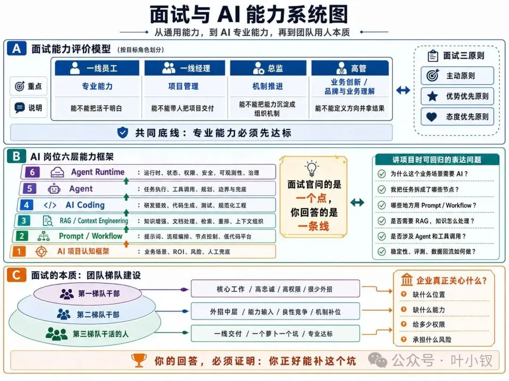
先从简历开始：
简历问题
俗话说：简历写得好，工作随便找，那我只能说你真的是想多了：
简历这个事情没大家想象那么重要...
一个人工龄到一定阶段后，简历重要就不太成立了，甚至简历意义开始下降，为什么这么说？
因为每个人都有包装的能力，简历所带来的信息会变得失真严重，所以我们只会相信其中客观的信息，什么是客观信息，也要分级：
- 第一层级，造假成本极高。
- 学历信息；
- 公司信息；
- 薪酬信息；
- 专业技能类证书；
- 第二层级，能很快辨明。
- 职位信息；
- 第三层级，辨明成本高。
- 项目信息；
- 项目所处角色；
- 第四层级，辨明成本极高（几无价值）。
- 自我评价；
作为企业用人单位，最为看重的项目信息以及技能信息，他们会是面试的重点，所以只要能说清楚就行。
从这个角度，我们来看什么是好的简历。
好的简历
一份完整的简历，由 5 大块构成：基本信息、教育经历、工作经历、项目经历、自我评价。
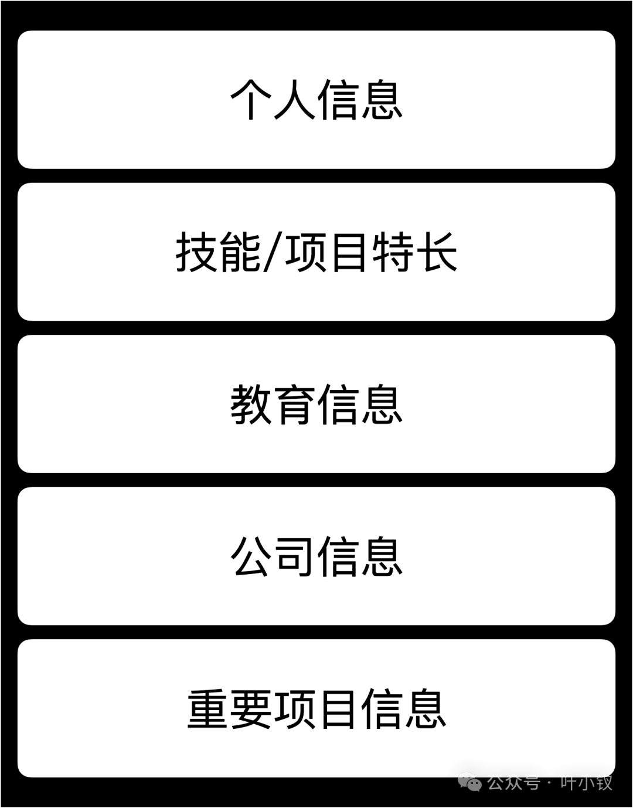
在包含完整信息的情况下，信息越少越好，这里有 2 份脱敏简历对比，大家可以感受下：
第一份简历
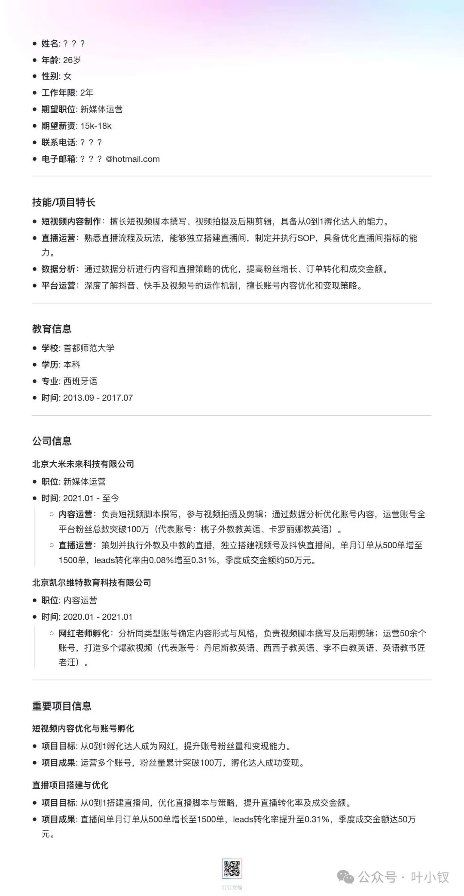
原件
精炼后的简历
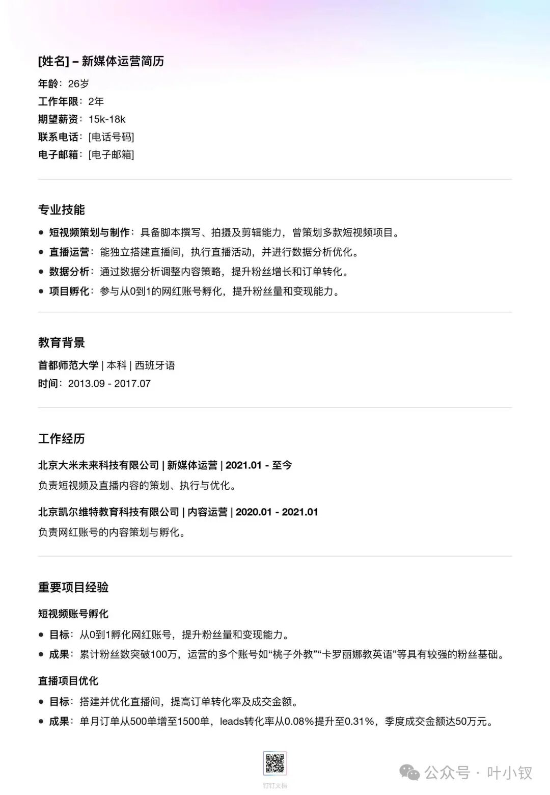
精炼
下图是他们的优化逻辑，大家可以对比下：
这里的点是：简历不要刻意堆积信息，而是要突出重点信息，有时候字多是不自信的表现。
五大建议
具体到简历编写，可以有五个建议：
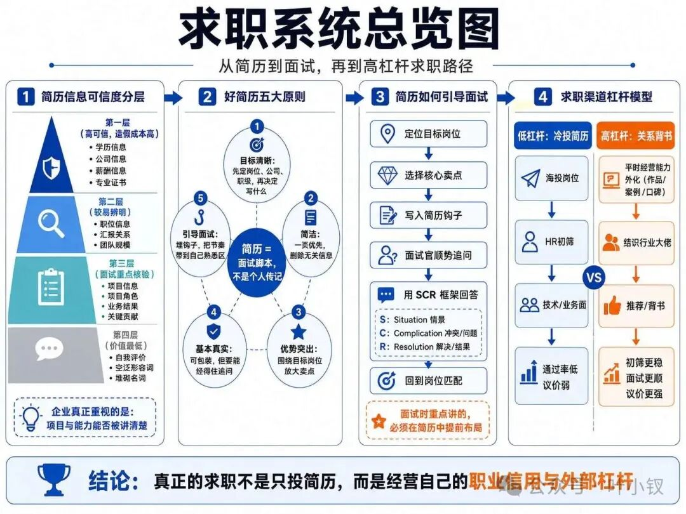
1.目标清晰
所谓目标清晰，就是你要想清楚你到底想要一个什么样的岗位；
这里需要结合你实际的专业能力、行业知识、过往履历综合分析；
举个例子，如果你是一个程序员，想转型做管理，那么简历内容就应该突出团队管理与项目管理。
2.简洁原则
所谓简洁原则，就是一页能干完的简历，别搞二页，越是精华越好；
不是必须的内容、对达成目标没帮助的内容，全部去掉，少造成干扰信息。
3.优势原则
简洁不是随意，字少就更需要突出重点、放大优势；
围绕目标写优势，比如找的是个文案编辑类工作，就突出自己自己公众号玩得溜，帮助某某多少时间涨粉多少，这些都是很好的逻辑链。
4. 基本真实
然后，简历可以适度包装，但别太夸张；
- 参与某项目改成负责人；
- 管理 5个人改成 50 人；
- 参与过 Leader 处理过某紧急事故，非要说成是自己在处理；
- ...
这些都可能风险点，碰到严格的面试官容易露馅，需要提前准备清楚。
5. 引导面试
简历服务于最终面试，是面试这个整体的一部分。
所以，你面试时候要讲的，就是你简历里面重点突出的。
举个例子，你如果面的是一个经理岗位，简历里面完全可以写一个失败项目，比如这样：
带领8个小伙伴连续加班4周完成XX项目，最后因个人项目管理经验不足，导致项目出现重大延期风险。
最后在总监跨级协助下，最终将项目成功推上线，在过程中深刻了解了项目管理的重要性，并积累了大量经验。
因为你在简历有这么一笔，人家一定会好奇、就会问，那么面试节奏就会到你手上，你自然更有机会讲好这次故事。
在表达方面这里有个技巧：SCR 框架，大家可以参考：
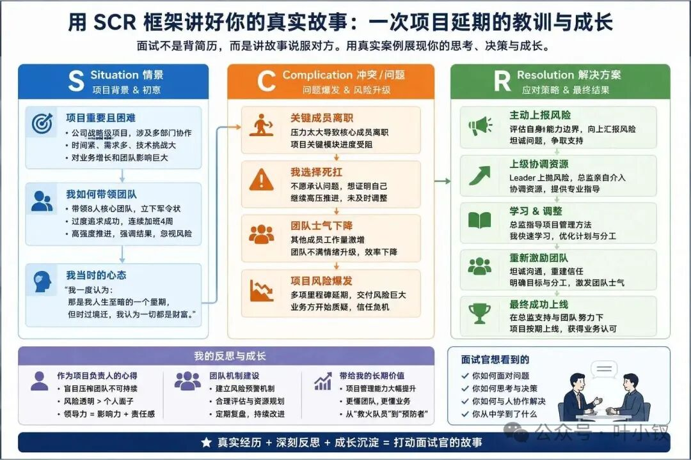
最后总结一下，简历作为一块敲门砖，做成这个样子基本够用了。
但这里大家需要回答一个问题：简历重要吗？
简历重要吗？
简历重要但没那么重要，它只是你职业道路上的一个小环节。
就我这些年招聘的经历来说，我们其实是不太关注简历的。如上所述，里面的干扰信息、包装信息太多了，我们其实只想要几个关键项目和能力，然后在面试时候好展开。
这里的意思是：企业视角来说关注的是能力，而能力的证据链是相关项目，所以（你做过的）项目列表是最关键的
这里的意思是，**与其过分在意简历的每一个字眼，不如更多地专注于提升自己的实际能力。**如果想找到一份好的工作，在平时就要多在专业和项目上花功夫。
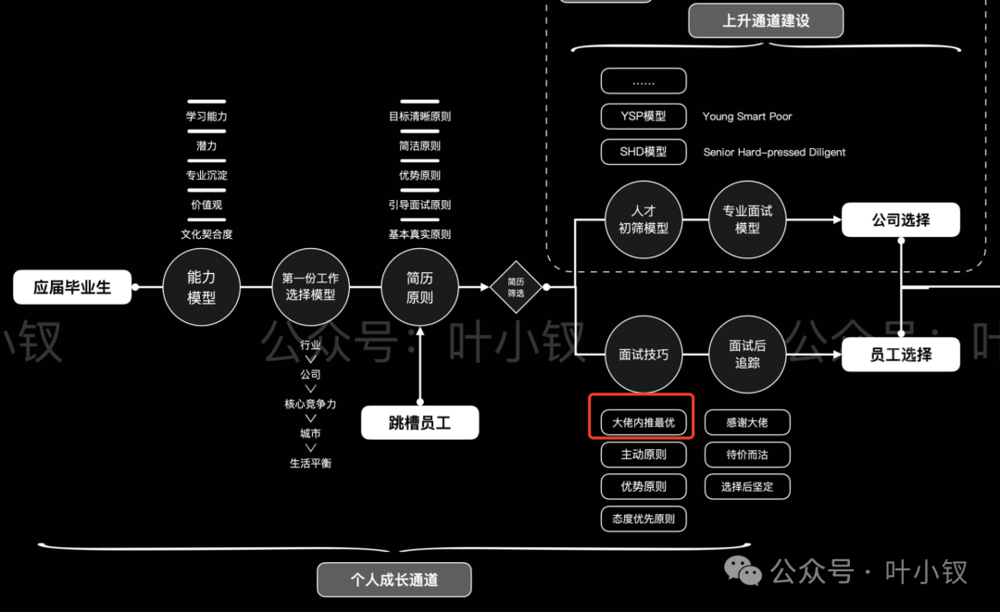
其次，在你平时的工作里面一定要去结识一些有经验的人，因为：
- 第一，他们手中经常会出现一些岗位信息；
- 第二，只要是熟人推荐的简历，那么初筛通过率会高很多；
- 第三，如果能够得到可靠背书，那么面试通过率至少会提升一些；
这种背书本身是具有品牌效应的，别人也许会帮你推个简历，但不会随意为人背书，因为背书的人有问题是一件非常影响信用的事情。
至于，如何获得别人的认可，就是大家需要思考学习的了。
如何面试
面试技巧的话，整体来说回归三个原则：
- 主动原则；
- 优势优先原则；
- 态度优先原则；
所谓主动就是引导话题，这个伏笔应该在简历阶段就埋下引子，这里具体要求是：掌握主动权：需要有 4/5 的时间是你在做表达。
这里的关键点是：你要引导面试官的问题。
关于你主动回答这件事，多数面试官是个无所谓的状态，因为面试本来就应该面试者多说，他需要倾听去了解你。
但要注意第二个点：主动并不意味着急躁，你依旧需要回答面试官合理的质疑，而不是回避。
所谓优势优先，就是要将项目过程中你的专业能力、管理能力、行业知识甚至人脉关系全部体现出来。
所以，你需要预判面试官可能质疑的点，将他的质疑变成你的完美回答。
至于如何预判，这点比较简单，找有经验的人对练，模拟面试就好，或者在去心仪公司面试前，先找几家公司面试。
态度优先原则的话，主打一个稳定抗压，真诚一点就好。
方法论方面多往：SCR 框架靠，其次述职汇报时候用的案例，也可以用于面试。
基本心法没问题，就要进入实际面试了，实际面试考察的是硬实力，这里又要分为两块：通用能力与专业能力。
通用能力模型
面试就是去评价一个人，一旦涉及评价，就会有方法论，最终的面试内容都大同小异。
我一直用的都是五维模型及Leader的五件事，这里对一线经理、总监、高管会有不一样的要求：
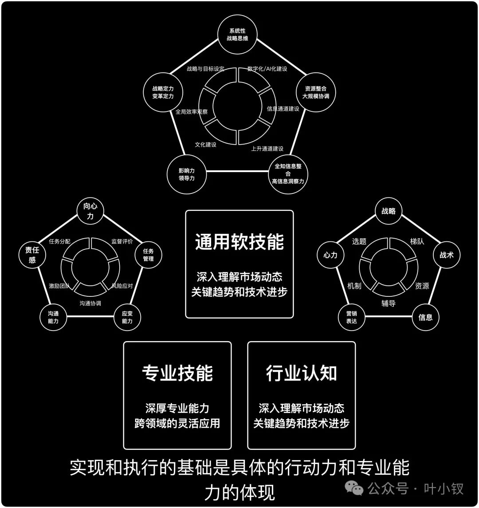
所以，你如果面试的是：
- 一线员工，重点突出专业能力；
- 一线经理，重点突出项目管理能力；
- 总监，重点突出管理和机制推进能力；
- 高管，突出品牌与业务理解及创新能力；
要注意，专业能力是及格分，必须优先达到。
然后，我使用的面试结构是这样的：
- 请求职者自我介绍。考察表达能力；
- 你处理过最难的三件事是什么，再来一次会如何。综合考察，重点聊天部分；
- 工作中，你最讨厌的一个人。观察人际交往；
- 工作中，你最认可的一个人。观察短期志向；
- 你的待遇期待。考察ROI；
- 你期望自己在新团队是什么样的角色。双方预期拉齐；
- 你为什么离职。考察持之以恒和忠诚度；
- 你未来两年的工作规划是什么。考察忠诚度和潜力；
我会优先从案例看是不是战略级人才，是否具备独立思考能力，这里的核心是选题，是如何帮助团队找到接下来要以什么为目标，并且说清楚为什么是这个目标。
交流过程中，一旦碰到以下信息，我会进一步深挖：
- 是否作为产品一号位完成了项目，项目的规模是什么，做到了什么程度，有没有数据佐证；
- 是否有非常规方式获取资源的案例，在什么难度下，获取了什么样的资源，如果是部门负责人，怎么做预算的，如何做资源分配的，底层逻辑是什么；
- 是否有管理经验，怎么做的梯队建设，案例是什么；
- 如何做人才辅导，项目辅导，下面同学遇到问题怎么处理的，是补位还是漠不关心，怎么看待补位的；
- ...
重要内容都是围绕最难三件事展开，如果你自己有预期有节奏，我就跟着你的节奏走；如果你没节奏，那么作为面试官我就带节奏。
但是对于中高阶人才，如果没有带节奏的意识，那是态度问题还是平时不总结或者表达不佳？相信我，无论什么原因，都不是一个好的开始...
AI 能力模型
前面说的是通用能力模型，接下来就是专业能力的探讨了，而因为我们做的是 AI 板块，所以聚焦方向是 AI 相关岗位。
这里值得特别说明的是：现阶段无论是 AI 产品经理、还是 Agent 工程师，都算新兴岗位，所以很多企业并不知道要什么人、也对专业能力毫无认知；
造成的结果就是岗位 JD 在乱写，比如：熟悉大模型、熟悉 RAG/Agent/ Workflow，更搞笑的就是不专业的筛选：
所以，站在对双方负责的角度，不建议完全去迎合企业，大家找工作可以很急，但进去后发现岗位预期不匹配就麻烦了...
其次，很多同学喜欢在简历里面堆专业名词：
Prompt 解决什么问题；
Workflow 解决什么问题；
RAG 解决什么问题；
......
我更习惯将 AI 从底层逻辑分为六层：
第一层：AI 项目认知框架；
第二层：Prompt/Workflow；
第三层：RAG/Context Engineering；
第四层：AI Coding；
第五层：Agent；
第六层：Agent RunTime；
只要你心中有这套架构，就只需要刻意训练了，训练的内容是：
让面试官的所有问题，全部回归这套框架
这里大家可能有点懵，所谓回归框架是什么意思？
比如面试官问你：熟悉 RAG 吗？
你不要上来就背：RAG 是 Retrieval-Augmented Generation，先检索再生成，流程是切分、向量化、召回、生成...
更好的回答是先把问题放回框架：
- 理解 RAG 解决的是模型使用外部知识的问题，它在 AI 应用工程里属于知识增强和上下文组织的一部分；
- 如果只是简单知识库问答 RAG，涉及内容可能就是文档处理、向量召回、答案生成；
- 但如果进入生产环境，就要进一步考虑文档质量、分块策略、查询改写、混合召回、rerank、低置信度处理、评测集和数据回流。
这里大家应该有感觉了：面试官问的是一个点，你回答的是一条线，这就叫带节奏、这就叫回归框架。
......
综上，大家应该能够深刻理解这种专业知识地图的重要性了，要注意的是他不仅对 AI 知识有用，其他模块也有用：
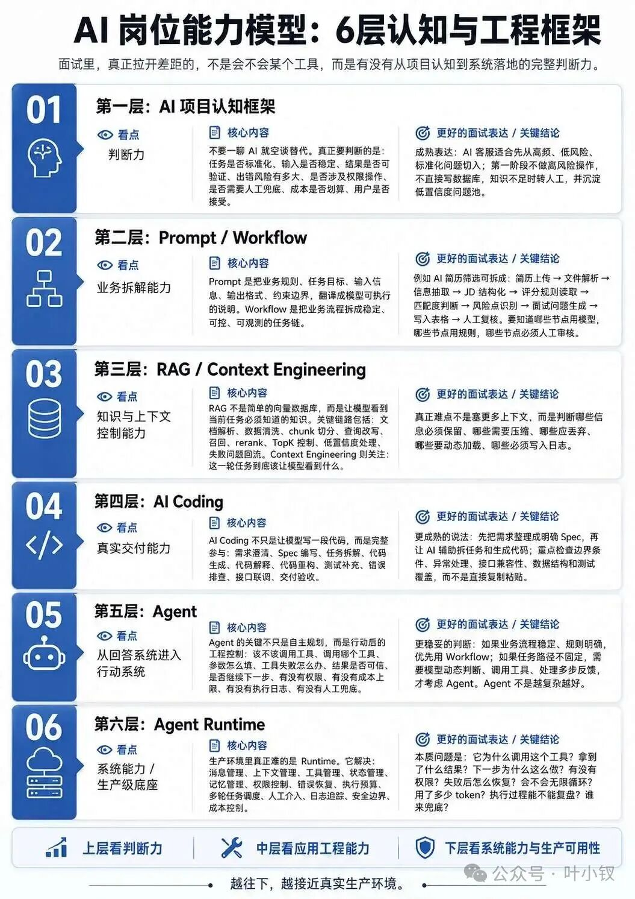
好了，再概述了通用能力专业能力后，我们可能需要简单升维，触及一点本质了：
面试的本质
面试的本质是梯队建设，一般来说是团队某个位置缺人，就要招人。
特殊情况：完全新建团队，是面试者最大的福音，赶紧去！
但这里马上就有一个值得玩味的问题，什么位置缺人，缺什么人？
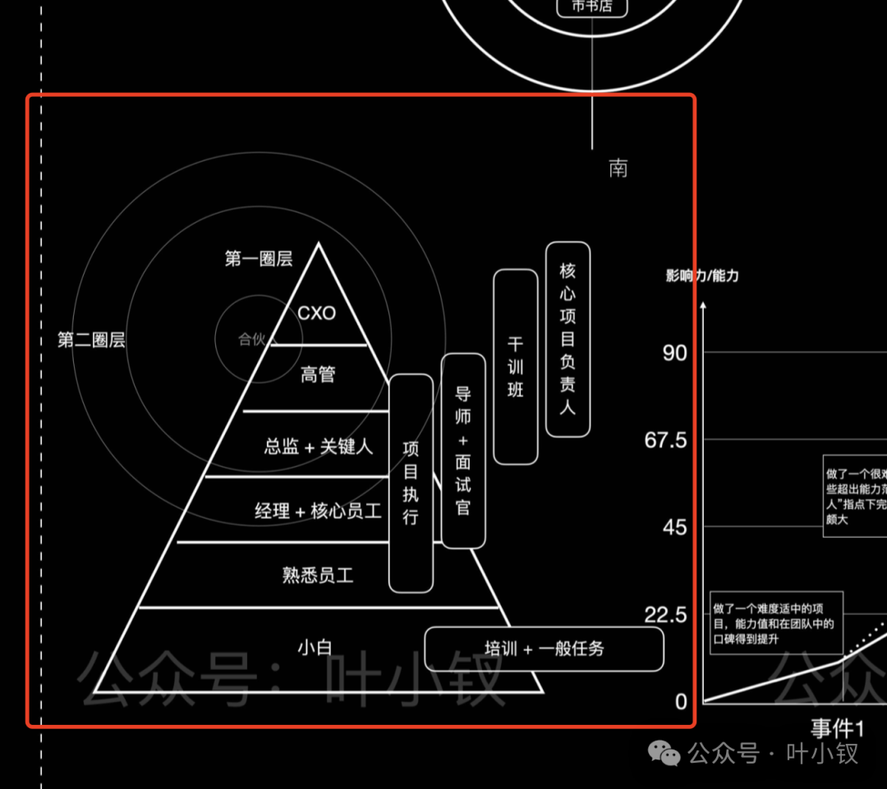
就个人经历来说，缺三种人：
- 第一梯队干部；
- 第二梯队干部；
- 第三梯队干活的；
第一圈层
首先说第一梯队，这批人除了能力本身没有大问题以外，对忠诚度要求极高。
他们会从事团队中最核心的工作，这种人很难直接招；如果将资源给到了不合适的人手里，极可能能力越大，伤害越大；
除非信任基础很好，否则一般不会直接外招。
第二圈层
其次是第二梯队，从这个部分开始，一定会外招，而且必须保证每年有一定比例的进出：问渠那得清如许，为有源头活水来。
第一梯队一般有多年战斗情谊，但能力未必最优，因为私交甚至可能会有所放纵，团队需要在两个方面帮助他们：
- 新的能力输入，可能是管理理念，可能是技术能力，这些是外招第二梯队的主要目的；
- 放进一些鲶鱼，引导团队做良性竞争，毕竟作为 Leader 要让自己有的选；
第三圈层
然后就是一线同学招聘了，对于这些同学，如果职级不是太高，都是将权限下放给其他Leader就好。
综上，团队第一梯队很少外招，第二梯队会有不小的比例外招，招进来也就是我们俗称的中层干部了，团队对他们的期待有三：
- 为团队带来新的能力，可以是拉高上限，也可以是让团队能力更加全面；
- 增加团队良性竞争氛围，让有些想躺平的同学不敢躺；
- 外招中层还有个重要工作就是完成本质那部分工作；
小公司第二梯队一般为市面上的P7、P8，大公司职级往上挪一两级即可。
可以看出，从招聘目的来说，第二梯队这批同学日子就是不好过，需要承担更高压力...
而基层员工是一个萝卜一个坑，反而没什么好说的，下面是不同梯队员工掌握的资源和权限：
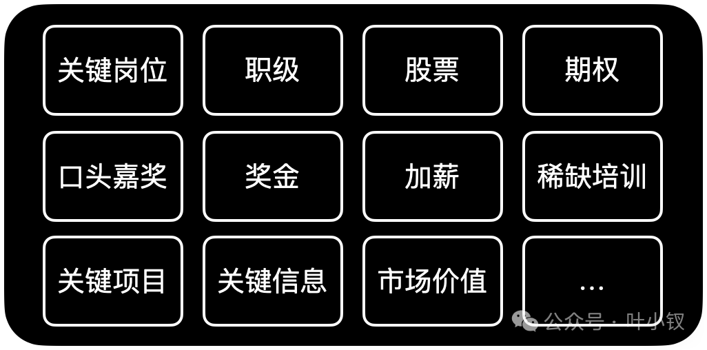
好了，至此整个面试系统应该已经比较完整了：
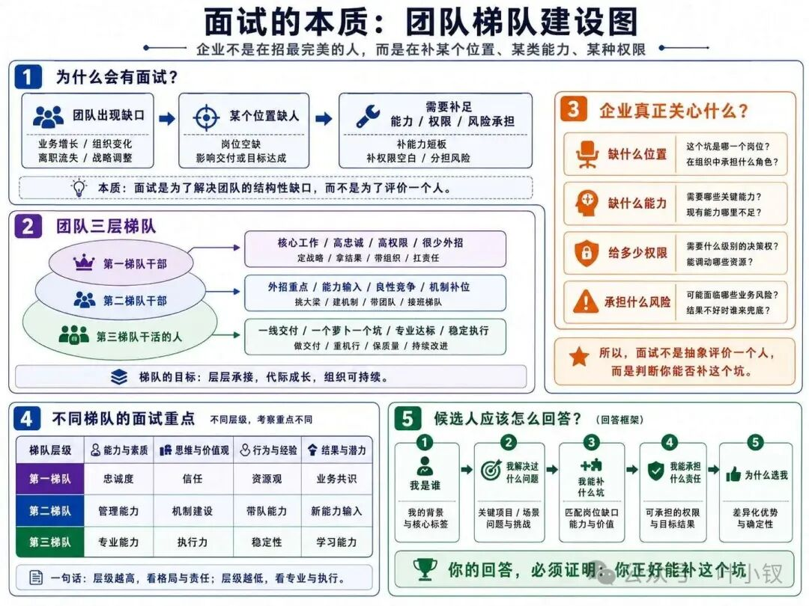
结语
好了，该说的干货和黑话都摆在这了。
最后还是回到一句话：找工作这件事，表面看是简历和面试，底层其实是能不能让别人相信你。
我们今天东拉西扯，从头到尾其实也就只讲了一件事：用管理的思维，经营你自己。
写简历，是在梳理你的价值卖点；
面试，是证明你确实有那个价值卖点；
建立AI知识框架，是让这件事真实的在平时工作中发生；
到这大家应该也有感觉了：今天也不完全是教大家写简历做面试，其实在描述的是一套求职系统。
所以，如果你已经读到这里，不妨用上面的六层AI框架，对照自己的项目经历重新拆解一遍，需要关注的核心是：
能不能用三句话说清楚，自己的最大价值是什么、证据链是什么、然后如何去表达？
如果不行，那就多练，面试这东西本质上也需要反复训练和复盘。
今天的内容就到这了，希望对大家有用！